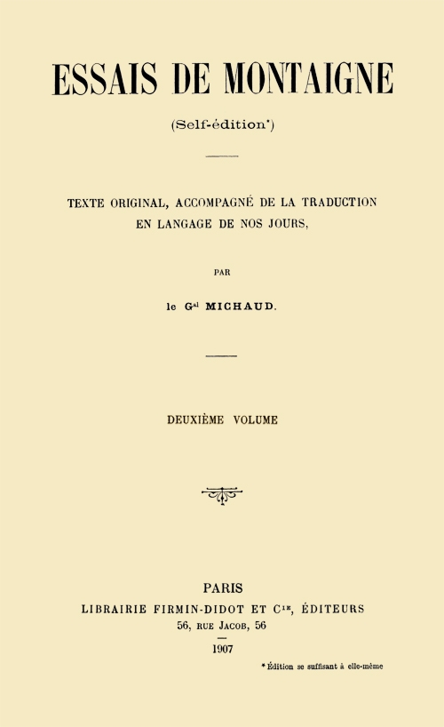
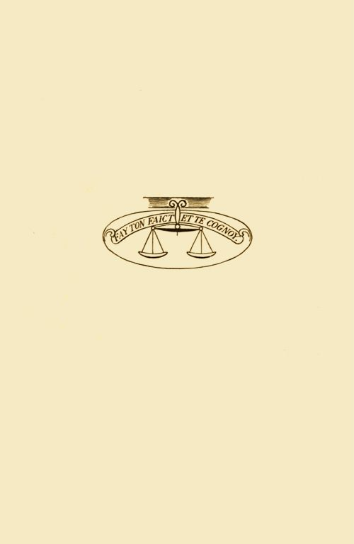

Title: Essais de Montaigne (self-édition) - Volume II
Author: Michel de Montaigne
Translator: Michaud
Release date: June 8, 2015 [eBook #49168]
Most recently updated: October 24, 2024
Language: French
Other information and formats: www.gutenberg.org/ebooks/49168
Credits: Produced by Claudine Corbasson and the Online Distributed
Proofreading Team at http://www.pgdp.net (This file was
produced from images generously made available by The
Internet Archive/American Libraries.)

Cet ouvrage se compose de quatre volumes, comprenant:
1er VOLUME.—Avertissement, table générale des chapitres, texte et traduction du commencement au chapitre 6 inclus du livre II.
2e VOLUME.—Texte et traduction du chapitre 7 inclus du livre II au chapitre 35 inclus de ce même livre.
3e VOLUME.—Texte et traduction du chapitre 36 du livre II jusqu'à la fin.
4e VOLUME *.—Notice sur Montaigne, etc.; sommaire des Essais, variantes, notes, lexique, etc.
ILLUSTRATIONS:
1er vol.—Portrait de l'auteur, armoiries et signature.
2e vol.—Plan du domaine et perspective du manoir de Montaigne.
3e vol.—Vue de la tour de Montaigne et plan des étages.
4e vol.—Fac-similé d'une page du manuscrit de Bordeaux.
Voir sur ces illustrations, la notice insérée à cet effet au quatrième volume, en tête des Notes.
* Ce volume, indépendant des autres, est susceptible par sa contexture d'être aisément utilisé avec n'importe quelle édition des Essais ancienne ou moderne, moyennant un simple tableau de concordance de pagination facile à établir soi-même.

ESSAIS
DE
MICHEL SEIGNEVR
DE MONTAIGNE
CIↃ IↃ XCV
TEXTE ET TRADUCTION
(suite)
Les distinctions honorifiques sont éminemment propres à récompenser la valeur.—Les historiens de l'empereur Auguste remarquent que lorsqu'il s'agissait de services militaires, il avait pour règle d'être excessivement prodigue de cadeaux envers ceux qui le méritaient, tandis qu'il était bien autrement parcimonieux de récompenses purement honorifiques; peut-être était-ce parce que son oncle lui avait à lui-même décerné toutes les récompenses militaires avant qu'il eût jamais été à la guerre. C'est une belle invention, qui subsiste dans la plupart des états du monde, que d'avoir créé, pour en honorer et en récompenser la vertu, certaines distinctions s'adressant à la vanité et sans valeur par elles-mêmes, telles que couronnes de laurier, de chêne, de myrte, certains vêtements de forme particulière, le privilège de circuler en ville sur un char, ou de nuit avec des flambeaux, une place réservée dans les cérémonies publiques, la prérogative de certains surnoms, de certains titres, certaines marques dans les armoiries et autres choses analogues, variables selon les nations suivant leur tempérament, et dont l'usage dure encore.
A cet égard, l'institution des ordres de chevalerie est une conception heureuse.—Chez nous et chez certains peuples voisins, nous avons les ordres de chevalerie qui n'ont pas d'autre objet. C'est assurément une bien bonne et profitable idée que d'avoir trouvé le moyen de récompenser le mérite du petit nombre d'hommes de valeur exceptionnelle, de les contenter et de les satisfaire par des distinctions qui ne soient pas une charge pour le trésor public et ne coûtent rien au prince. C'est un fait d'expérience qui remonte aux temps anciens et que nous avons aussi pu voir jadis chez nous, que les gens de qualité se sont toujours montrés plus jaloux d'obtenir ces récompenses que celles procurant gain 13 et profit; ce qui s'explique parfaitement et rehausse considérablement le cas qu'on en fait. Si à un prix qui doit être uniquement honorifique, on attache des avantages particuliers, voire même une rémunération importante, ce mélange, au lieu de grandir l'estime en laquelle on le tient, la lui enlève et l'avilit.—L'ordre de Saint-Michel, qui a été si longtemps en crédit parmi nous, avait pour plus grand avantage de n'en conférer d'aucune sorte, ce qui faisait qu'autrefois il n'y avait pas de charge ni de situation, quelles qu'elles fussent, auxquelles la noblesse aspirât plus ardemment qu'à l'obtention de cet ordre et qui lui causassent plus de satisfaction; aucune autre qualité ne procurait plus de respect et de considération, la vertu souhaitant et recevant plus volontiers qu'aucune autre, une récompense qui est son apanage exclusif alors même qu'elle est plus glorieuse qu'utile.
Les récompenses pécuniaires s'appliquent à des services rendus de tout autre caractère.—Toutes les autres récompenses sont en effet moins honorables, d'autant qu'on en use à propos de tout: par des dons en argent se rémunèrent les services d'un valet, la diligence d'un courrier, quiconque nous charme par ses danses, ses talents en équitation, par sa parole. Tous les services en somme, même les plus vils, qu'on nous rend; tout, même le vice, est payé de cette façon: la flatterie, la trahison, celui qui favorise la débauche; par suite, il n'est pas étonnant que la vertu désire et accepte moins volontiers cette sorte de monnaie courante, que celle dont rien n'entache le caractère noble et généreux qui lui est propre et tout spécial.—Auguste avait raison d'être beaucoup plus économe de celle-ci que des autres, d'autant que l'honneur est un privilège dont la caractéristique essentielle est la rareté; c'est aussi celle de la vertu: «Pour qui ne voit pas de méchants, les bons ne sauraient exister (Martial).» On ne remarque pas un homme qui s'occupe de l'éducation de ses enfants: ce n'est pas là un titre de recommandation, si louable que ce soit, parce que c'est chose qui se rencontre communément; remarque-t-on un arbre de grande élévation, dans une forêt où tous sont de même? Je ne crois pas que jamais citoyen de Sparte se soit glorifié de sa vaillance, vertu pratiquée de tous chez ce peuple; non plus que de sa fidélité aux lois et de son mépris pour la richesse. Il n'est pas de récompense pour la vertu, si grande qu'elle soit, quand elle est dans les habitudes; je ne sais si même on donnerait cette qualification de grande, à une vertu qui se pratiquerait communément.
La vaillance est une vertu assez commune qui prime chez nous la vertu proprement dite.—Puisque ces témoignages d'honneur n'ont de prix et ne sont tenus en si haute estime que parce qu'ils sont décernés à un petit nombre, pour les anéantir il n'y a rien de tel que de les prodiguer. Quand même il y aurait aujourd'hui plus de gens que par le passé, qui mériteraient cet ordre, et je reconnais qu'il peut très bien se faire qu'il en soit 15 ainsi, car aucune vertu plus que le courage militaire n'est de nature à se répandre davantage, ce n'est pas une raison suffisante pour, en le multipliant, l'avoir laissé tomber en discrédit.—En dehors de la vaillance que je qualifie ici de vertu, employant ce mot dans son acception courante, il en existe une autre, la vertu proprement dite, qui constitue la perfection et est la seule que les philosophes reconnaissent. De nature plus élevée que la vaillance, à l'encontre de celle-ci elle s'étend à tout; elle consiste dans cette force et cette fermeté de l'âme, qui la rendent indifférente à tout événement quel qu'il soit, heureux ou malheureux, qui peut survenir; elle est toujours égale, pondérée, constante, et notre vertu par excellence n'en est qu'une très faible émanation.
Conditions dans lesquelles se décernait l'ordre de Saint-Michel; abus qui en a été fait.—Nos mœurs, notre éducation, les traditions, l'exemple, nous rendent celle-ci (la vaillance) aisée à pratiquer et font qu'elle est assez généralement répandue, ainsi qu'on peut parfaitement s'en rendre compte par ce qui se passe en ces temps de guerre civile; et si quelqu'un pouvait à cette heure ramener la concorde parmi nous et faire que les efforts de tous soient dirigés vers un même but, par elle nous verrions refleurir notre ancien renom militaire. Il est bien certain qu'aux temps passés, l'attribution de cet ordre ne visait pas cette seule vertu, il fallait plus encore: jamais il n'a été décerné à un soldat n'ayant que sa valeur, il ne l'était qu'à des chefs qui s'étaient particulièrement distingués. Savoir obéir ne suffisait pas alors pour une si honorable distinction; il fallait de plus des connaissances militaires étendues, embrassant l'ensemble et la majeure partie des branches qui constituent l'homme de guerre, «car les talents du soldat et ceux du général ne sont pas les mêmes (Tite-Live)», et, en outre, être de naissance permettant l'accès à une si haute dignité. Quoi qu'il en soit, quand même plus de gens qu'autrefois en seraient dignes, on n'eût pas dû le concéder avec tant de libéralité; mieux eût valu ne pas le donner à tous ceux qui pouvaient le mériter, que de déprécier l'institution à tout jamais, comme cela est arrivé par l'abus qui en a été fait, et se priver ainsi des services qu'elle pouvait rendre. Aucun homme de cœur ne daigne tirer avantage d'une chose qui lui est commune à lui et à beaucoup d'autres; et aujourd'hui, ceux mêmes qui ont le moins mérité de se voir attribuer cette récompense, sont ceux qui affectent le plus de la dédaigner pour se mettre sur le même rang que ceux qui l'ont bien gagnée, et auxquels on porte tort en l'avilissant par la prodigalité avec laquelle on l'octroie à des gens qui en sont indignes.
Le discrédit en lequel il est tombé, rend difficile de mettre en honneur un nouvel ordre de chevalerie.—Après avoir supprimé et aboli cet ordre, en avoir créé un autre avec l'espérance que, dès son apparition, cet autre sera tenu en considération, c'est une entreprise bien risquée en des temps aussi 17 pervertis et agités que ceux où nous vivons, et il faut s'attendre à ce que celui-ci se heurte, dès le début, aux difficultés qui ont entraîné la ruine du premier. Les conditions dans lesquelles ce dernier ordre est attribué, devraient, pour qu'il s'impose, être très sévères et rigoureusement observées; or, en cette époque troublée, il n'est pas possible de tenir la bride courte et bien ajustée; sans compter qu'avant qu'il trouve crédit, il faut qu'on ait perdu la mémoire du précédent et du mépris en lequel il est tombé.
En France, la vaillance tient le premier rang chez l'homme comme la chasteté chez la femme.—Je pourrais émettre ici quelques réflexions sur la vaillance et la différence entre cette vertu et les autres; mais c'est un sujet que Plutarque a traité à diverses reprises et je ne pourrais que rapporter ce qu'il a dit. Il y a lieu toutefois de remarquer que chez nous, nous assignons à cette vertu le premier rang, ainsi que le témoigne son nom, qui vient de valeur; et que, lorsque nous disons d'un homme qu'il a beaucoup de valeur ou que c'est un homme de bien, cela ne signifie autre chose, dans le langage de la cour et de la noblesse, sinon que c'est un homme vaillant. Les Romains l'entendaient également ainsi; chez eux, le mot vertu pris dans son acception la plus générale était synonyme de force. En France, le service militaire seul concède la noblesse; il en est la condition essentielle, exclusive. Il est vraisemblable que cette vertu qui, chez les hommes, donna la première la supériorité aux uns sur les autres, est celle qui tout d'abord les a frappés: par elle, les plus forts et les plus courageux ont dominé les plus faibles et ont acquis une réputation et un rang particuliers, ce qui lui a valu à elle-même d'avoir, dans notre langue, la place si élevée et si honorable qu'elle occupe. Il a pu encore arriver que nos ancêtres, étant d'humeur fort belliqueuse, ont donné la prééminence à cette vertu qu'ils pratiquaient journellement et l'ont désignée d'un nom en rapport avec l'estime qu'ils en faisaient. C'est un sentiment analogue à celui qui fait que, dans notre passion, dans notre fiévreuse sollicitude pour la chasteté de la femme, quand nous disons: une bonne femme, une femme de bien, une femme honorable et vertueuse, nous ne voulons pas dire autre chose qu'une femme chaste; il semble que pour les contraindre à l'observation de ce devoir, nous ne fassions aucun cas des autres et que nous n'attachions aucune importance aux fautes d'autre nature, pour en arriver à les détourner de celle-ci.
A Madame d'Estissac.
Comment Montaigne a été amené à écrire et à faire de lui-même le sujet de ses essais, et pourquoi il consacre ce chapitre à Madame d'Estissac.—Madame, si la singularité et la nouveauté qui, d'habitude, donnent du prix aux choses, ne me sauvent, jamais je ne sortirai à mon honneur de ma sotte entreprise; elle est si fantastique, se présente sous une forme si éloignée de ce qui se fait d'ordinaire, que peut-être cela pourra-t-il la faire admettre. C'est une humeur mélancolique, humeur par conséquent bien opposée à mon tempérament naturel, amenée par la solitude en laquelle je vis depuis quelques années, qui tout d'abord m'a mis en tête cette folie d'écrire.—Cette détermination prise, me trouvant entièrement dépourvu de documents autres que je pusse mettre en œuvre, je me suis pris moi-même comme sujet d'analyse et de discussion. Conçu dans cet ordre d'idées, extravagant et en dehors de toutes les règles conventionnelles, mon livre se trouve, par là, être unique au monde en son genre. En dehors de sa bizarrerie, un tel travail n'est guère de nature à éveiller l'attention; car, lorsque le sujet est aussi peu sérieux et si peu relevé, le meilleur ouvrier de la terre ne saurait arriver à lui donner une tournure qui lui procure du relief.—Or, Madame, ayant dessein de m'y peindre avec toute l'exactitude possible, j'aurais omis un fait d'importance, si j'avais passé sous silence l'hommage que j'ai toujours rendu à vos mérites. C'est cet hommage que j'ai voulu affirmer d'une manière particulière en tête de ce chapitre, d'autant que, parmi vos excellentes qualités, l'affection que vous avez témoignée à vos enfants tient l'un des premiers rangs. Ceux qui, sachant à quel âge M. d'Estissac votre mari vous a laissée veuve, connaîtront les grands et honorables partis, tels qu'il convient à une dame de France de votre condition, qui vous ont été offerts, la constance et la fermeté avec lesquelles, pendant tant d'années et malgré de si graves difficultés, vous avez administré et conduit les intérêts de ces enfants pour lesquels vous avez dû sans cesse aller et venir dans tous les coins de la France et qui vous absorbent encore maintenant, les heureux résultats auxquels vous êtes arrivée, uniquement par votre prudence et que d'autres attribueront à votre bonne fortune, diront certainement avec moi qu'il n'y a pas chez nous, eu ces temps-ci, d'exemple d'affection maternelle au-dessus de la 21 vôtre. Je loue Dieu, Madame, qu'elle ait abouti dans d'aussi heureuses conditions; les brillantes espérances que donne de lui M. d'Estissac votre fils sont une garantie que, lorsqu'il sera en âge, vous en aurez l'obéissance et la reconnaissance qu'on peut attendre d'un excellent fils. A cause de son jeune âge, il ne peut encore se rendre compte des soins éclairés et incessants que vous lui prodiguez; je veux que si ces lignes viennent un jour à tomber sous ses yeux, quand ma bouche sera close et ma parole éteinte, qu'il reçoive de moi le témoignage de cette vérité, qui lui sera encore plus vivement attestée par les précieux effets que, s'il plaît à Dieu, il en ressentira: qu'il n'est pas en France de gentilhomme qui doive plus à sa mère, et qu'il ne saurait, plus tard, donner une meilleure preuve de son bon cœur et de sa vertu qu'en reconnaissant ce que vous avez été.
L'affection des pères pour leurs enfants est plus grande que celle des enfants pour leurs pères.—S'il est vraiment une loi naturelle, c'est-à-dire quelque instinct qui se manifeste toujours et chez tous, bêtes et gens (quoiqu'il y en ait qui prétendent le contraire), c'est, à mon avis, l'affection que celui qui engendre porte à l'être qu'il a engendré: sentiment qui vient immédiatement après le soin que chacun prend de sa conservation et d'éviter ce qui peut lui être nuisible. La nature elle-même semble l'avoir voulu ainsi, pour que les diverses pièces dont se compose la machine qu'elle a créée, se développent et progressent; aussi n'est-ce pas étonnant que l'affection soit moins grande, quand, au rebours, elle s'exerce des enfants à l'égard des pères. A cela s'ajoute cette autre considération émise par Aristote, que celui qui fait du bien à un autre, aime mieux cet autre qu'il n'en est aimé; que celui envers lequel vous avez des obligations, vous aime mieux que vous ne l'aimez. Tout ouvrier aime plus l'œuvre dont il est l'auteur, qu'il n'en serait aimé, si cette œuvre était capable de sentiment; du reste, ce que nous avons de plus cher, c'est l'existence; et l'existence consiste à nous mouvoir et à agir: il en résulte que chacun se retrouve quelque peu dans ses œuvres. Qui donne, accomplit un acte beau et honnête; qui reçoit, fait seulement œuvre utile à lui-même; or, ce qui est utile plaît moins que ce qui est honnête. Ce qui est honnête est stable et permanent, et procure à son auteur une récompense qui se perpétue, tandis que l'utile se perd, échappe facilement, et le souvenir qui en demeure est moins agréable et moins doux. Les choses nous sont d'autant plus chères qu'elles nous ont coûté davantage, et donner a plus de prix que recevoir.
Il ne faut pas se laisser trop influencer par les penchants que l'on nomme naturels, on ne doit d'amitié aux enfants que s'ils s'en rendent dignes.—Puisqu'il a plu à Dieu de nous donner la faculté de raisonner quelque peu, afin que nous ne soyons pas, comme les bêtes, servilement assujettis aux lois qui nous sont communes à elles et à nous, et de permettre qu'en usant de notre libre arbitre nous en fassions une judicieuse application, nous devons bien nous prêter, dans une certaine limite, à 23 ce qu'édicte la nature, sans toutefois nous en laisser despotiquement imposer par elle, car seule la raison doit servir de règle à nos inclinations.—J'ai, quant à moi, extraordinairement peu de goût pour ces dispositions qui naissent en nous, auxquelles notre jugement n'a aucune part et qu'il ne ratifie pas. Par exemple, pour demeurer dans le sujet qui nous occupe, je ne puis concevoir cette passion qui fait que l'on embrasse les enfants, alors qu'ils viennent à peine de naître, qu'ils n'ont aucun mouvement d'âme, ni rien dans l'expression de leur physionomie qui leur permette de se montrer aimables; aussi n'ai-je pas souffert volontiers que les miens fussent élevés près de moi.—Une affection sincère et justifiée à leur égard devrait naître de la connaissance qu'ils nous donnent d'eux et croître avec elle pour alors, s'ils le méritent, et la disposition naturelle qui nous porte à les aimer marchant de pair avec le bon sens, en arriver à les chérir d'une affection vraiment paternelle; s'ils n'en étaient pas dignes, nous arriverions également ainsi à nous en rendre compte, écoutant toujours notre raison malgré les suggestions contraires de la nature. Fort souvent, c'est l'inverse qui a lieu: le plus généralement, nous nous sentons plus émus des trépignements, des jeux, des niaiseries puériles de nos enfants que nous ne le sommes plus tard d'actes accomplis par eux en toute connaissance; nous paraissons en cela les aimer en manière de passe-temps, comme nous ferions de guenons et comme cela ne devrait pas être pour des hommes. Il est des gens qui leur prodiguent les jouets quand ils sont enfants et qui, lorsqu'ils sont devenus grands, se montrent peu disposés à subvenir à la moindre dépense qu'ils peuvent avoir à faire. Il semble même que la jalousie de les voir faire bonne figure dans le monde et d'en jouir, quand nous-mêmes sommes sur le point de le quitter, nous rende plus parcimonieux et avares à leur endroit, et qu'il nous soit désagréable de les avoir sur nos talons comme s'ils nous pressaient de disparaître; cela ne devrait cependant pas nous émotionner à ce point ou alors il ne faut pas nous mêler d'avoir des enfants, parce qu'il est dans l'ordre des choses qu'ils ne peuvent ni exister, ni vivre, qu'aux dépens de notre existence et de notre vie à nous-mêmes.
Il faudrait partager de bonne heure ses biens avec ses enfants, cela leur permettrait de s'établir plus tôt et les préserverait de mauvaises tentations.—Je trouve qu'il y a cruauté et injustice à ne pas admettre nos enfants au partage et à la jouissance commune de nos biens, de ne pas les associer à nos affaires domestiques dès qu'ils en sont capables, et de ne rien retrancher ni réduire de nos commodités pour pourvoir aux leurs, alors que c'est pour cela que nous avons fait qu'ils sont au monde. Il n'est pas juste de voir un père vieux, cassé, demi-mort, jouir seul dans un coin de son foyer de biens qui suffiraient à placer et faire vivre plusieurs enfants auxquels, faute de leur en donner les moyens, il laisse perdre leurs meilleures années sans qu'ils aient 25 possibilité d'entrer dans les services publics et d'apprendre à connaître les hommes. Par désespoir, on les fait se jeter dans n'importe quelle voie, si mauvaise soit-elle, qui les met à même de pourvoir à leurs besoins; et c'est ce qui fait que j'ai vu, de mon temps, plusieurs jeunes gens de bonne famille avoir pris l'habitude du vol, au point que nulle correction ne pouvait les en détourner.—J'en connais un très bien apparenté auquel, sur la prière de son frère, très honnête et très brave gentilhomme, je parlais une fois à ce sujet. Il me répondit et me confessa bien franchement qu'il avait été amené à ce vilain penchant par la rigueur et l'avarice de son père, et qu'à présent, il y était tellement fait qu'il ne pouvait s'en défendre. Il venait d'être surpris volant les bagues d'une dame au lever de laquelle, avec beaucoup d'autres personnes, il avait assisté.—Cela me rappelle ce qu'on m'a conté d'un autre gentilhomme, si fait et façonné à ce beau métier qu'il avait exercé dans sa jeunesse que, devenu maître de ses biens et résolu à renoncer à cette passion du vol, il ne pouvait cependant s'empêcher, s'il venait à passer près d'une boutique où se trouvait quelque chose dont il eût besoin, de la dérober, prenant soin plus tard de l'envoyer payer. J'en ai même vu plusieurs qui, sous l'effet de cette impulsion et par habitude, volaient aux personnes de leur société des objets avec l'intention de les leur rendre.—Je suis Gascon, et cependant c'est un des vices que je comprends le moins; je le hais plus encore par tempérament que je ne le poursuis par raison; même en pensée, je ne suis porté à rien soustraire à personne. Mon pays est, à cet égard, un peu plus décrié que les autres parties de la France, je le reconnais; et pourtant nous avons vu en ces temps-ci, à différentes reprises, en d'autres provinces, sous la main de la justice, des gens de bonne maison convaincus de vols commis dans des circonstances particulièrement horribles. Je crains que cette dépravation ne soit imputable, dans une certaine mesure, à ce vice que je signale chez les pères.
Mauvaise excuse des pères qui thésaurisent pour conserver le respect de leurs enfants.—On peut me répondre comme le fit un jour un seigneur, de jugement droit, qui me disait que «s'il économisait, ce n'était pas pour un usage et un profit autres que de demeurer honoré et recherché des siens; que l'âge lui ayant ôté tout autre moyen d'action, c'était le seul qui lui restât pour conserver son autorité dans sa famille et éviter d'arriver à être méprisé et dédaigné de tout le monde». Cela peut être juste; mais ce n'est pas la vieillesse seule, c'est toute faiblesse intellectuelle qui, au dire d'Aristote, dispose à l'avarice. Quoi qu'il en soit, c'est là une raison; seulement, ce n'est qu'un remède à un mal, et c'est le mal qu'il faudrait éviter de voir se produire. Un père est bien malheureux si l'affection, en admettant que cela puisse s'appeler de ce nom, que lui portent ses enfants, dépend du besoin qu'ils ont de lui; c'est par la vertu et la capacité qu'on s'attire le respect, par la bonté et la douceur de ses mœurs qu'on se fait aimer; les 27 cendres mêmes d'une matière précieuse ont de la valeur, et il est dans nos coutumes de respecter et d'honorer les ossements et les restes des personnes qui se sont illustrées. Si caduc, si décrépit que soit, en sa vieillesse, un personnage dont la vie a été honorable, il n'en est pas moins vénérable, surtout pour ses enfants dont l'âme aura été formée au devoir par la raison et non par la nécessité ou le besoin, non plus que contrainte et forcée: «Il se trompe fort, à mon avis, celui qui croit son autorité mieux établie par la force que par l'affection (Térence).»
Trop de rigueur dans l'éducation forme des âmes serviles.—Je suis opposé à toute violence dans l'éducation d'une âme jeune, que l'on veut dresser au culte de l'honneur et de la liberté. La rigueur et la contrainte ont quelque chose de servile; et j'estime que ce que l'on ne peut obtenir par la raison, la prudence ou l'adresse, on ne l'obtiendra jamais par la force. J'ai été élevé ainsi, m'a-t-on dit, dans ma plus jeune enfance; je n'ai été fouetté que deux fois et encore avec beaucoup de ménagements. J'eusse agi de même avec mes enfants, mais tous sont morts en nourrice. Léonore, la seule fille que je n'ai pas eu le malheur de perdre dans ces conditions, a atteint l'âge de six ans et plus, sans qu'on ait employé pour la diriger et la punir de ses petites fautes d'enfant (ce en quoi, par son indulgence, sa mère se prêtait aisément), autre chose que des paroles et encore bien anodines. Si les espérances que je conçois d'elle venaient à être déçues, il est assez d'autres causes auxquelles nous pourrions nous en prendre, sans incriminer mon système d'éducation que je suis convaincu être juste et naturel. Envers des garçons, j'en aurais été encore plus fidèle observateur, parce qu'eux sont moins destinés à faire la volonté des autres et sont de condition plus libre; j'eusse aimé à développer en leur cœur l'ingénuité et la franchise. Le seul effet que j'aie constaté dans l'emploi des verges, c'est de rendre les âmes plus lâches ou de les faire s'opiniâtrer dans le mal.
Il ne faut pas se marier trop jeune; âge qui semble le mieux convenir.—Voulons-nous être aimés de nos enfants? leur ôter la tentation de souhaiter notre mort? quoique, en aucune circonstance, un si horrible souhait ne soit ni justifié, ni excusable, «Nul crime n'a sa raison d'être (Tite-Live)»: faisons-leur une vie aussi raisonnable que cela nous est possible. Pour ce faire, il ne faudrait pas nous marier tellement jeunes, que notre âge puisse être confondu avec le leur; il peut en résulter de très grands inconvénients. Je dis cela spécialement pour la noblesse qui passe son temps dans l'oisiveté et ne vit, comme on dit, que de ses rentes; car dans les autres classes de la société où l'on est obligé de travailler pour vivre, le nombre et la présence des enfants constituent une source de revenus, ce sont autant d'outils et d'instruments de travail qui concourent à enrichir.
Je me suis marié à trente-trois ans; j'admets très bien trente-cinq, âge qu'on dit avoir été indiqué par Aristote. Platon ne veut 29 pas qu'on se marie avant trente ans et se moque avec raison de ceux qui font œuvre de mariage après cinquante-cinq, déclarant leur progéniture indigne d'être élevée et de vivre. Thalès en fixe judicieusement les limites: dans sa jeunesse il répondait à sa mère qui le pressait de se marier «qu'il n'était pas encore temps»; plus tard, gagné par l'âge, «qu'il n'était plus temps». Chaque chose a son heure; ce qui ne vient pas à son moment est à écarter.—Les anciens Gaulois considéraient comme très répréhensible pour l'homme d'entrer en liaison avec la femme avant l'âge de vingt ans, et recommandaient expressément à ceux qui voulaient se consacrer au métier des armes, de conserver pendant longues années leur virginité, l'énergie s'amoindrissant et s'altérant par le contact de la femme: «Maintenant il est le mari d'une jeune femme et il est père: ce double bonheur a amolli son courage (Le Tasse).»—Muley Hassein, roi de Tunis, celui que l'empereur Charles-Quint replaça sur le trône, reprochait à la mémoire de Mahomet, son père, ses fréquentations continues des femmes, le traitant de lourdaud, d'efféminé, bon uniquement à faire des enfants.—L'histoire grecque relate que Jecus de Tarente, Crisson, Astyllus, Diopompe et autres, afin de se maintenir en bonnes conditions pour prendre part aux courses des jeux olympiques, aux exercices de la palestre et autres semblables, se privaient pendant la durée de leur entraînement de tout rapprochement avec la femme.—Dans certaines contrées des Indes espagnoles, on ne permettait aux hommes de se marier qu'après quarante ans, bien qu'on le permît aux filles à dix.—Un gentilhomme, à trente-cinq ans, n'est pas encore en âge de céder la place à un fils qui en a vingt: il n'a cessé d'être à même de supporter gaillardement les fatigues de la guerre et de faire bonne figure à la cour de son prince; et, quoique pour cela il ait besoin de toutes ses ressources, il lui est cependant d'obligation d'en faire une part pour son fils, sans toutefois s'oublier lui-même; dans ces conditions, il est naturel que lui vienne à l'idée cette réponse que les pères ont ordinairement à la bouche: «Je ne veux pas me dépouiller avant d'aller me coucher.»
Celui qu'accablent les ans et les infirmités ne devrait conserver pour lui que le nécessaire.—Mais un père accablé d'ans et d'infirmités, obligé de vivre à l'écart par son manque de force et de santé, est dans son tort et porte préjudice aux siens s'il conserve, sans en faire usage, une fortune excédant ses besoins. En ayant le moyen, il sera porté, s'il est sage, à se dépouiller, en attendant le moment de se coucher, non jusqu'à sa chemise, mais en ne conservant qu'une bonne robe de chambre bien chaude; le reste, qui ne sert qu'à une représentation dont il n'a plus que faire, il l'abandonnera de bonne grâce à ceux auxquels, par droit naturel, cela doit revenir après lui. Il est raisonnable qu'il leur en laisse l'usage, puisque la nature l'empêche d'en jouir; agir autrement c'est, sans aucun doute, faire mal et obéir à un sentiment d'envie. Le plus beau des actes de l'empereur Charles-Quint fut 31 d'avoir su, à l'instar de certains de son caractère dans l'antiquité, reconnaître que la raison elle-même nous commande de nous dépouiller quand, devenues d'un poids trop lourd pour nos épaules, nos robes nous gênent, et de nous coucher lorsque nos jambes fléchissent. Il résigna ses moyens d'action, son haut rang, sa puissance entre les mains de son fils, lorsqu'il sentit faiblir en lui la fermeté et la force qui lui étaient nécessaires pour conduire les affaires publiques avec la gloire qu'il y avait acquise: «Il n'est que temps de lâcher la bride à ton cheval devenu vieux, si tu ne veux pas qu'il devienne poussif, butte au bout de la carrière et soit un objet de risée (Horace).»
Mais peu de gens savent se retirer de la vie active quand l'âge les gagne.—Cette faute de ne pas savoir reconnaître en temps opportun l'affaiblissement et l'altération profonde que l'âge apporte naturellement à nos facultés physiques et morales, où, à mon sens, le corps et l'âme sont aussi éprouvés l'un que l'autre, si même l'âme ne l'est davantage, et de n'en pas convenir, a nui à la réputation de la plupart des grands hommes de tous les siècles et de tous les pays. J'ai vu, en ces temps-ci, et connu particulièrement des personnages de haut rang, chez lesquels on constatait aisément un amoindrissement considérable de leurs capacités d'autrefois que je connaissais par la réputation qu'ils s'étaient faite, quand ils étaient à un âge plus fortuné; j'eusse bien vivement souhaité, pour leur honneur, les voir retirés chez eux, jouissant en paix du passé, dégagés de toute fonction publique ou militaire qu'ils n'étaient plus de taille à remplir.—J'ai vécu jadis sur un pied de familiarité assez grande avec un gentilhomme veuf et fort âgé, supportant cependant assez allègrement sa vieillesse. Il avait plusieurs filles en état d'être mariées, et un fils à même de tenir sa place dans le monde; cela était pour lui une source de dépenses assez lourdes et faisait qu'il recevait beaucoup. Il y prenait peu de plaisir non seulement parce que ses goûts pour l'épargne s'en trouvaient contrariés, mais surtout parce qu'en raison de son âge, il menait un genre de vie fort différent du nôtre. Je lui dis un jour (c'était un peu hardi de ma part, mais cette liberté de langage était dans mes habitudes) que, puisque à cause de ses enfants il ne pouvait éviter la gêne que nous lui causions, il ferait bien mieux de nous céder la place, de laisser à son fils sa maison principale, la seule qui fût bien aménagée et où l'on pût loger commodément, et de se retirer dans une de ses terres, où personne ne troublerait son repos. Depuis, il m'a cru et s'en est bien trouvé.
En faisant abandon de l'usufruit de son superflu à ses enfants, un père doit se réserver la possibilité, si besoin était, de revenir sur sa décision.—Cela ne veut pas dire qu'on doive s'engager irrévocablement vis-à-vis de ses enfants, sans pouvoir se dédire par la suite. Moi, qui puis me trouver dans ce cas, je leur laisserais la jouissance de ma maison et de mes biens, mais sous réserve de revenir sur cette disposition, s'ils m'en donnaient 33 sujet. Je leur en abandonnerais l'usufruit, parce que cela me serait plus commode; et, en ce qui touche la direction générale de mes intérêts, je n'en conserverais que ce qui me plairait. J'ai toujours estimé que ce doit être une grande satisfaction pour un père, dans sa vieillesse, d'avoir initié ses enfants à la gestion de ses affaires et de pouvoir, de la sorte, pendant sa vie, juger de leur manière de faire tout en les aidant des conseils et des avis que son expérience lui suggère; remettant lui-même entre les mains de ses successeurs, avec les traditions du passé, l'honneur et la conduite de sa maison, il est à même de se confirmer par là dans les espérances qu'il a pu concevoir pour l'avenir. Aussi, je ne fuirais pas leur compagnie, afin de pouvoir les suivre de près et jouir, dans la mesure de mon âge, de leurs joies et de leurs fêtes. Si je ne vivais avec eux, ce que je ne pourrais sans les troubler par mon caractère morose conséquence de mon âge, par la gêne résultant de mes infirmités, et aussi afin de ne rien changer au genre de vie et au régime qu'à ce moment je devrais mener, je voudrais au moins vivre près d'eux, dans une partie de ma maison, non la plus en vue, mais la plus commode.—Je ne ferais pas comme ce doyen de Saint-Hilaire de Poitiers que j'ai vu, il y a quelques années, confiné dans une telle solitude par la mélancolie dont il était atteint que, lorsque j'entrai dans sa chambre, il y avait vingt-deux ans qu'il n'en était sorti et n'avait mis un pied dehors; et cependant, il avait tous ses mouvements libres et faciles, et n'était affligé que d'un rhume qui lui était tombé sur l'estomac. Il se tenait toujours seul, enfermé dans sa chambre; à peine une fois la semaine, permettait-il qu'on y entrât pour le voir; un domestique lui apportait à manger une fois par jour et ne devait faire qu'entrer et sortir. Il passait son temps à se promener et à lire, car il était quelque peu versé dans l'étude des lettres; du reste, absolument résolu à vivre de la sorte jusqu'à sa mort, qui arriva peu après.—Par mes bons procédés, j'essaierais d'entretenir chez mes enfants, à mon égard, une affection sincère, empreinte de bienveillance, ce à quoi on arrive aisément avec des natures ayant de bons sentiments; si, au contraire, on avait affaire à des bêtes furieuses, comme notre siècle en produit par milliers, il faudrait les haïr et les fuir.
Appeler les parents des noms de père et de mère ne devrait pas être interdit aux enfants.—Je suis ennemi de cette coutume d'interdire aux enfants d'appeler leurs parents père et mère, et de leur imposer, comme plus respectueuse, une dénomination ne rappelant en rien cette parenté, comme si la nature n'avait pas assez bien pourvu à notre autorité. Nous donnons ce nom de Père à Dieu tout-puissant, et dédaignons que nos enfants l'emploient vis-à-vis de nous; c'est là une erreur que j'ai réformée dans ma famille.—C'est aussi folie et injustice que de ne pas traiter nos enfants, quand ils sont en âge, avec une certaine familiarité et vouloir conserver à leur égard une morgue austère et dédaigneuse dans l'idée de les tenir de la sorte dans la crainte et l'obéissance; 35 c'est là une mascarade bien inutile, qui rend les pères ennuyeux pour leurs enfants, et en même temps ridicules, ce qui est pire. Les enfants ont pour eux la jeunesse et toutes les forces, par suite le vent et la faveur du monde; les mines fières et tyranniques d'un homme qui n'a plus de sang ni au cœur ni dans les veines les font sourire; ce ne sont là que des épouvantails pour éloigner les oiseaux des jardins. Alors même que je pourrais me faire craindre, je préférerais encore me faire aimer; il y a tant de défauts dans la vieillesse, tant d'impuissance, elle prête si fort au mépris, que ce qu'elle peut avoir de mieux à son actif, c'est l'affection et l'amour des siens; le commandement et la crainte ont cessé d'être des armes en ses mains.
Exemple d'un vieillard qui, voulant se faire craindre, était le jouet de tout son entourage.—J'ai connu quelqu'un qui avait été très autoritaire dans sa jeunesse; l'âge l'a atteint, mais il se maintient dans un aussi bon état que possible: il frappe, il mord, il jure, se montre le maître le plus difficile à servir qui soit en France; il s'épuise en soins et vigilance. Tout cela est comédie: autour de lui, c'est un complot dans lequel entre sa famille elle-même; la meilleure part de tout ce qui est dans le grenier, dans la cave, voire même dans sa bourse, est pour les autres, bien qu'il en ait les clefs dans son aumônière et y veille plus que sur ses yeux. Pendant qu'il se contente de vivre sur ses économies et d'une table chichement servie, dans tous les réduits de sa maison c'est une débauche continue; on s'amuse, on dépense, on raille les chimères que se forgent sa vaine colère et sa prévoyance. Chacun est en sentinelle contre lui; si par hasard quelque serviteur de petite importance s'attache à lui, on excite aussitôt contre ce fâcheux les soupçons du maître: chose facile, la vieillesse méfiante y étant naturellement portée. Bien souvent il s'est vanté à moi de la fermeté avec laquelle il tient les siens en bride, de l'obéissance absolue et du respect qu'il en obtient; il voit vraiment bien peu clair dans ses affaires! «Lui seul ignore ce qui se passe chez lui (Térence)!» Je ne connais pas d'homme qui, pour conserver la direction de sa maison, ait recours à plus de moyens naturels ou indiqués par l'expérience, et cela pour être joué comme un enfant; c'est ce qui me l'a fait choisir comme un exemple des plus typiques, parmi plusieurs situations de ce genre au courant desquelles je suis. «En est-il mieux ainsi ou vaudrait-il mieux qu'il en fût autrement?» c'est une question sur laquelle on peut ergoter. En apparence on lui cède toujours, mais c'est là une concession sans portée faite à son autorité; on ne lui résiste jamais, on l'écoute, on le craint, on le respecte autant qu'il peut le souhaiter. Donne-t-il congé à un domestique? celui-ci fait son paquet et le voilà parti, mais seulement hors de sa présence; la vieillesse a de si lentes allures, ses sens sont si troublés, que le dit valet vivra et continuera son service dans la maison pendant un an, sans qu'il l'aperçoive; puis, au bout d'un laps de temps convenable, on fait 37 arriver des lettres qui viennent de loin, excitant la compassion, pleines de supplications et de promesses de bien faire, et il obtient de rentrer en grâce. Monsieur passe-t-il quelque marché, écrit-il quelque lettre qui déplaisent, on les supprime, et, quelque temps après, on invente des raisons pour justifier le défaut d'exécution ou une réponse non arrivée. Nulle lettre du dehors ne lui est remise de prime abord, il ne voit que celles dont il n'est pas à craindre qu'il ait connaissance; si par hasard il met la main sur une qu'on avait intérêt à lui cacher, comme il a l'habitude de s'en remettre à certaine personne pour les lui lire, on leur fait toujours dire ce qu'on veut; c'est ainsi que fréquemment tel est présenté comme lui demandant pardon, alors qu'il l'injurie. Finalement, il ne voit ses affaires que sous un jour autre que ce qui est arrangé à dessein et lui donnant satisfaction au mieux de ce qui se peut, pour n'éveiller ni sa mauvaise humeur, ni son courroux. Sous des formes différentes, j'ai vu dans bien des maisons les affaires domestiques se régler longtemps et d'une façon continue de même sorte, c'est-à-dire tout autrement en réalité qu'en apparence.
Quand les vieillards sont chagrins, grondeurs, avares, femme, enfants, domestiques se liguent contre eux pour les tromper.—Les femmes ont toujours un penchant naturel à contrarier la volonté de leurs maris; elles saisissent avec empressement toutes les occasions de faire le contraire de ce qu'ils voudraient, et la première excuse venue suffit pour les justifier pleinement à leurs propres yeux. J'en ai connu une qui volait de grosses sommes à son mari pour, disait-elle à son confesseur, faire des aumônes plus abondantes; fiez-vous donc à cet emploi en œuvres pies! Nulle jouissance ne leur paraît digne, si c'est du consentement du mari; il faut, pour qu'elle leur soit agréable et qu'elles en fassent cas, qu'elles s'en soient emparées, soit par adresse, soit par autorité et toujours autrement que ce ne devrait être. Quand il arrive, comme dans le cas que je viens de citer, que la femme a affaire à un pauvre vieillard et qu'elle agit pour ses enfants, forte de ce prétexte, cela devient chez elle une passion dont elle se fait gloire; et pour s'affranchir, eux et elle, de cet esclavage commun, elle en arrive facilement à conspirer contre sa domination et son administration. Si les enfants sont déjà grands et en plein développement, ils ont vite fait aussi de suborner, soit en les intimidant, soit en les corrompant, le maître d'hôtel, l'homme d'affaires et tout le reste. Celui qui n'a ni femme ni fils est davantage à l'abri de semblable disgrâce; mais quand elle lui survient, elle est plus cruelle encore et moins honorable. Caton disait de son temps: «Autant de domestiques, autant d'ennemis»; ne pensez-vous pas qu'étant donnée la pureté relative de son siècle par rapport au nôtre, il dirait aujourd'hui: «Femme, enfants, domestiques sont autant d'ennemis, que nous avons.» Il est heureux que la décrépitude apporte avec elle un défaut de clairvoyance, une ignorance de ce qui se passe autour de nous, une facilité à nous laisser tromper, qui 39 sont autant de bienfaits. S'il en était autrement et que nous voulions regimber, que deviendrions-nous en ce temps où les juges qui ont à intervenir dans nos débats, sont eux-mêmes d'ordinaire portés à donner raison aux enfants et intéressés dans la question?
Pour nous diriger à ce moment de la vie, profitons des exemples que nous avons autour de nous.—Si je ne m'aperçois pas que je suis joué, au moins ne m'échappe-t-il pas de voir que je puis très bien l'être; aussi, combien appréciable un ami véritable et comme en diffèrent ces liaisons qui ne sont que des relations de société; les bêtes elles-mêmes nous donnent ce spectacle de rapports aussi touchants et, quand j'en suis témoin, je me fais scrupule de les troubler! Si les autres me trompent, du moins je ne me trompe pas moi-même au point de me croire capable de m'en garantir et de me mettre la cervelle à l'envers pour y échapper; je me garde de semblables trahisons dans mon intérieur, non par une curiosité inquiète et toujours en émoi, mais par les diversions que je fais naître et les résolutions que je prends. Quand j'entends raconter ce qui arrive à quelqu'un, je ne m'amuse pas à m'apitoyer sur lui; je fais aussitôt un retour sur moi-même et considère dans quelle mesure cela peut s'appliquer à moi; tout ce qui touche mon prochain, me touche; tout accident qui lui survient est pour moi un avertissement et appelle de ce côté mon attention. Tous les jours, à toutes heures, nous disons d'un autre ce que nous pourrions dire plus à propos de nous si nous savions reporter aussi sur nous-mêmes cet esprit d'observation dont nous faisons si bien application à ce qui ne nous touche pas. Nombre d'auteurs portent atteinte à la cause qu'ils défendent, en se livrant d'une façon irréfléchie à des attaques contre la partie adverse, lui décochant des traits qui se prêtent à leur être retournés et susceptibles de leur faire plus de mal qu'ils n'en ont fait eux-mêmes.
Un père regrette parfois de s'être montré trop grave, trop peu bienveillant envers ses enfants, au lieu de les traiter en amis et de les prendre pour confidents.—Feu M. le Maréchal de Montluc qui, à l'île de Madère, avait perdu son fils, brave gentilhomme en vérité et sur lequel reposaient de grandes espérances, me contait ses regrets, insistant surtout sur le chagrin et le crève-cœur qu'il éprouvait de ne s'être jamais complètement livré à lui; de ce que, pour avoir eu la fantaisie de conserver vis-à-vis de lui cette gravité, cette morgue affectée que revêt volontiers l'autorité paternelle, il s'était bénévolement privé de l'agrément d'apprécier et de bien connaître ce fils et aussi de lui révéler la profonde affection qu'il lui portait et en quelle estime il le tenait pour ses qualités: «Ce pauvre garçon, disait-il, ne m'a jamais vu qu'avec une mine refrognée et semblant faire peu de cas de lui; il a emporté la croyance que je n'ai su ni l'aimer, ni apprécier ses mérites. A qui donc devais-je découvrir la tendresse particulière qu'au fond du cœur je lui portais? n'est-ce pas à lui, auquel j'eusse dû m'en ouvrir pour lui en donner la joie et qu'il m'en 41 fût reconnaissant. Je me suis contraint, mis à la torture, pour conserver à son endroit ce vain masque d'indifférence; cela m'a fait perdre le plaisir de sa fréquentation, et aussi de son affection qui ne pouvait être bien chaude à mon endroit, n'ayant jamais été que rudoyé par moi et d'une façon parfois tyrannique.» Je trouve ces regrets fondés et bien rationnels. Je ne le sais que trop par expérience, il n'est rien qui adoucisse le chagrin que nous ressentons de la perte de nos amis comme d'avoir la certitude de n'avoir rien omis de ce qu'on avait à leur dire et d'avoir été avec eux en communication parfaite et complète d'idées et de sentiments. O mon ami, cet échange de pensées entre nous a-t-il été pour moi un bien, a-t-il été un mal? Il a été un bien, j'en vaux beaucoup mieux, il n'y a pas à en douter; le regret que je conserve de toi m'honore et me console, et c'est un pieux et agréable devoir de ma vie de me remémorer constamment ces souvenirs qui ne sont plus, privation qu'aucune jouissance ne peut compenser.
Je m'ouvre aux miens autant que je le puis et leur marque très volontiers les dispositions de cœur et d'esprit en lesquelles je suis à leur égard; j'en agis du reste ainsi avec chacun. Je me hâte de me révéler, pour qu'on me voie tel que je suis, ne voulant pas qu'on y trouve du mécompte sous quelque rapport que ce soit.—On lit dans César que, parmi les coutumes spéciales à nos ancêtres les Gaulois, les enfants se présentaient à leurs pères et n'osaient paraître avec eux en public que lorsqu'ils commençaient à porter les armes, comme si par là ils eussent voulu témoigner que c'était le moment, pour les pères, d'admettre leurs enfants à frayer familièrement avec eux.
C'est un tort de laisser à sa veuve les biens dont les enfants devraient jouir; comme aussi épouser une femme ayant une belle dot, n'est pas toujours une bonne affaire.—J'ai encore relevé en mon temps un autre genre d'abus chez certains pères de famille: non contents d'avoir, pendant une longue vie, privé leurs enfants de la part de revenus que, naturellement, ils eussent dû leur abandonner, ils laissent encore, après eux, à leurs femmes la possession de tous leurs biens avec latitude d'en disposer à leur fantaisie. J'ai connu un seigneur occupant une des premières charges de la couronne de France, qui, de par ses droits, avait en espérance plus de cinquante mille écus de rente, et qui est mort, à cinquante ans, dans le besoin, accablé de dettes, ayant encore sa mère arrivée à la plus extrême décrépitude qui jouissait de tous ses biens de par la volonté de son père qui, pour son compte, avait vécu près de quatre-vingts ans. Cela ne me semble pas du tout raisonnable.—Et pourtant, je trouve peu d'avantage, pour quelqu'un qui se trouve en bonne situation de fortune, à rechercher, pour s'allier, une femme qui lui apporte une grosse dot; de toutes les dettes qu'on peut avoir, il n'en est pas qui soit plus une cause de ruine pour les maisons; mes pères s'en sont tous fort judicieusement gardés et j'ai fait de même.—Toutefois ceux qui 43 nous détournent d'épouser des femmes riches, de peur qu'elles soient moins traitables et moins reconnaissantes, se trompent lorsque, pour une conjecture aussi douteuse, ils nous font perdre de réels avantages. Une femme déraisonnable ne se laisse pas plus arrêter par une raison que par une autre; ce qu'elle préfère, c'est ce qui est le moins à faire; le mal l'attire, tout comme fait la vertu chez celles qui sont bonnes; les plus riches sont fréquemment les plus maniables, comme souvent aussi plus belles elles sont, plus elles mettent leur gloire à demeurer chastes.
Un mari ne doit laisser à sa veuve que ce qui lui est nécessaire pour se maintenir dans le rang qu'elle occupe dans la société.—On a raison de laisser l'administration de leurs biens entre les mains de la mère, tant que les enfants ne sont pas à l'âge fixé par la loi pour l'exercer eux-mêmes; mais le père les a bien mal élevés, s'il ne peut compter qu'à leur majorité, ils n'auront pas plus de sagesse et de capacité que sa femme, étant donnée la faiblesse ordinaire de ce sexe. Je conviens toutefois qu'il est encore plus contre nature de mettre une mère à la discrétion de ses enfants; il faut lui laisser largement de quoi lui permettre de tenir son rang d'après la situation de sa maison et suivant son âge, d'autant que le besoin et l'indigence étant beaucoup plus malséants et pénibles pour la femme que pour l'homme, il faut les épargner à la mère plutôt qu'aux enfants.
Pour la répartition de ses biens, à sa mort, le mieux est de s'en rapporter aux lois de son pays.—En général, la plus sage répartition que nous puissions faire de nos biens, en mourant, me paraît être de nous conformer en cela aux usages du pays: les lois y ont pourvu mieux que nous ne pouvons le faire, et il est préférable qu'elles fassent erreur dans les choix qu'elles ont faits que de nous hasarder nous-mêmes à nous tromper dans ceux que nous pourrions faire inconsidérément. Nos biens, à proprement parler, ne nous appartiennent pas puisque des dispositions légales déterminent, en dehors de nous, ceux qui doivent les posséder après nous. Bien que nous ayons quelque liberté de faire autrement, je tiens qu'il faut un motif bien sérieux, bien indiscutable, pour que nous enlevions à quelqu'un ce que sa bonne fortune lui a réservé et que les lois lui reconnaissent, et que c'est abuser, contre tout droit, de cette liberté, que de la faire servir à nos fantaisies frivoles et personnelles. Le sort m'a fait grâce d'occasions où j'eusse pu être tenté d'égarer mon affection en dehors de ce qui est dans les règles communes et légitimes.—Je vois des gens auprès desquels c'est perdre son temps que de leur prodiguer ses bons offices; un mot pris de travers efface le mérite de dix années d'excellents services; heureux, en pareil cas, qui se trouve à point pour, à leur heure dernière, faire tourner à leur avantage les dispositions en lesquelles ils sont! Avec eux, ce qui a été fait en dernier lieu décide de tout; ce ne sont pas les services les meilleurs et les plus fréquents qu'ils considèrent, mais les plus récents, ceux 45 du moment. Ils jouent de leur testament comme de pommes et de verges, pour récompenser ou punir chaque action de ceux qui peuvent y être intéressés. C'est cependant chose de trop d'importance et qui mérite qu'on y réfléchisse longtemps, pour être ainsi modifiée à tout instant; les sages ne s'y résolvent qu'une fois pour toutes, s'y préoccupant surtout de ce que commandent la raison et l'observation des lois.
Les substitutions sont ridicules, et on fait souvent erreur en jugeant de l'avenir des enfants sur leur extérieur.—Nous prenons aussi un peu trop à cœur ces substitutions favorisant les branches masculines dans l'idée ridicule d'éterniser notre nom. Nous tenons également trop de compte des conjectures incertaines de l'avenir que nous formons sur le caractère que nous croyons reconnaître chez les enfants. N'eût-il pas été injuste de me faire déchoir du rang que j'occupais, parce que j'étais le plus lourdaud et le moins dégourdi, le plus long à apprendre et le plus ennuyé lorsqu'il était question de leçon, non seulement de tous mes frères, mais de tous les enfants de ma province, qu'il s'agît d'exercices de corps ou de ceux de l'esprit? C'est folie de faire des distinctions de quelque importance, basées sur ce qu'on croit deviner et qui, si souvent, ne se réalise pas. S'il est licite d'aller à l'encontre des règles qui déterminent quels sont nos héritiers et de corriger ces désignations, il semble que ce doit être surtout à titre de compensation, dans le cas de quelque particulière difformité corporelle, constituant un vice irrémédiable et qui ne peut s'atténuer, ce qui, selon nous qui sommes grands appréciateurs de la beauté, est une cause de préjudice considérable.
Raisons données par Platon pour que les héritages soient réglés par les lois.—Je rapporterai ici, pour donner plus de relief à ma prose, le plaisant dialogue du législateur de Platon avec ses concitoyens: «Comment, lui dit-on, sentant notre fin prochaine, nous ne pourrons disposer de ce qui nous appartient en faveur de qui nous plaira? Dieux, quelle cruauté! nous ôter la possibilité de donner plus ou moins, à notre gré, à ceux des nôtres qui nous auront prodigué leurs soins pendant que nous étions malades, durant notre vieillesse, ou qui se seront occupés de nos affaires!»—A quoi le législateur répond: «Mes amis, sans aucun doute vous ne tarderez pas à mourir; et comme, ainsi que le porte l'inscription du temple de Delphes, il vous est difficile de vous connaître et de connaître ce qui est à vous, moi qui fais les lois, j'estime que vous ne vous appartenez pas et que ce dont vous avez la jouissance ne vous appartient pas davantage. Vous et vos biens appartenez à votre famille tant passée que future; mais plus encore, vous, votre famille et vos biens appartenez à la chose publique. C'est pourquoi, de peur que quelque flatteur, durant votre vieillesse ou votre maladie, ou quelque passion ne vous sollicitent mal à propos de faire un testament inique, je vous en préserverai; et comme je respecte l'intérêt commun de la cité et celui 47 de votre maison, je ferai des lois où, comme de raison, l'intérêt particulier sera primé par l'intérêt général. Allez-vous-en donc gaîment où les nécessités auxquelles l'humanité est astreinte, vous appellent; c'est à moi, qui ne me passionne pas plus pour une chose que pour une autre, et qui, dans la mesure du possible ne me préoccupe que de l'intérêt de tous, à avoir souci de ce que vous laissez.»
Il ne faut pas laisser aux femmes le droit de partager nos biens entre leurs enfants; la mobilité et la faiblesse de leur jugement ne leur permettent pas de faire de bons choix.—Revenons à notre sujet. Il me semble que, quel que soit le point de vue auquel nous nous placions, il est peu de femmes nées avec des aptitudes telles, que leur autorité sur l'homme s'impose, en dehors de l'autorité maternelle et de l'influence qu'elles ont de par la nature elle-même. Il n'est pas question ici de ceux qui, punis par où ils ont péché, se sont, par suite de quelque passion malsaine, volontairement soumis à elles, d'autant que nous parlons de vieilles femmes, ce qui n'est pas le cas des leurs. C'est apparemment cette considération qui nous a fait édicter cette loi, admise si facilement et dont nul n'a jamais vu le texte, qui, chez nous, prive les femmes de la couronne. Il n'est guère de seigneurie au monde où la question ne se soit posée en raison du bien-fondé du motif qui justifie le principe; mais les choses ont fait qu'il a trouvé plus de partisans dans certains pays que dans d'autres.—Il est dangereux de laisser la femme disposer comme elle l'entend de notre succession, les choix qu'elle fait parmi ses enfants étant toujours iniques et fantastiques parce que les appétits bizarres, les goûts dépravés qu'elle manifeste lors de ses grossesses, elle les a dans l'âme en tous temps. Communément, on la voit donner la préférence à ceux d'entre eux les plus faibles et les plus mal tournés, ou à ceux, s'il en existe, qu'elle porte encore pendus à son cou. N'ayant pas la raison assez forte pour comprendre et saisir les choses suivant la valeur qui leur est propre, elles se laissent plus volontiers aller aux impressions résultant du seul fait de la nature, comme font les animaux qui ne reconnaissent leurs petits que lorsqu'ils les ont à la mamelle.
On compte en vain sur ce qu'on appelle la tendresse maternelle.—Il est du reste facile de juger par expérience combien sont peu profondes les racines de cette affection naturelle, à laquelle nous attribuons tant d'autorité. Pour un maigre salaire, nous arrachons tous les jours des enfants des bras de leur mère pour leur substituer les nôtres; nous amenons ces femmes à abandonner les leurs à quelque chétive nourrice à laquelle nous ne voulons pas confier les nôtres ou à quelque chèvre, et nous leur interdisons non seulement de les allaiter, quelque danger qui puisse en résulter pour eux, mais encore d'en prendre aucun soin, pour s'employer tout entières au service des nôtres; et l'on voit la plupart d'entre elles concevoir, par le fait de l'habitude, pour 49 ces enfants d'emprunt qu'elles nourrissent, une affection bâtarde souvent plus vive que l'affection naturelle qu'elles ont pour les leurs et apporter dans les soins qu'elles leur donnent, une sollicitude plus grande qu'à l'égard de ceux qui leur appartiennent.—Si j'ai parlé de chèvre, c'est qu'autour de moi il est ordinaire que les femmes des villages, quand elles ne peuvent nourrir leurs enfants, aient recours à des chèvres; j'ai chez moi, à cette heure, deux laquais qui n'ont tété que pendant huit jours du lait de femme. Ces chèvres s'habituent de suite à allaiter leurs nourrissons; elles reconnaissent leur voix quand ils crient et accourent au plus vite; si on leur en présente un autre que celui qu'elles nourrissent, elles le refusent; l'enfant repousse également une chèvre autre que celle qui le nourrit. J'en ai vu un, dernièrement, auquel on enleva sa chèvre que son père n'avait fait qu'emprunter à un de ses voisins; il ne voulut jamais prendre le pis de celle qu'on lui présentait à la place et mourut, probablement de faim. Chez les animaux, l'affection naturelle s'altère et s'abâtardit aussi facilement que chez nous. Je crois que ce qui, d'après Hérodote, se pratiquerait en certaines parties de la Libye, où hommes et femmes s'uniraient indifféremment et où l'enfant, quand il commence à marcher, reconnaît de lui-même son père vers lequel, au milieu de tous, le portent naturellement ses premiers pas, doit donner lieu à bien des erreurs.
Les hommes chérissent les productions de leur esprit bien plus que leurs propres enfants et, en effet, c'est bien plus exclusivement leur ouvrage.—A ne considérer que cette seule raison d'aimer nos enfants parce que nous les avons engendrés, ce qui nous les fait qualifier d'autres nous-mêmes, il est des productions d'un autre genre, émanant également de nous, qui ne sont pas, ce me semble, de moindre importance. Ce que notre âme engendre, ce qui naît de notre esprit, de notre courage, de notre capacité, provient d'une plus noble partie de nous-mêmes que notre corps, et est encore plus nous que nos enfants; nous en sommes à la fois le père et la mère. Ces créations nous coûtent bien plus, mais aussi, lorsqu'elles ont du bon, nous font bien plus honneur. Nos enfants valent beaucoup plus de leur propre fait que du nôtre, la part que nous y avons est bien légère; dans ces autres émanations de nous-mêmes au contraire, leur beauté, leur grâce, tout ce qui leur donne du prix est notre œuvre exclusive; aussi nous représentent-elles et éveillent-elles sur nous l'attention beaucoup plus vivement que nos enfants. Platon ajoute que ce sont elles qui arrivent à l'immortalité et immortalisent leurs pères, allant jusqu'à en faire des dieux: Lycurgue, Solon, Minos en sont des exemples.—Les histoires étant pleines de faits qui témoignent de l'affection que les pères portent communément à leurs enfants, il m'a paru ne pas être hors de propos d'en citer quelques-uns ayant trait à l'affection que l'on porte parfois à ces autres d'origine immatérielle:—Héliodore, ce bon évêque de Tricca, préféra 51 renoncer au rang, aux bénéfices et à la vénération que lui valait la dignité épiscopale dont il était investi, plutôt que de désavouer son roman amoureux intitulé «Théagène et Chariclée», fillette pleine de gentillesse, qui est encore de ce monde, mais, j'en conviens, un peu trop pimpante, sémillante, d'allures trop provocantes pour la fille d'un tel père, revêtu de fonctions ecclésiastiques et sacerdotales.—Il y eut à Rome un personnage de haute valeur et de grande autorité, du nom de Labiénus, qui, parmi ses autres qualités, avait celle d'exceller dans tous les genres de littérature. Il était, je crois, fils de ce grand Labiénus, le premier des lieutenants de César dans ses guerres des Gaules, lequel plus tard embrassa le parti de Pompée où il se comporta si vaillamment et finit par être défait par César en Espagne. Le Labiénus dont je parle se fit des envieux par sa vertu, et vraisemblablement aussi, en raison de sa franchise, de nombreux ennemis parmi les courtisans et les favoris des empereurs sous lesquels il vécut, non moins que par son esprit d'opposition à la tyrannie qu'il pouvait tenir de son père et qui probablement devait se retrouver dans ses écrits et dans ses livres. Ses adversaires le poursuivirent devant les magistrats et obtinrent par jugement que plusieurs de ses ouvrages, de ceux qui l'avaient mis en lumière, fussent brûlés. C'est à lui que fut appliqué, pour la première fois, à Rome, ce genre de peine qui le fut depuis à certains autres, emportant condamnation à mort des écrits eux-mêmes et de travaux littéraires. Nous n'avions pas assez de moyens ni de sujets d'exercer notre cruauté, il a fallu que nous y ajoutions des choses que la nature a exemptées de sentiment et sur lesquelles la souffrance n'a pas prise, comme les productions de l'esprit et la réputation que nous pouvons en acquérir; que nous soumettions aux rigueurs de la discipline les inspirations qui nous viennent des Muses, et que nous leur étendions les peines corporelles qui peuvent nous atteindre nous-mêmes. Labiénus ne put supporter cette perte, ni survivre à l'œuvre qui lui devait le jour et qui lui était si chère; il se fit porter et enfermer vivant dans le monument funéraire de ses ancêtres, où il se tua et s'ensevelit tout à la fois: il est difficile de trouver un témoignage d'affection paternelle qui surpasse celui-ci. Cassius Severus, homme d'une grande éloquence, qui était de l'intimité de Labiénus, s'écria, en voyant consumer ses livres, que la sentence eût dû le condamner lui-même à être en même temps brûlé vif, parce qu'il portait et conservait dans sa mémoire tout ce qui s'y trouvait écrit.—Pareil accident advint à Cremutius Cordus, accusé d'avoir dans ses ouvrages fait l'éloge de Brutus et de Cassius; ce misérable sénat, servile autant que corrompu, digne d'un pire maître tel que Tibère, les condamna au feu. Pour leur tenir compagnie dans la mort, Cremutius se laissa mourir de faim.—Lucain, cet homme de bien condamné par ce monstre qu'était Néron, s'était fait, pour se donner la mort, ouvrir les veines par son médecin. Il touchait à ses derniers moments et déjà avait perdu la presque totalité de 53 son sang, le froid avait envahi les extrémités des membres et gagnait les organes essentiels de la vie, quand il se mit à réciter certains vers de son poème sur la bataille de Pharsale, qui lui revinrent en dernier lieu à la mémoire; il s'éteignit les ayant à la bouche. N'est-ce pas là comme un tendre et paternel congé qu'il prenait de ses enfants: tels les adieux et les étroits embrassements que nous donnons aux nôtres, quand notre mort est proche; n'est-ce pas un effet de ce sentiment de la nature qui, à nos derniers moments, nous remet en mémoire ce qui, dans notre vie, a été l'objet de nos plus chères pensées?
Épicure, à l'heure de sa mort, en proie, ainsi qu'il était obligé d'en convenir, à de très violentes douleurs d'entrailles, éprouvait une vive consolation à l'idée de la beauté de la doctrine dont il avait doté le monde. Croit-on que si, au lieu de ses écrits remarquables, il eût eu une nombreuse lignée d'enfants qu'il eût laissés après lui bien portants et bien élevés, il en eût ressenti autant de satisfaction? ou encore, qu'ayant à choisir, pour perpétuer sa mémoire, entre un enfant contrefait et mal portant ou un livre sot et inepte, il ne se fût pas résigné, lui et tout autre de son mérite, au premier de ces malheurs plutôt qu'au second?—Si, par exemple, on eût proposé à saint Augustin d'anéantir ses écrits dont notre religion a retiré un si grand fruit, ou de perdre ses enfants en admettant qu'il en ait eu, n'eût-ce pas été une impiété de sa part de ne pas sacrifier ces derniers?—Je ne sais vraiment pas si je n'aimerais pas beaucoup mieux en avoir mis au monde un, réunissant toutes les perfections, issu de mon commerce avec les Muses, plutôt que de mes relations avec ma femme. A celui-ci que je suis obligé d'accepter tel qu'il est, ce que je donne, je le lui donne simplement et d'une façon irrévocable, comme tout ce que nous donnons à nos enfants selon la chair; le peu de bien que je lui fais, cesse dès lors d'être à ma disposition. Il peut savoir des choses que je ne sais plus, en tenir de moi dont moi-même n'ai plus souvenir; et si besoin était que je lui fasse un emprunt, il me faudrait le contracter comme le ferait un étranger; si je suis plus sage que lui, il est plus riche que moi.—Il est peu d'hommes cultivant la poésie, qui ne se trouveraient mieux lotis d'être le père de l'Énéide que du plus beau garçon de Rome, et ne souffriraient davantage de la perte de celle-là que de celui-ci; d'autant que selon Aristote, de tous ceux qui produisent, le poète est, en particulier, le plus porté à s'éprendre de ses œuvres.—On croirait difficilement qu'Épaminondas, qui se vantait de laisser pour toute postérité des filles qui feraient un jour honneur à leur père (c'étaient les deux brillantes victoires qu'il avait remportées sur les Lacédémoniens), eût volontiers consenti à les échanger pour les deux plus belles filles de la Grèce; ni qu'Alexandre et César aient jamais souhaité sacrifier la célébrité qu'ils doivent à leurs glorieuses conquêtes, à l'avantage d'avoir des enfants qui eussent été leurs héritiers, si parfaits et si accomplis qu'ils eussent pu être. Je doute 55 aussi beaucoup que Phidias, ou tout autre sculpteur passé maître en son art, eût préféré la conservation et la durée des enfants que la nature lui avait donnés, à celles de telles de ses œuvres qu'à force de travail et d'étude il a amenées à la perfection.—Ces mêmes passions contre nature que rien ne peut contenir, qui ont parfois porté des pères à concevoir de l'amour pour leurs filles et des mères pour leurs fils, se rencontrent parfois au même degré dans cette parenté d'un autre genre; témoin ce que l'on dit de Pygmalion qui, ayant sculpté une statue de femme de singulière beauté, en devint si éperdument épris, d'un amour si violent qu'il fallut que, cédant à ses transports, les dieux lui donnassent la vie: «Il touche l'ivoire, et l'ivoire oubliant sa dureté naturelle cède et s'amollit sous ses doigts (Ovide).»
Mauvaise habitude de la noblesse de nos jours de ne s'armer, aux armées, qu'au dernier moment.—C'est un tort de la noblesse de notre époque qui dénote de la mollesse, qu'au contact de l'ennemi, elle ne prenne les armes qu'au dernier moment, alors qu'il y a urgence, et de s'en défaire aussitôt, à la moindre apparence que le danger s'est éloigné; il en résulte bien de la confusion: chacun va criant, courant après ses armes, alors qu'il faudrait charger l'ennemi, et il en est qui en sont encore à lacer leurs cuirasses que déjà leurs compagnons sont en déroute. Nos pères donnaient à porter leur casque, leur lance et leurs gantelets, et conservaient le reste de leur équipement tant que l'expédition durait. Actuellement nos troupes sont en grand trouble et en grand désordre par le pêle-mêle des bagages et des valets, qui ne peuvent marcher à part de leurs maîtres dont ils portent les armes. Parlant de nos ancêtres, Tite-Live disait déjà: «Incapables de souffrir la fatigue, ils avaient peine à porter leurs armes.»
Nos armes actuelles sont plus incommodes par leur poids qu'elles ne sont propres à la défense.—Il est au contraire des nations qui, dans l'antiquité et encore de nos jours, vont à la guerre sans se couvrir ou n'usent que d'armes défensives dont ils ne tirent aucune protection efficace: «N'ayant pour se couvrir la tête que des casques de liège (Virgile).» Alexandre, celui de tous les hommes de guerre qui se confiait le plus au hasard, ne revêtait que rarement son armure. Ceux d'entre nous qui n'en font pas cas, n'augmentent pas beaucoup pour cela les risques qu'ils courent; s'il arrive qu'il y en ait qui soient tués faute de ne pas l'avoir, le nombre 57 n'est pas moindre de ceux qui ont été perdus parce que leurs armes gênaient leurs mouvements, que dans une chute leur poids les immobilisait, ou qu'ils avaient quelques membres froissés ou fracturés, soit par le contre-coup, soit autrement.—A voir le poids et l'épaisseur de celles dont nous faisons usage, on dirait en vérité que nous ne cherchons qu'à nous défendre; elles nous chargent, plus qu'elles ne nous garantissent. Nous avons un tel effort à faire pour les porter, elles nous entravent et nous gênent à tel point, qu'il semble que combattre consiste uniquement dans le choc des unes contre les autres et que nous n'avons pas l'obligation de les défendre tout autant qu'elles celle de nous protéger. Tacite peint assez plaisamment les gens de guerre de l'ancienne Gaule, armés de telle sorte qu'ils avaient déjà grand'peine à se tenir debout et étaient dans l'impossibilité aussi bien d'attaquer que d'être attaqués, et qui, une fois à terre, ne pouvaient se relever.—Lucullus, voyant sur un point de la ligne de bataille de l'armée de Tigrane des guerriers mèdes pesamment et fort incommodément armés, semblant comme dans une prison de fer, pensa qu'il en aurait facilement raison et commença par eux son attaque, ce qui fut le prélude de sa victoire. A présent que les mousquetaires ont pris place dans nos armées, on va peut-être inventer quelque muraille derrière laquelle nous serons à l'abri de leurs coups, et nous irons à la guerre, enfermés dans des bastions mobiles dans lesquels on nous traînera comme ceux que les anciens faisaient porter à leurs éléphants.
On est plus vigilant quand on se sent moins protégé.—Cette manière de voir est bien éloignée de celle de Scipion Emilien, qui reprochait amèrement à ses soldats d'avoir semé de chausse-trapes le fond du fossé garni d'eau d'une ville dont il faisait le siège, en un endroit où les assiégés pouvaient exécuter des sorties, disant que lorsqu'on assaillait une place, il fallait songer à attaquer et non à se défendre; il craignait avec raison que cette mesure de précaution ne les portât à se garder avec moins de vigilance. C'est aussi lui qui disait à un jeune homme qui lui montrait un beau bouclier: «Il est, en effet, bien beau; mais, mon fils, un soldat romain doit plus se confier à sa main droite qu'à sa main gauche.»
C'est le défaut d'habitude qui nous fait paraître nos armes si pesantes.—Seul le défaut d'habitude nous rend pénible le port de nos armes: «Deux des guerriers que je chante ici, avaient la cuirasse sur le dos et le casque en tête; ni jour, ni nuit, depuis qu'ils étaient entrés dans ce château, ils n'avaient quitté cette armure qu'ils portaient aussi aisément que leurs habits, tant ils y étaient accoutumés (Arioste).»—L'empereur Caracalla marchait à pied, armé de toutes pièces, à la tête de ses troupes.—Les fantassins romains portaient non seulement le morion, l'épée et le bouclier, et leur habitude d'avoir constamment leurs armes sur le dos était telle, qu'ils ne s'en trouvaient pas plus gênés que de leurs propres membres, écrit Cicéron: «Ils disent que les armes 59 du soldat sont comme ses membres»; ils avaient en outre les vivres nécessaires pour quinze jours, plus un certain nombre de pieux pour palissader leur camp, le tout représentant un poids qui atteignait jusqu'à soixante livres. Avec ce chargement, les soldats de Marius, allant au combat, faisaient d'habitude cinq lieues en cinq heures, et même six quand il y avait urgence.—Leur discipline était beaucoup plus stricte que la nôtre, aussi en obtenait-on bien d'autres résultats; Scipion Emilien, ayant à la rétablir dans son armée, en Espagne, défendit à ses soldats de manger autrement que debout et de faire cuire leurs aliments.—A ce propos, voici un trait vraiment étonnant, c'est le reproche adressé à un soldat lacédémonien, se trouvant en expédition, de s'être abrité dans une maison; ils étaient si endurcis aux privations, que c'était une honte d'être vu sous un autre abri que la voûte céleste, quelque temps qu'il fît: à ce compte, nous n'irions guère loin aujourd'hui avec nos gens.
Ressemblance des armes des Parthes avec celles dont nous faisons nous-mêmes usage aujourd'hui.—Sur ce même chapitre, Ammien Marcellin, si au fait des guerres des Romains, donne des détails intéressants sur la manière dont les Parthes étaient armés; il y insiste d'autant plus qu'elle diffère notablement de celle des Romains: «Ils avaient, dit-il, des armures qu'on eût dit formées d'un tissu de petites plumes (probablement d'écailles métalliques s'imbriquant les unes dans les autres, qui étaient si fort en usage chez nos ancêtres), qui ne gênaient pas les mouvements du corps et étaient si résistantes que nos traits ne les pénétraient pas et rebondissaient quand ils venaient à les frapper.» Dans un autre passage, on lit: «Ils avaient des chevaux vigoureux et calmes, caparaçonnés de cuir épais; eux-mêmes étaient armés des pieds à la tête de grosses lamelles de fer agencées de telle façon, qu'aux jointures des membres, elles prêtaient aux mouvements. Ils semblaient des hommes de fer. La partie afférente à la tête, affectait la forme des divers contours du visage et était si bien ajustée, qu'il n'y avait pas possibilité d'atteindre la figure autrement que par de petits trous ronds qui correspondaient aux yeux et laissaient passer un peu de lumière, ou par des fentes correspondant aux narines et permettant à grand'peine de respirer. «Le métal flexible semble animé par les membres qu'il recouvre. C'est horrible à voir; on dirait des statues de fer qui marchent, le métal incorporé au guerrier qui le porte. De même des coursiers, leur front est bardé de fer; sous le fer, leurs flancs sont à l'abri des blessures (Claudien).» Cette description ne rappelle-t-elle pas l'équipement d'un de nos hommes d'armes, avec son armure complète?—Plutarque rapporte que Démétrius fit fabriquer pour lui et pour Alcinus, celui de ses guerriers appelé à marcher constamment à ses côtés, deux armures pesant chacune cent vingt livres, alors que celles dont on faisait d'ordinaire usage n'en pesaient que soixante.
En écrivant ses Essais, Montaigne n'a pas de plan arrêté et laisse libre cours à sa fantaisie.—Je ne doute pas qu'il ne m'arrive souvent de parler de choses qui sont mieux et plus exactement traitées par les hommes du métier passés maîtres, que par moi qui ne fais ici application que de mes dispositions naturelles et non de connaissances que je puis avoir acquises. Qui relèvera chez moi des erreurs provenant de mon ignorance, ne me contrariera nullement; je ne puis guère répondre auprès des autres de ce que j'écris, n'en répondant déjà pas auprès de moi-même qui n'en suis pas satisfait. Qui est en quête de science, doit aller la pêcher où elle se trouve et non chez moi qui n'en fais pas profession. Je n'ai d'autre idée ici que de suivre ma fantaisie; je n'ai nullement l'intention de faire connaître les choses dont je parle; ce que j'en fais, est uniquement pour me dépeindre moi-même. Ces choses, peut-être les connaîtrai-je un jour à fond; peut-être les ai-je connues ainsi jadis, quand le hasard m'a conduit sur les lieux où il m'était possible de les éclaircir; mais je ne m'en souviens plus. Je suis à même de tirer profit de ce que j'apprends, mais incapable de le retenir; aussi je ne garantis pas l'exactitude de ce que je dis, et on ne doit y voir que le degré de connaissance que j'en ai pour le moment.
Double motif qu'il a pour ne point nommer les auteurs auxquels il fait des emprunts et dont il donne des citations.—Il n'y a pas à prêter attention au choix des matières qui y sont traitées, mais seulement à la manière dont elles le sont; qu'on juge par les emprunts que j'ai faits, si j'ai su trouver ce qui est le plus propre à rehausser et appuyer convenablement l'idée que je veux développer et qui, elle, vient toujours de moi. Je ne m'inspire pas des citations que je fais, je m'en sers pour corroborer ce que je dis et que je ne puis exprimer aussi bien, soit parce que mon langage est moins expressif, soit parce que je sens moins bien. Je ne compte pas mes emprunts, j'en use selon ce qu'ils valent; si je m'étais appliqué à les multiplier, j'aurais pu en faire deux fois autant.—Ils proviennent tous, ou peu s'en faut, d'auteurs anciens si connus qu'il semble bien qu'on les reconnaîtra sans que j'aie besoin de les nommer. Les causes, les comparaisons, les preuves que j'en tire et insère dans mon ouvrage, je les confonds avec celles qui sont de mon crû; c'est intentionnellement que je ne cite pas ceux qui me les fournissent, pour tenir en respect les audaces de ces critiques qui assaillent hâtivement tous les écrits, surtout ceux 63 qui viennent de paraître, émanant d'hommes encore vivants et écrits dans le langage de tout le monde, ce qui permet à chacun d'en parler et fait croire que leur plan et les idées qui y sont émises sont aussi vulgaires que le langage employé; je veux que ces Zoïles commettent la maladresse de donner une chiquenaude sur le nez de Plutarque, en croyant me la donner à moi, et d'injurier Sénèque en ma personne.—Il me faut cacher ma faiblesse sous ces grandes réputations, mais volontiers je verrais quelqu'un m'ôter, grâce à la clairvoyance de son jugement, ces plumes dont je me suis paré, en distinguant, par la seule différence de force et de beauté qu'elles présentent d'avec les miennes, celles qui ne sont pas de moi. Si, faute de mémoire, je suis arrêté à tout instant quand moi-même je cherche à reconnaître l'origine de ces fragments qui me sont étrangers, je n'en sais pas moins très bien reconnaître, me connaissant assez pour cela, que ma terre est absolument hors d'état de produire les fleurs par trop riches que j'y trouve écloses, et que tout ce dont je suis capable ne saurait les égaler.—Là où je suis réellement responsable, c'est quand de moi-même, par vanité ou manque de jugement, je mets obstacle à reconnaître mes erreurs parce que je ne les sens pas ou que je suis incapable de les sentir alors même qu'on me les signale; bien souvent, en effet, des fautes nous échappent que nous ne voyons pas, mais c'est une infirmité de notre jugement que de ne pouvoir les apercevoir quand un autre nous les accuse. Nous pouvons posséder la science et la vérité, et manquer de jugement, comme aussi avoir du jugement sans ces deux autres qualités; savoir reconnaître notre ignorance est même l'une des garanties les plus belles et les plus sûres que le jugement ne nous fait pas défaut.—Le hasard est mon unique sergent de bataille; seul, il préside au rangement de ce que j'écris; à mesure que mes rêveries me passent par la tête, je les entasse: tantôt elles se pressent en foule, tantôt se présentent une à une. Je veux qu'on me voie dans mon allure naturelle, dans celle à laquelle je vais d'ordinaire, quelque décousue qu'elle soit. Je me laisse aller au gré de ce qui me vient à l'idée; c'est ce qui fait qu'ici, je ne traite que des sujets qu'il n'est pas permis d'ignorer et dont on peut parler sans préparation et hardiment.
La science coûte trop à acquérir, aussi ne lit-il que les livres qui l'amusent et ceux qui lui apprennent à bien vivre et à bien mourir.—Je souhaiterais certainement avoir une plus complète intelligence des choses dont je parle, mais pour l'acquérir je ne veux pas y mettre un prix aussi élevé que ce qu'elle coûte. J'ai dessein de passer tranquillement, sans me donner de peine, le temps qu'il me reste à vivre et ne veux me mettre martel en tête pour quoi que ce soit, pas même pour la science, malgré le grand cas que j'en fais.
Je ne cherche dans les livres que le plaisir que procure un honnête délassement; ou, si je les étudie, je ne m'attache qu'à ce qui peut développer en moi la connaissance de moi-même et me disposer 65 à bien vivre et à bien mourir: «C'est vers ce but que doivent tendre mes coursiers (Properce).»
Les difficultés, quand j'en rencontre en lisant, ne me préoccupent pas outre mesure, je les laisse de côté après m'être essayé une fois ou deux à les résoudre. Si je m'y arrêtais, je m'y perdrais et perdrais mon temps; car j'ai l'esprit qui, dès le début, donne tout ce qu'il peut, et ce que je ne saisis pas du premier coup, je le démêle de moins en moins en m'y obstinant. Je ne fais rien si je n'y ai de l'agrément, et m'attarder par trop sur un sujet, y apporter trop de contention d'esprit troublent mon entendement, l'attristent et le lassent. Ma vue s'y confond et s'y perd; il faut que je m'interrompe et m'y reprenne à plusieurs fois, ainsi que l'on fait pour juger du lustre d'une étoffe écarlate que l'on promène devant nos yeux, la faisant passer et repasser pour que nous la voyions sous ses différents reflets.—Si un livre m'ennuie, j'en prends un autre et ne m'y adonne que dans les moments où, à ne rien faire, l'ennui commence à s'emparer de moi. Je ne lis guère les livres nouveaux, je préfère les anciens qui me semblent plus sérieux et mieux faits; je ne recherche pas non plus les auteurs grecs, parce que, comme chez un enfant ou un apprenti, mon jugement s'accommode peu de ce que je ne comprends qu'à moitié.
Auteurs modernes du genre amusant qu'il lit volontiers.—Parmi les ouvrages qui ne sont que plaisants, je ne trouve guère de réellement amusant, parmi les modernes, que le Décaméron de Boccace, Rabelais et les Baisers de Jean Second, si toutefois on peut placer ce dernier, écrit en latin, parmi les modernes. Quant aux Amadis et autres romans de même sorte, ils ne m'ont même pas intéressé quand je les lisais étant enfant. Je dirai même, ce qui paraîtra bien hardi ou téméraire, que mon esprit vieilli ne prend plus plaisir à la lecture, non seulement de l'Arioste, mais encore de ce bon Ovide; sa facilité, sa richesse d'imagination qui, autrefois, m'ont ravi, ne me distraient plus aujourd'hui.—J'exprime librement mon avis sur toutes choses, même sur celles qui, de rencontre, dépassent mes connaissances intellectuelles et que je considère comme n'étant nullement de ma compétence; ce que j'en dis, c'est également pour donner la mesure de ma vue et non pour juger les choses elles-mêmes. Quand je me dégoûte de l'Axioche de Platon comme me faisant l'effet d'un ouvrage de peu de valeur eu égard à la puissance d'un pareil auteur, mon jugement ne croit pas pour cela à son infaillibilité; il n'a pas l'outrecuidance de contester l'autorité de tant d'autres juges de renom de l'antiquité qu'il tient pour ses maîtres, devant lesquels il s'incline et en compagnie desquels il serait plutôt satisfait de se tromper; c'est à lui-même qu'il s'en prend de cette divergence d'opinion, et il se condamne soit parce qu'il s'arrête à l'écorce, faute de pouvoir pénétrer jusqu'au cœur de l'œuvre qu'il a sous les yeux, soit parce qu'il l'a regardée sous un faux jour. Il se contente uniquement de ne se laisser ni troubler, ni entraîner à divaguer; quant à sa faiblesse, il 67 la reconnaît et l'avoue sans peine. Il pense donner une juste interprétation aux apparences telles qu'il les saisit; mais combien ces apparences elles-mêmes sont trompeuses et imparfaites. La plupart des fables d'Ésope ont plusieurs sens et significations; ceux qui en tirent un sens mythologique ou figuré, en choisissent un qui cadre bien avec le texte de la fable; généralement ce sens est celui qui apparaît à première vue, mais il n'est que superficiel, et il y en a d'autres plus vifs, plus essentiels que l'on découvre en allant plus avant, ce qu'ils n'ont pas su faire; c'est là précisément la façon dont je me comporte moi-même.
Poètes latins qu'il met au premier rang.—Mais poursuivons: Il m'a toujours semblé que parmi les poètes, Virgile, Lucrèce, Catulle et Horace tiennent, et de beaucoup, le premier rang. Particulièrement Virgile, dont les Géorgiques sont, à mon avis, l'ouvrage de poésie le plus accompli; en leur comparant l'Énéide, on reconnaît aisément chez ce dernier, des passages que l'auteur eût retouchés si le temps ne lui eût manqué; le cinquième livre de ce poème est celui que j'estime le plus parfait. J'aime aussi Lucain et le pratique volontiers, moins pour son style, que pour la valeur propre et la vérité des opinions et des jugements qu'il émet.—Quant au bon Térence, en lequel on retrouve toute la mignardise et les grâces de la langue latine, je le tiens pour admirable quand il peint les mouvements de l'âme et nos mœurs qu'il a su prendre sur le vif; à toute heure, mes actions me reportent en pensée vers lui et, si souvent que je le lise, j'y trouve toujours quelque beauté, quelque grâce nouvelles.—Les contemporains de Virgile se plaignaient de ce que certains lui égalaient Lucrèce, j'estime que c'est à tort; Virgile lui est supérieur, mais j'ai bien de la peine à penser ainsi quand j'ai sous les yeux de beaux passages de son émule. Si les admirateurs de Virgile s'offensaient de cette opinion, que diraient-ils donc de la bêtise et de la stupidité dignes des Barbares, de ceux qui aujourd'hui lui comparent l'Arioste? Qu'en dirait l'Arioste lui-même? «O siècle grossier et sans goût (Catulle)!» Je suis d'avis que les anciens avaient encore plus sujet de se plaindre quand ils voyaient Plaute placé sur la même ligne que Térence (qui, beaucoup plus que lui, a des façons de gentilhomme), que de voir mettre en balance Lucrèce avec Virgile. Ce qui marque l'estime que mérite Térence et la préférence que nous devons lui donner, c'est que Cicéron, le père de l'éloquence romaine, le cite constamment, ce qui n'est le cas pour personne autre de ce genre, et aussi le jugement sévère qu'Horace, le premier critique des poètes latins, porte sur Plaute.
Combien les poètes comiques de l'époque de Montaigne sont inférieurs en ce genre aux poètes latins.—J'ai souvent eu la fantaisie de constater combien, à notre époque, ceux qui se mêlent de faire des comédies (comme les Italiens qui s'y livrent avec assez de succès), usent de Térence et de Plaute auxquels ils empruntent les sujets de trois et quatre de leurs pièces pour en 69 composer une; il en est de même des contes de Boccace, dont ils réunissent cinq ou six dans une même comédie. La défiance en laquelle ils sont de pouvoir captiver l'intérêt avec leurs propres grâces, est la raison pour laquelle ils coulent tant de matières dans une seule composition; il leur faut s'appuyer sur quelque chose de résistant et, n'ayant pas en eux-mêmes de quoi nous retenir par les développements qu'ils donnent à leur sujet, ils cherchent à nous amuser par le sujet lui-même. Il en est tout autrement de Térence: la perfection et la beauté de son style nous font perdre de vue le thème qu'il traite; sa gentillesse, sa délicatesse, nous captivent de toutes parts; partout il plaît tellement, «il coule avec tant de pureté et de naturel (Horace)», il nous séduit par ses grâces à tel point que nous en oublions celles du sujet de sa comédie.
Les bons poètes évitent l'affectation et la recherche; ils n'ont pas besoin non plus d'ornements superflus pour soutenir l'intérêt.—Cette observation m'amène encore à remarquer que les bons poètes de l'antiquité ont évité l'affectation et la recherche, non seulement telles qu'elles se manifestent dans ces exagérations fantastiques comme il s'en rencontre dans les auteurs espagnols et qu'on trouve également chez Pétrarque et ses imitateurs, mais même dans ces saillies plus douces et plus retenues qui ornementent tous les ouvrages de poésie des siècles suivants. Aussi quiconque s'y connaît, le regrette s'il vient à les trouver chez un poète ancien, et admire beaucoup plus la perfection du fini, la douceur continue, la beauté fleurie des épigrammes de Catulle, que tous les aiguillons dont Martial affine ses satires; et cela, pour cette même raison que je viens de donner et que Martial indique en parlant de lui-même: «Il n'avait pas de grands efforts à faire, le sujet lui tenait lieu d'esprit (Martial).»—Les premiers, ceux qui brillent par leur imagination, se font suffisamment comprendre, sans s'agiter outre mesure, ni se piquer pour s'exciter; ils ont constamment de quoi rire, sans que pour cela il leur soit nécessaire de se chatouiller; les autres ont besoin de secours étrangers; moins ils ont d'esprit, plus il leur faut de corps; ils montent à cheval, parce qu'ils ne sont pas assez forts pour se tenir sur leurs jambes. C'est ainsi que dans nos bals publics, ces hommes de classe inférieure qui y enseignent à danser, dans l'impossibilité où ils sont d'avoir le maintien décent de notre noblesse, cherchent à se faire valoir, en exécutant des sauts périlleux et autres mouvements extraordinaires, comme ceux que pratiquent les bateleurs. C'est pour cela également que les dames ont plus facile contenance, dans les danses comportant des figures et des mouvements de corps, que dans certaines autres de cérémonie où elles n'ont simplement qu'à marcher en conservant leur port naturel et leur grâce ordinaire. De même aussi ne voit-on pas les baladins qui excellent dans leur art, vêtus de leurs habits de tous les jours, nous donner quand même, sans se grimer, tout le plaisir que leurs farces peuvent nous causer; tandis que leurs apprentis, non encore 71 rompus au métier, sont obligés de s'enfariner la figure, de se travestir, de faire force tours et grimaces burlesques, pour nous déterminer à rire.—Cette opinion de ma part éclate mieux que partout ailleurs, quand je compare l'Énéide et Roland le furieux. Le premier de ces poèmes se déroule à tire d'aile; son vol demeure constamment haut et ferme, on le voit toujours allant droit, sans dévier de sa direction; tandis que le second va voletant et sautillant d'épisode en épisode comme si, ne se fiant à ses ailes que pour franchir de courts espaces, il allait de branche en branche afin de prendre pied à chaque effort nouveau, de peur de perdre haleine et que la force ne lui manque: «Il ne tente que de petites courses (Virgile).»—Voilà, sur les sujets de ce genre, les auteurs qui me plaisent le plus.
Parmi les auteurs sérieux, Plutarque et Sénèque sont ceux que Montaigne préfère; comparaison entre ces deux écrivains.—Quant à mes autres lectures, celles où je m'instruis quelque peu en même temps que je me délecte, celles qui m'apprennent à penser et à me conduire, je les puise dans Plutarque depuis qu'il a été traduit en français, et dans Sénèque. Tous deux ont ce grand avantage, eu égard à ma disposition d'esprit, que les enseignements que j'y cherche s'y trouvent épars, ce qui ne m'impose pas un travail long et continu dont je suis incapable; ce caractère est celui des opuscules de Plutarque et des épîtres de Sénèque, qui sont ce qu'ils ont écrit de mieux et de plus profitable. Il ne faut pas disposer de grand temps pour s'y mettre et je les quitte où et quand cela me plaît, parce que les sujets ne s'y font pas suite et ne dépendent pas les uns des autres. Ces deux auteurs, d'accord sur la plupart des idées fondamentales, ont encore d'autres points communs: ils ont vécu dans le même siècle, ont été tous deux précepteurs d'empereurs romains, tous deux venaient de pays étrangers et ont été riches et puissants.—Leur enseignement est de la philosophie la meilleure, présentée de la façon la plus simple et avec compétence. Plutarque est plus égal et plus constant, Sénèque plus ondoyant et varié. Celui-ci peine, se raidit, fait effort pour défendre la vertu contre la faiblesse, la crainte et les appétits du vice; l'autre ne semble pas faire cas de ces ennemis, il dédaigne de hâter le pas, pour se mettre hors de leurs atteintes. Plutarque est de l'école de Platon, ses idées se gardent de toute exagération et s'accommodent de la société telle qu'elle est; chez l'autre qui est de l'école des Stoïciens et de celle d'Épicure, elles s'écartent davantage de ce qui est de mise dans la vie en commun mais sont, à mon avis, plus commodes pour l'individu et empreintes de plus de fermeté. Sénèque semble avoir fait quelque concession à la tyrannie des empereurs de son temps, car je considère comme certain que c'est parce qu'il y a été forcé, qu'il condamne la cause de ces hommes généreux qui ont frappé César; Plutarque conserve toujours son indépendance. Sénèque abonde en saillies et en critiques, chez Plutarque les faits prédominent; le premier vous échauffe et vous 73 émeut davantage, le second vous procure plus de contentement et vous dédommage mieux du temps que vous lui consacrez; celui-ci nous guide, l'autre nous pousse.
Jugement porté par Montaigne sur les ouvrages philosophiques de Cicéron.—Pour ce qui est de Cicéron, celles de ses œuvres qui conviennent au but que je me suis proposé, sont ses ouvrages philosophiques traitant de la morale. Mais, à vrai dire et si hardi que cela paraisse (et une fois que l'on a commencé à être impudent, on est dans une voie où l'on ne s'arrête pas), sa façon d'écrire, toute autre que celle des précédents, me semble ennuyeuse; ses préfaces, ses définitions, ses classifications, ses étymologies y tiennent en effet, et bien inutilement, presque toute la place; ce qu'il y a de vif et de nerveux est étouffé par * ces longueurs préliminaires. Si j'ai passé une heure à le lire, ce qui est beaucoup pour moi, et que je récapitule tout ce que j'en ai tiré de substantiel et de nutritif, la plupart du temps je ne trouve que du vent, parce que je ne suis encore arrivé ni aux arguments, ni aux raisons qui touchent directement au nœud de la question que je cherche à démêler. Pour moi, qui ne demande autre chose que de devenir plus sage, et ne veux devenir ni plus savant ou éloquent, cette exposition logique et conforme aux règles posées par Aristote est hors de propos; je voudrais que l'on commençât par ce qu'il met à la fin; je sais assez ce que c'est que la Mort et la Volupté, sans qu'on s'amuse à me les analyser en grand détail. Je cherche d'emblée les raisons bonnes et sérieuses de nature à me réconforter contre l'effort que j'ai à supporter de leur part, et les subtilités chères aux grammairiens, pas plus qu'un ingénieux agencement de phrases et d'argumentations, n'y ajoutent rien. Je veux des raisonnements qui, dès le début, battent en brèche le point principal du litige; les siens traînent trop autour de la question; ils sont bons pour l'école, le barreau ou le sermon où nous avons tout le loisir de sommeiller et sommes encore à temps, quand un quart d'heure après nous revenons à nous, d'en ressaisir le fil. C'est ainsi qu'il faut parler à des juges que l'on veut gagner à sa cause, que l'on ait tort ou raison; ou encore à des enfants ou à la foule auxquels il faut tout dire pour arriver à ce qu'ils en retiennent quelque chose; mais moi, je ne veux pas qu'on soit sans cesse à éveiller mon attention et qu'on me crie cinquante fois: «Entendez bien ceci,» comme font nos crieurs publics. Les Romains disaient dans leurs prières liturgiques: «Attention!» nous disons dans les nôtres: «Haut les cœurs!» ce sont là autant de paroles perdues pour moi qui arrive de chez moi tout disposé à écouter. Les assaisonnements et la sauce me sont inutiles, je mange très bien la viande toute crue; et, au lieu de me mettre en appétit, ces préambules, cette parade précédant la pièce, me fatiguent et lui font perdre de son charme.—La licence des temps sera-t-elle pour moi une excuse de l'audace sacrilège qui me porte à trouver également trop traînants les dialogues mêmes de Platon? sous cette forme, le sujet est 75 par trop étouffé et je regrette le temps que passe à ces longues interlocutions sans utilité, qui lui servent d'entrée en matière, un homme qui avait tant de meilleures choses à dire; mon ignorance me sera une excuse plus admissible de ce que je n'apprécie pas la beauté de son style.—En général, je recherche les livres qui mettent en œuvre la science et non ceux qui l'exposent; Plutarque et Sénèque, comme Pline l'ancien et leurs semblables, ne nous disent pas: «Attention!» ils ne veulent avoir affaire qu'à des gens qui se donnent d'eux-mêmes cet avertissement, ou, s'ils l'emploient, c'est alors à propos d'un point essentiel, ce n'est plus dès lors un simple préambule et il a une importance spéciale.
Éloge des lettres à Atticus.—Je lis volontiers les épîtres à Atticus de Cicéron, parce qu'elles donnent de très nombreux détails sur l'histoire et les affaires de son temps; et plus encore parce qu'elles nous édifient sur son caractère personnel et que, comme je l'ai dit ailleurs, j'éprouve une curiosité singulière à connaître l'âme et la tournure naturelle d'esprit des auteurs que je lis. Ce n'est guère que leur capacité, et non leurs mœurs ni eux-mêmes, que nous pouvons juger d'ordinaire par ce qu'ils mettent dans les écrits qu'ils étalent à la face du monde. J'ai mille fois regretté que l'ouvrage que Brutus a écrit sur la vertu, ne soit pas parvenu jusqu'à nous; il eût été beau d'apprendre la théorie de qui s'y connaissait si bien en pratique. Toutefois comme celui qui prêche et ce qu'il prêche sont deux choses différentes, j'aime encore mieux voir Brutus peint par Plutarque que par lui-même; mais je préférerais savoir au juste ce dont il devisait, sous sa tente, avec un quelconque de ses amis intimes, la veille d'une bataille, plutôt que les propos qu'il tenait le lendemain à son armée, et ce qu'il faisait dans son cabinet et dans sa chambre, plus encore que sur la place publique et au sénat.
Caractère de Cicéron, sa poésie, son éloquence.—Sur Cicéron, je suis de l'avis général, c'est qu'en dehors de son savoir, son âme, sous bien des rapports, n'atteint pas la perfection. Il était bon citoyen, de nature débonnaire ainsi que sont le plus souvent les hommes qui, comme il l'était, sont replets et disposés à se moquer; mais, à dire vrai, il y avait en lui beaucoup de mollesse, d'ambition et de vanité. Je ne sais comment expliquer autrement le cas qu'il faisait de sa poésie; certes, ce n'est pas une grande imperfection que de faire de mauvais vers; mais c'en est une que de ne pas sentir combien les siens étaient indignes de la gloire attachée à son nom.—Son éloquence est absolument hors de pair; je crois qu'aucun homme ne l'égalera jamais. Cicéron le jeune, son fils, qui n'avait d'autre point de ressemblance avec son père que le nom qu'il portait, commandait en Asie. Il avait un jour à sa table plusieurs personnes étrangères, parmi lesquelles Cestius qui était placé au bas bout et se trouvait là, comme il arrive qu'on se fourre chez les grands quand ils tiennent table ouverte. Cicéron s'informa qui il était, auprès d'un de ses gens qui lui dit son nom; 77 mais sa pensée était ailleurs, et, oubliant la réponse qui venait de lui être faite, il renouvela sa demande par deux ou trois fois différentes. Son serviteur, pour n'avoir pas la peine de lui répéter encore la même chose, finit par lui répondre, pour fixer son attention par quelque circonstance particulière: «C'est ce Cestius qui, vous a-t-on dit, ne fait pas grand cas de l'éloquence de votre père, quand il la compare à la sienne.» Cicéron, prenant la mouche sur ce propos, fit sur-le-champ saisir ce pauvre Cestius et, sans plus de façon, fouetter en sa présence. Voilà certes un amphitryon peu courtois!—Parmi ceux mêmes qui, tous comptes faits, avaient le plus d'estime pour son incomparable éloquence, il s'en est trouvé que cela n'a pas empêchés d'y relever des fautes; dans le nombre, le grand Brutus, son ami, qui disait que c'était une éloquence «cassée et sans vigueur». Les orateurs de l'époque qui suivit, lui reprochaient aussi ce soin singulier qu'il avait de terminer ses périodes par des phrases harmoniques d'une certaine longueur et les mots «à effet», qu'il emploie si souvent; pour moi, je préfère des phrases finales plus brèves, nettement scandées. Malgré ce souci de l'harmonie, il arrive, quoique assez rarement, qu'on rencontre chez lui des sons qui se heurtent, comme je l'ai remarqué dans cette phrase: «En vérité, quant à moi, j'aimerais mieux vieillir moins longtemps, que de vieillir avant le temps.»
Montaigne se plaît surtout avec les historiens, particulièrement avec ceux qui ont écrit les vies de grands personnages.—Les historiens constituent mon passe-temps favori; leur lecture m'est agréable et facile; avec cela, l'homme vu d'une façon générale, celui-là même que je cherche à pénétrer, est présenté par eux plus nettement et plus complètement que partout ailleurs; sa manière d'être y apparaît sous son vrai jour, tant dans son ensemble que dans ses détails et avec toutes ses variations; de même son caractère formé de l'assemblage de ses qualités et de ses défauts, ainsi que les accidents auxquels il est exposé. Parmi ceux qui écrivent l'histoire, ceux qui s'attachent moins aux événements qu'à leurs causes, qui considèrent les mobiles auxquels l'homme obéit plutôt que ce qui lui arrive, sont ceux qui me plaisent le plus; c'est pourquoi, à tous égards, Plutarque est mon homme.—Je suis très contrarié que nous n'ayons pas une douzaine de Diogène Laerce, ou que son ouvrage ne soit pas plus étendu ou plus intelligemment fait, parce que je suis tout aussi curieux de connaître la vie et les détails de l'existence de ces grands éducateurs du monde, que d'être renseigné sur leurs dogmes et leurs idées.—Quand on se livre à des études historiques de ce genre, il faut feuilleter indistinctement toutes sortes d'auteurs, vieux et nouveaux, qu'ils soient écrits en bon ou en mauvais français, afin d'arriver à connaître les différents points de vue sous lesquels chaque chose s'y trouve présentée.
Éloge des Commentaires de César.—Entre tous, César me paraît mériter qu'on l'étudie, non seulement sous le rapport de 79 l'histoire, mais pour lui-même, tant il y a en lui de perfection et de supériorité qui le placent au-dessus de tous les autres, même de Salluste. Je le lis assurément avec beaucoup plus de recueillement et de respect qu'on ne lit d'ordinaire les ouvrages autres que les écritures saintes, séduit tantôt par ses faits et gestes et sa merveilleuse grandeur, tantôt par la pureté et l'inimitable correction de son style bien supérieur, comme le dit Cicéron, à celui de tous les autres historiens, et parfois à celui de Cicéron lui-même. A la sincérité dans les jugements qu'il porte sur ses adversaires se joint, qu'en dehors des couleurs fausses sous lesquelles il dissimule ce que sa cause a de mauvais et l'horreur de sa funeste ambition, on ne peut, à mon sens, lui reprocher que de ne pas avoir parlé assez de lui-même, car d'aussi grandes choses que celles qu'il a accomplies, ne peuvent l'avoir été sans que la part qu'il y a prise ne soit beaucoup plus considérable qu'il ne le dit.
Les meilleurs historiens sont ceux qui ont le génie de l'histoire et s'imposent par leur valeur, ainsi que ceux qui écrivent avec simplicité et bonne foi.—Parmi les historiens, j'aime ceux qui sont ou très simples ou excellents. Ceux qui sont simples, n'étant pas à même d'y rien ajouter du leur, recueillent avec soin et exactitude tout ce qui arrive à leur connaissance, enregistrent tout de bonne foi, sans choix, ni triage, sans rien faire qui influence notre jugement dans la découverte de la vérité. Tel entre autres le bon Froissart qui, dans son œuvre, est d'une si franche naïveté, que lorsqu'il a commis une erreur, il ne craint pas de la reconnaître et de rectifier le passage où elle lui a été signalée; tous les bruits qui courent, il les relève avec les variantes qu'ils peuvent présenter; toutes les versions qu'il recueille, il les consigne; ce sont des matériaux bruts et informes pour servir à écrire l'histoire, qu'il collige; et chacun, après lui, peut les utiliser suivant ses aptitudes.—Les historiens parfaits ont l'intelligence nécessaire pour discerner ce qui mérite de passer à la postérité; ils sont à même de distinguer entre deux relations celle qui est la plus vraisemblable; de la situation en laquelle se trouvent les princes et de la connaissance de leur caractère, ils en déduisent les mobiles qui leur dictent leurs déterminations et ils placent en leur bouche les paroles qui conviennent à la circonstance; ils sont fondés à nous imposer leur manière de voir, mais cela n'est le propre que d'un petit nombre.—Ceux qui occupent un rang intermédiaire, et c'est la généralité, gâtent tout. Ils veulent nous mâcher les morceaux; ils prétendent juger et faussent l'histoire suivant l'idée qu'ils s'en forment; car une fois que l'on a jugé dans un certain sens, on ne peut se défendre de forcer les faits et de les présenter de manière à les faire abonder d'après l'idée qu'on s'en est prématurément fait. Ils font choix de ce qu'ils estiment devoir être conservé, et nous cachent souvent telle parole, telle action particulière qui éclaireraient mieux la situation; ils éliminent comme incroyables les choses qu'ils ne comprennent pas, et 81 d'autres encore, peut-être parce qu'ils ne savent pas bien les rendre en latin ou en français. Qu'ils nous développent hardiment et aussi éloquemment qu'ils le voudront leurs déductions, qu'ils jugent comme ils croient devoir le faire, mais qu'ils nous laissent, à nous aussi, la possibilité de juger après eux; que pour être plus précis et plus concis, ils n'altèrent et ne suppriment rien des matériaux qu'ils exposent, et qu'ils nous les présentent sans falsification et dans leur intégralité sous tous rapports.
Les bonnes histoires sont d'ordinaire celles faites par des hommes ayant pris part aux événements qu'ils racontent; difficulté de fixer les détails de certains faits.—Le plus souvent, surtout en ces siècles derniers, on attribue ces fonctions d'historiographe à des gens du commun, par cette seule raison qu'ils savent très bien parler, comme si c'était pour apprendre la grammaire que nous devions recourir à leurs travaux; quant à eux, n'ayant été choisis que par cette considération et n'ayant vendu que leur babil, c'est de cela surtout qu'ils se préoccupent et, qu'à grand renfort de belles phrases et de bruits ramassés dans les carrefours des villes, ils vont composant leurs chroniques. Les seules histoires ayant de la valeur, sont celles écrites par ceux-là mêmes qui commandaient aux affaires qu'ils racontent, qui participaient à leur direction ou au moins qui se sont trouvés en conduire d'autres de même sorte; c'est le cas de presque tous les historiens grecs et romains; car alors, si plusieurs témoins oculaires ont écrit sur le même sujet (et il arrivait fréquemment, en ces temps-là, que les hautes situations et le savoir se trouvaient réunis), et qu'il y ait erreur, elle ne peut être qu'excessivement légère et ne porter que sur un incident fort douteux. Que peut-on espérer d'un médecin qui parle guerre, ou d'un écolier qui traite des projets que les princes ont en tête?—Un seul exemple suffira pour montrer combien les Romains étaient scrupuleux à cet égard: Asinius Pollio signale dans les Commentaires mêmes de César, quelques erreurs qui seraient dues à ce qu'il ne pouvait voir par lui-même tout ce qui se passait dans son armée et à ce qu'il aurait cru des personnes lui rapportant parfois des faits qui n'avaient pas été suffisamment vérifiés, ou encore parce que ses lieutenants ne l'ont pas exactement renseigné sur les opérations qu'ils ont conduites en son absence. On peut juger par là combien cette recherche de la vérité est délicate puisqu'on ne peut se fier, pour connaître ce qui s'est passé dans un combat, à ce qu'en sait ce qui lui y commandait, ni aux soldats sur ce qui s'est passé près d'eux, qu'autant que, comme dans le cas d'une instruction judiciaire, on confronte les témoignages et on reçoit les objections avant d'admettre comme prouvés les moindres détails de chaque fait. La connaissance de ce qui se passe aujourd'hui offre bien moins de garantie encore, mais c'est là un point qui a été traité tout au long par Bodin dans le sens où je le conçois moi-même.
Jugements de Montaigne sur Guichardin, Philippe de 83 Comines et les sieurs de Bellay.—Pour remédier un peu aux trahisons de ma mémoire qui me fait défaut à un degré tel qu'il m'est arrivé plus d'une fois de reprendre, comme récents et m'étant inconnus, des livres que quelques années auparavant j'avais lus avec attention et couverts de notes, j'ai pris, depuis quelque temps, l'habitude d'inscrire à la fin de chacun de ceux dont je ne compte pas user à nouveau, l'époque à laquelle j'en ai terminé la lecture et, en gros, l'impression que j'en ai éprouvée, de manière à me représenter au moins la physionomie et l'idée générale qu'en lisant, je me suis faites de l'auteur. Voici quelques-unes de ces annotations:
Il y a environ dix ans, sur mon Guichardin (en quelque langue que mes livres soient écrits, c'est dans la mienne que je les annote), j'inscrivais: «Historiographe soigneux, duquel on peut, je crois, aussi exactement que de n'importe quel autre, apprendre la vérité sur les affaires de son temps, dans la plupart desquelles, du reste, il a joué un rôle dans un rang honorable. Il ne semble pas que par haine, condescendance ou vanité, il ait rien déguisé; on peut s'en rendre compte par l'impartialité des jugements qu'il porte sur les grands, particulièrement sur ceux qui, comme le pape Clément VII, l'ont employé et lui ont donné de l'avancement dans les charges qu'il occupait. Il paraît se prévaloir surtout des digressions qu'il fait et des appréciations qu'il porte; il y en a de bonnes et il relate de beaux traits, mais il s'y complaît trop; et pour ne rien laisser de côté, bien que déjà le sujet par lui-même soit très plein et très ample, pour ainsi dire infini, il le délaie encore et son style dégénère en caquet scolastique. J'ai aussi remarqué chez lui que, bien qu'il apprécie nombre d'hommes et de choses, nombre d'événements et de résolutions, il n'en rapporte jamais aucun à la vertu, à la religion, à la conscience, dont il ne tient pas plus compte que si elles n'existaient plus en ce monde; toutes les actions, si belles en apparence qu'elles puissent être, il les attribue toujours à quelque cause vicieuse ou au profit que l'auteur doit en retirer. Il est cependant impossible d'admettre que dans cette infinité de faits qu'il relate, il n'en soit pas un qui ait une cause raisonnable; la corruption n'a pas pu être si générale que tout le monde en ait été atteint et que nul n'y ait échappé. Cela me porte à croire que le sens critique a pu lui faire un peu défaut et que peut-être il a jugé les autres d'après ce qu'il était lui-même.»
Sur mon Philippe de Comines, j'ai écrit: «C'est là un langage doux et agréable, d'une entière simplicité; la narration y est exempte de circonlocutions, la bonne foi de l'auteur y est manifeste; il parle de lui-même sans vanité, des autres sans partialité ni envie; ses récits et ses commentaires marquent plus de zèle empressé et d'amour de la vérité que de réelle supériorité; en tout et partout, se révèlent une autorité et un sérieux qui témoignent un homme de bonne famille, familiarisé avec les affaires d'importance.»
Sur les mémoires des sieurs de Bellay: «Il y a toujours plaisir à lire les choses écrites par ceux qui ont été mêlés à leur conduite; mais on ne peut nier que chez ces deux seigneurs on ne constate une infériorité évidente et très accentuée dans la sincérité et la liberté de langage qui, au contraire, caractérisent les écrivains similaires des temps passés, tels que le sire de Joinville familier de Saint Louis, Éginard chancelier de Charlemagne, et plus récemment Philippe de Comines. Leur ouvrage est plutôt un plaidoyer en faveur du roi François Ier contre l'empereur Charles-Quint, qu'une histoire. Je ne veux pas croire que les auteurs aient, quant au fond, rien changé aux faits qu'ils rapportent, mais ils se sont appliqués à les présenter, souvent à tort, sous un jour qui nous est favorable, omettant tout ce qui, dans la vie de leur maître, est de nature particulièrement délicate: c'est évidemment là un travail de commande; ainsi les disgrâces de Messieurs de Montmorency et de Brion n'y sont pas mentionnées, et même on n'y trouve seulement pas le nom de Madame d'Étampes; on peut admettre que l'on passe sous silence les choses secrètes, mais taire ce que tout le monde connaît, en passer de semblable importance qui ont eu une telle influence sur les affaires publiques, est inexcusable. En somme, si l'on m'en croit, on s'adressera ailleurs pour avoir une complète connaissance du roi François Ier et de ce qui s'est passé en son temps. Ce qu'on y peut lire avec profit, c'est le récit particulier des batailles et actions de guerre auxquelles ces deux gentilshommes ont assisté, quelques paroles et actes de la vie privée de certains princes de leur temps, les démarches faites et les négociations conduites par le seigneur de Langeais où sont consignées beaucoup de choses qui méritent d'être sues, accompagnées de réflexions assez remarquables.»
La bonté a l'apparence de la vertu; caractères qui les différencient.—Il me semble que la vertu est chose autre et plus noble que le penchant à la bonté qui est naturellement en nous. Les âmes bien équilibrées dont l'éducation a été bonne, se comportent comme les âmes vertueuses, les actions des unes et des autres se ressemblent; mais la vertu se distingue par je ne sais trop quoi de plus grand, de plus actif que de se laisser, sous l'influence d'un heureux naturel, doucement et paisiblement mener par la raison. Celui qui, par douceur et indifférence inhérentes à son tempérament, méprise les offenses, fait une chose très belle et digne d'éloges; 87 mais celui qui, piqué au vif et profondément irrité par une offense, chez lequel la raison combat un furieux désir de vengeance, qu'après une longue lutte il parvient à surmonter, fait, sans aucun doute, beaucoup mieux encore. Celui-là agit bien, celui-ci vertueusement; l'acte du premier est de la bonté, celui du second de la vertu. Il semble que la vertu présuppose de la difficulté et de l'opposition, et qu'elle ne peut exister que s'il y a lutte. C'est peut-être pour cela que nous qualifions Dieu de bon, de fort, de libéral, de juste, mais non de «vertueux», parce que tout ce qu'il fait lui est naturel et qu'il n'a besoin d'aucun effort pour le faire.
Des philosophes, non seulement des Stoïciens mais même des Épicuriens, ont jugé qu'il ne suffit pas que l'âme soit animée de bons sentiments, voie juste et soit pleinement disposée à la pratique de la vertu, que par nos résolutions et nos discours nous nous élevions au-dessus des vicissitudes de la fortune, ils veulent encore que nous recherchions les occasions d'en faire la preuve, et ils vont au-devant de la douleur, de la misère, du mépris, afin de les combattre et de tenir leur âme en haleine: «La vertu s'affermit par la lutte (Sénèque).»—J'ai dit des Stoïciens, et même aussi des Épicuriens, suivant à cet égard l'opinion commune qui place les premiers au-dessus des seconds, et cela bien à tort, quoi qu'en dise Arcésilas dans cette boutade spirituelle par laquelle il répondait à quelqu'un qui lui faisait la remarque que beaucoup de gens passaient de son école à celle d'Épicure, * mais que l'inverse ne se produisait jamais: «Je crois bien; avec des coqs on fait assez de chapons, avec des chapons on n'a jamais fait de coqs.» La vérité est que la secte d'Épicure ne le cède en rien, comme fermeté et rigidité de principes et de préceptes, à celle de Zénon. Quelqu'un de cette dernière école, de meilleure foi que ceux qui dénigrent Épicure et qui, pour le combattre et se donner beau jeu, lui font dire ce qu'il n'a jamais pensé, interprètent ses paroles de travers, s'armant des règles de la grammaire pour y trouver un sens tout autre que celui suivant lequel il professait et des idées qu'ils savent contraires à ce qu'il pensait et mettait en pratique, disait que, entre autres considérations qui avaient fait qu'il n'avait pas voulu être épicurien, la voie qu'ils suivent, placée à trop grande hauteur, lui paraissait inaccessible, «car ceux qu'on appelle «les amoureux de la volupté», le sont en effet «de l'honnêteté et de la justice», et respectent et pratiquent toutes les vertus (Cicéron)».
C'est par les combats qu'elle livre que la vertu se perfectionne.—C'est parce que la vertu s'affermit par la lutte, qu'Épaminondas, qui était cependant d'une autre secte que les deux que je viens de citer, refuse les richesses que, très légitimement, la fortune lui met en mains, pour avoir sujet, dit-il, de lutter contre la pauvreté qui, chez lui, était grande et dont il ne sortit jamais.—Socrate était, ce me semble, soumis à plus rude épreuve encore, ayant affaire à une femme méchante qui, toujours appliquée à le tourmenter, était en quelque sorte pour lui comme un piège constamment 89 tendu.—A Rome, Métellus, n'écoutant que la voix de la vertu, seul de tous les sénateurs résistait aux violences du tribun du peuple Saturninus qui voulait à toute force faire passer en faveur des plébéiens une loi injuste. Ayant, de ce fait, encouru la peine capitale portée par ce tribun contre quiconque y ferait opposition, il tenait à ceux qui le conduisaient au lieu du supplice, des propos de cette nature: «Il est bien facile de mal faire et cela demande peu de courage; faire le bien sans courir de risques, est chose vulgaire; faire bien, alors qu'il y a danger à le faire, est le propre de l'homme vertueux.» Ces paroles nous peignent très clairement ce que je voulais établir: que la vertu n'admet pas la facilité pour compagne; et que cette voie aisée, commode, à pente douce sur laquelle nous sommes naturellement entraînés, n'est pas celle que suit la véritable vertu, son chemin à elle est ardu et épineux. Il lui faut la lutte, soit contre les difficultés qui naissent en dehors de nous comme dans le cas de Métellus vis-à-vis duquel la fortune s'est plu à interrompre les peines de la vie, soit contre les difficultés intimes produites en nous par nos appétits désordonnés et les imperfections de notre nature.
Dans les âmes touchant à la perfection, la vertu est facile à pratiquer parce qu'elle y est à l'état d'habitude.—Jusqu'ici ma thèse marche bien; mais voilà que je m'aperçois qu'à ce compte, l'âme de Socrate, qui est pourtant la plus parfaite qui soit à ma connaissance, ne serait pas très recommandable; car je ne puis concevoir qu'il ait jamais été en proie à des désirs condamnables; étant donnée sa vertu, je n'imagine pas qu'il ait éprouvé de difficulté à la pratiquer et que, pour cela, il ait dû entrer en lutte avec lui-même. Sa raison était si grande et il avait un tel empire sur lui, qu'elle n'a jamais dû seulement laisser naître en lui le moindre appétit répréhensible; sa vertu était si haute, que je ne puis supposer que rien de blâmable ait existé chez lui et je me la représente marchant constamment d'un pas victorieux et triomphant, solennel, sans embarras, sans que quoi que ce soit l'arrête ou la trouble.—Si, pour exister, la vertu a besoin de luttes contre les passions contraires, en conclurons-nous qu'elle ne peut se passer du concours du vice et qu'il lui est indispensable pour qu'elle obtienne le crédit et l'honneur en lesquels on la tient? Que vaudrait alors cette brave et généreuse volupté que prône Épicure, qui a pour la vertu des sentiments maternels, qu'elle élève pour ainsi dire sur ses genoux, folâtrant avec elle, lui donnant pour jouets la honte, les fièvres, la pauvreté, la mort, les cachots?—Si j'admets que la vertu parfaite se reconnaît dans la manière dont elle combat la douleur, dans la patience avec laquelle, sans en être émue, elle supporte les violences de la goutte; si l'âpreté et la difficulté sont les conditions essentielles de son existence, qu'est-ce donc alors que cette vertu montée à un diapason tel, que non seulement elle méprise la souffrance, mais s'en réjouit et se délecte sous l'étreinte d'une violente colique; cette vertu qui est celle 91 dont les Épicuriens ont posé le principe auquel nombre d'entre eux ont d'une façon incontestable conformé leurs actes, et que bien d'autres qu'eux ont même outrepassé, comme par exemple Caton le jeune?
Combien est belle la mort de Caton d'Utique!—Quand je vois Caton se déchirer les entrailles lorsqu'il se donne la mort, je ne puis croire que c'est simplement parce que son âme était absolument exempte de trouble et d'effroi, ni penser qu'il agissait ainsi uniquement pour obéir aux règles posées par les Stoïciens, qui voulaient que l'acte qu'il accomplissait le fût de propos délibéré, sans émotion, sans que son impassibilité se démentit. Il devait, j'estime, y avoir dans sa vertu trop d'énergie, elle était de trop bonne trempe pour s'en tenir là; et je crois plutôt qu'il trouvait plaisir et volupté dans l'accomplissement de cette si noble action, et qu'il s'y complut plus que dans toute autre de son existence: «Il sortit de la vie, heureux d'avoir trouvé un prétexte de se donner la mort (Cicéron).» Je le crois si bien, que je doute qu'il eût voulu que cette occasion d'un si bel exploit ne se présentât pas; j'en demeurerais convaincu, n'était sa hauteur de sentiments qui lui disait placer le bien public au-dessus du sien propre; et je suis persuadé qu'il sut gré à la fortune, puisqu'elle favorisait un brigand foulant aux pieds les antiques libertés de sa patrie, de lui avoir réservé à lui-même une si belle épreuve. Il me semble voir, dans sa conduite en cette circonstance, je ne sais quelle satisfaction intime de son âme qui devait éprouver un plaisir extraordinaire, une mâle volupté, lorsqu'elle considérait la noblesse et l'élévation de ce qu'il allait faire, «d'autant plus fière, qu'il avait résolu de mourir (Horace)», soutenu non par le désir d'acquérir de la gloire, comme l'ont prétendu quelques-uns, le jugeant comme peuvent le faire les masses toujours portées à voir les choses par leur petit côté: c'eût été là un motif indigne de ce cœur si généreux, si haut placé, si scrupuleux, mais par la beauté de l'acte lui-même dont il appréciait la sublimité mieux que nous ne pouvons le faire, parce que plus que personne il en connaissait les mobiles. Les philosophes, à ma grande satisfaction, ont estimé que cette action si belle, n'eût été chez personne mieux en place que dans la vie de Caton, qu'à lui seul il appartenait de finir ainsi; et néanmoins, il eut également raison d'ordonner à son fils et aux sénateurs qui l'accompagnaient de prendre une résolution autre: «Caton, qui avait reçu de la nature une sévérité incroyable, qui, par une perpétuelle constance et l'immuabilité de ses principes, avait encore affermi son caractère, devait mourir plutôt que de soutenir la vue d'un tyran (Cicéron).»—Toute mort doit être conforme à la vie à laquelle elle met un terme; au moment de mourir, nous ne devenons pas autres que nous n'étions. Je juge toujours de la mort par la vie et, si on vient à m'en citer quelqu'une témoignant de l'énergie, consécutive à une vie faible, je tiens que ce n'est là qu'un effet d'apparence et qu'elle n'en a pas moins une cause entachée de faiblesse, assortie à cette vie.
La gaîté qui accompagne la mort de Socrate met celle-ci au-dessus de celle de Caton.—De ce que la mort de Caton s'est accomplie dans d'heureuses conditions, de ce qu'elle lui a été rendue facile par la force d'âme qu'il avait acquise, cela diminue-t-il le mérite transcendant de sa vertu? Qui, parmi ceux tant soit peu imbus des vrais principes de la philosophie, se borne à se représenter Socrate uniquement exempt de crainte et de passions, lorsqu'il fut jeté en prison, chargé de fers, puis condamné? Qui ne reconnaît en lui, outre la fermeté et la constance qui étaient le propre de sa vie ordinaire, une sorte de satisfaction nouvelle, de joie manifeste dans ses entretiens et sa manière d'être, lorsqu'il approche de sa fin? Le tressaillement de plaisir qu'il éprouve à se frotter la jambe quand ses fers viennent de lui être ôtés, n'est-ce pas un reflet du contentement, du bonheur que son âme ressent d'être dégagée des incommodités du passé et de l'approche du moment où l'avenir va se révéler à elle! Caton me pardonnera, je l'espère: sa mort est plus tragique et frappe davantage que celle de Socrate, mais celle-ci est, je ne sais pourquoi, encore plus belle. Aristippe, répondant à ceux qui le plaignaient, disait: «Puissent les dieux m'en accorder une pareille!» Chez ces deux personnages, Caton et Socrate, et chez ceux qui marchent sur leurs traces (car pour de semblables je doute qu'il en ait jamais existé), la pratique constante de la vertu l'a rendue partie intégrante d'eux-mêmes, l'âme n'a plus besoin de faire effort pour obéir à la raison; il est dans son essence même qu'il en soit ainsi, c'est un état naturel qui lui est ordinaire, et elle en est arrivée là par une longue pratique des préceptes de la philosophie appliqués par une belle et riche nature. Les mauvaises passions qui s'emparent de nous, n'ont point accès en eux, où la force et la rigidité des principes étouffent et éteignent les désirs malsains dès qu'ils commencent à germer.
Différents degrés de vertu.—Or, il faut reconnaître qu'il est plus beau, grâce à une haute et divine résolution, d'empêcher les tentations de naître et de se former à la vertu en étouffant le vice dans son germe que de s'opposer aux progrès du mal, de s'armer et de faire effort pour l'arrêter dans sa course et en triompher quand une fois on s'est laissé aller aux premières émotions des passions. Cette seconde façon de se conduire est elle-même, sans doute possible, plus méritoire que d'être simplement d'un tempérament facile et débonnaire, éloigné par nature de la débauche et du vice. Dans cette troisième et dernière hypothèse, l'homme, ce me semble, peut demeurer innocent mais il n'est pas vertueux, il est exempt de faire le mal mais sans énergie suffisante pour faire le bien, et cela lui constitue un état voisin de l'imperfection et de la faiblesse dont les limites sont si difficiles à distinguer, que ces mots mêmes de «Bonté» et «Innocence» n'éveillent plus en nous en quelque sorte qu'une idée de mépris.
Certaines vertus nous sont attribuées qui ne proviennent que de la faiblesse de nos facultés.—Je constate que 95 plusieurs vertus, telles que la chasteté, la sobriété, la tempérance, peuvent être produites en nous par un affaiblissement de nos facultés corporelles; la fermeté dans les dangers (si cela peut s'appeler de la fermeté), le mépris de la mort, la résignation dans le malheur, peuvent provenir et proviennent souvent de ce que l'homme ne juge pas bien de ces accidents et ne les conçoit pas tels qu'ils sont; c'est ainsi que faute de comprendre et par bêtise, on semble parfois être vertueux, et que j'ai vu louer des gens de choses pour lesquelles ils étaient à blâmer.—Un seigneur italien a tenu un jour devant moi le propos suivant, peu à l'avantage de sa nation: «La subtilité d'esprit des Italiens, disait-il, et la vivacité de leurs conceptions sont si grandes, ils prévoient de si loin les dangers et accidents qui peuvent leur advenir, qu'il n'est pas étrange qu'on les voie si souvent, à la guerre, pourvoir à leur sûreté avant même d'avoir reconnu le péril. Les Espagnols et nous qui ne sommes pas si fins, allons plus avant; il nous faut voir de nos propres yeux, toucher le danger avec la main, pour que nous nous en effrayions; mais, à partir de ce moment, nous n'avons pas meilleure tenue. Pour ce qui est des Allemands et des Suisses, plus grossiers et plus lourds, ils ont à peine l'esprit de se raviser, quand les coups commencent à pleuvoir sur eux.» C'était peut-être là une plaisanterie; il n'en est pas moins vrai qu'à la guerre, les débutants se risquent souvent avec une imprudence bien autrement grande qu'ils ne le font après avoir été échaudés: «On sait ce que peuvent sur un guerrier la soif de la gloire et l'espoir caressé d'un premier triomphe (Virgile).» Et c'est pourquoi, lorsqu'on juge une action particulière, il faut considérer les circonstances au milieu desquelles elle s'est produite, et dans son entier l'homme qui en est l'auteur, avant de se prononcer sur la qualification à lui donner.
Montaigne déclare qu'il a dû à son tempérament, plus qu'aux efforts faits pour résister, de n'avoir pas cédé à ses passions, et qu'il était plus réglé dans ses mœurs que dans ses pensées.—Un mot sur moi-même à ce propos. J'ai vu quelquefois mes amis appeler «prudence» ce qui, chez moi, n'était qu'une chance heureuse, et considérer comme un résultat de mon courage et de ma patience ce qui était un effet de mon jugement et de l'opinion que je m'étais faite de la situation, m'attribuant ainsi un titre pour un autre, tantôt à mon avantage, tantôt à mon détriment. Du reste, il s'en faut de tant que j'en sois arrivé à cet état qui tient le premier rang et réalise la perfection, où la vertu est passée en habitude, que je n'ai même donné que peu de preuves d'avoir atteint le degré précédent, n'ayant jamais fait grand effort pour contenir les désirs qui ont pu m'assaillir. Ma vertu n'est que de l'innocence ou, pour mieux dire, une vertu tout accidentelle et fortuite. Si j'étais venu au monde avec un tempérament plus ardent, j'aurais été en fort mauvaise posture, je le crains, car je n'ai guère trouvé en moi une fermeté d'âme capable de refréner mes passions, pour peu qu'elles aient été tant soit peu violentes; les 97 querelles et débats à soutenir en moi-même ne sont pas mon fait.
Je n'ai donc pas grand mérite à ne pas avoir certains vices. «Si ma nature est bonne et si je n'ai que quelques légers défauts, comme un beau visage peut avoir des taches légères (Horace)», je le dois moins à la raison qu'à la fortune. Celle-ci m'a fait naître d'une race réputée pour son honorabilité et d'un excellent père; je ne sais s'il m'a passé en partie son caractère, si les exemples de ma famille, la bonne éducation que j'ai reçue dans mon enfance, y ont insensiblement aidé, ou bien si je suis né dans ces dispositions; «Que je sois venu au monde sous le signe de la Balance, sous celui du Scorpion dont le regard est si funeste au moment de la naissance, ou sous celui du Capricorne qui règne en tyran sur les mers d'Occident (Horace)», ce qu'il y a de certain, c'est que de moi-même j'ai la plupart des vices en horreur. Le mot d'Antisthènes à quelqu'un qui lui demandait quel est le meilleur apprentissage de la vie: «Désapprendre le mal», ne semble pas applicable à mon cas. La répulsion que j'en ressens part d'un sentiment qui m'est si naturel et si personnel que cet instinct, cette impression qui remontent à mes premiers ans, sont demeurés sans qu'aucune circonstance ait pu les modifier, bien que, mes principes se départant sur quelques points de leur rigorisme, je me laisse aller, comme tout le monde, à des actes que ma nature intime réprouve. Cela peut paraître une énormité, il n'en est pas moins vrai que j'ai sur certaines choses plus de retenue et de règle dans mes mœurs que dans ma manière de voir, et que mes désirs ont moins que ma raison de propension à la débauche.—Aristippe, qui émet en faveur de la volupté et des richesses, des idées tellement hardies qu'elles ont mis en émoi et soulevé contre lui tous les philosophes, était tout autre dans sa vie privée: Denys le tyran lui ayant présenté trois belles filles pour qu'il fît son choix, il lui répond qu'il les choisit toutes les trois, Pâris s'étant trop mal trouvé d'en avoir préféré une aux deux autres; mais, arrivé chez lui, il les renvoie sans y toucher. Son valet, l'accompagnant dans un voyage, trouvait avoir trop grosse charge de l'argent qu'il portait; il lui dit d'en retirer ce qui pouvait l'embarrasser et de le laisser sur le bord du chemin.—Épicure, dont les dogmes sont irréligieux et nous incitent plutôt à bien jouir de la vie, vécut très attaché aux pratiques religieuses et adonné au travail. Nous le voyons écrire à un de ses amis qu'il ne vit que de pain bis et d'eau et qu'il le prie de lui envoyer un morceau de fromage, pour lui procurer la possibilité de faire à un moment donné un repas somptueux.—Serait-il donc vrai que, pour être tout à fait bon, il faille que nous y soyons porté par une disposition naturelle qui s'empare complètement de nous, dont nous n'avons pas conscience et à laquelle ni les lois, ni le raisonnement, ni l'exemple ne peuvent rien!
Mes propres débordements n'ont pas été, Dieu merci, des plus répréhensibles; je les ai condamnés, comme ils le méritaient, car mon jugement ne s'en est pas trouvé faussé; * il les a même blâmés 99 chez moi plus que chez tout autre, mais c'est tout. Je conviens que j'y oppose bien peu de résistance et que je me laisse aisément entraîner par eux, sauf à en prévenir les abus et empêcher qu'ils ne dégénèrent en excès de toute nature parce que, volontiers, si on n'y prend garde, les différents vices naissent les uns des autres et finissent par agir simultanément. Je me suis efforcé de restreindre les miens, de les isoler, de les simplifier de mon mieux, «sauf cela, je ne suis pas vicieux (Juvénal)».
Il estime que pour être adonné à un vice on n'est pas nécessairement sujet à tous autres.—Les Stoïciens disent que «lorsque le sage agit, toutes les vertus qui sont en lui, participent à l'action, bien qu'il y en ait une qui, suivant la nature de l'acte, semble avoir un effet prédominant». Nous retrouvons quelque chose de semblable dans le corps humain, qui ne peut, par exemple, s'abandonner à la colère, sans que toutes ses humeurs ne soient en mouvement, cette passion elle-même ne cessant de prédominer. De là, ils concluent que du moment où nous cédons à un vice, tous les autres se donnent simultanément carrière en nous. Je ne crois pas que les choses se passent aussi simplement ou je ne saisis pas bien ce qu'ils veulent dire, car, chez moi, je ressens l'effet contraire; ce sont là subtilités des plus délicates qui échappent au raisonnement et sur lesquelles s'exerce parfois la philosophie; j'ai des vices, mais il en est d'autres que je fuis avec autant d'attention qu'un saint peut en apporter. Les Péripatéticiens non plus n'admettent pas cette connexité, cette relation inévitable, et Aristote est d'avis qu'un homme peut être prudent et juste tout en étant intempérant et incontinent. Socrate avouait à ceux qui trouvaient que sa physionomie marquait un penchant au vice, qu'il y était, en effet, naturellement porté, mais qu'il s'en était corrigé parce qu'il s'en était fait un devoir. Les familiers du philosophe Stilpon disaient de lui que, né avec un goût prononcé pour le vin et les femmes, il était arrivé, en s'y appliquant, à s'abstenir complètement de l'un et de l'autre.
Au contraire, ce que j'ai de bien, je l'ai, parce que le sort me l'a attribué à ma naissance; ce n'est un effet ni des obligations, ni des principes qui m'ont été inculqués, non plus que de l'apprentissage que j'ai pu en faire; l'innocence qui est en moi, est essentiellement primitive, elle a peu de ressort et est sans malice.—Parmi les vices, il en est un, la cruauté, que j'exècre particulièrement; par nature aussi bien que par raison, je le considère comme le pire de tous; j'en suis arrivé à cette faiblesse que je ne vois pas égorger un poulet sans que cela me soit désagréable et il m'est pénible d'entendre gémir un lièvre sous les dents de mes chiens, quoique je sois très passionné pour la chasse.—Ceux qui s'élèvent contre la volupté, arguent volontiers, pour montrer qu'elle est vicieuse et déraisonnable, de ce que «lorsqu'elle est portée à son paroxysme, elle nous maîtrise au point que la raison n'y peut avoir accès», et, à l'appui, ils invoquent ce que nous ressentons lorsque nous nous 101 unissons à la femme, «quand, à l'approche du plaisir, Vénus va féconder son domaine (Lucrèce)», alors qu'il leur semble que la satisfaction de nos sens nous met tellement hors de nous que notre raison, anéantie et accaparée par la volupté, est hors d'état de jouer son rôle.
Il est possible à l'homme de demeurer maître de ses pensées et de sa volonté, dans les transports amoureux plus encore qu'à la chasse.—Je tiens qu'il peut en être autrement et qu'il est possible parfois, quand on le veut, de faire qu'en ce même instant, l'âme se reporte vers d'autres pensées; mais pour cela, il faut faire effort et que ce soit de propos délibéré. Je sais qu'on peut contenir l'effet de ce plaisir et j'en parle avec connaissance de cause; je n'ai pas trouvé que Vénus soit une si impérieuse déesse que le prétendent d'autres plus sévères que moi. Je ne considère pas comme un miracle, ainsi que le fait la reine de Navarre dans l'un des contes de son Heptaméron (livre très agréable en son genre), ni comme une difficulté excessive de passer des nuits entières, alors qu'on a toute liberté et facilité, avec une maîtresse que l'on a longuement désirée, et d'observer l'engagement que l'on aurait pris de se contenter de ses baisers et de simples attouchements. Je crois que la chasse nous donne un exemple plus probant de cette impuissance momentanée de la raison: le plaisir y est moins grand, le ravissement et la surprise le sont davantage, et cependant notre raison étonnée y perd la faculté de se ressaisir inopinément, quand, après une longue quête, la bête débouche tout à coup là où nous l'attendions le moins; la secousse, les cris poussés de toutes parts, nous entraînent au point qu'il serait difficile à ceux qui aiment cet exercice, de reporter à ce moment leur pensée ailleurs; aussi les poètes représentent-ils Diane victorieuse des embrasements et des flèches de Cupidon: «Comment ne pas oublier, au milieu de telles distractions, les soucis de l'amour (Horace)?»
Sensibilité de Montaigne; son horreur pour tout ce qui est cruauté.—Revenons à notre sujet. Je m'attendris très facilement sur les misères d'autrui; et, lorsqu'une circonstance quelconque me fait trouver avec d'autres personnes en larmes, je pleurerais facilement de compagnie, si une raison quelconque pouvait me tirer les larmes des yeux. Il n'est rien qui m'émeuve comme de voir pleurer, que ce soit en réalité, que l'on fasse semblant, ou même que ce soit simplement en peinture. Je ne plains guère les morts, je les envierais plutôt, mais je plains très fort les mourants. Les sauvages qui font rôtir et mangent les corps des trépassés, me produisent une impression moins pénible que ceux qui les tourmentent et les torturent quand ils sont encore vivants; je ne puis même voir avec calme les exécutions capitales ordonnées par la justice, si rationnelles qu'elles soient.—Quelqu'un voulant donner une preuve de la clémence de Jules César, disait: «Il était doux dans ses vengeances: Ayant contraint de se rendre à lui des pirates qui, quelque temps avant, l'avaient fait prisonnier, mis à 103 rançon et qu'il avait menacés de faire mettre en croix, il leur tint parole, mais ne les y fit attacher qu'après les avoir fait étrangler auparavant. Philomon, son secrétaire, ayant tenté de l'empoisonner, il le fit simplement mettre à mort, sans le torturer autrement». Sans nommer l'auteur latin qui ose produire comme un témoignage de clémence, de se borner à mettre à mort qui vous a offensé, il est facile de deviner que cet auteur écrivait sous l'impression des si vilains et horribles faits de cruauté, dont usèrent les tyrans qui régnèrent à Rome.
Même à l'égard des criminels, la peine de mort devrait être appliquée sans aggravation de tourments inutiles.—Pour moi, je tiens pour de la cruauté tout ce qui, même du fait de la justice, va au delà de la mort simplement appliquée, surtout de notre part à nous, qui devrions avoir la préoccupation d'envoyer les âmes en bon état dans l'autre monde, ce qui ne se peut, quand elles quittent celui-ci agitées et désespérées par les tourments intolérables qu'elles ont eus à subir.—Ces jours derniers, un soldat qui était prisonnier, apercevant de la tour où il était détenu que la foule se réunissait sur la place et que des charpentiers y montaient un échafaud, crut que c'était pour lui. Il en conçut la résolution de se tuer, et, pour ce faire, ne trouva qu'un vieux clou de charrette, tout rouillé, que le hasard lui mit entre les mains. Il s'en porta d'abord deux coups dans la gorge; puis, voyant qu'il n'obtenait pas le résultat qu'il cherchait, il s'en donna peu après un troisième coup dans le ventre, laissant le clou dans la plaie. Le premier gardien qui entra dans sa prison, le trouva en cet état, encore vivant mais gisant à terre et presque sans force du fait de ses blessures. De peur qu'il ne vint à trépasser, sans perdre de temps, on lui lut en hâte sa sentence; quand il l'eut entendue et qu'il vit qu'il n'était condamné qu'à avoir la tête tranchée, il parut reprendre courage, accepta du vin qu'il avait d'abord refusé et remercia ses juges de la douceur inespérée de sa condamnation, déclarant qu'il avait pris le parti de se donner la mort, par crainte d'avoir à en subir une plus dure et plus douloureuse, croyant, d'après les préparatifs qu'il avait vu faire sur la place, qu'on voulait lui faire subir quelque horrible supplice. De ce que son genre de mort était changé, il semblait que ce fût pour lui comme s'il était gracié.
Ces barbaries devraient uniquement s'exercer sur les corps inanimés des suppliciés; ils produiraient tout autant d'effet sur le public.—Je serais d'avis que ces exemples de rigueur, que l'on fait pour retenir le peuple dans le devoir, s'exerçassent seulement sur les cadavres des criminels; les voir privés de sépulture, brûlés, écartelés, cela impressionnerait le vulgaire autant que peuvent le faire les peines que l'on fait souffrir aux vivants, bien que de fait ce soit peu ou même rien, comme il est dit dans les saintes Écritures: «Ils tuent le corps; mais après, que peuvent-ils faire de plus (S. Luc)?» Les poètes font très bien ressortir ce que l'horreur de ces sévices exercés après la mort, 105 vient y ajouter: «Ho! ne leur laissez pas, sur ces champs désolés, traîner d'un roi sanglant les restes à demi brûlés (Ennius, cité par Cicéron).»—Je me trouvais un jour, par hasard, sur les lieux, quand, à Rome, fut supplicié Catena, un voleur fameux. On l'étrangla sans que l'assistance manifestât la moindre émotion; mais, quand on en vint à le mettre en quartiers, chaque coup que donnait le bourreau provoquait dans la foule des gémissements plaintifs et des exclamations, comme si chacun prêtait à ce cadavre les sensations qu'il éprouvait lui-même. Il faut exercer ces barbaries excessives, non sur qui vit encore, mais sur sa dépouille.—C'est en s'inspirant d'une pensée à peu près semblable, qu'Artaxerxès tempérait la rigueur des anciennes lois des Perses, en édictant que les seigneurs qui avaient manqué aux devoirs de leur charge, au lieu d'être fouettés, comme cela se faisait, seraient dépouillés de leurs vêtements que l'on fouetterait à leur place, et qu'au lieu de leur arracher les cheveux, on leur ôterait simplement leurs tiares.—Les Égyptiens, si remplis de dévotion, estimaient bien satisfaire à la justice divine, en lui sacrifiant des pourceaux, soit vivants, soit en effigie; idée hardie que de croire pouvoir s'acquitter ainsi par des moyens fictifs, tels que la peinture et l'ombre, vis-à-vis de Dieu qui est lui-même d'essence si essentiellement positive.
Je vis à une époque où, par suite des excès de nos guerres civiles, abondent des exemples incroyables de cruauté; je ne vois rien dans l'histoire ancienne, de pire que les faits de cette nature qui se produisent chaque jour et auxquels je ne m'habitue pas. A peine pouvais-je concevoir, avant de l'avoir vu, qu'il existât des gens assez farouches pour commettre un meurtre pour le seul plaisir de tuer; qui hachent, dépècent leur prochain, s'ingénient à inventer des tourments inusités et de nouveaux genres de mort, sans être mûs ni par la haine, ni par la cupidité, dans le seul but de se repaître du plaisant spectacle des gestes, des contorsions à faire pitié, des gémissements et des cris lamentables d'un homme agonisant dans les tortures; c'est là le dernier degré auquel la cruauté puisse atteindre: «Qu'un homme tue un homme, sans y être poussé par la colère ou la crainte, et seulement pour le voir mourir (Sénèque).»
Humanité de Montaigne vis-à-vis des bêtes.—Quant à moi, je n'ai seulement jamais pu voir sans peine poursuivre et tuer une innocente bête, qui est sans défense et de laquelle nous n'avons rien à redouter, ainsi que c'est d'ordinaire le cas du cerf qui, lorsqu'il se sent hors d'haleine, à bout de forces, qu'il n'a plus d'autre moyen d'échapper, se rend à nous qui le poursuivons et, les larmes aux yeux, implore merci, «plaintif, ensanglanté, il demande grâce (Virgile)»; ce spectacle m'a toujours été très pénible. Je ne prends guère de bêtes en vie, auxquelles je ne rende la liberté; pour en faire autant, Pythagore en achetait aux pêcheurs et aux oiseleurs.—«C'est, je crois, du sang des animaux que le fer a été teint pour la première fois (Ovide)»; un naturel sanguinaire à l'égard des bêtes, témoigne une propension naturelle à la cruauté. Quand on 107 se fut, à Rome, habitué au spectacle du meurtre des animaux, on en vint à celui des hommes et aux combats de gladiateurs. La nature, je le crains, nous a inculqué des tendances à l'inhumanité: nul ne prend plaisir à voir des bêtes jouant entre elles et se caressant; tout le monde en a, à les voir aux prises, se déchirant et se mettant en pièces réciproquement. Pour qu'on ne raille pas cette empathie que j'éprouve pour elles, je ferai observer que la théologie elle-même les recommande à notre bienveillance; par cela même qu'un même maître nous a placés, elles et nous, dans son palais pour son service, que, comme nous, elles sont de sa famille, c'est à bon droit qu'elle nous enjoint d'avoir pour elles quelque respect et de l'affection.
Le dogme de l'immortalité de l'âme a conduit au système de la métempsycose.—Pythagore a emprunté le dogme de la métempsycose aux Égyptiens; depuis, ce dogme a été admis par plusieurs nations, notamment par nos Druides: «Les âmes ne meurent pas; après avoir quitté leurs premières demeures, elles passent dans d'autres qu'elles habitent, et il en est éternellement ainsi (Ovide).» La religion des anciens Gaulois, admettant que l'âme est immortelle, en concluait qu'elle ne cesse d'être en mouvement et passe d'un corps dans un autre, associant en outre cette idée, acceptée par leur imagination, à l'action de la justice divine. Suivant la conduite qu'une âme a tenue, pendant qu'elle était chez tel d'entre nous, Dieu, disaient-ils, lui assigne un autre corps à habiter, la plaçant dans une condition plus ou moins pénible, d'après ce qu'elle a été: «Il emprisonne les âmes dans des corps d'animaux: celle de qui a été cruel va animer un ours, celle d'un voleur un loup, celle du fourbe un renard;... et, après avoir ainsi subi mille métamorphoses, purifiées enfin dans le fleuve de l'Oubli, elles sont rendues à leur forme humaine primitive (Claudien).» Si elle avait été vaillante, ils l'incarnaient dans le corps d'un lion; voluptueuse, dans celui d'un pourceau; lâche, dans un cerf ou un lièvre; malicieuse, dans un renard; et ainsi de suite, jusqu'à ce que, purifiée par cette pénitence, elle rentrât à nouveau dans le corps d'un autre homme: «Moi-même, il m'en souvient, au temps de la guerre de Troie, j'étais Euphorbe fils de Panthée,» fait dire Ovide à Pythagore.
Chez certains peuples, certains animaux étaient divinisés.—Je n'admets guère cette parenté entre nous et les bêtes; je ne partage pas davantage la manière de voir de certains peuples, des plus anciens et des plus avancés en civilisation notamment, où les bêtes étaient non seulement admises dans la société et la compagnie des hommes, mais y occupaient même un rang bien au-dessus du leur. Les uns les tenaient comme les familiers privilégiés des dieux et avaient pour elles un respect et une considération plus que pour n'importe quel être humain; d'autres, allant plus loin, les reconnaissaient pour dieux et n'avaient d'autres divinités qu'elles: «Les barbares ont divinisé les bêtes, à cause du profit qu'ils 109 en retirent (Cicéron)»;—«Les uns adorent le crocodile, d'autres regardent avec une sainte terreur l'ibis engraissé de serpents; ici, brille sur l'autel la statue d'or d'un singe à longue queue;... là, on adore un poisson du Nil; ailleurs, des villes entières se prosternent devant un chien (Juvénal).»—L'explication très acceptable, que Plutarque donne de cette erreur, est encore en l'honneur des bêtes: Ce n'est pas le chat ou le bœuf par exemple, que les Égyptiens adoraient, mais les attributs divins dont ils étaient l'image éloignée: dans le bœuf, c'était sa patience et son utilité; dans le chat, sa vivacité, ou, comme chez les Bourguignons nos voisins, et par toute l'Allemagne, son impatience de se voir enfermé; il symbolisait pour eux la liberté que ces peuples aimaient et adoraient au delà de tous les dons qu'ils tenaient de Dieu, et ainsi des autres.—Quand je rencontre chez des auteurs aux idées les plus sensées, des dissertations tendant à démontrer une certaine ressemblance entre nous et les bêtes, faisant ressortir combien elles participent aux plus grands privilèges dont nous jouissons nous-mêmes, et combien il est vrai qu'il y a des points communs entre nous et eux, je rabats certainement beaucoup de mes présomptions et abdique sans difficulté cette royauté imaginaire que l'homme se donne sur tous les animaux.
Nous devons nous montrer justes envers nos semblables et avoir des égards vis-à-vis de toutes les autres créatures.—Témoignages de gratitude envers les animaux.—Quoi qu'on en puisse dire, nous sommes tenus, et c'est là un devoir d'humanité qui s'impose à tous, à avoir quelque respect, non seulement pour les bêtes, mais pour tout ce qui a vie et sentiment; et cela s'étend même aux arbres et aux plantes. Nous devons aux hommes la justice; à toutes les autres créatures, capables d'en sentir les effets, de la sollicitude et de la bienveillance; entre elles et nous, il y a des relations, d'où certaines obligations réciproques des uns vis-à-vis des autres.—Je n'ai pas honte d'avouer que je suis tellement porté à la tendresse, et si enfant sous ce rapport, que j'ai peine à ne pas me prêter aux caresses de mon chien, ou à celles qu'il me demande, même lorsque c'est dans un moment inopportun.—Les Turcs ont des établissements où ils recueillent les bêtes, et des hôpitaux où ils les soignent.—Les Romains nourrissaient aux frais du trésor public les oies dont la vigilance avait sauvé le Capitole.—Les Athéniens avaient décidé que les mules et les mulets qui avaient été employés à la construction du temple, connu sous le nom d'Hecatempedon, seraient laissés en liberté et pourraient paître partout, sans que personne puisse y mettre empêchement.—Les Agrigentins avaient la coutume, pratiquée couramment, d'enterrer d'une façon effective les bêtes qui leur avaient été chères, telles que les chevaux qui avaient présenté quelque particularité remarquable, les chiens et les oiseaux qui leur avaient été utiles ou qui, simplement, avaient servi à amuser leurs enfants; la richesse et le nombre de ces sépultures, qu'on admirait encore 111 plusieurs siècles après, se ressentaient de la magnificence qu'ils apportaient à toutes choses.—Les Égyptiens enterraient les loups, les ours, les crocodiles, les chiens et les chats dans des lieux consacrés; ils les embaumaient et portaient leur deuil quand ces animaux trépassaient.—Cimon fit donner une sépulture honorable aux juments avec lesquelles, par trois fois, il avait remporté le prix de la course aux jeux Olympiques.—Xantippe, dans l'antiquité, fit enterrer son chien au bord de la mer, sur un promontoire qui depuis en a porté le nom.—Plutarque lui-même se faisait scrupule, nous dit-il, de vendre et d'envoyer à la boucherie, pour en tirer un léger profit, un bœuf qui l'avait longtemps servi.
Est-il vrai que la science soit la mère de toutes les vertus?—La science est, je le reconnais, chose très grande et très utile; ceux qui la méprisent font preuve de bêtise. Je n'estime pourtant pas que sa valeur soit aussi élevée que certains l'admettent, comme le philosophe Herillus par exemple, qui la considère comme le souverain bien et lui attribue le pouvoir, qu'elle n'a pas suivant moi, de nous rendre sages et satisfaits; ou comme d'autres, qui la considèrent comme la mère de toutes les vertus, et qui, par contre, tiennent l'ignorance comme la cause de tous les vices; si cela est, bien des réserves sont à faire.
Le père de Montaigne qui avait les savants en haute estime, ayant reçu de l'un d'eux la Théologie naturelle de Sebond, la fit traduire d'espagnol en français par son fils.—Ma maison est depuis longtemps ouverte aux gens de science, et ils la connaissent bien. Mon père, qui s'est trouvé à sa tête pendant cinquante ans et plus, enflammé de cette ardeur nouvelle que le roi François Ier porta aux lettres et qui les mit en faveur, était très porté pour les gens instruits, recherchant leur société et se mettant en grands frais pour eux. Il les recevait chez lui comme des personnes en odeur de sainteté, quelque peu inspirées de la sagesse divine; il recueillait leurs préceptes et leurs entretiens comme des oracles, et avec d'autant plus de déférence et de foi qu'il n'était pas à même d'en juger, n'ayant pas plus que n'avaient eu ses aïeux, de connaissances littéraires. Moi, je les aime beaucoup, mais cela ne va pas jusqu'à l'adoration.
Parmi ceux qu'a reçus mon père, était Pierre Bunel qui, en son temps, avait une grande réputation de savoir, et qui, s'étant arrêté quelques jours à Montaigne, avec quelques autres savants comme 113 lui, lui fit présent, au moment de partir, d'un ouvrage intitulé: «Théologie naturelle ou Livre des créatures, par maître Raimond Sebond.» Mon père connaissait parfaitement les langues italienne et espagnole, et cet ouvrage étant écrit en espagnol auquel venaient s'ajouter des terminaisons latines, Bunel pensait qu'avec bien peu d'aide, mon père pourrait le lire avec fruit. Il le lui recommanda comme un livre très utile et très approprié aux circonstances: c'était l'époque où la réforme de Luther commençait à se répandre et à ébranler, dans bien des pays, nos anciennes croyances. A cet égard Bunel avait vu juste en prévoyant, simplement par le raisonnement, que ce commencement de maladie dégénérerait aisément en un exécrable athéisme; et cela, parce que le vulgaire, ne pouvant juger des choses par elles-mêmes, se laisse entraîner par les apparences et selon les caprices de la fortune. Lorsque une fois on a eu la témérité de l'inciter à mépriser et à contrôler les opinions pour lesquelles il avait eu jusque-là le plus profond respect comme celles où il y va de son salut, et qu'on a jeté le doute sur certains points de la religion, qu'on les soumet à son jugement, il arrive bien rapidement à éprouver la même incertitude sur toutes ses autres croyances, ce qui en reste n'ayant pas plus d'autorité et de fondement que ce qu'on a mis en question. Il secoue alors, comme pesant sur lui d'un joug tyrannique, toutes les impressions qui ont leur source soit dans ce qu'édictent les lois, soit dans le respect qu'il a pour d'anciens usages, «car on foule aux pieds de bon cœur ce qu'on a trop révéré (Lucrèce)»; et, dès lors, il entreprend de ne plus rien recevoir sans qu'au préalable, il n'ait eu à se prononcer et ne l'ait agréé.
Quelques jours avant sa mort, mon père ayant, par hasard, retrouvé ce livre sous un tas d'autres papiers abandonnés, me demanda de le lui traduire en français. C'est un travail facile que de traduire des auteurs comme celui-ci, chez lesquels le fond est tout; il n'en est pas de même de ceux qui sacrifient beaucoup à la grâce et à l'élégance du style, surtout quand il faut les rendre dans une langue moins expressive que celle dans laquelle ils sont écrits. C'était pour moi un travail tout nouveau et auquel j'étais complètement étranger; mais me trouvant, par un heureux hasard, avoir en ce moment des loisirs, et ne pouvant me refuser au désir du meilleur des pères qui ait jamais existé, je fis mon possible et en vins à bout. Mon père en éprouva une grande satisfaction et voulut que cette traduction fût imprimée; elle l'a été après sa mort.
Éloge de ce livre.—J'y trouvai de très belles idées; l'auteur est inspiré par la piété; toutes les parties de son ouvrage s'enchaînent parfaitement. Beaucoup de personnes, et, dans le nombre, des dames, auxquelles nous avons le plus d'obligations, s'amusant à le lire, j'ai souvent été à même de leur venir en aide en détruisant les deux objections principales dont ce livre est l'objet. Il y a de la hardiesse et du courage dans le but qu'il se propose; il entreprend 115 d'établir et de prouver contre les athées, tous les articles de foi de la religion chrétienne en se basant uniquement sur des raisons humaines et naturelles; et, à dire vrai, je le trouve si ferme, réussissant si bien dans cette voie, que je ne crois pas qu'il soit possible de mieux faire dans ce sens, ni que quelqu'un ait jamais fait aussi bien. L'ouvrage me paraissant trop riche et trop beau pour un auteur dont le nom est si peu connu, et dont nous ne savons rien autre, si ce n'est qu'il était espagnol et professait la médecine à Toulouse il y a environ deux cents ans, je m'enquis, quand je commençais à m'en occuper, de ce que ce pouvait bien être, auprès d'Adrien Tournebus qui savait tout. Celui-ci me répondit qu'il pensait que ce devait être une sorte de quintessence extraite des ouvrages de saint Thomas d'Aquin, dont l'érudition infinie et l'admirable subtilité d'esprit étaient seules à même d'avoir produit de telles idées. Toujours est-il que, quel qu'en soit l'auteur ou l'inventeur (et cette supposition de Tournebus ne suffit pas pour dépouiller Sebond de ce titre), c'est assurément un homme très capable qui a produit de très belles pages.
Première objection contre cet ouvrage: «Il ne faut point appuyer de raisons humaines ce qui est article de foi.»—La première objection qu'on adresse à son ouvrage, c'est que les chrétiens se font tort, en voulant appuyer de raisons purement humaines leurs croyances, qui ne peuvent se concevoir qu'autant qu'on a la foi et par une intervention particulière de la grâce divine.—Il semble que cette objection ait sa source dans une piété exagérée, aussi faut-il apporter à sa réfutation d'autant plus de délicatesse et de respect pour ceux qui la mettent en avant, et c'est dans cet esprit que je voudrais essayer de leur répondre. Ce serait mieux le fait d'un homme versé en théologie que le mien, car je n'y connais rien; toutefois, j'estime que lorsqu'il s'agit d'une question aussi haute, qui touche de si près à la divinité et excède autant l'intelligence humaine, comme est cette vérité dont il a plu à la bonté de Dieu de nous éclairer, il est bien besoin qu'il continue à nous venir en aide, et que ce ne peut être que par l'effet d'une faveur extraordinaire et privilégiée de sa part, que nous pouvons la concevoir et nous en pénétrer. Abandonnés à notre seule intelligence, nous n'en sommes pas capables; sans cela, il n'y aurait pas tant d'esprits d'une supériorité qui se rencontre rarement, réunissant toutes les qualités que l'homme tient de la nature et qui, dans les temps anciens, étaient seules à sa disposition, que leur raison a égarés quand, avec son seul secours, ils ont cherché à la connaître.
La foi est indispensable; mais quand elle existe, la raison corrobore utilement ses enseignements.—C'est la foi qui, seule, nous découvre les ineffables mystères de notre religion et nous confirme leur vérité; ce qui ne veut pas dire que ce ne soit pas une très belle et très louable entreprise, que de mettre au service de cette foi les moyens d'investigation que l'homme tient 117 naturellement de Dieu. Il n'y a pas de doute que ce ne soit là l'usage le plus honorable que nous puissions faire de ces moyens, et qu'il n'y a pas d'occupation, de dessein plus dignes d'un chrétien, que d'appliquer toutes ses études et toutes ses pensées à embellir, étendre et accroître les vérités en lesquelles il croit. Ne nous contentons pas de mettre au service de Dieu notre esprit et notre âme; tout notre être matériel lui doit et lui rend hommage; tous nos organes, tous nos faits et gestes, tout ce qui sort de nos mains, concourent à sa glorification; notre raison doit faire de même et s'employer à étayer notre foi, mais toujours sous cette réserve, de ne pas s'imaginer que par elle-même, par la puissance à laquelle elle peut atteindre et la valeur des arguments qu'elle peut émettre, il lui soit possible d'acquérir cette science surnaturelle qui nous vient de Dieu.
Si, par grâce extraordinaire, cette science ne nous est infuse, si elle n'entre en nous que par la force du raisonnement et tous autres procédés humains, elle n'y occupe pas la place et n'a pas la splendeur qu'elle devrait avoir; je crains bien pourtant que ce ne soit que dans ces conditions qu'elle nous ait pénétrés. Si nous étions attachés à Dieu par une foi ardente; si nous tenions à lui parce qu'il nous y a appelés, et non parce que nous y avons été conduits de nous-mêmes; si notre foi reposait sur une base émanant de lui, les tentations auxquelles est exposée l'humanité et qui l'ébranlent si fort, ne pourraient rien contre elle. Nous serions en état de résister à d'aussi faibles attaques; l'amour de la nouveauté, la contrainte que les princes peuvent exercer sur nous, la bonne fortune d'un parti, les changements si peu fondés et si inopinés qui surviennent dans nos opinions, n'auraient pas la force de secouer et d'altérer nos croyances; nous ne nous laisserions pas troubler par des arguments nouveaux, et toute la rhétorique du monde ne pourrait nous en dissuader; fermes et inébranlables, nous soutiendrions tous ces assauts, sans nous départir de notre calme: «Tel un vaste rocher oppose sa masse à la faveur des flots qui grondent et se brisent autour de lui (vers imités de Virgile).»
Chez le chrétien, la foi fait généralement défaut.—Si ce rayon divin nous touchait tant soit peu, il y paraîtrait en tout et partout; sa lueur se refléterait non seulement dans nos paroles, mais dans nos faits et gestes qui en acquerraient du lustre; tout ce qui émanerait de nous, serait illuminé de cette noble clarté. Nous devrions avoir honte; l'adepte de n'importe quelle secte de celles en lesquelles se répartit l'humanité, si difficile, si étrange que soit la doctrine de sa secte, y conforme rigoureusement sa conduite et sa vie; tandis que chez les Chrétiens leur doctrine, si divine, si céleste qu'elle soit, ne se manifeste que dans les mots. En voulez-vous la preuve? Comparez nos mœurs à celles des Mahométans et des Païens, voyez combien les nôtres leur sont toujours inférieures; tandis qu'en raison de l'excellence de notre religion nous devrions briller et, par notre perfection, laisser tous autres 119 bien loin derrière: «Ils sont si justes, si charitables, si bons, que ce doivent être des Chrétiens!» devrait-on dire. Le reste est commun à toutes les religions: l'espérance, la confiance, les événements sur lesquels elles s'étayent, les cérémonies, la pénitence, les martyrs; ce qui devrait distinguer la nôtre entre toutes, c'est notre vertu qui, en même temps qu'elle est le signe le plus caractéristique de son origine divine, est aussi le résultat le plus beau et le plus difficile auquel elle tend, parce qu'elle est la vérité.—C'est parce que nous ne sommes pas ce que nous devrions être que notre bon saint Louis avait raison quand il détournait, avec instance, de son dessein, ce roi tartare qui s'était fait chrétien, de venir à Lyon baiser les pieds du Pape et contempler la pureté des mœurs qu'il croyait trouver en nous, de peur qu'au contraire les débordements de notre vie ne tarissent en lui son admiration pour nos croyances.—Ce fut l'impression inverse que ressentit cet autre venu à Rome dans ces mêmes sentiments et qui, voyant la vie dissolue qu'y menaient en ce temps les prélats et le peuple, s'affermit d'autant plus dans la bonne opinion qu'il avait conçue de notre religion, en considérant combien elle devait avoir de force et tenir de Dieu même, pour se maintenir si digne et en un tel degré de splendeur en des mains si vicieuses et dans un milieu si corrompu.
Si nous avions un seul atome de foi, nous déplacerions des montagnes, disent les saintes Écritures; nos actions, inspirées par la divinité qui présiderait aussi à leur exécution, ne seraient pas simplement d'entre celles que l'homme peut accomplir, elles tiendraient du miracle comme nos croyances elles-mêmes: «Crois, et la voie qui te conduira à la vertu et au bonheur sera courte (Quintilien).» Les uns s'appliquent à faire croire au monde qu'ils croient, et ils ne croient pas; les autres, c'est le plus grand nombre, se le persuadent à eux-mêmes et ne savent pas ce que c'est que croire.
Dans les guerres de religion, ce sont les intérêts des partis qui seuls les guident.—Nous trouvons étrange que, dans la guerre qui, dans les temps présents, désole notre pays, les événements flottent indécis et se produisent tantôt dans un sens, tantôt dans un autre comme généralement cela arrive d'ordinaire; ils ne sont ainsi que parce que nous sommes livrés à nous-mêmes. L'un des partis a pour lui la justice, mais il en a fait simplement un drapeau et un masque; on la met en avant, mais on n'en tient pas compte; ce n'est pas elle qui fait agir, ce n'est pas sa cause que l'on a épousée; elle est là, comme dans la bouche d'un avocat; le parti qui s'en targue ne l'a ni dans le cœur, ni en affection. Dieu nous doit son aide dans les circonstances extraordinaires, mais quand sont en jeu la foi et la religion, et non nos passions; et ici, ce sont les hommes qui conduisent tout; pour eux, la religion n'est qu'un moyen, c'est le contraire qui devrait être. Réfléchissez et voyez si ce n'est pas nous qui la menons et qui, d'une règle si droite et si ferme, extrayons tant de conclusions opposées, tout comme 121 avec de la cire se modèlent les figures les plus contraires? La situation de la France a-t-elle jamais, plus que de nos jours, présenté plus exactement ce caractère? Les uns tirent la religion à droite, les autres à gauche; ceux-là en disent blanc, ceux-ci, noir; tous la font également servir à leurs violences et à leurs vues ambitieuses. Ils en agissent d'une façon tellement identique en leurs débordements et leurs injustices, qu'on se prend à douter et qu'on a peine à croire qu'ils soient d'opinions différentes, étant donné que notre opinion est ce qui doit régler notre conduite et faire loi dans notre vie; une même école, ayant mêmes principes, ne produirait pas des mœurs se ressemblant davantage, observées d'une manière aussi invariable.
Voyez l'horrible impudence avec laquelle nous jouons à la balle avec la parole divine, et avec quelle irréligion nous l'accueillons ou la rejetons, suivant que la fortune modifie notre place dans le cours de nos orages publics. Rappelez-vous quel parti, l'année dernière, tenait pour l'affirmative dans cette proposition d'importance capitale: «Est-il permis au sujet de se révolter et de s'armer contre son roi, pour la défense de la religion?» dont il avait fait sa pierre d'assise, quel autre tenait pour la négative dont il s'était constitué l'apôtre, et voyez aujourd'hui de quel côté sont l'un et l'autre et si les armes résonnent moins depuis que la cause de l'un est devenue celle de l'autre. Nous brûlons les gens qui disent qu'il faut faire subir à la vérité les modifications qu'exige l'intérêt de notre cause; en France, on fait bien pis que de le dire! Soyons francs: si l'on triait dans l'armée, voire même dans l'armée royale, ceux qui y sont uniquement par zèle pour leur foi et même aussi ceux qui n'ont en vue que la défense des lois du pays ou le service du prince, on n'en retirerait pas de quoi former une compagnie complète de gens d'armes. D'où vient que si peu de gens demeurent fidèles à leur foi première sans varier, quelle que soit la tournure que prennent les événements, tandis que nous en voyons tant y évoluer les uns à pas lents, les autres à bride abattue, et les mêmes hommes gâter tout tantôt par leur violence et leur âpreté, tantôt par leur froideur, leur mollesse et leur inertie? N'est-ce pas parce que la masse obéit à des considérations d'intérêt personnel, soumises à des chances variables comme les circonstances dans lesquelles elle se meut?
Chacun fait servir la religion à ses passions; le zèle du chrétien éclate surtout pour produire le mal.—Il est évident pour moi que nous ne nous astreignons volontiers qu'aux devoirs qui flattent nos passions. Il n'est point d'hostilité plus agissante que celle des Chrétiens quand ils invoquent l'intérêt de la religion; notre zèle fait merveille lorsqu'il s'exerce secondant notre penchant naturel à la haine, à la cruauté, à l'ambition, à l'avarice, à la médisance, à la rébellion; par contre, à moins que, par miracle, une raison quelconque ne nous y porte, rien ne nous décide, d'une façon ou d'une autre, à la bonté, à la bienveillance et à la 123 modération. Notre religion vise à déraciner le vice; on la fait servir à le dissimuler, le nourrir, lui donner carrière. Il ne faut pas se moquer de Dieu, ou, comme on dit, payer la dîme en donnant une gerbe de paille pour une gerbe de blé. Si nous croyions en lui, je ne dis pas parce que nous aurions la foi, mais simplement parce que nous aurions la conviction qu'il existe; je dirai même, à notre extrême confusion, si nous y croyions et si nous le connaissions comme nous faisons d'autre chose, d'un de nos compagnons, par exemple, nous l'aimerions par-dessus tout, en raison de son infinie bonté et de la beauté qui resplendit en lui; tout au moins occuperait-il le même rang que tiennent les richesses, les plaisirs, la gloire, les amis. Le meilleur de nous craint de blesser son voisin, ses parents, son maître, et ne redoute pas de l'outrager, Lui. Est-il quelqu'un, si simple d'esprit qu'il soit, qui, mettant en comparaison, d'un côté, ce qui nous cause un seul de ces plaisirs que nous procurent nos vices, et de l'autre, l'espérance d'une gloire immortelle dont il a connaissance et dont il est persuadé, ne troquerait pas l'un pour l'autre? Et cependant que de fois nous renonçons à cette gloire par le mépris que nous en faisons; car qu'est-ce qui nous pousse au blasphème sinon l'envie qui, sans rime ni raison, nous prend d'offenser Dieu!—Le philosophe Antisthène se faisait initier aux mystères d'Orphée; le prêtre lui disant que ceux qui embrassaient cette religion, jouiraient éternellement à leur mort des biens les plus parfaits: «Pourquoi donc, lui fit-il, si tu le crois, ne meurs-tu pas toi-même?»—Diogène, poussant encore plus avant dans ce sens, répondait avec sa brutalité ordinaire à un autre qui lui prêchait de se faire initier à la secte dont lui-même était prêtre, afin d'obtenir la possession des biens de l'autre monde: «Tu veux que je croie que d'aussi grands hommes qu'Agésilas et Épaminondas seront misérables, tandis que toi, qui n'es qu'un veau et ne fais rien qui vaille, tu serais des bienheureux, parce que tu es prêtre?»—Si nous accueillions ces grandes promesses de béatitude éternelle en y prêtant la même attention que nous apportons à tout argument philosophique, nous n'aurions pas la mort en si grande horreur que nous l'avons: «Loin de nous plaindre de la désagrégation de notre être, nous nous réjouirions plutôt de partir et de laisser notre dépouille mortelle, comme le serpent change de peau, comme le cerf se défait de son vieux bois (Lucrèce).» «Je veux être dissous, dirions-nous, pour être avec Jésus-Christ.» La puissance de raisonnement de Platon sur l'immortalité de l'âme ne porta-t-elle pas quelques-uns de ses disciples à se donner la mort, pour jouir plus tôt des espérances qu'il leur faisait concevoir!
C'est ne pas croire que de croire par faiblesse ou par crainte.—Tout cela est un signe très évident que nous ne comprenons notre religion qu'à notre façon et en usons à notre guise et pas autrement, comme il arrive de toutes les autres religions. Si elle est nôtre, c'est que le sort nous a fait naître dans un pays où elle existe, qu'elle y remonte à une haute antiquité, ou que les 125 hommes qui l'y ont établie y ont une grande autorité, que nous craignons les peines dont elle menace ceux qui sont en dehors d'elle, ou que nous avons été séduits par les promesses qu'elle nous fait; de telles considérations sont de nature à donner du poids à nos croyances mais ne sont que secondaires, ce sont des attaches purement humaines. Dans une autre contrée, d'autres influences, des promesses et des menaces semblables pourraient tout aussi bien, par un même travail, déterminer en nous d'autres croyances; nous sommes Chrétiens, tout comme nous sommes Périgourdins ou Allemands.
Les athées ne le sont guère que par vanité; en présence de la mort, ils reviennent aux idées religieuses.—Platon dit qu'il est peu d'athées qui le soient au point qu'un danger pressant ne les ramène pas à reconnaître la puissance divine; cet aphorisme ne s'applique pas au vrai chrétien; ce n'est que vers les religions enfantées par l'imagination de l'homme et qui n'ont qu'un temps, que nous sommes ainsi portés uniquement par des considérations humaines. Quelle foi peut être celle que font naître et développent en nous la lâcheté et la faiblesse de notre cœur! qu'elle est plaisante en vérité, ne croyant ce qu'elle croit, que parce qu'elle n'a pas le courage de cesser d'y croire! Un sentiment aussi vicieux que l'inconstance ou la frayeur, peut-il produire en notre âme une impression judicieuse!—Il en est qui prétendent prouver, dit encore Platon, que la raison doit nous faire considérer comme de pures inventions, tout ce qui se dit des enfers et des peines futures; que l'occasion se présente d'être conséquents avec leurs dires, que la vieillesse ou les maladies les mettent aux portes du tombeau, la terreur, l'horreur de ce que leur réserve l'avenir modifient du tout au tout leurs croyances. C'est parce que ces appréhensions enlèvent à l'homme son courage, que lui-même, dans ses lois, défend d'enseigner de telles menaces et de donner à croire que du mal puisse arriver aux hommes, du fait des dieux, autrement que lorsque c'est nécessaire pour leur plus grand bien, comme traitement pour les guérir d'affections morales. On dit de Bion, qu'adepte fervent de l'athéisme de Théodore, longtemps il s'était moqué des hommes adonnés à la religion; mais que, surpris par la mort, il se livra aux pratiques les plus superstitieuses, comme si les dieux existaient ou cessaient d'être, selon que cela faisait ou non l'affaire de Bion.—Platon conclut, et ces exemples confirment cette conclusion, que, soit par raison, soit par force, nous sommes toujours ramenés à croire à l'existence de Dieu. L'athéisme est une conception monstrueuse et contre nature qu'il est difficile et malaisé de faire admettre par l'esprit humain, quelque insolent et déréglé qu'il puisse être, quoiqu'il se soit vu assez de gens affectant d'en faire profession, soit par vanité, soit pour se donner la gloriole d'émettre des idées tendant à réformer le monde et qui ne soient pas celles de tous. Mais si ces gens sont fous au point de faire parade de ce qu'ils ne croient pas en Dieu, ils ne sont pas assez forts 127 pour implanter cette conviction dans leur conscience; donnez-leur un bon coup d'épée dans la poitrine, ils ne laisseront pas de joindre les mains et d'implorer le ciel; et, quand la crainte ou la maladie aura tempéré ou abattu cette licencieuse ardeur d'humeur volage, ils reviendront à eux et, bien discrètement, feront comme les autres et croiront ce que chacun croit. Autre chose est un dogme sérieusement étudié et que tout le monde admet, et autre chose ces impressions passagères qui, nées d'esprits déséquilibrés, vont entretenant les idées les plus téméraires et les moins définies que leur fantaisie leur inspire, et combien misérables et écervelés leurs auteurs qui s'efforcent d'être pires que cela ne leur est possible!
Ce sont les œuvres de Dieu qui nous amènent à lui et non notre faiblesse d'esprit; c'est ce que Sebond s'applique à démontrer.—Les erreurs du paganisme et l'ignorance où il était de notre sainte vérité, ont fait encore tomber la grande âme * de Platon, grande mais seulement autant que peut l'être l'âme de l'homme, dans cet autre abus voisin du précédent: «Que les enfants et les vieillards sont plus accessibles que les autres à la religion», comme si elle naissait et tenait sa puissance de notre faiblesse d'esprit. Le nœud qui devrait contenir notre jugement et notre volonté, étreindre notre âme et l'unir à notre Créateur, ne devrait ni être fait ni tirer sa force de nos considérations, de nos raisonnements, de nos passions; mais, d'essence divine, surnaturelle, se présenter à nous sous une forme, dans des conditions, avec un éclat uniques, n'être autre en un mot que l'autorité de Dieu et sa grâce. Notre cœur et notre âme sont régis et commandés par la foi; celle-ci doit donc pouvoir user, pour l'accomplissement de ses desseins, de toutes les autres parties de notre être suivant ce que chacune peut donner. Aussi n'est-il pas croyable que cet ensemble qui constitue le monde, que cette admirable machine ne porte pas trace dénonçant la main du grand architecte qui l'a construite; et que, dans quelques-unes de ses pièces, il ne demeure rien rappelant l'ouvrier qui les a faites et les a assemblées. Et, de fait, ses plus importants ouvrages dénotent le caractère de sa divinité et, seule, la faiblesse de notre esprit nous empêche de nous en apercevoir; car, ainsi que Dieu le dit lui-même, «ses œuvres invisibles se manifestent par celles qui sont visibles».—Sebond s'est appliqué à cette étude digne de notre attention; et il nous montre que rien de ce qui est en ce monde, ne dément son créateur. Ce serait vraiment faire tort à la bonté divine, que l'univers ne se prêtât pas à affirmer la vérité de nos croyances; le ciel, la terre, les éléments, notre corps, notre âme, toutes choses y concourent: à nous de trouver le moyen de nous en servir; elles nous livrent leur secret, sous condition que nous serons en état de le comprendre, car le monde est le temple sacré par excellence dans lequel l'homme a accès pour y contempler des statues sorties, non des mains des mortels, mais de celles de la divine pensée qui 129 les a faites accessibles à nos sens, comme sont le soleil, les étoiles, les eaux, la terre, pour nous en donner la compréhension et «faire, comme dit saint Paul, que nous concevions l'existence de celles qui échappent à notre vue, par ce que nous voyons de ce monde qu'il a créé, et que par ses œuvres nous nous rendions compte de sa sagesse éternelle et de sa divinité». «En ne dérobant pas jalousement à la terre la vue du ciel, en le faisant se dérouler sans cesse sur nos têtes, Dieu se dévoile sous tous ses aspects; de lui-même il s'offre, il s'inculque à nous; voulant être clairement connu, par son œuvre il nous montre qui il est et nous convie à méditer ses lois (Manilius).»
Ses arguments, par leur conformité avec notre foi, ont une valeur indéniable.—Or, tous les raisonnements, tous les discours humains sont choses inertes et stériles, qui ne prennent forme qu'autant que Dieu, par le moyen de la grâce, leur en ménage la possibilité et leur donne de la valeur. Les actes de vertu de Socrate et de Caton sont demeurés vains et inutiles, parce qu'ils n'avaient pas pour fin l'amour et l'obéissance qu'en tout nous devons à Dieu, véritable créateur de toutes choses, et qu'ils ne le connaissaient pas. Il en est de même de nos raisonnements et de nos discours: ils semblent avoir du corps, mais ne sont en réalité que des masses confuses, sans forme définie, condamnés à l'impuissance si la foi et la grâce n'y sont pas jointes. La foi venant à donner du coloris et du lustre aux arguments que fait valoir Sebond, leur communique de la fermeté et de la solidité et les rend capables d'initier un apprenti, de guider ses premiers pas sur la voie qui mène à la connaissance de la vérité en le façonnant dans une certaine mesure et le disposant à recevoir la grâce de Dieu qui affermit ses croyances et les rend parfaites. Je connais un homme faisant autorité, versé dans l'étude des lettres, qui m'a avoué avoir été ramené des erreurs de l'incrédulité par les arguments de Sebond. Alors même qu'on les dépouillerait de l'ornement et de l'appui que leur donne la foi en les approuvant, à ne les considérer que comme des fantaisies purement humaines, imaginées pour combattre ceux qui se sont précipités dans les épouvantables et horribles ténèbres de l'irréligion, leur valeur est telle qu'ils auraient autant de puissance et de solidité que tous autres que, dans les mêmes conditions, on pourrait leur opposer; si bien que nous serions fondés à dire aux parties en présence: «Si vous avez de meilleurs arguments, produisez-les, sinon soumettez-vous (Horace)»; reconnaissez la validité de nos preuves ou montrez-en d'autres, serait-ce même sur quelque autre sujet, qui se présentent mieux et soient plus probantes.—Mais voilà que, sans y penser, je suis déjà à demi engagé dans la discussion de la seconde des objections que l'on fait à Sebond et que, en son lieu et place, je me suis proposé de réfuter.
Seconde objection faite à Sebond: «Ses arguments sont faibles.»—Il y en a qui trouvent que ses arguments sont faibles, 131 qu'ils n'arrivent pas à démontrer ce qu'il veut prouver, et ils prétendent pouvoir les réfuter aisément. Ces gens-là méritent d'être tancés un peu plus rudement que je n'ai fait des premiers, parce qu'ils sont plus dangereux et ont plus de malice. On détourne volontiers le sens des paroles d'autrui pour appuyer ses propres opinions; pour un athée, tout écrit a quelque rapport avec l'athéisme, et il infecte de son propre venin même ce qui n'en porte pas trace. Ceux-ci ont des scrupules qui leur font paraître fades les raisons de Sebond, et ils trouvent que c'est leur donner beau jeu que de les mettre à même de combattre, avec des armes purement humaines, notre religion qu'ils n'oseraient attaquer, si elle leur apparaissait majestueusement dans la plénitude de l'autorité et du commandement. Pour maîtriser leur folie, ce qu'il y a de mieux me paraît être de froisser et de fouler aux pieds l'orgueil et l'arrogance de l'homme; de leur faire sentir son inanité, sa vanité, son néant; de leur ôter des mains ces chétives armes que leur fournit leur raison; de les obliger à s'incliner et à baiser la terre devant l'autorité et le respect de la majesté divine. A elle seule appartiennent la science et la sagesse; seule, elle vaut qu'on fasse cas d'elle; c'est à elle que nous dérobons ce dont nous nous parons et ce que nous apprécions tant en nous. «Dieu ne permet pas qu'un autre que lui s'enorgueillisse (Hérodote)», rabattons donc cette orgueilleuse prétention, point de départ de la tyrannie qu'exerce sur nous le malin esprit: «Dieu résiste aux superbes et fait grâce aux humbles (Saint Pierre).» L'intelligence est l'apanage des dieux, dit Platon, les hommes n'en ont que peu ou point. Aussi est-ce une grande consolation pour le chrétien de voir nos moyens, mortels et impuissants, s'adapter si bien à ce qu'exige notre foi sainte et divine que, lorsque nous les appliquons à des sujets, mortels impuissants comme ils le sont eux-mêmes, ils ne s'y appareillent ni mieux, ni avec plus de force.
Il faut reconnaître que bien des choses ne peuvent s'expliquer par la raison seule.—En conséquence, examinons si l'homme dispose de raisons plus puissantes que celles de Sebond, et s'il lui est possible d'arriver à quelque certitude par les preuves et les raisonnements qu'il est en état de produire. Saint Augustin, réfutant ces mêmes gens, leur reproche l'injustice qu'il y a à considérer comme faux tout ce que, dans nos croyances, notre raison ne parvient pas à prouver; et pour montrer que bien des choses sont et ont été, dont notre intelligence ne peut découvrir ni la nature, ni les causes, il leur cite des faits connus et indubitables que l'homme confesse ne pouvoir expliquer; en cela, du reste, comme en tout ce qu'il fait, saint Augustin déploie un soin remarquable et beaucoup d'esprit. Nous, il nous faut faire davantage et leur montrer que pour rendre manifeste la faiblesse de leur raison, il n'est pas besoin d'avoir recours à de rares exemples longuement recherchés: elle présente tant de points faibles, est si aveugle, qu'il n'y a rien de si clair et de si facile qui lui paraisse d'une parfaite 133 évidence; que pour elle, ce qui est aisé et malaisé ne sont qu'un; qu'enfin tout ce sur quoi elle entreprend de porter un jugement et la nature en général, se dérobent à sa juridiction et à sa compétence.
Que nous prêche la vérité, quand elle nous invite à fuir la philosophie de ce monde; quand, si souvent, elle nous inculque que notre sagesse n'est que folie devant Dieu; que, de toutes les vanités, l'homme est ce qu'il y a de plus vain; que celui qui se targue de son savoir, ne sait pas ce que c'est que savoir; que l'homme n'est rien, lorsqu'il s'imagine être quelque chose; qu'il s'exalte et se leurre lui-même? Ces sentences qui émanent de l'Esprit saint, expriment si clairement et si nettement ce que je veux établir que toute autre preuve serait superflue avec des gens qui, soumis et obéissants, s'inclineraient devant son autorité; mais ceux-ci tiennent à faire les frais des verges qui serviront à les fouetter, et n'admettent pas que l'on combatte leur raison autrement qu'en l'opposant à elle-même.
L'homme croit avoir une grande supériorité sur toutes les autres créatures, examinons ce qui en est: Est-il fondé à prétendre que toutes les merveilles de la nature n'ont été créées que pour lui?—Envisageons donc, pour le moment, l'homme abandonné à lui-même sans secours étranger, armé uniquement des armes qui lui sont propres et n'ayant pas l'aide de la grâce et de la connaissance de Dieu qui sont tout son honneur, toute sa force et auxquelles il doit d'être ce qu'il est, et voyons ce dont il est capable en ce bel équipage. Qu'il m'explique, par la puissance de son raisonnement, sur quoi repose la grande supériorité qu'il prétend avoir sur les autres créatures? Qui l'autorise à penser que le mouvement admirable de la voûte céleste, la lumière éternelle de ces flambeaux roulant si majestueusement au-dessus de sa tête, les fluctuations émouvantes de la mer aux horizons infinis, ont été créés et se continuent depuis tant de siècles pour sa seule commodité et son service? Est-il possible d'imaginer rien de si ridicule que cette misérable et chétive créature qui n'est seulement pas maîtresse d'elle-même, est exposée aux offenses de tant de choses et qui vient se dire la maîtresse et l'impératrice de l'univers? il n'est pas en son pouvoir d'en connaître la moindre parcelle, à plus forte raison de le commander. Qui lui a octroyé ce privilège qu'il s'arroge, d'être seul sur ce vaste bâtiment capable d'en apprécier la beauté et celle des pièces dont il se compose; de pouvoir seul en rendre grâce à l'architecte, et d'être seul en état d'en apprécier les ressources et de les mettre en valeur? Qu'il produise les lettres patentes qui lui confèrent ce bel et grand office! n'ont-elles été concédées qu'au bénéfice des sages? elles s'appliqueraient à bien peu; ou les fous et les méchants sont-ils dignes également d'une faveur aussi exceptionnelle? ils sont ce qu'il y a de pire au monde, pourquoi seraient-ils avantagés de la sorte sur tous les autres êtres de la création? Faut-il croire celui qui a 135 dit: «Qui donc nous enseignera pour qui le monde a été fait? C'est sans doute pour les êtres animés qui ont l'usage de la raison, c'est-à-dire pour les dieux et les hommes qui sont les plus parfaits de tous les êtres (Cicéron)!» ou plutôt pourrons-nous jamais assez bafouer son impudence, d'accoupler ainsi les dieux et les hommes? Qu'a donc alors en lui le pauvret, qui puisse lui valoir un tel avantage?
S'il est vrai que les astres ont de l'influence sur sa destinée, peut-il dire qu'il commande quand il ne fait qu'obéir.—Considérons la vie incorruptible des corps célestes, leur beauté, leur grandeur, leur mouvement continu réglé avec tant de précision: «Quand on contemple au-dessus de sa tête les voûtes immenses du monde et les astres brillants dont elles sont constellées, et qu'on vient à réfléchir sur les révolutions de la terre et du soleil (Lucrèce)»; considérons la domination et la puissance que ces corps exercent non seulement sur nos existences et les fluctuations de notre destinée, «car toutes les actions et la vie des hommes dépendent de l'influence des astres (Manilius)», mais même sur nos penchants, nos raisonnements, nos volontés qu'ils gouvernent, poussent et agitent suivant que cette influence se fait sentir dans un sens ou dans un autre, ainsi que notre raison l'établit et nous le montre: «Elle reconnaît que ces astres si éloignés, ont sur les hommes un secret empire, que des lois fixes règlent les mouvements périodiques de l'univers et que le cours des destinées est déterminé par des signes certains (Manilius)»;—si non seulement l'homme isolé, non seulement les rois, mais même les royaumes, les empires, tout en ce bas monde subit l'action des moindres mouvements célestes: «Les plus grandes révolutions sont produites par ces mouvements insensibles, tant sont hautes ces lois qui commandent aux rois eux-mêmes (Manilius)»;—si notre vertu, nos vices, notre capacité, notre science, cette intuition même que nous avons de l'influence qu'exercent les astres, et cette compréhension des relations qui existent entre eux et nous, nous viennent d'eux et sont des effets de leur action, ainsi que nous sommes portés à le croire: «L'un, furieux d'amour, traverse la mer, et va renverser Troie; l'autre est destiné par le sort à donner des lois; ici des enfants tuent leurs pères, là des pères tuent leurs enfants, ou ce sont des frères qui s'arment contre leurs frères et s'égorgent entre eux. Il ne faut pas en accuser les hommes; la destinée, plus forte qu'eux, les entraîne, les force à se déchirer et à se punir ainsi de leurs propres mains; tout cela devait arriver, ainsi l'a voulu le destin (Manilius)»;—si enfin c'est au ciel que nous devons cette parcelle de raison que nous avons, comment peut-elle nous faire son égal? comment pouvons-nous soumettre à notre science son principe et les conditions dans lesquelles il existe?
Que savons-nous de ces astres, sur quoi s'appuient les suppositions que nous émettons à leur sujet?—Tout ce que nous voyons de ces corps, est pour nous un sujet d'étonnement: «Quels instruments, quels leviers, quelles machines, quels ouvriers ont élevé un si vaste édifice (Cicéron)?» Pourquoi admettons-nous 137 qu'ils soient privés d'âme, de vie, de raison; nous ont-ils donné des preuves d'une stupidité persistante que rien n'est susceptible de modifier, à nous qui n'avons d'autres relations avec eux, que d'être sous leur dépendance? Dirons-nous que nous n'avons rien constaté qui témoigne d'une âme raisonnable, chez aucune créature autre que l'homme? Qu'est-ce que cela prouverait? Nous n'avons vu quoi que ce soit qui ressemble au soleil, et, de ce que nous n'avons rien vu de semblable à lui, en résulte-t-il qu'il n'existe pas, non plus que son mouvement de rotation parce qu'il n'a pas son pareil? Si tout ce que nous n'avons pas vu n'existait pas, notre science s'en trouverait considérablement réduite: «Tant sont étroites les bornes de notre esprit (Cicéron)!» N'est-ce pas un songe de la vanité humaine que de faire de la lune une terre céleste; d'y * rêver, comme Anaxagore, des montagnes, des vallées; d'imaginer, ainsi que l'admettent Platon et Plutarque, que, pour notre commodité, il s'y trouve des habitations où demeurent des êtres humains formant des colonies; et aussi que notre terre est un astre lumineux, jouissant d'un pouvoir éclairant: «Entre autres infirmités de la nature est cet aveuglement de l'âme qui force l'homme à errer et qui, de plus, lui fait chérir son erreur (Sénèque).»—«Le corps, sujet a se corrompre, alourdit l'âme, et cette enveloppe grossière la déprime dans l'exercice même de la pensée et l'attache à la terre (Saint Augustin).»
La présomption est chez nous une maladie naturelle et innée. De toutes les créatures, la plus misérable et la plus fragile c'est l'homme, qui en est en même temps, * dit Pline, la plus orgueilleuse; il en a la sensation, il se voit relégué dans la fange et la fiente du monde, attaché, cloué à la partie de l'univers qui est la pire, à celle qui est la plus morte, la plus croupissante, logé au dernier étage de l'édifice, celui qui est le plus éloigné de la voûte céleste, pêle-mêle avec les animaux qui rampent sur la terre, de pire condition que ceux qui vivent dans les airs ou dans l'eau; et le voilà qui, en imagination, se place au-dessus de l'orbite de la lune et ramène le ciel sous ses pieds!
En quoi notre supériorité vis-à-vis des animaux consiste-t-elle; est-il sûr que les bêtes n'ont pas comme nous des idées et un langage?—C'est par un effet de cette même vanité de son imagination que l'homme se fait l'égal de Dieu; qu'il s'attribue ce qui est le propre de la divinité; se classe de lui-même comme un être d'essence particulière, se mettant en dehors de la foule des autres créatures; fait la part aux animaux ses confrères et ses compagnons, assignant à chacun d'eux les parcelles de facultés physiques et intellectuelles qu'il juge à propos. Pour faire cette répartition, son intelligence lui a-t-elle révélé les mobiles intimes et cachés auxquels les animaux obéissent, et est-ce en les comparant à nous qu'il en est arrivé à conclure à la bêtise qu'il leur prête? Quand je joue avec ma chatte, qui sait si ce n'est pas elle qui, plus que moi-même, se distrait de la sorte? nous nous 139 amusons l'un et l'autre et, suivant comme je me trouve disposé, je la caresse ou la repousse, elle en agit de même au gré de son caprice.—Dans la description que nous donne Platon de l'âge d'or qui, sous Saturne, régna sur la terre, il considère comme un des principaux avantages de l'homme de cette époque, qu'il était en communication avec les bêtes. Il pouvait de la sorte, en les questionnant et les étudiant, connaître exactement les qualités de chacune d'elles et en quoi elles différaient les unes des autres, ce qui affinait son intelligence et sa prudence, et lui donnait le moyen de se conduire dans la vie incomparablement mieux que nous ne pouvons le faire. N'est-ce pas là la meilleure preuve que l'on puisse donner de l'impudence de l'homme à l'égard des animaux? Quant à la forme extérieure qu'ils tiennent de la nature, ce grand philosophe pense que, pour la plupart, celle-ci, en la leur donnant, s'est uniquement préoccupée de faire que cette forme pût servir aux pronostics qu'on en tirait au temps où il vivait.
Les bêtes se comprennent entre elles; si nous ne les comprenons pas, est-ce à elles ou à nous que cela est imputable?—Si les hommes et les animaux ne se comprennent plus, à qui la faute; pourquoi serait-ce la leur, plutôt que la nôtre? c'est là un point qui est encore à deviner. Puisque nous ne les comprenons pas plus qu'ils ne nous comprennent, ils peuvent en conclure que c'est nous qui sommes des bêtes, par la même raison qui fait que nous estimons que ce sont eux qui le sont. Il n'y a rien d'étonnant à ce que nous ne les comprenions pas; n'en est-il pas ainsi des Basques et des Troglodytes? Cependant certains: Apollonius de Tyane, Melampus, Tirésias, Thalès et autres, ont prétendu les comprendre, et, puisque ceux qui s'occupent de la description du monde, nous disent qu'il existe des peuples qui ont un chien pour roi, il faut bien que ses sujets aient quelque compréhension de ses sons de voix et de ses mouvements.—Remarquons quelles ressemblances il y a entre eux: nous avons, d'une façon générale, quelque intelligence de leurs sens; les bêtes l'ont vis-à-vis de nous, à peu près dans la même mesure, elles nous flattent, nous menacent, nous demandent ce qu'elles veulent comme nous faisons d'elles. Du reste, nous reconnaissons que, bien évidemment, elles s'entendent entre elles, complètement et en tout; et cela, non seulement celles de même espèce, mais encore celles d'espèces différentes. «Les animaux domestiques, comme les bêtes féroces, font entendre des cris différents selon que la crainte, la douleur ou la joie les agite (Lucrèce).»—Par certains aboiements du chien, le cheval sait qu'il est en colère; il n'a pas de crainte, quand sa voix a d'autres inflexions.
Celles qui n'ont pas de voix se font comprendre par les mouvements du corps, que de choses n'exprimons-nous pas nous-mêmes par gestes.—Chez les bêtes mêmes qui n'ont pas de voix, certains services qu'elles se rendent mutuellement nous prouvent clairement qu'elles ont d'autres moyens de communiquer; 141 leurs mouvements ont des significations qu'elles saisissent fort bien: «C'est par la même raison que nous voyons les enfants suppléer par des gestes à la parole qui leur manque (Lucrèce).»—Peut-on prétendre le contraire? n'est-ce pas ainsi, par signes, que nos muets discutent, s'entretiennent, content des histoires? J'en ai vu de si souples, de si bien dressés à cet exercice que, vraiment, ils se faisaient comprendre dans la perfection.—Les amoureux se disputent, se réconcilient, se prient, se remercient, se donnent des rendez-vous, se disent tout enfin avec les yeux: «Le silence même a son langage, il sait prier et se faire entendre (Le Tasse).»
Et avec les mains, que ne faisons-nous pas? Nous demandons, nous promettons, appelons, congédions, menaçons, prions, supplions, nions, refusons, interrogeons, admirons, comptons, confessons nos fautes, manifestons notre repentir, nos craintes, notre honte, nos doutes; nous nous informons, commandons, incitons, encourageons, jurons, portons témoignage, accusons, condamnons, absolvons, injurions, exprimons notre mépris, notre dépit; défions, flattons, applaudissons, bénissons, humilions; nous nous moquons, nous nous réconcilions, nous recommandons, exaltons, festoyons; nous nous réjouissons, nous nous plaignons, nous nous attristons; nous marquons notre découragement, notre désespoir, notre étonnement; nous nous écrions, nous nous taisons; que ne faisons-nous pas encore par ce moyen, variant et multipliant ce que nous exprimons, aussi bien qu'avec la parole?—Et de la tête: nous invitons, congédions, avouons, désavouons, démentons, souhaitons la bienvenue, honorons, vénérons, exprimons notre dédain, demandons, éconduisons, marquons notre gaîté, nous lamentons, caressons, adressons des reproches, faisons acte de soumission, bravons, exhortons, menaçons, donnons une assurance, demandons un renseignement!—Que ne disons-nous pas en fronçant les sourcils, en haussant les épaules?—Il n'est aucun de nos mouvements qui ne parle, et ne parle un langage intelligible, que tout le monde comprend, bien qu'il ne nous ait pas été enseigné; tout cela fait que lorsqu'on la compare à la variété des langues et au travail qu'elles demandent pour les posséder, cette communication par signes semble être plutôt le langage propre de la nature humaine.—Je laisse de côté ce que, dans cet ordre d'idées, la nécessité apprend, à un moment donné, à qui en a besoin; et aussi les lettres de l'alphabet exprimées avec les doigts, la grammaire inculquée par gestes, les sciences apprises et traduites par le même procédé; il est des nations chez lesquelles, au dire de Pline, on ne parle pas autrement.—Un ambassadeur de la ville d'Abdère, après avoir longuement entretenu Agis roi de Sparte, lui demanda quelle réponse il voulait qu'il rapportât à ses concitoyens: «Que je t'ai laissé dire tout ce que tu as voulu, répondit le roi, tant que tu as voulu, sans jamais dire un mot.» N'est-ce pas là parler tout en se taisant, et d'une manière fort compréhensible?
Leur habileté surpasse celle de l'homme, si bien qu'il 143 semblerait que la nature les a plus favorablement traitées que nous.—Du reste, quelle faculté avons-nous, dont nous ne retrouvions pas l'application dans ce que font les animaux? Est-il une organisation mieux ordonnée que celle des mouches à miel, où les diverses charges et offices soient plus diversifiés et mieux remplis? La répartition du travail et des emplois y est tellement bien réglée, que nous ne pouvons supposer qu'elle puisse être faite sans raison, ni réflexion! «A ces signes et à cette police admirable, des sages ont jugé que les abeilles renfermaient une parcelle de la divine intelligence et avaient une âme (Virgile).»—Les hirondelles que nous voyons, au retour du printemps, fureter tous les coins de nos maisons, exécutent-elles leurs recherches sans y apporter de jugement; et est-ce sans discernement que, sur mille places qu'elles pourraient occuper, elles choisissent celle qui leur est le plus commode?—Quand ils construisent leurs nids, de si belle et admirable contexture, les oiseaux font-ils choix d'un endroit à forme carrée, ronde, d'un angle droit ou d'un angle obtus, sans s'être rendu compte des conditions où ils se trouvent et de ce qui en résultera? Lorsqu'ils prennent tantôt de l'eau, tantôt de l'argile, ignorent-ils que celle-ci s'amollit en l'humectant? En tapissant leurs palais de mousse ou de duvet, ne prévoient-ils pas que les membres délicats de leurs petits s'y trouveront plus mollement et plus à l'aise? S'abritent-ils contre le vent qui apporte la pluie, et s'installent-ils regardant l'orient, sans connaître les conditions dans lesquelles soufflent les différents vents, ni considérer que l'un vaut mieux que l'autre?—Pourquoi l'araignée épaissit-elle sa toile en certains points et la fait-elle plus lâche en d'autres; pourquoi, à un moment donné, la tisse-t-elle d'une façon, et à un autre moment d'une autre, si elle n'y a, au préalable, pensé, réfléchi et pris parti?
Nous constatons assez combien, dans la plupart de leurs ouvrages, les animaux nous sont supérieurs, et combien notre art demeure au-dessous dans les imitations que nous en faisons, et cependant pour nos œuvres, qui sont bien plus grossières que les leurs, nous mettons en jeu de nombreuses facultés et notre âme s'y applique de toutes ses forces; pourquoi n'estimons-nous pas qu'il en est de même chez eux? Quelle raison nous fait attribuer à je ne sais quel instinct naturel et servile, des ouvrages qui surpassent tout ce que nous pouvons faire, tant naturellement qu'avec le secours de l'art? En cela, sans y penser, nous leur donnons un très grand avantage sur nous puisque la nature, par une tendresse toute maternelle, les accompagne et les guide, comme avec la main, dans les actions et les situations de leur vie, tandis qu'elle nous abandonne au hasard et à la fortune, qu'il nous faut recourir aux ressources de l'art pour nous procurer les choses nécessaires à notre conservation et qu'elle nous refuse en même temps, malgré une instruction préalable et tout en y apportant une grande contention d'esprit, la possibilité d'arriver à ce à quoi les bêtes parviennent spontanément; de telle sorte que la stupidité de ces brutes, 145 chaque fois qu'il s'agit de nos commodités réciproques, surpasserait notre divine intelligence! Vraiment, s'il en était ainsi, nous serions bien fondés à dire qu'elle est pour nous une bien injuste marâtre; mais il n'en est rien, notre organisation n'est si difforme ni si déréglée.
Il n'en est rien; elle a donné à l'homme tout ce qui est nécessaire à sa conservation.—La nature a pour toutes ses créatures même sollicitude; il n'en est aucune qu'elle n'ait abondamment pourvue de tous les moyens nécessaires à la conservation de son être; et ces plaintes que j'entends émettre (car la licence de nos opinions tantôt nous élève au-dessus des nues, tantôt nous ravale aux antipodes) ne sont pas fondées.—Elles portent sur ce que l'homme est le seul animal ainsi abandonné tout nu sur la terre dénudée; qu'il y arrive lié, garrotté et que, pour s'armer et se garantir, il est dans l'obligation de recourir aux dépouilles d'autrui; que la nature a revêtu toutes les autres créatures de coquilles, de gousses, d'écorce, de poils, de laine, de piquants, de cuir, de bourre, de plumes, d'écailles, de toison, de soie, suivant les besoins de chacune; qu'elle les a armées de griffes, de dents, de cornes pour attaquer et se défendre, leur enseignant même ce qui leur est particulier comme nager, courir, voler, chanter, alors que l'homme ne peut, sans apprentissage, ni marcher, ni parler, ni manger et qu'il ne sait que pleurer: «Semblable au nautonier que la tempête a jeté sur le rivage, l'enfant gît à terre, nu, sans parole, dénué de tous les secours de la vie, au moment où la nature vient de l'arracher avec effort du sein maternel pour le produire à la lumière. Il remplit l'air de ses vagissements, et il a raison, tant de maux l'attendent à son passage ici-bas! Au contraire, les animaux domestiques et les bêtes féroces croissent sans peine; ils n'ont besoin ni de hochets, ni des caresses et du langage enfantin d'une nourrice; la différence des saisons ne les oblige pas à changer de vêtements; enfin, il ne leur faut ni armes, ni hautes murailles pour se mettre en sûreté, parce que la nature, de son sein fécond, a largement pourvu à tous leurs besoins (Lucrèce).»
Il ne tiendrait qu'à nous de nous passer de vêtements et, sans culture, nous pourrions trouver partout notre nourriture.—Ces plaintes ne sont pas justifiées; il y a dans l'organisation du monde une plus grande égalité et plus d'uniformité. Notre peau, tout comme celle des animaux, est à même d'opposer une résistance suffisante aux injures du temps; à preuve: plusieurs peuplades qui n'ont pas encore fait usage de vêtements; nos ancêtres les Gaulois qui n'étaient guère vêtus, pas plus que ne le sont nos voisins les Irlandais dont le climat est si froid. Mais nous en jugeons encore mieux par nous-mêmes, car toutes les parties de notre corps: * le visage, les pieds, les mains, les jambes, les épaules, la tête, qu'il nous plaît, suivant ce qui est dans nos habitudes, d'exposer au vent et à l'air, les supportent bien. S'il est en nous une partie faible qui semble devoir redouter le froid, c'est bien l'estomac où se fait le travail de 147 la digestion; nos pères l'avaient à découvert et nos dames, si molles et si délicates qu'elles soient, vont parfois leurs vêtements entr'ouverts jusqu'au nombril.—L'emmaillotement des enfants, les précautions qu'on prend pour leur soutenir le corps, ne sont pas non plus indispensables; les mères lacédémoniennes élevaient les leurs, en laissant toute liberté de mouvements à leurs membres, sans les attacher, ni les contenir.—Si nous pleurons, cela nous est commun avec la plupart des animaux; il n'en est guère qu'on ne voie se plaindre et gémir longtemps encore après leur naissance; cela convient bien à l'état de faiblesse dans lequel ils se sentent.—Pour ce qui est de manger, c'est, chez nous comme chez eux, une chose naturelle qui vient sans qu'on l'apprenne, «car chaque animal sent sa force et ses besoins (Lucrèce)», et il est douteux qu'un enfant, arrivé à avoir la force de se nourrir, ne sût trouver sa nourriture: la terre la produit et la lui offre en quantité bien suffisante sans qu'il soit besoin ni de culture, ni de préparation d'aucun genre; pas en tous temps, à la vérité, mais, sur ce point, les bêtes sont dans les mêmes conditions, ce que témoignent les provisions que nous voyons faire aux fourmis et à d'autres, pour parer aux saisons stériles de l'année.
Ces nations récemment découvertes qui vivent dans l'abondance de viande et de boisson naturelle qu'elles ont à leur portée, sans avoir à s'en préoccuper ni à s'en occuper, nous montrent que le pain n'est pas la seule nourriture de l'homme, et que, sans qu'il soit besoin de labourer, la nature, en bonne mère, avait copieusement pourvu à tout ce qu'il nous faut, probablement même avec plus de prodigalité et de richesse qu'elle ne le fait à présent que nous sommes intervenus dans ses productions: «A l'origine, la terre produisait d'elle-même et fournissait à l'homme les plus riches moissons, le raisin joyeux, les fruits mûrs et les gras pâturages. Aujourd'hui, à peine accorde-t-elle ses richesses à un travail continu; nous en sommes réduits à épuiser nos bœufs et les forces du laboureur (Lucrèce)»; mais les exigences déraisonnables de nos appétits croissent plus encore que ce que nous pouvons imaginer pour les satisfaire.
L'homme est naturellement mieux armé que beaucoup d'autres animaux; et il n'est pas le seul qui, pour augmenter ses forces, recoure à des moyens artificiels.—Pour ce qui est des armes, la nature nous en a fournis plus que la plupart des animaux: nos membres sont susceptibles de plus de mouvements que les leurs et nous en tirons naturellement meilleur parti, sans nous y être exercés au préalable; nous voyons les hommes qui sont dressés à combattre tout nus, affronter les mêmes dangers que ceux que nous pouvons affronter nous-mêmes; et si, sous ce rapport, certains animaux ont de l'avantage sur nous, nous l'emportons sur nombre d'autres. Nous possédons d'instinct, sans qu'elle nous ait été inculquée, la précaution d'accroître notre force et de nous protéger en recourant à des mouvements artificiels. L'éléphant 149 aiguise et appointe les dents dont il use dans le combat (il en a de spéciales à cet effet, qu'il ménage et dont il ne se sert qu'à cet usage); le taureau, en pareille circonstance, s'entoure d'un nuage de poussière qu'il forme en frappant le sol avec le pied; le sanglier affile ses défenses; l'ichneumon qui va en venir aux prises avec le crocodile, se protège en enduisant complètement son corps d'une couche épaisse de limon bien pétri qui forme croûte et dans laquelle il est comme dans une cuirasse; n'est-il pas tout aussi naturel pour nous de nous fabriquer des armes, en ayant recours au bois et au fer?
Notre langage est chose factice, mais il y a lieu de penser qu'à l'instar des autres animaux, nous sommes susceptibles d'avoir un parler naturel.—Quant au langage de l'homme, il est certain que si on peut dire qu'il n'est pas le fait de la nature, il faut, d'autre part, reconnaître aussi que ce n'est pas chose qui lui soit indispensable. Je crois cependant qu'un enfant qui aurait été élevé dans un isolement absolu, sans relations avec le reste du genre humain (expérience difficile à faire), arriverait à avoir une sorte de parole, pour exprimer ce qu'il conçoit. Il n'est pas croyable en effet que nous soyons privés par la nature de cette ressource qu'elle a donnée à quelques animaux; car est-ce autre chose que parler, cette faculté que nous leur voyons de se plaindre, de se réjouir, de s'appeler les uns les autres à l'aide, de se convier à l'amour, en donnant de la voix? Pourquoi ne parleraient-ils pas entre eux? ils nous parlent et nous leur parlons bien. Que de choses, par exemple, ne disons-nous pas à nos chiens et sur lesquelles ils nous répondent? Le langage que nous leur tenons, les termes que nous employons avec eux sont autres qu'avec les oiseaux, qu'avec les pourceaux, les bœufs, les chevaux; selon l'espèce à laquelle appartient l'animal, nous nous servons d'un idiome approprié: «Ainsi, dans une noire fourmilière, on voit des fourmis s'aborder, chacune peut-être pour se rendre compte des desseins de l'autre et si elle a besoin de son concours (Dante).» Il me semble même que Lactance admet non seulement que les bêtes parlent, mais qu'elles rient.—La différence de langage qui se voit chez l'homme, suivant la contrée qu'il habite, se reproduit chez les animaux d'une même espèce: Aristote cite, comme exemple à l'appui, le chant de la perdrix qui varie suivant qu'elle se trouve en pays de plaine ou de montagne: «Divers oiseaux changent de voix suivant la diversité des temps; il en est auxquels une nouvelle saison inspire un nouveau ramage (Lucrèce).»—Reste à savoir quel langage parlerait cet enfant; mais ce que l'on en peut conjecturer, n'a pas grande apparence d'être ce qui serait. Si, à ce que j'en dis, on oppose que les sourds, qui le sont de naissance, ne parlent pas, je répondrai que ce n'est pas seulement parce qu'on n'a pas pu leur apprendre à parler en se faisant entendre d'eux, mais plutôt parce qu'il existe une corrélation naturelle entre le sens de l'ouïe dont ils sont privé et la parole; il semble que, quand nous parlons, il faille, d'abord, 151 que ce que nous disons, nous le disions à nous-mêmes et que nos oreilles le perçoivent, avant d'aller impressionner les oreilles des autres.
En somme, l'homme n'est ni au-dessus ni au-dessous du reste des animaux.—Tout cela est pour établir la ressemblance qu'il y a entre tous les êtres de la création, nous ramener et nous replacer dans l'ensemble des créatures. Nous ne sommes ni au-dessus ni au-dessous d'elles; tout ce qui est sous la voûte céleste, dit le sage, est soumis à la même loi et aux mêmes conditions: «Tout porte les chaînes de la fatalité (Lucrèce).» Il y a des différences, il y a des ordres, des degrés divers; mais d'une façon générale, les caractères essentiels sont les mêmes: «Chaque chose a son organisation propre, et toutes conservent les différences que la nature a mises entre elles (Lucrèce).»
Il faut contenir l'homme et le contraindre à ne pas franchir les barrières de l'enceinte commune. En réalité le malheureux ne saurait du reste les enjamber, lié qu'il est par les entraves qui le retiennent, l'assujettissent à toutes les obligations des autres créatures de même ordre, et cela dans des conditions qui n'ont rien de particulier. Il ne jouit en effet d'aucune prérogative effective surpassant notablement la règle commune et portant sur des points essentiels; celle qu'il s'attribue, soit qu'il y croie, soit par fantaisie, n'existe pas et n'a même pas l'apparence de la réalité. Et lors même qu'il en serait ainsi que, seul de tous les animaux, il aurait cette liberté d'imagination, ce déréglement de la pensée qui font qu'à volonté il se représente ce qui est et ce qui n'est pas, le vrai et le faux, ce serait là un avantage qui lui reviendrait bien cher et dont il n'aurait guère à tirer vanité, car c'est la source principale des maux qui l'accablent: le péché, la maladie, l'indécision, le trouble, le désespoir.
Les bêtes, comme les hommes, sont susceptibles de réflexion.—C'est pourquoi, pour revenir à mon sujet, je dis qu'il n'y a pas de raison pour penser que les bêtes font instinctivement et parce qu'elles obéissent à une force à laquelle elles ne peuvent se soustraire, ce que nous-mêmes faisons de notre plein gré et avec le secours de l'art. Les mêmes effets nous portent à conclure que les facultés qui les produisent sont les mêmes, et que, plus ces effets sont riches, plus riches sont ces facultés, ce qui nous oblige à confesser que les mêmes raisonnements, les mêmes moyens que les nôtres si même ils ne sont meilleurs que ceux d'après lesquels nous agissons, sont employés par les animaux dans ce qu'ils font.
Pourquoi supposer que chez eux l'action est machinale alors que chez nous-mêmes nous ne la ressentons pas telle? Sans compter qu'il est plus honorable d'être amené à agir comme il convient, par le fait d'une contrainte qui s'impose naturellement à nous et à laquelle nous ne pouvons nous soustraire, ce qui nous remet davantage encore sous la main de Dieu, que d'avoir l'obligation de 153 le faire, sous l'effet de notre libre arbitre, demeurant exposés à en user avec témérité et au hasard; dans de telles conditions, le plus sûr est encore de nous en remettre à la nature du soin de diriger notre manière de faire. Mais notre présomption est si vaniteuse que nous préférons devoir ce dont nous sommes capables, à notre propre force plutôt qu'à sa libéralité; que nous enrichissons les animaux de biens naturels, auxquels nous renonçons pour nous-mêmes, trouvant plus honorables et plus nobles des biens qu'il nous faut acquérir; et cela, à mon avis, par simplicité d'esprit, car je priserais bien autant des grâces qui me seraient personnelles et innées, que d'autres qu'il m'aurait fallu mendier et qui auraient nécessité un apprentissage; il n'est pas en notre pouvoir de nous procurer meilleure recommandation que d'être favorisé de Dieu et de la nature.
Les habitants de la Thrace qui entreprennent de traverser sur la glace une rivière qui est gelée, prennent un renard qu'ils lâchent devant eux. On voit alors l'animal, avant de s'engager, approcher l'oreille le plus près possible de la surface, pour sentir à quelle distance, plus ou moins grande, il entend le bruit de l'eau qui coule au-dessous; et, selon qu'il apprécie que la glace a plus ou moins d'épaisseur, il avance ou recule. Ne sommes-nous pas fondés à penser qu'il se fait dans sa tête le travail rationnel qui se ferait dans la nôtre, conséquence du bon sens naturellement inné en lui comme en nous: «Ce qui fait du bruit, remue; ce qui remue, n'est pas gelé; ce qui n'est pas gelé est liquide et ce qui est liquide enfonce sous le poids d'un fardeau.» Attribuer uniquement l'action du renard à la pénétration de son ouïe sans qu'il y ait réflexion de sa part et, par suite, sans qu'il en ait tiré de conclusion, est une chimère que notre esprit ne peut admettre. Il faut penser qu'il en est de même de tant de ruses et d'inventions auxquelles les bêtes ont recours, pour se défendre de ce que nous entreprenons contre elles.
Nous asservissons les bêtes, mais n'en est-il pas de même des hommes les uns vis-à-vis des autres?—Si nous arguons de ce que nous avons l'avantage de pouvoir les captiver, de nous en servir, d'en user à notre volonté, cet avantage nous l'avons également les uns sur les autres; c'est dans ces conditions que sont nos esclaves.—Les Climacides n'étaient-elles pas, en Syrie, des femmes qui se mettaient à terre à quatre pattes pour servir de marche-pied et d'échelle aux dames pour monter dans leurs chars?—Combien de gens libres font abandon de leur vie et de leur être à la puissance d'autrui pour de bien légers bénéfices?—Dans la Thrace, les femmes et les concubines se disputaient la faveur d'être tuées sur le tombeau de leur mari.—Les tyrans ont-ils jamais manqué d'hommes se mettant à leur complète dévotion, alors même que quelques-uns allaient jusqu'à leur imposer de les accompagner dans la mort comme pendant leur vie? Des armées entières ne se sont-elles pas liées, par cette même obligation, vis-à-vis de leur capitaine?—La formule du serment de ces rudes escrimeurs 155 à outrance qu'étaient les gladiateurs, portait: «Nous jurons de nous laisser enchaîner, brûler, frapper, tuer par le glaive, de souffrir tout ce que de loyaux gladiateurs sont exposés à endurer pour leur maître légitime, engageant solennellement notre corps et notre âme à son service.» «Brûle-moi la tête, si tel est ton bon plaisir; transperce-moi le corps d'un glaive ou déchire-moi le dos à coups de fouet (Tibulle).» C'était bien une réelle obligation, et, certaines années, il y en avait plus de dix mille qui la contractaient et auxquels elle coûtait la vie.—Les Scythes, à la mort de leur roi, étranglaient sur son corps sa concubine favorite, son échanson, son écuyer, son chambellan, l'huissier préposé à la porte de sa chambre et son cuisinier. A l'anniversaire de sa mort, ils tuaient cinquante chevaux montés par cinquante pages empalés du bas du dos au gosier, les laissant en cet état, exposés autour de la tombe, pour glorifier le mort.—Les hommes qui se mettent à notre service, le font à meilleur marché et dans des conditions moins agréables et moins avantageuses que celles dans lesquelles sont nos oiseaux, nos chevaux et nos chiens, pour lesquels nous nous astreignons à bien des soucis, au point que le dernier de nos serviteurs ne ferait probablement pas pour son maître ce que les princes s'honorent de faire pour ces bêtes.—Diogène, voyant ses parents en peine pour le racheter de la servitude, disait: «Ils sont fous; celui-là qui m'entretient et me nourrit, me rend service.» Ceux qui entretiennent des bêtes, devraient dire également qu'ils en sont les serviteurs et non pas qu'ils s'en servent.—Les animaux ont encore ceci de plus généreux que nous, c'est que jamais, par manque de cœur, un lion ne s'est fait l'esclave d'un autre lion, ni un cheval d'un autre cheval.
Les animaux pratiquent la chasse comme fait l'homme, parfois de commun accord.—De même que nous allons à la chasse des bêtes, les tigres et les lions vont à la chasse de l'homme; et, cet exercice, les animaux le pratiquent les uns par rapport aux autres: les chiens chassent le lièvre, les brochets les tanches, les hirondelles les cigales, les éperviers les merles et les alouettes: «La cigogne nourrit ses petits de serpents et de lézards trouvés dans les lieux sauvages; l'aigle, ministre de Jupiter, chasse dans les forêts le lièvre et le chevreuil (Juvénal).»—Nous partageons le produit de nos chasses avec nos chiens et nos oiseaux qui sont avec nous à la peine et dont nous utilisons les qualités cynégétiques.—En Thrace, au delà d'Amphipolis, chasseurs et faucons sauvages partagent équitablement, par moitié, le gibier qu'ils prennent; sur les bords du Palus Méotide, les loups auxquels le pêcheur ne laisse pas, de bonne foi, part égale de sa pêche, détruisent aussitôt ses filets.—Nous avons des chasses où il est plus fait emploi de l'adresse que de la force: telles sont la chasse avec des collets, celle à la ligne armée d'hameçon; les bêtes en pratiquent de semblables. Aristote dit que la Seiche projette de son corps un long boyau semblable à une ligne, qu'elle va déroulant sur un long parcours et qu'elle peut 157 replier en elle à volonté; chaque fois qu'elle voit un petit poisson s'en approcher, elle lui laisse mordre l'extrémité de ce boyau et demeure elle-même cachée dans le sable ou la vase; petit à petit, elle retire alors son boyau, entraînant le poisson jusqu'à ce que l'ayant amené tout près d'elle, d'un saut elle puisse l'attraper.
La force de l'homme est inférieure à celle de bien des animaux.—Pour ce qui est de la force, il n'est pas d'animal au monde, en butte à plus d'offenses que l'homme. Sans parler de la baleine, de l'éléphant, du crocodile, ni de tels autres animaux dont un seul, aux prises avec un plus ou moins grand nombre d'hommes, est capable de s'en défaire, les poux suffisent pour clore la dictature de Sylla, un animalcule a facilement raison à son déjeuner du cœur et de la vie d'un puissant empereur à l'épogée de la grandeur.
Les bêtes savent discerner ce qui leur est utile, soit pour leur subsistance, soit en cas de maladie.—Nous disons que c'est à la science, à une connaissance résultant de la pratique et du raisonnement que l'homme doit de discerner les substances utiles à son alimentation et au traitement de ses maladies, de celles qui n'y sont pas propres; de reconnaître les propriétés de la rhubarbe et du polypode. Pourquoi n'attribuons-nous pas de même à la science et à la prudence les faits de même ordre que présentent les animaux, quand nous voyons les chèvres de Candie, lorsqu'elles sont blessées, entre un million de plantes, choisir le dictame pour se guérir; la tortue recourir sans retard à l'origan pour se purger, quand elle a mangé de la vipère; le dragon s'éclaircir la vue et soigner ses yeux avec du fenouil; les cigognes s'administrer elles-mêmes des clystères avec de l'eau de mer; les éléphants retirer de leur propre corps et de celui de leurs congénères, et même des blessures reçues par leur maître (ainsi que nous en fournit un exemple le roi Porus que vainquit Alexandre), les javelots et les dards qui les ont atteints dans le combat, et faire cette opération si adroitement, que nous ne saurions mieux nous y prendre pour épargner la douleur au patient? Alléguer, pour déprécier les animaux, qu'en cela ils obéissent uniquement à ce que leur inspire et leur enseigne la nature, que ces notions leur sont innées, ne fait pas que, chez eux aussi, ce ne soit science et prudence; c'est simplement reconnaître qu'ils possèdent ces deux qualités à un plus haut degré que nous, pour le plus grand honneur de cette maîtresse d'école hors de pair.
Exemple de raisonnement chez un chien.—Chrysippe qui, en toutes autres choses, se montre aussi dédaigneux que n'importe quel autre philosophe de la condition inférieure des animaux, convient que lorsqu'il réfléchit sur les mouvements d'un chien à la recherche de son maître qu'il a perdu, ou à la poursuite d'un gibier qui lui échappe, et qui, arrivé à un carrefour où s'embranchent trois chemins, après avoir pris l'un, puis un second, et avoir reconnu que ni l'un ni l'autre n'offrent trace de ce qu'il 159 cherche, enfile le troisième sans hésiter, il est contraint de confesser qu'il faut que l'animal se soit tenu le raisonnement suivant: «J'ai suivi les traces de mon maître jusqu'à ce carrefour; il a dû nécessairement prendre l'un de ces trois chemins; or, il n'a suivi ni celui-ci, ni celui-là; donc, infailliblement, il est passé par cet autre.» Et, fort de cette déduction, il ne se consulte plus sur le troisième chemin, ne songe même pas à s'assurer s'il y trouvera des traces confirmant sa conclusion, il le prend obéissant à la force de son raisonnement. Cet effort de dialectique, cet emploi de propositions examinées d'abord séparément, puis ensemble, pour en arriver à une déduction logique, n'a-t-il pas autant de valeur si le chien y est amené de lui-même, que s'il y avait été conduit par les leçons reçues de Trapezonce?
Les bêtes sont capables d'être instruites.—On ne peut même pas dire que les bêtes soient incapables de recevoir une instruction comme se donne la nôtre: aux merles, aux corbeaux, aux pies, aux perroquets, nous apprenons à parler et ils s'y prêtent si facilement, leur organe est si souple, si maniable, se plie si aisément à l'émission des sons que nous voulons lui faire produire pour les amener à prononcer un certain nombre de lettres et de syllabes, qu'il est évident qu'il se fait en eux un raisonnement grâce auquel nous les trouvons si disposés et si portés de bonne volonté à apprendre.—Chacun a probablement vu, au point d'en être rassasié, les singeries qu'en si grand nombre les bateleurs enseignent à leurs chiens; les danses exécutées en cadence par ces animaux, sans qu'ils aillent jamais à contre-temps avec la musique qui les accompagne; les tours et les sauts qu'ils leur font faire à leur commandement.—Ce que font les chiens dont se servent les aveugles pour se conduire dans les villes comme dans les campagnes, bien que ce soit chose courante, me transporte encore plus d'admiration. Je me prends à contempler comme ils s'arrêtent à certaines portes où ils ont l'habitude de recevoir l'aumône, comme ils évitent les voitures et les charrettes alors qu'ils pourraient croire avoir assez de place pour passer. J'en ai vu un qui, longeant un fossé de la ville, abandonnait un sentier plan et bien battu pour en suivre un autre plus mauvais, afin que son maître se trouvât moins près du fossé. Comment avait-on pu faire comprendre à ce chien qu'il avait pour mission de se préoccuper uniquement de la sûreté de son maître sans s'inquiéter, dans l'accomplissement de cette tâche, de ses propres commodités? Comment pouvait-il savoir que tel chemin, assez large pour lui, ne l'était pas suffisamment pour un aveugle? cela peut-il s'expliquer sans admettre de raisonnement de sa part?
Il ne faut pas oublier ce que Plutarque conte d'un chien qu'il a vu, à Rome, au théâtre Marcellus, où se trouvait l'empereur Vespasien le père. Ce chien était employé par un bateleur dans une pièce à plusieurs tableaux et à plusieurs personnages, où il avait un rôle. Il devait, entre autres choses, pendant un temps 161 donné, contrefaire le mort pour avoir mangé certaine drogue. Après avoir avalé le pain qui était censé la drogue en question, il se mettait d'abord à trembler et à vaciller sur ses pattes, comme s'il avait des étourdissements, et finalement il s'étendait à terre et se raidissait comme s'il était mort, se laissant traîner et tirer d'un endroit à un autre, comme le comportait le sujet de la pièce. Puis, quand il estimait le moment venu, il commençait à remuer tout doucement comme s'il sortait d'un profond sommeil, levait la tête, regardait çà et là d'une façon qui étonnait tous les assistants.
Les bœufs employés à l'arrosage dans les jardins royaux de Suse, faisaient tourner de grandes roues munies de seaux qui puisaient l'eau, système dont certains font usage dans le Languedoc. Ces bœufs devaient chacun faire faire cent tours à la roue; ils connaissaient si bien ce nombre que, lorsqu'il était atteint, il était impossible, par n'importe quel moyen, d'en obtenir davantage: leur tâche était accomplie, ils s'arrêtaient net. Nous, nous arrivons à l'adolescence avant de savoir compter jusqu'à cent, et des nations viennent d'être découvertes qui n'ont aucune notion des nombres.
Quelques-unes instruisent les autres; il y en a qui s'instruisent elles-mêmes.—Instruire les autres demande encore plus de raisonnement que s'instruire soi-même. Laissons de côté ce qu'en pensait Démocrite qui s'attachait à prouver que nous tenons des bêtes la plupart des arts qui sont à notre connaissance, que, par exemple, l'araignée nous a appris à tisser et à coudre, l'hirondelle à bâtir, le cygne et le rossignol la musique, et que c'est en imitant certains animaux, que nous avons été initiés à la médecine. Aristote croit que les rossignols enseignent à leurs petits à chanter et y consacrent du temps et du soin; il s'ensuivrait que ceux que nous élevons en cage, qui ne peuvent apprendre avec leurs parents, perdent beaucoup du charme de leur chant; nous en pouvons conclure que ce chant s'améliore par les efforts et l'étude. Même pour ceux qui sont en liberté, le degré de perfection qu'il leur est possible d'atteindre n'est pas le même pour tous; il varie avec l'aptitude de chacun. Ils sont jaloux de leur talent et luttent parfois à qui en montrera le plus, et apportent dans cette lutte une si grande émulation, qu'on en a vu mourir, le souffle venant à leur manquer, avant qu'ils ne se résignent à s'avouer vaincus en cessant leur chant. Les plus jeunes travaillent mentalement, s'appliquant à reproduire les airs qu'ils entendent; l'élève écoute la leçon que lui donne celui qui l'instruit, y apportant une grande attention afin de s'en bien pénétrer; tour à tour l'un se tait, l'autre chante; on voit le précepteur corriger les fautes de son élève, on sent qu'il lui adresse des reproches.
J'ai vu, dit Arrien, une troupe d'éléphants, dans laquelle l'un d'eux jouait des cymbales; il en avait une attachée à chacune de ses cuisses, une autre à sa trompe. Au son de cette musique, les autres dansaient en rond, se dressant, s'inclinant en cadence, observant la mesure marquée par l'instrument; c'était un harmonieux 163 ensemble qui faisait plaisir.—Aux spectacles de Rome, se voyaient d'ordinaire des éléphants dressés à se mouvoir, à exécuter au son de la voix, des danses à plusieurs figures, compliquées de cadences variées très difficiles à apprendre. On en a vu qui, tout seuls, répétaient leur leçon et s'exerçaient avec soin et application, pour n'être pas réprimandés et battus par leurs maîtres.
Cette autre histoire d'une pie, que Plutarque, lui-même, garantit, est bien singulière. Cette pie était dans la boutique d'un barbier de Rome; elle contrefaisait à merveille, avec la voix, tout ce qu'elle entendait. Un jour, des trompettes s'arrêtent devant la boutique et y restent longtemps à sonner. Le reste de la journée et le lendemain, la pie demeura pensive, muette, mélancolique; tout le monde en était étonné et pensait que, surprise et étourdie du bruit des trompettes, elle en avait perdu la voix, en même temps qu'elle en avait été assourdie. On finit par s'apercevoir que c'était parce qu'elle s'était recueillie en elle-même et livrée à une profonde étude, méditant, préparant sa voix à imiter le son de ces trompettes; de telle sorte que la première fois qu'elle se reprit à se faire entendre, ce fut pour exprimer leurs airs au mieux de ce qui se pouvait, dans la même mesure et avec toutes leurs nuances; en adoptant ce nouveau répertoire, elle fut prise de dédain pour ce qu'auparavant elle savait dire et que, dès lors, elle laissa complètement de côté.
Industrie d'un chien qui veut boire l'huile du fond d'une cruche.—Je ne veux pas omettre cet autre exemple d'un chien, dont ce même Plutarque dit avoir été témoin, d'un bateau à bord duquel il était (je ne raconte pas ces faits dans l'ordre où il les donne; cet ordre m'importe peu, car je n'entends pas apporter plus de classement dans les exemples que je cite, que je n'en observe dans le reste de mon ouvrage). Ce chien, furetant sur la plage, était fort en peine pour laper de l'huile qui se trouvait au fond d'une cruche et à laquelle il ne pouvait parvenir avec sa langue, parce que l'orifice du vase était trop étroit. Pour y arriver, il se mit à aller chercher des cailloux et à les jeter dans la cruche, jusqu'à ce qu'il eût fait monter l'huile à hauteur des bords du vase de manière à pouvoir l'atteindre; n'est-ce pas là le fait d'un esprit bien subtil?—On dit que les corbeaux de Barbarie agissent de même quand le niveau de l'eau qu'ils veulent boire, est trop bas.
Subtilité et pénétration des éléphants.—Cela n'est pas sans quelque rapport avec ce que Juba, un des rois de ces contrées, rapporte des éléphants. Pour s'emparer d'eux, on prépare des fosses profondes, que l'on recouvre de menues broussailles qui les masquent à leur vue; s'ils viennent à y tomber, ils y demeurent prisonniers. Quand, à force d'adresse, ceux qui les chassent ont amené l'un d'eux à s'y prendre, ses compagnons apportent en hâte quantité de pierres et de pièces de bois pour combler la fosse et faciliter sa sortie.—Du reste, l'industrie de cet animal ressemble sous tant d'autres rapports à l'industrie humaine que, si je voulais 165 relater en détail tout ce qui a été relevé à cet égard, j'arriverais aisément à prouver ce que j'avance d'ordinaire: qu'il y a plus de différence entre tel homme et tel autre, qu'entre tel animal et tel homme.—Le gardien d'un éléphant appartenant à un particulier de la Syrie, lui dérobait à chaque repas la moitié de la ration qui lui revenait; un jour, le maître de l'animal voulut lui-même s'occuper de lui: il versa dans sa mangeoire la quantité exacte d'orge qui lui revenait. L'éléphant, regardant d'un mauvais œil son gardien, sépara cet orge en deux avec sa trompe et, mettant à part l'une des deux moitiés, révéla par là le tort qu'on lui faisait.—Un autre avait un gardien qui mélangeait des pierres à ce qu'il lui donnait à manger, pour en accroître la mesure; l'animal, s'approchant du pot où ce gardien faisait cuire sa viande pour son repas, le lui remplit de cendres.—Ce sont là des faits particuliers, mais ce que tout le monde a vu, ce que chacun sait, c'est que jadis, dans toutes les années des peuples de l'Orient, les éléphants en constituaient l'un des éléments les plus importants et, dans les combats, produisaient des effets plus grands, sans comparaison, que ceux que nous obtenons à présent de notre artillerie qui, dans un ordre de bataille régulier, occupe à peu près la place qu'y tenaient alors les éléphants (ce dont peuvent se rendre aisément compte ceux qui connaissent l'histoire ancienne): «Leurs ancêtres avaient été employés par le carthaginois Annibal, par nos généraux romains et par le roi d'Épire; ils transportaient sur leur dos des cohortes ou des tours que l'on voyait s'avancer au milieu de la mêlée (Juvénal).»—Il fallait bien que ce fût en connaissance de cause qu'on eût confiance en ces bêtes et en leur raisonnement, puisqu'on les faisait marcher en tête de l'armée, à une place où le moindre arrêt causé par leur grosseur et leur pesanteur, le moindre effroi qui les eût fait rétrograder sur les gens de leur parti, pouvaient tout perdre; et, de fait, il s'est vu peu d'exemples où il soit arrivé qu'ils se rejetassent sur leurs troupes, tandis qu'il nous advient de nous rejeter les uns sur les autres et de nous mettre ainsi en déroute. Ils étaient chargés d'effectuer non un simple mouvement, mais encore d'évoluer pendant le combat.—Ainsi en usaient les Espagnols lors de la récente conquête des nouvelles Indes, avec des chiens auxquels une solde était allouée et qui, en outre, participaient au butin. Ces chiens montraient autant d'adresse que d'à propos pour poursuivre ou s'arrêter après un succès, charger l'adversaire ou battre en retraite suivant les circonstances, distinguer amis et ennemis, qu'ils apportaient d'ardeur et de ténacité quand ils se trouvaient aux prises.—Nous admirons et apprécions davantage les choses qui ont un caractère de particularité que celles dont nous sommes journellement témoins, sans cela je ne me serais pas livré à cette longue énumération; car je crois que rien qu'en examinant de près ce que nous voyons chez les animaux qui vivent auprès de nous, nous y relèverions des faits aussi remarquables que ceux que l'on va chercher dans des pays et des temps autres que les nôtres. C'est toujours 167 une même nature dont le cours va se déroulant, et celui qui connaîtrait suffisamment l'état présent, pourrait en conclure à coup sûr l'avenir et le passé.
D'homme à homme, nous traitons de sauvages ceux qui n'ont pas nos usages; nous nous étonnons de même de tout ce que nous ne comprenons pas chez les animaux.—J'ai vu autrefois, parmi nous, des hommes venus par mer de lointains pays; parce que nous ne comprenions pas du tout leur langage, et que leurs façons, comme leur contenance et leurs vêtements, ne ressemblaient en rien aux nôtres, tous nous les estimions des sauvages et des brutes! Nous attribuions à leur stupidité et à leur bêtise, de les voir garder le silence, de ne pas parler le français, d'ignorer nos baisements de main, nos révérences contournées, notre attitude, notre maintien sur lesquels, sous peine d'être incorrects, nous voudrions voir se modeler tout ce qui appartient à l'espèce humaine. Nous condamnons tout ce qui nous semble étrange, et aussi ce que nous ne comprenons pas; c'est ce qui arrive dans l'appréciation que nous portons sur les bêtes. Sous certains rapports, elles ont de la ressemblance avec nous, et nous pouvons alors, par comparaison, former sur ces points communs quelques conjectures; mais que savons-nous de ce qui leur est propre? Les chevaux, les chiens, les bœufs, les brebis, les oiseaux et la plupart des animaux qui vivent avec nous, reconnaissent notre voix et répondent à notre appel, ce que faisait aussi la murène de Crassus qui allait à lui quand il l'appelait; ce que font également les anguilles qui sont dans la fontaine d'Aréthuse. Il nous est possible d'en juger par nous-mêmes, car assez souvent j'ai vu des viviers dont les poissons accouraient pour manger, à un appel formulé d'une certaine façon par ceux qui en prennent soin: «Chacun a son nom et accourt à la voix du maître qui les appelle (Martial).»
Il semble que, chez l'éléphant, il y ait trace de sentiment religieux.—Nous pouvons dire aussi que les éléphants ont un certain sentiment de la religion; on les voit, en effet, après leurs ablutions et leurs purifications, élever leur trompe comme des bras vers le ciel et, les yeux fixés vers le soleil levant, demeurer ainsi en contemplation, pendant un certain temps, à certaines heures de la journée, livrés à la méditation, et cela, de leur propre mouvement, sans y avoir été instruits ni y être obligés. Pour ce qui est des autres animaux chez lesquels nous ne voyons rien de semblable, il ne nous est pas possible, nonobstant, d'en conclure qu'ils soient sans religion, ne pouvant arguer ni pour, ni contre, de ce qui nous est caché.
Les échanges d'idées entre des animaux auxquels la voix fait défaut ne sauraient se nier.—Le fait suivant, que cite le philosophe Cléanthe, présente quelque analogie avec ce que nous pratiquons nous-mêmes. Il a vu, raconte-t-il, des fourmis, partant de leur fourmilière, porter vers une autre le corps d'une fourmi qui était morte. De cette seconde fourmilière se détachèrent plusieurs 169 autres fourmis qui vinrent au-devant des premières, comme pour parlementer avec elles. Après être demeurées un moment ensemble, les dernières s'en retournèrent pour aller, peut-on croire, conférer avec les autres fourmis de leur fourmilière; puis elles revinrent, et cela à deux ou trois reprises différentes, probablement en raison des difficultés de la négociation. Enfin ces dernières apportèrent de leur tanière un ver de terre comme rançon de la morte. Les premières chargèrent ce ver sur leur dos et l'emportèrent chez elles, laissant aux autres le corps de la trépassée. Cléanthe voit là une preuve que, si certains animaux n'ont pas de voix, il ne s'ensuit pas qu'ils soient dépourvus de moyen de communiquer entre eux et d'échanger leurs pensées, et que c'est une infériorité de notre nature, si nous ne pouvons participer, nous aussi, à ces relations, et sottise de notre part de vouloir nous en faire juges.
Facultés dont jouissent certains animaux et que nous ne possédons pas.—Les animaux font d'autres choses encore qui dépassent de beaucoup ce dont nous sommes capables, que nous ne parvenons pas à imiter, que notre imagination ne nous permet même pas de concevoir.—Plusieurs historiens ont rapporté que dans la grande et dernière bataille navale qu'Antoine perdit contre Auguste, sa galère amirale fut arrêtée dans sa marche par ce petit poisson que les Latins nomment «Remora», à cause de la propriété qu'il possède d'arrêter tout navire, quel qu'il soit, auquel il s'attache.—L'empereur Caligula voguant avec une grande flotte sur la côte de Roumanie, la galère qu'il montait fut arrêtée net par ce poisson; il le fit prendre alors qu'il était encore adhérent à la coque du bateau, et se trouva fort dépité qu'un si petit animal, fixé simplement à la paroi du navire par sa bouche (car c'est un poisson à coquille), fût capable de tenir tête à la mer, aux vents et à la force que pouvaient produire tous ses avirons; s'étonnant aussi à très juste raison de ce que, dès qu'il se trouve hors de l'eau, il perde la force qu'il a quand il est dans son élément.—Un citoyen de Cyzique acquit jadis la réputation d'un très bon mathématicien, pour avoir pénétré la manière de faire du hérisson. Cet animal creuse sa tanière en y ménageant plusieurs ouvertures diversement orientées: selon le vent qu'il prévoit, il bouche l'orifice qui correspond à cette direction; d'après cela, notre homme, qui en avait fait la remarque, prédisait, dans son entourage, le vent qui allait souffler.—Le caméléon prend la couleur du milieu dans lequel il se trouve. Le poulpe va plus loin: il se donne la couleur qu'il veut, suivant les circonstances, soit pour se dérober à la vue d'un animal qu'il craint, soit pour en atteindre un qu'il veut attraper. Dans le caméléon, c'est un effet indépendant de lui-même; chez le poulpe, c'est un effet de sa volonté. Notre visage change aussi parfois de couleur sous l'influence de la frayeur, de la colère, de la honte et d'autres passions encore; c'est le résultat d'une cause qui l'impose, comme chez le caméléon; sous l'effet de la jaunisse, 171 notre teint jaunit, mais, alors, c'est indépendant de notre volonté.—Ces choses, que les animaux peuvent et que nous ne parvenons pas à égaler, sont une preuve que, sur certains points, ils ont des moyens plus développés que les nôtres et qui nous sont cachés; comme il se peut, et cela est vraisemblable, qu'il s'en trouve qui soient dans des conditions et aient des facultés autres que rien ne nous révèle.
Les prédictions fondées jadis sur le vol des oiseaux, avaient peut-être leur raison d'être.—De tous les moyens de prédiction dans les temps passés, les plus anciens et aussi ceux présentant le plus de certitude, étaient tirés du vol des oiseaux; nous n'avons rien de pareil, ni de si admirable. Il faut bien admettre que la manière dont battaient leurs ailes, d'où se déduisait la connaissance de l'avenir, devait provenir de quelque cause intimement liée à cette science de caractère si noble; car s'en tenir à la lettre, attribuer de tels effets simplement à une cause naturelle, dont l'oiseau est inconscient, sans que son intelligence y soit pour quelque chose, sans qu'il s'y prête, sans qu'il y ait raisonnement de sa part, est une supposition évidemment fausse.—Cela admis, que dire de la torpille qui a la propriété d'engourdir les membres qui la touchent et qui, au travers même de la seine et autres filets, transmet cet engourdissement aux mains de ceux qui la touchent et la manient? On dit même que si on fait couler sur elle un jet d'eau, l'engourdissement remontant le fil de l'eau, gagne la main qui la déverse et lui enlève la sensation du toucher. Cette propriété merveilleuse n'est pas inutile à la torpille, elle en a conscience et en use; on la voit, en effet, quand elle est en quête d'une proie, se tapir dans la vase de telle sorte que les autres poissons glissant dessus, saisis et paralysés à son contact glacial, tombent en son pouvoir.—Les grues, les hirondelles et autres oiseaux de passage qui émigrant selon les saisons, témoignent assez qu'ils ont conscience d'être à même de deviner le temps, faculté qu'ils mettent à profit.
N'attribue-t-on pas aux chiennes de savoir discerner, dans une portée, le meilleur de leurs petits?—Les chasseurs affirment que pour choisir, en vue de le conserver, le meilleur d'une portée de petits chiens, il n'y a qu'à mettre la mère à même d'effectuer elle-même ce choix: si on les emporte hors de leur gîte, le premier qu'elle y rapportera sera toujours le meilleur; si encore on fait semblant d'entourer ce gîte de feu, ce sera à son secours qu'elle courra tout d'abord, ce qui montre bien qu'elle a une faculté de pronostiquer que nous n'avons pas, un moyen de juger ce que peuvent être ses petits, autre et plus perspicace que ce qui est en nous.
Sous bien des rapports, nous devrions prendre modèle sur les animaux.—Les bêtes naissent, engendrent, se nourrissent, agissent, se meuvent, firent et meurent d'une façon tellement analogue à nous, que tout ce qu'à cet égard nous refusons d'admettre à leur compte dans les causes qui déterminent ces effets 173 et que nous admettons pour nous-mêmes, parce que nous nous disons d'ordre supérieur, ne peut provenir de notre raison.—Pour nous conserver en bonne santé, les médecins nous conseillent de prendre exemple sur elles et de vivre à leur façon, et ce dicton populaire est de tous les temps: «Tenez-vous chaudement les pieds et la tête; pour le reste, vivez comme font les bêtes.»—La génération est le principal des actes auxquels nous incite la nature; pour son accomplissement, certaines positions de notre corps valent mieux que d'autres; ici encore, les médecins admettent que celle que prennent les animaux est celle qui convient le mieux et qu'il n'y a qu'à faire comme eux: «On estime communément que, pour être féconde, l'union des époux doit se faire dans l'attitude des quadrupèdes, parce qu'alors la situation horizontale de la poitrine et l'élévation des reins favorisent la direction du fluide générateur (Lucrèce).» Les mouvements indiscrets et provocateurs que d'elle-même la femme a imaginé d'y ajouter, passent pour nuisibles, ils sont à interdire; qu'elle prenne pour exemple ce que font les bêtes, chez lesquelles l'individu de leur sexe se comporte avec plus de modestie et de calme: «Les mouvements lascifs par lesquels la femme excite l'ardeur de son époux, sont un obstacle à la fécondation; ils déplacent le soc du sillon et détournent les germes du but (Lucrèce).»
Ils ont le sentiment de la justice; leur amitié est plus constante que celle de l'homme.—Si c'est faire acte de justice que de rendre à chacun ce qui lui est dû, les bêtes qui servent, aiment et défendent ceux qui les traitent bien, qui poursuivent les étrangers, ceux qui maltraitent leurs amis et se montrent agressifs envers eux, font en cela quelque chose qui se rapproche de nos idées de justice; ce même sentiment se retrouve encore dans la parfaite égalité qu'elles apportent dans les soins qu'elles donnent à leurs petits.—Pour ce qui est de leur attachement, il est chez elles incomparablement plus vif et plus constant que chez l'homme: A la mort du roi Lysimaque, son chien Hyrcan demeura obstinément sur le lit de son maître, sans vouloir ni boire ni manger; et le jour où le corps fut brûlé, il prit sa course et alla se jeter dans le feu et y périt.—Le chien d'un nommé Pyrrhus en agit de même: il ne voulut pas bouger de son lit quand celui-ci mourut; lorsqu'on enleva le corps, il se laissa emporter en même temps et, finalement, se lança dans le bûcher sur lequel se consumaient les restes de son maître.
Dans leurs goûts, leurs affections, en amour, ils sont délicats, extravagants, bizarres comme nous-mêmes.—Il y a certains courants d'affection, que l'on désigne du nom de sympathie, qui naissent quelquefois en nous sans que la raison y ait part, et qui sont l'effet d'un sentiment tout fortuit; tout comme nous, les bêtes en sont capables. C'est ainsi qu'on voit des chevaux s'éprendre les uns des autres, au point qu'on a bien de la peine à les faire vivre ou voyager séparément. On en voit qui se passionnent pour ceux 175 des leurs de telle ou telle couleur, comme nous pouvons faire pour certains genres de physionomie; quand ils en rencontrent de leur nuance favorite, aussitôt ils les approchent, leur font fête et leur manifestent la satisfaction qu'ils éprouvent; tandis qu'ils prennent en aversion ceux d'autre nuance et ne les acceptent qu'à contre-cœur.—Les animaux ont, comme nous, des préférences en amour et savent faire un choix parmi les femelles qui s'offrent à eux; ils ne sont pas exempts de jalousie, elle les rend irréconciliables et peut les porter à des actes extrêmes.
Les désirs des êtres animés ou sont dans la nature et répondent à des besoins réels, comme boire et manger, ou, tout en étant naturels, ne répondent pas à des nécessités absolues, tels ceux ayant trait aux rapports entre mâles et femelles; enfin il en est qui ne sont pas dans la nature et ne répondent pas davantage à des besoins. Cette dernière catégorie comprend la plupart des désirs de l'homme qui portent presque exclusivement sur des choses superflues et des besoins factices. Il est, en effet, merveilleux de voir combien la nature se contente de peu, combien elle nous laisse peu de choses à désirer; l'art de nos cuisiniers ne rentre pas dans ses prévisions: une olive par jour, au dire des stoïciens, suffit pour sustenter l'homme; ce n'est pas elle qui nous incite à avoir des vins plus ou moins délicats, non plus qu'à ce que nous ajoutions à la satisfaction pure et simple de nos besoins amoureux: «La volupté ne lui semble pas plus vive dans les bras de la fille d'un consul (Horace).»
Ces désirs superflus, introduits en nous par l'ignorance de ce qui est bien et la prédominance d'idées fausses, sont en si grand nombre, que presque tous ceux que nous tenons de la nature ont dû leur céder la place; il s'est produit à cet égard ni plus ni moins que ce qui surviendrait dans une cité où les étrangers seraient en si grand nombre, qu'ils en arriveraient à mettre dehors les habitants qui en sont originaires, absorbant l'autorité et le pouvoir que ceux-ci détenaient primitivement et finissant par l'usurper complètement et être seuls à l'exercer.
Les animaux sont, beaucoup plus que nous, soumis aux règles qui les régissent, et se maintiennent avec beaucoup plus de modération dans les limites que la nature leur a posées. Leur exactitude à les observer n'est cependant pas telle qu'ils ne puissent aussi parfois être portés à se livrer aux mêmes débauches que nous. C'est ainsi que, de même qu'il y a des hommes qui, sous l'empire de désirs violents à l'excès, sont portés à l'amour des bêtes, l'on voit des bêtes rechercher celui de l'homme, et des actes monstrueux de folie amoureuse se perpétrer entre animaux d'espèces différentes.—De ce nombre est l'éléphant qui, à Alexandrie, était auprès d'une jeune bouquetière le rival d'Aristophane le grammairien, auquel il ne le cédait en rien, dans les galanteries de poursuivant des plus passionnés qu'il prodiguait à cette jeune personne. Se promenant sur le marché où se vendaient les fruits, il en prenait avec sa trompe et les lui portait; il ne la perdait de vue que le moins qu'il pouvait, 177 lui passait quelquefois familièrement sa trompe sur la poitrine par-dessous son corsage et lui caressait les seins. On cite encore un lézard amoureux d'une jeune fille; une oie qui, dans la ville d'Asopa, l'était d'un enfant; un bélier qui éprouvait le même sentiment pour Glaucia, une chanteuse des rues. Tous les jours on voit des singes passionnément épris de la femme, comme aussi certains animaux s'adonner à des caresses amoureuses sur des individus mâles de leur espèce et de leur sexe.—Oppien et d'autres citent des faits tendant à prouver que dans leurs unions sexuelles, les bêtes respectent les liens de parenté, mais l'expérience nous fait voir que bien souvent c'est le contraire qui a lieu: «La génisse se livre sans honte à son père; la cavale au cheval dont elle est née; le bouc s'unit aux chèvres qu'il a engendrées et l'oiseau féconde l'oiseau qu'il a procréé (Ovide).»
Subtilité malicieuse d'un mulet.—En fait de malice ingénieuse de la part des animaux, en est-il de plus marquante que celle du mulet de Thalès le philosophe? Chargé de sel, il traversait une rivière, quand, fortuitement, il fit un faux pas; les sacs qu'il portait furent complètement mouillés, le sel se fondit et la charge en devint plus légère. L'animal s'en aperçut et, depuis, ne manquait jamais, dès qu'il rencontrait un ruisseau, de s'y plonger lui et sa charge, jusqu'à ce que, découvrant sa malice, son maître le fit charger de laine; ce qui advint ne faisant plus son compte, l'animal cessa son manège.
Certaines bêtes paraissent sujettes à l'avarice; d'autres sont fort ménagères.—Il est des animaux qui présentent, dans leur manière de faire, les signes caractéristiques de l'avarice; on les voit cherchant constamment à s'emparer de tout ce qu'ils peuvent et le cacher avec grand soin, bien qu'ils ne puissent en faire usage.—En fait d'économie domestique, les animaux nous surpassent non seulement par leur prévoyance qui les fait amasser et se créer une épargne en vue de l'avenir, mais sur encore beaucoup d'autres points qui, en cette matière, sont d'importance. Les fourmis exposent à l'air, en les tirant hors de leurs souterrains, les graines de toutes sortes qu'elles y ont emmagasinées, afin de les éventer, de les rafraîchir et de les sécher lorsqu'elles s'aperçoivent qu'elles commencent à moisir et à devenir rances, de crainte qu'elles ne se gâtent et pourrissent. La précaution qu'elles prennent de ronger l'une des extrémités de chaque grain de froment, dépasse tout ce que peut imaginer la prudence humaine: ce grain ne demeure pas constamment sec et intact, il s'amollit, se détrempe, devient laiteux quand approche le moment où il va germer et pousser; de peur qu'il ne subisse cette transformation, qu'il ne puisse plus se conserver en magasin et soit perdu pour leur nourriture, elles en rongent l'extrémité par laquelle le germe doit sortir.
Quelques-unes se font la guerre à l'instar des hommes, chez lesquels cette passion dénote une si grande imbécillité.—Pour ce qui est de la guerre, la plus grande des actions 179 humaines, celle dont il est fait le plus d'étalage, je me demande si vraiment il faut en faire mention comme établissant notre supériorité ou si, au contraire, elle ne témoigne pas de notre imbécillité et de notre imperfection. En vérité la science de se battre, de s'entre-tuer, de se ruiner, de concourir à la destruction de son espèce ne semble pas une prérogative à souhaiter aux bêtes qui ne l'ont pas: «Quand un lion plus fort qu'un autre a-t-il arraché la vie à un lion plus faible que lui? Dans quel bois un sanglier a-t-il jamais expiré sous la dent d'un autre sanglier plus vigoureux (Juvénal)?»—Les animaux ne sont cependant pas tous exempts de cette rage, comme nous le voyons par les rencontres furieuses qui se produisent chez les abeilles et les combats singuliers que se livrent les chefs des deux partis opposés: «Souvent entre deux reines, s'élèvent dans une ruche de sanglantes querelles; d'où l'on peut penser de quelle fureur guerrière le peuple est dès lors animé (Virgile).»—Je ne lis jamais la magnifique description que fait Lucrèce de ces rencontres sans que me viennent à la pensée l'ineptie et la vanité de l'homme; car ces évolutions guerrières qui nous ravissent d'horreur et d'épouvante, cette tempête de sons et de cris: «L'acier renvoie ses éclairs au ciel, toute la campagne à l'entour brille de l'éclat de l'airain; sous le pas des soldats la terre tremble, et les monts voisins font résonner jusqu'aux voûtes du monde les clameurs dont ils sont frappés (Lucrèce)», cette effroyable mêlée de tant de milliers d'hommes en armes, combattant avec tant de fureur, d'ardeur et de courage, n'est-il pas plaisant de considérer par quelles circonstances frivoles cela est amené, et quelles circonstances insignifiantes y mettent fin! «On raconte que l'amour de Pâris amena un duel à mort entre les Grecs et les Barbares (Horace)»; toute l'Asie se perdit, s'épuisa dans cette guerre amenée par cet amour adultère; le désir d'un seul homme, le dépit, un moment de plaisir, la jalousie d'un mari, toutes choses qui ne justifieraient pas que deux marchandes de hareng en viennent aux mains et s'égratignent, voilà la cause de tout ce branle-bas d'où résulta un si grand trouble.—Pour être mieux édifié, reportons-nous à ceux-là mêmes qui, en ces graves occurrences, en sont les auteurs et les causes. Écoutons ce qu'en dit l'empereur le plus grand, le plus puissant qui ait jamais été, celui que la victoire a le plus favorisé, s'amusant à tourner en ridicule, très plaisamment et avec beaucoup d'esprit, ces événements qui embrassèrent plusieurs batailles hasardées sur terre et sur mer, où, pour servir ses intérêts, coula le sang et fut exposée la vie de cinq cent mille hommes qui suivirent sa fortune, et où s'épuisèrent les forces et les richesses des deux parties du monde: «Parce qu'Antoine est l'amant de Glaphyre, Fulvie veut m'en faire porter la peine et que je devienne le sien. Moi, l'amant de Fulvie! Si Manius à l'haleine fétide sollicitait mes caresses, céderais-je? je ne le crois pas, j'aurais trop à en souffrir! «Aime-moi ou c'est la guerre!» dit-elle. Eh bien, soit, plutôt perdre la vie que d'affronter un pareil supplice! Sonnez, trompettes! (Martial).» Peut-être fais-je abus de mon latin; mais vous m'avez donné, 181 Madame, permission d'en user.—Une armée, ce grand corps, cet être si versatile et si agité qui semble menacer ciel et terre: «Comme les flots innombrables qui roulent en mugissant sur la mer de Libye quand, au retour de l'hiver, le fougueux Orion se plonge dans les eaux, ou comme les épis pressés que dore le soleil d'été soit dans les champs de l'Hermus, soit dans la féconde Lycie, les boucliers résonnent et la terre tremble sous les pas des guerriers (Virgile)»; ce monstre furieux qui a tant de bras et de si nombreuses têtes, c'est l'homme, toujours l'homme, faible, calamiteux, misérable, véritable fourmilière toujours agitée et surchauffée, «noir essaim qui marche dans la plaine (Virgile)», qu'un souffle de vent contraire, le croassement d'un vol de corbeaux, le faux pas d'un cheval, le passage fortuit d'un aigle, un songe, un mot, un signe, la brume du matin suffisent pour renverser et jeter à terre. Que le soleil le frappe de face, et le voilà évanoui et qui s'effondre; que seulement le vent lui porte un peu de poussière dans les yeux comme aux abeilles du poète, voilà nos enseignes, nos légions, quand bien même le grand Pompée serait à leur tête, qui sont rompues et anéanties, car c'est contre lui, si je ne me trompe, qu'en Espagne, Sertorius fit avec succès usage de ces belles armes qu'avait employées Eumène contre Antigone et Surena contre Crassus. «Cette grande animosité, tous ces furieux combats, un peu de poussière en a raison (Virgile).»—Qu'on lâche même contre lui ces mouches à miel, leur force et leur courage en triomphent. Assez récemment, les Portugais assiégeaient la ville de Tamly, sur le territoire de Xiatine; les habitants transportèrent sur leurs murailles un grand nombre de ruches qui constituent une de leurs richesses, et, produisant de la fumée, chassèrent les abeilles dans la direction de l'ennemi, auquel elles s'attachèrent si vivement que, ne pouvant résister à leurs attaques et à leurs piqûres, il abandonna ses projets; ce secours d'un nouveau genre assura la victoire et la liberté aux assiégés qui réussirent au point que, lorsque l'action prit fin, pas une abeille ne fit défaut, toutes étaient revenues.—Les âmes des empereurs et celles des savetiers sortent du même moule. N'envisageant que l'importance des actions des princes et les conséquences qu'elles ont, nous nous imaginons qu'elles ont d'autres causes, et aussi sont de plus de poids et de plus d'importance; c'est une erreur: ils vont et viennent mus par les mêmes ressorts qui nous font agir nous-mêmes. La même raison qui fait que nous nous querellons avec un voisin, amène la guerre chez les princes; ce pour quoi nous faisons fouetter un laquais se produisant chez un roi, le conduit à ruiner une province; leur volonté s'exerce aussi à la légère que la nôtre, mais ils peuvent davantage. Les mêmes appétits se retrouvent chez un ciron et chez un éléphant.
Fidélité, gratitude des animaux.—Sous le rapport de la fidélité, il n'est pas au monde d'animal plus traître que l'homme.—Nombreux sont les faits que l'on cite, témoignant de l'acharnement de certains chiens à venger la mort de leurs maîtres.—Le 183 roi Pyrrhus, rencontrant un chien gardant un cadavre qu'il veillait, lui dit-on, depuis trois jours, fit enterrer le corps et prit le chien avec lui. Un jour qu'il passait la revue de toute son armée, le chien, apercevant les meurtriers de son maître, leur courut sus avec des aboiements furieux, témoignant d'une violente irritation. Ce fut là un premier indice qui mit sur leurs traces; bientôt après, la justice les convainquit de leur crime et le punit.—Même chose advint par le fait du chien dont parle le sage Hésiode, qui dénonça les fils de Ganistor, de Naupacte, comme les auteurs du meurtre de son maître.—Un autre chien attaché à la garde d'un temple, à Athènes, aperçut un voleur sacrilège qui en emportait les plus beaux joyaux. Il se mit aussitôt à aboyer tant qu'il put contre lui, mais les gardiens du temple ne s'éveillèrent pas. Le chien se mit alors à suivre son voleur; le jour, il se tenait à distance de lui, mais sans jamais le perdre de vue; s'il lui offrait à manger, il n'en voulait pas, tandis qu'avec sa queue il faisait fête aux autres passants qu'il rencontrait et mangeait ce qu'ils lui donnaient; lorsque le voleur s'arrêtait pour dormir, le chien s'arrêtait en même temps et au même endroit. Cette conduite singulière étant parvenue à la connaissance des gardiens du temple, ils s'enquirent du signalement de l'animal, suivirent ses traces et l'atteignirent enfin au bourg de Cromyon et, avec lui, le larron qu'ils ramenèrent à Athènes où il fut puni. En reconnaissance de ce service, les juges ordonnèrent qu'il serait alloué, sur les deniers publics, une mesure déterminée de blé pour nourrir le chien qu'ils commirent aux bons soins des prêtres. Plutarque, qui raconte ce fait, en affirme l'authenticité; il se serait passé dans le siècle où il vivait.
Quant à la gratitude, vertu qui, de nos jours, a grand besoin d'être remise en crédit, un seul exemple nous suffira; il nous est conté par Appion qui était dans les rangs des spectateurs: Un jour, dit-il, à Rome, on donnait au peuple le spectacle de bêtes amenées de contrées lointaines; y figuraient entre autres des lions de haute taille comme il s'en voit rarement; parmi eux s'en trouvait un qui, par l'irritation qu'il manifestait, la force et la grosseur de ses membres, ses rugissements sonores qui répandaient l'épouvante, attirait particulièrement l'attention de l'assistance. Au nombre des esclaves livrés aux bêtes et destinés à paraître dans ce combat, était un Dace, du nom d'Androclès, qui appartenait à un personnage consulaire de Rome. En l'apercevant, le lion, tout d'abord, s'arrêta court, comme saisi d'étonnement; puis il s'approcha doucement de lui, pas à pas, on eût dit qu'il cherchait à le reconnaître; enfin, sûr de son fait, il commença à agiter la queue, comme font les chiens qui flattent leur maître, se mit à baiser et lécher les mains et les cuisses du pauvre misérable tout transi d'effroi et hors de lui. Sous les caresses du lion, Androclès, recouvrant ses esprits, se prit à le regarder et finit par le reconnaître; ce fut alors un spectacle bien rare de voir combien tous deux se faisaient fête et les caresses qu'ils échangeaient. La vue en faisait pousser au peuple des cris d'admiration; 185 l'empereur fit appeler l'esclave pour savoir de lui la cause de ce si étrange événement. Androclès lui en conta ainsi l'étonnante et peu banale histoire: «Mon maître était proconsul en Afrique; la cruauté et la rigueur dont il usait vis-à-vis de moi (il me faisait battre chaque jour) me déterminèrent à m'échapper et je m'enfuis. Pour me soustraire aux recherches de ce personnage de si haute autorité dans le pays, le plus sûr me parut de gagner le désert, résolu à me tuer d'une façon ou d'une autre, si je ne parvenais pas à me nourrir dans ces régions sablonneuses et inhabitables. Vers midi, le soleil étant extrêmement piquant et la chaleur insupportable, découvrant une caverne cachée et d'accès presque inaccessible, je m'y jetai. Bientôt après survint ce lion; il était blessé à la patte qu'il avait tout ensanglantée; la douleur qu'il éprouvait lui arrachait des plaintes et des gémissements. A son arrivée, je fus très effrayé; mais lui, m'apercevant blotti dans un coin de sa tanière, s'approcha de moi tout doucement, me tendant la patte dont il souffrait, me la montrant comme pour me demander assistance. Je la pris et en ôtai un grand éclat de bois qui y était entré; puis, un peu plus rassuré sur ses dispositions à mon égard, je pressai la plaie, en fis sortir tous les corps étrangers qui y avaient pénétré, et la nettoyai de mon mieux. Se sentant soulagé et la douleur s'étant calmée, il commença à reposer et s'endormit ayant toujours sa patte dans mes mains. A partir de ce moment, nous vécûmes ensemble tous deux dans cette caverne, mangeant les mêmes viandes, car il m'apportait toujours les meilleurs morceaux des bêtes qu'il tuait à la chasse; je les faisais cuire au soleil à défaut de feu et m'en nourrissais. Cela dura trois ans; à la longue, je me lassai de cette vie bestiale et sauvage, et, une fois que mon hôte était allé aux provisions comme à son ordinaire, je le quittai. Trois jours plus tard, surpris par des soldats, je fus arrêté, puis, d'Afrique, amené ici à mon maître qui, sur-le-champ, me condamna à mort et à être livré aux bêtes. A ce que je vois, mon lion a dû être pris en même temps que moi; me reconnaissant, il a voulu me témoigner sa gratitude pour les soins que je lui ai donnés et la guérison que je lui ai procurée.» Cette histoire dite à l'empereur, se répandit immédiatement de bouche en bouche parmi les assistants, et aussitôt, à la demande générale, il fut fait grâce, au nom du peuple, à Androclès, qui recouvra sa liberté et auquel il fut fait don de ce lion. Depuis, dit Appion, on le voit conduisant cet animal simplement tenu en laisse, se promener dans Rome de taverne en taverne, recueillant l'argent qu'on lui donne, tandis que le lion se laisse couvrir de fleurs qu'on lui lance; et chacun qui les rencontre, de dire: «Voilà le lion qui a donné l'hospitalité à cet homme, et l'homme qui a été le médecin de ce lion.»
Nous pleurons souvent la perte des bêtes que nous aimons; elles font de même à notre égard: «Ensuite venait, dépouillé d'ornements, Éthon, son cheval de bataille, qui pleurait et dont la figure était humectée de grosses larmes (Virgile).»
Il est des nations où les femmes sont en commun, il en est d'autres où chacun a la sienne; cela ne se voit-il pas aussi chez les animaux, et la fidélité conjugale n'est-elle pas mieux observée par eux que par nous.
Comme nous, ils se constituent en sociétés; on trouve même des associations d'individus d'espèces différentes.—Les sociétés, les fédérations qui ont pour objet de se liguer pour se prêter un mutuel secours, existent aussi chez eux.—Chez les bœufs, les pourceaux et autres, au cri de l'un d'eux que vous offensez, on voit toute la troupe accourir pour lui venir en aide et se grouper pour le défendre.—Quand l'escare vient à avaler l'hameçon que lui tend le pêcheur, ses compagnons s'assemblent en foule autour de lui et rongent le fil de la ligne. Lorsque, par hasard, il y en a un qui est entré dans la nasse, les autres, du dehors, le saisissent par la queue, la lui serrant tant qu'ils peuvent avec les dents et le tirent à force, cherchant à le faire sortir.—Les barbiers, quand l'un deux est harponné, frottent la corde qui retient le fer, avec leur dos qui est armé d'un os faisant saillie, dentelé en forme de scie, et s'efforcent de la rompre en la coupant.
Chez l'homme, pour s'entr'aider dans la vie, les individus se rendent des services réciproques; les bêtes en offrent également des exemples.—On dit que la baleine ne marche jamais que précédée d'un petit poisson, semblable au goujon de mer et que, pour cette particularité, on nomme «le guide». La baleine le suit, se laissant conduire et diriger par lui avec autant de facilité que le timonier fait virer le navire. En retour, tandis que tout ce qui, bête ou vaisseau, entré dans l'horrible gouffre qu'est la bouche du monstre, y est englouti et irrémédiablement perdu, le guide s'y retire en toute sûreté et y dort; pendant toute la durée de son sommeil, la baleine ne bouge pas, mais, aussitôt qu'il sort, elle le suit et cela d'une façon continue. Si, par hasard, elle perd sa trace, elle va errant de côté et d'autre, se heurtant souvent contre les rochers, semblable à un bateau qui n'a plus de gouvernail. Plutarque déclare avoir constaté le fait, près de l'île d'Anticyre.—Pareille association existe entre le petit oiseau qu'on nomme «le roitelet» et le crocodile. Le roitelet sert de sentinelle à ce grand animal; et, lorsque l'ichneumon, son ennemi, s'approche pour le combattre, l'oiseau, de peur que le crocodile ne soit surpris pendant son sommeil, l'éveille par son chant et ses coups de bec et le prévient du danger. Par contre, il vit des restes de ce monstre qui le reçoit familièrement dans sa gueule et le laisse becqueter dans ses mâchoires et entre ses dents, et y recueillir les débris de chair qui y sont demeurés. Lorsqu'il veut fermer la gueule, il le prévient auparavant d'en sortir, en ne la refermant que peu à peu, sans l'étreindre, ni le blesser.—Le coquillage connu sous le nom de «nacre», vit ainsi avec le pinnothère, petit animal de l'espèce du crabe, qui lui sert d'huissier et de portier. Stationnant à l'ouverture de ce coquillage, il en tient continuellement les deux valves 189 entrebâillées et ouvertes, jusqu'à ce qu'il y voit entrer quelque petit poisson propre à être capturé; il entre alors dans la nacre, et la pinçant dans la chair vive, la contraint à fermer sa coquille; tous deux se mettent alors à manger la proie qui s'est ainsi laissé emprisonner.—La manière de vivre des thons indique une singulière connaissance des trois branches des mathématiques. Pour l'astronomie, ils pourraient en remontrer à l'homme, car ils s'arrêtent là où les surprend le solstice d'hiver et n'en bougent plus jusqu'à l'équinoxe suivant; c'est pourquoi Aristote va même leur concédant l'intelligence de cette science. Ils dénotent la connaissance qu'ils ont de la géométrie et de l'arithmétique, en ce qu'ils se groupent toujours en bande affectant la forme d'un cube, carré en tous sens, sorte de bataillon en masse à six faces égales, clos et gardé de toutes parts. Ils nagent dans cet ordre qui présente les mêmes dimensions à l'arrière que sur le devant, de telle sorte que celui qui en voit et en compte un rang, peut aisément dénombrer l'effectif de la bande, dont la profondeur égale la largeur et la largeur égale la longueur.
Exemples de magnanimité, de repentir, de clémence chez les animaux.—Si nous parlons de magnanimité, il est difficile d'en trouver un exemple plus caractéristique que celui de ce chien, de taille tout à fait exceptionnelle, envoyé des Indes au roi Alexandre. On lui présenta tout d'abord à combattre un cerf, puis un sanglier, puis un ours; il n'en fit pas cas et ne daigna même pas bouger de sa place; mais quand on mit un lion en sa présence, il se dressa aussitôt sur ses pattes, manifestant ainsi le reconnaître comme le seul adversaire qu'il trouvât digne de lui.
Comme témoignage de repentir et d'aveu de ses fautes, citons un éléphant qui, dit-on, ayant tué son cornac dans un accès de colère, en eut un tel regret qu'il ne voulut plus accepter de nourriture et se laissa mourir de faim.
La clémence chez les animaux est attestée par ce fait que l'on prête à un tigre, la plus inhumaine de toutes les bêtes. On lui avait donné un chevreau; pendant deux jours, il souffrit la faim, plutôt que de lui faire du mal; et le troisième jour, il brisa la cage où il était enfermé pour aller chercher autre chose à dévorer, ne voulant pas se porter à cette extrémité sur ce chevreau, dont il avait fait son familier et son hôte.
La familiarité et les relations qui naissent de la fréquentation peuvent exister chez les animaux; il arrive en effet que nous apprivoisons fort bien à vivre ensemble, des chats, des chiens et des lièvres.
L'ingéniosité de l'alcyon dans la construction de son nid défie toute notre intelligence.—Quiconque voyage sur mer, notamment sur la mer de Sicile, peut voir la particularité que présente l'alcyon, qui dépasse tout ce que l'homme peut imaginer. Jamais la nature n'a tant honoré les couches, la naissance, l'enfantement d'aucune autre créature. Les poètes disent bien que l'île de 191 Délos, autrefois flottante, a été rendue immobile pour permettre les couches de Latone; mais ici, c'est Dieu qui a voulu que la mer s'arrête dans son mouvement, devienne stable et calme, sans vagues, sans vent, sans pluie, pendant que l'alcyon fait ses petits, précisément vers l'époque du solstice, au jour le plus court de l'année; grâce à ce privilège dont jouit cet oiseau, la navigation, à ce moment, en plein cœur de l'hiver, est sans dangers.—Chez l'alcyon, les femelles ne connaissent d'autre mâle que le leur; elles l'assistent sa vie durant, sans jamais l'abandonner; s'il vient à être débile ou infirme, elles le chargent sur leurs épaules, le portent partout et le servent jusqu'à la mort.—Personne n'est encore arrivé à pénétrer la façon merveilleuse avec laquelle l'alcyon construit son nid, non plus qu'à savoir quelle matière il emploie à sa construction. Plutarque, qui en a vu et en a tenu plusieurs dans les mains, pense que ce sont des arêtes de certain poisson que l'oiseau réunit et soude ensemble, les entrelaçant les unes en long, les autres obliquement, les infléchissant, arrondissant les angles, de manière à en former un vase sphérique à même de flotter. Quand il l'a achevé, il l'expose aux flots qui, en le battant tout doucement, lui montrent ce qui, n'étant pas suffisamment agglutiné, est à radouber: ces points, cédant sous les coups de la mer, se disjoignent, et il voit qu'ils sont à consolider davantage; ceux au contraire dont la soudure ne laisse rien à désirer, se resserrent sous cette action par suite de la pression qu'elle exerce et cela à un degré tel qu'on ne peut ni le rompre, ni le dissoudre, pas plus que l'endommager en le frappant avec une pierre ni même avec un instrument en fer, si ce n'est à grand'-peine. Les proportions et les dispositions intérieures de ce nid sont surtout à admirer: il est construit et de dimensions telles qu'il ne peut recevoir que l'oiseau qui l'a édifié et qui seul peut y entrer; pour tout ce qui n'est pas lui, il est impénétrable, clos, fermé au point que rien, pas même l'eau de la mer, ne peut y pénétrer. Si claire que soit cette description qui émane de bonne source, il me semble cependant qu'elle ne nous éclaire pas suffisamment sur les difficultés de la construction; aussi quelle vanité de notre part il y aurait à ranger au-dessous de nous et traiter avec dédain des œuvres que nous ne sommes capables ni d'imiter, ni de comprendre!
Les animaux nous ressemblent par l'imagination, ayant comme nous des songes et des souvenirs.—Poussons encore un peu plus loin cette étude comparative sur les points communs ou analogues entre nous et les bêtes.—Notre âme se glorifie d'élever à son niveau tout ce qu'elle conçoit; de dégager tout être qui se présente à elle de ce qui, en lui, n'est ni immatériel, ni immortel; de considérer les choses, qu'elle estime dignes d'occuper son attention, indépendamment de ce qu'elles ont qui est susceptible d'altération et dont il faut qu'elles se dépouillent, laissant de côté comme des accessoires superflus et de nulle valeur, l'épaisseur, la largeur, la profondeur, le poids, la couleur, l'odeur, la rugosité, le poli, la dureté, la tendreté, en un mot tout ce qui, en elles, est tangible 193 et périssable, pour s'accommoder à sa propre condition, qui est d'être immortelle et tout esprit; de telle sorte que si Rome et Paris viennent à occuper ma pensée, Paris, par exemple, je me l'imagine et me le représente, abstraction faite de ses dimensions, de son site, de la pierre, du plâtre, du bois qui s'y rencontrent, autrement dit de ses constructions.—Il ne semble pas que ce soit là une propriété dont notre âme ait le privilège exclusif; il est évident que les bêtes la possèdent aussi: Un cheval accoutumé aux trompettes, aux coups de fusil, aux combats, que l'on voit agité, émotionné pendant qu'il dort, comme s'il était au fort de la mêlée, alors qu'il est étendu sur sa litière, a en son âme, cela ne saurait faire doute, la conception d'un son de tambourin sans voix, d'une armée sans armes comme sans soldats: «Vous verrez de généreux coursiers, tout endormis qu'ils sont, suer, souffler bruyamment et se raidir, comme s'ils disputaient le prix d'une course (Lucrèce).»—Le lièvre que, dans un songe, ce lévrier s'imagine poursuivre, après lequel nous le voyons haleter tout en dormant, allongeant la queue, secouant les jarrets, reproduisant complètement les mouvements qu'il fait lorsqu'il court, est un lièvre qui n'a ni poils, ni os: «Souvent au milieu d'un profond sommeil, les chiens de chasse viennent à s'agiter tout à coup, à aboyer, à aspirer l'air fréquemment, comme s'ils étaient sur la piste de quelque bête; souvent même, en se réveillant, ils continuent à poursuivre le vain simulacre d'un cerf qu'ils s'imaginent voir fuir, jusqu'à ce que, revenus à eux, ils reconnaissent leur erreur (Lucrèce).»—Nous voyons parfois les chiens de garde, pendant leur sommeil, gronder, puis se mettre tout à fait à japper et finalement s'éveiller en sursaut, comme s'ils apercevaient quelque étranger approchant; cet étranger qu'ils voient en esprit, est un homme qui n'a pas de corps, qui échappe à nos sens, n'occupe aucune portion de l'espace, est sans couleur; il n'existe pas: «Souvent l'hôte fidèle et caressant de nos maisons, le chien, se dresse brusquement au milieu du léger sommeil qui alourdissait ses paupières, parce qu'il a cru voir une forme étrangère et de traits inconnus (Lucrèce).»
Quant à la beauté, il faut d'abord déterminer en quoi elle consiste, car on trouve sur ce point les opinions les plus diverses.—Pour ce qui est de la beauté du corps, il faudrait, avant d'en parler, savoir si nous sommes d'accord sur ce en quoi elle consiste. Il semble que nous ne sommes guère fixés sur ce qui, d'une façon générale, dans la nature, la constitue, puisque à ce que nous estimons l'être chez l'homme nous donnons tant de formes diverses. Si quelque règle naturelle existait à cet égard, nous nous y rangerions tous, comme nous nous entendons quand il est question de la chaleur produite par le feu; tandis que pour la beauté, suivant ce qu'il nous plaît, les formes les plus fantaisistes sont admises comme la constituant: «Le teint des belges déparerait un visage romain (Properce).»—Les Indiens se la représentent la peau noire et basanée, les lèvres charnues et épaisses, le nez plat 195 et large; le cartilage entre les deux narines chargé de gros anneaux d'or, l'étirant jusqu'à la bouche; la lèvre inférieure, parée de gros cercles enrichis de pierreries la faisant tomber au niveau du menton et découvrant les dents jusqu'aux gencives, ce qu'ils estiment être plein de grâce.—Au Pérou, l'oreille est d'autant plus belle qu'elle est plus grande, et on s'efforce de lui donner toute l'extension possible. Quelqu'un, de nos jours, dit avoir vu dans un pays de l'Orient, cette mode de l'agrandir et de la charger de pesants joyaux si en faveur, qu'il était facile de passer le bras, sans même relever la manche, dans le trou ménagé pour le passage de ces ornements.—Il y a ailleurs des nations où on se noircit les dents avec grand soin, les dents blanches y sont un objet de mépris; chez d'autres, on les teint en rouge.—Chez les Basques, les femmes estiment accroître leurs charmes, en se rasant la tête; il en est ainsi en d'autres lieux et, ce qui est plus extraordinaire, dans certaines régions boréales, au dire de Pline.—Les Mexicaines trouvent beau un front étroit et, tandis qu'elles s'épilent le reste du corps, elles recherchent l'abondance des cheveux sur le front et s'appliquent à en accroître la pousse; des seins développés outre mesure y sont tellement prisés, qu'il y a des femmes qui affectent d'avoir possibilité de donner à téter à leurs enfants par-dessus leurs épaules; nous, nous tiendrions cette exagération pour de la laideur.—Chez les Italiens, être gros et massif est l'idéal de la beauté; chez les Espagnols, c'est être mince et svelte; chez nous, c'est être blond pour les uns, brun pour les autres; tendre et délicat pour celui-ci, ferme et vigoureux pour celui-là; il y en a qui lui demandent d'avoir de la grâce et de la douceur, d'autres la veulent fière et majestueuse; tout comme Platon qui ne trouve rien de si beau que la forme sphérique, tandis que les Épicuriens lui préfèrent la forme pyramidale ou cubique et ne peuvent se résoudre à admettre un dieu qui aurait la forme d'une boule.
Aussi, de ce fait, ne sommes-nous pas davantage fondés à nous croire privilégiés.—Quoi qu'il en soit, la nature ne nous a pas en cela plus privilégiés qu'elle ne l'a fait dans ses lois communes à tous les êtres vivants, et, quand nous jugeons sans parti pris, nous trouvons que s'il existe des animaux moins favorisés que nous à cet égard, il y en a d'autres, et en plus grand nombre, qui le sont davantage: «Plusieurs animaux nous surpassent en beauté (Sénèque)», même parmi ceux qui, comme nous, vivent sur terre. Pour ce qui est de ceux vivant dans la mer, laissons de côté leur physionomie générale, trop différente de la nôtre pour qu'elles puissent se comparer; rien que comme couleur, propreté, brillant, arrangement, nous leur sommes pas mal inférieurs sous tous rapports, non moins que vis-à-vis de ceux qui vivent dans les airs.—La prérogative que font valoir les poètes, que nous aurions de nous tenir droits, regardant les cieux dont nous sommes originaires, n'est qu'une licence poétique: «Dieu a courbé les animaux et attaché leurs regards à la terre; en donnant à l'homme une tête droite, 197 il a voulu qu'il regardât le ciel et pût contempler les astres (Ovide).» Plusieurs bestioles en effet ont la vue complètement dirigée vers le ciel, et je trouve que les chameaux et les autruches ont l'encolure encore plus relevée et plus droite que nous ne l'avons. Existe-t-il des animaux qui n'aient pas la face placée au haut et en avant du corps et, tout comme nous, ne regardent pas droit devant eux; qui, dans leur attitude habituelle, n'aperçoivent pas une étendue du ciel et de la terre égale à celle que le regard de l'homme peut embrasser? Quelles qualités avons-nous, de par notre constitution physique, décrites par Platon et par Cicéron, qui ne soient l'apanage de mille sortes de bêtes? Parmi les animaux, ceux avec lesquels nous avons le plus de ressemblance, sont les plus laids et les plus abjects, car ce sont: le singe, pour ce qui est de l'apparence extérieure et de la forme du visage: «Tout difforme qu'il est, le singe nous ressemble (Ennius)», et le porc, en ce qui touche notre organisation intérieure et les parties vitales.
L'homme a plus de raisons que tout autre animal de couvrir sa nudité, tant il a d'imperfections dans son corps.—Quand, m'imaginant l'homme complètement nu et que, notamment dans le sexe auquel semble plus particulièrement dévolue la beauté, je considère ses défectuosités, les exigences auxquelles il est astreint de par la nature, ses imperfections, je trouve qu'en vérité, plus que tout autre animal, nous avons eu raison de couvrir notre nudité. Nous sommes bien excusables d'en emprunter les moyens à ceux qu'à cet égard, la nature a favorisés plus que nous et de nous parer de leur beauté, nous cachant sous leurs dépouilles, qu'elles soient laine, plume, fourrure ou soie. Remarquons encore que l'homme est le seul animal chez lequel cette imperfection soit choquante pour ses semblables, le seul qui se dérobe à la vue de ceux de son espèce, quand il veut satisfaire aux actes que lui impose la nature. N'est-ce pas aussi un fait qui mérite considération que de voir les maîtres en la question, ordonner comme remède contre les passions érotiques, la vue complète et sans voile du corps à la possession duquel nous portent nos désirs et que, pour refroidir en nous l'amour, il nous suffise de voir en toute liberté qui en est l'objet: «Il en est qui, pour avoir vu à découvert les parties secrètes de l'objet aimé, ont senti s'éteindre leur passion au moment le plus vif de leurs transports (Ovide).» Bien que cette recette émane probablement de quelqu'un de sentiment un peu délicat et qui renaît au calme, ce n'en est pas moins une preuve manifeste de notre imperfection, que l'usage et la connaissance nous dégoûtent les uns des autres.—Ce n'est pas tant la pudeur que le savoir-faire et la prudence, qui rend nos dames si circonspectes et les porte à nous refuser l'entrée de leurs cabinets de toilette, tant qu'elles ne sont ni fardées, ni parées, prêtes à paraître en public: «Elles n'y manquent pas, et ont grandement raison de défendre l'accès de ces arrière-scènes de la vie aux amants qu'elles veulent retenir sous leur joug (Lucrèce)»; alors que chez certains animaux, il n'est rien que nous 199 n'aimions et qui ne plaise à nos sens, au point que de leurs excréments mêmes et de tout ce qu'ils rejettent, nous tirons un manger délicat et aussi nos ornements les plus riches, nos parfums les plus suaves.—Ce que je dis là ne s'applique qu'au commun des hommes et des femmes; je ne suis pas si sacrilège que je l'étende à ces beautés divines, surnaturelles, extraordinaires, qu'on voit parfois rayonner au milieu de nous, comme des astres descendus sur la terre et que dissimule mal la forme humaine qu'elles ont empruntée.
Nonobstant, il n'admet de supériorité sous aucun rapport de qui n'est pas formé à son image.—Au surplus, la part même que dans les faveurs de la nature, de notre propre aveu, nous faisons aux animaux, leur est fort avantageuse. Nous nous attribuons des biens fantastiques et imaginaires, des biens à venir, qui ne sont pas là, et dont l'homme est impuissant à se garantir la possession; ou encore des biens tels que la raison, la science, l'honneur que, par un dérèglement de notre esprit, nous prétendons faussement posséder, alors que nous ne les avons pas; tandis que nous abandonnons en partage aux bêtes les biens essentiels, biens qui sont continuellement à notre portée et dont il nous est constamment loisible d'user: la paix, le repos, la sécurité, l'innocence et la santé; la santé que je n'hésite pas à déclarer le plus beau, le plus riche présent que la nature nous ait pu faire. Si bien que la philosophie, même la philosophie stoïque, va jusqu'à oser dire que si Héraclite et Phérécyde avaient eu possibilité d'échanger leur sagesse pour la santé et de se délivrer ainsi, l'un de l'hydropisie, l'autre de la maladie pédiculaire, dont ils souffraient, ils eussent bien fait d'opérer cet échange. Comparer et mettre ainsi en balance la santé et la sagesse, c'est attacher à cette dernière un bien plus grand prix, que lorsque ces mêmes philosophes viennent dire que, si Circé avait présenté à Ulysse deux philtres ayant la propriété, l'un de faire qu'un fou devienne sage, l'autre qu'un sage devienne fou, Ulysse eût dû préférer la folie, plutôt que de consentir à ce que Circé transformât sa figure humaine en celle d'une bête; et que la sagesse elle-même lui aurait dit: «Quitte-moi, renonce à moi, plutôt que de me loger sous la figure et dans le corps d'un âne.» Ainsi donc, voici les philosophes qui en viennent à tenir moins compte de la sagesse, cette grande et divine science, que de l'enveloppe que notre corps revêt sur cette terre! Ce ne serait donc plus par notre raison, par notre esprit, par notre âme, que nous l'emporterions sur les bêtes, mais par notre beauté, notre beau teint, la belle disposition de nos membres, auprès desquels notre intelligence, notre prudence et tout le reste se trouveraient sans valeur! Je prends acte de cette naïve et si franche confession, de laquelle il résulterait que ces attributs dont nous faisons tant de cas, ne seraient au fond qu'une illusion de notre imagination, de telle sorte que les bêtes pourraient avoir toutes les vertus, la science, la sagesse, la capacité des Stoïciens, elles seraient toujours des bêtes et ne pourraient entrer en comparaison avec un homme misérable, méchant et 201 insensé. D'après eux enfin, tout ce qui ne nous ressemble pas n'est rien qui vaille: Dieu * lui-même, et c'est un point sur lequel nous reviendrons, ne vaut que parce qu'il est à notre image; d'où il s'ensuit que ce n'est pas comme conséquence d'un raisonnement judicieux, mais uniquement par fierté et obstination que nous nous préférons aux animaux, que nous nous prétendons de condition autre et que nous n'acceptons pas leur société.
Avec tant de vices, d'appétits déréglés qui sont en lui, est-il en droit de se glorifier de sa raison?—Revenons à notre propos. Nous avons dans notre lot: l'inconstance, l'irrésolution, l'incertitude, la mauvaise foi, la superstition, la préoccupation des choses à venir, voire même de ce qui adviendra au delà de la vie, l'ambition, l'avarice, la jalousie, l'envie, les appétits déréglés, forcenés et indomptables, la guerre, le mensonge, la déloyauté, le dénigrement et la curiosité. Certainement c'est avoir payé étrangement cher et bien au-dessus de sa valeur cette belle raison dont nous nous glorifions, cette aptitude à connaître et à juger, si nous l'avons achetée au prix de ce nombre infini de passions, avec lesquelles nous sommes sans cesse aux prises; encore ne faisons-nous pas entrer en ligne de compte, ne l'appréciant pas plus que ne le fait Socrate à si juste titre, cette prérogative qu'il est à remarquer que nous avons sur les * autres animaux, que toute latitude nous est laissée de nous adonner aux plaisirs sexuels à toute heure et à toute occasion, alors qu'à cet égard la nature a imposé aux bêtes des bornes commandées par la raison.
La science ne nous garantit ni des maladies ni des incommodités de la vie.—«De même qu'il vaut mieux s'abstenir absolument de donner du vin aux malades, parce qu'en leur donnant ce remède, rarement utile et le plus souvent nuisible, pour une chance de salut on les exposerait à un danger véritable; peut-être aussi vaudrait-il mieux que la nature nous ait refusé cette activité de pensée, cette pénétration, cette industrie que nous appelons raison et qu'elle nous a si libéralement accordée, puisque cette faculté n'est salutaire qu'à un petit nombre d'hommes et funeste à tant d'autres (Cicéron).» De quel avantage, pensons-nous, a été à Varron et à Aristote cette intelligence qu'ils avaient de tant de choses? Les a-t-elle exemptés des incommodités inhérentes à la nature humaine? Ont-ils été à l'abri des accidents auxquels un portefaix est exposé? La logique les a-t-elle consolés de la goutte? De ce qu'ils savaient comment ce mal se loge aux jointures, l'ont-ils moins ressenti? De ce qu'ils n'ignoraient pas que chez certains peuples la mort est accueillie avec joie, la leur en a-t-elle été plus douce? Parce qu'ils avaient connaissance que dans certains pays les femmes sont en commun, ont-ils été plus consolés de l'infidélité des leurs? D'autre part, bien que par leur savoir ils aient occupé le premier rang, l'un chez les Romains, l'autre chez les Grecs, à une époque où la science était le plus florissante, il ne nous est cependant pas revenu que leurs vies aient été de celles qui ont le plus approché de la perfection; 203 celle d'Aristote, en particulier, présente quelques taches d'une certaine importance dont il ne saurait aisément se laver.—A-t-on jamais constaté que le plaisir et la santé aient plus de saveur pour celui qui sait l'astrologie et la grammaire: «Est-ce que pour être illettré, on est moins vigoureux aux combats de l'amour (Horace)?» ou que la honte et la pauvreté lui soient moins importunes: «C'est par là, sans doute, que vous échapperez à la maladie et à la décrépitude; vous ne connaîtrez ni le chagrin, ni les soucis, vous aurez une vie plus longue et un sort meilleur (Juvénal).»
Les ignorants sont plus sages et savent plus que bien des savants.—J'ai vu en mon temps cent artisans, cent laboureurs plus sages et plus heureux que des rhéteurs de l'université, et j'aimerais mieux leur ressembler qu'à ces derniers.—Je suis d'avis que l'érudition doit prendre place parmi les choses nécessaires à la vie, comme la gloire, la noblesse, les grandeurs, tout au plus comme * la beauté, la richesse et telles autres qualités qui nous sont d'utilité réelle, mais à un rang éloigné et plus encore pour satisfaire à des besoins factices qu'à ceux de la nature. Les principes de morale, les règles, même les lois ne nous sont guère plus indispensables pour la vie en commun qu'elles ne le sont aux communautés en lesquelles vivent les grues et les fourmis, qui sont cependant des mieux ordonnées, bien que l'érudition leur fasse défaut.—Si l'homme était sage, il attribuerait à chaque chose un prix, selon qu'elle serait plus ou moins utile et d'un usage plus ou moins approprié à sa vie. Qui nous estimerait selon nos actes et notre conduite, relèverait un plus grand nombre de gens parfaits chez les ignorants que parmi les savants et cela dans tous les genres de vertu. L'ancienne Rome me semble avoir été bien supérieure pendant la paix comme pendant la guerre, à la Rome savante qui s'est ruinée de ses propres mains; même en admettant qu'elles aient été de valeur égale, la probité et l'innocence prédomineraient dans la première en raison de la simplicité qui y régnait, simplicité dont ces deux qualités s'accommodent particulièrement bien.—Pour clore cette dissertation qui me mènerait plus loin que je ne veux aller, bornons-nous à constater que l'humilité et la soumission peuvent seules nous conduire à être hommes de bien, et qu'il ne faut pas abandonner à chacun la connaissance de ses devoirs; il faut les lui prescrire et ne pas s'en rapporter au choix de son jugement, sinon la faiblesse et la variété infinie de nos raisonnements et de nos idées conduiraient à nous en créer qui, finalement, feraient que nous nous dévorerions les uns les autres, comme dit Épicure.
Dès le principe, Dieu nous a interdit la science.—La première loi que Dieu ait jamais donnée à l'homme, a été purement d'obéir; un commandement net et simple lui épargnait d'avoir à connaître quoi que ce soit et d'en raisonner; l'obéissance est, du reste, le propre d'une âme raisonnable qui reconnaît en Dieu son supérieur et son bienfaiteur. Obéir et se soumettre sont le principe 205 de toutes les vertus, comme la présomption celui de tout péché. C'est en allant à l'encontre de ce principe que l'homme a éprouvé sa première tentation et que le diable a pu lui insinuer son premier poison, en lui promettant la science et le savoir: «Vous serez comme des dieux, sachant le bien et le mal (Genèse).» Dans Homère, les Sirènes, pour tromper Ulysse et l'attirer dans leurs dangereux filets qui recélaient sa perte, lui offraient de lui faire don de la science. Le mal chez l'homme, c'est de croire qu'il sait, et c'est pourquoi notre religion nous recommande avec tant d'insistance l'ignorance comme moyen propre à déterminer en nous la foi et l'obéissance: «Prenez garde qu'on ne vous trompe sous le masque de la philosophie et par de fausses apparences conformes aux doctrines du monde (S. Paul).» Tous les philosophes, de toutes les sectes, sont d'accord sur ce que le souverain bien réside dans la tranquillité de l'âme et du corps; mais comment réaliser cette tranquillité? «Le sage ne voit au-dessus de lui que Jupiter; il se trouve riche, libre, honoré, beau, enfin le roi des rois, surtout si sa santé est florissante et que la pituite ne le tourmente pas (Horace).»
Mais la présomption est le partage de l'homme.—Il semble en vérité que pour nous consoler de notre condition misérable et chétive, la nature ne nous ait donné que la présomption; c'est l'opinion d'Épictète: «L'homme n'a rien qui soit proprement à lui, en dehors de l'usage qu'il fait de ses opinions»; nous n'avons en partage que du vent et de la fumée. Les dieux ont la santé, par cela même qu'ils sont dieux, dit la philosophie, et ils ne connaissent la maladie que parce que leur intelligence fait qu'ils savent tout; l'homme au contraire a en lui le principe du mal, le bien chez lui n'est que mirage; nous avons bien raison de nous vanter de la force de notre imagination, car tous nos biens ne sont qu'en songe.
Écoutez les rodomontades de ce pauvre et malheureux animal: «Il n'est rien de si doux (c'est Cicéron qui parle) que de nous adonner aux lettres; à ces lettres, veux-je dire, qui nous révèlent la connaissance de l'infinité des choses existantes, de la nature dans ce qu'elle a de plus grand; des cieux alors que nous sommes encore de ce monde, des terres et des mers. C'est par elles que nous avons été instruits dans la religion; que nous connaissons la modération, le courage dans ce qu'il a de plus relevé; que notre âme a été arrachée aux ténèbres pour être initiée à toutes choses, à celles d'ordre élevé comme à celles d'ordre inférieur, à celles qui occupent le premier rang comme le dernier, ou un rang intermédiaire. C'est grâce à elles que nous pouvons vivre heureux et dans de bonnes conditions et que nous avançons en âge sans déplaisir et sans en souffrir.» Ne semble-t-il pas que c'est de Dieu, de Dieu bien vivant et tout-puissant, que l'auteur parle? Quant à la réalité, c'est que mille femmelettes ont vécu au village, d'une vie plus égale, plus douce et plus calme que n'a été celle de ce beau parleur.
«Ce fut un dieu, illustre Memmius, oui, ce fut un dieu qui, le premier, trouva cette manière de vivre à laquelle on donne aujourd'hui le nom de «Sagesse», grâce à laquelle l'agitation et les ténèbres ont fait place, dans la vie, au calme et à la lumière (Lucrèce).» Voilà, n'est-ce pas, de belles et magnifiques paroles; et cependant, malgré ce dieu qui l'a instruit, malgré cette sagesse divine, un bien léger accident a suffi pour que l'entendement de celui qui les a dites en vienne à un état pire que celui du moindre berger.—Tout aussi impudents que ces propos, sont l'engagement inscrit par Démocrite en tête de son livre: «J'entreprends de parler sur toutes choses»; cette sotte qualification de «dieux mortels», que nous donne Aristote; cette appréciation émise par Chrysippe que «Dion était aussi vertueux que Dieu»; cette assertion de Sénèque, «que c'est à Dieu qu'il doit la vie, mais que c'est à lui-même qu'il doit de bien vivre»; et cette autre qui se rapproche de la précédente: «C'est avec raison que nous nous glorifions de notre vertu; ce qui ne pourrait être, si elle nous venait d'un dieu, au lieu que nous la tenions de nous-mêmes (Cicéron)»; celle-ci enfin, également de Sénèque: «Le sage allie à la faiblesse humaine une force d'âme semblable à celle de Dieu, ce en quoi il lui est supérieur.» Il n'est rien de si ordinaire que de rencontrer des faits témoignant une pareille outrecuidance; il n'y a personne de nous qui ne s'offense autant de se voir élevé à la hauteur de Dieu, qu'il est blessé d'être rabaissé au rang des autres animaux, tant nous sommes plus jaloux de ce qui nous touche, que de la gloire de notre Créateur.
Et pourtant la force d'âme de nos philosophes est impuissante contre la douleur physique devant laquelle souvent l'ignorant demeure impassible.—Il faut triompher de cette sotte vanité et saper hardiment et énergiquement les fondements ridicules sur lesquels s'élèvent ces opinions erronées. Tant que l'homme s'imaginera avoir quelque moyen d'action et quelque force par lui-même, jamais il ne reconnaîtra ce qu'il doit à son maître; il fera toujours ses œufs poules, comme dit le proverbe, prenant le germe pour la réalité; aussi faut-il le réduire à l'indigence absolue, ne lui laissant que sa chemise.—Voyons quelques exemples particulièrement instructifs de ce qu'a produit sa philosophie. Posidonius, torturé par une si cruelle maladie que ses bras se tordaient et ses mâchoires se contractaient, pensait témoigner bien du mépris pour la douleur, en l'invectivant ainsi: «Tu as beau faire, je ne conviendrai pas quand même que tu es un mal.» Il éprouvait les mêmes souffrances que mon laquais et se croyait brave parce qu'il en arrivait à tenir un langage conforme aux préceptes de la secte à laquelle il appartenait: «Il n'eût pas dû faire le brave en paroles, alors que, de fait, il succombait (Cicéron).»—Carnéades étant venu rendre visite à Arcésilas qui était malade de la goutte, se retirait très affecté de le voir en cet état; celui-ci le rappela et, lui montrant ses pieds et sa poitrine, lui dit: «Rien ne se sent ici de ce que j'éprouve là.» C'était avoir meilleure grâce 209 que le précédent: il reconnaissait qu'il souffrait et eût voulu être débarrassé de son mal; néanmoins son courage n'en était ni abattu, ni affaibli, tandis que Posidonius, je le crains, se raidissait plus en paroles qu'en réalité contre la souffrance.—Denys d'Héraclée, souffrant cruellement des yeux, en arriva à se départir de ses résolutions stoïques.
Les effets de l'ignorance sont préférables à ceux de la science.—Alors même que la science pourrait produire les effets que ces philosophes lui attribuent, qu'elle émousserait et atténuerait la violence des maux auxquels nous sommes exposés, que ferait-elle de plus que ce que fait tout naturellement l'ignorance et d'une façon plus sensible encore? Le philosophe Pyrrhon, courant en mer les dangers d'une très forte tempête, ne trouvait rien de mieux pour raffermir le courage de ses compagnons d'infortune, que de les inviter à imiter la tranquillité d'un pourceau qui était du voyage et regardait la tempête sans en être effrayé.—Quand la philosophie est à bout d'arguments, elle nous renvoie à l'exemple que nous donnent l'athlète et le muletier qui témoignent généralement beaucoup moins de sensibilité vis-à-vis de la mort, de la douleur et des autres misères de ce monde, et font preuve de plus de fermeté que n'arrive à en procurer la science à quiconque n'est pas préparé à les affronter par les habitudes de la vie courante, ou n'est pas né avec cette disposition naturelle.—N'est-ce pas l'ignorance qui fait qu'à inciser et tailler les membres délicats d'un enfant, ceux d'un cheval, on éprouve moins de résistance que lorsqu'il s'agit de nous? Combien de gens sont devenus malades uniquement par l'effet de leur imagination? Nous en voyons tous les jours qui se font saigner, purger, médicamenter pour soigner des maux qu'ils ne ressentent que parce qu'ils se figurent les avoir. Quand les maux véritables nous font défaut, la science nous en suppose: Par la couleur de votre teint, vous paraissez sous la menace de quelque affection catarrhale; les chaleurs de la saison vous prédisposent à un accès de fièvre; la ligne de vie de votre main gauche présente une section qui vous présage une assez sérieuse et prochaine indisposition. La science s'en prend même effrontément à la santé: Vous avez une expansion, une force de jeunesse qui ne peuvent se continuer ainsi; il faut vous tirer du sang et vous affaiblir de peur que cet état si florissant ne tourne contre vous.—Comparez l'existence d'un homme asservi à ces idées imaginaires avec celle d'un laboureur qui s'abandonne au courant naturel de la vie, ne tenant compte des choses que selon l'impression qu'il en reçoit au moment où elles se produisent, sans se préoccuper de ce qu'en peut dire la science, sans s'attacher aux conjectures; qui n'a de mal que lorsque le mal survient, alors que l'autre a souvent la maladie de la pierre dans l'âme avant qu'elle ne se porte sur les reins, anticipant, par un effet de son imagination, sur les souffrances qu'il aura à endurer, courant au-devant, comme s'il n'était pas suffisamment temps de souffrir, quand le moment en vient.
Ce que je dis des effets néfastes de la médecine, les faits montrent qu'on peut le dire également de toute autre science; de là est venue cette opinion de certains philosophes du temps jadis, qui faisaient consister la félicité suprême à avoir conscience de la faiblesse de notre jugement. Quant à moi, mon ignorance me porte autant à espérer qu'à craindre; pour gouverner ma santé, je me règle sur les exemples qui me viennent d'autrui et sur ce que je vois se produire ailleurs dans les conditions où je me trouve moi-même; ces constatations sont de toutes sortes, je me détermine d'après la comparaison que j'établis entre elles, choisissant ce qui me paraît le mieux convenir. Je fais à la santé l'accueil le plus cordial, la tenant comme chose essentielle qui nous fait libre; je lui subordonne tout le reste et m'applique à en jouir d'autant, qu'à présent elle m'est moins ordinaire et se fait plus rare; aussi je me garde de troubler son repos et sa douceur par les ennuis d'un nouveau genre de vie, où je me verrai obligé de me contraindre.
Les maladies du corps et de l'esprit sont souvent causées par l'agitation de l'âme.—Les bêtes qui doivent à leur quiétude une santé bien plus robuste que la nôtre, nous donnent assez la preuve combien l'agitation de notre esprit est une cause de maladie. On dit qu'au Brésil, les gens ne meurent que de vieillesse, ce qu'on attribue à la pureté et au calme de l'air qu'on y respire et qui, selon moi, est plutôt un effet de la sérénité et de la tranquillité de leur âme exempte des passions, des peines, des occupations qui surexcitent et sont une source de contrariétés; ignorants, ne connaissant rien des lettres, sans lois, sans roi, sans religion aucune, leur vie s'écoule dans une simplicité qui fait mon admiration.
D'où vient ce fait d'expérience que les gens les plus grossiers, d'esprit peu ouvert, sont les plus fermes, les plus désirables dans les exécutions amoureuses, et que l'amour d'un muletier se rende souvent plus acceptable que celui d'un galant homme? sinon que chez ce dernier, l'agitation de l'âme influe sur ses moyens physiques, les rompt, les lasse, comme elle lasse et trouble ordinairement l'âme elle-même. Qu'est-ce qui la rend déraisonnable, l'amène le plus communément à la manie, si ce n'est sa promptitude, ses saillies, son agilité, ce qui enfin constitue sa puissance d'action? Qu'est-ce qui différencie la plus subtile folie de la plus subtile sagesse? Des grandes amitiés naissent les grandes inimitiés, les santés vigoureuses sont le point de départ de maladies mortelles; de même les plus remarquables et les plus belles intelligences peuvent conduire aux plus sublimes folies, comme aux plus extravagantes: des unes aux autres il n'y a qu'un pas. Par ce dont sont capables les fous, nous pouvons juger combien en réalité la folie tient de près aux élans les plus généreux de notre âme. Qui ne sait combien est imperceptible la ligne de démarcation entre la folie et les inspirations les plus hardies d'un esprit complètement libre de lui-même, ou les résolutions que peut prendre, dans des circonstances extraordinaires, une vertu qui est au-dessus de tout! Platon dit que les 213 gens mélancoliques sont les plus capables de se soumettre à la discipline et les meilleurs, aussi n'y en a-t-il pas qui aient plus de propension à la folie; ce sont des esprits infinis que consument leur propre force et leur propre souplesse.—Quelle chute, par exemple, que celle dont nous venons d'être témoin, causée par la brillante surexcitation de ce poète si judicieux, si ingénieux, imprégné autant que, depuis longtemps, pas un autre d'entre les poètes italiens, des saines traditions de l'antique et pure poésie! Combien vraiment il a eu lieu d'être satisfait de cette vivacité d'esprit sous laquelle il a succombé! de cette clarté qui l'illuminait et qui l'a aveuglé! de cette exacte et si fine compréhension qu'il possédait et qui lui a fait perdre la raison! de ses recherches si curieuses et si ardues ayant la science pour objet, qui l'ont conduit à la bêtise! de cette aptitude si exceptionnelle aux travaux de l'esprit, à laquelle il doit de l'avoir perdu et de ne plus pouvoir travailler! En le voyant à Ferrare en si piteux état, se survivant à lui-même, ne reconnaissant ni lui, ni ses œuvres qu'on a publiées sans qu'il ait pu les revoir et y mettre la dernière main, bien que cette publication ait été faite de son vivant, j'éprouvais encore plus de dépit pour la fragilité de la nature humaine, que de compassion pour le malheur dont il était frappé.
L'indolence de l'esprit produit la vigueur corporelle et la santé.—Voulez-vous un homme qui soit sain, pondéré dans ses actes, dont vous puissiez être certain et qui offre toute garantie? faites-le vivre dans un milieu où règnent les ténèbres, qu'il demeure dans l'oisiveté et ne fasse pas travailler son intelligence. Pour nous rendre sages, il faut nous abêtir; pour nous mener, il faut nous aveugler. On me dira que cet avantage d'avoir l'appétit froid et d'offrir peu de prise à la douleur et au mal, a pour conséquence l'inconvénient de nous rendre moins friands de la jouissance des biens et des plaisirs et fait que nous les ressentons moins vivement; j'en conviens, mais la misère de notre condition fait que nous avons moins à jouir qu'à fuir, et que l'extrême volupté nous touche moins que la plus légère douleur: «Les hommes sont moins sensibles au plaisir qu'à la douleur (Tite Live)»; nous prêtons moins attention à la santé la plus parfaite qu'à la moindre des maladies: «Nous sommes sensibles à la moindre égratignure, et néanmoins la plénitude de la santé nous laisse indifférents. Nous nous réjouissons de n'être ni pleurétiques ni podagres, et à peine mettons-nous en compte d'être sains et vigoureux (La Boétie).» Notre bien-être consiste à ne pas avoir mal, et c'est pourquoi les philosophes qui se sont le plus attachés à exalter la volupté, l'ont fait uniquement résider dans l'insensibilité. Ne pas avoir de mal, c'est en fait de bien ce que l'homme peut espérer de mieux, comme dit Ennius.
Ce chatouillement, cette excitation que nous causent certains plaisirs, semblent tout à la fois excès de santé et malaise; cette volupté qui nous attire, à laquelle il nous faut céder malgré ce je ne sais quoi qu'elle a de cuisant, de mordant, n'a-t-elle pas finalement pour objet d'éteindre en nous la sensation? Le ravissement que nous 215 recherchons dans nos accointances avec la femme, naît du besoin que nous éprouvons de nous soustraire au tourment que nous cause un désir ardent et excessif que nous cherchons à assouvir pour retrouver le calme et nous débarrasser de la fièvre qui nous agite; et de même de tous les autres plaisirs. J'en conclus que si la simplicité d'esprit restreint les maux auxquels nous sommes exposés, elle nous ménage, dans l'état où nous sommes, une amélioration très appréciable de notre sort.—Il ne faudrait cependant pas la supposer accentuée au point qu'elle soit dépourvue de toute sensibilité, et Crantor avait raison de combattre cette indifférence préconisée par Épicure, quand on venait à l'exagérer au point de ne même pas convenir des maux qui nous frappent, quand déjà nous en sommes atteints: «Je n'approuve pas une insensibilité portée à ce degré qui, de fait, n'existe pas et n'est pas à désirer. Je suis content de n'être pas malade, mais si je le suis, je veux le savoir; et si on me cautérise ou me fait une incision, je veux le sentir.» Et, en effet, qui nous enlèverait la sensation du mal, nous priverait du même coup du sentiment de la volupté; ce serait en somme l'anéantissement de l'homme: «Cette indifférence ne s'acquiert pas sans une grande fermeté de l'esprit et un anéantissement du corps (Cicéron).» Le mal et le bien nous viennent tour à tour; la douleur ne nous poursuit pas sans cesse, et nous ne courons pas sans cesse après la volupté.
La science nous renvoie souvent à l'ignorance pour nous adoucir les maux présents.—C'est un très grand avantage à l'honneur de l'ignorance, que la science elle-même nous rejette dans ses bras, quand elle devient impuissante à nous endurcir contre nos maux devenus plus intenses; que celle-ci soit contrainte d'entrer en composition, de nous lâcher la bride, de nous laisser la latitude de nous réfugier au sein de sa rivale pour y chercher un abri contre les coups et les injures de la fortune. Ce n'est pas autre chose en effet que nous dit la science, quand elle nous prêche de dégager notre pensée des maux que nous endurons et de la reporter vers les voluptés qui ne sont plus; de nous consoler des maux présents par le souvenir des biens passés; d'appeler à notre secours les satisfactions que nous avons éprouvées jadis, pour les opposer à ce qui nous oppresse aujourd'hui: «Épicure dit qu'il faut faire diversion aux pensées tristes, en se reportant aux pensées riantes (Cicéron).» Manquant de force, la science a recours à la ruse; elle cherche par la souplesse et en usant des jambes, à remédier à la vigueur et à l'action des bras qui lui font défaut. Mais rappeler les douceurs des vins de la Grèce, non pas seulement à un philosophe, mais simplement à un homme de sens rassis aux prises avec un accès de fièvre chaude qui altère son entendement, c'est là vraiment un singulier remède, plutôt capable d'empirer son état: «Le souvenir du bien passé double le mal présent (Le Tasse).»
La philosophie agit de même, lorsqu'elle nous incite à l'oubli des maux passés.—Cet autre conseil que donne la philosophie est de même nature: «Il ne faut conserver que la mémoire 217 du bonheur dont nous avons joui, et effacer le souvenir des chagrins dont nous avons souffert»; comme s'il était en notre pouvoir d'oublier! Un tel conseil, encore une fois, ne peut que diminuer en nous notre force de résistance: «Doux est le souvenir des maux passés (Euripide).»—Comment la philosophie, qui doit nous fournir des armes pour combattre la fortune, qui doit fortifier mon courage pour me mettre à même de fouler aux pieds toutes les adversités humaines, peut-elle en venir à ce degré d'impuissance qu'elle admette que nous ayons recours à des échappatoires telles que ces détours pusillanimes et ridicules? Ce qui nous revient à la mémoire, ce n'est pas ce que nous voudrions, c'est ce qui lui plaît. Bien plus, il n'est rien qui imprime aussi profondément quelque chose dans notre souvenir, comme le désir que nous avons de l'oublier; c'est un bon moyen de le conserver, de le graver dans notre âme, que de la convier à n'en pas garder trace. Il est faux de prétendre qu'«il dépend de nous d'ensevelir pour jamais dans l'oubli nos malheurs passés et de ne nous rappeler que ce qui nous est arrivé d'heureux (Euripide reproduit par Cicéron)»; tandis qu'il est exact de dire: «Je me souviens des choses que je voudrais oublier et oublie celles dont je ne voudrais pas perdre le souvenir (Euripide).» Et de qui est ce conseil d'ensevelir nos malheurs dans un éternel oubli? de celui «qui seul entre tous a osé se dire sage (Cicéron)»; «qui, supérieur au genre humain par son génie, a effacé tous les hommes, comme le soleil, en se levant, éteint les étoiles (Lucrèce)». Vider et démunir sa mémoire, n'est-ce pas le véritable chemin qui mène le plus directement à l'ignorance?—«L'ignorance qui admet tout sans discussion, est un remède à nos maux (Sénèque).» Plusieurs philosophes ont émis des aphorismes semblables, par lesquels ils nous permettent de nous contenter, comme le commun des mortels, d'apparences frivoles, dans le cas où, avec tous ses arguments plus ou moins probants, la raison ne peut plus rien, pourvu que nous y trouvions satisfaction et consolation; ne pouvant guérir la plaie, ils se contentent de l'endormir et de la calmer momentanément. Je crois que personne ne peut nier qu'il accepterait, même au prix d'un jugement affaibli ou malade, de mener une existence agréable et tranquille dont l'ordre et la constance lui seraient garantis: «Je commencerais par boire et par répandre des fleurs, quitte à passer pour fou (Horace).»—Il se trouverait assurément bien des philosophes de l'avis de Lycas. Ce Lycas, au demeurant, de mœurs très régulières, vivait doucement et paisiblement dans sa famille, ne manquant en rien à ses devoirs à l'égard des siens et des étrangers, sachant très bien éviter ce qui pouvait lui être préjudiciable. Par quelque altération de son bon sens, il s'était mis dans la cervelle une idée fixe, s'imaginant être toujours dans les théâtres, assistant à des passe-temps, à des spectacles, aux plus belles comédies qui fussent au monde. Les médecins l'ayant guéri de cette manie, peu s'en fallut qu'il ne leur fît un procès, pour qu'ils lui rendent les douceurs qu'il goûtait ainsi en imagination: «Ah! mes amis, qu'avez-vous fait! En 219 me sauvant, vous m'avez tué; car c'est m'enlever toute volupté, que de m'arracher à l'erreur qui faisait le charme de ma vie (Horace).»—Thrasylas, fils de Pythodore, était atteint d'une manie analogue: il se figurait que tous les navires qui relâchaient dans le port du Pyrée et y abordaient, travaillaient pour son compte. Il se réjouissait de ce qu'ils avaient fait une bonne traversée et accueillait leur arrivée avec joie. Son frère Criton l'ayant fait remettre dans son bon sens, il regrettait son état passé dans lequel il avait vécu heureux, exempt de tout chagrin. C'est ce que rend ce vers d'un auteur grec de l'antiquité: «Il y a grand avantage à n'être pas trop avisé (Sophocle).» L'Ecclésiaste exprime la même pensée: «Beaucoup de sagesse est la source de beaucoup de déplaisir; qui acquiert la science, acquiert en même temps et travail et tourment.»
En nous concédant le droit de mettre fin à notre vie, lorsqu'elle nous est devenue insupportable, la philosophie témoigne encore davantage de son impuissance.—La philosophie admet assez généralement comme remède extrême aux difficultés de tous genres auxquelles nous ne pouvons échapper, que nous mettions fin à notre vie, quand nous ne pouvons les endurer: «La vie te plaît-elle, supporte-la. En es-tu rassasié, sors en comme tu voudras (Sénèque).»—«La douleur te pique-t-elle, ou même te déchire-t-elle? si tu es nu, tends la gorge; mais si tu es couvert des armes de Vulcain, c'est-à-dire si tu es fort, résiste (Cicéron).» Et ce dicton: «Qu'il boive ou qu'il s'en aille (Cicéron)», que les Grecs décochaient aux convives d'un festin et dont on fit application aux situations critiques par le changement de prononciation du B en V (Vivat au lieu de Bibat: qu'il vive, au lieu de: qu'il boive), transformation plus naturelle assurément dans la bouche d'un Gascon que dans la langue de Cicéron, qu'est-ce que cela de la part de la philosophie, sinon la confession de son impuissance? Pour se mettre à couvert, non seulement elle a recours à l'ignorance, mais même à la stupidité humaine et préconise l'abandon de tout sentiment et même de l'existence: «Si tu ne sais pas user de la vie, cède la place à ceux qui le savent. Tu as assez joué, tu as assez mangé, assez bu; il est temps de faire retraite, car tu pourrais t'enivrer et devenir la risée des jeunes gens, chez lesquels cette débauche est plus excusable que chez un homme de ton âge (Horace).»—«Démocrite, voyant que les ans avaient affaibli ses facultés, se donna volontairement la mort (Lucrèce).»—Antisthène exprime la même idée: «Il faut faire provision de sens pour comprendre, ou se munir d'un licol pour se pendre.»—Chrysippe fait tenir au poète Tyrtée un propos analogue: «Il nous faut arriver à la vertu ou à la mort.»—Cratès disait également: «L'amour se guérit comme la faim, ou encore avec le temps; ceux auxquels ni l'un ni l'autre de ces deux moyens ne peuvent donner satisfaction n'ont qu'à se mettre la corde au cou.»—Sextius, dont Sénèque et Plutarque parlent avec tant de considération, avait tout abandonné pour se livrer à l'étude de la philosophie. Ses études ne progressant que lentement et se prolongeant, il décida de se précipiter 221 dans la mer: ne pouvant atteindre à la science, il se donnait la mort.—Voici les termes mêmes de la loi que les Stoïciens posaient à ce sujet: «Si d'aventure survient quelque disgrâce à laquelle on ne peut apporter remède, le port est proche; l'on peut se sauver à la nage en abandonnant son corps, comme d'une barque qui fait eau. C'est la peur de mourir et non le désir de vivre, qui fait que le fou est attaché à son corps.»
La simplicité et l'ignorance sont des conditions de vie heureuse.—La simplicité dans l'existence la rend plus agréable, et aussi plus innocente et meilleure, ainsi que je l'ai dit plus haut. Les simples et les ignorants, dit saint Paul, s'élèvent et gagnent le ciel; nous, avec tout notre savoir, nous nous effondrons dans les abîmes infernaux.—Je ne rappellerai ni Valens, ennemi déclaré des sciences et des lettres, ni Licinius, ces deux empereurs romains qui les tenaient pour le poison et la peste de tout état politique; ni Mahomet qui, ai-je entendu dire, interdit la science à l'homme; mais j'invoquerai l'exemple de Lycurgue. L'autorité de ce grand législateur doit être d'un grand poids, comme aussi cette législation divine qui a droit à tous nos respects, qu'il avait donnée à Lacédémone, et qui, si grande et si admirable, y fit régner si longtemps la vertu et le bonheur, sans qu'y fussent admises la connaissance et la pratique des lettres.—Ceux de retour de ce monde nouveau, que les Espagnols ont découvert au temps de la génération qui nous a précédés, peuvent témoigner combien ces nations qui n'ont ni lois, ni magistrats, vivent mieux gouvernés et ordonnés que nous chez qui les fonctionnaires sont en plus grand nombre que ceux qui ne le sont pas, et où les lois outrepassent en nombre celui des actes à juger: «Ils ont les poches et les mains pleines d'ajournements, de requêtes, d'informations, de lettres de procuration et aussi de liasses de gloses, de consultations et de procédures. Avec de telles gens, les malheureux ne sont jamais en sûreté dans une ville; ils sont assiégés par derrière, par devant, de tous côtés, par une foule de notaires, de procureurs et d'avocats (Arioste).»
Un sénateur romain des derniers siècles de l'empire exprimait cette même idée: «Nos prédécesseurs disait-il, exhalaient une forte odeur d'ail, mais avaient l'estomac parfumé par une bonne conscience, tandis qu'à notre époque, les gens répandent une agréable senteur, mais à l'intérieur c'est une odeur nauséabonde produite par la fermentation de tous les vices»; autrement dit, suivant ma manière de voir, avec beaucoup de savoir et de capacité, ils manquaient totalement de conscience dans leur conduite.—Le manque d'éducation, l'ignorance, la simplicité d'esprit, la rudesse accompagnent d'ordinaire l'innocence; la curiosité, la subtilité, le savoir traînent la malice à leur suite; l'humilité, la crainte, l'obéissance, la bonté poussée jusqu'à la faiblesse, qui sont les bases essentielles sur lesquelles repose la conservation de la société humaine, sont le propre d'une âme vide, docile, présumant peu d'elle-même.
Funestes effets de la curiosité et de l'orgueil.—Les chrétiens savent mieux que personne combien la curiosité est un mal naturel et originel chez l'homme. Son désir de croître en sagesse et en savoir fut la cause première de la ruine du genre humain; c'est là ce qui l'a précipité vers la damnation éternelle: l'orgueil l'a perdu et corrompu. C'est l'orgueil qui jette l'homme hors des voies communes, qui lui fait embrasser les nouveautés, préférer être le chef d'une troupe errante et dévoyée dans un sentier de perdition, être professeur enseignant l'erreur et le mensonge, plutôt que disciple dans une école où s'enseigne la vérité et marcher, sous la direction d'autrui, sur la grande route bien entretenue et qui mène droit au but; c'est peut-être ce que rend cette ancienne maxime grecque: «La superstition suit l'orgueil et lui obéit comme à son père.» O présomption, combien tu nous es nuisible!
A quoi Socrate a dû le nom de sage.—Lorsque Socrate fut avisé que le dieu de la Sagesse lui avait attribué la qualification de sage, il en fut étonné. Se sondant, s'examinant, il ne trouvait rien qui pût motiver cette déclaration de la divinité, parce qu'il connaissait nombre de justes, de tempérants, de vaillants, de savants au même degré que lui, plus éloquents, plus beaux, plus utiles à leur pays. Il finit par conclure que ce qui pouvait le distinguer des autres et faire qu'il fût un sage, c'est que lui-même ne se considérait pas comme tel; que son dieu devait tenir comme une bien singulière bêtise de la part de l'homme, l'opinion que celui-ci se fait de sa science et de sa sagesse; et que la meilleure doctrine qu'il peut avoir est l'ignorance, comme la simplicité d'âme est sa meilleure sagesse. Nos livres saints déclarent bien misérables ceux qui ont pour eux-mêmes trop d'estime: «Tu n'es que boue et cendre, y lisons-nous, y a-t-il vraiment là de quoi te glorifier?» Et cet autre passage: «Dieu a fait l'homme semblable à une ombre»; qu'en peut-on voir, quand, la lumière s'éloignant, l'ombre s'évanouit? De fait, nous ne sommes rien.
Les recherches sur la nature divine sont condamnables.—Il s'en faut de tant que nous puissions atteindre les hauteurs où plane la divinité, que les œuvres du Créateur qui tiennent le plus de lui, qui portent le mieux son empreinte, sont celles que nous comprenons le moins. Se trouver en présence d'une chose incroyable, est pour le chrétien une occasion de croire; cette chose est d'autant plus rationnelle, qu'elle échappe davantage à la raison humaine; si celle-ci pouvait la comprendre, ce ne serait plus un miracle; si elle avait son similaire, elle ne serait pas unique. «On connaît mieux Dieu, en ne cherchant pas à le comprendre,» dit saint Augustin. «Il est plus saint et plus respectueux de croire que d'approfondir ce que font les dieux,» dit Tacite. Platon, lui aussi, estime que c'est en quelque sorte une impiété que de s'enquérir trop curieusement de Dieu, du monde et des causes premières des choses. Enfin, nous lisons dans Cicéron: «Il est difficile de connaître l'auteur de cet univers; et, si on parvient à le découvrir, il est impossible de le faire 225 comprendre au vulgaire.»—Dieu est puissance, vérité et justice, disons-nous; ces mots éveillent une idée de grandeur, mais ce qu'ils représentent exactement, nous ne le voyons pas, nous ne le concevons pas. Nous disons que Dieu éprouve de la crainte, qu'il est courroucé, qu'il aime, «exprimant des choses divines en des termes humains (Lucrèce)»; ce sont là des agitations, des émotions dont nous sommes susceptibles, mais qui ne peuvent se produire en Dieu comme nous les éprouvons, pas plus que nous ne sommes capables de comprendre la façon dont il les ressent. Dieu seul a possibilité de se connaître et d'expliquer ses actes, qui ne peuvent se traduire qu'improprement en notre langage, dont il use cependant pour s'abaisser et descendre jusqu'à nous qui gisons à terre. Comment la prudence, qui est l'intermédiaire entre le bien et le mal, pourrait-elle être son fait à lui, qu'aucun mal ne peut atteindre? Qu'a-t-il à faire de la raison et de l'intelligence qui, de choses qui nous échappent en partie, nous permettent de déduire des choses nettement définies, lui pour qui il n'y a rien d'obscur? La justice, qui a pour but d'attribuer à chacun ce qui lui appartient, est une conséquence de ce que les hommes vivent en société, où tout est pêle-mêle; elle ne saurait par suite entrer dans les attributs de Dieu. La tempérance consiste dans la modération apportée dans la jouissance de nos voluptés corporelles, quel rapport peut-elle avoir avec la divinité? Le courage que nous apportons à supporter la douleur, le travail, les dangers n'est pas davantage son fait, parce que ces trois choses lui sont absolument étrangères. Ce sont ces mêmes considérations qui font qu'Aristote tient Dieu pour exempt de vices et de vertus: «Il n'est susceptible ni d'amour, ni de haine, parce que tout ce qui est tel, est le propre d'êtres faibles (Cicéron).»
Ce que nous possédons de la vérité, ce n'est pas avec nos propres forces que nous y sommes arrivés.—Ce que nous pouvons concevoir de la Vérité, quoi que ce soit que nous en connaissions, ce n'est pas par nous-mêmes que nous y sommes arrivés; cela, Dieu nous l'a bien montré en allant faire choix, dans le bas peuple, de gens simples et ignorants pour nous instruire de ses admirables secrets. Notre foi, ce n'est pas nous qui l'avons acquise; c'est un présent que nous devons uniquement à la libéralité d'autrui. Ce n'est pas par notre raisonnement, par notre intelligence, que nous avons été amenés à notre religion; c'est par le fait d'une autorité en dehors de nous, qui l'a ainsi voulu. La faiblesse de notre jugement a fait en cela plus que sa force, notre aveuglement plus que notre clairvoyance. C'est grâce à notre ignorance plus qu'à notre savoir, que nous sommes arrivés à la connaissance des vérités divines. Il n'est pas étonnant du reste que nos moyens, qui sont ceux que nous tenons de la nature et qui ne s'appliquent qu'aux choses de la terre, ne puissent arriver à la conception de choses surnaturelles et célestes. Tout ce que nous pouvons faire, c'est de nous y prêter, en y apportant obéissance et soumission, 227 car il est écrit: «Je détruirai la sagesse des sages, j'abattrai la prudence des prudents.» Où est le sage, où est celui qui, en ce siècle, a écrit ou discuté sur ces questions? Dieu a bien réellement abêti la sagesse humaine, puisque par elle le monde n'ayant pu arriver à la connaissance de Dieu, il lui a plu pour sauver les croyants de recourir à la prédication de gens simples et ignorants.
A la fin de leur vie, les plus savants philosophes se sont aperçus qu'ils n'avaient rien appris.—Examinons donc si, finalement, il est au pouvoir de l'homme de trouver ce qu'il cherche, et si cette recherche à laquelle il s'est livré pendant tant de siècles l'a enrichi de quelque force nouvelle et de quelque vérité solide; je crois qu'on reconnaîtra, si l'on parle en conscience, que tout ce qu'il a retiré d'une si longue poursuite, est d'avoir appris à constater son impuissance. Par cette longue étude, l'ignorance qui de par notre nature est en nous, s'est confirmée et a été démontrée. Il est advenu aux vrais savants ce qui advient aux épis de blé, lesquels vont s'élevant, dressant fièrement leur tête, tant qu'ils sont vides, et qui, lorsqu'ils sont pleins, que les grains grossissent et viennent à maturité, s'inclinent et baissent la tête par humilité; de même, ces hommes après avoir tout essayé, tout sondé et, dans cet amas de science, dans cette masse si considérable de choses si diverses, n'avoir rien trouvé de solide et de ferme, rien si ce n'est la vanité, ont renoncé à leurs présomptions et reconnu le peu qu'ils sont en réalité. C'est ce que Velleius impute à Cotta et à Cicéron, «d'avoir appris de Philon qu'ils n'ont rien appris».—Phérécide, l'un des sept sages de la Grèce, aux approches de la mort, écrivait à Thalès: «J'ai prescrit à mon entourage, après qu'il m'aura enterré, de te porter mes écrits. S'ils te contentent, toi et les autres sages, publie-les; sinon, anéantis-les. Ils ne contiennent aucune certitude qui me satisfasse moi-même; aussi je ne prétends point connaître la vérité, ni même y atteindre, j'entrevois les choses plus que je ne les pénètre.»—Socrate, l'homme le plus sage qui fut jamais, répondit, quand on lui demanda ce qu'il savait, qu«'il était une chose qu'il savait bien, c'est qu'il ne savait rien». Sa réponse confirme ce qui se dit couramment, que, si étendu que soit ce que nous savons, c'est peu de chose à côté de ce que nous ignorons; autrement dit, que cela même que nous estimons savoir n'est qu'une parcelle bien faible de notre ignorance.
Nous connaissons les choses, dit Platon, telles qu'elles nous apparaîtraient en songe, et nous les ignorons dans leur vérité. «Presque tous les anciens ont dit que nous ne pouvons rien connaître, rien comprendre, rien savoir, parce que nos sens sont bornés, notre intelligence trop faible et la vie trop courte (Cicéron).» Cicéron lui-même, qui cependant tire toute sa valeur de son savoir, commençait sur sa vieillesse, au dire de Valère Maxime, à tenir les lettres en petite estime. Dans le temps qu'il s'y adonnait, c'était sans parti pris pour aucune opinion, inclinant tantôt vers une secte, tantôt vers une autre, suivant ce qui lui semblait le plus probable, 229 ne se départissant jamais du doute qui est le fonds de la doctrine de l'Académie: «Je vais parler, mais sans rien affirmer; je chercherai toutes choses, doutant le plus souvent et me défiant de moi-même (Cicéron).»
Examinons jusqu'à quel degré de connaissances ont pu parvenir les plus grands génies.—J'aurais trop beau jeu à considérer l'homme dans son ensemble et dans ce qu'il est le plus ordinairement; et cependant si j'en agissais ainsi, je ne ferais que l'imiter, lui qui juge de la vérité, non d'après la valeur des témoignages, mais d'après leur nombre. Laissons là le peuple, «qui dort lorsqu'il veille, qui est presque mort quoiqu'il vive et ait les yeux ouverts (Lucrèce)», qui ne se sent pas, ne se juge pas, et laisse oisives la plupart de ses facultés naturelles; prenons ce que l'humanité offre de mieux.—Étudions-le dans ce petit nombre d'hommes excellents, triés avec soin, qui, naturellement doués d'une force d'âme particulièrement belle, l'ont de plus trempée, affinée soigneusement par l'étude, par l'art, s'élevant aussi haut que la sagesse humaine s'y prête. Ces gens ont travaillé leur âme de toutes façons, sous toutes ses faces, la préparant à tout; puisant à toutes les sources étrangères susceptibles de lui venir en aide, tout ce qu'elle pouvait s'assimiler; l'enrichissant, l'ornant de tout ce qui peut s'emprunter et concourir à sa commodité, tant vis-à-vis d'elle-même que vis-à-vis d'autrui. En eux, la nature humaine atteint son plus haut degré de perfection: ils ont doté le monde de lois et d'institutions, y ont développé les arts et les sciences, et lui ont donné pour se conduire l'exemple de mœurs admirables; ce sont ceux-là seuls dont j'invoquerai le témoignage et l'expérience. Voyons jusqu'où ils sont allés, et ce à quoi ils s'en sont tenus; les maladies et les défauts que nous relèverons dans cette élite, nous pourrons tous hardiment avouer en être atteints.
Il y a trois manières en général de philosopher.—Quiconque cherche quelque chose, en vient à déclarer: ou qu'il l'a trouvée, ou qu'elle ne peut se découvrir, ou qu'il continue ses recherches. Toute la philosophie tend à l'une de ces trois conclusions; son but est de rechercher la vérité, de la pénétrer et de s'en convaincre. Les Péripatéticiens, les Épicuriens, les Stoïciens et autres, estiment l'avoir trouvée; ils ont établi quelles connaissances nous possédons et les tiennent comme des données offrant toute garantie de certitude.—Clitomaque, Carnéade et les Académiciens en général, désespèrent de voir aboutir les recherches auxquelles ils se sont livrés, et jugent que l'imperfection de nos moyens d'investigation ne le permettent pas; d'où ils concluent à la faiblesse et à l'ignorance de l'homme. Leur doctrine a été très répandue, elle compte parmi ses adeptes, les plus nobles esprits.—Pyrrhon et les autres Sceptiques ou Épéchistes, dont les dogmes, disent quelques auteurs anciens, sont tirés d'Homère, des sept sapes, d'Archiloque, d'Euripide, école à laquelle se rattachent Zénon, Démocrite, Xénophane, envisagent que la vérité est encore à trouver. 231 Ils estiment que ceux qui croient la tenir sont dans la plus profonde erreur, et que ceux-là mêmes qui affirment que les forces humaines ne sont pas capables d'y atteindre, sont, bien qu'à un degré moindre, encore trop hardis dans leur assertion, parce qu'établir dans quelle mesure nous pouvons connaître et juger de la difficulté des choses, est une science si élevée, dépassant tellement toute autre, qu'ils doutent que l'homme soit à même de la posséder: «Quiconque pense qu'on ne peut rien savoir, ne sait même pas si l'on sait quelque chose qui permette d'affirmer qu'on ne sait rien (Lucrèce).»
L'ignorance qui se connaît, se juge et se condamne, n'est pas l'ignorance absolue, il faudrait pour cela qu'elle s'ignorât; ce n'est donc pas d'ignorance, mais d'hésitation que les Pyrrhoniens font profession; ils doutent, s'enquièrent, n'assurent rien et ne répondent de rien. L'âme conçoit, désire et admet; de ces trois impressions, ils éprouvent les deux premières et cherchent à échapper à la dernière, demeurant dans l'ambiguïté sans incliner ni approuver, si peu que ce soit, dans un sens ou dans un autre. Ces trois facultés de l'âme, Zénon les traduisait par gestes: la main étendue et ouverte figurait l'apparence sous laquelle les choses se présentent; ouverte à moitié, les doigts un peu repliés, signifiait le consentement, le désir que nous avons de les approfondir; le poing fermé, la compréhension que nous en acquérons; la main gauche saisissant le poing ainsi fermé et l'étreignant, c'était la science qui les met en notre pouvoir.
État d'esprit et doctrine des Pyrrhoniens.—Avec une semblable disposition d'esprit, un jugement dont ils sont toujours maîtres, que rien ne fait fléchir, qui écarte tout ce qui lui est soumis comme inapplicable et inadmissible, les philosophes de cette école en arrivent à leur ataraxie: à cette impassibilité qui les caractérise et est la condition d'une vie paisible, calme, exempte des agitations que nous causent le sentiment et la connaissance que nous pouvons avoir des choses et donnent naissance à la crainte, à l'avarice, à l'envie, aux désirs immodérés, à l'ambition, à l'orgueil, à la superstition, à l'amour de la nouveauté, à la rébellion, à la désobéissance, à l'opiniâtreté et à la plupart des maux auxquels notre corps est exposé.
Ce procédé les dispense même d'être intransigeants sur ce qui est la base de leur doctrine, qu'ils ne défendent que mollement; ils ne redoutent pas de revenir sur ce qui a déjà été discuté; s'ils soutiennent que la pesanteur tend à attirer les corps en bas, ils seraient bien au regret qu'on les crût sur parole; ils ne demandent qu'à être contredits pour faire naître le doute et surseoir au jugement qu'on peut porter, ce qui est le but qu'ils se proposent. Ils n'émettent de proposition que pour les opposer à celles qu'ils supposent être dans l'idée de leurs adversaires. Si vous adoptez leur manière de voir, ils soutiendront volontiers, eux aussi, la thèse contraire; pour eux, c'est tout un, ils n'ont pas de préférence. Posez 233 que la neige est noire, ils s'attacheront à prouver que non, qu'elle est blanche; dites qu'elle n'est ni l'une ni l'autre, ils se mettront à démontrer qu'elle est l'une et l'autre; si vous arrivez à conclure que vous ne savez pas au juste ce qui en est, ils s'évertueront à établir que vous le savez fort bien; et, lors même que, par le raisonnement, vous établiriez d'une manière évidente que vous doutez de ce qui peut en être, ils discuteront pour vous prouver que le doute n'existe pas en vous ou que vous ne sauriez prouver que ce doute est fondé et subsiste réellement.
Toutes les opinions, d'après eux, étant contestables, il n'y a pas de raison pour adopter plutôt l'une que l'autre.—En concluant ainsi au doute, qui lui-même est sans consistance, les Pyrrhoniens se donnent la possibilité d'être de plusieurs opinions et de se diviser sur les questions qu'ils traitent, sur celles en particulier où ils ont déjà établi de plusieurs façons qu'il y a doute et ignorance. Pourquoi ne leur serait-il pas permis de douter, disent-ils, alors qu'il est admis chez les philosophes dogmatistes que l'un peut dire vert et l'autre jaune? Y a-t-il quelque chose qu'on puisse vous proposer de reconnaître ou de réprouver et qu'il ne soit pas loisible de considérer comme présentant de l'ambiguïté? Et tandis que, soit par suite des coutumes de leur pays, soit par suite de leur éducation de famille, soit par hasard, les autres peuvent, comme emportés par la tempête, sans y avoir réfléchi et sans avoir eu à choisir, souvent même avant d'avoir l'âge de raison, se trouver portés vers telle ou telle opinion, vers la secte des Stoïciens ou celle des Épicuriens, et y sont dès lors inféodés, asservis pour ainsi dire, comme dans un étau d'où ils ne peuvent se dégager: «attachés à n'importe quelle doctrine, comme à un rocher sur lequel la tempête les aurait jetés (Cicéron)», pourquoi ne leur concéderait-on pas, à eux aussi, de conserver leur liberté d'appréciation et la possibilité de considérer toutes choses sans qu'il leur soit imposé d'obligation qui les entrave dans le jugement qu'ils en portent: «d'autant plus libres et indépendants qu'ils ont une pleine puissance de juger (Cicéron)»? N'y a-t-il pas avantage à être dégagé des nécessités qui contiennent les autres? Ne vaut-il pas mieux demeurer en suspens, que de s'embarrasser en tant d'erreurs, produit de l'imagination humaine! N'est-il pas préférable de réserver sa conviction, que de se mêler à ces discussions séditieuses et querelleuses! Qu'irai-je choisir? «Ce qu'il vous plaira, pourvu que vous fassiez un choix.» C'est là une bien sotte réponse, c'est pourtant celle à laquelle aboutit le dogmatisme, qui ne nous permet pas d'ignorer ce que nous ignorons.—Adoptez le parti incontestablement le meilleur, il ne sera jamais si sûr, qu'il ne vous faille, pour le défendre, attaquer et combattre cent et cent partis contraires; ne vaut-il pas mieux se tenir hors de la mêlée? Il vous est permis d'épouser la croyance d'Aristote sur l'éternité de l'âme, de la faire vôtre au même degré que votre honneur et votre vie; vous pouvez discuter Platon et le contredire sur ce point, et il leur serait interdit d'en douter! Il est 235 loisible à Panétius de suspendre son jugement en ce qui touche la connaissance de l'avenir tirée de l'examen de victimes immolées par le sacrificateur, de l'interprétation des songes, des oracles et de toutes les autres pratiques semblables auxquelles croient les Stoïciens; pourquoi un sage ne pourrait-il en toutes choses oser ce que Panétius ose sur ces points admis par ses maîtres, qui ont reçu l'assentiment général de l'école à laquelle il appartient et où il enseigne? Quand c'est un enfant qui porte un jugement, il parle de ce qu'il ne sait pas; quand c'est un savant, il obéit à ses préoccupations.
Ces philosophes qui doutent de tout se sont ménagé un merveilleux avantage pour les luttes dans lesquelles ils peuvent se trouver engagés, en renonçant à parer les coups que leur portent leurs adversaires; peu leur importent ceux qu'ils reçoivent, pourvu qu'ils frappent. Tout leur est bon: s'ils ont le dessus, vos arguments sont sans valeur; si c'est vous qui l'emportez, ce sont les leurs qui sont en défaut;—s'ils font erreur, cela démontre que l'ignorance existe; si c'est vous qui vous trompez, c'est vous qui fournissez la preuve de son existence;—s'ils arrivent à prouver que rien n'est sûr: c'est bien, ils satisfont à la thèse qu'ils défendent; s'ils n'y parviennent pas: c'est encore bien, de ce fait même, elle n'en reçoit pas moins confirmation; «de la sorte, trouvant sur un même sujet des raisons égales pour et contre, il leur est facile dans un sens ou dans l'autre de suspendre leur jugement (Cicéron)». Ils estiment qu'il est beaucoup plus aisé d'établir les raisons qui font qu'une chose est fausse, que celles prouvant qu'elle est vraie; ce qui n'est pas, que ce qui est; ce qu'ils ne croient pas, que ce qu'ils croient. Leurs tours de phrase habituels sont: «Je ne prétends pas avoir établi que»;—«Il n'y a pas de raison pour qu'il en soit plutôt ainsi qu'autrement», ou «pour éliminer l'un plutôt que l'autre»;—«Je ne saisis pas»;—«Les apparences sont égales de part et d'autre»;—«Il n'y a pas lieu de parler plutôt pour que contre»;—«Rien ne semble vrai, qui ne puisse paraître faux». Leur mot sacramentel est: «J'hésite», c'est-à-dire «J'argumente, mais m'en tiens là et ne me prononce pas»; ces phrases de parti pris et autres analogues, sont leur continuel refrain. Cela a pour effet qu'éludant nettement et de la façon la plus absolue, l'obligation de se prononcer, de propos délibéré, ils ajournent tout jugement; ils ne font usage de leur raison que pour rechercher des points de discussion et discuter, jamais pour opter et prendre une décision. Qu'on se figure un continuel aveu d'ignorance, un jugement toujours indécis et sans idées propres sur quelque sujet que ce soit, telle est l'école de Pyrrhon. Si je cherche à peindre de mon mieux cet état d'esprit, c'est que beaucoup ne s'en rendent que difficilement compte, et que ceux mêmes qui ont écrit sur ce sujet, l'ont exposé un peu obscurément et de façons diverses.
Dans la vie ordinaire ils agissent comme tout le monde, se soumettant aux lois et aux usages établis.—Dans le courant ordinaire de la vie, ces philosophes agissent comme tout 237 le monde; ils se prêtent à la satisfaction des penchants naturels, à l'impulsion et à la contrainte qu'exercent les passions, aux obligations imposées par les lois et les coutumes, aux traditions d'après lesquelles les arts s'exercent: «car Dieu n'a pas voulu que nous pénétrions le sens des choses; il nous en permet seulement l'usage (Cicéron)». Ils y subordonnent leurs actions dans la vie commune, sans marquer à cet égard leurs préférences, ni émettre de jugement, ce qui ne cadre guère avec ce qu'on dit de Pyrrhon, quand on le représente stupide et ne tenant compte de rien, immobile, farouche et insociable dans ses relations, allant droit devant lui au risque de se heurter aux charrettes ou de donner dans les précipices, refusant de se soumettre aux lois établies. Le dépeindre tel, c'est exagérer sa règle de conduite: il n'a voulu être ni une pierre, ni une souche; il a voulu être un homme vivant, discourant, raisonnant, jouissant de tous les plaisirs et commodités que la nature met à notre disposition, usant de toutes ses facultés physiques et intellectuelles, honnêtement et dans la mesure où cela est licite. Ce à quoi il a de bonne foi renoncé et qu'il a abandonné, c'est le droit fantastique, imaginaire et faux que l'homme s'est arrogé d'établir, d'ordonner et de régenter * la vérité.—Du reste, il n'y a pas de secte qui ne soit contrainte de permettre au sage, afin de pouvoir vivre, de subir nombre de choses qu'il ne comprend pas, qu'il ne saisit pas, qui échappent à sa volonté. Si, par exemple, il entreprend un voyage par mer, il mettra son dessein à exécution, sans être certain de l'utilité qu'il en retirera; il s'efforcera de faire que le vaisseau soit bon, le pilote expérimenté, la saison favorable, mais ce ne sont là que des garanties de probabilité, et il devra s'y abandonner, se confiant à des apparences, à moins qu'elles ne soient absolument contraires. Il a un corps, il a une âme, les sens le poussent, l'esprit l'agite. Bien qu'il ne se sente pas cette compétence spéciale qui permet de porter un jugement, et qu'il reconnaisse qu'il ne saurait se prononcer en toute assurance, parce qu'en chaque chose il peut y avoir du faux autant qu'il lui semble y avoir du vrai, il ne laisse pas néanmoins de conduire sa vie dans les conditions les plus larges et les plus commodes.—Combien d'arts reposent sur des conjectures plus que sur la science; combien où la question du vrai et du faux importe peu et où ce qui semble être est la seule règle! Le vrai et le faux existent, disent-ils, et nous avons en nous les moyens de nous livrer à leur recherche, mais ne sommes pas à même de vérifier la valeur de ce que nous trouvons. Il vaut beaucoup mieux pour nous, ne pas nous livrer à de vaines recherches et nous en remettre simplement à l'ordre établi en ce monde. Une âme exempte de préjugés est un avantage précieux pour notre tranquillité. Les gens qui jugent et contrôlent leurs juges, ne se soumettent jamais avec une entière conviction.
Les esprits simples et peu curieux sont plus faciles à gouverner que tous autres.—Combien plus dociles aux lois de la religion comme à celles de la politique et plus faciles à conduire 239 sont les esprits simples et qui ne sont pas curieux, comparés à ceux qui scrutent et dogmatisent les choses divines et humaines! Rien de ce qui touche l'homme ne présente une plus incontestable utilité, que cette simplicité. En cette disposition, il apparaît nu et vide, conscient de sa faiblesse naturelle, mais susceptible cependant de recevoir d'en haut, dans une certaine mesure, la force qui lui fait défaut; étranger à toutes connaissances humaines, il est par là d'autant plus préparé à ce que la science divine élise domicile en lui; il fait abstraction de son propre jugement, pour faire plus large place à la foi; il croit et n'introduit aucun dogme contraire aux lois et à ce qui est d'observance générale; humble, obéissant, discipliné, studieux, ennemi juré de l'hérésie, il est par suite exempt de ces vaines opinions contraires à la religion, introduites par les sectes dissidentes; c'est une page blanche, prête à recevoir tout ce qu'il plaira à Dieu d'y tracer. Nous valons d'autant plus que nous nous reportons davantage vers Dieu et que, renonçant à nous-mêmes, nous nous remettons plus complètement à lui: «Accepte de bonne grâce, dit l'Ecclésiaste, les choses avec la forme et le goût sous lesquels, au jour le jour, elles se présentent à toi; le reste est en dehors de ce que tu peux arriver à connaître: Dieu sait que les pensées des hommes ne sont que vanité.»
Les dogmatistes prétendent avoir trouvé la vérité; leur assurance ne fait guère que masquer leur doute et leur ignorance.—Donc, sur trois catégories embrassant la généralité des sectes philosophiques, deux font profession expresse de doute et d'ignorance; quant à la troisième, celle des dogmatistes, il est aisé de reconnaître que la plupart ne semblent affirmer que pour se donner meilleure contenance; ils n'ont pas tant en vue de nous amener à quelque certitude, qu'à nous montrer à quel degré ils en sont arrivés, dans cette chasse à la poursuite de la vérité que «les savants supposent, plutôt qu'ils ne la connaissent».—Pour initier Socrate à ce qu'il sait des dieux, du monde et des hommes, Timée lui propose de s'en entretenir d'homme à homme, et de tenir comme suffisantes les raisons qu'il donnera, si elles ont ce même caractère de probabilité qu'on admet pour des questions autres; car pour ce qui est de raisons indiscutables dans toute la force du terme, il n'en peut produire, ni lui, ni tout autre mortel quel qu'il soit. C'est ce qu'un philosophe de cette école exprime ainsi dans un discours de compréhension facile et fort connu sur le mépris de la mort: «Je m'expliquerai comme je pourrai; mais n'allez pas prendre mes paroles pour des oracles, comme si elles sortaient de la bouche d'Apollon pythien; faible mortel, je ne poursuis que le probable (Cicéron).» Ailleurs, ce même philosophe traduit le texte même de Platon: «Si, discourant sur la nature des dieux et l'origine du monde, je m'explique imparfaitement, n'en soyez pas étonnés; rappelez-vous que moi qui vous parle et vous qui m'écoutez, nous sommes des hommes et que vous n'avez rien à me demander de plus que des probabilités (Cicéron).»—Aristote, lui, nous présente d'ordinaire une foule d'opinions 241 et de croyances qu'il met en parallèle avec les siennes, pour nous montrer combien celles-ci outrepassent les autres et combien il approche de plus près de la vraisemblance; mais ce n'est pas sur l'autorité et le témoignage d'autrui que la vérité s'établit. Quant à Épicure, il est à observer que, dans ses écrits, il évite religieusement d'en citer aucun.
Souvent les philosophes affectent d'être obscurs pour ne pas révéler l'inanité de leur science.—Aristote est le prince des dogmatistes et cependant nous apprenons de lui que beaucoup de savoir nous porte à douter plus encore. Souvent on le voit s'entourer de parti pris d'une obscurité épaisse et inextricable, au point qu'on ne peut démêler son avis; c'est là, en fait, du pyrrhonisme sous une forme qui le dissimule. Écoutez la déclaration de Cicéron nous exposant l'idée essentielle de cette école, en nous la donnant comme sienne: «Ceux qui voudraient savoir ce que nous pensons de chaque chose, sont trop curieux... Ce principe, en philosophe, de disputer de tout sans décider sur rien, établi par Socrate, repris par Arcésilas, affirmé par Carnéade, a fleuri jusqu'à nos jours... Nous sommes de l'école qui dit que le faux est partout mêlé au vrai et lui ressemble si fort qu'il est impossible de les discerner d'une manière certaine.»—Pourquoi non seulement Aristote, mais la plupart des philosophes ont-ils affecté de présenter toutes les questions sous une forme obscure, si ce n'est pour faire ressortir combien elles sont oiseuses, et amuser la curiosité de notre esprit en les lui donnant en pâture, os creux et décharné qu'on lui livre à ronger. Clitomaque affirmait n'être jamais parvenu à savoir, par les écrits de Carnéade, de quelle opinion il était. C'est pour ce motif qu'Épicure a évité dans les siens d'être clair, et que ceux d'Héraclite lui ont valu d'être surnommé «le Ténébreux». Être difficile à comprendre est une monnaie dont usent les savants, comme les prestidigitateurs qui font des tours de passe-passe pour empêcher qu'on aperçoive l'inanité de leur art, ce dont la bêtise humaine se paie aisément: «C'est par l'obscurité de son langage qu'Héraclite s'est attiré la vénération des ignorants; les sots en effet n'estiment et n'admirent que ce qui leur est présenté en termes énigmatiques (Lucrèce).»
Certains ont dédaigné les arts libéraux, même les sciences, prétendant que ces études détournent des devoirs de la vie.—Cicéron reproche à certains de ses amis de consacrer à l'astronomie, au droit, à la dialectique et à la géométrie, plus de temps que ces sciences ne méritent, et, que cela les détourne des devoirs de la vie qui sont et plus honnêtes et plus utiles. Les philosophes cyrénaïques méprisent au même degré la physique et la dialectique. Zénon, au début de ses écrits sur la République, déclare inutiles toutes les branches d'éducation libérale. Chrysippe dit que ce que Platon et Aristote ont écrit sur la logique, ne l'a été de leur part qu'à titre d'exercice et pour se jouer, ne pouvant croire qu'ils se soient appliqués à parler sérieusement d'un sujet 243 aussi creux. Plutarque en dit autant de la métaphysique. Épicure y eût ajouté la rhétorique, la grammaire, la poésie, les mathématiques et toutes les autres sciences en général, la physique excepté, Socrate * lui aussi, les dédaignait toutes, hors celles traitant des mœurs et de la conduite dans la vie. On pouvait s'enquérir de quoi que ce fût auprès de lui, il arrivait toujours à amener son interlocuteur à un retour sur sa vie présente et sa vie passée qu'il examinait et jugeait, estimant tout autre enseignement subordonné à celui-ci et ne venant qu'en surnombre: «J'aime peu les lettres qui n'ont pas servi à rendre vertueux ceux qui les pratiquent (Salluste).» La plupart des sciences ont donc été tenues en peu de considération par ces grands penseurs qui, toutefois, n'ont pas jugé hors de propos d'y exercer leur esprit, alors même qu'ils n'avaient pas à en retirer un profit sérieux.
On ne sait si Platon était dogmatiste ou sceptique; ses opinions ont donné naissance à dix sectes différentes.—Au surplus, les uns tiennent Platon pour un dogmatiste; les autres comme ayant le doute comme principe; il en est qui le qualifient d'une façon dans certains cas, de l'autre dans d'autres. Le personnage qui toujours a la haute main dans ses dialogues, Socrate, pose constamment des questions, pousse à la discussion, mais jamais n'y met fin et ne conclut; sa science, de son propre aveu, est uniquement de présenter des objections. Homère, leur précurseur, a été le point de départ de toutes les sectes philosophiques sans distinction, montrant ainsi combien la manière de voir de chacun lui importait peu. On dit que Platon a donné naissance à dix écoles différentes; à dire vrai, comparée à la sienne, il n'est pas, à mon sens, de doctrine plus indécise et moins affirmative.
Socrate disait que les sages-femmes, en prenant le métier d'aider les autres à engendrer, renoncent pour elles-mêmes à procréer, et qu'il en était de même de lui. Les dieux lui ayant déféré la qualité de sage-homme, il s'était lui aussi, par amour pour l'humanité et la pensée, défait de la faculté d'engendrer, se contentant d'assister ceux qui satisfont à cette loi de nature, et de leur prêter son secours, aidant aux évolutions de l'accouchement, lubrifiant les organes, facilitant la sortie de l'enfant, jugeant de sa conformation, le baptisant, l'élevant, le fortifiant, l'emmaillotant, le circoncisant; mettant ses propres moyens à la disposition d'autrui, en usant pour le préserver du mal et aider à son bien.
On peut en dire autant de la plupart des philosophes anciens de quelque renom.—Il en est ainsi de la plupart des auteurs de cette troisième catégorie, et les anciens en avaient déjà fait la remarque en ce qui touche les écrits d'Anaxagore, Démocrite, Parménide, Xénophane et autres qui, enquérant plus qu'ils ne se prononcent, donnent de parti pris à leur style la forme dubitative, alors même qu'ils l'entremêlent de formes affirmatives. Cela ne se voit-il pas également dans Sénèque et Plutarque qui, en y regardant de près, parlent d'une même chose, tantôt dans un sens, 245 tantôt dans un autre? ceux qui se donnent la tâche de mettre les jurisconsultes en concordance, doivent tout d'abord mettre chacun d'eux d'accord avec lui-même. La préférence que, dans ses ouvrages philosophiques, Platon donne, à bon escient, à la forme dialoguée, me paraît provenir de ce que par le dialogue, mettant ses idées dans la bouche de plusieurs, il peut plus commodément les exposer dans toute leur diversité et avec toutes les variantes qu'elles comportent. Traiter les questions en envisageant leurs divers aspects est une manière de les traiter tout aussi bien et même mieux qu'en les présentant sous le jour qui leur est favorable; on peut de la sorte en disserter plus longuement et avec plus d'utilité. Prenons-nous nous-mêmes comme exemple: les arrêts de la justice revêtent au plus haut degré un langage affirmatif et décisif; ceux notamment que nos parlements rendent en public, sont éminemment de nature à entretenir chez le peuple le respect qu'il doit à cette magistrature en raison de la capacité de ceux qui la composent. Or, la beauté de ces actes ne résulte pas tant de la décision qu'ils renferment (des décisions, il s'en prend chaque jour, c'est le propre de tout juge), que des débats et de l'examen des arguments contradictoires que la science du droit permet de faire valoir. De même le plus large champ est ouvert aux critiques que portent les philosophes sur leurs opinions réciproques, opinions les plus diverses et les plus contradictoires, dans lesquelles chacun s'empêtre, soit à dessein, pour démontrer combien, sur tout sujet, l'esprit humain est vacillant, soit parce qu'il y est contraint par ignorance lorsque, par sa subtilité, la question échappe à son entendement, ce qu'exprime cette phrase qui revient si souvent: «Sur tout sujet glissant et scabreux, réservons notre jugement.» Euripide dit de même: «La compréhension des œuvres de Dieu, en leurs façons diverses, nous est une cause de nombreux tracas.» C'est la même idée qu'Empédocle, comme en proie à une fureur inspirée par les dieux et forcé de se rendre à la vérité, reproduit souvent dans ses ouvrages: «Non, non; nous ne sentons rien, nous ne voyons rien; tout nous est caché; il n'est pas une chose dont nous puissions établir ce qu'elle est»; ce qui se retrouve aussi dans ce passage de nos textes sacrés: «Les pensées des mortels sont timides, leur prévoyance et leurs inventions sont incertaines (Livre de la Sagesse).»
Le charme que cause la recherche de la vérité explique que tant de gens s'y adonnent.—Il ne faut pas trouver étrange si ces gens, tout en désespérant d'atteindre au but, n'ont pas renoncé au plaisir de poursuivre: l'étude est par elle-même chose agréable; si agréable que, parmi les voluptés qu'interdisent les Stoïciens, figure celle provenant des exercices de l'esprit; ils la veulent modérée, et trop savoir est à leurs yeux de l'intempérance.—Démocrite ayant mangé à sa table des figues qui sentaient le miel, se mit aussitôt à chercher en son esprit d'où leur venait cette douceur inusitée. Afin de s'en rendre compte, il se levait pour aller voir la place où ces fruits avaient été cueillis, lorsque sa servante, 247 qui avait saisi le motif de ce dérangement, lui dit en riant de ne pas s'en mettre davantage en peine, que c'était elle qui les avait placés dans un récipient où il y avait eu du miel. Il s'irrita de ce qu'elle lui enlevait ainsi l'occasion de cette recherche et ôtait matière à sa curiosité: «C'est un déplaisir que tu me causes, lui dit-il; mais, va, je n'en rechercherai pas moins comment cela a eu lieu, comme si c'était un effet de la nature.» Et certainement il n'eût pas manqué de découvrir une raison présentant les apparences de la vérité, pour expliquer une chose qui n'était pas et n'existait que dans son esprit. Cette aventure survenue à un fameux et grand philosophe, nous peint bien le goût de l'étude arrivé à l'état de passion, au point que nous sommes désespérés d'arriver à connaître les choses dont nous nous amusons à poursuivre la connaissance.—Plutarque cite un pareil exemple de quelqu'un qui se refusait à être renseigné sur ce qui le laissait indécis, afin de n'être pas privé de la satisfaction de chercher par lui-même; comme cet autre qui ne voulait pas que son médecin lui fit passer l'altération que lui causait la fièvre, pour ne pas perdre le plaisir de boire pour assouvir sa soif. «Mieux vaut apprendre des choses inutiles, que de ne rien apprendre (Sénèque).» Ici, aussi bien qu'en fait de nourriture, le plaisir que nous prenons est souvent tout ce qui en résulte; ce que nous mangeons qui nous est agréable, n'est pas toujours nutritif ou sain, de même ce que notre esprit tire de la science ne laisse pas d'être voluptueux, alors même que ce n'est ni profitable, ni salutaire.
L'étude de la nature est également une occupation où se complaît notre esprit.—Voici comment ces philosophes s'expriment à cet égard: «La contemplation de la nature nourrit l'esprit; elle nous élève et nous grandit; elle fait que par comparaison avec les choses d'ordre supérieur et célestes, nous nous détachons de ce qui est bas et tient à la terre; la recherche des choses grandioses qui nous sont cachées, est très attachante par elle-même, même pour celui qui n'en retire d'autre fruit que des motifs de plus pour les respecter et craindre d'en porter jugement»; ce sont là les termes mêmes qu'ils emploient.—Le peu de sérieux qui est au fond de cette curiosité passée à l'état de maladie, apparaît encore mieux dans cet exemple qu'ils citent souvent comme leur faisant honneur: Eudoxe souhaitait qu'il lui fût donné, ne fût-ce qu'une seule fois, de voir le soleil de près, d'en saisir la constitution, la grandeur, la beauté; il priait les dieux de lui accorder cette faveur, dût-il, du même coup, en être brûlé; au prix de sa vie, il demandait à acquérir cette science, dont au même moment il devait perdre l'usage et la possession, et, pour cette connaissance d'un instant et éphémère, il renonçait à toutes autres qu'il possédait déjà et pouvait encore acquérir.
A quelle fin ont été mis en avant les Atomes d'Épicure, les Idées de Platon, les Nombres de Pythagore.—Je ne me persuade pas aisément qu'Épicure, Platon et Pythagore nous aient 249 donné, en y ajoutant foi eux-mêmes, leurs théories des Atomes, des Idées et des Nombres; ils étaient trop sages pour croire à des choses si peu établies et si discutables. Mais, sur cette question si obscure du système du monde que nous ignorons complètement, chacun de ces grands esprits s'efforçant d'apporter sa part de lumière, s'est appliqué à imaginer des conceptions d'apparence acceptables et ingénieuses, dont la fausseté leur importait peu, pourvu qu'elles pussent faire échec aux théories contraires: «Ces systèmes sont les fictions du génie de chaque philosophe et non le résultat de leurs découvertes (Sénèque).» Un ancien, auquel on reprochait de se targuer de philosophie, alors qu'il n'en tenait pas grand compte dans les jugements qu'il portait, répondait que «c'était précisément en cela qu'elle consistait».
Quelle est la vraie philosophie; sa conduite à l'égard de la religion et des lois.—Les philosophes ont voulu tout examiner, tout comparer, et ont trouvé là une occupation propre à alimenter la curiosité naturelle qui est en nous. Ils ont traité certaines questions afférentes aux besoins de la société, telles que celles relatives à la religion; et, par raison, ils se sont alors gardés de scruter à fond les opinions généralement admises, afin de ne pas apporter de trouble dans l'observation des lois et des coutumes de leur pays.
Platon agit à cet égard assez à découvert. Quand il écrit d'après lui-même, il n'émet aucune opinion ferme. Quand il parle en législateur, son style devient affirmatif et impérieux; il y consigne alors hardiment les idées les plus extraordinaires, qu'il juge utile d'inculquer à la foule et auxquelles il serait ridicule qu'il crût lui-même; il sait combien nous sommes disposés à recevoir toutes les impressions, et par-dessus toutes, celles qui sont les plus saugrenues et les plus inadmissibles. C'est pourquoi, dans ses Lois, il a grand soin de recommander qu'on ne chante en public que des poésies dont les données, empruntées à la fable, aient une portée utile, parce qu'il est si aisé de faire éclore dans l'esprit humain des fantômes de toutes sortes, qu'il est plus judicieux de lui donner en pâture des mensonges qui lui soient profitables, que d'autres qui lui seraient inutiles ou dommageables; ce qu'il exprime ouvertement dans sa République: «Pour être utile aux hommes, il est souvent nécessaire de les tromper.» Certaines sectes, ainsi qu'il est aisé de s'en rendre compte, se sont surtout attachées à la vérité, d'autres à l'utilité; ces dernières ont trouvé davantage crédit. C'est une des misères de notre condition, que souvent ce qui se présente à nous comme le plus vrai, n'est pas ce qui nous apparaît comme le plus utile dans la vie; c'est le cas des sectes les plus hardies, telles celles d'Épicure, de Pyrrhon, de l'Académie après les modifications qu'elle a subies; encore ont-elles été contraintes, en fin de compte, de se plier à la loi civile.
Les philosophes se sont occupés encore d'autres questions, qu'ils ont traitées, les uns dans un sens, les autres en sens contraire; 251 chacun, qui s'y est adonné, les résolvant à sa façon, bien ou mal. Comme il n'est rien de si caché, dont ils n'aient entrepris de parler, ils se sont souvent trouvés obligés de former des conjectures sans consistance, parfois extravagantes, qu'eux-mêmes ne considéraient pas comme ayant de la valeur ou pouvant servir à établir quelque vérité, propres seulement comme exercice d'étude: «On dirait qu'ils ont écrit moins par conviction, que pour exercer leur esprit par la difficulté du sujet.» Si on n'admettait pas qu'il en a été ainsi, comment expliquerait-on cette si grande variété d'opinions, souvent frivoles, se modifiant sans cesse, que nous voyons émises par ces esprits éminents et admirables?
Malgré notre impuissance à déterminer ce que c'est que Dieu, la question a été fort agitée par les anciens; opinion la mieux fondée sur ce point.—Qu'y a-t-il par exemple de plus vain que de vouloir deviner ce que peut être Dieu, par analogie avec ce que nous sommes nous-mêmes; de le juger, lui et le monde avec lui, d'après ce dont nous sommes capables et d'après nos propres lois; de faire servir au détriment de la Divinité, l'atome de lucidité qu'il lui a plu de nous concéder; et, notre vue ne pouvant s'étendre jusqu'où elle siège dans la plénitude de sa gloire, l'en avoir fait descendre et l'avoir associée à notre corruption et à nos misères!
De toutes les opinions humaines formulées par les anciens sur la religion, celle-là me paraît avoir eu le plus de vraisemblance et avoir été la plus judicieuse, qui faisait de Dieu une puissance que nous ne pouvons comprendre, origine et conservatrice de toutes choses, essentiellement bonne, absolument parfaite, recevant et prenant en bonne part l'hommage et le respect que lui rendent les humains, sous quelque forme, de quelque nom et de quelque manière que ce soit: «Tout-puissant Jupiter, père et mère du monde, des dieux et des rois (Valérius Seranus).» Ces hommages ont toujours été vus d'un bon œil par le Ciel: tous les gouvernements ont tiré profit de leur dévotion; et partout les événements ont été ce qu'en pouvaient attendre les hommes, quand leurs actes étaient empreints d'impiété. Les histoires païennes constatent, en ces religions qui reposaient sur des fables, de la dignité, de l'ordre, de la justice, des prodiges accomplis, des oracles rendus à l'avantage et pour l'instruction de l'humanité; Dieu, dans sa miséricorde, ayant daigné encourager quand même, par ces bénéfices temporels, les bonnes dispositions que marquait une aussi imparfaite connaissance de lui-même, à laquelle les hommes étaient arrivés par la seule raison, au travers des fausses images sous lesquelles ils se le représentaient, images non seulement fausses mais encore impies et injurieuses. Parmi tous les cultes que saint Paul vit pratiquer à Athènes, il en était un consacré à une «Divinité cachée et inconnue»; c'est celui d'entre tous qui lui parut le plus excusable.
De tous les philosophes, Pythagore fut celui qui eut le plus le sentiment 253 de la vérité, en estimant que cette cause première de toutes choses, cet Être principe de tout ce qui est, ne peut s'exprimer et échappe à toute règle, à toute définition; que ce ne peut être que ce que notre imagination, dans son plus puissant effort, conçoit comme la perfection; chacun en ayant une idée plus ou moins grande, suivant ce qu'il en peut concevoir.
Il faut au peuple une religion palpable.—Si Numa a réellement entrepris de diriger dans ce même sens les idées religieuses de son peuple, de l'attacher à une religion purement spirituelle, sans objet déterminé, étrangère à tout ce qui est matériel, un tel projet n'était pas pratique; l'esprit humain ne peut se contenter du vague que présente cet infini de pensées abstraites; il lui faut les adapter à quelque chose de précis, conforme à l'idée qu'il s'en est faite.—La majesté divine s'est, pour nous, laissé en quelque sorte circonscrire sous des formes précises qui lui donnent corps; ses sacrements surnaturels et célestes se manifestent dans des conditions qui les mettent à notre portée; notre adoration s'exprime par des cérémonies et des paroles compréhensibles pour l'homme, parce que c'est lui qui croit et qui prie. Je laisse de côté tous les autres arguments que l'on peut émettre en faveur de cette thèse, mais on me fera difficilement croire que la vue de nos crucifix, la reproduction de ce supplice qui excite à un si haut degré la pitié, que les ornements et la pompe du culte dans nos églises, ces voix qui traduisent si exactement la dévotion qui nous anime, cette émotion des sens que nous éprouvons, n'échauffent pas l'âme des foules d'une passion religieuse du plus heureux effet.
Le culte du soleil est celui qui s'explique le plus.—A choisir entre ces divinités auxquelles, en ces temps d'aveuglement universel, la nécessité a amené à donner corps, il me semble que c'eût été à ceux qui adoraient le soleil, que je me serais le plus volontiers rallié. «Le soleil éclaire le monde entier, il en est l'œil. Si Dieu a des yeux, les rayons du soleil en émanent. C'est à eux que tout doit de naître, de se développer et de vivre; ils sont les témoins de tout ce que l'homme accomplit. Le soleil, si beau, si grand, nous donne les saisons suivant qu'il entre dans l'une ou l'autre des douze constellations du zodiaque qui constituent sa demeure, ou qu'il en sort; il emplit l'univers de ses bienfaits que nul ne conteste; un seul de ses regards dissipe les nuages. Il est l'esprit, l'âme du monde; il échauffe et flamboie, dans sa course journalière, il parcourt le ciel dans toute son étendue; astre immense, sphérique, toujours errant, sans jamais dévier de sa route, il tient sous sa dépendance l'immensité sans limite, au travers de laquelle il se meut; toujours au repos sans jamais demeurer oisif, sans cesser d'agir, il est le fils aîné de la nature et le père du jour (Ronsard).» En outre de sa grandeur et sa beauté, c'est parmi les pièces qui entrent dans la composition du monde, celle que nous apercevons la plus éloignée de nous, par suite elle nous est peu connue; aussi ses adorateurs étaient-ils pardonnables de l'avoir en admiration et en respect.
Opinions diverses des philosophes sur la nature de Dieu.—Thalès qui, le premier, étudia ce sujet, estimait que Dieu est un esprit qui de l'eau a fait naître toutes choses.—Anaximandre, que les dieux meurent et naissent à certaines époques et qu'ils constituent des mondes dont le nombre est infini.—Anaximène, que c'est l'air qui est dieu, qu'il existe en quantité infinie et est toujours en mouvement.—Anaxagore émit le premier que la manière d'après laquelle chaque chose existe et se conduit, est l'effet de la force et de la raison d'un esprit que nous ne pouvons concevoir.—Alcméon range parmi les divinités: le soleil, la lune, les astres et l'âme;—Pythagore attribue cette qualité à un esprit existant naturellement en chaque chose et d'où nos âmes sont sorties.—Parménide considère comme tel, un cercle entourant le ciel et maintenant le monde par l'intensité de la lumière qu'il répand.—Empédocle place au rang des dieux les quatre éléments: l'air, l'eau, le feu et la terre, dont toutes choses sont faites.—Protagoras déclare n'être pas à même de dire s'ils sont ou ne sont pas, ni qui ils sont.—Démocrite classe comme dieux, tantôt les images mêmes sous lesquelles on les représente, tantôt les dons de la nature qu'elles symbolisent, et aussi notre science et notre intelligence.—Platon a sur ce point diverses manières de voir: dans Timée, il est d'avis que l'on ne peut dire qui a créé le monde; dans les Lois, qu'il ne sert de rien de rechercher ce qu'est Dieu; ailleurs, dans ces mêmes ouvrages, il divinise le monde, le ciel, les astres, la terre et les âmes; il reconnaît en outre comme dieux, tous ceux que les institutions anciennes ont, dans chaque état, admis comme tels.—Par Xénophon, nous constatons un trouble semblable dans la doctrine de Socrate: tantôt il ne faut pas s'enquérir de ce que Dieu peut être, tantôt il lui fait dire que le soleil est dieu, que l'âme est dieu: qu'il est unique et aussi qu'il y en a plusieurs.—D'après Speusippe, neveu de Platon, Dieu est une force qui gouverne toutes choses et cette force est animée.—Aristote, à un moment, déifie l'esprit; à un autre, le monde; plus tard, à ce monde il donne un maître; dans un passage de ses œuvres autre que les précédents, il divinise la chaleur qui vient du ciel.—Xénocrate compte huit dieux: les cinq planètes connues à son époque sont les cinq premiers; le sixième est constitué par l'ensemble des étoiles fixes dont chacune est une fraction de cette divinité; le soleil et la lune sont les septième et huitième.—Héraclide du Pont est hésitant entre ces diverses opinions, il en arrive à tenir Dieu pour un être privé de sentiments et passant d'une forme à une autre; finalement, il fait dieux le ciel et la terre.—Chez Théophraste, les idées à ce sujet reflètent les mêmes indécisions: tantôt, selon lui, c'est le bon sens qui dirige le monde; tantôt, c'est le ciel; tantôt, les étoiles.—Straton pense que c'est la nature qui a le pouvoir d'engendrer, de faire croître, d'anéantir, et qu'elle-même n'a ni forme définie, ni la faculté de sentir.—Zénon, que le monde relève d'une loi naturelle qui ordonne le bien, défend le mal et à laquelle 257 il reconnaît aussi le pouvoir de donner le mouvement et la vie; et il renverse de leurs piédestaux les dieux qu'on était accoutumé à y voir: Jupiter, Junon, Vesta.—Pour Diogène Apolloniate, c'est l'air qui est le souverain créateur de toutes choses.—Xénophane se représente Dieu sous la forme d'une boule, voyant, entendant, ne respirant pas, n'ayant rien de commun avec la nature humaine.—Ariston est d'avis que Dieu échappe à notre intelligence; il se le représente dépourvu de sens, ne sait s'il a le pouvoir de créer, et ignore tout de lui.—Cléanthe le suppose tantôt la raison, tantôt le monde lui-même; tantôt l'âme de la nature, tantôt cette chaleur vivifiante au suprême degré qui entoure et enveloppe tout.—Persée, qui avait suivi les leçons de Zénon, expose qu'on a appelé dieux les hommes qui se sont particulièrement rendus utiles à l'humanité, et aussi les choses elles-mêmes qui lui ont été profitables.—Chrysippe collige en un ensemble confus toutes les opinions précédentes, et obtient ainsi un millier de dieux de tous genres, parmi lesquels il comprend les hommes qui se sont immortalisés.—Diagoras et Théodore nient d'une façon absolue qu'il y ait des dieux.—Épicure les représente resplendissants, translucides, perméables à l'air, habitant entre les deux mondes, le ciel et la terre, où, inaccessibles, ils sont à l'abri des coups; ils auraient même visage que nous, mêmes membres, mais n'en feraient pas usage: «Quant à moi, j'ai toujours pensé qu'il existait une race de dieux; j'entends une race céleste, indifférente aux actions des hommes (Ennius).»
Ces diversités témoignent de notre impuissance; mais d'hommes faire des dieux, est le comble de l'extravagance.—Après cela, fiez-vous donc à la philosophie; vantez-vous d'avoir trouvé la fève dans le gâteau, d'avoir découvert la vérité dans ce conflit hasardeux de tant de conceptions philosophiques! La confusion qui règne dans la manière dont, en ce monde, chacun pense à cet égard, a pour moi cet avantage, que les mœurs et les idées différentes des miennes me déplaisent moins qu'elles ne m'instruisent, ne m'enorgueillissent pas tant qu'elles ne m'humilient, quand je les compare, et toute solution autre que celle qui nous vient de la main même de Dieu n'a, selon moi, que bien peu de supériorité sur les autres. Les institutions de ce monde ne sont, pas moins que les écoles, en opposition entre elles sur ce sujet; d'où nous pouvons conclure que le hasard n'est ni plus divers, ni plus variable que notre raison, ni plus aveugle et inconsidéré.—Les choses que nous ignorons le plus, sont les plus propres à être déifiées; aussi, faire de nous-mêmes des dieux, comme cela est arrivé dans l'antiquité, dépasse-t-il ce que peut excuser la faiblesse, si grande qu'elle soit, de notre jugement. Je me serais, sur ce point, plutôt rangé du côté de ceux qui adoraient le serpent, le chien, le bœuf, parce que la nature et l'être de ces animaux nous sont moins connus que les nôtres et que, par suite, nous sommes plus autorisés à penser ce qui nous plaît de ces bêtes et à leur accorder 259 des facultés extraordinaires. Mais avoir fait des dieux de notre condition, dont nous connaissons les imperfections; leur avoir attribué nos désirs, nos colères, nos vengeances; les faire se marier, avoir des enfants, une famille; connaître l'amour, la jalousie; être comme nous de chair et d'os, avec même organisation physique; les assujettir à la fièvre, au plaisir, à la mort; leur donner la sépulture comme à nous-mêmes, «toutes choses qui sont indignes des dieux et n'ont rien de commun avec leur nature (Lucrèce)»; «on donne le signalement de ces dieux; on dit leur âge, les ornements dont ils sont revêtus, leurs généalogies, leurs mariages, leurs alliances; on les apparie à notre bêtise humaine; on les fait sujets aux mêmes passions, amoureux, chagrins, colères (Cicéron)», c'est là le fait d'une incroyable divagation de l'esprit humain, tout comme d'avoir divinisé non seulement la foi, la vertu, l'honneur, la concorde, la liberté, la victoire, la piété, mais encore la volupté, la fraude, la mort, l'envie, la vieillesse, la misère, la peur, la fièvre, la mauvaise fortune et autres infirmités de notre vie frêle et caduque: «A quoi sert d'introduire dans nos temples la corruption de nos mœurs, ô âmes attachées à la terre et vides de pensées célestes (Cicéron)!»
Les Égyptiens, par une prudence non exempte d'impudence, défendaient à quiconque, sous peine d'être pendu, de dire que leurs dieux Sérapis et Isis avaient jadis été hommes, ce que nul n'ignorait. Les images de ces dieux les représentaient un doigt sur les lèvres, ce qui, au dire de Varron, rappelait à leurs prêtres cette mystérieuse ordonnance qui prescrivait de taire leur origine mortelle, comme mesure nécessaire pour ne pas porter atteinte à la vénération dont ils étaient l'objet.—Puisque l'homme désirait tant se faire semblable à Dieu, il eût mieux fait, dit Cicéron, d'attirer à lui placé au bas de l'échelle les vertus divines et de se les assimiler, que d'envoyer en haut sa corruption et sa misère; cependant, à bien considérer ce qui a eu lieu, toujours sous l'empire de ce même sentiment de vanité, il a, dans plusieurs cas, fait l'un et l'autre.
Est-ce sérieusement que les philosophes ont traité de la hiérarchie de leurs dieux, comme aussi de la condition des hommes dans une autre vie?—Quand les philosophes discutent le rang que leurs dieux occupent entre eux, et s'évertuent à faire ressortir leurs alliances, leurs fonctions, leur puissance, je ne puis croire qu'ils parlent sérieusement. Quand Platon nous dépeint en détail le verger de Pluton, les avantages et les peines corporelles qui nous attendent encore après la ruine et l'anéantissement de nos corps, et le rapport qui existe entre ce qui nous est réservé dans l'autre monde et la vie que nous avons tenue sur cette terre: «Là, au fond d'un bois de myrtes où conduisent des sentiers perdus, se cachent les victimes de l'amour; la mort même ne les a pas délivrées de leurs soucis (Virgile)»; quand Mahomet promet aux siens un paradis couvert de tapis, aux lambris dorés et scintillant de pierreries, peuplé de courtisanes de la plus exquise beauté, des vins et des mets délicieux, je vois bien que ce sont des gens qui se 261 moquent; ils se plient à notre bêtise pour nous emmieller et nous captiver par ces idées et ces espérances appropriées à nos appétits, pauvres mortels que nous sommes! Quelques-uns d'entre nous, chrétiens, sont tombés en pareille erreur, se promettant, après la résurrection, une nouvelle vie terrestre et temporelle, accompagnée de tous les plaisirs, de toutes les commodités de ce monde. Pouvons-nous croire que Platon, dont les conceptions ont été si élevées, qui a approché si près de la divinité que le surnom lui en est resté, ait pu penser que l'homme, cette chétive créature, ait en lui quelque chose de cette puissance que nous ne pouvons comprendre; et qu'il ait cru, étant donné le peu dont nous sommes capables et la faiblesse qui est en nous, que nous puissions être admis à participer à la béatitude éternelle ou être frappés de peines qui n'auront pas de fin?
Si, dans une autre vie, nous n'existons plus tels que nous étions sur la terre, ce n'est pas nous qui sentirons, qui jouirons.—Il y aurait lieu de lui répondre, au nom de la raison humaine: Si les plaisirs que tu nous promets en l'autre vie, sont de ceux que nous avons goûtés ici-bas, ils n'ont rien de commun avec l'infini; alors que les cinq sens que nous tenons de la nature recevraient complète satisfaction, que notre âme éprouverait tout le contentement qu'elle peut désirer et espérer, et nous savons ce dont elle est capable à cet égard, tout cela ne serait encore rien. S'il demeure quelque chose de nous, il n'y a rien de divin. Si ce n'est autre que ce qui est le propre de notre condition présente, il n'y a pas à en tenir compte. Tout ce qui nous était sujet de contentement avant notre mort, est mortel comme nous; si dans l'autre monde, retrouvant nos parents, nos enfants, nos amis, cela peut nous toucher et nous être agréable, si alors nous y attachons encore du prix, c'est que nous n'avons cessé d'être sensibles aux satisfactions terrestres qui n'ont qu'une durée limitée. Nous ne pouvons concevoir dignement la grandeur des hautes et divines promesses qui nous ont été faites, à nous chrétiens, si nous en avons une conception quelconque; pour les imaginer ce qu'elles sont, il faut nous les imaginer inimaginables, inexprimables, incompréhensibles et essentiellement autres que celles dont nous avons fait la misérable expérience. L'œil ne peut concevoir, dit saint Paul, le cœur de l'homme ne peut comprendre le bonheur que Dieu réserve à ses élus. Si, pour nous en rendre dignes, nous amendons et transformons notre être, comme tu supposes, Platon, que cela est possible par les purifications que tu imagines, le changement opéré doit être si radical, si universel, qu'au point de vue physique nous aurons cessé d'être nous-mêmes: «Hector était bien Hector, alors qu'il vivait et combattait: mais son cadavre traîné par les chevaux d'Achille, ce n'était plus Hector (Ovide)»; et ce sera quelque autre chose que nous qui recevra ces récompenses: «Ce qui change est dissous et par suite périt; de fait, les parties une fois désagrégées, il n'y a plus de corps (Lucrèce).»
Pensons-nous, d'après la métempsycose de Pythagore, que dans ce passage de l'âme d'un corps dans un autre qu'il imaginait, le lion en lequel est passée l'âme de César, éprouve les passions qui animaient César et que ce soit lui? Si c'était encore lui, ceux-là seraient dans le vrai, qui, combattant l'opinion de Platon sur ce point, lui objectent qu'il pourrait alors arriver qu'un fils chevauchât sur sa mère passée dans le corps d'une mule et autres semblables absurdités. Pouvons-nous admettre, lors même que ces passages s'effectueraient de corps d'animaux d'une espèce en d'autres de même espèce, que ces derniers ne soient pas autres que leurs prédécesseurs? Des cendres d'un phénix naît, dit-on, un ver, et ce ver se transforme en un autre phénix; qui peut imaginer que ce second phénix ne soit pas autre que le premier? Les vers qui produisent la soie que nous employons, on les voit mourir et se dessécher, et, de ce corps, naître un papillon lequel produit un autre ver, qu'il serait ridicule de considérer comme étant le même que le précédent; ce qui une fois a cessé d'être, n'est plus. «Alors même que le temps rassemblerait la matière de notre corps après qu'il a été dissous, et que, reconstituant ce corps tel qu'il est aujourd'hui, il lui rendrait la vie, cela ne s'appliquerait plus à nous du moment qu'il y a eu interruption dans le cours de notre existence (Lucrèce).»—Quand ailleurs tu dis, Platon, que ce sera à la partie spirituelle de l'homme qu'il écherra de jouir des récompenses de l'autre vie, c'est là encore une assertion tout aussi peu vraisemblable: «De même l'œil arraché de son orbite et séparé du corps, ne peut plus voir aucun objet (Lucrèce)»; parce qu'alors ce ne sera plus l'homme, ce ne sera plus nous par conséquent qui en aurons la jouissance, puisque nous sommes constitués de deux pièces principales, essentielles, dont la séparation est la mort et la ruine de notre être: «Dès qu'en effet la vie est interrompue, nos sens aussitôt perdent toute action (Lucrèce).» Quand les vers rongent ses membres qui pourvoyaient à son existence et que la terre les consume, est-ce que nous disons que l'homme souffre? «Cela ne nous touche pas, parce que nous sommes un tout formé de l'union de l'âme et du corps (Lucrèce).»
Et puis, pourquoi les Dieux récompenseraient-ils ou puniraient-ils l'homme après sa mort; n'est-ce pas par leur volonté qu'il a été tel qu'il a été?—Bien plus, sur quoi peuvent se baser les dieux pour, en bonne justice, reconnaître et récompenser chez l'homme, après sa mort, ses actions bonnes et vertueuses, puisque ce sont eux-mêmes qui les ont préparées et produites en lui; et pourquoi s'offensent-ils de celles qui sont vicieuses et les punissent-ils, puisque ce sont eux qui l'ont ainsi créé sujet à les commettre, alors que d'un clin d'œil, s'ils en ont la volonté, ils peuvent l'empêcher de faillir? Cette objection, Épicure ne l'opposerait-il pas à Platon, avec grande apparence de raison humaine, si déjà lui-même ne s'était dégagé du débat, en posant «qu'il est impossible d'établir quelque chose de certain sur la nature immortelle, en prenant pour point de départ la nature mortelle»; mais, en tout, 265 notre raison ne fait que se fourvoyer, surtout lorsqu'elle se mêle de deviser des choses divines. Pour qui cela est-il plus évident que pour nous chrétiens, bien que nous lui ayons donné pour se conduire des principes certains et infaillibles? Quoique nous éclairions ses pas avec le flambeau sacré de la vérité qu'il a plu à Dieu de nous communiquer, ne voyons-nous pas journellement, pour peu qu'elle dévie du sentier ordinaire, qu'elle se détourne ou s'écarte de la voie tracée et battue par l'Église, que tout aussitôt, sans direction et sans but, elle se perd, s'embarrasse, s'entrave, tournoyant et flottant sur cette vaste mer troublée et ondoyante des opinions humaines? Dès qu'elle quitte ce grand chemin suivi par tous, elle va se divisant et se dissipant par mille routes diverses.
Il est ridicule de prétendre connaître Dieu en prenant l'homme pour terme de comparaison.—L'homme ne peut être que ce qu'il est, et son imagination ne peut s'exercer que dans les limites de sa portée. C'est une plus grande présomption, dit Plutarque, de la part de ceux qui ne sont que des hommes, d'entreprendre de parler et de raisonner sur les dieux et les demi-dieux, que de la part de quelqu'un qui, ignorant la musique, veut juger ceux qui chantent; ou de qui n'ayant jamais été dans les camps, veut discuter sur les armes et la guerre, se croyant, parce qu'il en a quelques légères notions, apte à comprendre les effets d'un art qu'il ne connaît pas.
C'est en partant de là qu'on a cru l'apaiser par des prières, des fêtes, des présents et même par des sacrifices humains.—L'antiquité crut, je pense, faire quelque chose propre à donner de l'importance à la grandeur divine, en l'appariant à l'homme; en la dotant de ses facultés, la parant de ses belles humeurs et de ses plus honteuses nécessités; lui offrant nos viandes à manger; nos danses, nos momeries et nos farces pour la distraire; nos vêtements pour se couvrir; nos maisons pour y loger; la caressant par l'odeur de l'encens et les sons de la musique, lui tressant des guirlandes, lui composant des bouquets; et pour satisfaire, comme nous le faisons nous-mêmes, nos vicieuses passions que nous lui prêtons, flattant sa justice par d'inhumaines vengeances; la réjouissant par la ruine et la dissipation de choses qu'elle a créées et qui lui doivent leur conservation, comme firent Tibérius Sempronius livrant au feu, en sacrifice à Vulcain, les riches dépouilles et armes qu'il avait enlevées à l'ennemi, en Sardaigne; Paul-Émile sacrifiant celles de Macédoine à Mars et à Minerve; Alexandre le Grand qui, arrivé à l'Océan Indien, jeta à la mer plusieurs vases d'or de grandes dimensions, en l'honneur de Thétis, immolant en outre sur ses autels, non seulement quantité d'animaux innocents, mais aussi d'hommes, véritable boucherie, comme il était dans les coutumes courantes de certaines nations, de la nôtre entre autres; peut-être même n'en est-il pas une qui soit exempte de s'être livrée à cette pratique: «Énée saisit quatre jeunes guerriers, fils de Sulmone, et quatre autres nourris sur les bords de l'Ufens, pour les immoler 267 aux mânes de Pallas (Virgile).»—Les Gètes se considéraient comme immortels et, pour eux, mourir était simplement s'acheminer vers leur dieu Zamolxis. Tous les cinq ans, ils dépêchaient vers lui l'un d'entre eux, pour lui demander les choses nécessaires à la vie. Ce député était tiré au sort et sa mise en route s'effectuait ainsi qu'il suit: Après que ceux auxquels ce soin était dévolu, lui avaient fait connaître verbalement ce dont il avait commission, trois d'entre eux tenaient dressées la pointe en avant, autant de javelines, sur lesquelles les autres, le saisissant, le précipitaient avec force. S'il venait à s'enferrer de telle sorte qu'atteint mortellement, il mourût sur-le-champ, c'était un signe certain que leur dieu était favorablement disposé; s'il en échappait, c'était que le messager était mauvais, exécrable; et ils en dépêchaient un autre en procédant de la même façon.—Amestris, mère de Xerxès, devenue vieille, fit, en une seule fois, ensevelir vivants quatorze jeunes gens des meilleures familles de Perse, suivant les coutumes religieuses du pays, pour se concilier quelque dieu habitant au sein de la terre.—Aujourd'hui encore les idoles de Themixtitan se construisent en cimentant avec le sang de jeunes enfants les matières qui entrent dans leur composition, et elles n'agréent de sacrifice que ceux où ces petits êtres sans tache servent de victimes; quelle justice altérée du sang de l'innocence! «Combien la superstition a pu conseiller de crimes (Lucrèce)!»—Les Carthaginois immolaient leurs propres enfants à Saturne; ceux qui n'en avaient pas, en achetaient, et le père et la mère étaient tenus d'assister à cet holocauste et d'y avoir une contenance gaie, témoignant du contentement.
C'était une idée étrange que de vouloir reconnaître les bonnes grâces des cieux en nous infligeant des souffrances, comme faisaient les Lacédémoniens qui, pour être agréables à leur Diane, martyrisaient de jeunes garçons en les faisant fouetter en son honneur, parfois jusqu'à la mort. C'était un sentiment barbare que de chercher à complaire à l'architecte en détruisant son œuvre; comme aussi, pour épargner aux coupables la peine qu'ils méritaient, de frapper des innocents, ainsi qu'il arriva dans le port d'Aulis à cette infortunée Iphigénie, immolée pour racheter par sa mort les offenses que l'armée des Grecs avait commises envers les dieux: «Chaste et malheureuse victime qui, au moment même de son hymen, fut sacrifiée par la main criminelle d'un père (Lucrèce)!»—Et les deux Décius, père et fils, à l'âme si belle, si généreuse, allant, pour attirer la faveur divine sur les intérêts de Rome, se jeter à corps perdu au plus épais des ennemis: «Combien grande cette iniquité des dieux, de ne consentir à être favorables au peuple romain qu'au prix du sang de tels hommes (Cicéron)!»
Prétendre satisfaire à la justice divine en choisissant soi-même son expiation, est une dérision; ce n'est pas au criminel à fixer le châtiment qu'il doit subir.—Ajoutons que ce n'est point au criminel à se faire fouetter, quand et dans la mesure où cela lui convient; c'est au juge d'en ordonner, en ne 269 tenant compte dans le châtiment que de la peine que lui-même a prescrite et ne considérant pas comme telle, celle que le coupable s'est imposée de son plein gré. La vengeance divine, dans sa justice et pour notre punition, consiste dans le souverain déplaisir qu'à tous égards elle prévoit devoir nous causer.—Combien ridicule cette singulière idée qu'eut Polycrate, tyran de Samos, qui, pour rompre et compenser son bonheur persistant, jeta à la mer le plus précieux de ses joyaux, celui auquel il tenait le plus, estimant par ce malheur librement consenti, satisfaire aux vicissitudes et déjouer les alternatives de la fortune; pour se moquer de lui, le destin voulut que ce même joyau, trouvé dans le ventre d'un poisson, revînt entre ses mains.—De quelle utilité pouvait être aux Corybantes et aux Ménades de se déchirer le corps et de se mettre en pièces? Et, de notre temps, à quoi sert à certains Mahométans de se balafrer le visage, l'estomac, les membres, pensant rendre ainsi hommage à leur prophète? L'offense réside dans la volonté et non dans la poitrine, les yeux, les parties génitales, notre embonpoint, nos épaules ou notre gosier auxquels on s'en prend: «Tel est le trouble de leur esprit que, mis hors d'eux par le délire, ils pensent apaiser les dieux en surpassant toutes les cruautés des hommes (S. Augustin).»—L'état physique que nous tenons de la nature, importe par l'usage que nous en faisons, non seulement à nous, mais aussi au service de Dieu et à celui de notre prochain. Nous n'avons pas le droit de le compromettre sciemment, comme par exemple de nous tuer sous quelque prétexte que ce soit. Ce semble une grande lâcheté et une trahison que de profaner et dégrader les fonctions du corps, par elles-mêmes inconscientes et dépendantes de l'âme, pour épargner à celle-ci de les diriger avec toute la sollicitude que comporte la raison: «De quoi pensent-ils que les dieux s'irritent, ceux qui pensent les apaiser ainsi?... Des hommes ont été châtrés pour servir aux plaisirs des rois, mais jamais esclave ne s'est mutilé lui-même, lorsque son maître lui commandait de ne plus être homme (S. Augustin, d'après Sénèque).» C'est ainsi que les anciens avaient introduit dans leur religion plusieurs pratiques condamnables: «Autrefois, c'était la religion qui, le plus souvent, inspirait le crime et l'impiété (Lucrèce).»
Il n'est pas moins ridicule de juger, d'après nous, de la puissance et des perfections de Dieu, et de croire que c'est à notre intention qu'il a fait les lois qui régissent le monde.—Rien de ce qui est en nous, ne peut être assimilé ou attribué, de quelque façon que ce soit, à la nature divine sans la tacher et la marquer d'autant d'imperfection. Comment cette beauté, cette puissance, cette bonté infinies peuvent-elles, sans en éprouver un préjudice extrême, sans déchoir de leur divine grandeur, souffrir une relation, une ressemblance quelconque avec la chose si abjecte que nous sommes? «Dieu faible, est plus fort que l'homme dans toute sa force; sa folie est plus sage que notre sagesse (S. Paul).» Stilpon le philosophe, auquel on demandait si les dieux se réjouissaient 271 des honneurs que nous leur rendons et des sacrifices que nous leur faisons, répondait: «Vous êtes indiscrets; mettons-nous à l'écart, si nous voulons traiter ce sujet.» Et cependant nous lui assignons des limites à cette nature divine, nous restreignons sa puissance en lui prêtant notre manière de raisonner (j'entends par là nos rêveries et nos songes, comme le comprend la philosophie lorsqu'elle dit: «le fou lui-même, le méchant ont leur raison quand ils sont hors de sens, mais c'est une raison de forme particulière»); nous voulons la soumettre à ce que conçoit notre esprit si frivole et si faible elle qui nous a créés, nous et ce que nous savons.—Parce que rien ne se fait de rien, Dieu n'aurait pu créer le monde avec rien! Eh quoi, a-t-il donc mis en nos mains les clefs et les derniers ressorts de sa puissance, et s'est-il engagé à ne pas dépasser les bornes de notre science? Admettons, ô homme, que tu aies pu saisir ici-bas quelques traces de ce qu'il a fait; penses-tu qu'il y ait mis tout ce dont il est capable, employé toutes les formes qu'il est susceptible de lui donner, épuisé toutes les idées qu'il en peut avoir? Tu ne vois que l'ordre et la règle qui règnent en ce petit caveau où tu es logé, si encore tu les vois; mais sa divinité a une juridiction qui s'étend bien au delà, à l'infini; et, auprès de cet infini, l'espace que tu embrasses n'est rien: «Le ciel, la terre, la mer pris ensemble, ne sont rien à côté de l'universalité du grand tout (Lucrèce).» La loi que tu invoques, est une loi qui n'a trait qu'à la sphère où tu vis; tu ne connais pas la loi qui est de règle universelle.—Occupe-toi de ce qui te concerne et non de lui; il n'est ni ton confrère, ni ton concitoyen, ni ton compagnon. S'il s'est quelque peu communiqué à toi, ce n'est pas pour se ravaler à ta petitesse, ni pour que tu contrôles son pouvoir; le corps humain ne peut voler dans les nues, cette communication qui t'est faite ne s'étend pas au delà de ce que tu es à même de comprendre. Le soleil accomplit sans arrêt sa tâche ordinaire; les bornes de la mer et de la terre ne peuvent se confondre; l'eau est mobile et n'offre pas de résistance; un mur ne peut, sans effraction, être pénétré par un corps solide; l'homme ne peut conserver la vie dans les flammes; il ne peut, en corps, être à la fois au ciel, sur la terre et en mille lieux divers; mais ces règles, c'est pour toi que Dieu les a faites, c'est toi seul qu'elles * lient. Lui-même a fourni aux Chrétiens la preuve qu'aucune ne l'a arrêté quand il lui a plu de la franchir. Et, en vérité, pourquoi, tout-puissant comme il l'est, aurait-il assigné une limite à sa force; en faveur de qui eût-il renoncé à ce privilège?
Non seulement ces règles s'appliquent à notre monde mais à d'autres encore qui, vraisemblablement, existent en nombre infini et probablement bien différents de celui-ci.—Ta raison ne semble, sur aucun point, être plus dans le vrai, être plus fondée à penser ainsi qu'elle le fait, que lorsqu'elle te laisse entrevoir la pluralité des mondes: «La terre, le soleil, la lune, la mer et tout ce qui est, ne sont point uniques en leur genre: ils sont en nombre infini (Lucrèce).» Les plus fameux esprits des 273 temps passés l'ont cru et quelques-uns même parmi nous, cédant en cela aux apparences selon la raison humaine; d'autant que, dans cet édifice que nous avons sous les yeux, il n'y a rien d'isolé et qui soit seul de son espèce: «Il n'y a pas, dans la nature, d'être qui n'ait son semblable, qui naisse et qui croisse isolé (Lucrèce).» Toutes les espèces sont en nombre plus ou moins varié, ce qui rend invraisemblable que ce monde soit le seul ouvrage que Dieu ait fait sans lui donner de compagnon et que la matière qui a servi à le faire, ait été épuisée en cet unique exemplaire. «On est donc forcé de convenir qu'il s'est fait encore ailleurs des agglomérations de matières, semblables à celles que l'éther embrasse dans son vaste contour (Lucrèce)», surtout si cet ouvrage porte en lui la vie comme ses mouvements le feraient croire, au point que Platon l'affirme et que plusieurs des nôtres ou le confirment ou n'osent soutenir le contraire. Ne paraît pas davantage invraisemblable cette opinion des temps anciens que le ciel, les étoiles et les autres parties de l'univers sont composés d'un corps et d'une âme, mortels quant aux éléments qui entrent dans leur composition, mais immortels par la volonté du Créateur.—Or, s'il y a plusieurs mondes, comme le pensaient Démocrite, Épicure et presque tous les philosophes, savons-nous si les principes et les règles qui président au nôtre sont les mêmes dans les autres? peut-être leur physionomie et leur constitution sont-elles autres; Épicure les admet semblables, aussi bien que dissemblables. En celui-ci, nous voyons une infinité de variétés des plus diverses, par le seul fait de la distance qui sépare les lieux où elles se rencontrent: dans le nouveau coin de terre que nos pères viennent de découvrir, on ne trouve ni blé, ni vin, ni aucun de nos animaux, tout y est autre; voyez, aux temps passés, dans combien de parties du monde on ne connaissait ni Bacchus, ni Cérès.—A en croire Pline et Hérodote, il existe en certains endroits des hommes qui nous ressemblent fort peu; dans d'autres, leur conformation bâtarde et mal définie participe de l'être humain et de la bête. Il y aurait des contrées où les hommes naissent sans tête, ayant les yeux et la bouche à la poitrine; d'autres où chacun réunit en lui les deux sexes; d'autres où ils marchent à quatre pattes; d'autres où ils n'ont qu'un œil au milieu du front et la tête ressemblant plus à celle du chien qu'à la nôtre; d'autres où la partie inférieure de leur corps tient de celle d'un poisson et qui vivent dans l'eau; d'autres où ils ont la tête si dure, la peau du front si résistante que le fer ne peut y mordre et s'émousse dessus; d'autres où les femmes accouchent à cinq ans et meurent à huit; d'autres où les hommes n'ont pas de barbe; dans d'autres, l'usage du feu est inconnu; il en est où le sperme est de couleur noire; dans d'autres encore, l'homme se transforme naturellement en loup, en jument, puis redevient homme. Si ces assertions sont exactes et si, comme le dit Plutarque, en quelques endroits des Indes, il y a des hommes qui n'aient pas de bouche et se nourrissent en respirant certaines odeurs, combien d'erreurs existeraient dans nos descriptions de 275 l'espèce humaine? Si ce ne sont pas là des plaisanteries, ces hommes ne doivent probablement ni être doués de raison, ni capables de vivre en société; en tout cas, les règles de notre organisation intérieure, les causes qui y ont amené, ne sauraient pour la plupart leur être applicables.
Les règles que nous avons cru déduire de la nature, sont sans cesse démenties par les faits; tout est obscurité et doute. Diversité des opinions sur le monde et sur la nature.—Combien, en outre, y a-t-il de choses que nous connaissons qui vont à l'encontre de ces belles règles que nous-mêmes avons tracées et que nous prêtons à la nature? Et nous voudrions y soumettre Dieu lui-même! Combien de choses sont dites miraculeuses et contre nature, et cela par chaque homme, par chaque nation d'après son degré d'ignorance? Combien auxquelles nous découvrons des propriétés mystérieuses et au-dessus de tout ce que nous supposons pouvoir être! car «aller suivant la nature» n'est autre qu'«aller suivant notre intelligence», dans la limite où elle peut comprendre et où nous y voyons clair; ce qui dépasse, nous le tenons pour monstrueux et contraire à l'ordre normal. A ce compte, tout serait donc monstrueux pour les plus avisés et les plus habiles; car ce sont eux auxquels la raison humaine a donné la conviction qu'elle-même n'a ni base, ni fondements quels qu'ils soient, non seulement pour assurer que la neige est blanche, alors qu'Anaxagoras la disait noire, mais pour affirmer si quelque chose existe ou si rien n'existe; si la science est, ou si tout est ignorance, ce que Metrodorus de Chio refusait à l'homme de pouvoir trancher; si même nous vivons, impuissante qu'elle est à nous tirer de ce doute qu'exprime Euripide, non sans apparence de raison: «La vie que nous vivons est-elle la vie, ou est-ce ce que nous appelons la mort qui est la vie?» Pourquoi en effet prétendons-nous être, quand cela ne dure qu'un instant qui n'est qu'un éclair dans le cours infini d'une nuit éternelle, interruption bien courte de notre condition naturelle et perpétuelle, la mort occupant tout ce qui précède, tout ce qui suit ce moment et même une bonne partie de cet instant?—D'autres affirment que le mouvement n'existe pas, que tout est immobile, comme le prétendent ceux qui sont de l'école de Mélissus: s'il n'y a qu'un monde, disent-ils, ni le mouvement de rotation, ni le mouvement de translation que nous lui supposons, ne sauraient avoir d'utilité, comme le prouve Platon.—D'autres pensent qu'il n'y a ni génération, ni corruption dans la nature.—Au dire de Protagoras, le doute seul y subsiste; sur tout, on est également fondé à discuter, même sur cette assertion que tout est également discutable.—Nausiphane * dit que les choses qui paraissent être, ne sont pas, pas plus qu'elles ne sont; que rien n'est certain que l'incertitude;—Parménide, qu'il semble que d'une façon générale, rien n'existe, sauf un Être unique;—Zénon, qu'un Être unique n'existe même pas et qu'il n'y a rien. Si un Être unique existait, dit-il, il serait en un autre ou en lui-même; s'il était en un autre, ils seraient deux; 277 s'il était en lui-même, ils seraient encore deux: le contenant et le contenu.—La conclusion de tous ces dogmes est que toute chose dans la nature n'est qu'une ombre ou fausse ou vaine.
La puissance divine ne peut être définie par aucun langage humain, dont l'imperfection est la cause de toutes les erreurs et de toutes les contestations qui se produisent.—Il m'a toujours semblé que, de la part d'un chrétien, dire: «Dieu ne peut mourir; Dieu ne peut se dédire; Dieu ne peut faire ceci ou cela», est une façon de parler absolument indiscrète et irrévérencieuse. Je trouve mauvais d'enclore ainsi la puissance divine par les termes que nous employons; et ce que nous voulons rendre, quand nous parlons ainsi, il le faudrait exprimer plus respectueusement et plus religieusement.
Notre langage a ses faiblesses et ses défauts, comme toutes choses: la plupart des troubles de ce monde ont pour origine des subtilités de grammairiens; nos procès ne naissent que des discussions engendrées par l'interprétation des lois; la plupart des guerres, de notre impuissance à avoir su exprimer clairement les conventions et les traités conclus par les princes entre eux. Combien de querelles, et querelles importantes, sont résultées dans le monde entier, du doute auquel prête le sens de cette seule syllabe «Hoc»!—Prenons une tournure de phrase que la logique même indique comme de la plus grande clarté; si vous dites: «Il fait beau temps», et que vous disiez la vérité, c'est que le temps est beau. C'est là une forme de langage précise; elle est cependant encore sujette à nous induire en erreur; si, en effet, poursuivant notre démonstration, vous dites: «Je mens», et que vous disiez vrai, vous mentez. Dans l'une et l'autre de ces deux phrases, la construction, la raison, la force de la conclusion sont les mêmes, et pourtant vous voilà empêtrés parce qu'elles présentent deux déductions contraires. Cela met les philosophes de l'école de Pyrrhon dans l'impossibilité d'employer notre manière de parler pour exprimer le doute qui, en toutes choses, est leur règle. Il leur faudrait une autre langue; la nôtre, entièrement composée de propositions affirmatives, est tout à fait opposée à leur doctrine, si bien que lorsqu'ils disent: «Je doute», on les prend aussitôt à la gorge, pour leur faire avouer qu'au moins ils savent et assurent une chose, c'est qu'ils doutent. Si bien que, pour se dégager de cette objection, on les a contraints, empruntant à la médecine cette comparaison sans laquelle ils ne pourraient expliquer leur situation d'esprit, à convenir que lorsqu'ils disent: «J'ignore», ou: «Je doute», cette assertion est liée au reste de la proposition et disparaît avec elle, absolument comme la rhubarbe qui chasse du corps les mauvaises humeurs et est emportée avec et en même temps qu'elles. Cette même idée est plus exactement rendue par cette phrase interrogative: «Que sais-je?» qu'accompagnée d'une balance, j'ai prise comme devise.
C'est par suite de cette même imperfection que nous disons qu'il y a des choses impossibles à Dieu.—Voyez 279 combien dans les discussions actuelles sur notre religion, on se prévaut de cette manière de parler pleine d'irrévérence que je condamne. Si vous pressez trop vos adversaires, ils vous diront sans hésitation qu'«il n'est pas en la puissance de Dieu de faire que son corps soit à la fois au paradis, sur la terre et en divers lieux»! Comme en a fait son profit cet auteur de l'antiquité qui aime tant à railler: «Aussi, dit-il, quelle consolation pour l'homme de voir que Dieu ne peut pas tout; car, lors même qu'il le voudrait, il ne peut se tuer, ce qui est le plus grand privilège que nous ayons dans notre condition; il ne peut faire que les mortels soient immortels, ni que les morts ne soient pas morts; non plus que celui qui a vécu, n'ait pas vécu; que quiconque a reçu des honneurs, ne les ait point reçus; il n'a d'autre action sur le passé, que l'oubli»; et, affirmant ce rapprochement de l'homme et de Dieu par des exemples plutôt plaisants, «il ne peut faire, ajoute-t-il, que deux fois dix ne fassent pas vingt». Ainsi parle cet auteur qu'un chrétien devrait éviter d'imiter, tandis qu'au contraire il semble que, dans son orgueil, l'homme recherche ce langage aussi prétentieux qu'insensé pour ramener Dieu à sa propre mesure: «Que demain le Père des dieux couvre le ciel de nuages ou fasse resplendir le soleil dans un air pur, il ne peut faire que ce qui a été n'ait point été ni détruire ce que l'heure qui fuit a emporté sur son aile (Horace).» Quand nous disons que l'infinité des siècles, tant passés qu'à venir, ne représente pour Dieu qu'un instant; que sa bonté, sa sagesse, sa puissance sont dans son essence même, c'est notre bouche qui parle, mais notre intelligence ne comprend ce qu'elle dit.
Notre outrecuidance ne nous a-t-elle pas portés à le faire à notre image, alors que toute conception à son sujet nous est impossible.—Dans notre outrecuidance, nous voulons soumettre la divinité à notre examen; de là, toutes ces rêveries, toutes ces erreurs répandues dans le monde, qui met dans sa balance et pèse des choses pour lesquelles les poids dont il dispose sont si insuffisants: «Il est étonnant de voir jusqu'où va l'arrogance du cœur humain après le plus petit succès (Pline).» Avec quelle rudesse et quel mépris les Stoïciens critiquent Épicure de ce qu'il avance que Dieu seul est l'Être véritablement bon et heureux, et que le Sage n'a de ces attributs que l'ombre et l'apparence! Avec quelle témérité ils soumettent Dieu au destin! Puisse, parmi ceux qui se disent chrétiens, ne pas s'en trouver qui fassent de même! De leur côté, Thalès, Platon et Pythagore l'asservissent à la nécessité.—Cette prétention de vouloir nous rendre compte de ce que c'est que Dieu, a conduit un de nos grands docteurs à lui attribuer un corps; ce qui est cause qu'il nous arrive de faire, tous les jours, remonter à lui les événements importants d'un ordre particulier. Quand ils sont pour nous d'une certaine gravité, il semble qu'il doit en être de même pour lui, et qu'il doit y regarder davantage et avec plus d'attention que lorsqu'ils nous touchent moins ou ne sont 281 que de peu de conséquence: «Les dieux s'occupent des grandes choses et négligent les petites (Cicéron)». Poursuivez et vous verrez où vous conduit ce raisonnement: «Les rois eux-mêmes ne descendent pas dans les détails infimes du gouvernement (Cicéron)», comme si, à ce roi, il en coûtait davantage de remuer un empire que la feuille d'un arbre; comme si sa providence s'exerçait d'une façon autre, qu'elle règle la conduite d'une bataille ou le saut d'une puce. Son mode de gouvernement se prête à tout, s'exerce sur tout de la même manière, avec la même force, le même ordre; notre intérêt n'y est pour rien, nos mouvements, nos dispositions n'y font rien: «Dieu, si parfait ouvrier dans les grandes choses, ne l'est pas moins dans les petites (S. Augustin).»—Notre arrogance nous ramène toujours à cette assimilation qui est un blasphème. Parce que nos occupations nous sont une charge, Straton en affranchit les dieux d'une façon absolue, tout comme il en est ici-bas de leurs prêtres. Suivant lui, c'est la nature qui produit tout et en assure la conservation; les divers éléments dont le monde est composé, se maintiennent en vertu de leur propre mouvement, et l'homme n'a plus à craindre de jugement divin «parce qu'un être heureux et éternel n'a point de peine et n'en fait à personne (Cicéron)». Du fait qu'il est dans l'ordre de la nature qu'entre toutes choses subsiste un rapport constant, le nombre infini des mortels comporte un pareil nombre d'immortels, l'infinité des choses qui tuent et ruinent en présuppose autant qui conservent et sont de profit. Enfin, il estime que les âmes des dieux, sans avoir besoin de langue, d'yeux, d'oreilles, sentent chacune ce que l'une d'elles ressent et jugent nos pensées ainsi qu'il arrive aux âmes des humains qui, lorsqu'elles sont libres et émancipées de toute solidarité avec le corps soit par le sommeil, soit parce qu'elles sont tombées en extase, devinent, pronostiquent et voient des choses qui leur demeurent cachées tant qu'elles sont liées aux corps.—Devenus fous, dit saint Paul, en croyant être sages, nous avons transformé la gloire de Dieu qui est incorruptible, en limage de l'homme qui n'est que corruption.
Incapables de créer quoi que ce soit, nous sommes arrivés à faire des dieux à la douzaine.—Voyez quelle charlatanerie déployée dans ces déifications de l'antiquité: Après les pompes d'un grand et superbe service funèbre, au moment où le feu, gagnant le haut de la pyramide, atteignait le lit sur lequel était placé le trépassé, on laissait échapper un aigle qui s'élevait dans les airs, symbolisant l'âme du défunt montant en paradis. Nous avons, représentant cette scène, mille médailles, notamment une de cette honnête femme qu'était Faustine, où l'aigle est figuré emportant vers le ciel ces âmes déifiées campées à califourchon sur ses ailes. C'est pitié de voir comme nous nous évertuons à nous tromper nous-mêmes par nos singeries et nos inventions: «Ils redoutent ce qu'eux-mêmes ont inventé (Lucain)», comme les enfants qui s'effraient de la figure de leur camarade qu'eux-mêmes ont barbouillé et noirci: «Quoi de plus malheureux que l'homme esclave 283 des chimères qu'il s'est faites (Pline)!»—C'est bien loin d'honorer celui qui nous a créés, que d'honorer celui que nous avons fait. Auguste eut plus de temples que Jupiter, ils furent fréquentés avec autant de dévotion et aussi réputés par leurs miracles. Les Thasiens, pour reconnaître les bienfaits qu'ils avaient reçus d'Agésilas, vinrent lui dire qu'ils l'avaient placé au rang des dieux: «Puisque votre nation, leur répondit-il, a le pouvoir de faire dieu qui bon lui semble, faites-en un de l'un de vous, pour que je voie; puis, quand j'aurai vu comment il s'en trouve, je verrai si j'ai de grands remerciements à vous adresser pour votre offre.»—Que l'homme est donc insensé! il ne saurait créer un ciron, et il fait des dieux à la douzaine! Écoutez Trismégiste faisant l'éloge de ce dont nous sommes capables: «Parmi les choses admirables, il en est une qui les dépasse toutes, c'est que l'homme ait pu découvrir la nature divine et imaginer en quoi elle consiste.»
Énoncé de quelques arguments mis en avant pour déterminer la nature de Dieu.—Voici à ce sujet quelques-uns des arguments ayant cours dans les écoles de philosophie, «auxquelles seules il est donné de connaître les dieux et les puissances célestes, ou de savoir qu'il est impossible de les connaître (Lucain)»: «Si Dieu est, c'est un être animé; si c'est un être animé, il a des sens; s'il a des sens, il est sujet à la corruption. S'il n'a pas de corps, il n'a pas d'âme, par conséquent il ne peut rien; et s'il a un corps, il est périssable.» Voilà bien vraiment un raisonnement péremptoire, triomphant de toute objection!—«Nous sommes incapables d'avoir fait le monde, il y a donc quelque nature supérieure à la notre, qui y a mis la main.—Ce serait une sotte arrogance que de nous estimer la créature la plus parfaite de cet univers; il y a donc quelque chose de meilleur que nous, ce quelque chose c'est Dieu.—Quand vous voyez une riche et pompeuse demeure, alors même que vous ne savez pas qui en est le maître, vous ne dites pas qu'elle a été faite pour des rats; ne devons-nous pas croire de même que cette divine construction qu'est le palais céleste, est l'habitation de quelque maître plus grand que nous?—Celui qui est à l'échelon supérieur, n'est-il pas toujours le plus élevé en dignité? or, nous sommes au plus bas.—Rien, sans âme ni raison, ne saurait produire un être capable de raison et susceptible de donner la vie; le monde nous produit, donc il a âme et raison.—Chaque fraction de nous-mêmes est moindre que nous-mêmes; nous sommes une fraction du monde, le monde est donc doué de sagesse et de raison, et ce, à un degré supérieur à nous.—C'est une belle chose que d'avoir un grand gouvernement; le monde, sous ce rapport, témoigne donc de l'excellence du principe qui préside à ses destinées.—Les astres ne nous nuisent pas, la bonté est donc au nombre de leurs qualités.—Nous avons besoin de nourriture, les dieux sont donc dans le même cas; ils se nourrissent des vapeurs de l'atmosphère.—Les biens de ce monde ne sont pas des biens aux yeux de Dieu, il doit donc en être de même à nos yeux.—Qui en offense 285 un autre, qui se trouve offensé par autrui, font à un égal degré preuve d'imperfection; c'est donc folie de redouter Dieu.—Dieu est bon par nature, l'homme ne l'est qu'en s'y appliquant, ce qui constitue en lui une supériorité.—La sagesse divine et la sagesse humaine ne se distinguent que parce que la première est éternelle; or une durée plus ou moins grande n'ajoute rien à la sagesse, nous allons donc de pair sur ce point.—Nous possédons la vie, la raison, la liberté; nous apprécions la bonté, la charité, la justice, ces qualités appartiennent donc à Dieu.»—En somme, c'est l'homme qui admet ou rejette l'existence de Dieu, qui imagine les conditions de cette existence qu'il modèle sur lui-même; quel patron et quel modèle! Étire les qualités humaines, donne-leur de l'élévation et de la grandeur autant qu'il te plaira, enfle-toi, pauvre homme, enfle-toi encore, encore et encore, «enfle-toi à en crever, tu n'en approcheras toujours pas (Horace)». «Les hommes croyant penser à Dieu, dont ils ne peuvent avoir une idée, pensent à eux-mêmes; c'est à eux, et non pas à lui, qu'ils le comparent (S. Augustin).»
Dans ce qui relève de la nature, les effets ne dépendent qu'à moitié des causes; dans le cas présent, la divinité ne relève pas d'elle, elle est trop haut placée, trop loin de nous, trop supérieure à tout ce que nous pouvons imaginer, pour que nos conclusions l'atteignent et aient action sur elle; ce n'est pas par nous-mêmes que nous arriverons à démêler une telle question, la route qu'il nous est donné de suivre est trop en contre-bas; du sommet du mont Cenis au ciel il y a pour nous aussi loin que si nous étions au fond de la mer; si vous voulez en juger, consultez votre astrolabe.
On allait jusqu'à admettre couramment que les dieux pouvaient entrer en rapport intime avec la femme.—On va même jusqu'à faire entrer Dieu en rapports charnels avec la femme; cela s'est présenté fréquemment et dans tous les temps: Pauline, femme de Saturninus, dame romaine de haute réputation, croyant coucher avec le dieu Sérapis, se * trouva, par la connivence des prêtres du temple, tomber dans les bras d'un de ses admirateurs épris d'amour pour elle.—Varron, le plus spirituel et le plus savant des auteurs latins, écrit dans ses ouvrages de théologie que le desservant du temple d'Hercule, jetant les dés, d'une main pour lui, de l'autre pour son dieu, joua contre celui-ci un souper et une fille galante. S'il gagnait, les offrandes des fidèles devaient en faire les frais; sinon, c'était à ses dépens: il perdit et paya le souper et la fille. Cette dernière, qui s'appelait Laurentine, vit pendant la nuit le dieu dans ses bras, et celui-ci lui dit que le premier qu'elle rencontrerait le lendemain, l'indemniserait dans la mesure de ce qu'elle était en droit d'attendre, le ciel s'intéressant à elle. Celui qu'elle rencontra fut un jeune homme de grande fortune du nom de Teruncius qui la mena chez lui et, dans la suite, la fit son héritière. A son tour, pensant faire une chose agréable à son dieu, elle légua ses biens au peuple romain, ce qui fit qu'on lui concéda les honneurs divins.—Platon descendait des dieux par une double 287 filiation, qui toutes deux remontaient à Neptune; cela n'a pas suffi: On tenait pour certain à Athènes qu'Ariston, mari de la belle Perictione, voulant entrer en rapport intime avec elle, n'y parvint pas et que, dans un songe, Apollon l'avertit de la respecter et de la laisser intacte, jusqu'à ce qu'elle eût accouché; c'est ainsi que Platon serait venu au monde.—Combien les religions anciennes présentent-elles d'histoires semblables de pauvres humains trompés par les dieux, et combien de maris sont représentés victimes de pareil outrage, pour rehausser l'enfant en lui attribuant une origine divine.—Chez les Mahométans, la croyance populaire admet la naissance d'enfants sans père, conçus en esprit, auxquels, par l'intervention divine, des vierges donnent le jour; on les désigne sous le nom de «Merlins» qui, en leur langue, a cette signification.
Nous avons fait Dieu à notre image parce que nous nous imaginons être la perfection.—Notons que chaque être n'a rien de plus cher ni qu'il estime davantage que lui-même: le lion, l'aigle, le dauphin ne prisent rien au-dessus de leur espèce, et chacun juge des qualités qu'il constate en toutes choses d'après les siennes. Ces qualités que nous possédons, nous pouvons les supposer plus ou moins grandes, mais c'est tout; et, en dehors de cette possibilité, étant donné que nous ne pouvons en imaginer qui ne sont point et dont nous puissions doter la divinité, il n'y a pas à sortir de là et à passer outre; d'où ces conclusions qu'ont émises les anciens: «De toutes les formes, la plus belle est celle de l'homme; Dieu doit donc avoir cette forme.—Nul ne peut être heureux, s'il est vertueux; être vertueux, s'il n'est doué de raison; et la raison ne pouvant avoir son siège que dans une tête organisée comme celle de l'homme, Dieu par suite doit également avoir même visage que nous: «C'est une habitude et un préjugé de notre esprit, qui fait que nous ne pouvons penser à Dieu, sans nous le représenter sous la forme humaine (Cicéron).»—A cela Xénophane objectait plaisamment que si les animaux se forgent des dieux, comme il est à croire qu'ils le font, ils doivent certainement, eux aussi, les concevoir semblables à eux, devant s'estimer, comme nous le faisons nous-mêmes, les chefs-d'œuvre de la création. Car pourquoi un oison ne dirait-il pas: «Tout ce dont se compose l'univers est à mon usage: la terre me sert à marcher, le soleil à m'éclairer, les étoiles président à ma destinée; je tire tel avantage des vents, tel autre des eaux; il n'est rien que la voûte céleste ne considère plus favorablement que moi, je suis le favori de la nature! L'homme ne me soigne-t-il pas? il me loge, il est mon serviteur; c'est pour moi qu'il sème et fait ses moutures; s'il me mange, ne mange-t-il pas aussi l'homme son semblable, et moi-même est-ce que je ne mange pas les vers qui le tuent et le mangent lui aussi?» Une grue est en droit d'en dire autant et même plus encore, car elle a la liberté de voler, et par elle la possession de cette belle et haute région des airs, «tant la nature est une douce médiatrice et porte les êtres à s'aimer eux-mêmes (Cicéron)».
De même, nous estimons que tout en ce monde n'existe que pour nous; ce qui avait conduit à doter chaque dieu d'attributions en rapport avec ceux de nos besoins auxquels il avait charge de satisfaire.—De ce train, nous en arrivons à ce que le destin n'a que nous en vue, quand il rend ses arrêts; c'est pour nous que le monde existe, que l'éclair brille, que la foudre tonne; le créateur, les créatures, tout est à notre intention; nous sommes le but, l'objectif de l'universalité des choses.—Examinez le compte tenu par la philosophie, depuis deux mille ans et plus, de ce qui se passe au ciel: les dieux n'ont agi, n'ont parlé que pour l'homme; aucune consultation, aucune vacation pour un autre objet n'y sont enregistrées. Les voilà en guerre contre nous: «Les enfants de la terre firent trembler l'auguste palais du vieux Saturne et tombèrent enfin sous les coups d'Hercule (Horace).» Les voici prenant part à nos troubles, pour nous rendre ce que si souvent nous avons fait nous-mêmes à leur égard quand ils étaient divisés: «Neptune, de son trident redoutable, ébranle les murs de Troie et renverse de fond en comble cette cité superbe; de son côté, l'impitoyable Junon se tient aux portes Scées (Virgile).»—Les Cauniens, jaloux de maintenir la suprématie de leurs dieux, prennent les armes le jour qui leur est consacré et vont, courant dans toute la banlieue, frappant l'air de ci, de là, à coups redoublés avec leurs glaives, pourchassant ainsi à outrance et jetant hors de leur territoire les dieux étrangers.—La puissance des dieux est répartie suivant nos besoins: il en est qui guérissent les chevaux, d'autres les hommes; qui de la peste, qui de la teigne, qui de la toux, qui d'une sorte de gale, qui d'une affection autre, «tant la superstition introduit les dieux, même dans les plus petites choses (Tite-Live)!» Celui-ci fait pousser les raisins, celui-là les aulx. L'un est préposé à la débauche, cet autre au commerce. Chaque corps de métier a son dieu; chaque divinité a sa province où elle est plus particulièrement en crédit, l'une à l'Orient, l'autre à l'Occident: «Là sont les armes de Junon, là son char (Virgile)»... «O saint Apollon, toi qui habites le centre du monde (Tite-Live)!»... «La ville de Cécrops honore Pallas; l'île de Crète, Diane; Lemnos, Vulcain; dans le Péloponèse, Sparte et Mycènes adorent Junon; Pan est le dieu du Ménale et Mars est vénéré dans le Latium (Ovide)». Il en est qui n'ont d'action que sur un bourg, sur une famille; qui logent seuls, tandis que d'autres sont en compagnie, soit parce qu'ils le veulent bien, soit parce qu'ils s'y trouvent obligés: «Le temple du petit-fils est réuni à celui de son divin aïeul (Ovide).» Il en est de si chétifs et de si infimes (car leur nombre s'en élève jusqu'à trente-six mille), qu'il faut les mettre à cinq ou six pour qu'ils arrivent à produire un épi de blé, et chacun prend le nom de sa fonction dans cette œuvre commune; ils sont trois pour une porte, chargés respectivement des vantaux, des gonds, du seuil; pour un enfant, ils sont quatre et veillent à son emmaillotement, à ce qu'il boit, à ce qu'il mange, au sein de sa nourrice. Il en est qui 291 sont authentiques; d'autres qui ne le sont pas et sur lesquels plane le doute; certains ne sont pas encore admis en paradis: «Puisque nous ne les jugeons pas encore dignes de l'honneur du ciel, permettons-leur d'habiter les terres que nous leur avons accordées (Ovide).»—Nous en trouvons qui sont physiciens, poètes, d'autres qui n'ont pas d'attributions; certains tiennent de la nature divine et de la nature humaine; ils intercèdent pour nous, sont nos médiateurs auprès de la divinité; le culte de nombre d'entre eux était restreint et d'ordre secondaire; d'autres avaient à l'infini des titres et des charges; les uns étaient bons, les autres mauvais: il y en avait de vieux et cassés, de mortels; Chrysippe estimait qu'au dernier cataclysme devant produire la fin du monde, tous, sauf Jupiter, cesseraient d'être. Enfin, l'homme forge mille rapports, souvent plaisants, entre Dieu et lui; ne vont-ils pas jusqu'à être compatriotes: «L'île de Crète, berceau de Jupiter (Ovide).»
L'esprit qui veut pénétrer les mystères de la nature, s'y perd; à combien d'idées diverses n'a pas donné lieu la matière dont est formé le soleil!—Le grand pontife Scévola et Varron, le grand théologien de son époque, nous donnent à cela l'excuse suivante: «Il est nécessaire que beaucoup de vérités soient ignorées du peuple, et qu'il croie beaucoup d'assertions qui ne sont pas»; «comme il ne cherche la vérité que pour s'affranchir, soyons certains qu'il est de son intérêt d'être trompé (S. Augustin)». L'œil de l'homme ne peut se rendre compte des choses que sous les formes dont il a notion. Vous souvient-il du saut que fit ce malheureux Phaéton pour avoir voulu, lui, simple mortel, prendre en main les rênes des chevaux de son père? notre esprit s'émeut, s'égare et s'expose à une chute semblable, quand sa témérité lui fait affronter pareilles impossibilités. Demandez à la philosophie de quoi est composé le soleil; que vous répond-elle, sinon qu'il est composé de fer, de pierre ou de telle autre matière dont nous faisons usage.—Demandez à Zénon ce que c'est que la nature: «C'est, vous dira-t-il, un feu qui est une sorte d'artisan ayant la faculté d'engendrer et procédant d'après des règles invariables».—Archimède, ce maître en cette science qui se décerne la préséance sur toutes les autres comme ne connaissant que du vrai et du certain, vous dit: «Le soleil est un dieu de fer en ignition.» Voilà vraiment une belle définition, résultat de ces soi-disant irréfutables conclusions auxquelles aboutissent les démonstrations de la géométrie, science dont la nécessité et l'utilité ne sont cependant pas tellement incontestables, que Socrate n'ait estimé qu'il suffisait d'en savoir assez pour arpenter la terre que l'on acquiert ou dont on se défait; et que Polynæus, qui en avait été un des maîtres les plus fameux et les plus illustres, ne l'ait prise en mépris, comme pleine d'erreurs et de vanité apparente, après avoir goûté les doux fruits des jardins d'Épicure, si chers aux timides.—A ce propos, Socrate, dans Xénophon, parlant d'Anaxagore que l'antiquité considérait comme plus entendu que personne autre aux choses célestes 293 et divines, dit que son cerveau s'altéra, ainsi que cela arrive chez tous ceux qui scrutent avec excès les questions qui excèdent leur compétence. Faisant du soleil une pierre ardente, il ne réfléchissait pas qu'une pierre ne devient pas lumineuse sous l'action du feu, et, qui plus est, qu'elle se consume. Considérant le soleil et le feu comme ne faisant qu'un, il oubliait que le feu ne noircit pas les êtres qui s'y trouvent exposés, qu'il nous est possible de le regarder fixement et qu'il tue les plantes et les herbes. De l'avis de Socrate et aussi du mien, le jugement le plus sage qu'on puisse porter sur le ciel, c'est de n'en point juger. Platon, parlant des démons dans Timée, dit: «C'est une entreprise qui surpasse ce dont nous sommes capables, que de traiter ce sujet; il faut à cet égard nous en rapporter aux anciens qui se prétendent descendre des dieux; il n'est pas raisonnable de nous refuser à croire ce qu'ils nous en disent, eux qui sont leurs fils, lors même qu'ils ne mettent à l'appui de leur dire aucune raison péremptoire ou vraisemblable, puisqu'ils nous affirment que ce qu'ils nous rapportent sont des traditions de famille qui leur sont bien connues.»
N'a-t-on pas imaginé que le mouvement des corps célestes fonctionne à l'aide des mêmes procédés que les machines de notre invention!—Voyons si nous en savons davantage sur les choses du domaine de la nature dont nous nous occupons. Pour celles auxquelles, de notre propre aveu, notre science ne peut atteindre, n'est-il pas ridicule de leur forger de toutes pièces un corps, et de leur prêter des formes autres que les leurs, qui soient entièrement de notre invention, comme il arrive à propos du mouvement des planètes? Notre esprit ne pouvant arriver à déterminer ni à concevoir comment ce mouvement s'effectue, nous imaginons des ressorts matériels, lourds, de modèles déterminés: «Le timon était d'or, les jantes des roues de même métal et leurs rayons d'argent (Ovide).» On dirait que nous avons eu des cochers, des charpentiers, des peintres qui sont allés là-haut dresser les engins nécessaires pour ces mouvements, agencer les rouages et l'enchevêtrement des corps célestes aux couleurs variées, suivant ce que, d'après Platon, commandaient les nécessités du but à atteindre: «Le monde est un édifice immense, entouré de cinq zones, traversé obliquement par une bordure enrichie de douze signes rayonnants d'étoiles, où ont accès le char de la Lune et ses deux coursiers (Varron)»; ce ne sont là que songes et fantastiques folies. Que ne plaît-il à la nature de nous entr'ouvrir un jour son sein, pour nous laisser voir à découvert ce qui produit et règle ses mouvements, et nous ouvrir les yeux. Dieu! que d'abus, que de mécomptes venant de notre pauvre science, nous constaterions! Je serais bien trompé, si nous trouvions une seule de ces assertions qui soit juste, et si nous n'en acquérions la conviction que ce dont nous sommes le plus ignorants, c'est de notre ignorance.
En somme, la philosophie nous présente toutes choses sous forme d'énigme comme font les poètes.—N'ai-je pas lu 295 dans Platon ce mot divin, que «la nature n'est rien qu'une poésie énigmatique», comme, dirait-on, une peinture voilée et ténébreuse, éclairée de ci, de là, par de faux jours en nombre infini, sur lesquels s'exercent nos suppositions: «Toutes ces choses sont enveloppées des plus épaisses ténèbres, et il n'y a pas d'esprit assez perçant pour pénétrer le ciel ou les profondeurs de la terre (Cicéron).»—Cela est vrai, la philosophie n'est qu'une poésie sophistiquée. D'où ceux qui dans l'antiquité s'y sont adonnés, tirent-ils leur autorité, si ce n'est des poètes? Les premiers d'entre eux l'étaient et ont philosophé comme ils versifiaient. Platon est poète à ses heures; * Timon l'appelle, par ironie, grand inventeur de miracles. Toutes les sciences traitant de questions dépassant l'intelligence de l'homme s'affublent des licences de la poésie. Les femmes emploient des dents en ivoire, quand les leurs viennent à leur faire défaut; elles modifient leur teint naturel avec des ingrédients étrangers; elles se font de faux mollets avec du drap et du feutre, se donnent de l'embonpoint avec du coton; au su et au vu de tout le monde, elles s'embellissent d'une beauté qu'elles n'ont pas et qu'elles empruntent; ainsi en agit la science (on dit même que celle du droit admet des fictions qui sont la base de ce que la justice tient pour être la vérité); elle nous offre en paiement, nous demandant de les supposer véritables, des choses qu'elle-même nous déclare être de son invention. Ces épicycles, ces cercles excentriques, concentriques, dont l'astronomie s'aide pour expliquer le mouvement des étoiles, elle ne nous les donne en effet que comme ce qu'elle a pu trouver de mieux à cet égard, ainsi du reste que fait également la philosophie, qui nous présente non ce qui est ou ce qu'elle croit être, mais ce qu'elle a imaginé comme la solution la plus élégante et la plus conforme aux apparences. Platon traitant de l'état de notre corps et de celui des animaux, s'exprime ainsi: «Nous affirmerions que ce que nous avons dit est exact, si un oracle nous en avait donné la confirmation; nous nous bornons à assurer que c'est ce que nous avons trouvé de plus vraisemblable à avancer.»
Sur lui-même, l'homme n'a également que des idées confuses.—Ce n'est pas seulement le ciel que la philosophie fournit de cordages, d'engins et de roues; considérons ce qu'elle dit de nous-mêmes et de notre contexture; il n'y a pas dans le système planétaire et les autres corps célestes plus de rétrogradations, de trépidations, d'ascensions, de reculements et de ravissements que les philosophes n'en ont imaginé dans ce pauvre petit corps humain. En cela il mérite bien le nom de petit Monde qu'ils lui ont donné, tant ils emploient, pour le maçonner et le bâtir, de pièces aux formes les plus variées. Pour expliquer les mouvements qu'ils relèvent chez l'homme, les diverses fonctions et facultés qui sont en nous, en combien de fragments n'ont-ils pas fractionné l'âme? en combien de cases ne l'ont-ils pas répartie? combien de divisions et de subdivisions n'établissent-ils pas en ce pauvre être, en dehors de celles que la nature a faites et qui nous sautent aux yeux? de combien 297 d'emplois et d'occupations ne le chargent-ils pas? Ils en font une sorte de république imaginaire; c'est un sujet qu'ils détiennent et dont ils ont le maniement exclusif; on leur a laissé toute latitude de le démonter, de le classifier, de le remonter, de le présenter sous tel jour qui leur convient; chacun a été laissé libre d'en user à sa fantaisie, et cependant ils ne sont pas encore fixés. Ils n'arrivent pas à établir sur ce point, non des règles positives, mais même de simples hypothèses, qu'il ne se rencontre quelque disposition mal prise, quelque son qui sonne faux et qui échappe, si énorme que soit la machine qu'ils ont construite et en dépit des mille rapiéçages mal appropriés et fantastiques dont elle a été l'objet.—Et à cela il n'est pas d'excuse; quand les peintres peignent le ciel, la terre, les mers, les montagnes, les îles lointaines, nous tolérons qu'ils ne nous en donnent que de vagues ébauches; c'est admissible pour des choses que nous ne connaissons pas et nous nous contentons dans ce cas d'esquisses plus ou moins fantaisistes; mais s'ils peignent d'après nature, ou que le sujet qu'ils ont entrepris nous soit connu et familier, alors nous exigeons d'eux une exacte et parfaite reproduction des lignes et des couleurs; et s'il n'en est pas ainsi, nous ne faisons pas cas de leur œuvre.
J'approuve cette servante de Milet qui, voyant le philosophe Thalès continuellement occupé à contempler la voûte céleste et tenir toujours ses regards en l'air, mit quelque chose sur son chemin pour le faire trébucher, l'avertissant par là qu'avant de s'amuser à penser à ce qui pouvait se passer dans les nues, il devait se préoccuper d'abord de ce qui se passait à ses pieds. C'est avec raison qu'elle lui conseillait de s'examiner, lui, plutôt que le ciel, car ainsi que Cicéron le fait dire à Démocrite: «Nous nous mettons à scruter les cieux, alors que nous ne voyons pas ce qui est à nos pieds.» Nous sommes ainsi faits, que la connaissance de ce qui est sous notre main, est aussi loin de nous se perdant dans les nues, que celle des astres. Ce même reproche que cette femme adressait à Thalès de ne rien voir de ce qui était devant lui, Socrate, au dire de Platon, l'adressait à quiconque se mêlait de philosophie, car tout philosophe ignore ce que fait son voisin, et même ce que lui-même fait, ne sachant même pas ce qu'ils sont tous deux, s'ils sont bêtes ou hommes.
Les gens qui actuellement trouvent trop faibles les raisons de Sebond, ceux qui n'ignorent rien, qui gouvernent le monde, qui savent tout: «Ce qui maîtrise la mer, ce qui règle les saisons; si les astres ont un mouvement propre ou obéissent à une loi étrangère; pourquoi le disque de la lune croît et décroît régulièrement; enfin comment l'harmonie de l'univers résulte de la discorde de ses éléments (Horace)», ont-ils quelquefois, dans leurs livres, prêté attention aux difficultés que présente la connaissance de notre être? Nous voyons bien que nos doigts se meuvent, que nos pieds se déplacent, que certaines parties de notre corps s'ébranlent d'elles-mêmes sans que nous y mettions du nôtre, tandis que d'autres n'entrent en 299 mouvement que sur notre volonté; que certaines émotions nous font rougir, d'autres pâlir; que les idées qui surgissent en nous agissent, les unes sur la rate seulement, d'autres sur le cerveau; il y en a qui nous font rire, d'autres nous font pleurer; d'autres nous frappent dans tous nos sens de peur et d'étonnement et nous immobilisent; si notre pensée vient à s'arrêter sur tel objet, notre estomac se soulève; sur tel autre, certaine partie qui se trouve plus en bas de nous-mêmes en est surexcitée; mais jamais personne n'a su comment ces impressions de l'esprit peuvent arriver à produire une pareille intensité d'action sur un corps qui présente une masse solide, ni quelle est la nature des rapports qui font fonctionner à l'unisson ces admirables ressorts: «Toutes ces choses sont impénétrables à la raison humaine et restent cachées dans la majesté de la nature», écrit Pline; saint Augustin dit de son côté: «Le lien par lequel l'esprit adhère au corps... est admirable et ne saurait être compris de l'homme; cette union, c'est l'homme même»; et, bien que ne se l'expliquant pas, personne ne le met en doute, parce que les opinions des hommes sur ce point résultent de ce que croyaient les anciens, croyances qui font autorité, auxquelles on ajoute foi, comme si elles faisaient partie intégrante de la religion et des lois. Ce qui peut s'en dire d'ordinaire, on n'y prête pas plus attention que si on parlait patois; c'est une vérité acceptée telle que, avec tout ce qui s'y rattache, tous les arguments, toutes les preuves à l'appui, tel un bloc ferme et solide qu'on n'ébranle plus, qu'on ne discute plus. Bien au contraire, chacun, à qui mieux mieux, va replâtrant et consolidant cette croyance reçue de tout ce que peut sa raison, laquelle est un outil souple, se pliant et s'accommodant à tout ce qu'on lui demande, et c'est ainsi que le monde se remplit de niaiseries et de mensonges dans lesquels il se complaît.
Ce qui fait qu'on ne révoque pas ces théories en doute, c'est qu'on les accepte toujours sans examen sous l'autorité du nom de celui qui les a émises.—Ce qui fait qu'on ne révoque que peu de choses en doute, c'est qu'on ne soumet jamais à l'épreuve les impressions communément répandues; on n'en sonde pas le pied qui est le point faible par où elles pèchent, on ne discute que sur les rameaux qu'il produit. On ne demande pas si telle chose est vraie, mais si c'est bien de cette manière ou de telle autre qu'elle a été entendue; on ne s'enquiert pas si ce que Galien a avancé est juste, mais si c'est ainsi ou autrement qu'il l'a dit.—Il était vraiment bien naturel que cette contrainte, qui bride la liberté de nos jugements et tyrannise nos croyances, s'étendît aux écoles et aux arts. Aristote est le dieu de la science scolastique; c'est un sacrilège de discuter ses ordonnances, tout comme c'en était un, à Sparte, de discuter celles de Lycurgue; nous tenons sa doctrine pour loi fondamentale, et peut-être est-elle aussi fausse qu'une autre. Je ne sais pourquoi je n'accepterai pas soit les idées de Platon, soit les atomes d'Épicure, le plein et le vide de Leucippe et de Démocrite, l'eau de Thalès, la nature avec son infinité 301 de formes d'Anaximandre, l'air de Diogène, les nombres et la symétrie de Pythagore, l'infini de Parménide; l'unité de Musée, l'eau et le feu d'Apollodore, les parties similaires d'Anaxagore, la répulsion et l'affinité d'Empédocle, le feu d'Héraclite, ou toute autre opinion d'entre cette infinité d'avis et de sentences qu'a émise notre belle raison humaine qui fait preuve de tant de certitude et de clairvoyance en tout ce dont elle se mêle, aussi bien que j'admets l'opinion d'Aristote sur les principes qui, d'après lui, sont l'origine de tout dans la nature; principes qui reposent sur trois éléments essentiels: la matière, la forme et le manque. Qu'y a-t-il de plus dépourvu de sens que de prétendre que toutes choses dérivent du néant? qu'est-ce que le manque, sinon un élément négatif, et quelle idée d'en avoir fait la cause et l'origine de ce qui est? C'est là cependant une assertion qu'on n'oserait combattre, si ce n'est comme exercice de logique; si on discute, ce n'est pas pour éclaircir le doute que l'on peut concevoir, mais pour défendre le chef de l'école contre les contradicteurs étrangers; en maintenir l'autorité est le but à poursuivre, il n'est pas permis de pousser ses investigations au delà.
Il est bien aisé de bâtir à sa guise sur des fondations dressées à cet effet; par cela même que le commencement a eu lieu suivant telle loi, telle ordonnance, le reste s'ensuit et l'édifice s'élève sans difficulté, comme de lui-même. Par ce procédé notre raison marche d'un pas assuré et nous discourons sans plus ample informé; dès avant la discussion, nos maîtres ont préparé le terrain et gagné dans notre esprit autant qu'il leur en faut pour pouvoir conclure comme ils l'entendent, à la façon de ceux qui, enseignant la géométrie, résolvent des propositions admises à l'avance. Avec le consentement et l'approbation que nous leur prêtons, ils sont libres de nous entraîner à droite, à gauche et de nous faire pirouetter à leur volonté.—Quiconque est cru dans les hypothèses qu'il émet est notre maître, notre Dieu; il a une base si ample, si commode qu'il peut avec un pareil point d'appui s'élever jusqu'aux nues, si cela lui convient. Dans la pratique et la transmission de la science, nous avons accepté pour argent comptant ce mot de Pythagore: «Tout expert doit être cru en ce qui touche son art»; ce qui fait que le dialecticien s'en rapporte au grammairien pour la signification des mots, que le rhétoricien emprunte au dialecticien ses arguments et l'art de les placer à propos; le poète, le rythme du musicien; celui qui s'adonne à la géométrie s'appuie sur les calculs de l'arithméticien; les métaphysiciens prennent pour base les conjectures de la physique, car chaque science a ses principes reposant sur ses hypothèses, ce qui, de toutes parts, lie le jugement de l'homme. Si vous essayez de renverser cette barrière qui constitue une erreur capitale, on vous objecte aussitôt cet aphorisme que ces savants ont continuellement à la bouche: «On ne discute pas avec ceux qui nient les principes.» Or, il ne saurait y avoir de principes chez les hommes qu'autant que la Divinité les leur a révélés; 303 en dehors de cette révélation, le commencement de toutes choses, le milieu, la fin, ne sont que songe et fumée.—A ceux qui, pour combattre, s'appuient sur des hypothèses, il faut opposer comme axiome les thèses contraires à celles sur lesquelles porte le débat; toutes celles que l'homme peut imaginer, se peuvent émettre; elles ont autant d'autorité les unes que les autres, si la raison n'en fait pas la différence. Il faut donc les examiner et les comparer; et en premier lieu, celles que l'on pose en règles générales et qui pèsent le plus lourdement sur nous. Vouloir en arriver à une certitude absolue est, en quelque sorte, un témoignage de folie et d'extrême incertitude; il n'y a pas gens plus fous ni moins philosophes que les Philodoxes de Platon: Que le feu soit chaud, que la neige soit blanche, qu'il n'y ait rien qui soit dur ou qui soit mou, nous n'y contredisons pas, disent-ils, mais encore faut-il qu'on nous le prouve.
Voulons-nous pour nous décider recourir à l'expérience, les sens nous trompent, et la raison, sujette elle-même à l'erreur, ne peut davantage nous guider.—A un tel langage, on conte que les anciens répondaient: à qui mettait la chaleur en doute, de se jeter dans le feu; à qui niait que la glace fût froide, de s'en appliquer sur la poitrine; ces réponses n'étaient pas dignes de gens qui se disaient philosophes. S'ils nous avaient laissés en notre état naturel, acceptant en toutes choses les apparences telles que nos sens les perçoivent, n'ayant d'autres appétits que ceux peu compliqués, déterminés uniquement par les conditions de notre existence, ils auraient été fondés à parler ainsi, mais ce sont eux qui nous ont appris à nous ériger en juges du monde et qui nous ont mis en tête cette singulière prétention, que «la raison humaine a droit de contrôle sur tout ce qui est aussi bien sous la voûte céleste qu'en dehors, qu'elle embrasse tout, peut tout, que par elle tout se sait et se connaît». Semblables réponses pourraient être bonnes chez les Cannibales, qui ont le bonheur de jouir d'une vie longue, tranquille et paisible sans faire application des préceptes d'Aristote, ni même connaître de nom la physique; et elles seraient plus concluantes que toutes autres que les adeptes de la philosophie peuvent imaginer et que leur suggère leur raison; elles sont à la portée de tous les animaux, autant qu'à la nôtre, comme tout ce qui découle purement et simplement de la loi de nature; mais eux se les sont interdites. Pour être conséquents avec eux-mêmes, ils ne peuvent me dire: «Telle chose est vraie, parce que vous la voyez et la sentez ainsi»; il faut qu'ils me démontrent que ce que je crois sentir, je le sens effectivement; et, si je le sens effectivement, pourquoi je le sens, comment, etc...; qu'ils me disent le nom, l'origine, les tenants et les aboutissants de la chaleur, du froid; ce qui fait que ceci a action sur cela et inversement; faute de quoi, ce ne sont pas des philosophes, les philosophes n'admettant rien, n'approuvant rien que du fait de la raison, qui est la pierre de touche, à la vérité pleine de faussetés, d'erreurs, 305 de faiblesse et de défaillance, à laquelle ils soumettent tout ce qu'ils essaient.
Par quoi pouvons-nous mieux éprouver la raison que par elle-même? Si nous ne pouvons l'en croire quand elle parle d'elle, elle n'est guère propre à apprécier ce qui n'est pas elle. Si elle est capable de connaître quelque chose, ce doit être au moins ce qu'elle est et où elle loge, puisqu'elle est en notre âme, dont elle fait partie ou dont elle est un effet. Il n'est pas question ici de la raison par excellence, la seule vraie, dont nous appliquons le nom si mal à propos: celle-ci réside dans le sein de Dieu, c'est là son gîte et sa retraite; c'est de là qu'elle émane, quand il plaît à Dieu de nous en envoyer quelque rayon, telle Pallas sortant du cerveau de Jupiter, quand elle se communiqua au monde.
Que nous apprend-elle par exemple de l'âme? A chaque philosophe, elle inspire une solution différente; cette divergence et les extravagants systèmes de quelques-uns démontrent bien la vanité des recherches philosophiques.—Voyons donc ce que la raison humaine nous apprend sur elle-même et sur l'âme; non sur l'âme en général, dont presque tous les philosophes dotent les corps célestes et ceux d'où dérivent les autres; ni sur celle que Thalès attribue même aux choses qu'on tient comme inanimées et auxquelles il a été amené à en attribuer une, en considérant ce qui se produit dans l'aimant; mais sur celle qui est en nous et que nous devons mieux connaître: «On ne connaît pas la nature de l'âme: naît-elle avec le corps, ou au contraire y est-elle introduite au moment de la naissance? périt-elle avec lui, va-t-elle visiter les sombres abîmes, ou passe-t-elle, par l'ordre des dieux, dans le corps des animaux (Lucrèce)?»
A Cratès et à Dicéarque, la raison avait appris que l'âme n'existe absolument pas, et que le corps s'anime par le seul fait de l'action de la nature; à Platon, que c'est une substance qui porte en elle-même sa propre mise en mouvement; à Thalès, qu'elle est une nature sans cesse en travail; à Asclépiade, le résultat du fonctionnement de nos sens; à Hésiode et à Anaximandre, un composé de terre et d'eau; à Parménide, de terre et de feu; à Empédocle, de sang: «Il vomit son âme de sang (Virgile)»; à Posidonius, Cléanthe et Galien, un foyer ou une sorte de flamme: «Les âmes ont la vigueur du feu et une origine céleste (Virgile)»; à Hippocrate, un esprit répandu dans le corps; à Varron, de l'air pénétrant par la bouche, s'échauffant dans les poumons, se purifiant dans le cœur et se répandant par tout le corps; à Zénon, la quintessence des quatre éléments; à Héraclide du Pont, de la lumière; à Xénocrate et aux Égyptiens, un coefficient variable; aux Chaldéens, une propriété sans forme déterminée: «Une certaine habitude vitale du corps, que les Grecs appellent Harmonie (Lucrèce).» N'oublions pas Aristote d'après lequel l'âme est ce qui fait naturellement mouvoir le corps, il la nomme Entelechie (Perfection), sans plus s'étendre sur sa provenance que sur celle de tout autre de nos organes, ne 307 parlant ni de son essence, ni de son origine, ni de sa nature, mais simplement de ses effets. Lactance, Sénèque et les principaux philosophes dogmatistes confessent que c'est chose qu'ils ne comprennent pas. Et maintenant, après cette énumération d'opinions: «Quelle est la vraie? Un dieu seul peut le savoir,» dit Cicéron. Je reconnais par moi-même, a dit saint Bernard, combien Dieu échappe à mon entendement, puisque déjà je ne puis comprendre les parties dont se compose mon être propre. Héraclite, qui admettait que les êtres sont tout âmes et démons, déclarait pourtant ne pouvoir aller suffisamment loin dans la connaissance de l'âme, au point de parvenir à la comprendre, tellement son essence est impénétrable.
Où loge-t-elle? Cela ne donne pas lieu à de moindres désaccords, ni à moins de discussions: Hippocrate et Hiérophile la placent dans le cervelet; Démocrite et Aristote, par tout le corps, «comme lorsqu'on dit que la santé appartient au corps, sans que pour cela elle fasse partie de l'homme en santé (Lucrèce)»; Épicure dans l'estomac: «car c'est là qu'on se sent palpiter de crainte et de terreur, là qu'on éprouve les douces émotions de la joie (Lucrèce)»; les Stoïciens, autour du cœur et à l'intérieur; Erasistrate, joignant l'enveloppe du crâne; Empédocle, dans le sang, comme Moïse, ce qui a porté ce dernier à défendre de manger celui des animaux, parce qu'il contient leur âme. Galien pense que chaque partie du corps a son âme; Straton la loge entre les deux sourcils. «Quelle figure a l'âme et où loge-t-elle? voilà ce qu'il ne faut pas chercher à connaître,» a dit Cicéron; je reproduis les termes mêmes qu'il emploie, ne voulant pas altérer le langage de l'éloquence; d'autant qu'il y a peu à gagner à le frustrer des idées de sa propre invention, parce qu'elles sont peu nombreuses, ont peu d'originalité et sont généralement connues.—La raison que donne Chrysippe et les autres philosophes de son école, pour placer l'âme autour du cœur, mérite de ne pas être laissée dans l'oubli: c'est parce que, dit-il, quand nous voulons affirmer quelque chose, nous mettons la main sur l'estomac; et que, lorsque nous prononçons le mot ego, qui en grec signifie moi, nous abaissons la mâchoire inférieure vers l'estomac. Cette explication marque peu de sérieux chez un aussi grand personnage; les autres considérations qu'il émet sont par elles-mêmes de peu de valeur, mais cette dernière ne saurait quand même constituer que pour les Grecs une preuve que l'âme est en cette place; on voit par là qu'il n'est jugement humain, si appliqué qu'il soit, qui parfois ne sommeille.—Pourquoi craindrions-nous de le dire? Voilà les Stoïciens qui sont les pères de la prudence humaine; n'ont-ils pas trouvé que l'âme, chez l'homme qui se débat aux approches de sa fin prochaine, peine et fatigue longtemps pour en sortir, ne pouvant, comme une souris prise dans une souricière, arriver à se dégager de ses entraves. Il en est parmi eux qui pensent que le monde a été fait pour, par punition, pourvoir de corps les esprits déchus par leur faute de la pureté 309 qu'ils avaient reçue lorsqu'ils ont été créés, la première création ayant été exclusivement incorporelle; et que, suivant qu'ils se sont plus ou moins éloignés de leur spiritualité, ils ont été incorporés dans des conditions qui leur sont plus ou moins pénibles ou faciles; d'où tant de variétés parmi les matières créées. A ce compte, l'esprit qui, pour son châtiment, a été investi du corps du soleil, devait avoir une dose d'altération bien rare et bien particulière.
Les conséquences résultant finalement de notre enquête, ont quelque chose d'inattendu. Il nous arrive ce qui, au dire de Plutarque, se produit quand on remonte aux origines de l'histoire: on trouve que les cartes donnent les terres connues, comme confinant à des marais, à de profondes forêts, à des déserts, à des lieux inhabitables; de même ceux qui s'occupent de ces hautes questions et veulent y voir plus avant, victimes de leur curiosité et de leur présomption, sont exposés aux plus grossières et aux plus puériles rêvasseries. La fin et le commencement de cette science tiennent également de la bêtise: voyez Platon s'élevant et prenant son essor dans ses nébuleuses conceptions poétiques; voyez quel jargon il fait parler aux dieux; à quoi songeait-il donc quand il définissait l'homme «un animal à deux pieds, sans plume», fournissant par là une bien plaisante occasion de se moquer de lui à ceux qui y étaient disposés et qui, ayant plumé un chapon vivant, le promenaient en disant que c'était là «l'homme de Platon»?
Et les Épicuriens! Quelle simplicité de leur part d'aller, au début, imaginer que le monde provenait de leurs atomes, qu'ils présentaient comme des corps pondérables et soumis à un mouvement de haut en bas par le seul effet de leur nature; cette hypothèse fit que leurs adversaires leur objectèrent que, dans de telles conditions, les dits atomes ne pouvaient se joindre et se grouper entre eux, leur chute s'effectuant suivant des lignes droites et verticales qui se trouvaient être constamment parallèles. Cette objection les contraignit à ajouter à leur description la possibilité, pour ces atomes, d'un mouvement oblique, tout fortuit, et à les doter de queues courbes et crochues, leur permettant de s'accrocher et de demeurer attachés les uns aux autres; ce qui n'empêcha pas leurs contradicteurs de les embarrasser encore, en leur demandant comment, «si les atomes ont, par le fait du hasard, produit tant de choses de formes diverses, il ne s'est jamais rencontré qu'ils aient fait une maison ou un soulier? et, aussi pourquoi ne pas admettre qu'il a pu se faire que des lettres grecques, répandues pêle-mêle, en nombre infini, en un point déterminé, soient arrivées à former la contexture de l'Iliade»?
«Ce qui est capable de raison, dit Zénon, est meilleur que ce qui n'en est pas capable; or, il n'est rien de meilleur que le monde, le monde est donc capable de raison.» Cotta, en employant cette même argumentation, fait le monde mathématicien; il le fait aussi musicien et joueur d'orgues, en lui faisant application de cet autre raisonnement, également de Zénon: «Le tout est plus que la partie; 311 nous sommes capables de sagesse, nous sommes partie du monde, donc le monde est sage.» On trouve dans les reproches que s'adressent les uns aux autres les philosophes discutant sur ce qui différencie leurs opinions et leurs sectes, des exemples en nombre infini de raisonnements semblables, non seulement faux, mais ineptes, qui ne peuvent se défendre et accusent chez leurs auteurs moins d'ignorance que d'imprudence.
Celui qui, avec compétence, se mettrait à compulser toutes ces âneries émanant de la sagesse humaine, ferait merveille; moi-même, en en présentant quelques-unes, par certains de leurs côtés, à titre de spécimen, fais œuvre aussi utile que d'en disserter plus posément. Nous pouvons juger par là en quelle estime nous devons tenir l'homme, son bon sens et sa raison, puisque même chez ces grands personnages qui ont porté si haut l'intelligence humaine, se trouvent des défauts si apparents et si grossiers.
Tout cela porte à croire que ce n'est pas sérieusement que tous ces philosophes ont débité leurs rêveries.—Pour moi, je préfère croire que ces philosophes ne se sont occupés de science que par occasion, comme d'un jouet se prêtant à tout; et que, pour se divertir, ils ont usé de la raison comme d'un instrument vain et frivole, mettant en avant toutes sortes d'idées plus ou moins bizarres, émises sous une forme tantôt sérieuse, tantôt badine. Ce même Platon, qui définit l'homme comme on ferait d'une poule, dit, après Socrate, dans un autre endroit de ses œuvres, «qu'à la vérité, il ne sait ce que c'est que l'homme; qu'il est une des pièces du monde des plus difficiles à connaître». Ces opinions variables et instables constituent un aveu tacite, mais évident, de leur volonté à ne pas sortir de leur indécision. Ils s'appliquent à ce que leur manière de voir n'apparaisse pas toujours nettement et à visage découvert; ils la cachent, soit sous les ombrages que leur offrent la fable et la poésie, soit sous quelque autre masque. C'est encore un effet de notre imperfection que la viande crue ne convienne pas toujours à notre estomac et qu'il soit besoin de la laisser se faire, s'altérer, se corrompre; les philosophes agissent de même: ils obscurcissent parfois leurs opinions et leurs jugements réels, les falsifient pour les mettre à la portée de tous. Ils ne veulent pas professer hautement l'ignorance, la faiblesse de la raison humaine, pour ne pas faire peur aux enfants; mais ils nous la dévoilent assez sous l'apparence d'une science trouble et inconstante.
Quand j'étais en Italie, je conseillai à quelqu'un qui était embarrassé pour parler italien, de se borner, s'il ne désirait que se faire comprendre, sans prétendre à un langage correct, à employer les mots latins, français, espagnols ou gascons rendant sa pensée, qui les premiers lui viendraient à la bouche, en y ajoutant simplement la terminaison italienne; qu'il ne manquerait pas, de la sorte, de se rencontrer avec l'un quelconque des idiomes du pays, soit toscan, soit romain, vénitien, piémontais ou napolitain et de se trouver s'exprimer en l'un ou l'autre de ces nombreux dialectes. J'en dirai 313 de même de la philosophie: elle a tant de formes, de variétés et a tant parlé, que tous nos songes, toutes nos rêveries y ont pris place; la fantaisie humaine ne peut plus rien concevoir, ni en bien, ni en mal, qui n'y soit: «On ne peut rien dire de si absurde, qui n'ait déjà été dit par quelque philosophe (Cicéron).»—Je n'en suis que plus libre pour livrer mes caprices au public, d'autant que, bien qu'émanant de moi seul et que personne ne me les ait suggérés, je sais qu'ils se trouveront toujours avoir quelque rapport avec d'autres déjà émis et qu'il ne manquera pas quelqu'un pour dire: «Voilà d'où il les a tirés.» Mes idées sont ce que la nature les a faites; pour les former, je me suis attaché à ne suivre aucune règle; et pourtant, quelque faibles qu'elles soient, quand l'envie m'a pris de les exprimer et que pour les publier dans des conditions plus favorables, je me suis mis en devoir de les appuyer de raisonnements et d'exemples, j'ai été moi-même émerveillé de m'apercevoir combien, d'aventure, elles se trouvent conformes à de si nombreux exemples et raisonnements philosophiques. A quelle doctrine se rattachent-elles? je ne l'ai su qu'après les avoir mises en œuvre et avoir jugé du résultat; j'appartiens à une espèce nouvelle: je suis un philosophe, devenu tel sans préméditation et par hasard.
L'opinion la plus vraisemblable est que l'âme loge dans le cerveau.—Pour revenir à notre âme, il est vraisemblable que si Platon a placé la raison dans le cerveau, la colère dans le cœur, la cupidité dans le foie, il a plutôt donné là une interprétation des mouvements de l'âme, qu'il n'a voulu indiquer en elle une division et une distinction à l'instar de celles qui existent entre les différents membres du corps. La plus vraisemblable de ces opinions est que l'âme est une; qu'elle a par elle-même la faculté de raisonner, de se souvenir, de comprendre, juger, désirer, et que toutes autres opérations, elle les exerce par l'entremise des différentes parties du corps, comme le pilote gouverne son navire suivant l'expérience qu'il en a, tantôt en tendant ou relâchant une corde, tantôt en hissant une vergue ou se servant de l'aviron, sa seule puissance produisant ces divers effets. Il est également probable que l'âme loge dans le cerveau; cela résulte de ce que les blessures et accidents qui affectent cet organe, se répercutent aussitôt sur les facultés de l'âme; du cerveau, il est naturel d'admettre qu'elle se répand au travers du reste du corps, de même que le soleil répand hors du ciel sa lumière et sa fécondité et en remplit le monde: «Le soleil, dans sa course, ne s'écarte jamais du milieu du ciel et cependant il éclaire tout de ses rayons (Horace).» «L'autre partie de l'âme, répandue par tout le corps, est assujettie et obéit aux ordres supérieurs de l'intelligence (Lucrèce).»
Diversité des opinions sur son origine.—Il en est qui ont avancé qu'il y a une âme principe de toutes les autres, quelque chose comme un grand corps dont toutes les âmes particulières sont extraites et où elles retournent pour se fondre à nouveau dans ce milieu qui se reconstitue sans cesse: «Dieu circule au travers des 315 terres, des mers, des profondeurs des cieux; à leur naissance, il prête à l'homme, aux animaux domestiques, aux bêtes féroces, le léger souffle qui les anime; dès lors, aucun n'est destiné à périr, tous doivent rendre leur être à ce grand tout dont il est issu (Virgile).» Parmi eux, certains estiment que tout en y retournant, elles ne font que s'y rattacher et conservent leur individualité; d'autres croient qu'elles sont une émanation de la substance divine; d'autres, qu'elles sont produites par les anges et formées de feu et d'air; les uns, qu'elles sont de toute éternité; les autres, qu'elles sont créées au moment du besoin; d'autres, quelles descendent du disque de la lune et y retournent.—Généralement, les anciens croyaient qu'elles sont engendrées de père en fils, de la même façon que tout ce que produit la nature. A l'appui de cette hypothèse, ils invoquaient la ressemblance des enfants avec leurs pères: «La vertu de ton père t'a été transmise avec la vie»; «Les forts engendrent les forts (Horace)»; et aussi que l'on voit les pères transmettre à leurs enfants, non seulement certains signes du corps, mais encore quelque chose de leur caractère, de leur tempérament, de leurs dispositions d'âme: «Pourquoi le lion transmet-il sa férocité à sa race? pourquoi la ruse est-elle héréditaire chez les renards, la fuite et la peur chez les cerfs...? si ce n'est parce que l'âme a son germe propre et se développe en même temps que le corps (Lucrèce).» Ils en donnaient encore comme raison que c'est là-dessus que se fonde la justice divine pour punir, dans les enfants, les fautes des pères; les vices de ceux-ci, par le fait de la contagion, entachant l'âme de ceux-là et les déréglements de la volonté des uns réagissant sur les autres.
Est-elle préexistante au corps auquel elle est unie?—Ils ajoutaient que si les âmes avaient une origine autre que celle-ci qui est toute naturelle, si elles avaient été quelque autre chose en dehors du corps avec lequel elles ont été engendrées, elles auraient souvenance de leur première condition, vu les facultés de discourir, raisonner et se souvenir dont elles sont naturellement douées: «Si l'âme s'insinue dans le corps à sa naissance, pourquoi ne nous souvenons-nous pas du passé? pourquoi ne conservons-nous aucune trace de nos actions antérieures (Lucrèce)?» Admettre cette hypothèse, c'est supposer que nos âmes ont toute science acquise quand elles sont encore dans toute leur simplicité et leur pureté naturelles; mais s'il en est ainsi, elles se trouvent exemptes d'être emprisonnées dans un corps; pourquoi alors cette réincarnation, puisque avant d'entrer dans leur nouveau corps elles seraient telles qu'elles seront, il faut l'espérer, quand elles en sortiront? Encore faudrait-il qu'elles se souviennent, pendant leur nouvelle vie, de ce qu'elles étaient arrivées à connaître lors de leur existence antérieure, «apprendre n'étant, au dire de Platon, que nous remémorer ce que nous avons su». Or, chacun sait par expérience que cette assertion est fausse; d'abord, parce que, précisément, nous ne nous souvenons que de ce qu'on nous apprend et que, si la mémoire faisait exactement son office, elle nous suggérerait bien quelque chose de plus que ce que 317 nous savons au début. En second lieu, la science que l'âme posséderait, puisqu'elle a recouvré sa pureté initiale, serait la science parfaite, de sorte que, grâce à sa divine intelligence, elle connaîtrait toutes choses dans leur réalité; or il arrive que si, sur un point ou sur un autre, on lui enseigne le mensonge ou le vice, elle les retient, n'ayant aucune réminiscence à y opposer, parce que cette image et cette conception de la vérité ne sont de fait encore jamais entrées en elle.
On ne saurait dire que son emprisonnement dans le corps étouffe ses qualités natives, au point que toutes s'en trouvent éteintes; ce serait premièrement contraire à cette autre croyance qui lui reconnaît une puissance si considérable et une action si admirable sur l'homme en cette vie, qu'on en a fait dans le passé une divinité remontant à toute éternité et à laquelle l'avenir réserve l'immortalité: «et cependant si le changement est si grand, que l'âme ne conserve aucun souvenir de ce qu'elle a fait, son état, ce me semble, diffère bien peu de la mort (Lucrèce)».
D'autre part, comme dans le cas qui nous occupe, ce sont les effets produits en nous, et non ailleurs, par les forces et l'action de l'âme qui sont à considérer; tout le reste de ses perfections lui est superflu et inutile, c'est son état présent qui doit lui valoir et lui procurer l'immortalité, et elle n'est responsable que de la vie de l'homme avec lequel elle fait corps. C'est pourquoi ce serait injuste, après lui avoir retiré ses moyens d'action et l'avoir désarmée, de la juger et de la frapper d'une condamnation d'une durée excessive, perpétuelle, pour le temps qu'elle est demeurée captive dans sa prison, faible, malade, constamment sous l'effet de la contrainte qui lui a été imposée. Statuer sur son sort en raison d'un temps aussi court, qui n'est parfois que d'une heure ou deux, au pis aller atteint un siècle, ce qui, dans un cas comme dans l'autre, n'est qu'un instant comparé à l'éternité, et, pour cet espace d'un moment, ordonner et disposer d'elle à tout jamais, serait d'une disproportion entre la cause et l'effet, aussi inique que de lui attribuer une récompense éternelle en raison des mérites d'une vie aussi courte. Pour parer à cette difficulté, Platon veut que ce qui nous attend après la mort, ait une durée de cent ans, en rapport avec celle de la vie humaine; nombre de nos docteurs ont pareillement assigné des bornes à ce temps d'épreuve.
Ce qu'il y a de certain c'est qu'elle naît avec le corps, se fortifie et s'affaiblit avec lui et que, pour la troubler, un léger accident suffit.—En somme, la croyance générale était que l'âme naît et vit dans les mêmes conditions que l'homme lui-même, suivant l'opinion d'Épicure et de Démocrite, qui était celle la plus communément admise d'après ces belles apparences: qu'on la voit naître à même le corps arrivé au degré voulu à cet effet; qu'on voit ses forces se développer en même temps que les forces physiques de l'individu; qu'on constate sa faiblesse tant que dure 319 l'enfance, sa vigueur et sa maturité croître avec le temps, son affaiblissement quand vient la vieillesse, enfin sa décrépitude: «Nous sentons qu'elle naît avec le corps, qu'elle croît et vieillit avec lui (Lucrèce).»—On constatait qu'elle est capable d'être en proie à diverses passions et d'éprouver des mouvements pénibles, lui causant de l'agitation et occasionnant en elle de la lassitude et de la douleur; d'être susceptible d'altération, de changement, d'allégresse, d'assoupissement, de langueur; d'avoir ses maladies et ses infirmités, tout comme le pied ou l'estomac ont les leurs: «Nous voyons l'esprit pouvoir être traité par la médecine et guérir comme un corps malade (Lucrèce).» On la constatait également émoustillée, troublée sous l'action du vin; déplacée de son assiette par les vapeurs d'une fièvre chaude; endormie par l'emploi de certains médicaments et réveillée par d'autres: «Il faut bien que l'âme soit corporelle, puisqu'elle est sensible aux impressions du corps (Lucrèce).» On voyait toutes ses facultés détraquées, renversées par le seul effet de la morsure d'un chien malade; et, quelle que soit la fermeté de sa raison, son intelligence, sa vertu, la résolution dont l'a dotée la philosophie, l'énergie de sa volonté, rien ne pouvoir l'exempter de subir les effets de semblables accidents; la salive d'un mauvais petit roquet sur la main de Socrate, réagir sur sa sagesse, ses idées si hautes, si pondérées et les anéantir au point qu'il n'en reste pas trace: «L'âme est troublée, altérée, bouleversée, brisée par la force de ce poison (Lucrèce)»; ce venin ne pas rencontrer plus de résistance dans l'âme de ce philosophe que dans celle d'un enfant de quatre ans et être capable de communiquer la rage à la philosophie tout entière si elle eût été personnifiée, et de la rendre furieuse, insensée; si bien que Caton, qui triompha de la mort elle-même et de la mauvaise fortune, n'eût pu supporter la vue d'un miroir ni celle de l'eau et eût été accablé d'épouvante et d'effroi si, par le fait de la contagion que peut transmettre un chien enragé, il eût été atteint de cette maladie que les médecins appellent hydrophobie: «Le mal, en se répandant dans les membres, trouble l'âme par sa violence, tout comme la force du vent soulève la mer en vagues écumantes (Lucrèce).»
Certainement la philosophie a bien armé l'homme contre la souffrance pouvant provenir de n'importe quel autre accident, elle l'a pourvu de patience; et, si son mal excède ses forces, en se dérobant complètement à la sensation qu'il en éprouve, il a un moyen infaillible d'y échapper. Mais ce sont là des procédés qui ne sont à l'usage que d'une âme maîtresse et sûre d'elle-même, capable de raisonnement et de résolution; ils ne remédient pas au cas où, chez un philosophe, l'âme s'affole, se trouble, se renverse et se perd, ainsi qu'il arrive en diverses circonstances, telles qu'une agitation trop véhémente survenant en elle sous l'influence d'une violente passion, une blessure en certains endroits de notre être, des exhalaisons de l'estomac nous causant des vertiges et des tournoiements de tête: «Souvent dans les maladies du corps, l'âme s'égare et se répand en discours sans suite; d'autres fois, une pesante 321 léthargie la plonge comme dans un profond et éternel sommeil, les yeux se ferment, la tête s'abat (Lucrèce).»
Les philosophes ne se sont guère, il me semble, appesantis sur ce point, non plus que sur un autre de même importance: Pour nous consoler de ce que nous sommes voués à la mort, ils ont toujours ce dilemme à la bouche: «Ou l'âme est mortelle, ou elle est immortelle; si elle est mortelle, elle sera indemne de toute souffrance; si elle est immortelle, elle ira marchant sans cesse dans la voie de la perfection.» Ils n'envisagent jamais l'autre cas: «Qu'arrivera-t-il si elle va constamment de mal en pis?» et ils laissent aux poètes à nous entretenir des peines futures qui nous menacent, se donnant de la sorte beau jeu. Ce sont là deux omissions que j'ai souvent remarquées dans leurs entretiens. Je reviens à la première de ces deux propositions, que l'âme est mortelle.
L'âme perd, en certaines circonstances, l'usage de la constance et de la fermeté que les Stoïciens tiennent pour le souverain bien; force alors est à notre belle sagesse de capituler et de rendre les armes. A cet égard, la vanité, qui est le propre de la raison humaine, avait porté à ne pas admettre comme supposables le mélange et la coexistence de deux conditions aussi opposées, de ce qui est mortel avec ce qui est immortel: «C'est folie d'unir le mortel à l'immortel, de les croire d'intelligence, et en communauté de fonctions. Que doit-on en effet imaginer de plus différent, de plus distinct, de plus contraire que ces deux substances, l'une périssable, l'autre indestructible, que vous prétendez réunir pour les exposer ensemble aux plus terribles désastres (Lucrèce)?»
On contestait moins le passage de vie à trépas de l'âme et du corps: «elle s'affaisse avec lui sous le poids des ans (Lucrèce)», dont, selon Zénon, le sommeil, qui «est une défaillance et une chute de l'âme, aussi bien que du corps», nous donne assez l'image. Si l'on voit chez quelques-uns l'âme conserver sa force et sa vigueur au déclin de la vie, cela, disait-on, tient à la diversité des maladies; de même que l'on voit, sur la fin de leurs jours, des hommes conserver intacts, qui un sens, qui un autre: l'un, l'ouïe; l'autre, l'odorat; l'affaiblissement n'est d'ordinaire pas si général, que certaines parties de l'organisme ne demeurent entières et sans rien perdre de leur vigueur: «de la même manière que les pieds peuvent être malades, sans que la tête ressente aucune douleur (Lucrèce)».
Les plus hardis dogmatistes eux-mêmes ne soutiennent que faiblement le dogme de l'immortalité de l'âme.—Le regard que notre jugement porte sur la vérité peut se comparer, comme le dit Aristote, à celui du chat-huant contemplant la splendeur du soleil. Nous n'avons rien de mieux que cette grossière cécité pour pénétrer cette si éclatante lumière; car l'opinion contraire qui préconise l'immortalité de l'âme, laquelle, au dire de Cicéron, a été introduite pour la première fois, du moins d'après ce qu'on trouve dans les livres, par Phérécyde de Syros contemporain de Tullus, que d'autres attribuent à Thalès et d'autres à d'autres, est 323 le point de la science humaine qui a été traité avec le plus de réserve et sur lequel plane le plus de doute. Les dogmatistes les plus intransigeants sont, à cet égard principalement, obligés de se ranger à l'opinion qui avait cours sous les ombrages de l'Académie. Nul ne sait ce qu'Aristote admettait à ce sujet, non plus qu'en général tous les philosophes anciens qui, là-dessus, n'avaient pas de croyance bien ferme: «promesse, éminemment agréable, d'un bien dont ils ne nous prouvent guère la certitude (Sénèque)»; il dissimule ce qu'il en pense sous un nuage de paroles dont le sens est obscur et qui sont peu intelligibles, laissant à ses sectateurs à disputer autant sur le jugement qu'il en porte, que sur la matière elle-même.
Bien que certaines considérations portent à le concevoir, ils n'ont rencontré juste que par hasard, et il nous faut, à ce sujet, nous en rapporter uniquement à ce que nous enseigne la révélation.—Deux choses militaient en faveur de cette opinion: l'une, c'est que sans l'immortalité de l'âme il n'y aurait plus sur quoi faire reposer les vaines espérances de gloire, qui sont un stimulant d'une merveilleuse puissance en ce monde; l'autre, que c'est une très salutaire croyance, comme le dit Platon, que les vices qui échappent à la vue et à la connaissance de la justice humaine, ne cessent pas d'être sous le coup de la justice divine qui les poursuit même après la mort des coupables. L'homme a un soin extrême de prolonger son être; il y a pourvu de toutes façons: pour la conservation de son corps, par la sépulture; pour celle de son nom, par la gloire; préoccupé de ce qu'il deviendra, il a mis en œuvre tout ce qui lui est venu à l'idée pour se reconstruire, et s'est ingénié à consolider sa mémoire.—L'âme ne pouvant, en raison de son trouble et de sa faiblesse, trouver le calme, va cherchant partout des consolations, des espérances, des appuis; elle s'attache à des circonstances étrangères et ne s'en départit plus; si légères, si fantastiques qu'elles soient, elle s'y loge, s'y reposant plus volontiers et avec plus de confiance qu'en elle-même.—Il est merveilleux combien les partisans les plus convaincus de cette idée si juste, si claire de l'immortalité de nos âmes, se sont trouvés à court et impuissants à l'établir avec les seules forces de leur raison humaine: «ce sont là les rêves d'un homme qui désire, mais qui ne trouve pas (Cicéron)», disait un ancien. Par là, l'homme peut reconnaître que c'est à la fortune, au hasard d'une rencontre, qu'il doit d'avoir pénétré la vérité quand il la découvre de lui même, puisque alors qu'elle lui tombe dans les mains, il n'est pas encore à même de la saisir et de la conserver, et que sa raison est hors d'état d'en tirer avantage. Tout ce que produisent notre raison seule et notre intelligence, aussi bien ce qui est vrai que ce qui est faux, est sujet à l'incertitude et à la discussion. C'est pour nous punir de notre orgueil et nous faire sentir notre misère et notre impuissance que Dieu a suscité le trouble et la confusion de l'ancienne tour de Babel; tout ce que nous entreprenons sans son assistance, tout ce que nous voyons sans que sa 325 grâce nous éclaire, n'est que vanité et folie; il n'est pas jusqu'à l'essence même de la vérité, qui cependant est uniforme et constante, que nous ne corrompions et qui ne dégénère par notre faiblesse quand la fortune nous en donne la possession. De quelque façon que l'homme s'y prenne, Dieu permet qu'il arrive toujours à cette même confusion dont il nous a donné une si saisissante image, par le juste châtiment dont il punit l'outrecuidance de Nemrod, en réduisant à néant ses folles tentatives pour mener à bien la construction de sa pyramide: «Je confondrai la sagesse des sages et réprouverai la prudence des prudents (S. Paul).» La diversité dans les idiomes et les langues que parlaient les ouvriers employés à élever cet édifice et qui le fit avorter, qu'est-ce, si ce n'est cet infini et perpétuel conflit et désaccord d'opinions et de raisonnements, inséparables de la science humaine si vaine, que cette diversité embrouille; ce qui du reste a son utilité, car qui nous retiendrait si nous possédions un atome de science. C'est une grande satisfaction pour moi, de voir un saint s'exprimer ainsi: «Les ténèbres dans lesquelles s'enveloppe la vérité, sont un exercice pour l'humilité et un frein pour l'orgueil (S. Augustin)»; à quel degré de présomption et d'insolence n'atteignent pas notre aveuglement et notre bêtise!
Poursuivons notre sujet. C'est vraiment bien conforme à la raison que nous ne tenions que de Dieu, et uniquement par sa grâce, de connaître la vérité sur cette croyance d'ordre si élevé, puisque c'est de sa seule libéralité que nous recevons ce que l'immortalité nous procure d'heureux, la jouissance de la béatitude éternelle. Confessons en toute simplicité que c'est Dieu seul qui nous l'a dit, et la foi qui nous l'enseigne; la nature et la raison n'y sont pour rien, et quiconque, abandonné à ses propres forces, entreprendra de se sonder en dedans et en dehors de lui-même, sans tenir compte de la révélation divine, et étudiera l'homme sans le flatter, ne verra en lui rien de sûr, rien de probable, aboutissant à autre chose, comme fin dernière, qu'à la mort et à la terre. Plus nous donnons, plus nous devons et plus nous rendons à Dieu, plus nous nous conduisons en vrais chrétiens. Ce que ce philosophe stoïcien dit tenir du sentiment fortuit qui s'est formé dans l'esprit de tous, n'eût-il pas mieux valu qu'il le tînt de Dieu: «Lorsque nous traitons de l'immortalité de l'âme, nous cherchons surtout appui auprès des hommes qui craignent les dieux infernaux ou qui les honorent; je profite de cette croyance généralement répandue (Sénèque).»
Ce qui, suivant différents philosophes, constitue l'immortalité de l'âme; défectuosité de tous ces systèmes.—La faiblesse des arguments humains sur ce point se révèle singulièrement par les circonstances, empruntées à la fable, qui ont été mises à l'appui de cette opinion pour déterminer dans quelles conditions nous sommes appelés à jouir de l'immortalité. Laissons de côté les Stoïciens «qui disent que nos âmes vivent comme les corneilles, longtemps, mais pas toujours (Cicéron)», qui lui donnent une 327 vie au delà de celle-ci, mais néanmoins limitée. L'idée la plus généralement reçue et qui * en divers lieux s'est continuée jusqu'à nous, a été celle dont Pythagore serait l'auteur; non que l'invention soit de lui, mais parce que l'autorité de son approbation lui a donné un grand poids et l'a mise en crédit; cette idée est la suivante: «Les âmes, quand elles nous quittent, ne font que passer d'un corps dans un autre; de celui d'un lion, dans celui d'un cheval; d'un cheval, chez un roi; promenées sans cesse d'une demeure dans une autre.» Pythagore disait même, à son propos, se souvenir avoir été Éthalide; postérieurement, Euphorbe; puis, Hermotinus; enfin, de Pyrrhus être passé en Pythagore, conservant la mémoire de ce que, durant deux cent six ans, il était devenu.—Il y en avait qui ajoutaient que parfois ces mêmes âmes remontaient au ciel pour, après, en redescendre encore: «O mon père, est-il vrai que des âmes retournent d'ici sur terre et revêtent de nouveau une enveloppe corporelle? Qui peut inspirer à ces malheureuses un aussi cruel désir de la vie (Virgile)?»
Origène les fait aller et venir éternellement d'un état heureux à un mauvais. Varron expose qu'après une évolution d'une durée de quatre cent quarante ans, elles s'unissent à nouveau à leur premier corps. Chrysippe, qu'il doit en arriver ainsi après une époque déterminée dont la durée est inconnue et qu'il n'indique pas. Platon (qui dit tenir de Pindare et des poètes anciens cette croyance), de ce que l'âme est soumise à une infinie multitude des migrations, et de ce qu'elle n'a à attendre en l'autre monde que des peines et des récompenses temporelles, ainsi que l'est déjà sa vie en celui-ci, conclut qu'elle acquiert une connaissance particulière des choses du ciel, des enfers comme de celles de la terre, et aussi des endroits où elle a passé, repassé et séjourné durant ses nombreuses pérégrinations dont elle a possibilité de conserver quelque vague souvenir et dont voici la progression: «Si l'âme a vécu dans le bien, elle rejoint l'astre qui lui est assigné; celle qui a mal vécu, passe dans un corps de femme; si, en cet état, elle ne s'amende pas, elle passe dans celui d'un animal de mœurs en rapport avec les vices dont elle est entachée; et elle ne voit la fin de ses peines qu'alors qu'elle est revenue à son état de pureté primitif après s'être, à force de raisonnement, défaite des qualités grossières, stupides qui chez elle étaient en germe.»—Je n'aurai garde d'omettre cette plaisante objection faite par les Épicuriens à cette transmigration d'un corps à un autre: «Qu'adviendrait-il, demandent-ils, si le nombre des mourants excédait le nombre de ceux qui naissent? les âmes délogées de leur gîte, en arriveraient à se fouler les unes les autres, pour se trouver des premières à prendre place dans ces nouvelles enveloppes»; et aussi: «A quoi passeraient leur temps, celles obligées d'attendre que leurs nouveaux logis soient prêts? Et inversement, s'il naissait plus d'animaux qu'il n'en meurt, en quelle fâcheuse situation, ajoutent-ils, seraient ceux auxquels il n'aurait pas été infusé d'âme? il s'en trouverait parmi eux qui mourraient avant d'avoir vécu.» «Il est ridicule 329 de supposer que les âmes se trouvent là toutes prêtes au moment précis de l'accouplement des animaux ou de leur naissance et que, substances immortelles, elles s'empressent en foule autour d'un corps mortel, se disputant entre elles à qui y sera introduite la première (Lucrèce).»—D'autres s'emparent de l'âme au moment du trépas, pour en animer les serpents, les vers et autres animalcules qui se produisent, dit-on, lorsque le corps entre en décomposition et même lorsqu'il est réduit en cendres; d'autres la composent de deux parties, l'une mortelle, l'autre immortelle; d'autres la supposent matérielle et quand même immortelle; quelques-uns admettent son immortalité, tout en la tenant comme incapable de science et de connaissance.—Il y en a encore qui sont d'avis que les âmes des condamnés s'incarnent dans les démons; et parmi les chrétiens, certains en jugent ainsi. Par analogie, Plutarque pense que les âmes qui ont obtenu leur salut deviennent dieux; il est peu de sujets sur lesquels cet auteur se prononce avec autant de netteté que sur celui-ci, alors que sur tous autres il s'exprime d'une manière dubitative et ambiguë: «Il faut estimer, dit-il, et croire fermement, en ce qui concerne les âmes des gens vertueux, qu'ainsi que cela est naturel et conforme à la justice divine, ces âmes, au sortir de cet état, transmigrent chez des saints; celles des saints, chez des demi-dieux; et celles des demi-dieux, après qu'elles se sont complètement dégagées de toute souillure et purifiées par des sacrifices expiatoires par exemple, n'ayant plus à payer tribut ni à la souffrance ni à la mort, et sans qu'à cet effet il soit besoin d'ordonnance civile et cependant bien réellement ainsi que le raisonnement le rend vraisemblable, deviennent des dieux entiers et parfaits, ce qui leur constitue une fin très heureuse et très glorieuse.» Celui qui serait désireux de voir Plutarque, pourtant l'un des auteurs anciens des plus retenus et des plus modérés, se faire l'un des plus hardis champions de cette thèse et conter des miracles à ce propos, peut se reporter à ses écrits sur la lune et sur le démon de Socrate; il y verra d'une manière aussi évidente que n'importe où, combien les mystères de la philosophie offrent de bizarreries qui lui sont communes avec la poésie. L'entendement humain se perd à vouloir sonder et contrôler tout à fond; c'est absolument ce qui nous arrive: harassés par le travail accompli dans le cours d'une longue vie, nous retombons en enfance.—Tels sont les beaux enseignements si empreints de certitude que la science humaine nous fournit touchant notre âme!
La manière dont se forme le corps humain est aussi inconnue que la nature de l'âme; tout est mystère dans la génération.—En ce qui se rapporte à la partie matérielle de notre être, la science est tout aussi téméraire dans ses conjectures. Choisissons-en un ou deux exemples seulement, parce qu'à tout relever, nous nous perdrions dans cet océan si vaste et si trouble des erreurs commises par les médecins. Voyons si, au moins, l'accord règne sur la manière dont les hommes se reproduisent les uns par 331 les autres, car pour ce qui est de leur création initiale, le fait remonte si haut dans l'antiquité qu'il n'est pas étonnant que l'esprit humain ne soit pas fixé sur ce qui en est et ne puisse se prononcer.—Le physicien Archélaüs, dont Socrate fut le disciple et le mignon, au dire d'Aristoxène, pensait que les hommes et les animaux sont engendrés par un limon laiteux, produit sous l'action du feu intérieur de la terre; Pythagore, que la semence dont nous provenons est l'écume du meilleur de notre sang; Platon, un écoulement de la moelle de la colonne vertébrale, et il en donne comme preuve que c'est là que se ressent, en premier lieu, la fatigue résultant de ce travail; Alcméon, une partie de la substance dont est formé le cerveau et que ce qui indique qu'il doit en être ainsi, c'est que la vue se trouble chez ceux qui se livrent outre mesure à cet exercice; Démocrite, que c'est une substance extraite de tout ce qui entre dans la composition du corps pris en masse; Épicure, qu'elle est extraite de l'âme et du corps; Aristote, que c'est une sécrétion qui provient du sang, et qu'elle est la dernière à s'épandre dans nos membres; d'autres la tiennent pour du sang cuit et transformé par la chaleur des organes générateurs, ainsi qu'on peut en juger par le fait que les efforts poussés à l'extrême dans l'accomplissement de cet acte, amènent des gouttes de sang pur, hypothèse qui semble la plus vraisemblable, si on peut démêler une probabilité dans cette infinité si confuse d'opinions.—Et combien d'avis divers sur la manière dont cette semence produit son effet! Aristote et Démocrite estiment que la femme ne sécrète pas de sperme, mais seulement une sueur résultant de la chaleur que développent en elle le plaisir et l'action, et qui ne joue aucun rôle dans la génération. Au contraire, Galien et ses disciples pensent qu'elle n'a lieu qu'autant que les semences émanant de l'homme et de la femme se mêlent.—Enfin, quelle est la durée de la gestation? Sur cette question, les médecins, les philosophes, les jurisconsultes et les théologiens sont pêle-mêle aux prises avec les femmes; par mon propre cas, je puis venir en aide à ceux qui maintiennent que le temps de la grossesse est de onze mois. Ainsi c'est là-dessus que le monde repose, ce sont là des sujets sur lesquels il n'est si simple femmelette qui ne puisse dire son avis, et cependant ce sont autant de contestations sur lesquelles nous ne pouvons être d'accord!
D'où cette conclusion que l'homme, ne se connaissant pas lui-même, ne peut par lui-même arriver à la connaissance de quoi que ce soit.—En voilà assez pour constater que l'homme n'en sait pas plus sur la partie corporelle de son être, que sur la partie spirituelle. Nous l'avons soumis lui-même à son propre examen, et avons fait sa raison juge d'elle-même, pour voir où cela conduirait; il me semble avoir suffisamment montré par cette mise en demeure combien elle s'entend peu sur elle-même; et qui ne s'entend pas sur soi-même, en quoi peut-il être compétent? «Comme si celui qui ignore sa propre mesure, pouvait entreprendre de mesurer quelque chose (Pline)!» En vérité Protagoras nous la contait belle, 333 quand il prenait pour mesure de toutes choses l'homme, qui n'a seulement jamais connu la sienne, et auquel sa dignité ne permet pas d'admettre qu'à son défaut, une autre créature ait cet avantage. Puisqu'il est en contradiction permanente avec lui-même, que sans cesse chez lui une appréciation détruit l'autre, nous proposer, comme nous l'avons fait, de nous en rapporter à lui, ne pouvait être qu'une plaisanterie, qui devait nécessairement nous amener à conclure à l'impuissance du compas et de celui qui le manie. Thalès, en estimant que la connaissance de l'homme est très difficile pour l'homme, lui apprend par cela même que la connaissance de toute autre chose lui est impossible.
Les arguments qui précèdent ne sont pas eux-mêmes sans danger et peuvent se retourner contre nous.—Vous, pour qui j'ai pris la peine de m'étendre si longuement contre mon habitude, vous ne reculerez pas à défendre les propositions de Sebond, avec la seule aide des argumentations qui s'emploient d'ordinaire et qui se retrouvent dans les instructions qui vous sont faites chaque jour; cela exercera votre esprit et sera pour vous un sujet d'étude intéressant. Car pour ce qui est de ce mode de discussion que je viens moi-même d'employer, il ne faut y avoir recours qu'à la dernière extrémité; c'est un coup de désespoir où l'on abandonne ses propres armes pour enlever à l'adversaire les siennes; c'est une botte secrète, dont il ne faut user que rarement et avec réserve. Se perdre pour en perdre un autre, est un acte des plus téméraires; il ne faut pas vouloir mourir pour assurer sa vengeance, comme fit Gobrias qui, aux prises avec un seigneur de Perse et ne faisant qu'un avec lui, voyant Darius, survenu l'épée à la main, arrêté par la crainte de l'atteindre, lui Gobrias, lui cria de frapper hardiment, dût-il les transpercer tous deux. J'ai vu blâmer, comme iniques, des combats singuliers dans lesquels les armes dont il était fait usage et les conditions étaient telles que l'issue devait en être forcément fatale, et la perte des deux adversaires, celle du provocateur aussi bien que celle de celui qui lui était opposé, inévitable.—Les Portugais avaient, dans la mer des Indes, fait prisonniers plusieurs Turcs; ceux-ci, impatients de leur captivité, résolurent, pour s'en délivrer, de mettre le feu et de détruire le navire et, avec lui, leurs maîtres et eux-mêmes, dessein qu'ils accomplirent au moyen de deux clous provenant du navire, qu'ils frottèrent l'un contre l'autre jusqu'à ce qu'une étincelle se produisant, vint à tomber dans les barils de poudre qui se trouvaient dans l'endroit où ils étaient enfermés.—Nous atteignons ici les confins de la science, ses dernières limites; tout comme la vertu, elle est en défaut en ses points extrêmes. Tenez-vous dans la voie commune, il n'est pas bon d'être si subtil et si fin; souvenez-vous à cet égard du proverbe toscan: «Qui trop se subtilise, se pulvérise (Pétrarque).» Je vous conseille la modération et la réserve dans les opinions que vous émettez, dans les raisonnements que vous tenez aussi bien que dans vos mœurs et en toutes autres choses; évitez ce qui est nouveau et 335 étrange; tout ce qui est extravagant, me fâche. Vous qui, par l'autorité du rang que vous occupez et, ce qui vaut mieux encore, par les avantages que vous donnent vos qualités personnelles, pouvez d'un clin d'œil commander à qui vous plaît, vous auriez dû confier la charge que je remplis à quelqu'un faisant de la littérature son occupation habituelle; il vous eût, bien autrement que moi, renseigné et documenté sur ce sujet. Quoi qu'il en soit, en voilà assez, pour ce que vous avez à en faire.
Aussi mieux vaut, sur ces questions, s'en tenir aux enseignements de la foi, éviter toute controverse, et ne recourir à ces arguments que si, avec certaines gens, on est obligé de discuter.—Épicure disait des lois que même les plus mauvaises nous sont si nécessaires que, sans elles, les hommes se dévoreraient entre eux; et Platon confirme que sans les lois nous vivrions comme les bêtes. Notre esprit est un outil vagabond, dangereux et téméraire; il est malaisé d'en user avec ordre et mesure. Ne voyons-nous pas, à notre époque, ceux qui ont une supériorité marquante bien au-dessus des autres, une perspicacité dépassant de beaucoup les mieux doués à cet égard, donner pour ainsi dire pleine licence à leurs opinions et à leurs actes? c'est miracle s'il en trouve un qui soit modéré et sociable.—On a raison d'opposer à l'esprit humain les barrières les plus étroites possible; dans les études auxquelles il se livre, comme dans le reste, il faut lui ménager et régler son allure; il faut, avec art, lui délimiter son terrain de chasse. On le bride, on l'enserre par la religion, les lois, les coutumes, la science, les préceptes, les peines et les récompenses mortelles et immortelles; il se soustrait quand même à tous ces liens par sa facilité à se mouvoir et à se dérober; c'est un corps sans consistance qu'on n'arrive ni à saisir, ni à retenir, corps aux formes multiples et mal définies qui échappe au nœud coulant et n'offre pas prise.—Il y a certainement peu d'âmes si réglées, si fortes, si bien nées qu'elles soient, auxquelles on puisse se fier de leur propre conduite et qui, abandonnées à leur seul jugement, soient susceptibles de voguer, avec modération et sans témérité, en dehors des idées qui ont communément cours; il est plus sûr de les mettre en tutelle. L'esprit est un glaive dangereux, même pour celui qui l'a en sa possession, s'il ne sait s'en servir avec opportunité et discrétion; et il n'y a pas d'animal auquel il soit mieux justifié de faire porter des œillères, pour l'obliger à regarder où il marche et l'empêcher d'extravaguer de ci, de là, en se jetant hors des ornières que l'usage et les lois ont tracées. Aussi, quoi que ce soit qu'on fasse valoir d'ordinaire en pareil cas, est-il préférable de nous y tenir plutôt que de vous lancer dans ces discussions à perte de vue qui entraînent à cette licence effrénée. Si cependant quelqu'un de ces nouveaux docteurs entreprenait de faire auprès de vous l'esprit fort aux dépens de son salut et du vôtre, pour vous défaire de cette dangereuse peste qui se répand de jour en jour davantage dans les cours, les arguments que je vous expose pourront, 337 en cas d'extrême nécessité, devenir un palliatif qui empêcherait que la contagion de ce poison ne vous gagne, vous et votre entourage.
Actuellement les sciences sont l'objet d'un enseignement officiel, en dehors duquel toute innovation est abusivement proscrite.—La liberté et la hardiesse dont usaient les anciens dans les œuvres de l'esprit firent que, naturellement, plusieurs sectes d'opinions différentes se formèrent dans la philosophie et dans toutes les branches des sciences humaines, chacun se mettant en état de juger et de choisir pour pouvoir prendre parti. Mais à présent que tout le monde va du même train: «liés à certains dogmes dont ils ne peuvent se départir, tous se voient forcés d'en défendre les conséquences, lors même qu'ils ne les approuvent pas (Cicéron)», que les questions afférentes aux arts sont réglées par ordonnances rendues par l'autorité civile, au point que les écoles relèvent toutes d'un même maître et que cette institution est soumise à une discipline déterminée, on ne regarde plus ce que les monnaies pèsent et valent, chacun les reçoit, le cas échéant, au prix auquel on les compte communément et que le cours leur donne; on ne discute pas si elles sont de bon ou mauvais aloi, mais seulement si elles sont acceptées. Et il en est ainsi de toutes choses: l'enseignement de la médecine ne se discute pas plus que celui de la géométrie; de même des tours de bateleur, des enchantements, des nouements d'aiguillettes, des évocations des âmes des trépassés, des pronostics, des pratiques de l'astrologie et même de cette ridicule recherche de la pierre philosophale, tout s'admet aujourd'hui sans soulever la moindre contradiction. Il suffit de savoir que Mars a son siège au centre du triangle formé par les lignes de la main, Vénus au pouce, Mercure au petit doigt; que lorsque la mensale se prolonge jusqu'à la protubérance de l'index, c'est signe de cruauté; que lorsqu'elle s'arrête au médius et que la ligne moyenne naturelle fait avec la ligne de vie un angle ayant son sommet à même hauteur, c'est un indice de mort violente; que si, chez la femme, cette ligne moyenne et la ligne de vie ne se coupent pas, cela dénote un penchant immodéré pour les plaisirs de la chair; avec une telle science, je vous en prends vous-même à témoin, un homme ne peut manquer d'acquérir de la réputation et d'être accueilli avec faveur dans toute société.
Il n'en est pas moins vrai que l'esprit de l'homme ne peut dépasser certaines limites dans la connaissance des choses.—Théophraste disait que le savoir de l'homme, guidé par les sens, peut, dans une certaine mesure, faire juger des causes de ce qui est; mais que s'il remonte aux causes essentielles et premières, il faut qu'il s'arrête, impuissant qu'il est, soit par sa faiblesse, soit par les difficultés auxquelles il se heurte. Une opinion intermédiaire et propre à nous flatter, c'est que notre capacité peut nous faire arriver à la connaissance de certaines choses, toutefois notre perspicacité a des limites au delà desquelles il est téméraire de vouloir l'employer; 339 c'est là une manière de voir plausible, présentée par des gens de bonne composition. Mais il n'est pas facile d'assigner des bornes à notre esprit; il est curieux et avide, et estime qu'il n'y a pas lieu pour lui de s'arrêter à mille pas plutôt qu'à cinquante, l'expérience lui ayant montré que là où l'un a échoué, un autre a réussi; que ce qui était inconnu à un siècle a été connu du siècle suivant; que les arts et les sciences ne se jettent pas tout d'un bloc dans un moule, mais se forment et prennent figure peu à peu, en les maniant et les polissant, en s'y reprenant à plusieurs fois, comme fait l'ours qui, pour faire prendre forme à ses petits, les lèche à loisir. Ce que ma force ne parvient pas à découvrir, je ne laisse pas de le sonder et de l'essayer; et, en malaxant et pétrissant cette matière nouvelle, la remuant, l'échauffant, je donne à celui qui vient après moi, de la facilité pour en tirer parti plus à son aise, en la lui rendant plus souple et plus maniable: «telle la cire de l'Hymette qui s'amollit au soleil et qui, pétrie sous le pouce, prend mille formes et devient plus maniable par l'usage (Ovide)»; le second en fera autant pour le troisième, d'où il résulte que la difficulté ne doit pas me désespérer non plus que mon impuissance, qui ne sont telles que pour moi.
Ignorant des causes premières, incapable de distinguer la vérité du mensonge, il doit s'arrêter dès les premiers pas.—L'homme est capable de tout, comme il n'est capable de rien; et s'il vient, comme le fait Théophraste, à avouer son ignorance des causes premières et des principes, il n'a plus qu'à renoncer d'une façon absolue à toute science; car si la base lui fait défaut, tout son raisonnement s'effondre. Disputer et s'enquérir n'ont d'autre but que d'être fixé sur les principes; s'il n'y parvient pas, il est voué à une irrésolution continue: «Une chose ne peut être comprise plus ou moins qu'une autre, parce que la compréhension est une pour toutes choses (Cicéron).»—Si l'âme avait connaissance de quelque chose, il est vraisemblable que ce serait tout d'abord d'elle-même; et si elle connaissait quelque chose en dehors d'elle, ce serait avant tout son corps et son enveloppe charnelle; et pourtant on voit que jusqu'à nos jours, les dieux de la médecine n'ont cessé de discuter sur notre anatomie: «Si Vulcain était contre Troie, Troie avait pour elle Apollon (Ovide)»; jusqu'à quand faudra-t-il attendre, pour qu'ils soient d'accord!—Nous sommes plus voisins de nous-mêmes que ne nous sont voisins la blancheur de la neige ou la pesanteur de la pierre; si l'homme ne se connaît pas lui-même, comment peut-il connaître sa force et pourquoi il est sur cette terre? Ce n'est pas que nous n'ayons à l'aventure quelque notion du vrai; mais c'est par hasard, d'autant que l'erreur pénètre en notre âme amenée par la même voie et de même façon, et que nous ne sommes pas à même de distinguer la vérité du mensonge, pas plus que de choisir entre eux.
Aussi est-il moins hasardeux de refuser à l'homme la possibilité d'arriver à la certitude en quoi que ce soit, que 341 d'admettre cette possibilité dans une certaine mesure.—Les Académiciens admettaient quelque tempérament à leur jugement sur notre complète ignorance, ils trouvaient trop catégorique de dire «qu'il n'est pas plus vraisemblable que la neige soit blanche plutôt que noire; que nous ne sommes pas plus certains que nous mettons en mouvement une pierre que nous lançons de notre propre main, que nous le sommes du mouvement de la huitième sphère». Pour parer à cette difficulté et à ce qu'elle présente de bizarre qui font que, vraiment, de telles propositions prennent malaisément pied dans notre imagination, et bien qu'ils eussent établi que nous sommes incapables de rien savoir et que la vérité est ensevelie dans de profonds abîmes où la vue humaine ne peut pénétrer, ils reconnaissaient cependant que certaines choses peuvent présenter plus de vraisemblance que d'autres et concédaient à leur jugement la faculté d'incliner vers une apparence plutôt que vers une autre; ils lui permettaient de marquer une préférence, mais lui défendaient toute solution ferme.—Les Pyrrhoniens étaient plus hardis dans leur opinion, en même temps qu'ils semblent être davantage dans le vrai; car cette tolérance des Académiciens, cette propension à se ranger à une proposition plutôt qu'à une autre, qu'est-ce, si ce n'est reconnaître qu'il y a en apparence plus de vérité dans celle-ci que dans celle-là? Or si notre esprit était capable de distinguer la forme, les traits, le port, le visage de la vérité, il la distinguerait aussi bien si elle lui apparaissait dans son entier, qu'il l'eût fait quand il ne la voyait qu'à moitié, alors qu'elle ne faisait que naître et était encore dans un état imparfait. Cette apparence de vraisemblance, qui vous a fait prendre plutôt à droite qu'à gauche, augmentez-la; cette once de probabilité, qui déjà fait incliner la balance, multipliez-la par cent, par mille, il arrivera que la balance trébuchera complètement et votre choix se fixera, parce que la vérité vous apparaîtra tout entière.—Mais comment peuvent-ils admettre la vraisemblance, s'ils ignorent ce qu'est la réalité? Comment savoir que quelque chose ressemble à quelque chose dont nous ne connaissons pas l'essence? Ou nous pouvons émettre un jugement précis, ou nous ne le pouvons absolument pas. Si à nos facultés intellectuelles et susceptibles de sentir, la base fait défaut; si elles ne reposent sur rien, si elles ne font que flotter, être le jouet des vents, notre jugement ne peut nous conduire à rien, quel que soit ce à quoi nous l'appliquions et quelles qu'en soient les apparences; ce qu'il y a de plus sûr et de plus heureux pour notre entendement, ce serait de se maintenir posé, droit, inflexible, sans broncher ni s'agiter: «Entre les apparences vraies ou fausses, il n'y a pas de différence dans l'assentiment qu'y donne l'esprit (Cicéron).» Que les choses ne prennent pas place en nous avec leur forme et leur principe essentiel, qu'elles ne s'imposent pas à nous par elles-mêmes et d'autorité, nous le voyons assez; s'il en était ainsi, chacune ferait sur chacun de nous la même impression; le vin aurait le même goût pour un malade que pour un 343 homme bien portant; celui qui a des crevasses aux doigts ou qui les a engourdis, trouverait que le bois ou le fer qu'il manie, sont aussi durs qu'ils le semblent à tout autre. Les choses en dehors de nous, qui viennent à nous, s'abandonnent donc à notre merci et nous demeurent dans les conditions où il nous plaît de les recevoir.—D'autre part, si ce que nous recevons, nous l'acceptions sans l'altérer; si les moyens d'appréciation dont dispose l'humanité étaient assez puissants et fermes pour saisir la vérité sans le secours d'éléments étrangers; ces moyens étant communs à tous les hommes, la vérité se transmettrait de main en main, des uns aux autres, et il finirait par arriver que d'un si grand nombre, il se trouverait bien au moins une chose à laquelle, d'un consentement universel, tous ajouteraient foi. Aussi, ce fait, qu'on ne voit aucune proposition qui ne soit débattue et controversée entre nous ou qui ne puisse l'être, montre-t-il bien que, livré à lui-même, notre jugement ne saisit pas bien clairement ce qu'il saisit, puisque mon jugement à moi ne peut le faire accepter au jugement de mon voisin, ce qui marque nettement que je le conçois par un moyen autre que celui qui résulterait d'une puissance de conception dont la nature nous aurait tous doués au même degré, moi et tous les hommes.
Laissons de côté cette infinie confusion d'opinions, qui se voit chez les philosophes eux-mêmes, et cette perpétuelle et universelle discussion sur la connaissance que nous avons des choses; il est en effet acquis à l'avance, comme absolument certain, que les hommes, je veux dire les savants, les plus sincères et les plus capables ne sont d'accord sur rien, pas même sur ce que le ciel est au-dessus de nos têtes, car ceux qui doutent de tout, doutent aussi que cela soit; et ceux qui nient que nous soyons à même de comprendre quoi que ce soit, disent que nous ne comprenons pas que le ciel soit au-dessus de nous; et ces deux opinions consistant l'une à douter, l'autre à nier, s'imposent, sans contredit, plus que toutes autres.
En dehors de l'infinie diversité d'opinions qui nous divisent, nous-mêmes nous varions constamment dans les jugements que nous portons sur un même sujet.—Outre cette innombrable diversité et division d'opinions, il est aisé de voir, par le trouble en lequel il nous jette et l'incertitude que chacun ressent en soi, que notre jugement est mal assis. Combien jugeons-nous diversement des choses? combien de fois changeons-nous d'idées? Ce que j'admets aujourd'hui et ce que je crois, je l'admets et j'y crois autant qu'il m'est possible; tous nos organes, toutes nos facultés s'emparent de cette opinion et m'en répondent chacun dans la limite de ce qu'il peut; je ne saurais embrasser aucune vérité, ni la conserver avec plus de conviction que je ne fais de celle-ci; je m'y suis donné tout entier, elle me tient bien réellement; mais ne m'est-il pas arrivé, non pas une fois, mais cent fois, mais mille fois, et tous les jours, d'avoir embrassé avec ces mêmes instruments, dans les mêmes conditions, quelque autre chose que depuis j'ai jugée fausse? Au moins faut-il devenir sage à nos propres dépens; si j'ai 345 été si souvent trahi par mon jugement, si cette pierre de touche est d'ordinaire défectueuse, si ma balance mal réglée n'est pas juste, quelle assurance cela me donne-t-il cette fois plus que les autres, et n'est-ce pas sottise de me laisser si souvent tromper par un tel guide? Et cependant, que la fortune nous fasse cinq cents fois varier d'idée, qu'elle ne fasse que vider et emplir sans cesse notre croyance, en y versant, comme dans un vase, opinions sur opinions, toujours la présente, venue la dernière, est celle qui est la vraie, l'infaillible; pour celle-ci, il nous faut sacrifier nos biens, l'honneur, la vie, le salut, tout enfin: «La dernière nous dégoûte de la première et la discrédite dans notre esprit (Lucrèce).»—Quoi qu'on nous prêche, quoi que nous apprenions, il faudrait toujours nous souvenir que c'est l'homme qui le donne et l'homme qui le reçoit; c'est la main d'un mortel qui nous présente, et la main d'un mortel qui accepte. Les choses qui nous viennent du ciel, ont seules le droit de persuasion et l'autorité nécessaire; seules elles portent l'empreinte de la vérité, mais nos yeux ne la distinguent pas et nous ne l'acquérons pas avec nos propres moyens; cette sainte et grande image ne pourrait élire domicile dans un aussi misérable logis que nous sommes si Dieu ne l'avait préparé à cet effet, si, par une faveur particulière et surnaturelle, il ne l'avait transformé et fortifié par sa grâce. Au moins notre condition si sujette à faillir devrait-elle nous inspirer plus de modération et de retenue dans nos variations; nous devrions nous souvenir que quelles que soient les impressions que notre entendement peut recevoir, ce sont souvent des choses erronées que nous percevons ainsi, et que nous les percevons avec ces mêmes outils qui souvent se démentent et se trompent.
Ces jugements de l'esprit sont essentiellement dépendants des altérations que le corps éprouve.—Et il n'est pas étonnant qu'ils se démentent, étant si faciles à se fausser et se tordre dans les plus légères occurrences. Il est certain que notre compréhension, notre jugement et en général les facultés de notre âme, souffrent suivant ce qu'éprouve le corps et les altérations auxquelles il est en butte et qui sont continuelles. N'avons-nous pas l'esprit plus éveillé, la mémoire plus prompte, le raisonnement plus vif, quand nous nous portons bien, que lorsque nous sommes malades? La joie, la gaîté ne nous disposent-elles pas à accepter les impressions que nous ressentons, de tout autre façon que le chagrin et la mélancolie? Pensez-vous que les vers de Catulle ou de Sapho plaisent à un vieillard avare et maussade, autant qu'à un jeune homme vigoureux et ardent?—Cléomène, fils d'Anaxandridas, était malade; ses amis lui reprochaient d'avoir une manière de voir et des idées nouvelles qui n'étaient pas dans ses habitudes: «Je le crois bien, leur répliqua-t-il, c'est qu'aussi je ne suis pas tel que lorsque je me porte bien; étant autre, mes opinions et mes idées sont autres.»—Les gens de chicane, au palais, disent couramment en parlant d'un criminel qui a affaire à des juges en 347 bonne disposition d'esprit, portés à la douceur et à l'indulgence: «Qu'il profite de sa bonne chance.» Il est de fait que les arrêts de la justice sont parfois plus enclins à condamner, plus sévères et plus rigoureux; tantôt plus faciles, moins durs, admettant davantage les circonstances atténuantes; il n'y a pas de doute en effet que le jugement de qui sort de chez lui souffrant de la goutte, en proie à la jalousie, ou venant d'être volé par son domestique, qui a l'âme sombre et envahie par la colère, ne se ressente de cette mauvaise disposition.—L'Aréopage, ce vénérable sénat, jugeait la nuit de peur que la vue des parties n'influençât sa justice.—Même l'état de l'atmosphère et la sérénité du ciel font varier notre jugement, ce que constate ce vers grec, rapporté par Cicéron: «Les dispositions mentales des hommes, en deuil, à la joie, varient chaque jour que leur départ Jupiter.» Ce ne sont pas seulement les fièvres, les boissons, les accidents graves qui bouleversent notre jugement: les choses les plus insignifiantes du monde le tournent et le retournent; et il ne faut pas douter, alors même que nous ne le sentons pas, que si la fièvre continue peut abattre notre âme, la fièvre intermittente l'altère aussi dans une certaine mesure, toute proportion gardée; si l'apoplexie assoupit et éteint complètement la lucidité de notre intelligence, incontestablement un rhume la trouble; par conséquent à peine se rencontre-t-il dans la vie une seule heure où notre jugement est dans son assiette normale, tant notre corps est sujet à de continuels changements, et machiné avec tant de ressorts que je suis de l'avis des médecins, qu'il est bien malaisé qu'il n'y en ait pas toujours un qui aille de travers.
Cette infirmité de notre jugement est malaisée à découvrir.—Et pour comble, à moins qu'elle ne soit tout à fait à son apogée et sans remède, ce n'est pas aisément que se découvre cette maladie qui oblitère notre jugement, d'autant que la raison toujours si torse, si déhanchée, si boiteuse, s'accommode aussi bien du mensonge que de la vérité; ce qui fait qu'il est difficile de reconnaître qu'elle est déréglée et que nous ne pouvons compter sur elle. Je conserve ce nom de raison à cette apparence de jugement que chacun se forme en lui-même et qui sur un même sujet peut affecter cent appréciations contraires les unes aux autres, instrument fait de plomb et de cire, qui peut s'étirer, se ployer, s'accommoder à toutes les circonstances, à tous les compromis, avec lequel il n'y a plus qu'à posséder l'habileté nécessaire pour lui faire épouser tous les contours qu'il doit prendre. En quelque bonne résolution que soit un juge, s'il ne se surveille de près, ce à quoi peu de gens s'amusent, il peut être sollicité à la bienveillance s'il s'agit d'un ami, d'un parent, d'une beauté, comme aussi être hanté par une idée de vengeance. Sans même aller jusque-là, cette simple tendance instinctive qui, en dehors de toute préméditation, nous porte à favoriser une chose plutôt qu'une autre et fait que, sans consulter la raison, nous prononçons entre deux sujets se présentant dans les mêmes conditions, ou quelque autre impulsion aussi peu saisissable, 349 peuvent agir à son insu sur son jugement et le disposer favorablement ou défavorablement dans une cause donnée, et faire pencher la balance d'un côté plutôt que d'un autre.
Moi, qui m'épie de très près, qui ai sans cesse les yeux sur moi, comme quelqu'un qui n'a pas fort à faire ailleurs: «qui ne me soucie nullement de savoir quel roi fait tout trembler sous l'Ourse glacée, ou de quoi s'alarme Tiridate (Horace)», à peine si j'oserais dire le peu de fond et la faiblesse que je constate en moi; j'ai le pied si peu sûr et si peu d'aplomb, je le trouve si aisé à faiblir, si prêt à chanceler et ma vue est si déréglée, qu'à jeun, je me sens tout autre qu'après avoir mangé; si je suis satisfait de ma santé, que le temps soit beau, me voilà un homme aimable; si j'ai un cor qui me blesse l'orteil, je suis maussade, déplaisant, inabordable; un cheval dont l'allure ne varie pas, me fait l'effet d'être tantôt dur, tantôt doux; le même chemin qui à cette heure me paraît court, une autre fois me semblera long; suivant le moment, la forme d'un objet me sera plus ou moins agréable; maintenant je suis en disposition d'entreprendre quoi que ce soit, à un autre moment de ne rien faire; ce qui à cette heure me fait plaisir, me sera quelquefois un sujet de contrariété. Mille agitations inopportunes et accidentelles se produisent en moi: ou je suis en proie à la mélancolie, ou c'est la colère qui me tient; de sa propre autorité c'est, à cette heure, le chagrin qui m'envahit; dans un instant, l'allégresse l'emportera. Quand je prends des livres, certains passages que je reconnais excellents me frappent par leur charme; qu'une autre fois ces mêmes ouvrages me retombent sous la main, j'aurai beau les tourner, les retourner, les feuilleter, les fouiller, rien de ce qu'ils renferment ne me revient à l'idée, tout m'y semble informe. Dans mes propres écrits je ne retrouve pas toujours ma pensée première, je ne sais plus ce que j'ai voulu exprimer et souvent je m'évertue à les corriger, à en modifier le sens, parce que la signification primitive qui valait mieux que celle que j'y substitue, m'échappe. Je ne fais qu'aller et venir, mon jugement ne va pas toujours droit de l'avant, il flotte, allant çà et là, «comme une frêle barque surprise en pleine mer par un vent furieux (Catulle)». Maintes fois, ce que je fais volontiers, me donnant pour tâche, tant pour m'exercer que pour m'amuser, de soutenir une opinion contraire à la mienne, mon esprit s'y appliquant, envisage si bien cet autre côté de la question, je m'y absorbe tellement, que je ne trouve plus les raisons qui me faisaient être de l'avis que j'avais en premier lieu et que je l'abandonne. Je m'entraîne, pour ainsi dire, du côté vers lequel je penche, et, quel qu'il soit, mon poids m'emporte de ce côté.
Ceux qui parlent en public, par exemple, n'arrivent-ils pas à subir eux-mêmes l'effet de leur propre parole.—Chacun pourrait presque en dire autant de lui-même, s'il s'étudiait comme je le fais; ceux qui parlent en public, savent fort bien que l'émotion qui leur vient en parlant les porte à croire que ce qu'ils disent est vrai. Lorsque nous sommes en colère, nous nous appliquons 351 davantage à défendre notre idée; nous l'incarnons en nous, nous l'embrassons avec plus de véhémence et nous la tenons pour meilleure que nous ne le faisons quand nous sommes calmes et de sang-froid.—Vous exposez simplement une affaire à un avocat, il vous répond en hésitant et sans conviction; vous sentez qu'il lui est indifférent de se mettre à soutenir l'un ou l'autre parti. L'avez-vous bien payé pour se ranger à votre cause et se passionner pour elle; commence-t-il à s'y intéresser; sa volonté vient-elle à s'y échauffer? sa raison et sa science s'y échauffent en même temps, et voilà qu'une vérité apparente, qui ne fait plus doute pour lui, se présente à son esprit; il voit l'affaire sous un jour tout différent; il y croit de bonne foi et se persuade que c'est ainsi. Je ne sais même pas si l'ardeur qui naît du dépit et de l'obstination que l'on éprouve en face du sentiment et de la violence que témoigne le magistrat qui poursuit, la surexcitation causée par le danger qui menace, ou encore le désir d'acquérir de la renommée, n'ont pas été jusqu'à amener tel homme que je pourrais nommer, à monter sur le bûcher pour soutenir son opinion, pour laquelle, libre et au milieu de ses amis, il n'eût pas voulu s'exposer à avoir le bout du doigt échaudé.
Les passions auxquelles l'âme est en proie n'ont pas une action moindre.—Les secousses et les ébranlements que notre âme reçoit du fait des passions auxquelles le corps est en proie, ont beaucoup d'action sur elle; elle en éprouve plus encore par ses propres passions, avec lesquelles elle est si fortement aux prises, qu'on peut presque avancer que ses mouvements et son allure dépendent exclusivement des vents qui s'élèvent en elle; et que sans l'agitation qu'ils y produisent, elle demeurerait inerte, comme un navire en pleine mer quand le vent ne lui prête pas assistance. Celui qui, à l'exemple des Péripatéticiens, soutiendrait cette thèse, ne nous causerait pas grand préjudice, puisqu'il est connu que la plupart des belles actions de l'âme procèdent de nos passions et ont besoin de leur impulsion; ne dit-on pas que la vaillance n'éclate jamais mieux que sous l'influence de la colère: «Ajax fut toujours brave, mais il fut plus brave encore dans sa fureur (Cicéron).» N'est-ce pas quand on est courroucé que l'on court sus avec le plus de vigueur aux malfaiteurs et à l'ennemi? il y en a même qui veulent que l'avocat s'applique à mettre les juges en courroux pour en obtenir justice.
Les plus grands hommes sont ceux qui éprouvent les passions les plus fortes.—Le désir immodéré des grandes choses qui a été le mobile de Thémistocle, de Démosthène, c'est lui qui a poussé les philosophes à travailler, à voyager en pays lointains, qui nous conduit à l'honneur, au savoir, à la santé, à toutes fins utiles. Cette lâcheté de l'âme qui fait que nous supportons l'ennui et le déplaisir, donne moyen à notre conscience de faire pénitence et de se repentir, et aussi d'être résignée aux fléaux que Dieu nous envoie pour notre châtiment et à ceux résultant d'une politique corrompue. La compassion dispose à la clémence; la prudence que 353 nous apportons à veiller à notre conservation et à nous diriger, est éveillée en nous par la crainte; combien de belles actions sont dues à l'ambition? combien à la haute opinion que nous avons de nous-mêmes? enfin, il n'est pas de vertu tant soit peu élevée et provoquant l'admiration, sans quelque agitation désordonnée de notre âme.—Ne serait-ce pas là l'une des raisons qui auraient porté les Épicuriens à décharger Dieu de tout soin, de toute sollicitude pour nos affaires? d'autant que les effets mêmes de sa bonté ne peuvent s'exercer sur nous, sans troubler le repos de notre âme par la mise en mouvement de nos passions qui sont comme des piqûres, des stimulants qui l'incitent aux actions vertueuses; ou bien ces philosophes ont-ils pensé autrement et considéré les passions comme des tempêtes qui une fois déchaînées, débauchent honteusement l'âme de sa quiétude? «De même que l'on juge de la tranquillité de la mer quand aucun souffle n'agite sa surface, ainsi on peut s'assurer que l'âme est tranquille lorsque nulle passion ne peut l'émouvoir (Cicéron).»
Quelle confiance, par suite, avoir en notre jugement, qui, plus il est exalté, plus il semble participer en quelque sorte aux secrets des dieux.—Quelles différences de sens et de raison nous présentent nos passions en leur diversité, et que d'idées dissemblables en résultent? Quelle assurance nous offre une chose si instable, si mobile, où le trouble règne en maître, qui ne marche jamais qu'à une allure imposée et qui n'est pas la sienne? Si notre jugement est dépendant même de la maladie, des perturbations que notre être éprouve; s'il faut qu'il soit en proie à la folie, à la témérité pour être impressionné, quelle sûreté pouvons-nous attendre de lui?
N'est-ce pas bien hardi à la philosophie d'assurer que les hommes ne produisent leurs plus grands effets, ceux qui les rapprochent le plus de la divinité, que lorsqu'ils sont hors d'eux, furieux, insensés? Nous nous améliorons par la perte de notre raison et quand elle est assoupie; les deux voies naturelles pour pénétrer dans le cabinet des dieux et y surprendre le cours des destinées sont la fureur et le sommeil; il est en vérité plaisant de le constater! C'est par le désarroi que les passions occasionnent à notre raison, que nous devenons vertueux; c'est par son anéantissement causé par la fureur ou l'image de la mort que nous devenons prophètes et devins!—Jamais je n'aurai été davantage porté à le croire: cédant à une inspiration irrésistible de la vérité sainte, l'esprit philosophique est dans l'obligation de reconnaître, à l'encontre de ce qu'il soutenait, que la tranquillité, le calme, la santé qu'il s'applique à faire acquérir à l'âme, ne constituent pas pour elle son meilleur état; éveillés, nous sommes plus endormis que si nous dormions; notre sagesse est moins sage que la folie; nos songes valent mieux que nos raisonnements; la pire des places que nous pouvons occuper, c'est en nous-mêmes. Mais d'autre part, la philosophie ne pense-t-elle pas que nous pouvons nous aviser de 355 remarquer que la voix qui rend l'esprit, quand il est séparé du corps, si clairvoyant, si grand, si parfait, tandis qu'il est si terrestre, si ignorant, si plongé dans les ténèbres lorsqu'il est incarné, n'est pas une voix qui part de l'esprit qui est en l'homme terrestre, ignorant, privé de lumière, et que par suite nous ne pouvons ni nous y fier, ni y croire?
Peut-on notamment disconvenir que sous l'influence de l'amour nous pensons, nous agissons tout autrement que lorsque nous sommes au calme; sommes-nous plus dans la vérité dans un cas que dans l'autre?—Me trouvant être d'un tempérament mou et lourd, je n'ai pas grande expérience de ces violentes agitations qui, pour la plupart, s'emparent subitement de notre âme, sans lui donner le loisir de se reconnaître; mais cette passion qui, dit-on, se produit, du fait de l'oisiveté, au cœur des jeunes gens, bien que ne s'y développant qu'avec le temps et à pas lents, donne bien nettement idée à ceux qui ont cherché à s'opposer à son progrès, de la force du changement et de l'altération que notre jugement en éprouve. Je me suis efforcé autrefois de la contenir et de la combattre en moi, car il s'en faut que je sois de ceux qui se complaisent dans le vice, je n'y cède que lorsqu'il m'entraîne. Je sentais cette passion naître, se développer et s'épanouir en dépit de ma résistance, s'emparer de moi et me posséder, bien que je la visse me gagnant et que je fusse bien vivant. L'effet se produisait à la façon dont agit l'ivresse: l'aspect des choses commençait à devenir autre que de coutume; je voyais bien évidemment grossir et croître les avantages de ce que j'allais désirant, je les sentais s'agrandir et s'enfler sous le souffle de mon imagination; les difficultés de l'entreprise s'aplanir et devenir plus aisées à surmonter; ma raison et ma conscience céder; puis, ce feu éteint, aussitôt, avec la soudaineté de la lueur de l'éclair, mon âme avoir d'autres visées, son état se modifier, mon jugement devenir autre; les difficultés de revenir en arrière sembler grandir et être invincibles et les mêmes choses avoir tout autre goût et m'apparaître sous un jour bien différent de celui sous lequel la chaleur du désir me les avait tout d'abord présentées. Lequel de ces deux états était le plus conforme à la vérité? Pyrrhon déclare n'en rien savoir. Nous ne sommes jamais complètement exempts de maladie; le feu de la fièvre alterne avec ses frissons; des effets d'une passion ardente nous retombons dans ceux d'une passion quelque peu froide; autant je m'étais jeté en avant, autant je me rejetais ensuite en arrière: «Ainsi la mer, dans son double mouvement, tantôt se précipite vers la côte, couvre le rocher d'écume et se répand au loin sur le rivage; tantôt revenant sur elle-même et entraînant dans son reflux les cailloux qu'elle avait apportés, elle fuit, et abaissant ses eaux, laisse la plage à découvert (Virgile).»
De tout cela il résulte qu'il ne faut pas nous laisser aller aisément aux opinions nouvelles.—Connaissant la mobilité de mon jugement, j'ai réagi, et, par exception, suis arrivé 357 à une certaine constance d'opinions, conservant à peu près intactes celles qu'au début je m'étais naturellement faites; car, quelle que soit l'apparence de vérité que peuvent prendre les nouveautés, je ne change guère de peur de perdre au change; incapable de choisir moi-même, je m'en rapporte au choix d'autrui et m'en tiens aux conditions dans lesquelles Dieu m'a placé, faute de quoi je ne saurais m'empêcher de rouler sans cesse. C'est ainsi que par la grâce de Dieu, j'ai conservé entières, sans agitation ni trouble de conscience, les anciennes croyances de notre religion, en dépit de tant de sectes et de divisions qui se sont produites en notre siècle.—Les ouvrages anciens, je parle des bons ouvrages, qui sont sérieux et ont du fond, m'attirent et agissent sur moi au plus haut point; celui que j'ai sous les yeux, est toujours celui qui m'impressionne le plus; je trouve que chacun, à tour de rôle, est dans le vrai, alors même que les thèses qui s'y trouvent développées sont opposées. Cette facilité qu'ont les bons auteurs à rendre vraisemblable tout ce qu'ils présentent, et il n'est rien de si étrange qu'ils n'entreprennent de peindre sous des couleurs qui trompent aisément une simplicité égale à la mienne, montre d'une façon évidente la faiblesse des preuves qu'ils produisent. Le ciel et les étoiles ont été, pendant trois mille ans, considérés comme se mouvant; tout le monde y a cru jusqu'à ce que Cléanthe de Samos ou, d'après Théophraste, Nicétas de Syracuse s'avisa de soutenir que c'était la terre qui, tournant sur son axe, se mouvait suivant le cercle oblique du Zodiaque; et, de notre temps, Copernic a si bien établi ce principe, qu'il s'en sert pour en déduire très régulièrement toutes les conséquences astronomiques. Qu'en conclure, sinon que nous n'avons pas à nous préoccuper de savoir lequel de ces deux systèmes est le vrai? Qui sait si, d'ici mille ans, un troisième ne les renversera pas tous deux? «Ainsi le temps change la valeur des choses; l'objet qui était en faveur, tombe dans le discrédit, tandis que celui qui était méprisé, est estimé à son tour; on le désire chaque jour davantage, il est admiré et se place au premier rang dans l'opinion des hommes (Lucrèce).»
Quelles garanties particulières de stabilité nous présentent-elles en effet pour l'avenir?—Nous avons donc, quand s'offre à nous une doctrine nouvelle, tout lieu de nous en défier et de considérer qu'avant qu'elle se soit produite, la doctrine contraire prévalait; et de même que celle-ci a été renversée par celle-là, il en naîtra peut-être, dans l'avenir, une troisième qui se substituera pareillement à la seconde. Avant que les principes posés par Aristote aient obtenu crédit, d'autres existaient qui donnaient satisfaction à la raison humaine, comme font ceux-ci à l'heure actuelle. Quelles lettres de recommandation ont ces derniers? quel privilège particulier les garantit que le cours de nos inventions s'arrêtera à eux, et qu'à tout jamais, dans l'avenir, notre croyance leur est acquise? ils ne sont pas plus à l'abri d'être rejetés, que ne l'étaient ceux qui les ont précédés.—Quand on me presse par un 359 argument nouveau, je me prends à penser que ce que je ne suis pas parvenu à résoudre, un autre le résoudra; mais qu'ajouter foi à toutes les apparences dont nous ne pouvons nous défendre, est une grande simplicité; cela amènerait le commun des mortels, et nous en sommes tous, à avoir sa foi virant de tous côtés comme une girouette, parce que l'âme malléable et plastique recevrait impressions sur impressions, la dernière effaçant toujours l'empreinte de la précédente. Celui qui se trouve faible en présence des doctrines nouvelles, doit répondre, comme il est d'usage courant, qu'il en référera à son conseil, ou s'en rapporter aux plus sages d'entre ceux qui ont présidé à son éducation.—Combien y a-t-il de temps que la médecine existe? On dit cependant qu'un novateur, du nom de Paracelse, en modifie et en renverse toutes les règles anciennes, et soutient que jusqu'à ce jour elles n'ont servi qu'à tuer les gens. Je crois qu'il arrivera aisément à prouver son dire; mais lui confier mon existence pour qu'il la fasse servir à attester la supériorité de ses méthodes nouvelles, j'estime que ce serait une grande sottise. Il ne faut pas avoir confiance en chacun, dit une maxime, parce que chacun est à même de dire n'importe quoi.—Un homme ainsi porté à innover et à réformer dans ce qui est du domaine des lois physiques, me disait, il n'y a pas longtemps, que les anciens s'étaient manifestement trompés sur la nature et les effets des vents, ce qu'il me ferait toucher du doigt et dont il me démontrerait l'évidence, si je voulais l'écouter. Après m'être prêté patiemment, pendant quelque temps, à l'entendre me développer ses arguments qui paraissaient très admissibles: «Comment donc, lui dis-je, ceux qui naviguaient en appliquant les principes de Théophraste, parvenaient-ils à aller vers l'Occident, quand le vent soufflait vers l'Orient? allaient-ils de côté ou à reculons?» «Affaire de hasard, me répondit-il; ce qu'il y a de certain, c'est qu'ils étaient dans l'erreur.» «Pour lors, répliquai-je, je préfère m'en rapporter aux effets plutôt qu'au raisonnement.» Or ce sont là deux choses qui se contredisent souvent: on m'a dit qu'en géométrie (science qui, entre toutes, prétend être arrivée au plus haut degré de certitude, il y a des démonstrations incontestables qui bouleversent tout ce que l'expérience indique comme vrai. C'est ainsi que Jacques Peletier me disait, chez moi, avoir découvert deux lignes s'acheminant lune vers l'autre en se rapprochant sans cesse, qu'il démontrait ne pouvoir, malgré cela, jamais se joindre alors même qu'elles se prolongeraient à l'infini. En toutes choses, les Pyrrhoniens emploient uniquement leurs arguments et leur raisonnement à combattre les apparences sous lesquelles elles se présentent, et c'est merveille jusqu'où la souplesse de notre raison se plie à ce parti pris de lutter contre l'évidence; ils démontrent que nous ne nous mouvons pas, ne parlons pas, que la pesanteur ou la chaleur n'existent pas; et cela, avec une telle vigueur d'argumentation qu'ils nous persuadent être vraies les choses les plus invraisemblables.—Ptolémée, qui a été un personnage marquant, avait déterminé les limites de notre 361 monde; tous les philosophes anciens ont pensé ne rien ignorer sur ce point de ce qui existait, sauf quelques îles lointaines qui pouvaient avoir échappé à leur connaissance; et, il y a mille ans, c'eût été raisonner à la manière de Pyrrhon, que de révoquer en doute ce qu'enseignait alors la cosmographie et les idées que chacun en avait; avouer l'existence des antipodes était une hérésie. Et voilà qu'en ce siècle, on vient de découvrir un continent d'une étendue infinie; non une île, non une contrée d'étendue restreinte, mais une portion de la terre à peu près égale en superficie à celle que nous connaissions. Les géographes de notre temps ne manquent pas d'affirmer qu'actuellement tout est découvert, que tout est connu: «car on se plaît dans ce qu'on a, et cela paraît supérieur à tout le reste (Lucrèce)». Je me demande si, alors que Ptolémée s'est trompé jadis sur ce qui constituait le point de départ de ses raisonnements, ce ne serait pas sottise de me fier aujourd'hui aux idées que ses successeurs émettent, et s'il n'est pas plus vraisemblable que ce grand corps, que nous appelons le Monde, soit bien autre que ce que nous en jugeons.
Tout ne change-t-il pas continuellement en ce monde, et combien incertaines sont les données que nous avons sur ses origines.—Platon dit que la physionomie s'en modifie de toutes façons; que le ciel, les étoiles, le soleil changent parfois du tout au tout le mouvement que nous leur voyons accomplir, l'orient devenant l'occident. Les prêtres d'Égypte ont raconté à Hérodote que, depuis leur premier roi, il y avait de cela onze mille et tant d'années (et ils lui montraient les effigies de tous leurs rois, en statues faites de leur vivant), l'orbite décrite par le soleil avait varié quatre fois; que la mer et la terre se transforment alternativement de l'une en l'autre; que la naissance du monde est indéterminée, ce qui est également dit par Aristote et par Cicéron. C'est aussi l'opinion d'un de nos savants qui, s'appuyant des témoignages de Salomon et d'Isaïe, présente le monde comme étant de toute éternité, sujet à la mort, mais renaissant après transformations; ce qui pare à cette objection que Dieu créateur a été quelquefois sans créatures, que parfois il est demeuré oisif, puis sorti de son oisiveté pour remanier son œuvre, et que par conséquent lui-même est sujet à changer.—Dans la plus fameuse école de la Grèce, le monde est considéré comme un dieu, créé par un autre dieu plus puissant. Il est composé d'un corps et d'une âme; celle-ci en occupe le centre, d'où elle s'épand vers la circonférence d'après les mêmes règles que celles qui président aux accords musicaux; il jouit de tous les apanages de la divinité, est très heureux, très grand, très sage, éternel: en lui sont d'autres dieux: la terre, la mer, les astres qui s'entretiennent dans une harmonieuse et perpétuelle agitation, sorte de danse divine, tantôt se rencontrant, tantôt s'éloignant, se cachant, se montrant, changeant l'ordre dans lequel ils errent, se trouvant parfois en avant les uns des autres, parfois en arrière.—Héraclite tenait le monde pour un foyer incandescent, appelé par l'ordre du destin à s'enflammer et à se consumer un jour, pour encore renaître un autre 363 jour.—Quant aux hommes,ils sont, dit Apulée, «mortels comme individus, immortels comme espèce».—Alexandre écrivait à sa mère le récit d'un prêtre égyptien, tiré des monuments de cette nation, qui témoignait de son antiquité, laquelle se perd dans l'infini, et relatait l'origine authentique et le développement des autres pays.—Cicéron et Diodore disent que, de leur temps, les Chaldéens avaient des chartes remontant à quatre cent mille et tant d'années.—Aristote, Pline et autres, que Zoroastre vivait six mille ans avant la venue de Platon.—Ce dernier rapporte que les habitants de Saïs ont des archives remontant à huit mille ans, et que la construction d'Athènes est antérieure de mille ans à celle de Saïs.—Épicure estime que ce que nous constatons exister sur cette terre se retrouve, en tout pareil et de même façon, dans plusieurs autres mondes; cette assertion il l'eût émise avec plus d'assurance encore, s'il eût vu les exemples si étranges de ressemblance et de conformité que présente le nouveau monde des Indes occidentales avec le nôtre tel qu'il est actuellement et tel qu'il a été.
Dans le nouveau monde n'a-t-on pas trouvé, ayant cours, des pratiques et des traditions qui existent ou ont existé dans le monde ancien!—En vérité, en considérant ce que nous savons des diverses pratiques qui ont cours sur cette terre, j'ai été souvent émerveillé de voir qu'en des temps et des lieux très éloignés, il se soit rencontré en si grand nombre des opinions populaires extraordinaires, des mœurs et des croyances sauvages se ressemblant sans que, par aucun lien, elles paraissent issues de notre raison à l'état naturel. L'esprit humain accomplit vraiment de grands miracles, mais cette corrélation a encore je ne sais quoi de plus bizarre par la similitude de certains noms et de mille autres choses; car, dans ce nouveau monde, on a trouvé des nations qui jamais, que nous sachions, n'avaient entendu parler de nous, et chez lesquelles la circoncision se pratique; il y en avait où le gouvernement et l'administration étaient entre les mains des femmes, sans que les hommes y aient part; où nos jeûnes et notre carême étaient observés, et en plus, l'abstinence de femmes.—On en trouva où la croix était un symbole dont il était fait usage de diverses façons: ici, on en honorait les sépultures; là, elle s'employait, et en particulier la croix de S. André, pour se protéger contre les visions nocturnes et on les mettait sur les lits des enfants pour les garantir des enchantements; ailleurs, il en a été rencontré une en bois et de grande hauteur, adorée comme dieu de la pluie, cette dernière se trouvait bien avant dans la terre ferme.—On y a relevé des pratiques pénitentiaires exactement semblables aux nôtres, l'usage des mitres, le célibat ecclésiastique, l'art de deviner l'avenir par l'examen des entrailles des animaux offerts en sacrifice; l'abstinence, comme nourriture de chair et de poisson de toute espèce; l'emploi par les prêtres, lorsqu'ils officient, d'une langue spéciale à l'exclusion de la langue vulgaire.—On y a trouvé aussi l'idée d'un premier dieu chassé par un second, son frère puîné; celle que les 365 hommes ont été créés jouissant de toutes les commodités imaginables, dont ils ont depuis été privés pour avoir péché; qu'ils ont été chassés du territoire qu'ils occupaient et que leur condition première a empiré.—Qu'autrefois ils ont été submergés par une inondation causée par les eaux du ciel; seules, quelques familles échappèrent en gagnant les sommets des montagnes et s'y jetant dans des cavernes, s'y renfermant avec des animaux de diverses espèces et bouchant les ouvertures pour empêcher l'eau d'y pénétrer. Quand ils sentirent que la pluie avait cessé, ils firent sortir de leur abri des chiens, qui revinrent propres et tout mouillés, d'où ils conclurent que le niveau de l'eau n'avait pas encore de beaucoup diminué; un peu plus tard, ils en lâchèrent d'autres qui revinrent couverts de boue: ils sortirent alors eux-mêmes pour repeupler le monde qu'ils trouvèrent plein uniquement de serpents.—Chez certains, existait la croyance du jugement dernier; aussi étaient-ils profondément offensés de ce que les Espagnols, fouillant les sépultures pour en retirer les richesses qu'elles contenaient, dispersaient les ossements que ces tombeaux renfermaient, se disant que ces os, ainsi jetés à tous vents, ne pourraient que difficilement se joindre pour se reconstituer.—Le commerce s'y fait par voie d'échange et pas autrement, et il existe des foires et des marchés à cet effet. Des nains et des personnes difformes y sont employés pour ajouter chez les princes aux plaisirs de la table. La fauconnerie y est en usage dans la mesure où s'y prête l'espèce des oiseaux du pays. Il y existe des impôts abusifs. L'art de cultiver les jardins d'agrément s'y pratique. De même les danses, les tours de force et d'adresse des bateleurs, la musique instrumentale, les armoiries, les jeux de paume, de dés, de hasard auxquels on se livre avec passion, au point de mettre comme enjeu, et sa liberté et soi-même. La médecine s'y exerce uniquement au moyen de charmes et d'enchantements. L'écriture se compose d'hiéroglyphes. On y retrouve la croyance d'un dieu venu autrefois sur la terre où il a vécu dans une parfaite virginité, jeûnant, faisant pénitence, prêchant la loi naturelle et l'observance des cérémonies du culte, et qui a disparu d'ici-bas sans avoir subi la mort qui nous atteint tous. On croit aux géants. Il est fait usage de boissons susceptibles de causer l'ivresse et on en boit jusqu'à en perdre la raison. Il y est fait emploi d'ornements religieux portant l'image d'ossements et de têtes de mort, de surplis, d'eau bénite, d'aspersions. Femmes et serviteurs rivalisent à qui mieux mieux pour être brûlés ou enterrés avec le mari ou le maître qui vient de trépasser. Le fils aîné hérite de tout ce que possède le père; les puînés n'ont rien, sauf l'obligation d'obéir. Il est dans les coutumes que, lorsqu'il est pourvu à certains offices de tout premier ordre, celui qui y est élevé quitte son nom et en prend un nouveau. Aux enfants nouveau-nés, on verse de la chaux sur le genou, en leur disant: «Tu viens de la poussière, tu retourneras en poussière.» L'art des augures s'y exerce.—Ces vains simulacres de notre religion qui apparaissent 367 dans certains de ces exemples, témoignent de sa dignité et de sa divinité. Non seulement elle a pénétré chez les nations infidèles de notre hémisphère qui l'ont plus ou moins imitée, mais encore chez ces barbares, comme par une inspiration surnaturelle qui la fait s'étendre sur le monde entier. On y trouve même la croyance au purgatoire, mais sous une forme nouvelle: ce que nous livrons au feu, est livré au froid, et ces peuples s'imaginent que les âmes sont punies et purifiées en ayant à subir les rigueurs d'un froid excessif. Ceci me remet en mémoire une autre divergence dans les idées, assez plaisante: tandis que des peuplades aiment à avoir dégagée l'extrémité du gland du membre viril, et enlèvent à cet effet la peau qui l'entoure, comme font les Mahométans et les Juifs; d'autres, au contraire, se font un si grand cas de conscience d'en agir autrement, qu'à l'aide de tout petits cordons fixés à cette peau, ils l'étirent avec grand soin, de manière à ce qu'elle recouvre cette extrémité de peur qu'elle ne voie l'air.—Une autre divergence existe dans la manière d'honorer les rois et de se montrer dans les fêtes. En pareille circonstance, nous nous parons de nos vêtements les plus convenables; dans quelques pays, pour témoigner au roi de sa supériorité et de leur soumission, ses sujets se présentent à lui avec les effets les plus minables qu'ils possèdent, et, pour entrer au palais, ils mettent quelque vieille robe déchirée par-dessus la bonne dont ils sont revêtus de telle sorte que la personnalité du maître, brillant de tout son éclat, ressorte davantage et produise seule de l'effet.—Mais poursuivons.
Malgré ces ressemblances qu'on relève en des lieux si éloignés les uns des autres, il est certain que l'esprit des hommes varie suivant les climats et les siècles.—Si la nature enserre, comme elle le fait de toutes autres choses, dans les règles de sa marche ordinaire, les croyances, les jugements et les opinions des hommes; si leurs évolutions sont déterminées, s'ils ont leur saison, s'ils naissent, s'ils meurent comme il en est des choux; si le ciel les agite et les balaie à sa fantaisie, quelle autorité sérieuse et assurée leur attribuerons-nous? Si l'expérience nous fait toucher du doigt que l'organisation de notre être relève de l'air, du climat, du terroir où nous naissons; que non seulement notre teint, notre taille, notre complexion, nos moyens physiques en dépendent, mais encore les facultés de notre âme, «le climat ne contribue pas seulement à la vigueur du corps, mais aussi à celle de l'esprit», dit Végèce, au point que ce soit intentionnellement que la déesse qui a fondé Athènes ait fait choix, pour la bâtir, d'un climat tel que les hommes y deviennent plus particulièrement prudents, comme l'apprirent à Solon les prêtres d'Égypte: «L'air d'Athènes est léger, ce qui donne aux Athéniens plus de finesse; celui de Thèbes est lourd, aussi les Thébains ont-ils plus de vigueur que d'esprit (Cicéron)», dès lors, de même que les fruits présentent en naissant des variétés, les animaux et les hommes naissent eux aussi plus ou moins belliqueux, justes, tempérants, dociles; ici ils sont enclins au vin, 369 ailleurs au vol et au libertinage; ici ils ont de la propension à la superstition, ailleurs à l'incrédulité; ici pour la liberté, là pour la servitude; ils sont savants ou artistes, grossiers ou spirituels, obéissants ou rebelles, bons ou mauvais, suivant que le lieu où ils vivent les y porte; si on les transplante, leurs penchants se modifient comme il arrive des arbres. C'est pour ce motif que Cyrus ne voulut pas autoriser les Perses à quitter leur pays âpre et montagneux pour émigrer dans un autre doux et plat, disant que les terres grasses et faciles à travailler font des hommes sans énergie, que celles qui sont fertiles engendrent des esprits qui ne le sont pas. Quand nous voyons, sous quelque influence céleste, fleurir tantôt un art, tantôt un autre; une croyance se substituer à une autre, tel siècle produire tels tempéraments et disposer l'humanité à prendre tel ou tel pli; l'esprit humain être tantôt vigoureux, tantôt étiolé comme il advient de nos champs, que deviennent donc ces belles prérogatives dont nous nous flattons? Puisqu'un sage peut éprouver des mécomptes, cent hommes, des nations entières peuvent en éprouver; et, de fait, à mon sens, le genre humain tout entier se trompe depuis des siècles, soit sur ceci, soit sur cela; quelles assurances avons-nous que, parfois, il cesse de se tromper et que, dans le siècle actuel, il ne soit pas dans l'erreur?
Incapables de discerner ce qui leur conviendrait, souvent les hommes demandent au ciel des biens qui sont pour eux une source de malheurs.—Entre autres témoignages de notre faiblesse d'esprit, il semble que celui-ci ne mérite pas d'être omis: Même dans ce qu'il désire, l'homme ne sait pas discerner ce qu'il lui faut. Ce n'est pas seulement quand nous avons la jouissance des choses, que nous sommes en désaccord sur ce qui nous est nécessaire pour que nous soyons satisfaits; c'est aussi quand notre imagination seule est en travail et que nous n'avons qu'à souhaiter. Laissons notre pensée tailler et coudre comme il lui plaira, elle n'arrivera seulement pas à désirer ce qui lui convient, non plus qu'à * se satisfaire: «La raison sait-elle ce qu'elle doit craindre ou désirer? Quand jamais a-t-on conçu quoi que ce soit dont on n'ait pas eu à se repentir plus tard, au cas même où les faits ont répondu à ce qu'on en attendait (Juvénal)?» C'est ce qui faisait que Socrate ne demandait aux dieux de lui donner que ce qu'ils savaient lui être salutaire; et que la prière des Lacédémoniens, tant publique que privée, portait simplement de leur octroyer ce qui était bon et beau, s'en remettant à leur puissance suprême du choix et des éliminations à faire: «Nous demandons une épouse et nous voulons des enfants; mais il n'y a que Dieu qui sache quels seront ces enfants et quelle sera cette épouse (Juvénal).» Dans ses supplications le chrétien dit à Dieu:«Que votre volonté soit faite,» il évite de la sorte la mésaventure que les poètes prêtent au roi Midas. Midas avait demandé aux dieux que tout ce qu'il toucherait se convertît en or; sa prière fut exaucée: son vin devint or, son pain fut or, de même la plume de son lit et aussi sa chemise et ses vêtements, si 371 bien qu'il se trouva accablé par la satisfaction donnée à son désir et que le cadeau qui lui fut fait, devint pour lui d'une insupportable commodité; il lui fallut prier à nouveau pour obtenir que ses prières cessassent d'être exaucées: «Étonné d'un mal si nouveau, riche et indigent tout à la fois, il eût voulu fuir ses richesses et prenait en horreur l'objet de ses vœux (Ovide).»—Moi-même, dans ma jeunesse, j'ai demandé à la fortune, entre autres faveurs, d'obtenir l'ordre de Saint-Michel; c'était alors la plus insigne marque d'honneur de la noblesse française et elle était très rarement concédée. La fortune me l'a accordée, mais dans des conditions plaisantes: au lieu de faire que je me distingue et m'élève au-dessus de mon milieu pour y atteindre, elle m'a bien plus gracieusement traité; elle a ravalé cet ordre et l'a abaissé jusqu'à moi, et même plus bas.—Cleobis et Biton, Trophonius et Agamède ayant demandé, les premiers à leur déesse, les seconds à leur dieu, une récompense digne de leur piété, reçurent la mort en cadeau, tant ce que pensent les puissances célestes sur ce qui nous convient, diffère de ce que nous en pensons nous-mêmes! Dieu pourrait nous octroyer la richesse, les honneurs, la vie et même la santé, et cela nous être parfois préjudiciable, car tout ce qui nous plaît ne nous est pas toujours salutaire. Si au lieu de nous guérir, il nous envoie la mort ou une aggravation de nos maux: «Ta verge et ton bâton m'ont consolé (Psalmiste)», il agit ainsi, parce que c'est ce que, en sa sagesse, lui dicte sa prévoyance qui sait ce qu'il nous faut, bien plus exactement que nous ne pouvons le savoir; et nous devons le prendre en bonne part, comme nous venant d'une main très sage et qui ne veut que notre bien: «Si tu veux un bon conseil, abandonne aux dieux le soin de ce qui te convient et de ce qui t'est utile; l'homme leur est plus cher qu'il ne l'est à lui-même (Juvénal).» Leur demander des honneurs, des charges, c'est leur demander qu'ils vous jettent dans la mêlée d'une bataille, ou vous fassent prendre part à une partie de dés ou à toute autre chose dont l'issue vous est inconnue et le succès douteux.
Dans l'impossibilité où ils sont de discerner ce en quoi consiste le souverain bien, il semble que le calme absolu de l'esprit ne décidant sur rien, considéré comme tel par les Pyrrhoniens, est ce qui en approche le plus.—Il n'y a pas de sujet donnant lieu à controverses plus violentes et plus acharnées de la part des philosophes, que celui portant sur ce en quoi consiste pour l'homme le souverain bien. Varron compte que deux cent quatre-vingt-huit * sectes ont pris naissance sur cette question. «Or, dès que l'on ne s'accorde pas sur ce qu'est le souverain bien, on diffère d'opinion sur toute la philosophie (Cicéron)». «Il me semble voir trois convives de goûts différents; que leur donner? que ne pas leur donner? Tu prives l'un de ce qu'il aime et ce que tu offres aux deux autres leur déplaît (Horace)»; c'est la réponse que devrait faire la nature à leurs contestations et à leurs débats. Les uns font consister notre bien-être dans la vertu; d'autres, dans la volupté; d'autres, à laisser faire la nature; qui, dans la science; 373 qui, à ne pas souffrir; qui, à ne pas se laisser aller aux apparences. A cette dernière manière de voir, se rattache cette autre émise aux temps anciens par Pythagore: «Ne rien admirer, Numicius, est presque le seul moyen de faire et d'assurer son bonheur (Horace)», ce qui est le but auquel tend la secte de Pyrrhon. Aristote qualifie de magnanimité de n'avoir d'admiration pour rien; et Archésilas disait que le bien, c'est avoir un jugement droit et inflexible, joint à tout ce qui contribue à le maintenir tel, et que le vice et le mal résultent des concessions et des applications que nous en faisons. Il est vrai qu'en donnant ces propositions comme axiomes ne faisant pas doute, Archésilas se départait du procédé habituel des Pyrrhoniens. Quand ceux-ci disent que le souverain bien, c'est l'ataraxie, c'est-à-dire le calme parfait, l'immobilité du jugement, ils n'entendent pas l'affirmer d'une façon absolue; le même état d'esprit qui leur fait éviter un précipice, se préserver de la fraîcheur du soir, leur fait émettre cette idée du moment et en repousser une autre; c'est là pour eux une affirmation sans conséquence.
Combien je souhaiterais que, pendant ma vie, quelqu'un, Juste Lipse par exemple, qui est l'homme le plus savant que nous ayons, dont l'esprit est si cultivé et si judicieux, cousin germain sous ce rapport de mon Turnebus, eût la volonté, la santé et assez de loisirs pour colliger et classer par catégorie, avec toute sincérité et en les recherchant autant qu'il nous est possible, les opinions des philosophes anciens ayant trait à notre être et à nos mœurs, les controverses dont elles ont été l'objet, le crédit dont chacune a joui et tout ce qui s'y rattache; et aussi, comment leurs auteurs et leurs disciples ont, dans le cours de leur vie, fait application de leurs préceptes dans les événements mémorables et pouvant servir d'exemples; quel bel et utile ouvrage ce serait!
En prenant la raison pour guide, nos embarras ne diminuent pas, car tout change autour de nous, les lois plus encore que tout le reste.—A quelle confusion n'aboutirons-nous pas, si c'est en nous que nous cherchons la direction à imprimer à nos mœurs! Ce que nous conseille sur ce point la raison, avec le plus d'apparence de vérité, c'est généralement que chacun observe les lois de son pays; c'est l'avis de Socrate inspiré, dit-il, par la divinité; et que veut-elle dire par là, sinon que notre devoir n'a d'autre règle que le hasard? La vérité doit être une et universelle; si l'homme connaissait la droiture et la justice, en avait des types réels, pouvait se les représenter dans leur essence, il ne les ferait pas consister dans l'observance de coutumes de telles ou telles contrées; ce ne serait ni d'après ce que l'on en conçoit en Perse, ou dans les Indes, que la vertu prendrait forme. Il n'y a rien, comme les lois, qui soit plus sujet à de continuelles variations. Depuis que je suis né, j'ai vu trois ou quatre fois changer celles des Anglais, nos voisins, et non seulement celles se rapportant à la politique intérieure, que l'on admet n'avoir aucune fixité, mais celles afférentes au point le plus important qui puisse être, à la religion; 375 j'en ai honte et dépit, d'autant plus que notre région n'a pas été autrefois sans avoir des attaches avec cette nation et que, dans ma famille, il reste encore traces d'ancienne parenté avec elle. Dans notre province, ici même, j'ai vu tel acte constituant un crime capital, devenir par la suite légitime; et actuellement, attachés à un parti, nous sommes exposés, selon les chances de la guerre, à devenir un jour criminels de lèse-majesté humaine et divine, si, le parti opposé venant à triompher, au bout de quelques années, les idées contraires prévalent et que notre justice verse dans l'injustice. Ce dieu de l'antiquité ne pouvait plus clairement accuser à quel degré l'homme ignore l'être divin, et lui apprendre que sa religion n'était qu'un produit de son invention propre à cimenter la société, qu'il ne le faisait en déclarant, de dessus son trépied, à ceux qui, pour s'instruire, venaient le consulter, «que le vrai culte de chacun est celui à l'observation duquel il est tenu par les usages locaux». Dieu! quelle obligation n'avons-nous pas à la bonté de notre souverain Créateur de nous avoir éclairés sur la niaiserie de notre foi en ces dévotions qui nous étaient imposées et que rien ne justifiait, et d'avoir fait que nos croyances reposent aujourd'hui sur cette base éternelle de sa parole sacrée.—Sur ce point capital, la philosophie nous dit de «suivre les lois de notre pays», c'est-à-dire cette mer flottante que sont les opinions d'un peuple ou d'un prince, qui peignent la justice sous autant de couleurs et la transforment aussi souvent que leurs passions changent; mon jugement n'a pas une flexibilité suffisante pour accepter cette solution. Qu'est-ce que ce bien que je voyais hier considérer comme tel et qui ne le sera plus demain et que la traversée d'une rivière suffit pour transformer en crime? Quelle vérité est-ce que celle qui s'arrête à ces montagnes et devient mensonge pour qui habite au delà!
On n'est même pas d'accord sur ce qu'on appelle les lois naturelles.—Ils sont plaisants ceux qui, pour donner plus d'authenticité aux lois, disent qu'il y en a de fermes, perpétuelles, immuables, auxquelles ils donnent le nom de lois naturelles, qui seraient innées chez l'homme du fait même de ce à quoi elles s'appliquent; elles seraient au nombre de trois d'après les uns, de quatre d'après d'autres; il y en a qui en admettent plus, d'autres moins, signe qui dénote que le doute est permis là comme ailleurs. Les infortunés! car je ne puis qualifier autrement que d'infortune ce fait que, dans le nombre infini des lois, il ne s'en trouve pas au moins une pour laquelle la fortune et les hasards du sort aient permis que, du consentement unanime de tous les peuples, elle soit universellement admise. Ils sont, dis-je, si malheureux que de ces trois ou quatre lois dont ils ont fait choix, il n'y en a pas une seule qui ne soit contredite et désavouée, non par une nation mais par plusieurs. Or, l'acceptation de tous est la caractéristique essentielle qui seule pourrait être invoquée comme preuve de l'existence de lois naturelles; car ce que la nature nous aurait réellement ordonné, sans aucun doute nous l'observerions d'un commun accord, 377 parce que toute nation, tout homme même, se ressentirait de la contrainte et de la violence que leur ferait quiconque voudrait les pousser en sens contraire de cette loi; qu'on m'en montre, s'il se peut, une dans ces conditions.—Protagoras et Ariston n'assignaient d'autre origine à la justice des lois que l'autorité et l'opinion du législateur; hors de là, le bien et l'honnête ne sont plus des qualités, mais de simples dénominations sans signification appliquées à des choses sans valeur. Thrasymaque, dans Platon, estime que le droit n'est autre que la commodité du supérieur. Il n'est chose au monde présentant plus de diversité que les coutumes et les lois: ici, telle chose est abominable qui, ailleurs, est un titre de recommandation, comme était à Lacédémone l'adresse au vol; les mariages entre proches parents sont expressément défendus chez nous, ailleurs ils sont en honneur: «On dit qu'il y a des peuples où la mère s'unit à son fils, le père à sa fille, et où l'amour croît en raison de cette parenté (Ovide)»; tuer ses enfants, tuer son père, se communiquer ses femmes, faire le commerce de choses volées, avoir licence de se livrer à toutes sortes de volupté, tout, en somme, si poussé à l'extrême que ce soit, est admis dans les usages de quelque nation.
Combien de choses, sur lesquelles l'accord devrait exister, voyons-nous acceptées par les uns et proscrites par les autres.—Il est à croire qu'il existe des lois naturelles, comme cela se constate chez d'autres créatures; mais chez nous, elles se sont perdues, parce que notre belle raison humaine s'ingère partout pour maîtriser et commander, brouillant et confondant la physionomie des choses au gré de sa vanité et de son inconstance: «Il ne reste rien de nous; ce que j'appelle nôtre, n'est qu'une production de l'art.» Les choses se présentent sous des jours et dans des conditions diverses, c'est là la principale cause de la diversité des opinions; une nation regarde une chose sous un de ses aspects qui fixe ses idées, une autre la voit autrement et se détermine suivant cette autre manière dont elle la voit.
Rien n'est si horrible que la pensée de manger son père. Les peuples chez lesquels cette coutume existait jadis, l'observaient cependant comme un témoignage de piété et de bonne affection, se proposant de donner par là aux auteurs de leurs jours la sépulture la plus digne et la plus honorable, en logeant en eux-mêmes, pour ainsi dire dans la moelle de leurs os, les corps de leurs pères et ce qui en demeurait; les revivifiant en quelque sorte, les régénérant par cette absorption en leur propre chair, par ce fait qu'ils en faisaient leur nourriture et de la digestion qui s'ensuivait. Il est aisé de se figurer quelle cruauté et quelle abomination c'eût été pour ces hommes abreuvés et imbus de cette superstition, d'enfouir la dépouille de leurs parents dans la terre, où elle pourrirait et deviendrait la pâture des bêtes et des vers.
Lycurgue considérait dans le larcin, la vivacité, la diligence, la hardiesse, l'adresse qu'il y a à surprendre quelque chose appartenant à son voisin et l'utilité qui en revient au public en faisant 379 que chacun apporte plus d'attention à veiller sur ce qui lui appartient. A développer ainsi cette double tendance à assaillir et à se défendre, il trouvait, au point de vue de la discipline militaire (principale science et vertu essentielle qu'il voulait inculquer à sa nation), un avantage qui lui parut, par son importance, l'emporter sur l'inconvénient résultant du désordre et de l'injustice qu'il y a à s'emparer du bien d'autrui.
Denys le tyran offrit à Platon une robe comme on les portait en Perse, longue, lamée d'or et d'argent, et parfumée; Platon la refusa, disant que, né homme, il ne lui convenait pas de s'habiller en femme. Cette même robe, Aristippe l'accepta en disant que «nul accoutrement ne peut porter atteinte à qui est résolu à conserver sa chasteté».—Les amis de ce dernier blâmaient la lâcheté qu'il avait mise à prendre si peu à cœur que Denys lui eût craché au visage: «Les pêcheurs, leur dit-il, se résignent bien, pour prendre un goujon, à être mouillés de la tête aux pieds par les eaux de la mer.»—Diogène était occupé à laver des choux, lorsque voyant passer ce même philosophe, il lui cria: «Si pour vivre tu te contentais de choux, tu ne ferais pas la cour à un tyran.» A quoi Aristippe répondit: «Si tu savais vivre avec les hommes, tu ne laverais pas des choux.» Voilà comment la raison donne aux choses les apparences les plus diverses; c'est un pot à deux anses, que l'on peut prendre par l'anse droite ou par celle de gauche: «O terre hospitalière, tu portes la guerre; tes coursiers sont armés pour le combat et c'est le combat qu'ils nous présagent; cependant, ces fiers animaux étaient autrefois attelés à des charrues et avaient l'habitude de marcher fraternellement sous le joug, tout espoir de paix n'est donc pas perdu (Virgile)!»
On reprochait à Solon de répandre, sur la mort de son fils, des larmes impuissantes et inutiles: «C'est bien pour cela, dit-il, que j'ai sujet d'en répandre, c'est qu'elles sont inutiles et impuissantes.»—La femme de Socrate disant: «Oh! quelle injustice commettent ces méchants juges qui le font mourir,» voyait là un sujet d'aggravation pour sa douleur. «Préférerais-tu donc, lui répliqua Socrate, que j'aie mérité la mort?»—Nous portons les oreilles percées, ce que les Grecs tenaient pour une marque de servitude.—Nous nous cachons pour jouir de nos femmes, les Indous le font en public.—Les Scythes immolaient les étrangers dans leurs temples; ailleurs, les temples étaient des lieux d'asile.—«Chaque pays hait les divinités des pays voisins, parce que chacun tient ses dieux pour les seuls véritables; d'où les fureurs aveugles des foules (Juvénal).»
Les plaidoyers des avocats et, en maintes occasions, l'embarras des juges démontrent l'ambiguïté des lois.—J'ai entendu raconter d'un juge que, lorsqu'il rencontrait entre Bartolus et Baldus un conflit difficile à trancher et quelque sujet présentant de sérieuses difficultés, il écrivait en marge de son livre: «Question pour l'ami», voulant dire que la vérité y était 381 si embrouillée et controversée, qu'en semblable cause il lui serait loisible de favoriser celle des parties que bon lui semblerait; avec quelque peu d'esprit et de science, il eût pu inscrire partout cette même mention; dans toutes les affaires, avocats et juges de notre temps trouvent assez de moyens détournés pour y donner telle suite qui leur convient. Dans une science aussi étendue, qui dépend de tant d'opinions qui font loi, et où l'arbitraire joue un si grand rôle, une extrême confusion doit naturellement se produire dans les jugements à rendre, aussi n'est-il guère de procès, si clairs qu'ils soient, sur lesquels les avis exprimés ne soient différents; ce qu'une cour a jugé, une autre le juge en sens contraire; il arrive même que la même cour, jugeant à nouveau, juge autrement qu'elle ne l'a fait la première fois. Les faits de cette nature se voient couramment par suite de cet abus, qui porte si fort atteinte à l'autorité si gourmée et au prestige de notre justice, de ne pas accepter les arrêts rendus et d'aller de juridiction en juridiction pour faire prononcer sur une même cause.
Quant à la liberté dont usent les opinions philosophiques vis-à-vis du vice et de la vertu, c'est un point sur lequel il n'est pas besoin de s'étendre et qui a donné lieu à des avis que, par égard pour les esprits faibles, il vaut mieux taire que publier. Arcésilas disait qu'en fait d'impudicité, le mal n'est pas plus grand quel que soit celui qui s'en rend coupable et de quelque manière qu'il se commette: «Pour ce qui est des plaisirs obscènes, Épicure pense que si la nature les demande, ce n'est pas tant le sexe, le lieu et le rang qui peuvent y inciter, que la façon, l'âge et la figure (Cicéron)... Des amours saintement réglées ne sont pas interdites au sage (Cicéron)... Voyons jusqu'à quel âge on doit aimer les jeunes gens (Sénèque).» Ces deux dernières propositions émanent des Stoïciens; elles montrent, comme du reste le reproche adressé à ce propos à Platon lui-même par * Dicéarque, combien la philosophie la plus éclairée tolérait des licences excessives qui n'étaient point communément pratiquées.
Les lois et les mœurs tiennent surtout leur autorité de ce qu'elles existent; aussi les philosophes qui s'étaient donné pour règle de ne rien accepter sans examen, ne se faisaient-ils pas scrupule de ne pas les observer.—Les lois tiennent leur autorité de ce qu'elles existent et sont passées dans les mœurs; il est dangereux de les ramener à ce qu'elles étaient dans l'origine; comme les rivières, en roulant, elles acquièrent de l'importance et gagnent en considération. Remontez-en le cours jusqu'à leur source, ce n'est qu'un mince filet d'eau qu'on distingue à peine et qui va s'enorgueillissant et croissant en prenant de l'âge. Cherchez les motifs qui, dans le principe, ont donné l'essor à ce torrent de lois et coutumes, aujourd'hui si considérable, où se pressent juxtaposés les usages les plus recommandables et d'autres qui ne sauraient être trop réprouvés, auxquels nous marquons tant de déférence; vous les trouverez si légers, si délicats, qu'il n'est pas extraordinaire que ces philosophes qui scrutent tout, soumettant 383 tout à l'examen de leur raison, n'admettant de confiance rien de ce qui leur est imposé, aient souvent à cet égard des jugements très différents de ceux de tout le monde. Ils se modèlent sur ce qui était au début, quand la nature n'avait pas encore été altérée; il n'est donc pas étonnant que dans la plupart de leurs opinions, ils dévient de la voie commune. Peu d'entre eux, par exemple, auraient approuvé les conditions restrictives de nos mariages; la plupart voulaient que les femmes fussent en commun, sans qu'il en résultât d'obligations pour personne, et ils se refusaient à l'observation de ce que nous imposent les convenances. Chrysippe disait que, même sans culotte, un philosophe ferait en public une douzaine de culbutes pour une douzaine d'olives. Il eût à peine cherché à détourner Clisthène de donner la belle Agariste, sa fille, à Hippoclide, auquel il avait vu faire l'arbre fourchu sur une table.—Métroclès avait un peu indiscrètement lâché un pet, alors qu'entouré de ses disciples il dissertait avec eux, et, pris de honte, se tenait renfermé dans sa maison. Cratès vint le voir et joignant l'exemple à ses consolations et à ses raisonnements, se mettant à péter à qui mieux mieux avec lui, il le débarrassa de ses scrupules, et de plus l'amena à se rallier à la secte des Stoïciens à laquelle lui-même appartenait, secte plus franche que celle des Péripatéticiens qui était plus raffinée et que jusque-là Métroclès avait suivie.—Nous appelons honnêteté, n'oser faire à découvert ce que nous estimons honnête de faire à couvert; ces philosophes, aux idées primitives, l'appelaient sottise; et ils estimaient vicieux de s'ingénier à taire et à désavouer ce que la nature, les coutumes, nos désirs publient et proclament de nos actions. S'il leur semblait que c'était folie de célébrer les mystères de Vénus en dehors du sanctuaire réservé de son temple et de les exposer à la vue de tous, c'est que se livrer à ces jeux sans être abrité derrière des rideaux leur fait perdre leur saveur, parce que la honte est un poids lourd à porter; et que les voiler, y apporter de la réserve et de la modération, sont autant de conditions qui ajoutent à leur prix. Ils tenaient que la volupté plaidait pour elle-même en se plaignant, sous le masque de la vertu, d'être prostituée dans les carrefours, foulée aux pieds, dépréciée aux yeux de tous, par suite de cette absence de dignité et de commodité que lui assurent les locaux spéciaux qui lui sont d'ordinaire affectés; ce qui fait même dire à quelques-uns que supprimer les lieux de prostitution attitrés, c'est non seulement faire que les actes de débauche, auxquels ces lieux sont réservés, se commettront alors partout, c'est encore pousser à ce vice les vagabonds et les gens oisifs par les entraves qu'on y apporte: «Jadis mari d'Aufidie, te voilà, Corvinus, devenu son amant aujourd'hui qu'elle est la femme de celui qui autrefois était ton rival. Elle te déplaisait quand elle était à toi, pourquoi te plaît-elle depuis qu'elle est à un autre? Es-tu donc impuissant dès que tu n'as plus rien à craindre (Martial)?» Mille exemples témoignent qu'il en est ainsi, que les difficultés aiguillonnent nos désirs: «Il n'est personne 385 ô Cecilianus, qui ait voulu voir ta femme gratis, quand ses approches étaient libres; mais maintenant que tu la fais garder, les adorateurs abondent. Tu es vraiment un habile homme (Martial).»—On demandait ce qu'il faisait à un philosophe surpris à même s'unissant à une femme: «Je plante un homme», répondit-il froidement, ne rougissant pas plus d'être rencontré se livrant à cet acte, que s'il avait été vu plantant de l'ail.
Un de nos auteurs religieux, des plus grands, émet en des termes très dignes et mesurés, auxquels j'adhère, que l'accomplissement de cet acte nécessite tellement que l'on se cache et que l'on en ait honte, qu'il est convaincu que lorsqu'on se donne licence de s'abandonner à ces embrassements tels que l'école des Cyniques les admet, l'œuvre de chair, dans ces conditions, ne peut se mener à bonne fin; on peut bien se livrer à des mouvements lascifs, mais c'est tout; et, si cela suffit pour donner satisfaction à l'impudence dont cette école fait profession, pour déterminer l'afflux, qu'en pareil cas la honte contient et arrête, il leur faut encore rechercher n'être pas vus.—Cet auteur n'a pas été assez avant, dans ce qu'il a relevé de leurs excentricités: Diogène se masturbant en public, manifestait, en présence de la foule groupée autour de lui, «son contentement de pouvoir de la sorte procurer en le frottant des jouissances à son ventre». A qui lui demandait pourquoi il mangeait en pleine rue et ne cherchait pas un endroit plus commode, il répondait: «C'est parce que j'ai faim en pleine rue.» Les femmes adonnées à la philosophie et qui étaient affiliées à cette secte, se livraient à ces philosophes en tous lieux et à discrétion; Hipparchia ne fut admise dans la société de Cratès, qu'à condition de suivre en toutes choses les usages et les coutumes qui étaient de règle. Ils attachaient le plus haut prix à la vertu et n'acceptaient, pour se conduire, que la morale; cependant, dans toutes leurs actions, ils s'en remettaient à l'autorité du sage qu'ils avaient choisi comme chef de leur école, dont la manière de voir était souveraine et qu'ils plaçaient au-dessus des lois; et ils ne reconnaissaient d'autres bornes à leurs voluptés, que la modération à y apporter et le respect de la liberté d'autrui.
Des philosophes anciens ont soutenu que dans un même sujet subsistent les apparences les plus contraires.—De ce que le vin semble amer aux malades et est agréable aux gens bien portants, que l'aviron semble tors quand il plonge dans l'eau et paraît droit à ceux qui le voient complètement hors de ce milieu, que bien des choses se présentent ainsi sous des apparences contraires, Héraclite et Protagoras y voyaient une preuve que chacune porte en elle la cause de ces apparences: que le vin renferme un principe amer qui le fait paraître tel au goût des malades, l'aviron un principe courbe en rapport avec la disposition en laquelle se trouve celui qui le voit dans l'eau, et de même de tout le reste; ce qui revient à dire que tout est en toutes choses et par conséquent que rien n'est dans aucune, car il n'y a rien là où il y a tout.
Ce qu'il y a de certain, c'est que les termes les plus clairs peuvent toujours être interprétés de diverses façons.—Cette opinion me remémore ce qui se passe en nous. Il n'est pas un sens réel ou apparent, amer ou doux, droit ou courbé, que l'esprit humain ne trouve aux écrits qu'il entreprend d'examiner de près. De combien de faussetés et de mensonges une phrase aussi nette, aussi pure, aussi parfaite qu'il est possible, n'est-elle pas le point de départ? Quelle hérésie n'y a trouvé des témoignages assez probants pour se produire et se maintenir? Aussi les auteurs de semblables erreurs ne veulent-ils jamais renoncer aux preuves, tirées de l'interprétation donnée aux textes, qui peuvent témoigner à leur avantage. Un haut personnage, voulant justifier auprès de moi, en l'appuyant de quelque autorité, la recherche à laquelle il se livrait de la pierre philosophale, me citait, dernièrement, cinq ou six passages de la Bible, sur lesquels il s'était, disait-il, basé au début, pour se mettre en paix avec sa conscience (car il appartient à l'état ecclésiastique); et en vérité, ce qu'il avait trouvé n'était pas seulement original, mais encore s'appliquait très bien à la défense de cette belle science.
C'est de la sorte que s'accréditent les fables que nous débitent les devins; il n'est pas un individu se mêlant de prédire l'avenir, arrivé à avoir assez de réputation pour qu'on daigne le feuilleter et rechercher attentivement les diverses significations que l'on peut tirer de ses paroles, à qui on ne fera dire tout ce qu'on veut, comme aux Sibylles. Il y a tant de manières d'interpréter, qu'il est difficile qu'en n'importe quel sujet, en s'y prenant soit d'une façon, soit d'une autre, un esprit ingénieux ne trouve quelque air qui ne convienne à ce qu'il veut; c'est pour cela qu'un style obscur et équivoque est d'un usage si ancien et si fréquent. Qu'un auteur parvienne à attirer à lui la postérité et faire qu'elle s'occupe de lui, ce qui peut arriver soit en raison de sa valeur propre, soit aussi et même plus encore par la faveur dont jouit momentanément le sujet qu'il traite; qu'en outre, par bêtise ou par finesse, son style soit un peu confus et enchevêtré: il peut être sans souci; nombre d'esprits, le secouant et l'épluchant, en tireront quantité d'idées, ou conformes à la sienne, ou s'en rapprochant, ou absolument contraires et qui toutes lui feront honneur; et il arrivera ainsi au succès par le fait de ses disciples, comme les régents de collège s'enrichissent par l'argent du Landit. C'est ce qui a donné de la valeur à nombre de choses qui n'en avaient aucune, et a mis en relief certains écrits auxquels on a fait dire tout ce qu'on a voulu, une même chose pouvant être envisagée, comme il nous plaît, sous mille et mille formes et considérations diverses.
C'est ce qui fait qu'Homère est présenté comme ayant traité en maître les questions de tous genres, et Platon comme s'étant prononcé toujours dans le sens de celui qui le cite.—Est-il admissible qu'Homère ait voulu dire tout ce qu'on lui fait dire; qu'il se soit volontairement prêté à de si nombreuses 389 et de si diverses interprétations, que les théologiens, les législateurs, les guerriers, les philosophes et les gens de toutes sortes qui s'occupent de sciences, si divers et si opposés que soient les sujets qu'ils traitent, s'appuient de lui et s'en réfèrent à lui. Il est pour tous le grand maître en toutes choses, quels que soient les charges occupées, les professions exercées ou les arts que l'on cultive; il est le premier conseiller de toute entreprise; quiconque a eu besoin d'oracles et de prédictions, y a trouvé ce qui lui importait. Un personnage savant, qui est de mes amis, en est arrivé à y trouver en faveur de notre religion des indications réellement admirables, si bien que c'en est merveilleux, et il ne peut se défaire de l'idée que cela a été intentionnel chez Homère, qui lui est aussi familier qu'à quelque personne que ce soit de notre siècle; mais il est probable que ce qu'il y trouve en faveur de notre culte, plusieurs dans l'antiquité l'y avaient pareillement trouvé en faveur des leurs.
Voyez comme on fouille et agite Platon; chacun, s'honorant de le mettre de son côté, l'interprète à sa façon; on le promène par toutes les opinions auxquelles le monde donne le jour et on lui fait prendre parti; on va jusqu'à le mettre en contradiction avec lui-même, selon les idées ayant cours; on lui fait désavouer à son sens les mœurs admises de son temps, si elles ne sont plus de mise à notre époque, et cela avec d'autant plus de netteté et d'autorité que l'esprit de celui qui l'interprète est plus net et plus autoritaire. Des mêmes faits qui avaient conduit Héraclite à émettre cette maxime: «Que toute chose a en soi les apparences qu'elle présente», Démocrite tirait une conclusion tout opposée, savoir: «Que les choses n'ont rien de ce que nous y trouvons», et de ce que le miel est doux pour l'un, amer pour l'autre, il concluait qu'il n'est ni doux ni amer. Les Pyrrhoniens auraient dit qu'ils ne savent s'il est doux ou amer, s'il n'est ni l'un ni l'autre, ou encore l'un et l'autre à la fois, parce que, eux, s'efforcent toujours d'arriver à conclure que le point en litige prête au doute. Les Cyrénaïques tenaient que nous n'éprouvons aucune perception de l'extérieur; que cela seul est perceptible pour nous, qui nous cause des sensations intérieures, comme la douleur et la volupté; ils ne reconnaissent ni son, ni couleur, mais seulement les affections qu'elles occasionnent en nous et d'où naît uniquement le jugement de l'homme. Protagoras estimait que «pour chacun, la vérité est ce qui lui semble être». Les Épicuriens plaçaient le siège du jugement dans les sens, par lesquels nous acquérons la connaissance des choses et ressentons les sensations qu'elles causent. Platon voulait que le jugement qui nous fait distinguer la vérité, et la vérité elle-même, ressortissent non des sens et d'idées préconçues, mais de l'esprit et de la réflexion.
Si erronées que soient les notions qui nous viennent des sens, ils sont cependant la source de toutes nos connaissances.—Cette dissertation m'a amené à considérer le rôle des sens comme constituant la plus grande cause en même temps que la preuve de notre ignorance. Tout ce qui se connaît, se connaît 391 par la faculté de connaître que possède le sujet; cela est incontestable parce que le jugement étant un acte de celui qui juge, il est naturel qu'il y emploie au mieux ses moyens et sa volonté, et qu'il ne soit pas contraint de s'en rapporter à autrui, ainsi qu'il adviendrait si la connaissance de toutes choses s'imposait à nous par le fait même de leur nature. Or il n'en est point ainsi; cette connaissance nous arrive par les sens, qui sont nos maîtres: «Ce sont les voies par lesquelles l'évidence pénètre dans le sanctuaire de l'esprit humain (Lucrèce)»; c'est par eux que la science commence à nous pénétrer, et par eux qu'elle s'affirme. Après tout, nous serions aussi ignorants que peut l'être une pierre, si nous ne connaissions l'existence du son, de l'odeur, de la lumière, de la saveur, de la mesure, du poids, de la mollesse, de la dureté, de l'âpreté, de la couleur, du poli, de la largeur, de la profondeur, ce qui constitue la base et les principes de toute notre science; au point que pour certains, science n'est autre chose que sensation. Quiconque est de force à m'obliger à contredire ce que me témoignent mes sens, me tient à la gorge, il m'accule au point que je ne puis reculer davantage; les sens sont le commencement et la fin des connaissances humaines: «Vous reconnaîtrez que la notion du vrai nous vient par les sens; leur témoignage est irrécusable, car quel guide mérite plus notre confiance (Lucrèce)?» Qu'on leur attribue le moins qu'on pourra, toujours faudra-t-il leur concéder que tout ce que nous savons nous vient d'eux et par leur intermédiaire. Cicéron dit que Chrysippe ayant essayé d'amoindrir la force des sens et leur propriété, rencontra en lui-même de tels arguments contraires à sa thèse et de si violentes oppositions qu'il ne put atteindre au but; ce qui fit dire à Carnéade qui, en cette occasion, disputait contre lui et se vantait de se servir des armes mêmes et des paroles de Chrysippe pour le combattre: «Malheureux, ta propre force t'a perdu!» Il n'est rien de si absurde, selon nous, de si excessif que de soutenir que le feu n'échauffe pas, que la lumière n'éclaire pas, que le fer n'est ni pesant, ni dur, toutes choses dont la connaissance nous est venue par les sens; il n'y a chez l'homme aucune croyance, aucune science qui puissent se comparer en certitude à ce qu'ils nous enseignent.
Si nous ne pouvons tout expliquer, peut-être est-ce parce que certains sens existent dont l'homme est dépourvu, ce qu'il est dans l'impossibilité de constater.—La première observation que je ferai sur les sens est que je mets en doute que l'homme soit pourvu de tous ceux dont dispose la nature. Je vois des animaux qui passent très bien toute leur vie, les uns sans y voir, les autres sans entendre; qui sait si, à nous aussi, il ne manque pas un, deux, trois et même plusieurs autres sens? S'il nous en manque, notre raison est impuissante à faire que nous nous en apercevions. C'est le privilège des sens, d'être le summum de notre perspicacité; il n'y a rien en dehors d'eux qui nous puisse venir en aide pour les révéler, l'un d'eux ne peut même pas faire découvrir 393 l'autre: «L'ouïe peut-elle rectifier la vue, ou le toucher rectifier l'ouïe? le goût suppléer au tact? et l'odorat ou la vue réformer leurs erreurs (Lucrèce)?» Ils constituent absolument la limite extrême de nos facultés: «Chacun a sa puissance, chacun sa force propre (Lucrèce).» Il est impossible de faire comprendre à un aveugle-né qu'il ne voit pas; il est impossible de lui faire désirer d'y voir et regretter le sens qui lui fait défaut; aussi ne devons-nous tirer aucune assurance qu'aucun sens ne nous manque, de ce que notre âme est contente et satisfaite de ceux que nous avons, vu que, si cette imperfection existe, nous ne sommes à même ni de la sentir ni d'en souffrir. Il est impossible de dire quoi que ce soit à cet aveugle qui, par raisonnement, preuve ou analogie, l'amène à ce que son imagination acquière la moindre notion de ce que peuvent être la lumière, la couleur, la vue; il n'est rien en lui qui puisse l'amener à avoir idée de ce que peut être ce sens. Quand nous voyons les aveugles-nés souhaiter d'y voir, ce n'est pas qu'ils comprennent ce qu'ils demandent; ils savent par nous qu'ils ont quelque chose qui laisse à désirer, qu'il est en nous quelque chose qui leur manque; ils le nomment, en indiquent les effets et conséquences, mais cependant ne savent pas ce que c'est, et ne le conçoivent ni un peu, ni beaucoup.
Je connais un gentilhomme de bonne maison, aveugle de naissance, ou tout au moins qui l'est devenu à un âge où on ne sait encore ce que c'est que la vue. Il se rend si peu compte de ce qui lui manque, qu'il use et emploie comme nous les locutions servant à exprimer ce que l'on voit, mais en en faisant une application tout à fait particulière et qui lui est propre. On lui présentait un enfant dont il est le parrain; l'ayant pris dans les bras: «Mon Dieu, dit-il, le bel enfant! qu'il est beau à voir! comme son visage respire la gaîté!» Il dira comme chacun de nous: «Cette salle a une belle vue; le temps est clair; il fait un beau soleil.» Il y a plus; comme la chasse, le jeu de paume, le tir à l'arquebuse sont des exercices que nous pratiquons et qu'il en a entendu parler, il les affectionne, s'y mêle et croit y prendre la même part que nous; il s'y complaît, s'y passionne, et pourtant ne les conçoit que par l'oreille. On lui crie lorsqu'on est sur un beau terrain plat où il peut aller et venir: «Voilà un lièvre»; on lui dit ensuite: «Le lièvre est pris»; et il est aussi fier de cette capture qu'il entend dire aux autres qu'ils le sont eux-mêmes. Au jeu de paume, il prend la balle de la main gauche et la lance avec sa raquette dans n'importe quelle direction; avec l'arquebuse, il tire au hasard, et croit ses gens lorsqu'ils lui disent qu'il a tiré trop haut ou à côté.
Sait-on si le genre humain ne commet pas de pareilles sottises, faute de quelques sens, dont l'absence fait que la plupart des choses ne nous apparaissent pas sous leur vrai jour? Sait-on si la difficulté que nous éprouvons à comprendre certaines œuvres de la nature ne vient pas de là; si certaines choses accomplies par des animaux, qui dépassent ce que nous-mêmes pouvons faire, ne sont 395 pas produites par des facultés, conséquence de sens qui nous font défaut, et si, de ce fait, certains parmi eux ne se trouvent pas avoir une vie plus remplie, plus complète que la nôtre? La pomme met en jeu la plupart de nos sens: elle est rouge, lisse au toucher, a de l'odeur, est douce au goût; peut-être a-t-elle en plus d'autres vertus, comme d'assécher ou de restreindre, qui ne tombent sous aucun de nos sens. N'est-il pas vraisemblable qu'aux propriétés que nous appelons occultes, que nous constatons en plusieurs choses, comme dans l'aimant celle d'attirer le fer, doivent correspondre des facultés provenant de sens qui, par leur nature même, permettent de les saisir et de les apprécier, et qui, par leur absence, nous laissent dans l'ignorance de ce que sont réellement ces choses? C'est probablement à quelque sens particulier que les coqs doivent de distinguer l'heure le matin et à minuit et d'être portés à chanter; les poules, de redouter l'épervier, avant d'être instruites par la fréquentation et l'expérience, et de ne craindre ni l'oie ni le paon, qui sont pourtant de plus grande taille; les poulets, d'être avisés de l'hostilité naturelle que leur porte le chat et de ne pas se défier du chien: de se mettre en garde en entendant le miaulement du premier, dont cependant la voix est quelque peu attirante, et non à l'aboiement du second, dont le ton est dur et semble dénoncer quelqu'un prêt à chercher querelle; les frelons, les fourmis, les rats, de toujours choisir la meilleure poire ou le meilleur fromage, avant même d'en avoir tâté; le cerf, l'éléphant, le serpent, de reconnaître certaines herbes propres à les guérir.
C'est par les sens que la science s'acquiert: chacun d'eux y contribue et aucun ne peut suppléer à un autre.—Il n'y a pas un sens qui ne soit de grande importance et les connaissances dont nous sommes redevables à chacun d'eux sont en nombre infini. Si l'intelligence des sons, de l'harmonie et de la voix venait à nous manquer, cela introduirait une confusion inimaginable dans tout le reste de notre science; car, outre ce qui est du domaine propre de chaque sens, que d'arguments, de conséquences et de conclusions pour toutes autres choses ne tirons-nous pas, par comparaison d'un sens avec un autre. Supposons qu'un homme qui s'y entend, imagine le genre humain dépourvu, depuis son origine, du sens de la vue et recherche à quel degré d'ignorance et de trouble conduirait une telle lacune; quelles ténèbres, quel aveuglement en seraient résultés pour notre âme; et qu'on juge par là combien importe, pour la connaissance de la vérité, la privation d'un sens autre que ceux que nous possédons, de deux, de trois, si ces sens existent et que nous en soyons privés. Nous sommes arrivés à concevoir la vérité sous une forme à laquelle ont participé et concouru nos cinq sens; peut-être pour que cette forme soit la vraie et que nous ayons toute certitude de la saisir dans son intégralité, aurait-il fallu le concours de huit ou dix sens.
Les sectes philosophiques qui contestent la science humaine, mettent surtout en avant l'incertitude et la faiblesse de nos sens: 397 toute connaissance nous parvenant par leur entremise et leur moyen, s'ils sont en défaut dans les rapports qu'ils nous en font, s'ils corrompent ou altèrent ce qu'ils nous communiquent du dehors, si la lumière qui par eux se fait en notre âme est obscurcie au passage, nous n'avons plus sur quoi nous puissions compter. De cette extrême difficulté, sont nés ces divers aphorismes: «Chaque chose renferme en elle tout ce qu'on y trouve;—dans chacune il n'y a rien de ce que nous pensons y trouver»; et aussi ceux-ci qui émanent des Épicuriens: «Le soleil n'est pas plus grand que notre vue nous le fait apprécier;—les apparences qui nous font voir un corps plus grand quand on en est proche, et plus petit quand on en est éloigné, sont vraies toutes deux»; «nous ne convenons pas pour cela que nos yeux nous trompent, ne leur imputons donc pas les erreurs de l'esprit (Lucrèce)»;—et, ce qui est plus hardi: «Nos sens ne se trompent pas, nous sommes sous leur entière dépendance, et il faut chercher ailleurs les raisons qui peuvent expliquer les différences et les contradictions que nous constatons; inventer même (ils en viennent jusque-là) tout autre mensonge ou rêverie de notre esprit, plutôt qu'accuser les sens.»—Timagoras jurait qu'il avait beau cligner de l'œil, le presser, jamais il n'avait aperçu en double la lumière d'une chandelle et que cette illusion vient d'une erreur d'imagination et non d'un vice de cet organe.—De toutes les absurdités, la plus absurde, d'après les Épicuriens, est de désavouer le pouvoir et les effets des sens: «Les indications des sens sont vraies en tous temps. Si la raison ne peut expliquer pourquoi ce qui, carré vu de près, de loin paraît long, il vaut encore mieux, à défaut de la solution vraie de ce double phénomène, en donner une fausse plutôt que de laisser échapper de ses mains l'évidence, plutôt que de mentir à sa foi première et ruiner tous les fondements de crédibilité sur lesquels reposent notre conservation et notre vie, car les intérêts de la raison ne sont pas ici les seuls en jeu; la vie elle-même ne se conserve qu'avec le secours des sens; c'est sur leur témoignage que nous évitons les précipices et les autres choses nuisibles (Lucrèce).» Ce conseil désespéré et si peu philosophique ne signifie autre chose que la science humaine ne peut exister qu'autant que nous lui prêtons le secours d'une raison déraisonnable, folle, obstinée, et que, pour la satisfaction de la vanité de l'homme, il vaut encore mieux en user ainsi, aussi bien que de tout autre remède si fantastique qu'il soit, que d'avouer sa bêtise à laquelle il ne peut se soustraire; c'est là une vérité bien peu à son avantage. Il ne peut empêcher que les sens ne soient les souverains maîtres des connaissances qu'il possède; mais en aucun cas ils n'offrent de certitude et ils sont toujours sujets à nous induire en erreur; c'est là un point sur lequel il nous faut insister à outrance; et à défaut de ce qui devrait, avec juste raison, faire sa force, mais qui n'existe pas, l'homme doit y suppléer par l'opiniâtreté, la témérité, l'impudence.—Si les Épicuriens sont dans le vrai, c'est-à-dire «si la science n'existe pas du moment que les 399 apparences qui nous sont transmises par nos sens sont fausses», et si ce que disent les Stoïciens est également vrai: «que les apparences que nous recevons par les sens, sont tellement entachées de faux, qu'elles ne peuvent produire aucune science», du fait de ces deux grandes sectes dogmatistes, nous sommes amenés à conclure que la science n'est pas.
L'expérience révèle les erreurs et les incertitudes des sens qui, bien souvent, en imposent à la raison.—Quant à l'erreur et à l'incertitude des opérations des sens, chacun peut s'en procurer autant d'exemples qu'il lui plaît, tant les fautes et les tromperies qu'ils nous font sont ordinaires. Par l'effet de l'écho d'un vallon, le son d'une trompette semble venir de devant nous, alors qu'il part d'une lieue par derrière.—«Des montagnes qui s'élèvent au-dessus de la mer, nous paraissent de loin une même masse, quoiqu'en réalité elles soient très distantes l'une de l'autre. Les collines et les champs que nous côtoyons, semblent fuir vers la poupe du vaisseau sur lequel nous naviguons à pleines voiles. Si votre cheval s'arrête au milieu d'un cours d'eau, il paraît remonter obliquement le courant, comme emporté par une force étrangère (Lucrèce).»—Faites rouler une balle d'arquebuse sous le second doigt de la main, celui du milieu se superposant sur celui-ci: il faut se faire extrêmement violence pour reconnaître qu'il n'y a qu'une balle, tant les sens nous en représentent deux.—Que les sens dominent souvent notre raison et la contraignent à recevoir des impressions qu'elle sait fausses et apprécie telles, cela se voit constamment. Je laisse de côté le sens du toucher, qui a des fonctions plus immédiates, plus vives, et se traduit par des effets plus tangibles; qui, par la douleur qu'il est susceptible de faire éprouver au corps, renverse si fréquemment toutes les belles résolutions stoïques et arrache des plaintes à qui a mal au ventre, lors même que, dans le plus profond de son âme, il est un adepte fervent de ce principe, que «la colique, comme toute autre maladie et toute autre souffrance, est chose indifférente, et qu'elle n'a pas le pouvoir de diminuer en rien le souverain bonheur et la félicité que la vertu procure au sage». Mais il n'est cœur si efféminé que le son de nos tambours et de nos trompettes n'échauffe; il n'y en a pas de si dur que la musique, par sa douceur, n'éveille et ne chatouille; il n'y a pas âme si revêche qui ne se sente prise de recueillement, en considérant la sombre immensité de nos églises, leurs ornements si divers et l'ordre de nos cérémonies; en entendant le son de nos orgues qui porte tant à la dévotion, et l'harmonie si bien réglée de nos chants religieux; ceux mêmes qui entrent dans ces édifices avec une idée de mépris, s'en sentent le cœur impressionné et éprouvent comme une sorte de crainte superstitieuse qui les met en défiance de leur opinion.—Quant à moi, je ne m'estime pas assez fort pour demeurer insensible à la récitation de vers d'Horace ou de Catulle, dite d'une façon intelligente par une bouche jeune et belle, à la voix agréable; la voix, dit Zénon avec juste raison, est la fleur de la 401 beauté. Un jour, on a voulu me persuader qu'un homme, que nous connaissons tous nous autres Français, m'en avait imposé en me récitant des vers qu'il avait composés; qu'ils n'étaient pas tels sur le papier qu'ils en avaient l'air, et que mes yeux en jugeraient autrement que mes oreilles, tant la diction donne de prix et ajoute aux ouvrages qui ont à subir l'épreuve de la lecture! Aussi Philoxènes n'avait-il pas tort quand, entendant un lecteur lire d'une façon incorrecte un de ses écrits, il se mit à casser et piétiner des briques qui appartenaient à ce fâcheux, en disant: «Je brise ce qui est à toi, comme tu gâtes ce qui est à moi.»—Pour quelle raison des gens qui se sont donné la mort avec résolution, ont-ils détourné la tête, pour ne pas voir le coup qu'ils se faisaient porter? Et ceux qui, malades, désirent et demandent qu'on les incise ou qu'on les cautérise, pourquoi ne peuvent-ils soutenir la vue des apprêts du chirurgien, de ses instruments et de l'opération; ce n'est cependant pas de la vue, que doit leur venir la douleur? ces exemples ne prouvent-ils pas l'empire que les sens exercent sur la raison?—Nous avons beau savoir que les tresses d'un page ou d'un laquais ont été empruntées, que cette rougeur vient d'Espagne, que cette blancheur et son brillant sont des produits de l'Océan, contre toute raison notre vue nous fait quand même paraître plus aimable et plus agréable l'objet qui s'en pare: «Nous sommes séduits par la parure; l'or et les pierreries cachent les défauts; une jeune fille est la moindre partie de ce qui nous plaît en elle. Souvent on a peine à trouver ce qu'on aime parmi tant d'ornements; c'est sous cette égide opulente que l'amour trompe nos yeux (Ovide).» Combien les poètes accordent de pouvoir aux sens, lorsqu'ils nous représentent Narcisse épris de son ombre: «Il admire tout ce qu'il a d'admirable. L'insensé! il se désire lui-même, c'est lui-même qu'il approuve, lui-même qu'il convoite; il brûle de feux qu'il a lui-même allumés (Ovide);» c'est pour cela aussi qu'ils nous montrent Pygmalion, l'esprit si troublé par l'impression que lui cause la vue de sa statue d'ivoire, qu'il l'aime et se fait son serviteur, comme si elle était animée: «Il la couvre de baisers et s'imagine qu'elle lui répond; il la saisit, l'étreint; il croit sentir sous ses doigts le frisson de la chair, et craint en la pressant, d'y laisser une empreinte livide (Ovide).»
Qu'on mette un philosophe dans une cage en fil de fer assez mince et à larges mailles et que cette caisse soit suspendue au haut des tours de Notre-Dame de Paris, il verra d'une façon évidente qu'il est impossible qu'il en tombe et, malgré cela, à moins qu'il ne soit familiarisé avec le métier de couvreur, il ne pourra s'empêcher d'être épouvanté et transi par la vue de la hauteur à laquelle il se trouve. Nous-mêmes avons assez de peine à garder notre assurance, quand nous sommes sur les galeries qui règnent sur nos clochers, pour peu qu'elles soient à jour, et alors même qu'elles sont en pierre; certaines gens ne peuvent seulement pas en supporter la pensée. Qu'on jette entre ces deux tours une poutre assez large pour qu'on puisse se promener dessus, il n'y a pas de sagesse philosophique, 403 si ferme soit-elle, qui puisse nous donner le courage d'y marcher, comme nous le ferions si elle reposait à terre. J'ai souvent éprouvé dans nos montagnes de ce côté-ci des Pyrénées, bien que je sois de ceux que cela n'effraie que médiocrement, que je ne pouvais supporter la vue de ces immenses profondeurs sans ressentir du frisson et un tremblement dans les jarrets et les cuisses, bien qu'il s'en fallût d'une longueur égale à ma taille que je ne fusse tout à fait au bord et que je susse parfaitement qu'une chute n'était possible que si, volontairement, je m'exposais à ce danger. J'ai remarqué aussi que, quelque hauteur qu'il y ait, si sur la pente se présente un arbre ou une pointe de rocher qui coupe la vue et sur lequel elle puisse se poser un peu, cela nous soulage et nous rassure, comme si, en cas de chute, nous pouvions en attendre du secours; tandis que nous ne pouvons seulement pas regarder, sans que la tête nous tourne, les précipices abrupts et unis, «de telle sorte qu'on ne peut regarder en bas, sans être pris de vertige (Tite-Live)», ce qui est une vivante imposture de la vue.—C'est ce qui conduisit ce beau philosophe à se crever les yeux pour se mettre l'âme à l'abri des impressions déréglées qu'elle en recevait et pouvoir philosopher plus librement; mais, à ce compte, il eût dû aussi se bourrer de coton les oreilles qui, au dire de Théophraste, sont les plus dangereux de nos organes, susceptibles, par la violence des impressions qu'elles nous communiquent, de troubler et d'altérer nos idées; et, en fin de compte se priver également de tous les autres sens, autant dire de son être et de la vie, car tous ont ce pouvoir d'exercer de l'empire sur notre raison et notre âme: «Il arrive souvent que tel spectacle, telle voix, tel chant impressionnent vivement nos esprits; souvent aussi la douleur et la crainte produisent le même effet (Cicéron).»—Les médecins prétendent que certains tempéraments s'agitent jusqu'à la fureur, sous l'effet de certains sons et de certains instruments. J'en ai vu qui ne pouvaient entendre ronger un os sous leur table, sans perdre patience; et il n'y a guère de personnes qui ne soient incommodées par le bruit aigu et pénétrant que fait la lime quand on travaille le fer; de même entendre près de soi le bruit des mâchoires dans la mastication, ou parler quelqu'un qui a le gosier ou le nez embarrassé, agace certaines gens jusqu'à la colère et la haine. Ce joueur de flûte qui, à Rome, accompagnait Gracchus et atténuait, accentuait ou modifiait les accents de la voix de son maître haranguant le peuple, à quoi servait-il, si le rythme et les inflexions de ses sons n'avaient la propriété d'émouvoir et de modifier l'esprit de ses auditeurs? Il y a vraiment bien de quoi se féliciter si fort de cette belle faculté qu'a notre jugement de se laisser ainsi manier et transformer sous l'action et l'imprévu d'un aussi léger souffle!
Par contre, les passions de l'âme ont également action sur les témoignages des sens et concourent à les altérer.—Si les sens induisent en erreur notre entendement, à leur tour ils sont tout autant trompés; notre âme, parfois, prend sur eux sa 405 revanche; elle et eux mentent et se trompent à qui mieux mieux. Ce que nous voyons et entendons, quand nous sommes sous l'effet de la colère, ne nous apparaît pas tel que c'est: «On voit alors deux soleils et deux Thèbes (Virgile)»; ce qui est l'objet de notre affection nous semble plus beau qu'en réalité, «souvent nous voyons la difformité et la laideur faire des caprices et recevoir des hommages (Lucrèce)»; de même, celui pour lequel nous éprouvons de l'éloignement nous paraît plus laid qu'il n'est; la clarté du jour paraît terne et obscurcie à un homme ennuyé et dans l'affliction.—Nos sens ne sont pas seulement altérés, souvent ils sont entièrement oblitérés par les passions de l'âme. Combien de choses voyons-nous que nous n'apercevons pas quand notre esprit est occupé ailleurs: «Les choses, même les plus exposées à la vue, si nous n'y appliquons notre esprit, sont pour lui comme si elles se perdaient dans la nuit des temps (Lucrèce)»; il semble que l'âme se replie au dedans de nous et qu'elle se joue de ce que peuvent les sens. C'est ainsi que les facultés internes et externes de l'homme sont des sources continues de faiblesse et de mensonge.
C'est avec raison que la vie de l'homme a été comparée à un songe; que nous dormions ou que nous soyons éveillés, notre état d'âme varie peu.—Ceux qui ont comparé notre vie à un songe, ont fait plus judicieusement peut-être qu'ils ne pensaient. Dans nos songes, notre âme vit, agit, met en œuvre toutes ses facultés, ni plus ni moins que quand elle veille; admettons que ce soit plus mollement et d'une façon moins saisissable, la différence n'est certes pas aussi grande que celle de la nuit à un jour ensoleillé, tout au plus serait-ce comme de la nuit au crépuscule; si elle dort pendant notre sommeil, elle sommeille plus ou moins quand nous sommes éveillés; dans l'un et l'autre cas nous sommes dans les ténèbres, ténèbres profondes comme celles qui règnent dans les régions Cimmériennes. Nous veillons quand nous sommes endormis, nous dormons quand nous sommes éveillés. Pendant le sommeil, nous n'y voyons pas très clair; mais, quand nous sommes éveillés, la clarté n'est jamais parfaite et sans nuage; le sommeil, quand il est profond, endort parfois nos songes; éveillés, nous ne le sommes jamais assez pour être délivrés et complètement dégagés de toutes nos rêveries qui sont les songes des gens éveillés et pires que de vrais songes. Notre raison et notre âme recevant les idées et les sentiments qui naissent en nous pendant que nous dormons, et se prêtant à ce que nous entrevoyons dans nos songes, comme elles le font pour ce que nous concevons de jour, pourquoi mettre en doute que, lorsque nous pensons et agissons, nous ne faisons autre chose que songer, et qu'être éveillé n'est qu'une forme particulière du sommeil?
En général, les sens des animaux sont plus parfaits que ceux de l'homme; des différences sensibles peuvent aisément se constater.—Si les sens sont les juges auxquels nous devons nous en rapporter en premier lieu, ce ne sont pas seulement 407 les nôtres qu'il faut appeler au conseil. Sur ce point, les animaux ont autant et même plus de droit que nous; car il est certain qu'il en est qui ont l'ouïe plus fine que l'homme, d'autres la vue, d'autres l'odorat, d'autres le toucher ou le goût. Démocrite disait que les facultés par lesquelles nous éprouvons les sensations de toute nature, sont beaucoup plus parfaites chez les dieux et les animaux que chez l'homme. Il y a de fait une différence extrême entre les effets des sens chez ces derniers et chez nous; notre salive, par exemple, qui nettoie et assèche nos plaies, donne la mort aux serpents: «Entre ces effets la différence est si grande, que ce qui est nourriture pour les uns, est poison mortel pour les autres; ainsi le serpent, au contact de la salive humaine, dépérit et se dévore lui-même (Lucrèce).» Quelle qualification en déduirons-nous pour la salive: sera-ce celle que nous en concevons, ou celle que peut en concevoir le serpent? laquelle de ces deux propriétés nous fixera sur son essence que nous nous proposons de déterminer?—Pline dit qu'il y a aux Indes certains lièvres marins qui pour nous sont un poison, et réciproquement; il suffit que nous les touchions pour qu'ils meurent; lequel de ces effets est, en toute vérité, à classer comme poison: est-ce l'homme, est-ce le poisson? auquel donner la prééminence: au poisson sur l'homme, ou à l'homme sur le poisson?—L'homme est empoisonné dans tel air vicié dont le bœuf n'a souci; dans tel autre, c'est le bœuf qui souffre, l'homme n'y est pas incommodé; lequel de ces deux airs est de nature véritablement pestilentielle?—Les personnes qui ont la jaunisse, voient toutes choses sous un aspect jaunâtre et plus pâle que nous les voyons: «Tout paraît jaune à qui a la jaunisse (Lucrèce)» celles atteintes de cette maladie que les médecins nomment Hyposphagma, qui est un épanchement du sang sous la peau, voient tout en rouge et teinté de sang. Ces dispositions qui modifient ainsi ce que nous percevons par la vue, savons-nous si elles produisent ce même effet chez les bêtes et si, chez elles, il en est toujours ainsi? car il s'en trouve parmi elles qui ont les yeux jaunes comme ceux d'entre nous malades de la jaunisse, et d'autres qui les ont rouges comme s'ils étaient injectés de sang, il est vraisemblable que la couleur des objets leur apparaît autre qu'à nous; des deux jugements émis par nous et par elles, quel est le vrai? car il n'est pas dit que l'essence des choses n'importe qu'à l'homme; leur dureté, leur blancheur, leur profondeur, leur aigreur intéressent les services qu'en doivent tirer les animaux et la connaissance qu'ils en doivent avoir, tout comme elles nous touchent; la nature leur en a dévolu l'usage comme à nous. Quand nous pressons notre œil, les corps que nous regardons nous apparaissent plus longs et plus étendus; plusieurs animaux ont l'œil naturellement ainsi pressé; cette longueur que nous attribuons aux corps dans ce cas particulier, est peut-être bien leur longueur réelle, et non celle que nos yeux leur attribuent quand nous les regardons d'ordinaire. Si nous nous comprimons l'œil en appuyant par-dessous, nous voyons les choses en double: «Les lampes ont double lumière, les hommes double corps et double visage 409 (Lucrèce).»—Si nous avons les oreilles obstruées d'une façon quelconque, ou le passage de l'ouïe resserré, nous percevons les sons autrement que d'habitude; les animaux qui ont les oreilles velues, ou un tout petit trou leur en tenant lieu, ne doivent par conséquent pas entendre comme nous entendons, les sons qu'ils perçoivent doivent être autres.—Nous voyons dans les fêtes, dans les théâtres, des vitres de couleur interposées devant la lumière des flambeaux, et tout ce qui est dans les lieux éclairés de la sorte, nous paraître vert, jaune ou violet: «Ainsi font ces voiles jaunes, rouges et bruns, tendus dans nos théâtres et flottant à l'air au-dessous des poutres qui les soutiennent; leur éclat mobile se réfléchit sur les spectateurs et sur la scène; les sénateurs, les femmes, les statues des dieux, tout se teint de leur lumière changeante (Lucrèce).» Il est probable que les yeux des animaux, que nous voyons de couleurs diverses, leur font voir les corps sous les mêmes couleurs que celle de leurs yeux.
Même chez l'homme, nombreuses sont les circonstances qui modifient les témoignages des sens, et souvent les indications de l'un sont contradictoires avec celles fournies par un autre.—Pour juger des opérations faites par nos sens, il faudrait donc que nous soyons d'accord, d'abord avec les bêtes, et secondement entre nous; or cet accord n'existe pas. Nous disputons sans cesse sur ce que l'un entend, voit ou ressent et qui, toujours, s'entend, se voit et se ressent autrement que fait un autre; nous ne sommes pas moins divisés sur la diversité des images que nos sens nous rapportent. Dans les conditions ordinaires de la nature, un enfant entend, voit et ressent autrement qu'un homme de trente ans, et celui-ci autrement qu'un sexagénaire; les sens chez les uns sont plus éteints et plus émoussés, chez les autres plus ouverts et plus aigus. Nous percevons les choses différemment, suivant l'état dans lequel nous sommes et ce que cela nous semble; et ce qu'il nous semble est si incertain, si discutable, que ce n'est pas miracle si on vient nous dire que nous sommes en droit de déclarer que la neige nous apparaît blanche, mais que nous ne pouvons établir que telle est sa nature; ce qui est certain, c'est que nous ne saurions en répondre. Avec si peu de certitude à son point de départ, toute la science du monde est, par le fait, réduite à néant.—Et maintenant, faut-il démontrer que nos sens vont même se contredisant l'un l'autre? Une peinture qui ressort en relief quand on la voit, semble plate quand on la touche. Le musc flatte l'odorat et blesse le goût; dans ces conditions, est-ce chose agréable ou non? Il y a des herbes et des onguents qui conviennent à certaines parties du corps et en blessent d'autres. Le miel plaît au goût et déplaît à la vue. Ces bagues taillées en forme de plumes, qu'en termes d'armoiries on appelle «Pennes sans fin», dont l'œil ne peut discerner la largeur, ni se défendre de cette illusion que d'un côté elles vont s'élargissant et de l'autre se rétrécissant jusqu'à former pointe, illusion qui demeure même quand, mises 411 au doigt, on les fait tourner, semblent cependant au toucher de largeur constante, et dans toutes leurs parties pareilles à elle-mêmes. Il était jadis des personnes qui, pour ajouter à leur volupté, se servaient de miroirs propres à grossir et agrandir les objets qui s'y reflètent, afin que les membres avec lesquels ils allaient se mettre en contact, leur offrissent plus d'attrait par ce grossissement apparent; lequel de leurs deux sens leur donnait le plus de satisfaction: la vue qui leur représentait ces organes gros et grands à souhait, ou l'attouchement qui les leur présentait petits et moins affriolants? Sont-ce nos sens qui communiquent aux choses ces conditions diverses, et nonobstant la condition de chacune est-elle unique?—Le pain que nous mangeons, n'est que du pain; et cependant, par l'usage que nous en faisons, il devient os, sang, chair, poils, ongles: «Les aliments, s'infiltrant par tout le corps, périssent en changeant de nature (Lucrèce).» Les sucs qu'absorbe la racine des arbres, deviennent tronc, feuilles et fruits; l'air est un, et pourtant la trompette le rend en mille sons divers; sont-ce, dis-je, nos sens qui transforment d'une manière analogue les conditions diverses des choses, ou sont-elles telles? et, en présence de ce doute, que pouvons-nous juger de leur véritable nature?—Il y a plus, puisque dans les cas de maladie, de rêverie, de sommeil, les choses nous paraissent autrement que lorsque nous sommes en bonne santé, en pleine possession de nous-mêmes ou éveillés, n'est-il pas vraisemblable que notre état normal, nos humeurs en repos sont aussi de nature à donner aux choses une physionomie particulière, en rapport avec notre état et s'y accommodant, comme il arrive lorsque nos humeurs sont en mouvement? En santé, ne sommes-nous pas, tout autant que lorsque nous sommes malades, exposés à les envisager d'une manière particulière? Pourquoi celui qui est modéré, ne les verrait-il pas sous une forme appropriée à son état, comme il arrive à celui qui ne l'est pas; et tout comme lui, ne lui imprimerait-il pas son caractère? Celui qui est dégoûté du vin, lui attribue de la fadeur; celui qui est bien portant, de la saveur; celui qui est altéré, un goût appétissant. Les choses s'accommodant à l'état dans lequel nous sommes, se transforment d'après lui; nous ne savons plus la vérité sur elles, rien ne nous venant que falsifié et altéré par nos sens. Quand le compas, l'équerre et la règle sont fausses, toutes les mesures qu'ils donnent, tous les bâtiments à la construction desquels ils s'emploient, sont aussi, et nécessairement, défectueux et peu solides; de même l'incertitude de nos sens rend incertain tout ce qu'ils produisent: «Si dans la construction d'un édifice, la règle dont il a été fait usage en premier lieu est déviée, si l'équerre s'écarte de la perpendiculaire, si le niveau s'éloigne par quelque endroit de sa juste situation, il faut nécessairement que tout le bâtiment soit vicieux, penché, affaissé, sans grâce, sans aplomb, sans proportion, qu'une partie semble prête à s'écrouler et que tout s'écroule en effet pour avoir été d'abord mal conduit; de même si l'on ne peut compter sur le 413 rapport des sens, tous les jugements seront trompeurs et illusoires (Lucrèce).»—Au surplus, qui sera apte à juger de ces différences? Nous disons, quand il s'agit de controverses sur la religion, qu'il faudrait pour les trancher, un juge qui ne soit ni d'un camp ni d'un autre, exempt de parti pris et de préférence, ce qui ne saurait se trouver chez les Chrétiens. Le même fait se reproduit ici: si notre juge est un vieillard, il est inapte à juger impartialement de ce que ressent la vieillesse, étant lui-même intéressé dans le débat; si c'est un homme jeune, le cas est le même; le même aussi, si c'est un homme en bonne santé; de même, s'il est malade, s'il dort, s'il est éveillé; il faudrait quelqu'un qui ne se soit jamais trouvé dans aucun de ces cas, de telle sorte qu'il se prononce sans prévention entre les diverses propositions en présence, auxquelles il serait indifférent; et, à ce compte, il nous faudrait un juge qui n'existe pas.
En somme, on ne peut rien juger définitivement des choses par les apparences que nous en donnent les sens.—Pour juger des apparences que nous recevons des choses, il nous faudrait un instrument vérificateur; pour contrôler cet instrument, il nous faudrait des épreuves, et pour vérifier ces épreuves, un instrument; et nous voilà arrivés au bout de nos inventions.—Puisque les sens ne peuvent trancher le débat, étant eux-mêmes pleins d'incertitude, il faut que ce soit la raison; mais aucune raison ne peut être admise, sans qu'une autre ne démontre sa validité, et nous voilà ramenés en arrière à tout jamais. Notre imagination ne s'exerce pas directement sur les choses qui sont en dehors de nous; elle y est initiée par l'entremise des sens; les sens eux-mêmes ne s'occupent pas de ce qui leur est étranger, mais seulement de ce qui est l'objet de leurs propres impressions; et comme l'imagination et l'apparence que nous concevons des choses ne viennent pas d'elles, mais des jouissances et des souffrances qu'en éprouvent nos sens et que jouissances et souffrances sont variables, il en résulte que celui qui juge par les apparences, juge par autre chose que par l'objet lui-même.—Dira-t-on que les impressions des sens rapportent à l'âme une image exacte de ce que sont les objets étrangers? comment l'âme et l'entendement peuvent-ils s'assurer de l'exactitude de la ressemblance, n'ayant pas été eux-mêmes en rapport avec les objets? c'est comme qui ne connaît pas Socrate et voit son portrait, il ne peut dire qu'il lui ressemble.—Celui qui cependant voudrait juger sur les apparences, ne pourrait le faire d'après toutes; cela lui est impossible, car elles se neutralisent mutuellement par les contradictions et les différences qu'elles présentent, ainsi que nous le montre l'expérience. Ce ne sera donc que d'après quelques-unes dont il aura fait choix, que son jugement pourra s'exercer; mais quand il en aura choisi une, il faudra qu'il en choisisse une autre pour vérifier la première; puis une troisième pour contrôler la seconde et ainsi de suite, ce qui n'aura jamais de fin. En somme, nous-mêmes et tout ce qui existe n'avons pas d'état défini; nous, notre jugement et toutes 415 choses ici-bas, allons, suivant sans cesse le courant qui va nous ramenant constamment au point de départ; si bien que rien de certain ne peut s'établir entre nous-mêmes et ce qui est en dehors de nous, celui qui est juge, comme ce qui est jugé, étant continuellement en transformation et en mouvement.
En outre, rien chez l'homme n'est à l'état stable; constamment en transformation, il est insaisissable.—Nous ne connaissons davantage rien de notre être, parce que tout ce qui tient à la nature humaine est toujours naissant ou mourant, état intermédiaire qui ne donne, de ce que nous sommes, qu'une apparence mal définie et obscure, une opinion peu accentuée et incertaine; et que si, par hasard, vous vous attachez à rechercher ce que nous sommes en réalité, c'est ni plus ni moins comme si vous vouliez empoigner de l'eau: plus on serre et presse ce qui est fluide, plus on laisse échapper ce que l'on en tient et cherche à empoigner. Aussi de ce que toute chose est sujette à transformation, la raison, en quête de ce qui subsiste réellement, est déçue, parce qu'elle ne peut rien saisir qui ait corps et fixité, parce que tout, ou naît à l'existence et n'est pas complètement formé, ou commence à mourir avant que d'être né.—Platon disait que les corps n'ont jamais d'existence, qu'ils ne font que naître; il estimait qu'Homère, en faisant de l'Océan le père des dieux et de Thétis leur mère, avait voulu nous montrer par là que toute chose est sujette à des vicissitudes, des transformations et des variations perpétuelles, opinion qui était, dit-il, celle de tous les philosophes qui l'avaient précédé, à l'exception de Parménide, qui niait le mouvement des corps, force dont au contraire Platon faisait grand cas.—Pythagore tenait que toute matière est mobile et sujette à changer; les Stoïciens, que le temps présent n'existe pas et que ce que nous qualifions tel, n'est que le point de jonction et d'assemblage du passé avec le futur.—Héraclite disait que jamais homme n'a passé deux fois une même rivière; Épicharme, que celui qui, jadis a emprunté de l'argent, n'en est pas maintenant le débiteur; et que celui qui, cette nuit, a été convié à dîner pour ce matin et qui s'y présente, vient sans être invité, attendu que ce ne sont plus eux, ils sont devenus autres; «que toute substance mortelle ne se retrouve jamais deux fois dans le même état, parce que, par des changements brusques et insaisissables, tantôt elle s'évapore, tantôt elle se condense; elle vient, puis s'en va; de façon que ce qui commence à naître, n'arrive jamais à devenir un être parfait; on peut même dire que sa naissance ne s'achève pas et ne s'arrête jamais comme arrivée à terme; dès sa conception, elle va toujours se transformant et passant d'un état à un autre. Le germe humain par exemple devient tout d'abord, dans le ventre de la mère, un fruit informe, puis un enfant nettement formé; ensuite, lorsqu'il voit le jour, un enfant à la mamelle, qui après devient garçon, puis successivement un adolescent, un homme fait, un homme d'âge et finalement un vieillard décrépit, de telle sorte que l'âge et la 417 génération qui suit vont toujours défaisant et gâtant la génération qui précède: «Le temps change la face entière du monde; à un ordre de choses en succède nécessairement un autre; rien n'est stable, tout se transforme et la nature est en continuelle métamorphose (Lucrèce).»—«Et nous, sots que nous sommes, nous redoutons une forme particulière de la mort, alors que déjà nous en avons subi et en subissons tant d'autres; car, ainsi que le fait ressortir Héraclite, non seulement la mort du feu engendre l'air, la mort de l'air engendre l'eau, mais comme nous pouvons le voir d'une façon encore plus manifeste par ce qui se passe en nous, la fleur de l'âge passe et meurt quand survient la vieillesse, la jeunesse se termine quand l'homme arrive à la fleur de l'âge, l'enfance quand commence la jeunesse, et le premier âge quand vient l'enfance. Aujourd'hui marque la mort d'hier, demain sera celle d'aujourd'hui, rien ne demeure immuable. Admettons, en effet, que nous le soyons et demeurions toujours tels que nous sommes: comment se pourrait-il que nous nous réjouissions tantôt d'une chose à un moment, tantôt d'une autre à un autre instant? comment expliquer que nous aimions des choses contraires les unes aux autres ou que nous les haïssions, que nous les louions ou que nous les blâmions? Si nous éprouvons des sentiments différents pour une même chose, c'est que notre pensée à son sujet s'est modifiée, car il n'est pas vraisemblable que sans qu'il se soit opéré de changements en nous, nos sentiments aient varié; ce que le changement affecte, n'est plus identiquement le même qu'avant; n'étant plus identiquement le même, il n'est donc plus. Cessant d'être identique à soi-même, on cesse purement et simplement d'exister puisqu'on devient un autre; par suite les sens se trompent et mentent sur la nature des choses, quand ils prennent ce qui apparaît pour ce qui est faute de bien savoir ce qui est.»
D'où nous arrivons à conclure qu'il n'y a rien de réel, rien de certain, rien qui existe que Dieu.—«Qu'y a-t-il donc qui soit vraiment tel qu'on le voit? Cela seul qui est éternel, c'est-à-dire qui jamais n'a eu de commencement et qui jamais n'aura de fin; qui jamais ne change sous l'effet du temps, car le temps est chose mobile qui nous apparaît comme une ombre, entraînant avec lui la matière qui va coulant comme un fluide, jamais stable, toujours en transformation; à lui s'appliquent bien ces mots: «Devant et après», «a été ou sera», qui par leur assemblage même montrent jusqu'à l'évidence qu'il ne s'agit pas d'une chose qui est, car ce serait une grande sottise et une erreur indéniable de dire que cela est, d'une chose qui n'est pas encore ou qui a déjà cessé d'être. L'idée que nous nous faisons du temps se traduit par ces mots: «Présent, Instant, Maintenant», qui semblent en être la base; mais que la raison s'y arrête, et sur-le-champ cet assemblage s'écroule; dès le premier instant elle le rompt, le répartit en passé et futur et, en dehors de ces deux 419 subdivisions, se refuse à admettre toute autre répartition. Il en est de même de la nature qui se mesure, comme le temps lui-même qui lui sert de mesure: il n'y a non plus en elle rien qui demeure, ni qui subsiste; tout ce dont elle se compose ou a été, ou est en train de naître, ou est mourant. C'est pourquoi ce serait péché de dire de Dieu que «seul il est, a été, ou sera», parce que ce sont là des termes qui impliquent des changements, des transformations, des vicissitudes qui sont le propre de ce qui ne peut durer et dont l'existence n'est pas continue; d'où il faut conclure que «Dieu seul est», non suivant une mesure quelconque du temps, mais selon l'éternité immuable et fixe, qui n'est pas fonction du temps et n'est sujette à aucune variation; rien ne l'a précédé, rien ne le suivra et rien n'est ni plus nouveau, ni plus récent; il est réellement, maintenant et toujours qui pour lui ne font constamment qu'un; rien, si ce n'est lui, lui seul, n'existe véritablement, sans qu'on en puisse dire: «Il a été ou il sera», n'ayant pas eu de commencement et ne devant pas avoir de fin.»
L'homme n'est rien, ne peut rien par lui-même; seule la foi chrétienne lui permet de s'élever au-dessus de sa misérable condition.—A cette conclusion si religieuse d'un homme qui était païen, je n'ajouterai, pour clore ce long et ennuyeux entretien dont le sujet est inépuisable, que ce mot d'un autre philosophe païen lui aussi, et qui est dans les mêmes idées: «Oh, dit-il, quelle vile et abjecte chose que l'homme, s'il ne s'élève au-dessus de l'humanité!» C'est là une réflexion inspirée par un bon sentiment et le désir d'être utile, autant qu'une idée absurde. Il est en effet impossible et contre nature, de faire une poignée plus grande que le poing, une brassée plus grande que le bras, une enjambée plus considérable que la longueur de nos jambes; il ne peut davantage se faire que l'homme s'élève au-dessus de lui-même et de l'humanité, car il ne peut voir qu'avec ses yeux et saisir qu'avec les moyens qui lui sont propres. Il s'élèvera si Dieu, par extraordinaire, y prête la main; il s'élèvera sous condition qu'il abandonne ses propres moyens d'action, qu'il y renonce et se laisse hausser et soulever exclusivement par les moyens qui lui viennent du ciel. C'est notre foi chrétienne, et non la vertu stoïque des philosophes, qui peut prétendre opérer cette divine et miraculeuse métamorphose.
Peu d'hommes témoignent à leur mort d'une réelle fermeté d'âme.—Quand nous jugeons de la fermeté dont quelqu'un a fait preuve au moment de la mort, qui est assurément l'affaire capitale de la vie humaine, il faut tenir compte que rarement on se croit arrivé à ce point. Peu de gens meurent convaincus qu'ils sont à leur heure dernière, et il n'y a rien où l'espérance trompeuse nous illusionne davantage. Elle ne cesse de nous corner aux oreilles: «D'autres ont bien été plus malades, sans en mourir;—L'affaire n'est pas si désespérée qu'on le pense;—Au pis aller, Dieu a fait bien d'autres miracles.» Il en résulte que nous faisons trop de cas de nous-mêmes; il semble que tout souffre, de quelque façon, de notre anéantissement et compatit à notre état, d'autant que notre vue altérée nous fait voir les choses autrement qu'elles ne sont; il nous semble que ce sont elles qui se dérobent à nos yeux, quand ce sont eux qui sont en défaut, ainsi qu'il arrive à ceux qui voyagent sur mer, pour lesquels les montagnes, la campagne, les villes, le ciel, la terre se meuvent en même temps qu'eux et avec la même vitesse: «Nous sortons du port, la terre et la mer semblent s'éloigner (Virgile).»—Qui a jamais vu la vieillesse ne pas louer le temps passé et ne pas critiquer le présent, imputant au monde et aux mœurs du moment sa misère et son chagrin? «Secouant sa tête chauve, le vieux laboureur soupire; il compare le présent avec le passé, vante le bonheur de son père et parle sans cesse de la piété des anciens temps (Lucrèce).»
Nous sommes portés d'ordinaire à croire la nature entière intéressée à notre conservation.—Nous rapportons tout à nous, ce qui fait que nous faisons de notre mort une chose d'importance, qui ne saurait passer inaperçue et sans que les astres, solennellement consultés, ne se prononcent: «Que de dieux en mouvement pour la vie d'un seul homme (Sénèque)!» et nous le pensons d'autant plus, que nous nous estimons davantage: «Comment tant de science se perdrait, et le dommage si considérable qui en résulterait ne serait pas l'objet d'une préoccupation particulière du destin! La disparition d'une âme aussi rare, aussi exemplaire ne coûte-t-elle donc pas plus que celle du premier venu qui est sans utilité! Cette vie qui en soutient tant d'autres, dont tant d'autres dépendent, à laquelle tant de monde a intérêt, qui occupe tant de charges, est-il possible qu'elle soit écartée comme une autre qui ne tient pour ainsi dire à rien!»—Nul de nous ne songe assez qu'il 423 n'est qu'une unité; de là ces paroles de César, plus gonflées par la vanité que n'était grosse la mer qui le menaçait, adressées au patron de la barque qui le portait: «A défaut du ciel qui te refuse de te conduire aux rivages de l'Italie, vogues-y sous mes auspices; si tu as peur, c'est que tu ignores qui tu portes; fort de mon appui, affronte sans crainte la tempête (Lucain).» Celles-ci dérivent de cette même idée: «César juge enfin le péril à hauteur de son courage: Quoi, dit-il, les dieux ont besoin d'un si grand effort pour me perdre? ils assaillent de toute la fureur de la mer le frêle esquif sur lequel je suis assis (Lucain)!» De même cette folie d'un peuple voulant que durant une année entière le soleil porte le deuil de sa mort: «Lui aussi, à sa mort, prit part au malheur de Rome et se couvrit d'un voile de deuil (Virgile)»; et mille autres semblables dont le monde se laisse si aisément leurrer, croyant que nos intérêts peuvent faire que le ciel en soit troublé et que lui, qui est infini, se préoccupe de nos moindres actions: «L'alliance entre le ciel et nous n'est pas telle, qu'à notre mort les astres doivent s'éteindre (Pline).»
Pour bien juger du courage de qui s'est donné la mort, il faut examiner les circonstances dans lesquelles il se trouvait.—Ce n'est point être dans le vrai que de juger de la résolution et de la fermeté de quelqu'un, quand il n'a pas la certitude d'être en danger de mort, alors même qu'il s'y trouve, il n'y a pas à lui tenir compte de son attitude, si elle n'était en prévision même de l'événement. La plupart règlent leur contenance et leurs propos pour se faire une réputation dont ils ont encore l'espérance de jouir de leur vivant. Combien en ai-je vu mourir, dont l'attitude n'a pu être préparée et a été uniquement l'effet du hasard; parmi ceux mêmes qui, dans l'antiquité, se sont donné la mort, il y a encore à distinguer si elle a été soudaine, ou si elle est venue pour ainsi dire à pas comptés.—Ce cruel empereur romain qui disait, en parlant de ses victimes, qu'il voulait leur faire sentir la mort; et, de l'une d'elles qui s'était détruite dans sa prison: «Celui-là m'a échappé,» voulait prolonger leur mort en la leur faisant sentir par les tourments qu'il leur faisait endurer: «Nous l'avons vu vivant dans un corps tout meurtri, dont on prolongeait l'agonie par un raffinement de cruauté (Lucain).»—En vérité, ce n'est pas une si grosse affaire que de se résoudre à se donner la mort, quand on se porte bien et qu'on n'a rien à redouter; il est bien aisé de faire le fanfaron avant le moment fatal, tellement qu'Héliogabale, l'homme le plus efféminé qui ait jamais été, avait, au cours de ses plus molles voluptés, projeté de se donner la mort, si l'occasion l'y obligeait, dans des conditions particulièrement fastueuses: pour que cette mort ne démentit pas le reste de sa vie, il avait fait construire dans ce but, pour se précipiter du sommet, une tour somptueuse, dont le bas et le devant étaient plaqués de planches incrustées d'or et de pierreries; il avait aussi fait confectionner des lacets tissés d'or et de soie cramoisie 425 pour s'étrangler, forger une épée en or pour se transpercer, et conservait du poison dans des vases en émeraude et en topaze pour s'empoisonner, suivant que l'envie lui prendrait d'avoir recours, pour se tuer, à l'un de ces moyens: «Courageux par nécessité (Lucain).» En dépit de ces dispositions, pour celui-ci en particulier, la mollesse de tels apprêts rend vraisemblable que mis en demeure de s'exécuter, il eût reculé. Mais, parmi ceux-là mêmes qui, plus courageux, ont réalisé leur résolution, il y a à examiner, dis-je, si elle l'a été par un coup tel qu'ils se sont épargné d'en sentir l'effet, ou s'il est à présumer qu'ils se soient ménagé la possibilité de sentir la vie les abandonner peu à peu, cette sensation envahissant à la fois le corps et l'âme, se donnant de la sorte le temps de revenir sur leur détermination et témoignant, en y persévérant, de leur fermeté et de leur obstination dans le dessein si désespéré qu'ils avaient conçu.
Exemples de faiblesse chez des gens qui avaient résolu de se donner la mort.—Pendant les guerres civiles de César, Lucius Domitius fait prisonnier dans les Abruzzes, s'étant empoisonné, le regretta ensuite.—Il est arrivé de notre temps que tel, résolu à mourir et qui, du premier coup, ne s'était pas frappé assez violemment, s'y est repris et s'est blessé à nouveau très grièvement deux ou trois fois, sans parvenir, en raison des révoltes de la chair qui retenaient son bras, à prendre sur lui de se donner un coup pénétrant assez profondément.—Pendant qu'on instruisait le procès de Plautius Sylvanus, Urgulania, sa grand'mère, lui fit passer un poignard avec lequel il ne parvint pas à se tuer, et finalement il se fit ouvrir les veines par ses serviteurs.—Albucilla, du temps de Tibère, voulant se donner la mort, s'étant frappée avec trop peu de vigueur, donna à ses ennemis le temps de l'arrêter et de la faire mourir à leur guise.—C'est encore ce qui arriva au général Démosthène, après sa défaite en Sicile.—C. Fimbria, s'étant manqué par son défaut d'énergie, demanda à son valet de l'achever.—Par contre, Ostorius, ne pouvant se servir de son bras, dédaigna de demander à son serviteur autre chose que de maintenir droit et ferme le poignard, sur lequel de lui-même il se jetait, se transperçant la gorge.
Une mort prompte et inattendue est la plus désirable.—C'est à la vérité un morceau qui est à avaler sans mâcher, pour qui n'a pas le gosier ferré à glace; c'est pourquoi l'empereur Adrien se fit indiquer et marquer d'un cercle par son médecin, sur la poitrine, la place où, pour lui donner le coup mortel, devait frapper celui auquel il donnerait charge de le tuer. C'est aussi ce qui fit que César, auquel on demandait quel était, à son avis, la mort la plus désirable, répondit: «La moins prévue et la plus prompte.» Si César a osé le dire, ce n'est pas une lâcheté de ma part que de le croire. «Une mort courte, dit Pline, est le souverain bonheur de la vie humaine»; il déplaît cependant à certains de le reconnaître.—Nul ne peut se dire résolu à la mort, qui redoute de l'envisager et ne peut la voir venir les yeux ouverts. Les condamnés 427 que l'on voit courir au supplice pour hâter et presser leur exécution, ne le font pas par esprit de résolution, mais parce qu'ils veulent abréger le temps durant lequel ils sont face à face avec elle: être mort ne les effraie pas; ce qu'ils redoutent, c'est le passage de la vie à la mort: «Je ne veux pas mourir, mais il m'est indifférent d'être mort (Cicéron).» C'est là un degré de fermeté auquel, d'après l'expérience que j'en ai faite, je puis atteindre à l'exemple de ceux qui, les yeux fermés, se jettent au milieu des dangers ou dans la mer.
Noble constance de Socrate dans l'attente de la mort.—Il n'y a rien, suivant moi, de plus beau dans la vie de Socrate, que d'être demeuré pendant trente jours entiers sous le coup du décret qui le condamnait à mort et de l'avoir, pendant tout ce temps, envisagée tout à loisir, sans émotion, sans marquer dans sa manière d'être aucune altération, agissant, causant d'une façon plutôt calme et insensible, qu'affecté et surexcité par l'effet de cette pensée bien faite pour accabler.
Exemples de fermeté et de persistance de la part de certains qui se sont donné volontairement la mort.—Ce Pomponius Atticus, auquel Cicéron écrivait les lettres qui nous restent de lui, se trouvant malade, manda Agrippa son gendre et deux ou trois de ses amis et leur dit que, n'arrivant à rien en cherchant à se guérir, tous les traitements qu'il suivait pour prolonger sa vie, prolongeant aussi et accroissant ses souffrances, il était résolu à mettre fin à l'une et aux autres et qu'il les priait d'approuver le parti qu'il prenait, ou tout au moins de ne pas se mettre en peine de l'en détourner. Or, ayant choisi, pour mettre fin à ses jours, de se laisser mourir de faim, son abstinence, par l'effet du hasard, coupa court à la maladie: le remède qu'il employait pour se défaire de la vie le ramena à la santé. Ses médecins et ses amis, se félicitant de cet heureux résultat, s'en réjouissent avec lui; mais leur attente est bien trompée, car ils ne parviennent pas à lui faire modifier sa résolution: «Puisqu'il lui fallait, leur dit-il, franchir un jour ce pas, il ne voulait pas, au point où il en était déjà arrivé, avoir la peine de recommencer une autre fois.» Il avait tout à loisir médité sur la mort, et non seulement ne renonçait pas à se la donner, mais s'y opiniâtrait et, satisfait de ce qu'il avait commencé, affectait par courage d'aller jusqu'au bout. Tâter la mort, la savourer, c'est beaucoup plus que de ne pas la craindre.
L'histoire du philosophe Cléanthe ressemble fort à la précédente: Il avait les gencives enflées et gangrenées; les médecins lui conseillèrent le jeûne le plus absolu. L'ayant observé deux jours durant, il s'en trouve si bien, qu'ils le déclarent guéri et lui permettent de reprendre son train de vie habituel. Mais lui, trouvant déjà une certaine douceur à l'état de faiblesse auquel il était arrivé, se résout à ne pas revenir en arrière; et, persévérant au contraire dans la voie où il était déjà si avancé, il achève de se laisser mourir de faim.
Un jeune Romain, Tullius Marcellinus, voulant devancer l'heure de sa destinée, pour se défaire d'une maladie qui le faisait souffrir plus qu'il ne voulait le supporter et dont les médecins lui assuraient la guérison certaine, mais non immédiate, convoqua ses amis pour en délibérer. Les uns, rapporte Sénèque, lui donnaient le conseil que, par lâcheté, ils eussent suivi eux-mêmes; d'autres, par flatterie, celui qu'ils croyaient devoir lui être le plus agréable; lorsque l'un d'eux, appartenant à l'école des Stoïciens, lui dit: «Ne t'en mets pas en peine, Marcellinus, comme s'il s'agissait d'une affaire d'importance; ce n'est pas grand'chose que de vivre; tes valets et les bêtes vivent; ce qui importe, c'est de mourir honorablement, sagement et avec courage. Songe combien il y a de temps que tu fais toujours la même chose: manger, boire et dormir; boire, dormir et manger; nous ne cessons de tourner dans ce cercle. Non seulement des accidents pénibles et insupportables, mais la satiété même de vivre, nous portent à désirer la mort.» Marcellinus avait besoin de quelqu'un, non pour en recevoir des conseils, mais pour le soutenir dans l'accomplissement de son dessein, et il venait de le trouver. Ses serviteurs craignaient de s'en mêler; notre philosophe leur fit comprendre que les domestiques ne sont compromis que dans le cas où il y a doute que la mort du maître soit volontaire, et que ce serait de leur part une aussi mauvaise action de l'empêcher de se tuer que de le tuer, d'autant que «sauver un homme malgré lui, c'est comme si on le tuait (Horace)». Il avisa ensuite Marcellinus que, de même qu'après un repas, on en distribue la desserte à ceux qui l'ont servi, il serait convenable que, sa vie finie, il laissât quelque chose à ceux qui, dans le cours de son existence, lui avaient prêté leur concours. Celui ci, libéral autant que franchement courageux, fit répartir une somme d'argent entre ses serviteurs et les consola du chagrin qu'ils manifestaient. Pour passer de vie à trépas, il n'eut recours ni au fer, ni à l'effusion du sang, résolu qu'il était à se retirer de cette vie et non à s'en évader; non d'échapper à la mort, mais à se mesurer avec elle. Pour se donner loisir de la défier, renonçant à toute nourriture, le troisième jour il se fit mettre dans un bain tiède, et s'affaiblissant de plus en plus, il passa insensiblement de vie à trépas, non sans éprouver, disait-il, une sorte de volupté. Ceux qui, par suite de faiblesse, tombent en syncope, affirment en effet ne ressentir aucune douleur et même éprouver un certain bien-être, comme lorsqu'ils s'endorment et s'abandonnent au repos.—Voilà certes des morts préméditées et patiemment endurées.
Courage de Caton aidant la mort à accomplir son œuvre.—Caton semble avoir été destiné à être, en toutes choses, un modèle de vertu. Sa bonne fortune permit, lorsqu'il se porta le coup mortel, qu'ayant mal à la main, il ne fit que se blesser, ce qui lui donna possibilité de lutter avec la mort pour arriver à l'étreindre; les circonstances, bien faites pour faire faiblir son courage, ne firent que le grandir. S'il m'eût appartenu de le représenter dans 431 l'attitude que je considère comme lui faisant le plus honneur, c'eût été tout ensanglanté, s'arrachant les entrailles, et non l'épée à la main, comme l'ont fait les sculpteurs de son temps; ce second acte de sa mort révèle sans contredit un courage bien plus violent que le premier.
Notre choix entre deux choses de même valeur est déterminé par si peu, qu'on est en droit d'en conclure que tout ici-bas est doute et incertitude.—C'est une plaisante idée que de concevoir l'esprit en suspens entre deux choses dont, exactement et au même degré, il souhaite la réalisation; il est indubitable que, dans de telles conditions, il ne se décidera jamais, puisque s'il inclinait vers l'une d'elles et la choisissait, cela impliquerait une inégalité dans le prix qu'il y attache. Si, avec un égal besoin de boire et de manger, nous étions placés entre une bouteille et un jambon, nous n'aurions vraisemblablement d'autre ressource que de mourir de soif et de faim.—Pour parer à cette difficulté, quand on leur demande ce qui, en notre âme, détermine son choix entre deux choses indifférentes et fait que, dans un gros sac d'écus, nous prenons l'un plutôt que l'autre, alors * qu'étant tous pareils, nous n'avons pas de raison qui motive une préférence, les Stoïciens répondent que c'est l'effet d'un mouvement inconscient de l'âme qui ne peut s'expliquer, produit en nous par une impulsion étrangère, accidentelle et toute fortuite.—On pourrait plutôt dire, ce me semble, que rien ne se présente à nous sans quelque différence, si légère qu'elle soit; et que, soit à la vue, soit au toucher, il y a toujours quelque chose qui nous tente, nous attire et détermine notre choix, bien que nous ne nous en rendions pas compte. Supposons, par exemple, qu'une ficelle soit également résistante sur toute sa longueur, il devint impossible qu'elle se rompe; car en lequel de ses points voulez-vous qu'elle cède; et d'autre part, il n'est pas possible que tous cèdent à la fois?—Si à cela on joint ces propositions de la géométrie, par lesquelles on arrive à prouver par d'irréfutables démonstrations que le contenu est plus grand que le contenant, le centre d'une circonférence aussi grand que la circonférence elle-même, que deux lignes se rapprochant sans cesse l'une de l'autre n'arrivent jamais à se joindre, et aussi ces problèmes de la pierre philosophale, de la quadrature du cercle, toutes questions où la raison et ce qui est sont en opposition absolue, on y trouvera peut-être quelque argument à l'appui de cette assertion si hardie de Pline: «Il n'y a rien de certain que l'incertitude, ni rien de plus misérable et de plus fier que l'homme.»
La difficulté de les obtenir et la crainte de les perdre, est ce qui donne le plus de prix à nos jouissances.—Il n'y a pas de raison à laquelle on ne puisse objecter une raison contraire, disent les plus raisonnables d'entre les philosophes. Il n'y a pas longtemps, me revenait à l'esprit cette belle sentence, prononcée par un personnage de l'antiquité, à l'appui du mépris que nous devons faire de la vie: «Nul bien ne peut nous procurer du plaisir, si ce n'est celui à la perte duquel nous sommes préparés.» «Le chagrin d'avoir perdu une chose et la crainte de la perdre, nous affectent également (Sénèque).» Il voulait dire par là que la jouissance de la vie ne peut nous offrir un réel attrait si nous avons crainte de la perdre. Cela pourrait encore s'entendre, au contraire, que nous nous attachons à ce bien et l'embrassons d'autant plus étroitement et avec plus de désir de le conserver, que nous voyons sa conservation nous être moins assurée et que nous craignons davantage qu'il ne nous soit ôté; car on sent et cela est absolument indiscutable que, comme le feu se ravive par le froid, notre volonté s'aiguise aussi par la contradiction: «Si Danaé n'avait pas été enfermée dans une tour d'airain, jamais elle n'eût donné un fils à Jupiter (Ovide).» Rien n'est, par nature, si contraire à nos désirs que la satiété qui résulte de la facilité; et rien ne les excite autant que la rareté et la difficulté: «En toutes choses, le plaisir croît en raison du péril qui devrait nous en éloigner (Sénèque).» «Repousse-moi, Galla, l'amour se rassasie bientôt si ses joies ne sont assaisonnées d'un peu de tourment (Martial).»
A Lacédémone, Lycurgue, pour tenir l'amour en haleine, ordonna que les gens mariés ne pourraient se pratiquer qu'à la dérobée et que les rencontrer couchés ensemble serait pour eux une honte aussi grande que d'être vus couchant avec d'autres. La difficulté des rendez-vous, le danger des surprises, la honte qui s'ensuit le lendemain, «et aussi la langueur, le silence, les soupirs tirés du fond du cœur (Horace)», voilà ce qui donne du piquant à la sauce. Quels plaisirs lascifs au plus haut point naissent de conversations en langage honnête et retenu sur les œuvres de l'amour? La volupté elle-même recherche des excitants dans la douleur; elle est bien plus suave lorsqu'elle est cuisante, qu'elle écorche. La courtisane Flora disait n'avoir jamais couché avec Pompée, qu'elle ne lui eût fait porter les marques de ses morsures. «Ils pressent étroitement l'objet 435 de leurs désirs; d'une dent cruelle, ils impriment sur ses lèvres des baisers douloureux; un secret aiguillon les excite contre celui-là même qui allume la fureur de leurs transports (Lucrèce).»
Tout ce qui est étranger a plus d'attrait pour nous; défendre une chose, c'est la faire désirer.—Il en est ainsi de tout; la difficulté donne du prix aux choses. Les habitants de la Marche d'Ancône portent plus volontiers leurs vœux à Saint-Jacques de Compostelle, et ceux de la Galice à Notre-Dame de Lorette; on fait à Liège grand cas des bains de Lucques et, en Toscane, de ceux de Spa; on ne voit guère de Romains fréquenter l'école d'escrime de Rome, qui est pleine de Français. Le grand Caton, tout comme cela nous arrive, se lassa de sa femme, tant qu'elle fut à lui, et se reprit à la désirer quand elle fut à un autre. J'ai renvoyé au haras un vieux cheval dont on ne pouvait venir à bout quand il sentait les juments: la facilité de se donner carrière avec les siennes l'en a aussitôt rassasié; mais avec les autres, c'est comme avant, et la première qui passe près de son enclos, ramène ses hennissements continus et ses surexcitations furieuses. Notre appétit méprise ce qui est à sa disposition; il ne s'y arrête pas et poursuit ce qu'il n'a pas: «Il dédaigne ce qu'il a sous la main et court après ce qui le fuit (Horace).» Nous défendre quelque chose, c'est nous en donner envie: «Si tu ne surveilles pas ta maîtresse, elle cessera bientôt d'être à moi (Ovide)»; nous l'abandonner complètement, c'est nous porter à en faire fi. La privation et l'abondance ont le même inconvénient: «Tu te plains de ton superflu et moi du mangue du nécessaire (Térence).» Le désir et la jouissance nous font également souffrir. La rigueur de nos maîtresses nous donne de l'ennui; mais, à vrai dire, l'aisance et la facilité avec lesquelles elles se livrent à nous, nous en causent encore plus, d'autant que le mécontentement et la colère naissent du prix que nous attachons à ce que nous désirons, excitent notre amour, le réchauffent, tandis que la satiété engendre le dégoût; ce n'est plus qu'une passion émoussée, hébétée, lasse et endormie: Si tu veux régner longtemps sur ton amant, dédaigne ses prières (Ovide)»; «Faites les dédaigneux, celle qui vous a refusé hier, viendra s'offrir à vous aujourd'hui (Properce).»
Les femmes ne se voilent et n'affectent de la pudeur, que pour se faire désirer.—Pourquoi Poppée imagina-t-elle de tenir couvertes d'un masque les beautés de son visage, sinon pour leur donner plus de prix aux yeux de ses amants? Pourquoi les femmes dérobent-elles à la vue, avec ces voiles descendant jusqu'au-dessous des talons, ces appâts que * chacune voudrait montrer, que chacun désire voir? Pourquoi entassent-elles les unes sur les autres tant de choses qui défendent les approches de ces parties de leur corps sur lesquelles se portent notre désir et le leur? A quoi servent ces énormes bastions dont les nôtres viennent d'armer leurs hanches, sinon à leurrer notre appétit en nous attirant vers elles, tout en nous en tenant écartés? «Elle court se cacher derrière les saules, mais auparavant elle a fait en sorte d'être aperçue (Virgile)»; «Parfois 437 elle a opposé sa robe à mes impatients désirs (Properce).»—A quoi sert cet art qui met en jeu l'air pudibond de la vierge, une froideur calculée, une contenance sévère, ce semblant d'ignorance de choses qu'elles savent mieux que nous qui les en instruisons, si ce n'est à accroître le désir que nous avons de vaincre, à stimuler et presser notre appétit par toutes ces cérémonies et ces obstacles? Car non seulement il y a du plaisir, mais encore de la gloire à affoler et débaucher ces discrètes résistances, ces pudeurs enfantines et mettre à la merci de notre ardeur une gravité froide et digne; il est glorieux de triompher de leur modestie, de leur chasteté et de leur tempérance; et celui qui déconseille aux femmes l'emploi de ces artifices, les trahit et lui-même avec elles.—Il faut que nous croyions que leur cœur frémit d'effroi, que le son de nos voix leur murmurant des propos d'amour, blesse la pureté de leurs oreilles, qu'elles nous en veulent et ne cèdent à nos importunités que contraintes et forcées. La beauté, si puissante qu'elle soit, ne suffit pas à se faire savourer sans ces velléités de résistance. Voyez en Italie, où il y en a à vendre plus que partout ailleurs et de la plus attrayante, comme il lui faut avoir recours à des moyens factices et appeler l'art à son aide pour se rendre agréable; sinon, quoique vénale et publique, sa recherche demeure faible et languissante. Il se produit ici ce qui arrive aussi à la vertu: deux voies y conduisent, l'une facile, l'autre semée d'obstacles et n'atteignant pas toujours le but; c'est cependant celle-ci que, dans les deux cas, nous estimons la plus belle et la plus digne.
C'est pour réveiller notre zèle religieux que Dieu permet les troubles qui agitent l'Église.—C'est un effet de la divine Providence de permettre que sa sainte Église soit, comme nous le voyons, en proie à tant de troubles et d'orages. Cela fait que, par contraste, les âmes pieuses s'éveillent et sortent de l'oisiveté et du sommeil où les avait plongées une si longue tranquillité. Si nous comparons les pertes résultant du nombre de ceux qui se sont dévoyés, au gain produit de ce fait que nous nous sommes retrempés, que notre zèle et nos forces se sont ravivés à l'occasion de cette lutte, je ne sais si le bénéfice n'excède pas le dommage.
Nous avons pensé resserrer les liens du mariage, en ôtant tout moyen de le rompre; mais il en est résulté que ceux créés par la volonté et l'affection se sont dénoués et relâchés, en même temps que s'est davantage rétréci le nœud de la contrainte. C'est l'opposé de ce qui s'est passé à Rome, où la liberté que chacun avait de le dissoudre, par cela seul qu'il en avait la volonté, fit qu'il demeura si longtemps en honneur et sans qu'il y fût porté atteinte. On s'appliquait d'autant plus à garder sa femme qu'on pouvait la perdre; et alors que le divorce était à la portée de tous, il se passa cinq cents ans et plus, sans que personne en usât. «Ce qui est permis n'a plus de charme; ce qui est défendu irrite les désirs (Ovide).»
La sévérité des supplices, loin d'empêcher les crimes, en augmente le nombre.—Ce propos m'amène à citer cette opinion 439 émise par un auteur ancien: «Les supplices excitent au vice plutôt qu'ils ne le refrènent; ils ne font pas qu'on s'applique à bien faire, cela est l'œuvre de la raison et du mode d'éducation; on veille seulement avec plus de soin à n'être point surpris faisant le mal.» «Le mal qu'on croyait extirpé, gagne et s'étend plus loin (Rutilius).» J'ignore si cette assertion est exacte, mais ce que je sais par expérience, c'est que jamais les supplices n'ont changé l'état moral d'un peuple; c'est de moyens autres que dépendent l'ordre et la régularité dans les mœurs.
Les historiens grecs font mention des Argippées, tribu voisine de la Scythie, qui vivaient sans avoir besoin de verges ni de bâton pour le maintien de l'ordre; non seulement personne n'entreprenait d'aller les attaquer, mais quiconque pouvait se réfugier chez eux, y trouvait asile à cause de leur vertu et de la sainteté de leur vie, et nul n'eût osé porter la main sur lui. Les peuplades environnantes recouraient à eux pour trancher leurs différends.—Ils citent également une nation où les clôtures des jardins et des champs qu'on veut délimiter, se marquent avec un simple filet de coton qui, malgré sa fragilité, y constitue une barrière bien plus respectée et plus effective que nos fossés et nos haies: «Les serrures attirent les voleurs: celui qui vole avec effraction, n'entre pas dans les maisons ouvertes (Sénèque).»
Montaigne, au milieu des guerres civiles, a garanti sa maison de toute invasion en la laissant ouverte et sans défense.—Peut-être la facilité d'y pénétrer est-elle, entre autres choses, une des causes qui ont préservé ma maison des violences de la guerre civile. Se défendre fait songer à attaquer; la défiance provoque l'offense. J'ai détourné les gens de guerre de l'idée de venir chez moi, en leur enlevant toute chance à courir et tout sujet d'acquérir de la gloire, ce qui d'habitude, à leurs yeux, justifie et excuse tous les excès. Ce qui demande du courage étant toujours tenu pour honorable dans les temps où la justice n'existe plus, j'ai fait en sorte que l'envahissement de ma maison soit un acte de lâcheté et de trahison. Elle n'est fermée pour personne qui vient y frapper; il n'y a pour toute mesure de précaution qu'un portier, dressé aux usages et cérémonies des temps passés et qui ne sert pas tant à défendre la porte qu'à rendre l'accueil plus décent et plus avenant; je n'ai d'autre garde et sentinelle que les astres. Un gentilhomme a tort de sembler vouloir être en mesure de faire résistance, si elle n'est * parfaitement organisée. Qui est accessible d'un côté, l'est de toutes parts; nos pères n'eurent jamais l'idée de construire des places frontières. Les moyens de se rendre maître de nos maisons, même sans armée, ni canon, deviennent de jour en jour plus puissants et hors de proportion avec les progrès des moyens de défense; c'est surtout l'idée d'envahir qui hante les esprits, elle intéresse tout le monde; la défense à y opposer n'intéresse que les riches.—Ma maison présente assez de résistance pour l'époque à laquelle elle a été construite; je n'y ai rien ajouté 441 sous ce rapport et craindrais, si je la fortifiais davantage, que cela ne tourne contre moi; sans compter que lorsque les temps redeviendront tranquilles, nous serons contraints de les démanteler. Dans de semblables demeures, il est dangereux de ne pouvoir s'y maintenir, et on n'est pas sûr de le pouvoir parce que, dans les guerres intestines, votre valet peut être du parti opposé au vôtre; et, lorsque c'est la religion qui en est le prétexte, les parents eux-mêmes, et non sans que cela ne paraisse justifié, deviennent suspects. Le trésor public ne peut entretenir des garnisons chez chacun, il n'y suffirait pas; nous ne pouvons le faire sans nous ruiner, ou ruiner le peuple, ce qui, à plus d'inconvénients, joint d'être plus injuste encore. Que sans me défendre, je sois envahi, je ne m'en trouverai guère plus mal. Si au contraire vous vous défendez, vous vous perdez; vos amis eux-mêmes, au lieu de vous plaindre, s'amusent à critiquer votre négligence à pourvoir à votre sûreté, et l'ignorance ou la nonchalance que vous apportez à ce qui est du ressort de votre profession. De ce que tant de maisons, dont la résistance était préparée, ont été perdues alors que la mienne est encore debout, je suis porté à croire que ce sont les velléités de résistance mêmes qui ont causé leur perte; elles ont donné l'idée de les attaquer et justifié l'assaillant à ses propres yeux; tout préparatif de défense marque qu'on est disposé à combattre. On peut se jeter chez moi si telle est la volonté de Dieu; mais, quoi qu'il arrive, je n'y appellerai personne; ce m'est un lieu de retraite où je me repose des guerres; c'est un coin que j'essaie de soustraire à la tempête qui règne partout, comme je fais en mon âme d'un autre petit coin. La guerre qui nous désole peut changer de forme, s'étendre, de nouveaux partis se constituer, pour moi, je ne bouge pas. De tant de maisons fortifiées, moi seul, que je sache, de ma condition * en France, m'en suis remis simplement au ciel du soin de protéger la mienne, et n'en ai jamais ôté pour les mettre en lieu sûr, ni argenterie, ni titres, ni tapisseries, ne voulant ni craindre, ni me sauver à demi. Si une entière confiance dans la Providence me vaut la faveur divine, elle se continuera jusqu'à la fin; sinon, j'ai été préservé pendant assez de temps, pour que déjà ce soit un fait digne de remarque et à noter, car voilà bien trente ans que cela dure.
A Dieu seul appartiennent gloire et honneur; l'homme manque de tant d'autres choses autrement nécessaires, qu'il est bien puéril à lui de rechercher celle-ci.—En tout, il y a le nom et la chose. Le nom est un mot qui marque et signifie la 443 chose; il n'en fait pas partie et ne s'y incorpore pas, c'est un accessoire qui lui est étranger et demeure en dehors d'elle.
Dieu qui, par lui-même, a tout et chez lequel tout atteint le comble de la perfection, ne peut personnellement grandir en puissance, ni croître en dignité; mais son nom peut recevoir augmentation et accroissement du fait des bénédictions et des louanges que nous donnons à celles de ses œuvres qui se manifestent à nous. Nos louanges qui ne peuvent le pénétrer et devenir partie intégrante de lui-même, d'autant que nul bien de notre part ne peut ajouter à ce qu'il est, nous les attribuons à son nom qui, en dehors de lui, est ce qui le touche de plus près.—A Dieu seul appartiennent gloire et honneur; aussi rien n'est si déraisonnable que de les revendiquer pour nous; nous sommes par nous-mêmes si pauvres, si nécessiteux, nous sommes d'essence si imparfaite, nous avons tellement besoin de travailler continuellement à nous améliorer, que ce doit être de notre part une attention constante. Absolument creux et vides, ce n'est pas de vent et de mots que nous devons nous remplir; nous avons besoin pour nous fortifier d'aliments plus substantiels et plus solides; un homme affamé serait bien simple s'il cherchait à se procurer un beau vêtement plutôt qu'un bon repas; c'est toujours au plus pressé qu'il faut courir: «Gloire à Dieu dans les cieux et paix aux hommes sur la terre (Évangile selon S. Luc)», comme nous disons dans nos prières habituelles. Nous avons pénurie de beauté, de santé, de sagesse, de vertu et autres qualités essentielles; il nous faut d'abord rechercher ces choses de première nécessité, avant de songer à nous procurer ce qui ne nous pare qu'extérieurement.—Mais ce sont là des questions que la théologie traite plus amplement et avec plus de compétence que moi qui n'y entends guère.
Plusieurs philosophes ont prôné le mépris de la gloire; elle n'est à rechercher que lorsque d'autres avantages plus réels l'accompagnent.—Chrysippe et Diogène ont été les premiers et les plus fermes à afficher le mépris de la gloire. Ils disaient que, de toutes les voluptés, il n'y en a pas de plus dangereuse, ni qui soit plus à fuir que celle qui nous vient de l'approbation d'autrui. Et, en effet, les cas abondent où ses trahisons ont causé de grands dommages: rien n'empoisonne tant les princes que la flatterie, il n'est rien par quoi les méchants en imposent davantage à leur entourage; combler les femmes de louanges, les leur répéter sans cesse, est le moyen le plus propre et le plus ordinaire pour triompher de leur chasteté; c'est le principal mode de séduction qu'emploient les Sirènes pour tromper Ulysse: «Viens à nous, viens, Ulysse, toi si digne d'être loué, toi dont la Grèce s'honore le plus (Homère).» Ces philosophes disaient que toute la gloire du monde ne vaut pas qu'un homme, qui a du jugement, étende seulement le petit doigt pour l'acquérir: «Qu'est-ce que la gloire, si grande qu'elle soit, si elle n'est que de la gloire (Juvénal)?» Je dis pour l'acquérir elle toute seule, car souvent elle entraîne à sa 445 suite des avantages qui peuvent la rendre désirable; elle nous vaut de la bienveillance, elle fait que nous sommes moins exposés aux injures et aux offenses d'autrui et autres choses semblables.
C'était là un des principaux dogmes d'Épicure, qui pourtant à son heure dernière n'a pas été, lui aussi, sans se préoccuper de sa réputation.—C'était aussi un des principaux dogmes d'Épicure, ce précepte de son école: «Cache ta vie», qui défend de s'embarrasser des charges et de la gestion des affaires publiques; il suppose nécessairement qu'au préalable on méprise la gloire qui est l'approbation que le monde donne à celles de nos actions que nous mettons en évidence. Nous ordonner de cacher notre vie, de ne nous occuper que de nous-mêmes et ne pas vouloir que les autres soient initiés à ce que nous faisons, c'est vouloir encore moins qu'ils nous honorent et nous glorifient. Aussi Épicure conseille-t-il à Idoménée de ne pas régler ses actions sur l'opinion ou la réputation qui peuvent communément avoir cours, à moins que ce ne soit nécessaire pour éviter les autres inconvénients qui parfois résulteraient pour lui du mépris que les hommes pourraient lui témoigner.
Ces recommandations sont, à mon avis, parfaitement vraies et raisonnables; mais nous sommes, je ne sais comment, deux êtres en un seul; ce qui fait qu'à une même chose nous croyons et nous ne croyons pas et que nous ne pouvons nous défaire de ce que nous condamnons. Reportons-nous, en effet, aux dernières paroles d'Épicure, prononcées au moment de sa mort; elles sont grandes, dignes d'un philosophe tel que lui; elles portent cependant trace du souci qu'il a de la réputation qui demeurera attachée à son nom et de cette disposition d'esprit, objet de ses critiques dans les préceptes qu'il a émis. Voici une lettre dictée par lui, peu avant son dernier soupir:
«Épicure à Hermachus, salut.—J'ai écrit ceci, ce jour, le dernier de ma vie, jour heureux bien que je souffre de la vessie et des intestins, au point qu'on ne saurait souffrir davantage; mais ma souffrance est compensée par le plaisir qu'apporte à mon âme le souvenir des idées que j'ai innovées et des plaidoyers que j'ai produits à leur sujet. Toi, prends sous ta protection les enfants de Métrodore; je compte, à cet égard, sur l'affection que, dès ton enfance, tu as eue pour moi et pour la philosophie.»
Voilà sa lettre. Ce qui me donne à croire que ce plaisir qu'il dit ressentir, en son âme, des idées qu'il a innovées, s'applique quelque peu à la réputation qu'il espérait en acquérir après sa mort, ce sont ses dispositions testamentaires, par lesquelles il veut qu' «Aminomaque et Timocrate, ses héritiers, fournissent chaque année, au mois de janvier, pour la célébration de l'anniversaire de sa naissance, la somme qu'Hermachus leur fixera; et aussi, celle nécessaire à la dépense pour, le vingtième jour de chaque lune, traiter les philosophes, ses amis particuliers, qui se réuniraient en l'honneur de sa mémoire et de celle de Métrodore.
Selon d'autres philosophes la gloire est désirable pour elle-même; erreur de ceux qui n'apprécient dans la vertu que la gloire qui l'accompagne.—Carnéade a été le chef de ceux d'opinion contraire. Il a posé que la gloire est désirable pour elle-même, tout comme nous portons affection à ceux de nos enfants qui peuvent naître après notre mort, bien que nous ne devions ni les connaître, ni en jouir. Cette opinion a été naturellement la plus communément adoptée, comme il arrive pour celles qui répondent davantage à ce que nous sommes enclins à préférer. Aristote assigne à la gloire le premier rang parmi les biens qui nous viennent en dehors de nous, et recommande d'éviter comme deux extrêmes également critiquables, l'exagération à la rechercher et celle à la fuir.—Je crois que, si nous avions ce que Cicéron a écrit à ce sujet, nous en verrions de belles; car il fut possédé de cette passion au point que s'il eût osé, il aurait, je crois, volontiers donné dans cet excès où d'autres sont tombés, tenant que la vertu elle-même n'est désirable que pour l'honneur que toujours elle entraîne à sa suite: «La vertu cachée ne diffère guère de l'obscure oisiveté (Horace)», ce qui est une manière de voir tellement fausse, que j'éprouve du dépit qu'elle ait jamais pu entrer dans l'esprit d'un homme qui a eu l'honneur de compter parmi les philosophes.
S'il en était ainsi, il ne faudrait jamais faire de belles actions que lorsqu'on est remarqué.—Si cela était vrai, il ne faudrait donc être vertueux qu'en public; et nous n'aurions que faire de diriger et de maintenir dans la voie droite les mouvements de notre âme, qui est le véritable siège de la vertu, quand ces mouvements ne doivent pas arriver à la connaissance d'autrui. N'importe-t-il donc, quand nous faisons le mal, que de le faire avec adresse et de telle sorte qu'il soit ignoré?—«Si tu t'aperçois, dit Carnéade, qu'un serpent est caché là où, sans s'en apercevoir, va s'asseoir quelqu'un de la mort duquel tu espères profiter, ce serait une mauvaise action de ne pas l'avertir, surtout si ce que tu fais ne doit être connu que de toi». Si nous ne puisons pas en nous-mêmes l'obligation de bien faire, si l'impunité est réputée justice, à combien de méchancetés, chaque jour, ne nous laisserons-nous pas entraîner?—En rendant fidèlement à C. Plotius les valeurs que celui-ci, sans que personne en eût connaissance, lui avait confiées en dépôt, agissant en cela comme souvent je l'ai fait moi-même, Sextus Peduceus n'a pas tant accompli une chose que j'estime méritoire, qu'il n'en eût commis une que je trouverais exécrable, s'il * eût agi autrement.—Il est bon et utile de rappeler, dans les temps où nous vivons, que Cicéron reprochait à P. Sextilius Rufus d'avoir recueilli un héritage que sa conscience lui interdisait d'accepter, non que ce fût contraire à la loi, mais bien qu'il eût la légalité pour lui. Il ne se montre pas moins sévère vis-à-vis de M. Crassus et de Q. Hortensius qui, en raison de leur autorité et de l'influence dont ils disposaient, avaient été compris pour de certaines sommes dans une succession que, 449 par un faux testament, un étranger avait captée et sur lequel il les avait inscrits pour, par eux, être assuré d'en arriver à ses fins. Se contentant tous deux de n'avoir pas participé au faux qui avait été commis, ils n'avaient pas refusé les bénéfices qui en résultaient pour eux, s'estimant suffisamment couverts parce que, du fait des lois, ils étaient à l'abri des accusations et des témoignages qui pouvaient être portés contre eux: «Ils eussent dû se souvenir qu'ils avaient Dieu pour témoin, j'entends par là leur conscience (Cicéron).»
La vertu serait chose bien frivole si elle tirait sa recommandation de la gloire.—La vertu est chose bien vaine et bien frivole, si c'est à la gloire qu'elle demande sa récompense; il ne vaudrait pas la peine, dans ce cas, de lui attribuer un rang à part et de faire une distinction entre elle et la fortune, car qu'y a-t-il de plus fortuit que la réputation? «La fortune étend sa domination sur toutes choses; elle élève les uns, abaisse les autres, moins selon leur mérite que selon son caprice (Salluste).» Faire que nos actions soient vues et connues, c'est uniquement le fait de la fortune; c'est le sort qui nous départit la gloire, au gré de sa fantaisie. Je l'ai vue fort souvent devancer le mérite, et souvent aussi l'excéder, parfois de beaucoup. Celui qui le premier eut l'idée de trouver une ressemblance entre l'ombre et la gloire, réussit au delà de ce qu'il pensait: ce sont deux choses vaines au plus haut point; comme l'ombre, la gloire nous précède parfois, et quelquefois dépasse considérablement notre taille en longueur.—Ceux qui enseignent à la noblesse à ne rechercher dans la vaillance que la gloire, «comme si une action n'était vertueuse que si elle devient célèbre (Cicéron)», à quoi arrivent-ils, sinon à lui inculquer de ne jamais s'exposer si on ne vous voit et d'avoir bien soin qu'il y ait des témoins à même de raconter vos prouesses, quand vous agissez là où il y a mille occasions de bien faire, mais où, faute de cette précaution, on n'aurait aucune chance d'être remarqué.—Combien de belles actions s'accomplissent dans le cours d'une bataille! Quiconque s'amuse à observer les autres dans une pareille mêlée, ne fait guère de besogne et produit contre lui-même les témoignages qu'il rend sur la façon dont se comportent ses compagnons d'armes: «Une âme vraiment grande, place l'honneur, qui est le principal but de notre nature, dans les actions vertueuses et non dans la gloire (Cicéron).»—Toute celle à laquelle j'aspire, c'est d'avoir vécu tranquille, non comme le comprennent Métrodore, Arcésilas ou Aristippe, mais à ma manière. Puisque la philosophie a été impuissante à trouver une voie qui mène au repos de l'âme et qui convienne à tous, que chacun, de son côté, cherche à y atteindre.
C'est le hasard qui donne la gloire; aussi, que de belles actions sont demeurées inconnues!—A quoi César et Alexandre doivent-ils leur immense renommée, sinon à la fortune? Sur combien d'hommes a-t-elle fait le silence, lorsqu'ils commençaient à prendre leur essor; combien, dont nous ignorons qu'ils ont existé, 451 et qui, cependant, ont déployé le même courage que ces deux héros, mais que leur mauvais sort a arrêtés court au début même de leurs entreprises? Il ne me souvient pas avoir lu qu'au travers des si nombreux et si grands dangers qu'il a courus, César ait jamais été blessé, et mille sont morts en affrontant des périls moindres que le moindre de ceux dans lesquels il s'est trouvé.—Pour une belle action qui profite à son auteur, une infinité passent inaperçues, parce que personne ne se trouve là pour en porter témoignage; on n'est pas toujours sur le sommet d'une brèche ou à la tête d'une armée, en vue de son général, comme si on était sur une estrade; on peut être surpris entre une haie et un fossé; selon les nécessités du moment, être obligé de s'escrimer contre un poulailler, de déloger d'une grange quatre chétifs arquebusiers; parfois, étant détaché de sa troupe, se trouver dans l'obligation d'agir isolément. Et même, pour peu qu'on y prête attention, on remarquera, je crois, que, de fait, les opérations qui mettent le moins en relief sont celles qui présentent le plus de danger; et que, dans les guerres de notre époque, il s'est perdu plus de braves dans des échauffourées de peu d'importance et à se disputer la possession de quelque bicoque, que dans des actions mémorables faisant honneur à ceux qui y ont pris part.
La vertu est à rechercher pour elle-même, indépendamment de l'approbation des hommes.—Celui qui tient sa mort pour mal employée, s'il ne succombe en se signalant, au lieu de s'illustrer, ternit de lui-même sa vie, lorsqu'il laisse échapper les occasions de courir la chance pour une cause juste, car ce qui est juste vous vaut toujours assez d'illustration, le témoignage de sa conscience étant pour chacun une gloire suffisante: «Notre gloire, c'est le témoignage de notre conscience (saint Paul).» Celui qui n'est homme de bien que parce qu'on le saura et parce qu'on l'en estimera davantage quand ce sera su, qui ne veut bien faire qu'à condition que sa vertu vienne à la connaissance des hommes, n'est pas quelqu'un dont on puisse obtenir beaucoup de service. «Je crois que le reste de cet hiver, Roland fit des choses dignes de mémoire; mais elles ont été si secrètes jusqu'ici, que ce n'est pas ma faute si je ne les raconte pas, car Roland a toujours été plus prompt à faire de belles actions qu'à les publier, et jamais ses exploits n'ont été divulgués que lorsqu'ils ont eu des témoins (Arioste).»—Il faut aller à la guerre par devoir et n'en attendre que cette récompense qui ne saurait faire défaut à toute belle action, si cachée qu'elle soit, qu'obtiennent même les pensées vertueuses et qui consiste dans le contentement, qu'une bonne conscience ressent en elle-même, de bien faire. Il faut être vaillant pour soi-même et pour l'avantage qu'il y a à être doué d'un courage reposant sur une base ferme et assurée, le mettant à même de défier les assauts de la fortune: «La vertu véritable brille d'un éclat sans mélange; elle ignore les refus honteux, elle ne prend ni ne quitte les faisceaux consulaires au gré d'un peuple volage (Horace).»—Ce n'est pas pour 453 faire étalage que notre âme doit remplir son rôle; c'est pour nous et en nous, où nul ne la voit que nous. Là, elle nous couvre contre la crainte de la mort, contre la douleur et même contre la honte; elle nous donne de la fermeté si nous venons à perdre nos enfants, nos amis et nos biens; et, lorsque le cas se présente, elle nous fait affronter les hasards de la guerre: «Non pour quelque récompense, mais pour la satisfaction attachée à la vertu (Cicéron).» C'est là un profit autrement grand, autrement digne d'être souhaité et espéré que l'honneur et la gloire, qui ne sont autre chose qu'une appréciation favorable qu'on porte sur nous.
Le jugement des foules est méprisable, le sage ne doit pas attacher de prix à l'opinion des fous.—Pour juger du droit de propriété d'un arpent de terre, il faut trier, dans une nation entière, une douzaine d'hommes; tandis que pour juger nos intentions et nos actions, la chose la plus difficile et la plus importante qui soit, nous nous en remettons à la voix publique, à la voix de la foule si ignorante, injuste et inconstante. Est-il raisonnable de faire dépendre des fous le jugement à porter sur la vie d'un sage? «Quoi de plus insensé que d'estimer, quand ils sont réunis, des gens que l'on méprise quand chacun d'eux est considéré à part (Cicéron).» Quiconque vise à plaire à la multitude n'y parvient jamais; elle n'offre qu'un but mal défini et qui ne donne pas prise: «Rien n'honore moins que les jugements de la foule (Tite-Live).»—Démétrius, parlant de la voix du peuple, disait en plaisantant qu'il ne se souciait pas plus de celle qui lui sortait par en haut que de celle lui sortant par en bas. Cicéron en parle plus mal encore: «Je dis, moi, qu'une chose, lors même qu'elle ne serait pas honteuse, semble l'être si elle est louée par la multitude.»—Nul talent, nulle souplesse d'esprit ne parviennent à diriger nos pas à la suite d'un guide aussi dévoyé et aussi déréglé: au milieu de cette confusion tumultueuse et sans consistance de bruits, de rapports, d'opinions émanant des foules qui nous pressent de tous côtés, aucune route ne peut être tracée que nous puissions suivre. Ne nous proposons donc pas un but si flottant et si indécis, et marchons constamment à la suite de la raison. Que l'approbation publique nous y suive si elle veut, et, comme elle dépend uniquement du hasard, nous n'avons pas lieu d'espérer la voir venir à nous davantage par une autre voie plutôt que par celle-ci.
Quand on ne suivrait pas la voie droite parce qu'elle est droite, il faudrait encore la suivre parce qu'elle est d'ordinaire la plus avantageuse.—Si je ne suivais le droit chemin en raison même de sa droiture, je le suivrais encore parce que j'ai constaté par expérience qu'au bout du compte, c'est d'ordinaire celui qui nous rend le plus heureux et nous est le plus utile: «C'est un bienfait de la Providence, que les choses honnêtes soient aussi les plus profitables (Quintilien).» Pendant une violente tempête, un nautonier des temps anciens parlait ainsi à Neptune: «O Dieu, tu me sauveras, si tu veux; tu me 455 perdras, si tu le préfères; mais je maintiendrai droite, quand même, la barre du gouvernail.» J'ai vu, en ces temps-ci, mille personnes souples, rusées, à double face, qui passaient incontestablement aux yeux de tous pour plus prudentes que je ne le suis quand il est question des affaires de ce monde, se perdre dans des circonstances où je me suis sauvé: «J'ai ri de voir que la ruse pouvait échouer (Ovide).»—Paul Émile, partant pour sa glorieuse expédition de Macédoine, recommanda par-dessus tout au peuple de Rome «de contenir, pendant son absence, sa langue sur ses opérations». Quel trouble en effet, pour les affaires importantes, que la licence avec laquelle on les juge, sans compter que tout le monde n'a pas vis-à-vis des mouvements populaires, de l'opposition et des injures dont ils y sont l'objet, la fermeté de Fabius, qui préféra laisser démembrer son autorité au gré des fantaisies non motivées du peuple, que de ne pas satisfaire au mieux de ce qu'il estimait être du devoir de sa charge, alors qu'il devait y gagner en réputation et en même temps se concilier la foule.
On fait trop de cas de la louange et de la réputation; notre juge le plus sûr, c'est nous-mêmes.—Il y a je ne sais quelle douceur naturelle à sentir qu'on vous loue; mais nous en faisons beaucoup trop de cas: «Je ne hais pas la louange, car j'ai la fibre sensible; mais jamais des «Très bien! bravo!» ne me paraîtront le terme et le but que l'on doive proposer à la vertu (Perse).» Je ne me soucie pas tant de ce que je puis être aux yeux des autres, que de ce que je suis à mes propres yeux; je veux être riche par moi-même et non par le fait d'emprunts. Les étrangers ne voient, en ce qui nous touche, que les choses et apparences externes, mais chacun peut présenter bonne mine à l'extérieur et, à l'intérieur, être dévoré par la fièvre et l'effroi; notre cœur ne se voit pas, notre contenance seule s'aperçoit.—On a raison de s'élever contre l'hypocrisie qui se produit à la guerre, car rien n'est plus aisé à un homme qui a de l'expérience, que de se dérober aux dangers et de faire le matamore, alors qu'il n'a que le cœur d'un lâche. Il y a tant de moyens d'éviter les occasions de s'exposer sérieusement que nous pouvons tromper mille fois le monde, avant de nous trouver dans l'impossibilité d'esquiver un mauvais pas; et lors même que nous nous y trouverions empêtrés, nous saurions bien, pour une fois, faire contre fortune bon cœur et, bien qu'ayant la frayeur dans l'âme, montrer un visage et une parole assurés. Que de gens qui posséderaient l'anneau de Gygès conté par Platon, rendant invisible celui qui l'avait au doigt quand il en tournait le chaton à l'intérieur de la main, s'en serviraient pour se cacher à certains moments où il importe le plus de se montrer, regrettant de se trouver, par la situation si honorable qu'ils occupent, dans l'obligation d'avoir une contenance ferme et assurée: «Qui peut être sensible à de fausses louanges ou redoute la calomnie, si ce n'est un malhonnête homme ou un menteur (Horace)?» Voilà pourquoi tous les jugements reposant sur des apparences extérieures sont éminemment 457 incertains et douteux, et que personne n'a de témoin plus fidèle de lui-même que soi-même. Quant à ce qui se passe à la guerre, combien avons-nous de gens de rien qui sont les compagnons de notre gloire; celui qui demeure bravement à découvert dans une tranchée, que fait-il autre que ne font, en avant de lui, cinquante pauvres pionniers qui vont lui ouvrant le passage et le couvrant de leur corps, pour une solde de cinq sous par jour? «Lorsque la tumultueuse Rome déprécie quelque chose, tu n'accèdes pas à son jugement et n'entreprends pas de redresser sa balance; ne cherche donc pas ce que tu es, en dehors de toi-même (Perse).»
Certains vont jusqu'à vouloir que leurs noms soient connus à tout prix, même par des crimes.—Nous appelons illustrer notre nom, le répandre et faire qu'il soit dans de nombreuses bouches; nous nous efforçons d'arriver à ce qu'il soit pris en considération et que le lustre qu'il acquiert nous vaille profit: c'est du reste la meilleure excuse que nous puissions donner de cette manière de faire. Mais c'est là une maladie qui nous emporte si loin, que certains cherchent à faire parler d'eux, de n'importe quelle façon. Trogue Pompée et Tite-Live disent, le premier d'Érostrate, le second de Manlius Capitolinus, qu'ils tenaient davantage à une grande qu'à une bonne réputation. C'est là un mal fréquent; nous nous appliquons plus à faire qu'on parle de nous, qu'à nous préoccuper des termes en lesquels on en parlera; il nous suffit que notre nom coure de bouche en bouche, quelles que soient les conditions dans lesquelles il circule; il semble qu'être connu, ce soit en quelque sorte s'en remettre à autrui du soin de sa vie et de la faire durer.
Qu'est-ce pourtant que la gloire attachée à un nom? n'est-il pas des noms communs à plusieurs familles, témoin celui de Montaigne?—Pour moi, je tiens que je ne suis qu'en moi-même; et cette autre vie, faite de ce que mes amis savent de moi, à la considérer telle qu'elle est, dépouillée de tout artifice, je sais très bien que ce que j'en retire et la jouissance qu'elle me procure ne sont que vanité produite par un pur effet d'imagination. Quand je serai mort, je ressentirai cet effet beaucoup moins encore; alors je perdrai d'une façon absolue l'usage de choses, celles-ci vraiment utiles, qu'accidentellement parfois nous lui devons. Je n'aurai plus prise sur la réputation qui ne pourra plus s'exercer sur moi, non plus qu'arriver jusqu'à moi. Je ne puis en effet compter qu'elle s'attache à mon nom, d'abord parce que je ne suis pas le seul à le porter: sur deux que j'ai, l'un m'est commun avec tous les membres de ma race et avec d'autres familles encore; il y en a une à Paris et à Montpellier qui se nomme Montaigne, une autre en Bretagne et en Saintonge qui a nom de la Montaigne. Cette interposition d'une seule syllabe n'est pas suffisante pour empêcher que nos faits et gestes, aux uns et aux autres, se confondent, au point que je ne participe à leur gloire et que peut-être mon indignité ne rejaillisse sur eux; et cela, bien que les miens 459 aient été autrefois surnommés Eyquem, surnom qui s'applique également à une famille connue d'Angleterre. Quant à mon autre nom, c'est un prénom qui appartient à quiconque a envie de le porter, et l'honneur dont je pourrais le rehausser, au lieu de me revenir, peut fort bien aller à un portefaix. Puis, lors même que je deviendrais un personnage de marque, que signifiera cette marque quand je ne serai plus? peut-elle désigner quelque chose qui n'est pas et lui donner de l'éclat? «Que la postérité me loue, la pierre qui recouvrira mes ossements en sera-t-elle plus légère? mes mânes, mon tombeau, mes cendres fortunées vont-elles pour cela se couronner de fleurs (Perse)?» mais c'est là un sujet que j'ai déjà traité ailleurs.
Peu d'hommes, sur un très grand nombre, jouissent de la gloire à laquelle ils pourraient prétendre.—Dans le cours d'une bataille où dix mille hommes sont tués ou blessés, il n'y en a pas quinze dont on parle. Il faut que la fortune nous gratifie d'un bien brillant fait d'armes ou qui ait une importance capitale, pour mettre en relief une action particulière qui soit le fait non d'un simple arquebusier, mais même d'un capitaine; car bien que tuer un homme, en tuer deux ou dix, affronter courageusement la mort, soient réellement quelque chose pour n'importe qui d'entre nous parce que nous y allons de notre tout, pour le monde c'est chose qui n'a rien d'extraordinaire; et il s'en voit tant chaque jour, il en faut tant de pareilles pour produire un résultat sensible, que nous ne pouvons espérer que cela attire sur nous l'attention d'une façon particulière: «C'est un accident ordinaire, arrivé à beaucoup d'autres, qui rentre dans les innombrables chances de la fortune (Juvénal).»
De tant de milliers de vaillants soldats qui sont morts en France depuis quinze cents ans les armes à la main, il n'y en a pas cent dont la mémoire soit parvenue jusqu'à nous; le souvenir non seulement des chefs, mais celui même des batailles et des victoires s'est éteint; les événements saillants de plus de la moitié du monde, faute de ne pas avoir été consignés, n'ont pas été connus en dehors du lieu où ils se sont passés et sont immédiatement tombés dans l'oubli. Si j'avais en ma possession le récit des faits demeurés inconnus, j'y trouverais, je crois, nombre d'exemples en tous genres qui supplanteraient très aisément ceux que nous fournissent les faits que nous connaissons; ce qui le prouve, c'est que des Grecs, et même des Romains, si riches en exploits des plus nobles, des plus rares, et qui ont eu tant de témoins pour les attester, tant d'écrivains pour les transmettre à la postérité, combien peu sont arrivés jusqu'à nous! «A peine si un vent léger nous en a porté la renommée (Virgile).» Ce sera beaucoup si, dans cent ans, on se souvient vaguement que, de notre temps, il y a eu des guerres civiles en France.—Les Lacédémoniens, entrant en guerre, sacrifiaient aux Muses, afin que leurs hauts faits fussent bien et dignement rapportés, estimant que c'est par faveur divine, qui n'est pas communément accordée, 461 que les belles actions trouvent des témoins qui sachent les reproduire et en conserver le souvenir.
A quel degré ne faut-il pas atteindre pour que notre mémoire se perpétue! dans de telles conditions, est-ce la peine de sacrifier à la gloire?—Supposons que chaque fois que nous sommes exposés au feu des arquebuses, ou que nous courons un danger, un greffier se trouve là à point pour en prendre note; cent autres greffiers en outre le reproduiraient-ils, qu'on en parlerait pendant trois jours à peine et personne après ne s'en occuperait plus. Nous ne possédons pas la millième partie des écrits anciens; c'est la fortune qui, suivant son caprice, leur donne une durée ou plus courte ou plus longue; et il nous est loisible, le reste ne nous étant pas connu, de penser que ce que nous en avons, n'est pas ce qu'il y a de moins de bon.—On ne fait pas des histoires de choses de si peu: il faut pour en être l'objet avoir conquis des empires ou des royaumes, avoir gagné cinquante-deux batailles rangées, bien qu'étant constamment inférieur en nombre, comme fit César. Dans ces diverses affaires, il a perdu dix mille braves compagnons et plusieurs grands capitaines morts vaillamment et courageusement; leurs noms n'ont duré qu'autant qu'ont vécu leurs femmes et leurs enfants, «ensevelis dans la gloire d'un moment (Virgile)».—De ceux mêmes des belles actions desquels nous sommes témoins, le souvenir demeure trois mois, trois ans; puis, on n'en parle pas plus que s'ils n'avaient jamais existé. Quiconque considérera à quel degré de gloire ont atteint les gens et les faits pour que la mémoire s'en perpétue dans les livres, estimera qu'en toute justice et toute proportion gardée, il se trouve en notre siècle bien peu d'actes et bien peu de personnes qui aient le droit d'y prétendre. Combien avons-nous connu d'hommes vertueux survivre à leur propre réputation et qui ont eu la douleur de voir, de leur vivant, s'éteindre l'honneur et la gloire qu'ils avaient très justement acquis dans leur jeunesse? Et pour trois ans de cette vie fictive et imaginaire nous irions compromettre notre vie réelle, la seule qui nous importe, et nous exposer à une mort perpétuelle? Sur ce point de si haute importance, les sages se proposent une fin et plus belle et plus juste: «La récompense d'une bonne action est de l'avoir faite; le fruit d'un service que nous rendons, c'est ce service même (Sénèque)».—Il peut être fort excusable pour un peintre ou tout autre artiste, ou encore pour un rhétoricien ou un grammairien de travailler pour se faire un nom par ses œuvres; mais les actes que la vertu nous inspire sont trop nobles par eux-mêmes, pour en rechercher la récompense en dehors, pour la chercher notamment dans la vanité des jugements humains.
On peut cependant dire en sa faveur qu'elle est un stimulant qui porte quelquefois à la vertu.—Si cependant cette idée fausse contribue chez le peuple à maintenir les hommes dans le devoir et les dispose à la vertu, si les princes sont touchés de voir bénir la mémoire de Trajan et exécrer celle de Néron, s'ils sont 463 émus en voyant le nom de ce grand malfaiteur, qui inspirait autrefois tant de terreur et était si redouté, être aujourd'hui maudit et insulté en toute liberté par le premier écolier auquel la pensée en vient, laissons-la croître autant qu'elle voudra et entretenons-la du mieux que nous pourrons. Platon, auquel tout était bon pour amener ses concitoyens à la vertu, leur conseille, entre autres choses, de ne pas mépriser * la considération et l'estime des peuples, et dit que, par une sorte d'inspiration divine, les méchants eux-mêmes savent souvent, tant dans leurs propos que dans leurs jugements, très justement distinguer les bons des mauvais. Ce philosophe et Socrate son maître s'entendent admirablement et n'hésitent pas à faire intervenir l'action et les révélations divines, chaque fois que la force humaine est impuissante, «à l'exemple des poètes tragiques qui ont recours à un dieu, lorsqu'ils ne savent comment trouver le dénouement de leur pièce (Cicéron)»; * c'est peut-être pour cela que Timon, l'invectivant, l'appelait grand fabricant de miracles.
Un semblable mobile équivaut à l'emploi de fausse monnaie quand la bonne ne suffit pas; cela a été le cas de tous les législateurs.—Puisque les hommes sont incapables de se payer complètement en bonne monnaie, employons-y aussi de la fausse. Tous les législateurs ont agi ainsi; et il n'est pas de législation où on ne retrouve quelque mélange soit de cérémonies futiles, soit de légendes mensongères qui servent à tenir le peuple en bride pour qu'il ne se détourne pas du devoir. C'est pour cela que la plupart d'entre elles ont des origines et des commencements fabuleux, enrichis de mystères surnaturels, ce qui a mis en crédit ces religions nées de l'erreur et les a fait accepter par les gens sensés. C'est pour cette cause, pour amener plus sûrement les hommes à croire davantage en eux, que Numa et Sertorius les nourrissaient de ces sottises: l'un, que la nymphe Égérie, l'autre, que sa biche blanche, leur apportaient de la part des dieux les conseils qu'ils en recevaient. La même autorité que Numa donna à ses lois par cette intervention divine, Zoroastre, le législateur de la Bactriane et de la Perse, la communiqua aux siennes en se servant du nom du dieu Oromazis; Trismégiste, par Mercure, en usa de même à l'égard des Égyptiens; Zamolxis se servit de Vesta vis-à-vis des Scythes; Charondas, de Saturne à l'égard des peuples de la Chalcédoine; Minos, de Jupiter auprès des Candiotes; Lycurgue, d'Apollon auprès des Lacédémoniens; Dracon et Solon, de Minerve auprès des Athéniens; toute législation a un dieu à sa tête; chez toutes ce sont de faux dieux, seule celle que Moïse donna au peuple de Judée à sa sortie d'Égypte émane du vrai Dieu. La religion des Bédouins, dit le Sire de Joinville, portait, entre autres choses, que l'âme de celui d'entre eux qui mourait pour son prince, passait dans un autre corps plus heureux, plus beau, plus fort que le premier, ce qui les amenait à exposer beaucoup plus volontiers leur vie: «Ils bravaient le fer, embrassaient la mort, regardant comme une lâcheté de ménager une vie qui devait renaître (Lucain).» C'est là une très salutaire croyance, 465 toute fausse qu'elle est; chaque nation en a un certain nombre semblables; mais ce sujet vaudrait d'être traité à part.
Quant aux femmes, elles ont tort d'appeler honneur ce qui est leur devoir; celles qui ne sont retenues que par la crainte de perdre leur honneur, sont bien près de céder.—Un mot encore sur ce qui fait l'objet de cet entretien. Je ne conseille pas davantage aux dames d'appeler honneur ce qui est leur devoir, «tout comme dans le langage ordinaire on n'appelle honnêteté que ce qui est glorieux dans l'opinion du peuple (Cicéron)». Leur devoir c'est le fruit, l'honneur n'est que l'enveloppe; et elles se font tort à elles-mêmes en invoquant cette excuse pour justifier leur refus de se donner, parce que leur intention, leur désir, leur volonté, qui sont choses où l'honneur n'a rien à voir, d'autant que rien ne s'en manifeste au dehors, sont encore plus à considérer que l'acte lui-même: «Celle-là succombe, qui refuse parce qu'il ne lui est pas permis de succomber (Ovide).» L'offense envers Dieu et envers la conscience est aussi grande, qu'elle résulte du désir ou du fait accompli. De plus, ces actes ayant essentiellement lieu en les cachant au vu et au su de tous, il leur serait bien facile de les dérober à la connaissance d'autrui, d'où l'honneur dépend, si seul il les retenait dans le devoir, et si elles ne pratiquaient pas la chasteté pour elle-même. Toute personne d'honneur préfère perdre l'honneur, plutôt que d'agir contre sa conscience.
La présomption nous fait concevoir une trop haute idée de notre mérite; mais pour fuir ce défaut il ne faut pas tomber dans l'excès contraire et s'apprécier moins qu'on ne vaut.—Il y a une autre sorte de gloire qui consiste dans la trop bonne opinion que nous concevons de notre mérite. C'est une affection inconsidérée pour nous-mêmes, qui fait que nous nous chérissons et que nous nous représentons à nos propres yeux autres que nous sommes; tel un amour passionné prête à qui nous aimons la beauté et la grâce et, troublant et altérant notre jugement, fait que ceux qui sont épris, aiment en l'objet de leur passion un être tout autre et beaucoup plus parfait qu'il n'est.
Je ne veux pourtant pas que, de peur de tomber dans cet excès, donnant dans un autre, un homme se méconnaisse et s'estime moins qu'il ne vaut; notre jugement doit en tout conserver sa rectitude, et il est juste qu'en cela, comme en toute autre chose, il distingue ce qui est la vérité; s'il est César, qu'il se reconnaisse hardiment 467 pour le plus grand capitaine du monde.—Tout chez nous est convention; les conventions nous emportent et nous font délaisser la réalité des choses; nous nous accrochons aux branches et lâchons le tronc et la partie essentielle. Nous avons enseigné aux dames à rougir, rien qu'en entendant nommer ce qu'elles ne craignent nullement de faire; nous n'osons appeler de leur nom nos membres, que nous ne craignons pas d'employer à des débauches de toute sorte.
Se peindre soi-même est le seul moyen de se faire connaître pour qui mène une vie obscure; c'est ce qui détermine Montaigne à parler de lui-même.—Les conventions nous défendent d'exprimer les actes licites et naturels et nous les observons; la raison nous interdit d'en commettre qui soient illicites et mauvais et personne ne l'écoute. Moi-même, en ce moment, je suis arrêté par ces lois que nous imposent les conventions et qui ne permettent pas de parler de soi, pas plus en bien qu'en mal; mais cette fois nous passerons outre.—Ceux que la fortune, bonne ou mauvaise comme on voudra la qualifier, a appelés à passer leur vie dans de très hautes situations, peuvent, par leurs actes publics, faire connaître ce qu'ils sont; mais ceux qu'elle a laissés perdus dans la foule, dont personne ne parlera si eux-mêmes n'en parlent, sont excusables lorsque, à l'exemple de Lucilius, ils prennent la hardiesse d'entretenir de leur propre personne ceux qui ont intérêt à les connaître: «Il confiait ses secrets au papier comme à un ami fidèle; qu'il en arrivât bien ou mal, jamais il n'eut d'autre confident, aussi s'est-il mis tout entier dans ses ouvrages, comme dans un tableau qu'il aurait voulu consacrer aux dieux (Horace).» Son papier était le dépositaire de ses actions et de ses pensées, et il s'y peignait tel qu'il se voyait. «Rutilius et Scaurus, pour avoir agi de même, n'ont été ni moins crus, ni moins estimés (Tacite).»
Enfant, il avait des gestes qui pouvaient dénoter en lui de la fierté; on ne saurait en inférer qu'il soit atteint de ce défaut.—Donc, il me souvient que, dès ma plus tendre enfance, on remarquait en moi je ne sais quelle tournure, quels gestes témoignant quelque peu de vanité et une sotte fierté. Je veux, à cet égard, dire de suite qu'il n'est pas rare d'avoir des qualités et des penchants qui nous soient propres et qui s'enracinent en nous, au point que nous sommes hors d'état de nous en apercevoir et de nous en rendre compte; de ces dispositions naturelles, le corps en retient d'ordinaire quelque habitude, sans même que nous nous en doutions et que nous y soyons pour quelque chose.—Chez Alexandre, c'était une propension à tenir la tête légèrement inclinée sur un côté, ce qui allait bien à son genre de beauté; de même chez Alcibiade, sa manière de parler lente et grave. Jules César se grattait la tête avec un doigt, ce qui est l'indice de quelqu'un qui a de graves soucis. Cicéron, si je ne me trompe, fronçait le nez, signe d'un naturel moqueur. De semblables habitudes peuvent survenir en nous, sans que nous nous en apercevions. Il y en a d'autres qui sont étudiées et dont je ne parle pas, comme les salutations et les révérences qui nous 469 valent, le plus souvent à tort, la réputation d'être humble et courtois; l'humilité, je l'admets, mais seulement quand il s'agit de gloire. Pour moi, je suis assez prodigue de saluts, surtout en été; et n'en reçois jamais sans les rendre, quelle que soit la qualité des gens, sauf s'ils sont à mes gages. Je souhaiterais que certains princes que je connais, s'en montrent plus parcimonieux et ne les distribuent qu'à bon escient; en n'y apportant pas de discrétion, ils leur font perdre de leur valeur; donnés indifféremment, ils n'ont plus d'effet.—Au nombre de ces attitudes singulières, ne passons pas sous silence la morgue de l'empereur Constance qui, en public, conservait toujours la tête droite, ne la tournant et ne l'inclinant ni d'un côté, ni de l'autre, pas même pour regarder ceux qui, venant de côté, le saluaient; il se tenait le corps immobile, ne se laissant pas même aller au mouvement de son char, n'osant ni cracher, ni se moucher, ni s'essuyer la figure devant le monde. Je ne sais si les gestes qu'on remarquait en moi étaient de cette nature et si vraiment j'avais quelque propension à être vaniteux; cela se peut bien, je ne peux répondre de mes défauts physiques, mais pour ce qui est des mouvements de l'âme, je veux en confesser ici ce que j'en ressens.
Il ne trouve bien rien de ce qu'il fait, et estime toujours moins les choses qu'il possède que celles qui appartiennent à autrui.—La présomption s'exerce de deux façons: en nous estimant trop et en n'estimant pas assez les autres. Sur le premier point, il me semble tout d'abord que les considérations suivantes doivent entrer en ligne de compte: Je suis constamment en proie à un défaut de l'âme qui me désole comme contraire à l'équité et plus encore comme fâcheux; j'essaie bien de m'en corriger, mais n'arrive pas à m'en affranchir complètement. Ce défaut est que j'estime toujours au-dessous de sa valeur toute chose que je possède, et au-dessus de ce qu'elles valent celles qui ne sont pas miennes; je les prise d'autant plus, qu'elles sont à autrui et hors de ma portée, et cette disposition d'esprit s'étend fort loin.—Je fais comme ces maris et certains pères qui, parce qu'ils ont le privilège d'avoir autorité sur leurs femmes et leurs enfants, ont le défaut de les traiter avec dédain; appelé à décider entre deux ouvrages de même mérite, dont l'un serait de moi, je me prononcerai toujours contre le mien, non que mon jugement, troublé par le désir de progresser et d'améliorer sans cesse, m'empêche d'arriver à être satisfait, mais parce que d'elle-même la possession restreint le cas que nous faisons de ce qui nous appartient et influe sur notre libre arbitre. J'ai une préférence pour les constitutions et les mœurs de l'antiquité, et aussi pour les langues de ces temps reculés, et constate que, par son grand air, le latin me séduit au delà de ce qui devrait être, me produisant le même effet qu'aux enfants et au vulgaire. Le train de maison, l'habitation, le cheval de mon voisin me semblent supérieurs aux miens, bien que d'égale valeur, uniquement parce qu'ils ne m'appartiennent pas. Bien plus, je ne me rends 471 pas compte de ce que je vaux moi-même; j'admire l'assurance que chacun a de soi et avec laquelle il compte sur lui-même, alors qu'il n'est pour ainsi dire rien que je croie savoir, rien dont j'ose me répondre que je suis à même de l'accomplir. Lorsque je me propose de faire telle ou telle chose, je n'ai point d'avance la notion exacte des moyens dont je puis user pour réussir et n'en suis instruit que par le résultat; je doute de ma force, tout autant que de celle d'un autre. Il en résulte que si j'accomplis un travail qui mérite des éloges, je l'attribue plutôt à la fortune qu'à mon savoir-faire, d'autant que je ne projette rien qu'au hasard et avec appréhension.
La trop bonne opinion que l'homme a de lui-même, semble à Montaigne être la cause des plus grandes erreurs.—J'ai aussi ceci de particulier, que d'ordinaire, de toutes les opinions que l'antiquité a émises sur l'homme en général, celles qui me captivent le plus, auxquelles je m'attache de préférence, ce sont celles qui affectent pour nous le plus de mépris, qui nous avilissent le plus et font le moins cas de nous. La philosophie ne me paraît jamais avoir si beau jeu que lorsqu'elle combat notre présomption et notre vanité, et quand elle reconnaît de bonne foi son irrésolution, sa faiblesse et son ignorance. Il me semble que l'origine des erreurs les plus grandes que nous commettons, en tant qu'individu comme en masse, et ce qui les entretient, c'est la trop bonne opinion que l'homme a de lui-même. Ces gens qui se perchent à califourchon sur l'orbite de Mercure et voient si avant ce qui se passe dans le ciel, me font hausser les épaules. On trouve en effet dans l'étude que je fais et dont l'homme est l'objet, une si extrême variété de jugements, un tel dédale de difficultés entassées les unes sur les autres, tant de diversité et d'incertitude chez ceux mêmes qui enseignent la sagesse, que vous pensez bien que puisque ces gens ne peuvent arriver à se connaître ni eux-mêmes, ni les conditions de leur existence qu'ils ont continuellement sous les yeux, qui résident en eux, puisqu'ils ne savent comment se meut ce qu'eux-mêmes font mouvoir, ni comment nous peindre et nous décrire les ressorts qu'ils tiennent et font jouer eux-mêmes, je suis de mon côté peu disposé à les croire lorsqu'ils nous exposent les causes auxquelles ils attribuent le flux et le reflux de Nil. La curiosité que nous avons de tout connaître est un fléau pour l'homme, disent les saintes Écritures.
Il sait le peu qu'il vaut; il a toujours été peu satisfait de ce que son esprit a produit, surtout lorsqu'il s'est essayé dans la poésie.—Pour en revenir à mon cas particulier, il est bien difficile, ce me semble, qu'un autre s'estime moins, et même qu'un autre m'estime moins, que je ne m'estime; je rentre dans la catégorie générale, sauf en ce que je m'y classe de moi-même; j'ai tous les pires défauts, ceux que l'on rencontre chez les gens du commun, mais je le reconnais, ne m'en excuse pas et me targue seulement de savoir ce que je vaux. Si j'ai de la vanité, elle est toute superficielle et tient à ce que l'apparence me trompe sur la réalité; que n'ayant point corps, ce travers échappe à mon jugement; 473 j'en suis arrosé, mais n'en suis point imprégné. Cela est si vrai, que les productions de mon esprit, en quelque genre que ce soit, ne me satisfont jamais et que l'approbation des autres n'est pas pour moi un dédommagement. J'ai le jugement délicat et difficile, notamment à mon endroit; * je me désavoue sans cesse et me sens, en tout, flottant et fléchissant par le fait de ma faiblesse; rien de moi ne lui donne satisfaction. Je suis assez perspicace et vois juste; mais à l'œuvre, ma vue se trouble. C'est ce que j'éprouve très nettement en poésie: je l'aime beaucoup et sais assez apprécier les ouvrages des autres; mais quand je veux y mettre la main, je m'en tire vraiment comme un enfant, et, ce que je fais, je ne puis le souffrir. On peut faire le sot partout ailleurs, mais non en cet art: «Tout défend la médiocrité aux poètes: les dieux, les hommes, les colonnes des portiques où on affiche leurs vers (Horace).» Plût à Dieu que cette sentence se trouvât à la devanture des boutiques de nos imprimeurs, pour en défendre l'entrée à bon nombre de versificateurs! «mais nul ne croit plus en soi, qu'un mauvais poète (Martial)».
Accueil fait aux jeux olympiques à la poésie de Denys l'ancien.—Que ne sommes-nous comme le peuple que voici. Denys l'ancien n'estimait rien tant en lui que sa poésie. Lors des jeux olympiques,en même temps que des chars surpassant tous autres en magnificence, des tentes et des pavillons tout brillants d'or et royalement tapissés, il y envoyait aussi des poètes et des musiciens pour y présenter ses vers. Quand on en vint à les juger, grâce à une excellente déclamation, ils attirèrent au début l'attention du peuple; mais quand, poursuivant, il en vint à apprécier l'ineptie de l'ouvrage, il commença à le trouver ridicule; et, son jugement s'exaspérant peu à peu, il entra en fureur et, de dépit, se portant aux pavillons de Denys, il les abattit et les mit en pièces. Ses chars ne réussirent pas mieux dans la course à laquelle ils prirent part; le navire qui ramenait ses gens ne put aborder en Sicile, la tempête le jeta sur les côtes de Tarente où il se brisa; et ce même peuple ne mit pas en doute que ce fût là un effet de la colère des dieux irrités comme lui en raison de ce mauvais poème; les mariniers échappés au naufrage partageaient eux-mêmes cette opinion.—L'oracle qui prédit la mort de ce tyran, parut même ratifier ce sentiment: il portait que «Denys serait près de sa fin, quand il aurait vaincu ceux qui vaudraient mieux que lui». Cette prédiction, Denys en fit application aux Carthaginois, dont la puissance dépassait la sienne: en guerre avec eux, souvent il ne poussait pas ses victoires à fond et contenait ses troupes, pour ne pas tomber dans le cas prédit. Mais il avait mal saisi le sens de l'oracle; le dieu avait visé le temps où, par l'intrigue, il l'emporta à Athènes sur les poètes tragiques qui lui étaient supérieurs, obtenant, contre toute justice, que fût jouée sa pièce ayant pour titre «Les Lénéens»; aussitôt après ce succès, il mourut subitement, en grande partie de la joie excessive qu'il en éprouva.
Opinion que Montaigne a de ses ouvrages; il a grand'peine à rendre même ses idées et ne s'entend nullement à faire valoir les sujets qu'il traite.—Quand je trouve dans ce qui vient de moi quelque chose d'excusable, ce n'est pas par la valeur que cela peut avoir; ce n'est, à dire vrai, qu'en le comparant à d'autres œuvres qui valent encore moins et que je vois appréciées.—Je suis envieux du bonheur de ceux qui savent être heureux et satisfaits de ce qu'ils font, car c'est là un moyen facile de se donner du plaisir puisqu'on le tire de soi, surtout quand on apporte de la persistance dans son obstination. Je connais un poète auquel, délicatement ou brutalement, en particulier ou en public, le ciel comme la terre crient qu'il n'y entend pas grand'chose; il ne renonce pour cela à quoi que ce soit de ce qu'il a dans l'idée, toujours il recommence, va consultant sans cesse, et toujours il persiste, tenant d'autant plus à son avis, * y étant d'autant plus attaché, qu'il est seul à penser qu'il y voit juste.
Il s'en faut tant que mes ouvrages me satisfassent, qu'autant de fois je les retouche, aussi souvent j'en éprouve du dépit: «Quand je les relis, j'ai honte de les avoir écrits, parce que j'y vois beaucoup de choses qui, même aux yeux indulgents de leur auteur, sont indignes d'être conservées (Ovide).» J'ai toujours une idée dans l'esprit, * mais elle ne m'apparaît pas avec netteté; sans cesse j'entrevois * comme dans un songe une forme meilleure que celle que je lui ai donnée; mais cette forme, je ne puis la saisir, ni la mettre en œuvre; et quant à l'idée elle-même, elle n'est jamais de premier ordre *. Cela me porte à conclure que les productions de ces esprits si riches, si grands des temps jadis, dépassent de beaucoup la limite extrême de mon imagination et de ce que je souhaite atteindre; leurs écrits ne font pas que me satisfaire et me captiver, ils m'étonnent, me transportent d'admiration: j'apprécie leur beauté, elle m'apparaît, non peut-être dans sa plénitude, du moins autant qu'il m'est possible de la saisir.—Pour tout travail que j'entreprends, j'invoque les Grâces, afin, comme dit Plutarque de quelqu'un, de me concilier leur faveur, «car tout ce qui plaît, tout ce qui charme les sens des mortels, c'est aux Grâces que nous en sommes redevables»; mais, en tout, elles m'abandonnent. Tout en moi est grossier *; la gentillesse, la beauté me font défaut; je ne sais faire valoir les choses au delà de ce qu'elles valent; ma façon de les présenter ne vient pas en aide à la matière, aussi me la faut-il consistante, intéressante et ayant de l'éclat par elle-même.—Quand je traite des sujets à la portée de tous et gais par eux-mêmes, c'est * par goût, n'aimant pas cette sagesse de convention, empreinte de tristesse, qui a les préférences du monde; c'est dans le but de m'égayer, bien plus que parce qu'ils rentrent dans la nature de mon style qui se prête plutôt aux sujets graves et sévères, si toutefois je puis appeler style un langage informe qui n'est soumis à aucune règle, vrai jargon populaire, uni à une rédaction sans nom, mal répartie, qui ne conclut pas, manque de clarté, à la manière d'Amafinius et de Rabirius. 477 Je ne sais ni plaire, ni distraire, ni chatouiller; le meilleur conte du monde, s'il passe par moi, cesse de présenter de l'intérêt et perd tout son charme. Je ne sais parler que lorsque je suis plein de mon sujet et manque absolument de cette facilité que je vois chez nombre de gens que je fréquente, qui entretiennent les premiers venus, captivent l'attention de toute une société, ou amusent un prince, sans se lasser, en leur racontant toute sorte de propos; les sujets ne leur font jamais défaut, parce qu'ils ont la faculté de savoir s'emparer du premier qui se présente, et de le traiter suivant la disposition d'esprit et le degré d'intelligence de ceux auxquels ils ont affaire. Les princes n'aiment guère les entretiens sérieux, ni moi à faire des contes. Les raisons qui se présentent les premières à l'idée, qui sont les plus aisées à trouver et, d'ordinaire, les mieux acceptées, je ne sais pas les employer; je suis un mauvais orateur de plein vent, et quel que soit ce dont il s'agit, volontiers je vais dès le début au fond des choses et dis ce que j'en sais. Cicéron estime que dans les questions philosophiques, ce qu'il y a de plus difficile c'est l'entrée en matière, peut-être bien; aussi, prudemment, je passe de suite à la conclusion. Encore faut-il savoir détendre les cordes de son instrument suivant les sons à produire, afin que le plus aigu soit celui qui se produise le moins souvent. Il y a pour le moins autant de talent à relever un sujet vide de sens, qu'à en soutenir un autre qui rentre dans le genre opposé; tantôt il faut les traiter en passant légèrement, tantôt les fouiller profondément. Je sais bien que la plupart des hommes s'en tiennent au moins complexe de ces deux procédés, pour n'avoir à envisager les choses que superficiellement; mais je sais aussi qu'on voit les plus grands maîtres, tels que Xénophon, Platon, se laisser fréquemment aller à cette façon simple et commune de dire et traiter les questions, la relevant par le charme qui leur est propre et dont ils ne se départissent jamais.
Son style est embarrassé, sa nature s'accommode mieux de parler que d'écrire; sa prononciation est altérée par le patois de son pays.—Mon langage lui-même n'a rien de facile ni de coulant; il est âpre * et dédaigneux, aux allures libres, ne reconnaissant aucune règle; il me plaît ainsi, sinon par raison, du moins par tempérament; mais je sens bien que, parfois, je ne m'observe pas assez et qu'à force de vouloir éviter l'art et * l'affectation, je tombe dans l'excès contraire: «Je cherche à être bref et je deviens obscur (Horace).» Platon dit que la prolixité et la brièveté sont des propriétés qui ne donnent ni n'enlèvent de mérite au langage. Lors même que je m'efforcerais de rendre le mien égal, uniforme, bien ordonné, je ne saurais y parvenir; bien que les phrases coupées et scandées de Salluste soient plus en rapport avec ma manière de m'exprimer, je trouve cependant le style de César plus noble et moins facile à imiter; et si je suis plutôt porté à me rapprocher de celui de Sénèque, cela ne m'empêche pas d'estimer davantage celui de Plutarque.—Comme dans * mes actes, quand je parle, je m'abandonne 479 simplement à ma nature, ce qui fait que j'ai peut-être plutôt avantage à parler qu'à écrire. Le mouvement et l'action donnent de la vie aux paroles, particulièrement chez ceux qui, ainsi que cela existe chez moi, ont le geste brusque et s'échauffent; l'attitude, la physionomie, le son de voix, la robe, les circonstances, peuvent donner du prix aux choses qui, comme la loquacité, n'en ont guère par elles-mêmes. Messala, dans Tacite, se plaint de quelques vêtements trop étroits que l'on portait en son temps, et aussi de la disposition des tribunes où les orateurs prenaient la parole, qui nuisaient aux effets de leur éloquence.
Mon français est altéré dans sa prononciation et sur d'autres points, par la barbarie de la contrée que j'habite; je n'ai jamais vu personne de cette région au sud de la Loire, dont le parler ne dénonçât nettement l'origine et ne blessât des oreilles purement françaises. Ce n'est pourtant pas que je sois de première force dans mon patois périgourdin, car je n'en use pas plus que de l'allemand et ne m'en soucie guère. C'est du reste un langage (comme ils sont tous autour de moi, d'un bout à l'autre de la région: Poitevin, Saintongeois, * Angoumoisin, Limousin, Auvergnat), qui est languissant, traînant, sans vigueur. Au-dessus de nous, du côté des montagnes, il y a pourtant un parler gascon que je trouve particulièrement beau, sec, bref, ayant de l'expression: langage véritablement mâle et martial plus que tout autre que je vois employer, aussi nerveux, puissant et précis que le français est gracieux, délicat et riche.—Quant au latin, qui m'a été donné comme langue maternelle, j'ai, faute d'avoir continué à le pratiquer, perdu la facilité que j'avais à le parler couramment et même à l'écrire, et qui faisait qu'autrefois on m'appelait «Maître Jean»; c'est dire combien peu je vaux sous ce rapport.
De quel prix est la beauté corporelle; c'est elle qui, la première, a créé de la différence entre les hommes.—La beauté est un facteur de très haute importance dans les rapports des uns avec les autres; c'est le moyen de rapprochement qui a le plus d'effet, et il n'est homme, si barbare et si maussade, qui ne se sente en quelque sorte influencé par ce qu'elle a de doux. Le corps est une grande part de nous-mêmes, il y occupe un rang de premier ordre; aussi sa structure et son agencement méritent-ils à juste titre d'être pris en considération. Ceux-là ont tort qui veulent le considérer séparément de l'âme et isoler l'une de l'autre ces deux parties principales de notre être; il faut au contraire les accoupler à nouveau si elles sont disjointes et resserrer le nœud qui les unit; il faut exiger de l'âme qu'elle ne tire pas de son côté, vivant à part, méprisant et délaissant le corps (ce qu'elle ne saurait faire que par suite d'une mauvaise inspiration), mais qu'elle se rapproche de lui, l'embrasse, le chérisse, lui prête assistance, le contrôle, le conseille, le redresse, le ramène, quand il se fourvoie; en somme l'épouse, lui tenant lieu de mari, de telle sorte qu'il n'y ait pas divergence apparente dans leurs actes et que, loin de se contrarier, 481 tous deux agissent d'accord et avec uniformité. Les chrétiens ont, à cet égard, des enseignements précieux; ils savent que la justice divine impose cette liaison et cette vie commune du corps et de l'âme, au point d'avoir rendu le corps susceptible de récompenses éternelles; que Dieu laisse à l'homme tout entier pleine liberté d'action, et veut que tout entier aussi il participe selon ses * mérites au châtiment ou aux immunités. La secte des Péripatéticiens, la plus pénétrée des besoins des sociétés, attribue à la sagesse seule le soin de pourvoir au bien de l'association des deux parties dont nous sommes formés et de le leur procurer; cette école démontre bien l'erreur en laquelle sont tombées les autres sectes en ne tenant pas suffisamment compte de cette association intime, en envisageant chacune de ces parties en son particulier et se déclarant, celle-ci pour le corps, celle-là pour l'âme, perdant de vue et le sujet dont elles s'occupent qui est l'homme, et leur guide dans leurs recherches que, pour la plupart, elles avouent être la nature.—La première distinction qui se soit produite entre les hommes, la considération qui tout d'abord détermina la prééminence des uns sur les autres, a été vraisemblablement due à l'avantage que donne la beauté: «Le partage des terres se fit d'abord en proportion de la beauté, de la vigueur, de l'esprit de chacun; car alors la beauté et la vigueur étaient les premières recommandations (Lucrèce).»
Montaigne était d'une taille au-dessous de la moyenne; une taille élevée est chez l'homme la condition essentielle de la beauté.—Je suis de taille un peu au-dessous de la moyenne; c'est là un défaut qui non seulement nuit à la beauté, mais qui encore est incommode, surtout chez ceux qui exercent des commandements et des charges, parce qu'il leur manque l'autorité que donnent une belle prestance et un physique imposant. C. Marius n'acceptait pas volontiers des soldats dont la taille n'atteignait pas six pieds.—«Le Courtisan» a raison de vouloir, pour le gentilhomme qu'il rêve, une taille ordinaire de préférence à toute autre et de lui refuser toute particularité pouvant le faire montrer au doigt. S'il ne satisfait pas à cette condition de taille moyenne et qu'il soit en dessous plutôt qu'en dessus, je ne le choisirai pas pour en faire un soldat.—Les hommes petits, dit Aristote, sont bien jolis, mais ils ne sont pas beaux; à la grandeur de ses actes se reconnaît une grande âme, comme une taille élevée et bien prise dénote la beauté.—Les Éthiopiens et les Indiens, dit ce même auteur, avaient égard, quand ils élisaient leurs rois et leurs magistrats, à la beauté et à la belle stature des personnes soumises à leur choix. Ils étaient dans le vrai, parce que cela inspire du respect à ceux qui le suivent et de l'effroi aux ennemis, de voir marcher à la tête d'une troupe un chef de haute taille et de forte corpulence: «Au premier rang marche Turnus les armes à la main, superbe et dépassant de la tête tous ceux qui l'entourent (Virgile).»
Notre divin et souverain roi qui est au ciel et dont tout ce qu'il fait est à méditer religieusement, avec soin et respect, n'a pas 483 dédaigné de se distinguer par la beauté physique: «Il était le plus beau d'entre les fils des hommes (Psalmiste)»; et Platon, avec la modération et la force d'âme, désire la beauté chez ceux qu'il place à la tête de sa république.—C'est un grand froissement d'amour-propre de voir qu'on s'adresse à vous, qui êtes au milieu de vos gens, pour vous demander: «Où est Monsieur?» et que vous n'avez que le reste du salut qu'on fait à votre barbier ou à votre secrétaire, mésaventure qu'a éprouvée ce pauvre Philopœmen. Il avait devancé son monde au logis où on l'attendait; son hôtesse qui ne le connaissait pas, le voyant avec son assez mauvaise mine, le chargea d'aller un peu aider les servantes à puiser de l'eau ou attiser le feu pour le service de Philopœmen. A leur arrivée, les gentilshommes de sa suite, le trouvant livré à cette belle occupation, car il n'avait pas manqué d'obtempérer à l'invitation qui lui avait été faite, lui demandèrent ce qu'il faisait ainsi: «Je supporte, leur dit-il, la peine de ma laideur.»—Les autres genres de beauté s'appliquent à la femme; celle de la taille est l'unique beauté de l'homme. Chez celui qui est petit, ni un front large et bombé, ni la blancheur et la douceur des yeux, ni un nez de forme moyenne, ni une oreille et une bouche petites, ni des dents blanches et bien disposées, ni une barbe brune couleur d'écorce de châtaigne, abondante et bien également fournie, ni une chevelure relevée, ni une tête en rapport avec la taille, ni la fraîcheur du teint, ni des traits agréables, ni un corps n'exhalant aucune odeur, pas plus que des membres bien proportionnés, ne peuvent faire un bel homme.
J'ai en outre la taille forte et trapue, le visage plein sans être bouffi; mon humeur est intermédiaire entre joviale et mélancolique; j'ai le tempérament chaud et sanguin, mais sans excès, «ce qui fait que j'ai les jambes et la poitrine velues (Martial)»; je suis dispos, ma santé est robuste, et rarement, jusque bien avant en âge, la maladie ne l'a troublée. Du moins c'est ainsi que j'ai été; car, à cette heure, où j'approche de la vieillesse, ayant, depuis longtemps déjà, dépassé quarante ans, il n'en est plus de même: «Peu à peu les forces se perdent, la vigueur s'épuise et la décrépitude va toujours croissant (Lucrèce).» Ce que je serai désormais ne sera plus que la moitié de moi-même, ce ne sera plus moi; tous les jours, je me désagrège, je me dérobe quelque peu à moi-même: «Les ans, dans leur cours, nous enlèvent sans cesse quelque portion de nous-mêmes (Horace).»
Maladroit aux exercices du corps, il était cependant vigoureux et résistant quand les fatigues auxquelles il se livrait provenaient de sa seule volonté.—Physiquement je n'avais ni adresse, ni dispositions particulières, bien que fils d'un père * très allègre et d'une souplesse qu'il conserva jusque dans son extrême vieillesse. Il ne rencontra guère d'homme l'égalant dans n'importe quel exercice du corps, comme je n'en ai pas trouvé beaucoup qui ne me dépassaient, sauf à la course où cependant 485 j'étais encore de force au-dessous de la moyenne. En musique, aussi bien vocale qu'instrumentale, j'ai été très inepte, on n'est jamais parvenu à rien m'apprendre. A la danse, au jeu de paume, à la lutte, je me montrais plutôt faible, d'une habileté des plus ordinaires; j'étais absolument nul en natation, en escrime, en voltige et au saut. Je suis si maladroit de mes mains, que je n'arrive seulement pas à écrire de manière à pouvoir me relire; si bien que je préfère refaire mes barbouillages que de me donner la peine de les déchiffrer. Je ne lis pas beaucoup mieux que je n'écris et je sens que je fatigue ceux qui m'écoutent; sauf cela, je suis bon clerc. Incapable de plier adroitement une lettre, je n'ai non plus jamais pu tailler une plume. Je ne sais pas découper à table d'une façon convenable, pas plus que harnacher un cheval, porter un oiseau de chasse sur le poing et le lancer sur sa proie, et pas davantage me faire comprendre des chiens, des oiseaux et des chevaux.—Mes qualités corporelles sont, en somme, en parfaite concordance avec celles de mon âme; il n'y a chez moi aucune vivacité, mais seulement une vigueur générale bien caractérisée. Je résiste facilement à la peine, mais ne l'endure que si c'est moi qui me la suis imposée et si c'est pour ma propre satisfaction: «Le plaisir que me cause le travail, m'en fait oublier la fatigue (Horace)»; sans cela, si je n'y trouve quelque plaisir, si j'y suis amené autrement que par un effet de pure et libre volonté de ma part, je ne vaux plus rien; car j'en suis là, que, sauf pour la santé et la vie, il n'est rien pour quoi je veuille me ronger les ongles ou que je veuille acheter au prix d'un effort d'esprit ou d'une contrainte: «A ce prix-là, je ne voudrais pas tout le sable du Tage, avec l'or qu'il roule vers l'Océan (Juvénal).» Extrêmement désœuvré, absolument libre par nature et par la vie que je me suis faite, je prêterais aussi volontiers mon sang que mes efforts. J'ai une âme éprise de liberté et d'indépendance, habituée à se conduire comme il lui plaît. N'ayant eu jusqu'à présent ni chef, ni maître qui m'aient été imposés, j'ai été de l'avant autant qu'il m'a plu et à l'allure qui me convenait; cela m'a gâté, m'a rendu inutile pour le service d'autrui et a fait que je ne suis bon qu'à moi-même.
Son état de fortune, à sa naissance, assurait son indépendance; il s'en est tenu là.—Mais en ce qui me touche, je n'ai pas été dans l'obligation de combattre ce naturel épais, paresseux et fainéant, car dès ma naissance, je me suis trouvé dans une situation de fortune telle que j'ai pu en demeurer là (situation dont pourtant mille autres de ma connaissance auraient tiré parti pour arriver aux honneurs, s'agiter et se créer de l'inquiétude), * ce qui, joint à ma disposition d'esprit, m'a permis de ne rien rechercher et fait aussi que je n'ai rien acquis: «L'Aquilon il est vrai n'enfle pas mes voiles, mais l'Auster ne trouble pas ma course paisible; en force, en talent, en beauté, en vertu, en naissance, en biens, je suis et des derniers de la première classe et des premiers de la dernière (Horace)»; je n'ai eu besoin que de savoir me contenter de ce que j'avais.—C'est 487 là un état d'âme difficilement accepté en quelque condition que l'on se trouve, mais qu'en fait nous voyons se produire plus facilement encore chez ceux qui n'ont rien que chez ceux qui sont dans l'abondance; d'autant que peut-être, ainsi qu'il arrive de nos autres passions, la soif des richesses est plus excitée par leur usage que par la privation qu'on en a, et que la modération est une vertu plus rare que la patience. Moi, je n'ai eu qu'à jouir doucement des biens que, dans sa libéralité, Dieu avait mis entre mes mains. Je ne me suis livré à aucun travail ennuyeux et ne me suis guère occupé que de gérer mes propres affaires; ou, si j'en ai eu d'autres, ce n'a été que sous condition de ne m'en occuper qu'à mon heure et à ma façon; j'en étais chargé par des gens qui me connaissaient, avaient confiance en moi et ne me pressaient pas; c'est ainsi que les gens experts savent encore tirer quelque service d'un cheval rétif et poussif.
Sa nonchalance est telle qu'il préfère ignorer les préjudices qu'il peut éprouver, que d'avoir à s'en préoccuper.—Mon enfance elle-même a été dirigée avec douceur; il m'a été laissé une grande liberté, et toute sujétion rigoureuse m'a été épargnée. Je dois à ce régime une humeur délicate, incapable de préoccupation au point que j'aime que l'on me cache les pertes que j'éprouve et toutes choses fâcheuses qui me concernent. Dans mes dépenses, je comprends ce que me coûte à nourrir et à entretenir une nonchalance qui fait que «le superflu échappe aux yeux du maître et profite aux voleurs (Horace)». Je préfère ne pas savoir exactement ce que j'ai, ce qui me permet d'ignorer au juste mes pertes. A défaut d'affection et de ses bons effets, je sais gré à ceux qui vivent avec moi, de me tromper en sauvant les apparences. N'ayant pas assez de fermeté pour supporter les contrariétés que je ressentirais des accidents contraires auxquels nous sommes sujets et pour n'être pas obligé à une attention constante dans la direction et le règlement de mes affaires, j'entretiens en moi, autant que je le puis, ce sentiment de m'abandonner en tout à la fortune: «mettant toutes choses au pire, et résigné à supporter ce pire avec douceur et patience»; c'est uniquement à en arriver là que je m'applique, c'est le but auquel tendent tous mes raisonnements. Si je cours un danger, je songe moins au moyen d'y échapper, que combien peu il importe que j'y échappe: si j'y restais, quel mal y aurait-il? Ne pouvant régler les événements, je me règle moi-même; je me soumets à eux, ne pouvant les soumettre à moi. Je ne m'entends guère à détourner la mauvaise fortune, à lui échapper ou à la maîtriser; je n'ai pas davantage la prudence nécessaire pour diriger et conduire les choses comme il convient à mes intérêts, et suis encore plus incapable de la patience que réclame l'attention minutieuse et fatigante indispensable pour agir ainsi. Ce qui m'est le plus pénible c'est, quand des choses m'oppressent, de demeurer en suspens, partagé entre la crainte et l'espérance.
Toute réflexion, toute délibération lui est pénible, bien 489 qu'une fois sa détermination prise, la résolution ne lui fasse pas défaut.—Délibérer, voire même sur les objets les moins importants, m'est désagréable; et mon esprit souffre davantage, lorsqu'il est aux prises avec l'agitation et les secousses diverses qu'il éprouve quand il est hésitant et se consulte, qu'à se résigner et accepter un parti quel qu'il soit, quand le sort en est jeté. Les passions ont peu troublé mon sommeil, qu'agite la moindre détermination à prendre. Je fais, en pareil cas, comme sur les chemins, où, pour plus de sûreté, j'évite volontiers les côtés inclinés et glissants, pour suivre les pistes battues, si boueuses et effondrées qu'elles soient, mais d'où l'on ne peut rouler plus bas et qui sont plus sûres; de même je préfère un malheur irrémédiable dont, du premier coup, je ressens la souffrance, et après lequel je n'ai plus à me tracasser et à travailler pour essayer, sans être certain d'y arriver, de le prévenir ou de l'atténuer: «Les maux incertains sont ceux qui me tourmentent le plus (Sénèque).»
Viennent les événements, je me conduis en homme, après m'être conduit comme un enfant dans les circonstances qui les ont amenés; l'appréhension de la chute me fait plus d'effet que le coup qui la détermine. Le jeu n'en vaut vraiment pas la chandelle; l'avare se trouve plus mal du fait de sa passion, que le pauvre; le jaloux, que celui qui est trompé; et souvent il y a moins de dommage à perdre sa vigne, qu'à plaider pour la conserver. La conduite la moins relevée est celle qui offre le plus de sécurité, c'est celle dans laquelle il est le plus facile de persévérer; vous n'y avez besoin de personne autre que vous, elle naît et se défend d'elle-même.—L'exemple suivant d'un gentilhomme que plusieurs ont connu, ne présente-t-il pas un certain caractère de philosophie? C'était un grand parleur, très moqueur, qui, dans sa jeunesse, avait été un grand viveur et avait fini par se marier à un âge avancé. Se souvenant combien les maris trompés lui avaient donné sujet d'exercer sa verve et ses moqueries, il épousa, pour se préserver de semblables railleries, une femme qu'il prit là où chacun en trouve pour son argent et fit avec elle ses conventions matrimoniales: «Bonjour, putain»; «Bonjour, cocu», étaient les salutations qu'ils échangeaient; et cet arrangement de sa part était le sujet dont il entretenait le plus souvent et ouvertement ceux qui venaient chez lui; de la sorte, il prévenait les propos moqueurs qui eussent été tenus en cachette de lui, et en arrivait à être insensible à toute allusion de ce genre.
L'incertitude du succès l'a dégoûté de l'ambition, qu'il n'admet que chez ceux dans l'obligation de chercher fortune.—Pour ce qui est de l'ambition, proche voisine de la présomption, ou plutôt sa fille, il eût fallu pour faire, que j'arrive à une haute position, que la fortune vint me prendre par la main; car de me mettre en peine pour une espérance incertaine, de me soumettre à toutes les obligations qui s'imposent à ceux qui, au début de leur carrière, cherchent à se mettre en relief, je n'aurais su le faire: «Je n'achète pas à ce prix l'espérance (Térence)»; je m'attache 491 à ce que je vois, à ce que je tiens, et ne m'éloigne guère du port: «Une de mes rames bat les flots, l'autre les sables du rivage (Properce).» Et puis, on réussit peu à arriver à de hautes situations, sans commencer à aventurer ce que l'on possède; et je suis d'avis que si ce que l'on a suffit à vous maintenir en la condition dans laquelle on est né et où on a été élevé, c'est folie de lâcher ce que l'on tient, dans l'espoir incertain de l'augmenter. Celui auquel la fortune a refusé où élire domicile et mener une existence tranquille et reposée, est pardonnable d'aventurer ce qu'il a; en tous cas, la nécessité le porte à chercher fortune: «Dans le malheur, il faut être téméraire (Sénèque)»; et j'excuse davantage un cadet de famille qui hasarde ce dont il a hérité, que celui auquel est échu de soutenir l'honneur de la maison et qui ne peut tomber dans le besoin que par sa faute. J'ai heureusement trouvé, grâce aux conseils de mes bons amis du temps passé, le moyen le plus court et le plus facile de me défaire des désirs de cette nature et de demeurer coi: «Quelle condition plus douce que de jouir de la victoire, sans avoir combattu (Horace)?» me rendant du reste parfaitement compte que mes forces ne sont pas de celles qui permettent de grandes choses et me souvenant de ce mot de feu le chancelier Olivier: «Les Français ressemblent à des guenons qui vont grimpant de branche en branche jusqu'au haut des arbres, ne s'arrêtent que lorsqu'elles ont atteint la plus haute et, une fois arrivées là, montrent leur derrière: «Il est honteux de se charger la tête d'un poids qu'on ne saurait porter, pour plier bientôt après et se dérober au fardeau (Properce).»
Par sa dépravation, le siècle où il est né ne convenait nullement à son humeur.—Les qualités mêmes qui sont en moi et dont je puis me flatter, sont sans utilité en ce siècle-ci; ma simplicité de mœurs eût été taxée de lâcheté et de faiblesse; ma foi et mes croyances, de scrupules et de superstition; ma franchise et ma liberté d'allure, trouvées importunes, inconsidérées et téméraires. A quelque chose malheur est bon; il est avantageux de naître dans un siècle de dépravation parce que, par comparaison avec d'autres, vous passez pour vertueux à bon marché; celui qui de nos jours n'est que parricide et sacrilège, est un homme de bien des plus honorables: «Aujourd'hui, si ton ami ne nie pas le dépôt que tu lui as confié, s'il te rend ton vieux sac avec ta vieille monnaie intacte, c'est un prodige de bonne foi qu'il faut inscrire dans les livres toscans et reconnaître par le sacrifice d'une brebis (Juvénal).» Jamais temps et lieu n'ont été, où les princes se soient trouvés dans des circonstances plus propices pour, en pratiquant la bonté et la justice, en acquérir une récompense plus assurée et plus grande. Le premier d'entre eux qui s'avisera de rechercher la faveur et la puissance en suivant cette voie, ou je me trompe fort, ou il parviendra aisément à supplanter ses rivaux; la force et la violence peuvent beaucoup, mais ne peuvent pas toujours tout. Nous voyons les marchands, les magistrats de nos villages, les artisans aller de pair avec la noblesse sous le rapport de la vaillance et de la science militaire, 493 soutenir des combats honorables soit individuellement, soit en commun; ils se battent, défendent les villes dans nos guerres actuelles, si bien qu'un prince, au milieu de cette foule, ne saurait se faire remarquer. Qu'il s'illustre par son humanité, son amour pour la vérité, sa loyauté, sa modération et surtout sa justice; ce sont là des qualités qui aujourd'hui sont rares, inconnues, exilées; c'est là ce que demandent uniquement les peuples dont il a à gérer les affaires, et nulles qualités plus que celles-ci ne peuvent lui gagner leur affection, parce que ce sont celles dont ils ont à retirer le plus d'avantages: «Rien n'est si populaire que la bonté (Cicéron).»
Par cette comparaison de mes qualités et de mes mœurs avec celles de mon temps, je me fusse trouvé une personnalité grande et rare, tandis que je me fais l'effet d'être un pygmée et ne sors pas de la généralité, quand je me compare aux hommes de quelques-uns des siècles passés, où l'on voyait couramment, indépendamment des autres qualités très sérieuses qu'ils avaient, des gens modérés dans leur vengeance, indulgents pour les offenses qui leur étaient faites, religieux observateurs de leur parole, n'admettant ni la duplicité, ni une morale trop facile, et ne transigeant pas avec leur foi suivant la volonté d'autrui et les occasions; quant à moi, je laisserais plutôt les affaires publiques s'effondrer, que d'assujettir la mienne à leur service.
On n'y connaît pas la franchise, la loyauté, et Montaigne abhorre la dissimulation.—Pour ce qui est de cette vertu nouvelle composée d'artifice et de dissimulation qui, à cette heure, est si fort en crédit, je la hais au plus haut point; de tous les vices, je n'en connais aucun qui témoigne de tant de lâcheté et d'un cœur aussi bas. C'est d'un caractère lâche et servile d'aller déguisé et caché sous un masque, n'osant se montrer tel que l'on est, cela dispose les gens à la perfidie; dressés à n'exprimer que des sentiments qu'ils n'éprouvent pas, ils ne se font pas un cas de conscience de mettre leurs actes en contradiction avec leurs paroles. Un cœur généreux ne doit pas parler contre sa pensée, il veut qu'on puisse lire en dedans de lui-même; tout y est bon, ou au moins tout y est humain. Aristote qualifie de magnanimité le fait de haïr et d'aimer ouvertement; de juger, de parler en toute franchise; de ne pas faire cas de l'approbation ou de la désapprobation d'autrui au détriment de la vérité. Apollonius disait que «mentir est le propre des esclaves, dire la vérité celui des hommes libres»; la vérité est la première condition, la condition fondamentale de la vertu, il faut l'aimer pour elle-même. Celui qui reste dans la vérité parce qu'il s'y trouve obligé, que cela lui est utile, et qui ne craint pas de faire un mensonge quand cela n'importe à personne, n'est pas suffisamment attaché à la vérité. Mon âme, par nature, fuit le mensonge; la pensée même lui en est odieuse; j'ai honte en moi-même et éprouve un remords cuisant si parfois il m'en échappe, comme cela m'arrive quand je suis surpris et pressé de répondre à l'improviste. Il ne faut pas toujours dire tout, ce serait sottise; mais 495 ce que l'on dit, doit être tel qu'on le pense; autrement, c'est mal.
La fourberie finit presque toujours par avoir de mauvais résultats, il est plus nuisible qu'utile pour les princes d'y avoir recours.—Je ne sais quel avantage on espère en dissimulant et agissant sans cesse autrement qu'on ne parle, si ce n'est de n'être pas cru, lors même qu'on dit la vérité; de la sorte on arrive bien à tromper les gens une fois ou deux, mais faire profession de dissimuler constamment sa pensée et se vanter, comme ont fait certains de nos princes, «qu'ils jetteraient leur chemise au feu, si elle pouvait soupçonner leurs véritables intentions», ce qui a été dit par Metellus Macédonicus, un homme des temps anciens; * et dire en public «que celui qui ne sait dissimuler, ne sait régner», c'est avertir ceux qui ont à traiter avec vous, que tout ce que vous leur dites est tromperie et mensonge: «Plus un homme est fin et adroit, plus il est odieux et suspect s'il perd sa réputation d'honnêteté (Cicéron).» Ce serait une grande simplicité que de se prendre à l'air ou aux paroles de qui, de parti pris, est, comme était Tibère, toujours autre au dehors qu'il n'est au dedans. Je ne sais comment de telles gens, dont rien ne peut être pris comme argent comptant, peuvent avoir des relations avec les autres; qui est déloyal envers la vérité, l'est également envers le mensonge.
Ceux qui, de notre temps, ont considéré qu'il était du devoir d'un prince de ne se préoccuper que du bien de ses affaires qu'ils placent au-dessus du soin qu'il doit prendre de sa foi et de sa conscience, peuvent, à celui dont la fortune a amené la situation en tel point qu'il peut la fixer à jamais en manquant une seule fois à sa parole, conseiller avec quelque apparence de raison d'en agir ainsi; mais les choses ne se passent pas de la sorte: on est sujet à revenir souvent sur de pareils marchés; on a à conclure plus d'une fois la paix, à signer plus d'un traité en sa vie. L'appât du gain vous convie à un premier acte de déloyauté, et il y en a presque toujours, comme dans toute mauvaise action: sacrilèges, meurtres, rébellions, trahisons, ne s'entreprennent jamais qu'en raison du résultat qu'on en attend; mais ce premier bénéfice est la source de bien nombreux dommages et enlève au prince, par l'exemple qu'il a donné de son infidélité, toutes relations et tout moyen de négociations.—Lorsque Soliman, de la race des Ottomans, race peu scrupuleuse dans l'observation des promesses et des pactes, fit, au temps de mon enfance, opérer à son armée une descente à Otrante, Mercurin de Gratinare et les habitants de Castro furent, après la reddition de cette place, retenus prisonniers au mépris de la capitulation passée entre eux et ses gens. L'ayant su, Soliman ordonna de les relâcher, faisant observer qu'ayant en vue d'autres grandes entreprises dans la contrée, cette déloyauté, malgré l'avantage momentané qu'elle semblait présenter, le discréditerait pour l'avenir et ferait naître contre lui une défiance de nature à lui porter un préjudice considérable.
Montaigne, ennemi de toute contrainte et de toute obligation, 497 apportait dans ses relations avec les grands une entière liberté de langage.—Pour ma part, je préfère être indiscret et importun que flatteur et dissimulé. J'avoue qu'il peut entrer un peu de fierté et d'opiniâtreté dans l'entière liberté et la sincérité que je conserve vis-à-vis de tous sans distinction, car il me semble que je suis parfois d'autant plus indépendant que je me trouve en présence de gens avec lesquels je devrais l'être moins; la crainte de paraître trop respectueux tend à faire que je me montre trop hardi, non par calcul mais probablement parce que je me laisse aller à ma nature. Usant avec les grands de la même liberté de langage et du même sans-gêne que dans ma maison, je sens bien que je frise souvent l'indiscrétion et l'incivilité; mais, outre que je suis ainsi fait, je n'ai l'esprit assez prompt ni pour esquiver une question imprévue et y échapper par quelque détour ni pour travestir la vérité, non plus qu'assez de mémoire pour me la rappeler après l'avoir altérée; je n'ai pas davantage assez d'assurance pour y persister, et c'est par faiblesse que je fais le brave. Il en résulte que je m'abandonne à ma naïveté et à toujours dire ce que je pense, aussi bien par tempérament que de parti pris, me reposant sur la fortune de ce qui peut s'ensuivre. Aristippe disait que «le principal fruit qu'il avait retiré de la philosophie, était de parler librement et à cœur ouvert à tout le monde».
L'infidélité de sa mémoire le mettait dans l'impossibilité de prononcer des discours de longue haleine.—C'est un outil d'un merveilleux usage que la mémoire, sans elle le jugement aurait peine à suffire à sa tâche; elle me manque complètement. Ce dont on veut me parler, il faut qu'on m'en entretienne séparément, point par point, parce qu'il n'est pas en mon pouvoir de soutenir une conversation sur plusieurs sujets à la fois, et je ne saurais être chargé d'une commission quelconque, sans en prendre note par écrit. Quand j'ai à prononcer un discours sur un sujet important, s'il est de longue haleine, j'en suis réduit à cette triste et malheureuse nécessité, d'apprendre par cœur, mot à mot, ce que j'ai à dire; autrement cela n'aurait pas de forme et je manquerais d'assurance, par crainte que ma mémoire ne vienne à me jouer un mauvais tour. Mais ce moyen n'est pas lui-même sans me présenter une difficulté moindre: pour apprendre trois vers, il me faut trois heures; et puis, dans un ouvrage que l'on compose soi-même, la liberté et la possibilité que l'on a de le remanier, de changer un mot, amènent des modifications constantes dans le texte, ce qui rend moins aisé pour l'auteur de le fixer dans sa mémoire. Or, plus je me défie de la mienne, plus elle se trouble; son service dépend de la disposition où elle se trouve; il me faut la solliciter doucement, car si je la presse, elle hésite; et une fois qu'elle a commencé à chanceler, plus je l'aiguillonne, plus elle s'empêtre et s'embarrasse; elle me sert à son heure, non à la mienne.
Il était tellement rebelle à toute pression, que sa volonté 499 elle-même était parfois impuissante à obtenir obéissance de lui-même.—Ce que j'éprouve pour la mémoire, je le ressens aussi pour d'autres choses; je fuis ce qui est commandement, obligation, contrainte; ce que je fais aisément et m'est naturel, je ne sais plus le faire s'il me le faut exécuter parce que je me le suis formellement imposé. Dans l'ordre physique, mes membres qui ont quelque liberté de mouvement et qui jouissent d'une certaine indépendance d'action, me refusent parfois obéissance, quand, dans des circonstances et à des moments donnés, la nécessité me fait réclamer leur service; cette exigence imprévue que je leur impose est un acte de tyrannie qui les rebute; paralysés par l'effroi ou le dépit, ils deviennent incapables d'aucun fonctionnement. Autrefois, m'étant trouvé quelque part, où il est de mauvais ton tenant de la sauvagerie de ne pas faire raison à ceux qui nous convient à boire, j'essayai, bien qu'on me laissât toute liberté, de faire, selon les usages du pays, le bon compagnon en l'honneur des dames qui étaient de la partie. Mais que j'y eus donc de plaisir! cette perspective qui me menaçait, d'être obligé de faire ce qui n'était ni dans mes goûts, ni dans mes habitudes, fit que mon gosier se contracta au point que je ne parvins pas à avaler une seule goutte et fus privé même de boire en mangeant, dans le courant du repas; j'étais gorgé et désaltéré par tant de liquides dont l'absorption avait préoccupé mon imagination.—Cet effet se remarque surtout chez ceux qui ont l'imagination ardente et puissante; il est pourtant naturel et il n'est personne qui ne l'éprouve quelque peu.—On offrait à un archer, qui était d'une adresse toute particulière et qui venait d'être condamné à mort, de lui faire grâce s'il consentait à donner quelque preuve éclatante de son habileté. Il refusa de s'y essayer, craignant que la trop grande tension d'esprit ne lui enlevât sa sûreté de main et qu'au lieu de sauver sa vie, il perdît encore dans cette épreuve la réputation qu'il avait au tir à l'arc.—Un homme dont la pensée est ailleurs, ne manquera pas, en allant et venant sur une promenade, de faire, à un pouce près, toujours le même nombre de pas et de même longueur, tandis que s'il s'applique à les compter et à les mesurer, il arrivera que ce qu'il faisait naturellement et par hasard, il ne le fera pas avec la même exactitude, quand ce sera à dessein.
Son peu de mémoire le mettait notamment hors d'état de démêler dans ce qui lui venait à l'esprit, ce qui lui était propre de ce qui était réminiscence provenant de ses lectures.—Ma bibliothèque, qui est belle pour une bibliothèque de campagne, occupe une des extrémités de ma demeure. S'il me faut y aller parce que me passe par la tête une idée dont je veux prendre note ou sur laquelle je veux faire des recherches, n'eussé-je qu'à traverser la cour, de peur que cette idée ne m'échappe, il me faut la donner en garde à quelqu'un. Si je m'enhardis, en parlant, à me détourner tant soit peu du fil de ma pensée, je ne manque jamais de le perdre; aussi, lorsque je discours, suis-je 501 gêné, sec et concis. Je suis obligé d'appeler mes serviteurs du nom de leur emploi ou de leur pays, parce qu'il m'est très difficile de me rappeler les noms propres; je dirai bien qu'un nom se compose de trois syllabes, qu'il est dur à prononcer, qu'il commence ou se termine par telle lettre, mais c'est tout; et si je devais vivre longtemps, je crois bien que je finirais par oublier mon propre nom, comme cela est arrivé à d'autres. Messala Corvinus est demeuré deux ans, ayant complètement perdu la mémoire; ce qui, dit-on, est également survenu à Georges de Trébizonde. Et, pensant à moi, je songe souvent quelle a dû être alors leur vie et si, venant à perdre cette faculté, il me resterait assez pour que l'existence ne me soit pas trop insupportable; en y regardant de près, je craindrais que cette défectuosité, si elle était complète, ne paralysât toutes les fonctions de mon âme: «Je suis comme un vase fêlé, je fuis de tous les côtés (Térence).» Il m'est arrivé plus d'une fois d'oublier le mot * d'ordre que, trois heures auparavant, j'avais donné moi-même au guet, ou qu'un autre m'avait communiqué, et aussi de ne plus me souvenir, quoi qu'en dise Cicéron, où j'avais caché ma bourse; la précaution que je prends de serrer une chose, aide souvent à me la faire perdre.—«La mémoire renferme assurément non seulement la philosophie, mais encore tous les arts et tout ce qui est à l'image de la vie (Cicéron)»; elle est le réceptacle, l'étui où se conserve la science. La mienne est si défectueuse que je n'ai pas beaucoup à m'étonner si je sais si peu de chose. Je connais en général le nom des arts, ce à quoi ils ont trait et rien de plus. Je feuillette les livres, je ne les étudie pas; ce qui m'en demeure, je ne le reconnais plus comme venant d'autrui, c'est uniquement ce que mon jugement s'est assimilé, les raisonnements, les idées dont il s'est pénétré; quant à l'auteur, aux passages d'où cela provient, aux mots employés et autres particularités, je les oublie sur-le-champ; et l'oubli est chez moi tellement complet que je n'oublie pas moins que le reste mes propres écrits et ce que j'ai moi-même composé; à tout instant je suis, à cet égard, pris en faute sans même que j'en aie conscience. Qui voudrait savoir de qui proviennent les vers et les exemples que j'accumule dans cet ouvrage, me mettrait bien en peine, s'il me fallait le lui dire; je ne les ai pourtant mendiés qu'à des portes connues et célèbres, ne me contentant pas de leur valeur intrinsèque, tenant encore à ce que la main qui me les donne soit riche et honorable et que leur autorité ajoute à la raison. Il n'y a rien d'étonnant à ce qu'il se produise pour mon livre ce qui arrive pour les autres, car ma mémoire perd le souvenir de ce que j'écris comme de ce que je lis, et ce que je donne a le même sort que ce que je reçois.
Il avait l'esprit lent et obtus, mais ce qu'il avait une fois compris, il le retenait bien.—Outre le défaut de mémoire, j'en ai d'autres qui contribuent beaucoup à mon ignorance. J'ai l'esprit lent et obtus; le moindre nuage arrête sa perspicacité au point, par exemple, que jamais je ne lui ai posé d'énigme, si facile fût-elle, qu'il ait su expliquer; il n'est si légère subtilité qui ne m'embarrasse; 503 des jeux où l'esprit a quelque part, tels que les échecs, les cartes, les dames et autres, je ne comprends que les règles générales. J'ai la compréhension lente et embrouillée, mais ce qu'une fois elle a saisi, elle le tient bien et l'embrasse complètement, étroitement, profondément, aussi longtemps qu'elle le tient. J'ai la vue longue, saine et nette; seulement quand je travaille, elle se lasse aisément et se trouble, ce qui fait que je ne puis demeurer longtemps avec les livres, sans l'aide de quelqu'un qui me fasse la lecture. Il en résulte pour ceux qui se livrent à cette occupation dans de semblables conditions, des pertes de temps, sur l'importance desquelles Pline le jeune peut renseigner ceux qui ne les connaissent pas.
Son ignorance à propos des choses les plus communes.—Il n'est âme si chétive et si abrupte, en laquelle on ne voie poindre quelque faculté particulière; il n'y en a pas de si éteinte qui ne se révèle de quelque façon; mais comment il se fait qu'il y en ait qui, aveugles et endormies sous tous autres rapports, réapparaissent vives, claires, parfaites, quand il s'agit d'une chose déterminée, l'explication en est à demander aux maîtres. Les belles âmes sont celles qui embrassent tout, qui sont ouvertes et prêtes à tout; elles peuvent n'être pas instruites, elles sont susceptibles de l'être. Ce que j'en dis est la critique de la mienne qui, soit faiblesse, soit nonchalance (et la nonchalance à l'égard de ce qui est à nos pieds, entre nos mains, pour ce qui touche de plus près à ce qui est en usage dans la vie, est cependant chose bien contraire à mes principes), en est à ce point qu'il n'en est aucune d'aussi inepte, d'aussi ignorante de certaines choses tellement sues de tous, qu'on ne peut sans honte ne pas les connaître; je vais en donner quelques exemples.
Je suis né et ai été élevé à la campagne, au milieu des champs; j'ai des affaires et des biens à administrer, depuis que ceux qui les possédaient avant que j'en jouisse, m'aient fait place. Or je ne sais calculer ni avec des jetons, ni avec la plume; je ne connais pas la plupart de nos monnaies; je ne sais pas faire, à moins qu'elle ne soit très apparente, la différence d'un grain avec un autre, qu'il soit en terre ou dans le grenier; je distingue à peine les choux des laitues de mon jardin; j'ignore même les noms des ustensiles de ménage les plus usuels et les principes élémentaires d'agriculture que savent les enfants; je me connais encore moins aux arts mécaniques, au commerce, aux marchandises, aux diverses espèces de fruits, de vins, de viandes, à dresser un oiseau pour la chasse, traiter un cheval ou un chien malades; et, puisqu'il me faut avouer toute ma honte, il n'y a pas un mois, on m'a surpris ne sachant pas en quoi le levain sert à la fabrication du pain, ni ce que c'est que faire cuver le vin.—Quelqu'un, à Athènes, dans l'antiquité, présuma l'aptitude d'un individu aux mathématiques, en le voyant agencer adroitement une charge de broussailles qu'il mettait en fagot; en vérité, de moi on peut conclure tout le contraire, car, me donnerait-on tout ce qu'il faut pour faire la cuisine, que je demeurerais avec la faim. Par le peu que je confesse, on peut juger combien d'autres choses 505 font défaut en moi. Mais ce que j'en dis importe peu; mon but est atteint, si je me fais connaître tel que je suis; aussi je ne m'excuse pas d'oser mettre par écrit des propos aussi peu relevés et aussi dénués d'intérêt que ceux-ci, le terre à terre de mon sujet m'y oblige. Qu'on critique, si on veut, l'idée que j'en ai eue, mais non la marche que je suis; ce qu'il y a de certain, c'est que sans avoir besoin que l'on m'en avertisse, je vois assez par moi-même le peu que vaut tout ceci, le peu de cas qui en sera fait et combien mon idée est folle; et c'est déjà beaucoup que mon jugement, dont ce sont là des essais, ne se déconcerte pas: «Soyez aussi fin critique qu'il est possible; ayez du nez, un nez comme Atlas n'en voudrait pas; confondriez-vous par vos plaisanteries Latinus en personne, que vous ne parviendriez pas à dire pis de ces bagatelles, que ce que j'en ai dit moi-même. Pourquoi mâcher dans le vide? Il faut de la chair pour pouvoir mordre et se repaître. Ici vous perdez votre peine, répandez ailleurs votre venin sur ceux qui s'admirent eux-mêmes, car pour moi, je sais que tout ceci n'est rien (Martial).»—Je * ne me suis pas obligé à ne pas dire de sottises, pourvu que je ne m'y trompe pas et les reconnaisse; si bien qu'être dans l'erreur en connaissance de cause m'est si ordinaire, que ce n'est guère que de cette façon que je me mets en faute, j'y suis rarement sans y prendre garde; c'est peu de chose d'attribuer à ma tournure d'esprit si osée des actes peu sensés, alors que je ne puis me défendre de lui en attribuer continuellement qui sont vicieux.
Foncièrement irrésolu, il était porté dans les cas douteux à suivre les autres ou à s'en rapporter au hasard.—Je vis un jour à Bar-le-Duc présenter au roi François II, pour honorer la mémoire de René, roi de Sicile, un portrait de lui-même que celui-ci avait fait; pourquoi ne serait-il pas de même permis à chacun de se peindre avec la plume, comme le roi René se peignait avec son crayon? Je ne veux pas non plus omettre à mon endroit ce stigmate qu'il convient si peu de produire en public, l'irrésolution, défaut si gênant chez ceux qui ont la gestion des affaires du monde. Je ne sais pas prendre parti dans les questions douteuses: «Ni oui, ni non, mon cœur ne me dit rien autre (Pétrarque)»; je sais bien discuter une opinion, je ne sais pas me prononcer. Dans les choses humaines, de quelque côté que l'on penche, il y a force apparences pour; ce qui faisait dire au philosophe Chrysippe qu'il ne voulait apprendre de Zénon et de Cléanthe, ses maîtres, que les principes de leur doctrine et que, quant aux preuves et aux raisonnements à mettre à l'appui, il se chargeait de les fournir lui-même. Moi aussi, de quelque côté que je me tourne, il me vient toujours suffisamment de motifs vraisemblables pour m'y arrêter; et je m'ancre dans le doute, me réservant la liberté de choisir, quand j'y serai obligé par les circonstances; à vrai dire, ce moment venu, je jette le plus souvent, suivant le dicton, la plume au vent, m'en remettant au hasard de la fortune; la plus légère impression, la plus insignifiante particularité, décident de ma détermination: «Lorsque 507 l'esprit est dans le doute, la moindre impulsion le fait pencher de l'un ou de l'autre côté (Térence).»—L'incertitude de mon jugement tient, dans certains cas, la balance tellement égale, que je m'en remettrais volontiers à la décision du sort et des dés; et je remarque, comme un témoignage probant de la faiblesse humaine, les exemples que l'histoire sacrée elle-même nous donne de s'en remettre à la fortune et au hasard pour, dans les cas douteux, décider des choix à faire: «Le sort tomba sur Mathias (Actes des Apôtres).» La raison humaine est un glaive à double tranchant et dangereux à manier; dans la main même de Socrate, son ami le plus intime et le plus familier, voyez combien de bouts a un bâton, combien de solutions présente une même affaire! Aussi ne suis-je capable que de suivre les autres, et me laisse aisément entraîner par la foule; je n'ai pas assez confiance en mes forces, pour entreprendre de commander et de diriger; je suis bien aise de trouver ouvert par autrui le sentier où je chemine. S'il me faut courir la chance d'un choix incertain, je préfère que ce soit à la remorque d'un autre plus sûr de ses opinions et qui les épouse plus que je ne fais des miennes, qui toujours me paraissent reposer sur une base glissante.
Par la même raison, il est peu favorable aux changements politiques.—Cependant je ne suis pas homme que l'on puisse facilement abuser, d'autant que je saisis très bien le côté faible des opinions contraires. «Donner constamment son assentiment, peut entraîner à bien des erreurs et à bien des dangers (Cicéron);» cela est vrai surtout dans les affaires politiques qui présentent un beau champ ouvert aux discussions et aux incertitudes: «La balance dont les plateaux sont chargés de poids égaux, ne s'abaisse, ni ne s'élève d'aucun côté (Tibulle).»—Les principes de Machiavel, par exemple, sont, en pareille matière, assez sérieux; et pourtant, ils ont été très aisément réfutés, et ceux qui l'ont fait, y ont employé des objections tout aussi facilement réfutables; à tout argument on trouve toujours bien deux, trois ou quatre répliques à opposer, sans compter ces inextricables débats qui n'en finissent pas, que la chicane a introduits pour, autant que faire se peut, prolonger les procès: «L'ennemi nous bat, nous le battons à notre tour (Horace).» Les raisons émises de part et d'autre, ne reposent guère que sur l'expérience, et les événements humains se produisent sous tant de formes que, pour chaque cas, les exemples sont en nombre infini.—Un savant personnage de notre époque dit que, quand nos almanachs prédisent le chaud, quelqu'un peut tout aussi bien dire qu'il fera froid; qu'il fera humide, quand ils prédisent un temps sec; pronostiquer toujours le contraire de ce qu'ils annoncent; et que si lui-même avait à parier pour l'une ou l'autre de ces prédictions opposées, peu lui importerait de quel côté il se rangerait, sauf pour ce qui ne saurait prêter à incertitude, comme de présager à Noël des chaleurs excessives, ou à la Saint-Jean les rigueurs de l'hiver. Je pense exactement de même des discussions politiques: quelle que soit la thèse que vous souteniez, vous avez 509 aussi beau jeu que votre adversaire, pourvu que vous ne veniez pas à heurter les principes les plus élémentaires et qui sautent aux yeux. Toutefois, à mon sens, dans les affaires publiques, il n'est pas de direction, si mauvaise qu'elle soit, qui, si elle est constamment suivie et appliquée depuis un certain temps déjà, ne soit préférable à des changements occasionnant des bouleversements. Nos mœurs sont excessivement corrompues et ont une tendance excessive à devenir pires; parmi nos lois et nos usages, il s'en trouve plusieurs de barbares et de monstrueux; et cependant, en raison de la difficulté d'améliorer ce qui existe et du danger d'effondrement causé par tout changement, si je pouvais planter une cheville qui arrêtât le mouvement de notre roue au point où nous en sommes, je le ferais de bon cœur: «Il n'est pas d'action si honteuse et si infâme, qu'on ne puisse encore en citer de pires (Juvénal).»—Ce que je trouve de plus malheureux en notre état, c'est l'instabilité; nos lois, pas plus que nos vêtements, ne peuvent prendre de forme arrêtée. Il est facile d'accuser un gouvernement d'imperfection puisque tout ce qui est mortel en est plein; il est bien aisé de pousser un peuple au mépris de ce qu'il observait jadis; il n'y a personne qui l'ait entrepris, qui n'en soit venu à bout; mais substituer quelque chose de meilleur à ce que l'on a ruiné, beaucoup qui l'ont tenté, y ont perdu leur peine.—Dans ma conduite, j'accorde peu de part à la prudence; je me laisse mener volontiers vers ce qui assure l'ordre public. Heureux peuple qui fait ce qu'on lui commande, mieux que ne font ceux qui ordonnent, sans s'inquiéter des causes de ce qu'on lui demande, se laissant doucement aller au gré de la Providence! Chez qui raisonne et discute, l'obéissance n'est jamais entière, ni sans arrière-pensée.
Sur quoi est fondée l'estime que Montaigne a de lui-même, il croit à son bon sens.—En somme, pour en revenir à moi, cela seul en quoi je m'estime, c'est ce en quoi jamais homme ne s'est cru défectueux; ce qui fait mon mérite est une chose vulgaire, que j'ai de commun avec n'importe qui: je crois à mon bon sens; et qui jamais a pensé en manquer? ce serait là une proposition en contradiction avec elle-même. Croire manquer de bon sens, est une maladie qui n'existe jamais chez qui elle se voit; si forte et si tenace qu'elle soit, il suffit cependant d'un coup d'œil de la part de celui qui s'en croit atteint, pour la percer et la dissiper, comme fait le soleil d'un brouillard opaque; s'en accuser, serait s'en excuser; se condamner sur ce sujet, serait s'absoudre. Jamais portefaix ni femmelette n'ont pensé ne pas en avoir leur part. Nous convenons assez facilement chez les autres de leur supériorité en fait de courage, de leur force corporelle, de leur expérience, de leur bonne santé, de leur beauté, mais ne concédons à personne celle du jugement; et tout ce que les autres peuvent dire, inspiré par le simple bon sens, il nous semble que cela nous serait venu de même à l'idée, pour peu que nous y ayons songé.
Les ouvrages uniquement inspirés par le bon sens, attirent 511 peu de réputation à leur auteur, parce que chacun se croit capable d'en faire autant.—Nous nous rendons bien aisément compte que les ouvrages des autres sont supérieurs aux nôtres sous le rapport de la science, du style, etc.; mais pour les simples productions de l'entendement, chacun pense qu'il est à même d'en émettre de semblables et n'en reconnaît qu'à grand'peine la charge et la difficulté, et seulement quand la distance entre ce qu'il voit chez les autres et ce qu'il peut lui-même est tellement grande que cela ne peut se comparer, et encore? Qui apprécierait sainement l'élévation à laquelle atteint la puissance de jugement qu'il constate chez autrui, arriverait à porter le sien à même hauteur. Aussi, ne devons-nous nous attendre à ne retirer de ces productions que peu d'éloges et pas grande considération, elles sont trop peu prisées.—Pour qui du reste les écrivez-vous? Les savants auxquels il appartient de juger des livres, ne reconnaissent de valeur qu'à ce qui est conforme à la doctrine; ils n'admettent aucune œuvre de l'esprit autre que celles qui traitent d'érudition et d'art; vous est-il arrivé d'avoir pris un Scipion pour l'autre, vous ne pouvez plus dès lors dire rien qui vaille. Qui, selon eux, ne connaît Aristote, de ce fait seul, s'ignore lui-même. D'autre part, les âmes * communes qui composent la masse, ne saisissent pas ce qu'il y a de grâce dans un ouvrage, traitant d'une façon aisée * un sujet élevé. Or, ces deux espèces de gens se partagent le monde; il y en a bien une troisième, précisément la plus à même de vous comprendre, qui se compose des esprits pondérés et forts par eux-mêmes; mais elle est si rare qu'elle n'a ni nom, ni rang parmi nous; et c'est à moitié perdre son temps que de faire effort pour aspirer à lui plaire.
Montaigne estime que ses opinions sont saines, parce qu'il les tient pour telles malgré le peu de cas qu'il fait de lui-même, et aussi parce qu'il s'analyse sans cesse.—On dit communément que le partage le plus juste que la nature nous ait fait de * ses dons, est celui du bon sens, parce qu'il n'y a personne qui ne soit satisfait de la part qui lui a été faite: c'est raisonnable; qui verrait au delà, verrait plus loin que ne porte sa vue. Je pense que mes opinions sont bonnes et saines, mais qui n'en pense pas autant des siennes? L'une des meilleures preuves que j'aie de l'excellence des miennes, c'est le peu d'estime que je fais de moi-même; si réellement elles n'étaient pas justes, elles n'auraient pas résisté à l'affection que je me porte, affection singulière d'un homme qui la ramène presque entièrement à soi et ne l'épand guère autour de lui. Tout ce que les autres en distribuent à une foule d'amis et connaissances, en vue de leur gloire, de leur grandeur, j'en use uniquement pour moi et pour la tranquillité de mon esprit; ce qui, m'échappant, va ailleurs, ce n'est pas parce que ma raison l'ordonne, mais involontairement: «Vivre bien et me bien porter, voilà toute ma philosophie (Lucrèce).»
Or, je trouve toujours mes opinions constamment disposées à 513 condamner hardiment mon insuffisance. C'est qu'aussi, c'est là vraiment un sujet auquel j'applique mon jugement autant qu'à nul autre. Le monde regarde toujours en face de lui; moi, je replie ma vue en dedans de moi-même, je l'y retiens et l'y amuse. Chacun regarde devant soi, tandis que c'est en moi que je regarde, ne m'occupant que de moi; sans cesse je me considère, je m'observe et m'analyse. Les autres, quand ils pensent sérieusement, vont toujours ailleurs, toujours en avant: «Personne ne tente de descendre en soi-même (Perse)»; moi, je m'y roule.—Cette aptitude à reconnaître en moi ce qui est la vérité quelle qu'elle soit, et cette disposition qui fait que je deviens aisément l'esclave de ce à quoi je crois, c'est surtout à moi que je les dois; car les idées d'ordre général les plus arrêtées que j'aie, sont, si je puis m'exprimer ainsi, nées avec moi; elles me sont naturelles et sont entièrement miennes. Je les ai tout d'abord exposées simplement, dépouillées de tout artifice, sincères et hardies, mais sous une forme un peu hésitante et imparfaite; depuis, je les ai formulées et fortifiées en les étayant de l'autorité d'autres personnes et des meilleurs exemples tirés de ceux des anciens avec lesquels mon jugement est d'accord; ils m'ont confirmé dans l'idée de m'y tenir, et m'en ont rendu plus * entières la jouissance et la possession.—L'estime que chacun cherche à acquérir par un esprit vif et prompt, je prétends y arriver par un esprit bien réglé; au lieu que ce soit par une action exercée d'une façon éclatante et signalée, ou par quelque capacité hors ligne, ce sera par l'ordre, la pondération, et le calme de mes opinions et de mes mœurs: «S'il est quelque chose d'honorable, c'est sans contredit une conduite uniforme et conséquente dans tous les actes de la vie, ce qui ne peut se trouver chez un homme qui, se dépouillant de son caractère, s'attache à imiter les autres (Cicéron).»
Il fait peu de cas de son époque, peut-être parce qu'il la compare sans cesse avec l'antiquité.—Voilà donc comment et dans quelle mesure, sur ce premier point, que nous sommes portés à concevoir une trop haute idée de nous-mêmes, je puis me dire atteint de ce défaut qu'est la présomption. Quant à la seconde façon dont il se manifeste, qui est de ne pas faire suffisamment cas d'autrui, je ne sais si je parviendrai à m'en excuser aussi bien; toutefois et quoi qu'il m'en coûte, je suis décidé à dire ce qui en est. Peut-être que mes fréquentations continues des idées qui prévalaient dans l'antiquité, et ce que j'ai retenu de ces âmes si riches des temps passés, me dégoûtent des autres et de moi-même; peut-être aussi est-il exact que nous vivons en un siècle qui ne produit rien que de bien médiocre; toujours est-il que je ne sais quoi que ce soit parmi nous digne de grande admiration. A la vérité je ne connais pas beaucoup d'hommes assez intimement, pour pouvoir les juger, et pour ce qui est de ceux qu'en raison de ma position je fréquente le plus ordinairement, ce sont pour la plupart des gens qui se préoccupent peu de la culture de l'âme et auxquels on ne 515 propose pour toute satisfaction dernière que l'honneur, et pour tout moyen d'y parvenir que la vaillance.
Il a toujours plaisir à louer le mérite partout où il le rencontre chez ses amis, et même chez ses ennemis.—Ce que je vois de beau chez les autres, je le loue et l'estime très volontiers; je * renchéris même souvent sur ce que j'en pense; je me permets cette exagération, mais rien de plus, car je suis incapable d'inventer de toutes pièces quelque chose qui ne serait pas. Je témoigne avec plaisir de ce qui, chez mes amis, est digne d'éloge; pour un pied de valeur qu'ils peuvent avoir, je leur en accorde aisément un et demi; mais je ne saurais leur attribuer des qualités qu'ils n'ont pas, ni les défendre quand même des imperfections qu'ils ont. Même à mes ennemis, je rends nettement témoignage de ce qui est à leur honneur; mes sentiments vis-à-vis d'eux sont autres, mais mon jugement n'en est pas altéré; je ne fais pas entrer la querelle qui nous sépare, en ligne de compte avec des considérations où elle n'a que faire; je suis si jaloux de conserver toute liberté à mon jugement, que je me résous difficilement à y renoncer, sous l'empire de quelque passion que ce soit; je me fais, en mentant, plus d'injure à moi-même qu'à celui auquel s'applique mon mensonge. Cette louable et généreuse coutume qui régnait en Perse, de toujours parler honorablement et équitablement, autant que le comportait le mérite de leur vertu, de leurs ennemis mortels, de ceux auxquels ils faisaient une guerre à outrance, est digne de remarque.
Les hommes complets sont rares; éloge de son ami Étienne de la Boétie.—Je connais nombre d'hommes qui ont de belles qualités de diverses sortes: celui-ci a de l'esprit, celui-là du cœur, d'autres ont soit de l'habileté, soit de la conscience, soit le don de la parole, sont des savants émérites, etc.; mais des hommes grands en toutes choses, qui aient toutes ces belles facultés réunies, ou l'une d'elles à un degré qui force à les admirer et permet de les comparer aux hommes des temps passés que nous honorons, je n'ai pas eu la bonne fortune d'en rencontrer un seul. De ceux que j'ai connus à fond, le plus grand, j'entends sous le rapport des dons naturels de l'âme, le mieux doué, a été Étienne de la Boétie. C'était une nature vraiment complète, supérieure à tous égards, une âme de vieille marque, qui eût atteint à de grands résultats, si sa fortune l'eût permis; car, à ce naturel déjà si riche, il avait beaucoup ajouté par l'étude et la science.
Les gens de lettres sont vains et faibles d'entendement; peut-être est-on porté envers eux à peu d'indulgence.—Je ne sais comment cela se fait, bien qu'il n'y ait pas de doute sur ce point, qu'on rencontre autant de vanité et de faiblesse de jugement chez ceux de professions comportant une certaine instruction et s'adonnant à l'étude des lettres, ou dans des situations qui font qu'ils fréquentent couramment les livres, que chez n'importe quelle autre sorte de gens. Peut-être est-ce parce qu'on leur demande plus, qu'on en attend davantage, et qu'on ne peut excuser chez eux les 517 mêmes fautes qu'on excuse chez tout le monde; ou encore, parce que la bonne opinion qu'ils ont de leur savoir les rend plus hardis à se produire sans s'observer suffisamment, et fait qu'ils se trahissent et se perdent. De même que chez un artiste se révèle bien plus son incapacité, quand c'est une matière de prix qu'il a entre les mains, s'il vient à la travailler et la traiter maladroitement et contre les règles de l'art, que s'il s'agissait d'une matière sans valeur; de même aussi qu'un défaut dans une statue en or choque plus que si elle était en plâtre; une impression analogue se produit en nous, lorsque ces lettrés mettent en relief des choses bonnes par elles-mêmes et lorsqu'elles sont à leur place, mais dont ils usent sans discrétion, faisant preuve de mémoire aux dépens de leur bon sens, présentant pêle-mêle à notre admiration Cicéron, Galien, Ulpian, Saint Jérôme, et, par ces citations intempestives, ne faisant que davantage ressortir combien ils sont ridicules.
Mauvaise direction imprimée à l'éducation; une bonne éducation modifie le jugement et les mœurs. Les mœurs du peuple, en leur simplicité, sont plus réglées que celles des philosophes de ce temps.—Je me laisse aller à reprendre mes réflexions sur l'ineptie de l'éducation qui nous est donnée; elle vise à faire de nous, non des hommes bons et sages, mais des hommes de savoir; elle y est arrivée. Nous n'avons pas appris à aimer et pratiquer la vertu et la prudence, mais on nous a inculqué de passer à côté et on nous en a enseigné l'étymologie. Vertu est un substantif que nous savons décliner, si nous ne savons aimer ce qu'il représente. Nous ignorons ce que c'est que la prudence, pour n'en pas connaître les effets et ne pas l'avoir expérimentée; mais nous en connaissons la définition et pouvons la réciter par cœur. Lorsqu'il s'agit de nos voisins, nous ne nous contentons pas d'en connaître la race, les parents, les alliés, nous voulons encore lier conversation et entrer en relations avec eux, les avoir pour amis; tandis que pour la vertu, on nous en a bien appris les définitions, les divisions et subdivisions, mais, comme on fait des surnoms et des branches d'une généalogie, sans avoir attention d'établir entre elle et nous des rapports de familiarité et un rapprochement intime. Pour faire notre apprentissage, on nous met des livres en main, non ceux où sont exposées les opinions les plus saines et les plus vraies, mais ceux écrits dans le meilleur grec et le meilleur latin et qui, avec le meilleur choix d'expressions, imprègnent notre esprit des idées les plus vaines qui avaient cours dans l'antiquité.
Une bonne éducation modifie le jugement et les mœurs, ainsi qu'il advint à Polémon, ce jeune Grec débauché qui, étant allé entendre, par occasion, une leçon de Xénocrate, ne fut pas seulement frappé de l'éloquence et du savoir du maître et ne se borna pas à rapporter chez lui la connaissance de quelque belle théorie, mais en retira un fruit plus tangible et plus solide, la réforme et le changement immédiats de la vie qu'il avait antérieurement menée. Qui a jamais ressenti pareil effet de l'enseignement que nous recevons? «Ferez-vous 519 ce que fit autrefois Polémon converti? Quitterez-vous la livrée de la débauche, les bandelettes, les coussins, les vaines parures, comme on raconte de ce jeune débauché qui, assistant un jour, par hasard, à une leçon de l'austère Xénocrate, arracha de son front et jeta à la dérobée les fleurs dont, à la mode des buveurs, il était couronné (Horace)?»
La condition la plus enviable pour l'homme me semble être celle qui, par sa simplicité, nous place au dernier rang et procure à notre existence le plus de régularité. Les mœurs, les aspirations des paysans me paraissent en général plus conformes aux principes de la vraie philosophie que ne sont celles de nos philosophes: «Le vulgaire est plus sage, parce qu'il n'est sage qu'autant qu'il le faut (Lactance).»
Hommes de guerre, politiques, poètes et autres qui seuls, parmi ceux de son siècle, semblent à Montaigne mériter une mention spéciale.—Les hommes que je mets en première ligne, à en juger par les apparences extérieures (car pour les apprécier à ma manière, il faudrait les examiner de plus près), sont: le duc de Guise qui mourut à Orléans et feu le Maréchal Strozzi, sous le rapport de leur capacité militaire et en tant qu'hommes de guerre; les chanceliers de France Olivier et l'Hospital, comme remarquables par leur haute intelligence et leur vertu supérieure à ce qui se rencontre communément.—La poésie latine semble avoir été fort cultivée en notre siècle, nous y avons abondance de bons auteurs: Daurat, de Bèze, Buchanan, l'Hospital, Mont-Doré, Turnebus. La poésie française a été, à mon avis, portée aussi haut qu'elle atteindra jamais; dans les genres où excellent Ronsard et du Bellay, elle ne s'éloigne guère, j'estime, de la perfection à laquelle on est arrivé dans l'antiquité. Adrien Turnebus savait plus, et ce qu'il savait, il le savait mieux qu'aucun homme de ce siècle, encore pourrait-on remonter plus haut.—La vie du dernier duc d'Albe décédé et celle de notre connétable de Montmorency ont été de nobles existences qui, sur plusieurs points, ont des ressemblances comme il s'en rencontre rarement; mais la belle et glorieuse mort de ce dernier, sous les yeux de Paris et de son roi, pour leur service, à la tête d'une armée victorieuse, dans un coup de main qu'il dirigeait lui-même malgré son extrême vieillesse, ayant comme adversaires ses plus proches parents, mérite de prendre place parmi les événements les plus remarquables de mon époque. De même aussi la bonté, la douceur de mœurs, la conscience éclairée de M. de la Noue, qui ne se démentirent jamais en ces temps d'abus si criants, commis par les factions en armes (véritable école de trahison, d'inhumanité et de brigandage), au milieu desquelles il n'a cessé de se montrer grand homme de guerre, des plus expérimentés.
Éloge de Marie de Gournay, sa fille d'alliance.—J'ai pris plaisir à publier, en plusieurs circonstances, les espérances que j'ai conçues de Marie de Gournay le Jars, ma fille d'alliance, que j'aime certes d'une affection beaucoup plus que paternelle et que, dans 521 ma retraite et ma solitude, je me complais à considérer comme l'une des meilleures portions de moi-même; je n'ai plus d'yeux que pour elle au monde. Si on peut s'en rapporter à ce que présage l'adolescence, cette âme sera quelque jour capable de ce qu'il y a de plus beau; entre autres d'atteindre, en cette chose si sainte qu'est l'amitié, à la perfection portée à un degré auquel nous n'avons pas lu que son sexe ait pu encore parvenir. La sincérité et la solidité de son caractère se sont déjà élevées bien haut; son affection pour moi, qui dépasse tout ce que je pouvais ambitionner, est telle, que je n'ai, en somme, rien à souhaiter que de la voir moins cruellement affectée par l'appréhension qu'elle a de ma mort, m'ayant connu alors que déjà j'avais cinquante-cinq ans. L'appréciation que, femme, jeune, vivant isolée dans sa province, elle a, en ce siècle, portée sur mes premiers Essais, la fougue si remarquée avec laquelle elle s'est prise d'amitié pour moi, le désir qu'elle avait depuis longtemps d'entrer en relations avec moi, uniquement en raison de l'estime que je lui avais inspirée et cela bien longtemps avant de m'avoir vu, sont des particularités qui méritent de retenir l'attention.
Par ces temps de guerre civile continue, la vaillance, en France, est devenue une vertu commune.—Les vertus autres que la vaillance ne sont que peu ou point de mise dans les temps actuels; mais celle-ci s'est tellement généralisée par suite de nos guerres civiles, qu'il y a parmi nous des âmes dont la fermeté va jusqu'à la perfection; et leur nombre en est si grand, qu'une sélection est impossible à faire.
C'est là tout ce que, jusqu'à cette heure, je connais ayant un caractère de grandeur extraordinaire, dépassant ce qui se voit d'habitude.
Si, dans son livre, Montaigne parle si souvent de lui-même, c'est pour laisser un souvenir de lui à ses amis.—Oui, me dira-t-on, se prendre soi-même pour sujet d'un ouvrage, est excusable, mais seulement chez quelques hommes faisant exception qui, arrivés à la célébrité, ont pu, par leur réputation, inspirer le désir de les connaître. Il est certain, je le reconnais et le sais bien, que pour voir un homme qui ne se distingue pas du commun, un artisan lèvera à peine les yeux de dessus son travail, là même où, pour voir passer un grand personnage dont l'arrivée dans une ville est signalée, on abandonne ateliers et boutiques. Il ne sied à personne de se faire connaître, si ce n'est à ceux qui ont de quoi se faire imiter et dont la vie et les opinions peuvent servir de modèle. 523 César et Xénophon, par la grandeur de leurs actions, avaient matière suffisante pour élever et établir, comme sur des bases convenables et solides, les récits qu'ils nous en ont laissés; pour la même raison, nous sommes fondés à regretter que le journal des hauts faits d'Alexandre le Grand, les commentaires qu'ont écrits de leurs propres actes Auguste, Caton, Sylla, Brutus et autres, ne nous aient pas été conservés; on aime et on étudie de telles figures, même si elles ne sont qu'en cuivre ou en pierre.
Cette critique est très juste, mais me touche bien peu: «Je ne récite pas ceci à tout venant, en tous lieux, ni en présence de n'importe qui; je ne le lis qu'à mes amis et seulement lorsqu'ils m'en prient; il est beaucoup d'auteurs, au contraire, qui déclament leurs ouvrages en plein forum et dans les bains publics (Horace).» Je ne dresse pas ici une statue à ériger dans un carrefour d'une ville, dans une église ou sur une place publique: «Mon dessein n'est pas de grossir mon livre de pompeuses billevesées; en quelque sorte en tête à tête avec mon lecteur, j'y parle sans prétention (Perse)»; il est destiné à être rangé dans un coin de bibliothèque et servir à amuser un voisin, un parent, un ami qui aura plaisir à me retrouver et à passer, grâce à cette peinture, encore un moment avec moi. D'autres ont pris à cœur de parler d'eux, parce qu'ils trouvaient que le sujet était digne et fécond; chez moi, au contraire, je l'estime si stérile et si pauvre, que je ne saurais être soupçonné d'ostentation. Je juge volontiers les actions d'autrui, les miennes s'y prêtent peu en raison de leur nullité; je ne trouve pas tant de bien en moi, que je ne me permette de le dire sans rougir.—Quelle satisfaction j'éprouverais d'entendre quelqu'un me dépeindre ainsi les habitudes, les traits du visage, l'attitude, les propos usuels, les incidents de la vie de mes ancêtres; quelle attention j'y prêterais! Ce serait vraiment le fait d'une mauvaise nature, de ne pas faire cas de portraits authentiques de nos amis et de ceux qui nous ont précédés; de ne pas nous intéresser à la forme de leurs vêtements, à celle de leurs armes. Je conserve l'écriture des miens, leur cachet, * des livres de prières, une épée d'un modèle particulier * qu'ils ont portée, et n'ai pas jeté hors de mon cabinet de longues gaules, lui servant de cravaches, que mon père avait ordinairement à la main: «L'habit d'un père, son anneau, sont d'autant plus chers à ses enfants, que ceux-ci lui étaient plus affectionnés (S. Augustin).» Si cependant mes descendants viennent à avoir d'autres idées, je serai très à même d'avoir ma revanche, car ils ne sauraient faire moins de compte de moi, qu'à ce moment je ferai d'eux. Je n'ai en ceci commerce avec le public que parce que je lui emprunte son mode d'écriture, plus rapide et plus commode que l'écriture courante; en récompense, peut-être qu'en le fournissant de papier pour envelopper son beurre, j'empêcherai que sur le marché quelque morceau ne vienne à fondre: «De la sorte les thons et les olives ne manqueront pas d'enveloppes (Martial)»; «Je fournirai souvent aux maquereaux des habits où ils seront à l'aise (Catulle)».
Personne ne le lirait il, qu'il n'en aurait pas moins employé son temps d'une façon très agréable à s'étudier et à se peindre.—Alors même que personne ne me lirait, aurai-je perdu mon temps, pour avoir employé tant d'heures oisives à de si utiles et agréables pensées? Prenant un moulage de mon propre visage, j'ai dû bien souvent, pour me produire, me parer et composer mon maintien, si bien que le modèle a pris de la fixité et s'est en quelque sorte formé de lui-même. Me peignant pour autrui, j'ai peint le dedans de moi-même de couleurs plus nettes que celles qu'il présentait primitivement. Je n'ai pas plus fait mon livre, que mon livre ne m'a fait; il ne fait qu'un avec son auteur; c'est une étude de moi-même, il est partie intégrante de ma vie, je ne suis pas autre qu'il me représente et il n'est pas différent de ce que je suis; il ne vise pas comme tous les autres ouvrages un but autre que la personnalité de celui qui l'écrit et auquel il demeure étranger. Ai-je perdu mon temps en me scrutant avec tant de soin et de continuité? Ceux qui, par simple caprice et dans le cours d'une conversation, font un retour de quelques moments à peine sur eux-mêmes, ne s'examinent ni si avant, ni si exactement que celui qui en fait son étude, son œuvre, son métier, qui a pris vis-à-vis de lui-même l'engagement de consigner avec sincérité et sans ambages au mieux de ce qu'il peut, tout ce qu'il sent en lui; les plaisirs les plus délicieux, ne les savourons-nous pas en nous-même, évitant d'en laisser trace et de les révéler aux yeux non seulement de la foule, mais de tout autre? Combien de fois ce travail n'a-t-il pas été une diversion à des pensées ennuyeuses, au nombre desquelles sont à ranger toutes les pensées frivoles.—La nature nous a largement gratifié de la faculté de nous isoler pour réfléchir; et elle nous y invite souvent, pour nous apprendre que nous nous devons en partie à la société, mais plus encore à nous-mêmes. Afin de contraindre notre imagination à apporter de l'ordre jusque dans ses rêveries, de les faire porter sur des objets déterminés et de l'empêcher de se perdre en se laissant aller à extravaguer au gré des vents, il n'est rien de tel que de donner corps, en en prenant note, à ces idées passagères qui se présentent à l'esprit; c'est ce qui fait que j'écoute celles qui me passent par la tête, m'étant imposé de les consigner par écrit. Combien de fois, attristé de quelque action que la civilité ou la raison m'empêchaient de critiquer ouvertement, m'en suis-je déchargé dans ces Essais, avec l'arrière-pensée que cela contribuerait à l'instruction de tous? D'ailleurs ces verges poétiques: «Pan sur l'œil, pan sur le groin, pan sur le dos du sagouin (Marot)», produisent encore plus d'effet sur le papier, qu'appliquées sur la chair vive.—Et puis, je prête un peu plus attention aux livres, depuis que j'y recherche ce que j'en puis grappiller pour agrémenter et donner du relief au mien. Je n'ai aucunement étudié en vue d'en faire un, mais j'ai quelque peu travaillé tandis que je le faisais, si c'est travailler même un peu que d'effleurer tantôt un auteur, tantôt un autre en le prenant soit par le commencement, soit par la fin, non pour me former une opinion, 527 mais afin de m'en servir pour en tirer aide et renfort pour celle déjà faite depuis longtemps en moi.
Son siècle est si corrompu, que l'on ne se fait plus scrupule de parler contre la vérité.—Mais qui croirons-nous, en ces temps pervers, quand il parle de lui-même, alors qu'il n'est personne, ou à peu près, en qui nous puissions croire quand on nous parle d'autrui, cas où il y a moins intérêt à mentir? La première manifestation de la corruption des mœurs, c'est le bannissement de la vérité; être vrai, est, ainsi que le disait Pindare, le commencement d'une grande vertu; c'est la première condition que Platon impose au Gouverneur de sa république. Chez nous aujourd'hui, la vérité n'est pas ce qui est, mais ce qui arrive à persuader autrui; de même que nous appelons monnaie, non seulement celle de bon aloi, mais encore celle qui est fausse, pourvu qu'elle passe. C'est là un vice que l'on reproche depuis longtemps à notre nation; Salvianus Massiliensis, qui vivait du temps de l'empereur Valentinien, disait que «pour les Français, mentir et se parjurer ne sont pas des vices, mais simplement une façon de parler». Celui qui voudrait enchérir sur ce témoignage pourrait dire qu'à présent, pour eux, c'est une vertu; on s'y forme, on s'y façonne, comme on ferait pour un exercice honorable, parce que la dissimulation est devenue une des qualités les mieux portées en ce siècle.
Et cependant rien n'offense plus que de s'entendre vous en faire reproche; il est vrai que mentir est une lâcheté.—J'ai souvent réfléchi d'où pouvait provenir cette coutume que nous observons si religieusement, de nous sentir plus gravement offensés quand on nous reproche ce vice qui nous est si ordinaire, que si le reproche s'adressait à tout autre de nos défauts, et que l'injure la plus grave que l'on puisse nous adresser verbalement soit de nous reprocher de pratiquer le mensonge. J'en suis arrivé à penser, à cet égard, que ce doit être parce qu'il est naturel de nous défendre davantage des défauts auxquels nous sommes le plus enclins; il semble qu'en nous montrant plus sensibles à l'accusation et en nous en émouvant, nous atténuons en quelque sorte notre culpabilité; si nous commettons la faute, du moins la condamnons-nous en apparence. Ne serait-ce pas aussi parce que ce reproche semble dénoncer en nous de la couardise et de la lâcheté de cœur? Où sont-elles en effet plus caractérisées que chez celui qui se dédit de sa parole, qui se dédit de ce qu'il sait être? Mentir est un vilain défaut dont quelqu'un dans l'antiquité faisait bien ressortir la honte, en disant que «c'était un acte de mépris envers Dieu, en même temps qu'un témoignage de la crainte qu'on a des hommes». Il n'est pas possible d'en rendre plus heureusement l'horreur, combien il est vil et marque de dérèglement; car que peut-on imaginer de plus laid que d'être couard vis-à-vis des hommes et de faire le brave vis-à-vis de Dieu? Nos rapports entre nous n'ont lieu que par la parole; fausser cette parole, c'est donc trahir la société, puisqu'elle est le seul moyen par lequel nous pouvons communiquer 529 nos pensées et nos volontés, qu'elle est l'interprète de notre âme. Si cet intermédiaire nous fait défaut, l'association s'effondre, nous ne nous reconnaissons plus les uns les autres; s'il nous trompe, il rompt toutes nos relations, tous les liens qui retiennent notre groupement sont détruits.—Certains peuples des Nouvelles Indes, dont il n'y a pas intérêt à donner les noms qui n'existent plus (car dans cette conquête, accomplie de façon si extraordinaire, si inouïe, la dévastation a été telle que même les noms, servant jadis à désigner certaines localités, ont complètement disparu), offraient à leurs dieux du sang humain, exclusivement tiré de la langue et des oreilles, en expiation du péché de mensonge, perpétré aussi bien en écoutant qu'en parlant.—Ce personnage grec si vertueux, déjà cité, disait qu'on amuse les enfants avec des osselets et les hommes avec des paroles.
Les Grecs et les Romains, moins délicats que nous sur ce point, ne s'offensaient pas de recevoir des démentis.—Je remets à une autre fois à parler des circonstances diverses où nous usons de démentis, et des lois qu'à cet égard l'honneur nous impose et des alternatives par lesquelles elles ont passé; d'ici là je saurai, si cela m'est possible, à quelle époque s'est introduite l'habitude que nous avons de peser et de mesurer, aussi exactement que nous le faisons aujourd'hui, les paroles qui nous sont dites et d'y attacher notre honneur. Il est aisé de constater en effet que cela n'existait anciennement ni chez les Grecs, ni chez les Romains, et il m'a souvent semblé nouveau et étrange de voir, chez ces peuples, les gens se donner des démentis et s'injurier sans que cela les amenât à se battre: ce à quoi le devoir les obligeait en pareille circonstance, devait être autre que maintenant. On lance à César en pleine figure, tantôt l'épithète de voleur, tantôt celle d'ivrogne; nous voyons les uns et les autres s'injurier sans la moindre retenue, les plus grands chefs de deux armées en présence s'invectiver et ne répondre aux injures que par des injures, sans que cela tire autrement à conséquence.
Le zèle religieux est souvent excessif et conséquemment dangereux.—Il est fréquent de voir les bonnes intentions, lorsqu'elles sont menées sans modération, aboutir aux pires résultats. Dans ce conflit qui fait que la France est, à l'heure présente, en proie à la guerre civile, le parti le meilleur, le plus sain, est, sans nul doute, celui qui a en vue le maintien de la religion et du gouvernement 531 tels qu'ils existaient avant ces troubles. Et cependant, entre les gens de bien qui le suivent (je ne parle pas de ceux qui n'y voient que l'occasion, soit d'exercer leurs vengeances personnelles, soit de satisfaire leur avarice, ou encore de se concilier la faveur des princes; mais uniquement de ceux qui ne sont mus que par leur zèle pour la religion et le désir si respectable de voir maintenir dans leur patrie la paix et l'état de choses existant), parmi ceux-ci, dis-je, il s'en voit que la passion entraîne au delà des bornes de la raison, et leur fait prendre parfois des résolutions injustes, violentes et même téméraires.
Au zèle outré des premiers chrétiens est due la perte d'un grand nombre d'ouvrages de l'antiquité.—Il est certain que dans les premiers temps, lorsque notre religion commença à être admise par les lois, le zèle de ses prosélytes en amena quelques-uns à se porter contre les livres païens, de quelque nature qu'ils fussent, à des excès qui amenèrent des pertes irréparables que déplorent les gens de lettres, et qui causèrent à la littérature plus de préjudice que tous les incendies allumés par les Barbares. Cornélius Tacite en est un exemple probant; car bien que l'empereur Tacite, son parent, eût, par des ordonnances spéciales, répandu son ouvrage dans toutes les bibliothèques du monde, pas un seul exemplaire n'a pu cependant échapper entier aux recherches acharnées qu'en firent ceux qui, pour cinq ou six passages contraires à nos croyances, en ont poursuivi la destruction.
Leur intérêt les a aussi portés à louer de très mauvais empereurs favorables au christianisme et à en calomnier de bons qui leur étaient contraires. Du nombre de ces derniers est Julien surnommé l'Apostat; sa continence et sa justice.—A cette même époque, on fut aussi très porté à exalter outre mesure les empereurs favorables au christianisme, et à condamner, de parti pris, tous les actes de ceux qui lui étaient contraires, ainsi que cela se peut aisément constater à l'égard de l'empereur Julien, surnommé l'Apostat.—Ce prince fut véritablement un très grand homme comme on en voit peu, ainsi qu'il arrive de ceux dont l'âme est profondément imbue des principes de la philosophie, d'après lesquels il s'était fait une loi de régler toutes ses actions; et la vérité, c'est qu'il n'y a pas de vertu dont il n'ait donné de remarquables exemples. Sous le rapport de la chasteté, qu'il n'a cessé d'observer ainsi qu'en témoigne d'une manière irréfutable tout le cours de sa vie, on lit de lui un trait semblable à ceux attribués à Alexandre et à Scipion: plusieurs belles captives lui ayant été amenées, il ne voulut pas seulement en voir une, et il était alors à la fleur de l'âge, puisque lorsqu'il fut tué par les Parthes, il n'avait que trente et un ans. Pour ce qui est de sa justice, il prenait lui-même la peine d'entendre les parties; et bien que, par curiosité, il s'informât auprès de ceux qui se présentaient à lui, de quelle religion ils étaient, jamais cependant l'inimitié qu'il portait à la nôtre ne fit pencher la balance à leur préjudice. Lui-même fit 533 plusieurs bonnes lois, et il réduisit dans de notables proportions les subsides et les impositions que levaient ses prédécesseurs.
Nous avons deux historiens dignes de foi qui furent témoins oculaires de ses actes. L'un d'eux, Ammien Marcellin, critique sévèrement en divers passages de son ouvrage l'édit de ce prince, par lequel il défendait à tous les rhétoriciens et grammairiens chrétiens de tenir école et d'enseigner; cet historien ajoute qu'il serait à souhaiter que cette action pût être ensevelie dans le silence. Il est probable que si Julien avait commis quelque acte de plus grande gravité contre nous, Ammien Marcellin, qui était très affectionné à notre parti, n'eût pas oublié de le relater. A la vérité, il fut dur, mais non cruel; les nôtres racontent eux-mêmes de lui le fait suivant. Se promenant un jour dans la banlieue de Chalcédoine, Maris, évêque de cette ville, osa l'appeler «méchant, traître au Christ»; Julien se borna à lui répondre: «Va-t'en, malheureux, pleure la perte de tes yeux.» A quoi, l'évêque répliqua: «Je rends grâce à Jésus-Christ de m'avoir ôté la vue, ce qui me permet de ne pas voir ton visage impudent.» L'empereur, en cette circonstance, ajoutent ceux qui rapportent le fait, fit preuve d'une patience toute philosophique. Toujours est-il que cela ne cadre guère avec les cruautés qu'on l'accuse d'avoir commises contre nous.—Eutrope, mon second témoin, dit qu'il était ennemi du christianisme, mais qu'il ne répandit pas de sang.
Sa sobriété, son application au travail, son habileté dans l'art militaire.—Pour en revenir à sa justice, il n'est rien qu'on puisse lui reprocher en dehors des rigueurs dont il usa, au commencement de son règne, contre ceux qui avaient suivi le parti de Constance, son prédécesseur.—Quant à sa sobriété, sa nourriture était constamment celle du soldat; il vivait en pleine paix, comme quelqu'un se préparant et voulant s'habituer aux austérités de la guerre.—Sa vigilance était telle, qu'il faisait de la nuit trois ou quatre parts: il donnait la moins longue au sommeil et employait le reste à se rendre compte par lui-même de l'état de son armée, à visiter ses postes ou à étudier; car parmi les autres qualités qui le distinguaient entre tous, il excellait dans tous les genres de littérature.—On dit d'Alexandre le Grand que, lorsqu'il était couché, de peur que le sommeil ne l'emportât sur ses méditations ou ses études, il faisait placer près de son lit un bassin, et dans l'une de ses mains qu'il laissait en dehors, tenait une petite boule de cuivre, de telle sorte que si le sommeil venait à le gagner, ses doigts se desserrant, le bruit que faisait la boule en tombant dans le bassin le réveillait. Julien était tellement à ce qu'il voulait et avait la tête si dégagée en raison de l'abstinence qu'il observait à si haut degré, qu'il n'avait pas besoin de recourir à ce moyen.—Pour ce qui est de ses qualités militaires, il fut admirable dans tout ce qui est du ressort d'un grand capitaine; aussi fut-il, pendant presque toute sa vie, occupé à guerroyer, particulièrement avec nous, en Gaule, contre les Allemands et les Francs de la Franconie. 535 Nous n'avons guère d'hommes, dont la mémoire ait été conservée, qui aient couru plus de dangers, et payé plus souvent de leur personne.
Sa mort a quelque similitude avec celle d'Épaminondas.—Sa mort a quelque similitude avec celle d'Épaminondas: comme lui, il fut frappé d'un javelot qu'il essaya d'arracher de sa blessure; il l'eût fait, si les arêtes n'en avaient été tranchantes, ce qui fit qu'il se coupa et ne put se servir de sa main. En cet état, il ne cessa de demander qu'on le ramenât au combat, pour pouvoir encourager ses soldats qui, du reste, bien que hors de sa présence, disputèrent avec opiniâtreté la victoire, si bien que la nuit vint qui sépara les deux armées. Il devait à la philosophie le singulier mépris qu'il avait pour la vie et tout ce qui touche à l'humanité; il croyait fermement à l'immortalité de l'âme.
On l'a surnommé l'Apostat: c'est un surnom qu'il ne mérite pas, n'ayant vraisemblablement jamais été chrétien par le cœur. Il était excessivement superstitieux.—En matière de religion, il était absolument dévoyé; on l'a surnommé l'Apostat, pour avoir abandonné le christianisme. Je crois plus vraisemblable qu'il n'y avait jamais été attaché, mais que, pour obéir aux lois, il a dissimulé jusqu'à ce qu'il ait eu l'empire en main.—Il était d'une telle superstition que ceux mêmes de son époque, qui partageaient ses croyances, s'en moquaient, et, disait-on, s'il avait été victorieux des Parthes, il eût multiplié les sacrifices au point que c'en était fait de la race des bœufs en ce monde. Il avait aussi une confiance outrée dans la science des devins et croyait aux pronostics de tous genres. Entre autres choses, à son lit de mort, il dit savoir gré aux dieux, et les en remercier, de ce qu'ils ne l'avaient pas frappé par surprise, l'ayant depuis longtemps déjà averti du lieu et de l'heure de sa fin; et de ce qu'ils ne lui avaient pas infligé une mort molle ou lâche, telle que celle qui semble devoir être réservée aux gens oisifs et délicats, non plus qu'une mort languissante, longue et douloureuse; et de ce qu'ils l'avaient jugé digne de mourir si honorablement, au cours de ses victoires et dans tout l'éclat de sa gloire. A deux reprises différentes, il avait eu une vision semblable à celle de Marcus Brutus: une première fois en Gaule, qui l'avait averti d'un danger qui le menaçait; une seconde fois en Perse, un peu avant sa mort.—Quant à ces paroles qu'on lui prête, quand il se sentit frappé: «Tu as vaincu, Nazaréen!» ou selon d'autres: «Sois satisfait, Nazaréen!» les relations de mes deux historiens ne les eussent vraisemblablement pas omises, non plus que certains autres miracles qui se seraient produits et qu'on y rattache, s'ils y eussent ajouté foi, eux qui présents à l'armée, ont noté jusqu'aux moindres accidents et propos de cette fin.
Il voulait rétablir le paganisme et détruire les chrétiens en entretenant leurs divisions par une tolérance générale.—Pour achever ce que je veux en dire: Suivant Ammien Marcellin, l'empereur Julien méditait depuis longtemps, en son cœur, de restaurer 537 le paganisme; mais son armée était entièrement composée de chrétiens, et il n'osa dévoiler ses projets que lorsque enfin il se vit assez fort pour oser rendre publique sa volonté; il fit alors rouvrir les temples des dieux et essaya par tous les moyens de remettre sur pied l'idolâtrie. Pour y parvenir, trouvant à Constantinople le peuple désuni, du fait même des divisions des prélats de l'Église chrétienne, il manda ceux-ci près de lui, à son palais, et les invita instamment à assoupir ces dissensions intestines, de telle sorte que chacun pût, sans obstacle et sans crainte, pratiquer sa religion comme il l'entendrait. Il s'y employa avec grand soin, dans l'espérance que cette liberté augmenterait le nombre des factions et des cabales religieuses et par là empêcherait le peuple de s'unir et de tourner contre lui la force que lui auraient donnée la concorde et une entente unanime. Il avait éprouvé, par les cruautés commises par quelques chrétiens «qu'il n'y a pas de bête féroce au monde qui soit tant à redouter pour l'homme que l'homme lui-même»; ce sont là à peu près ses propres expressions.
Nos rois, probablement par impuissance, suivent ce même système à l'égard des catholiques et des protestants.—Cette tactique de l'empereur Julien est à remarquer en ce que, pour attiser les troubles occasionnés par la discorde qui régnait dans les esprits, il mit en œuvre ce même moyen de liberté de conscience dont usent nos rois pour les apaiser. Ce qui conduit à dire que, si, d'une part, donner toute liberté d'opinions aux partis, c'est développer et semer la division, prêter la main pour ainsi dire à l'accroître en faisant tomber toute barrière, toute restriction du fait des lois qui la contiennent et l'arrêtent dans sa course; d'un autre côté, lâcher la bride et permettre à tous les partis de manifester leurs opinions, c'est aussi les affaiblir par la facilité et la latitude qu'on leur donne, c'est émousser l'aiguillon qui les pousse et qu'affinent la rareté, la nouveauté et la difficulté. Pour l'honneur de nos rois, je préfère croire que n'ayant pu ce qu'ils auraient voulu, ils ont fait semblant de vouloir ce qu'ils pouvaient.
Les hommes ne sauraient goûter de bonheur sans mélange, toujours quelque amertume se joint à la volupté.—La faiblesse de notre condition fait que les choses ne peuvent, dans leur simplicité et pureté naturelle, être employées telles; tout ce dont nous avons la jouissance, est altéré: tels les métaux, et jusqu'à l'or qu'il faut mélanger avec d'autres de moindre valeur 539 pour qu'il puisse servir aux usages que nous en faisons. La vertu dégagée de tout artifice, qu'Ariston et Pyrrhon et avec eux les Stoïciens indiquent comme le «but de la vie», ne peut davantage exister sans mélange, pas plus que la volupté telle que la conçoivent l'école Cyrénaïque et celle d'Aristippe. Des plaisirs et des biens dont nous jouissons, il n'en est pas un auquel ne se mêle quelque mal ou quelque inconvénient; aucun n'en est exempt: «De la source des plaisirs, s'élève comme une amertume qui tourmente, même sur un lit de fleurs (Lucrèce).»—L'extrême volupté qu'il nous est donné d'éprouver a quelque air de gémissement et de plainte! Ne diriez-vous pas qu'elle se meurt d'angoisse? Même quand nous nous la représentons dans ses sensations les plus délectables, nous l'accompagnons d'épithètes rappelant des impressions maladives et douloureuses: la langueur, la mollesse, la faiblesse, la défaillance, la morbidesse, qui témoignent bien de leur parenté et de leur semblable composition. Une joie profonde revêt plutôt un caractère de sévérité que de gaîté; l'extrême et plein contentement est calme plutôt qu'enjoué: «La félicité qui ne se modère pas, se détruit elle-même (Sénèque)»; la satisfaction nous épuise. C'est ce qu'exprime un ancien verset grec, dont le sens est: «Les dieux nous vendent tous les biens qu'ils nous donnent (Epicharme)»; c'est-à-dire qu'ils ne nous en donnent aucun de pur et de parfait et que nous n'achetons par quelque mal.
Le travail et le plaisir, qui sont de nature très dissemblable, sont liés pourtant par je ne sais quelle corrélation naturelle. Socrate dit qu'un dieu ayant essayé de faire un tout, où douleurs et voluptés se confondent, n'arrivant pas à ses fins, s'avisa de les accoupler au moins par leurs extrémités. Métrodorus disait que dans la tristesse il y a quelque alliage de plaisir; je ne sais si, dans sa pensée, cela avait une signification autre, mais je m'imagine bien que celui qui vit dans la mélancolie y apporte du parti pris, s'y prête et s'y complaît, sans compter que l'ambition peut encore s'y mêler. Dans nos accès mêmes de rêverie et de solitude, il y a comme une nuance légère de friandise, de délicatesse, qui nous rit et nous flatte; quelques tempéraments s'en repaissent: «Il y a de la volupté à pleurer (Ovide).»—Un certain Attale, dans Sénèque, dit que le souvenir des amis que nous avons perdus, nous cause une sorte de sensation agréable, tout comme l'amertume d'un vin trop vieux: «Jeune esclave, toi qui verses le vin vieux de Falerne, verse-m'en de plus amer (Catulle)»; ou comme le goût de pommes légèrement acides.—Dans la nature, le même contraste apparaît; les peintres admettent que les mouvements et les plis du visage, mis en jeu quand on pleure, sont les mêmes que lorsqu'on rit; et, en effet, regardez un tableau avant que le peintre ait achevé d'indiquer s'il veut que son sujet pleure ou rie, vous êtes en doute lequel des deux il va représenter; le rire confine aux larmes: «Il n'y a pas de mal qui n'ait sa compensation (Sénèque).»
Quand je me représente l'homme en pleine jouissance de tout ce 541 qu'il peut désirer d'agréable (admettons qu'il ressente d'une manière continue un plaisir semblable à celui que lui procure l'acte de génération, au moment où ce plaisir est à son apogée), je le vois céder sous le contentement qu'il éprouve et qui l'oppresse; il m'apparaît incapable de supporter sans discontinuité cette volupté sans mélange qui s'est emparée de tout son être. Et, en vérité, quand il la ressent, il la fuit; il a, de par la nature, hâte d'y échapper, comme d'un mauvais pas où il ne se sent pas solide et craint de s'effondrer.
Au moral il en est de même: point de bonté sans quelque teinte de vice, point de justice sans quelque mélange d'injustice.—Si je fais sincèrement mon examen de conscience, je trouve que tout élan de bonté chez moi, même le meilleur, est entaché de sentiments qui le diminuent; et je crois bien que Platon, malgré la rigidité de sa vertu (et je fais loyalement et sincèrement autant de cas que qui que ce soit de vertus portées à un aussi haut degré), s'il s'est examiné de près, comme sans doute il le faisait, ne se soit aperçu que la nature humaine n'était pas sans réagir légèrement en lui en sens contraire; réaction assurément bien atténuée et qu'il était seul à pouvoir constater. En tout et partout, l'homme n'est qu'un assemblage de pièces dépareillées. Les lois mêmes de la justice ne sauraient subsister sans qu'il s'y mêle de l'injustice; et, suivant l'expression de Platon, ceux-là entreprennent de couper la tête de l'hydre, qui prétendent faire disparaître des lois tous les inconvénients et toutes les imperfections: «Les punitions exemplaires ont toujours quelque chose d'inique, qui atteint les particuliers, mais dont bénéficie la société,» dit Tacite.
Dans la société même, les esprits les plus parfaits ne sont pas les plus propres aux affaires.—Il est également vrai que, pour son application dans la vie privée et aussi aux services de la vie publique, il peut y avoir excès dans la pureté et la perspicacité de notre esprit; trop de lucidité et de pénétration de sa part conduisent à trop de subtilité et de curiosité; il faut diminuer son activité et l'émousser, pour le plier à suivre les exemples qui lui sont donnés et devenir pratique; l'alourdir et l'obscurcir, pour le mettre au niveau des conditions de notre vie terrestre qui va à tâtons à travers les ténèbres. C'est pour cela que les esprits ordinaires, moins affinés, sont plus propres à la conduite des affaires et s'en tirent plus heureusement; les esprits plus élevés, plus exquis, tels que ceux portés aux idées philosophiques, sont impropres à les gérer. Cette vivacité d'esprit par trop acérée, cette volubilité qui s'applique à tout et s'inquiète de tout, jette le trouble dans les négociations dont nous avons à nous occuper. Les affaires humaines demandent à être menées plus grossièrement et plus superficiellement, et bonne et large part doit en être laissée à la fortune. Il n'est pas besoin d'examiner les questions si à fond, ni si finement; on se perd à vouloir tenir compte de tant d'aspects différents et de tant de formes diverses qu'elles affectent: «Voyant par eux-mêmes des choses si opposées, ils en étaient stupéfiés (Tite Live).»
C'est ce qui, d'après des auteurs anciens, advint à Simonide: sur une question que lui avait posée le roi Hiéron et pour laquelle il avait eu pour répondre plusieurs jours de réflexion, il lui vint à l'esprit tant de considérations diverses, toutes si aiguës et si subtiles que, doutant laquelle était la plus vraisemblable, il vint à désespérer complètement de distinguer la vérité.
Qui recherche et considère toutes les circonstances et conséquences d'une affaire, empêche qu'elle n'aboutisse; un esprit de moyenne capacité permet également d'atteindre le but et suffit à l'accomplissement des grandes comme des petites choses. Regardez les gens qui gèrent le mieux leurs biens: ce sont ceux le moins à même de nous dire comment ils s'y prennent; tandis que les autres qui parlent de la question avec le plus de suffisance, ne font souvent rien qui vaille. Je connais un grand parleur, qui expose parfaitement tout ce qui a trait à l'économie domestique et entre les mains duquel a coulé bien piteusement un patrimoine de cent mille livres de rente. J'en sais un autre qui pérore, donne des consultations mieux que n'importe quel expert en la matière; à personne au monde on ne prête plus d'esprit et de capacité, mais, sous le rapport des résultats, ses serviteurs trouvent que c'est tout différent, et cela sans faire entrer la malchance en ligne de compte.
C'est un devoir pour un prince de mourir debout, c'est-à-dire sans cesse occupé des affaires de l'État.—L'empereur Vespasien, au cours de la maladie dont il mourut, ne laissait pas de vouloir s'occuper des affaires de l'empire; et, dans son lit même, il ne cessait de traiter les questions importantes. Son médecin lui en faisant reproche comme d'une chose nuisible à son état de santé: «Il faut, lui répondit-il, qu'un empereur meure debout.» Voilà, à mon avis, un beau mot, digne d'un grand prince.—L'empereur Adrien, en semblable circonstance, a, depuis, tenu ce même propos que l'on devrait souvent rappeler à la mémoire des rois, pour leur faire comprendre que cette grande charge qu'ils ont, de commander à tant d'hommes, n'est pas une situation où on puisse demeurer oisif; et qu'il n'est rien qui, avec juste raison, soit de nature à dégoûter un sujet de se donner de la peine et de courir les hasards de la fortune pour le service de son prince, comme de le voir, pendant ce même temps, s'accoutumer à la paresse, s'adonnant à des occupations molles et frivoles, et avoir soin de sa conservation tout en se montrant si peu soucieux de la nôtre.
Il est naturel qu'un prince commande ses armées; les succès qu'il remporte sont plus complets et sa gloire mieux justifiée.—A quelqu'un qui voudrait établir qu'il est préférable qu'un prince fasse commander ses armées à la guerre au lieu de les commander lui-même, l'histoire fournit assez d'exemples de lieutenants qui ont mené à bien de grandes entreprises, et de princes dont la présence à l'armée eût été plus nuisible qu'utile; mais, de ceux-ci, aucun ayant vertu et courage ne pourrait souffrir qu'on lui conseillât une si honteuse abstention. Sous couleur de conserver sa tête, comme la statue d'un saint, pour le bien de ses états, on le dégrade * précisément de ce qui est son devoir qui consiste, surtout et * à très juste titre, dans la conduite des actions de guerre, et on lui délivre un brevet d'incapacité. J'en sais un qui préférerait être battu, plutôt que de dormir pendant que l'on se bat pour lui; il n'a même jamais vu sans en être jaloux ses propres gens accomplir quelque chose de grand en son absence.—Sélim Ier avait grandement raison, ce me semble, quand il disait que «les victoires qui se gagnent sans que le maître soit là, ne sont pas complètes». Il eût dit encore plus volontiers que ce maître doit rougir de honte de n'y participer que de nom et de n'y coopérer que par ses instructions et par la pensée; et encore même pas, car en pareille occurrence les avis et commandements dont on peut s'honorer, sont uniquement ceux qui se donnent sur le moment, dans le cours même de l'action. Il n'y a pas de pilote qui exerce son métier en demeurant en terre ferme.—Les princes de race ottomane, celle qui au monde doit le plus à la fortune des combats, étaient chauds partisans de ce principe; Bajazet II et son fils s'en départirent, s'amusant à l'étude des sciences et autres occupations sédentaires, aussi leur empire en a-t-il ressenti grandement le contre-coup; leur successeur actuel Amurat III, qui suit leur exemple, commence aussi à en subir pas mal les conséquences.—N'est-ce pas Edouard III, roi d'Angleterre, qui dit de notre Charles V: «Il n'y a jamais eu roi qui se soit mis moins en campagne, et il n'y en a jamais eu qui m'ait donné tant à faire»? Et il était fondé à trouver étrange qu'il en fût ainsi, car c'était un effet de la fortune, plus que de la raison.—Qu'ils cherchent d'autres que moi pour adhérer à leur opinion, ceux qui veulent mettre au nombre des conquérants belliqueux et magnanimes, ces rois de Castille et de Portugal qui, à douze cents lieues de leur capitale où ils demeurent oisifs, sont, par les troupes d'escorte de leurs facteurs, devenus maîtres des Indes orientales et occidentales, alors qu'il n'est pas certain qu'ils auraient seulement le courage de s'y rendre en personne.
A l'activité, les princes doivent joindre la sobriété.—L'empereur Julien disait plus encore: «Un philosophe et un homme au cœur généreux ne devraient pas, selon lui, seulement respirer»; c'est-à-dire ne devraient donner aux nécessités physiques que ce à quoi on ne peut se refuser, l'âme et le corps devant 547 toujours demeurer exclusivement occupés de choses grandes, belles et vertueuses. Il avait honte d'être vu crachant ou transpirant en public (sentiment qu'éprouvait également, dit-on, la jeunesse de Lacédémone, et aussi, d'après Xénophon, celle de Perse), estimant que l'exercice, un travail continu et la sobriété devaient arriver à dessécher et détruire ces sécrétions.—L'explication que donne Sénèque de la cause qui faisait que la jeunesse chez les anciens Romains se tenait toujours debout, ne fera pas mal à être rapportée ici: «Ils n'enseignaient rien à leurs enfants, dit-il, que ceux-ci dussent apprendre en demeurant assis.»
Le désir de mourir bravement et utilement est très louable, mais ce n'est pas toujours en notre pouvoir.—C'est un généreux désir que de souhaiter une mort digne d'un homme de cœur et qui ait son utilité; mais cela ne dépend pas tant de notre résolution, si ferme soit-elle, que de notre bonne fortune. Des milliers de gens se sont proposé de vaincre ou de périr en combattant, qui n'ont réalisé ni l'un ni l'autre; les blessures, la captivité ont entravé leur dessein et leur ont imposé de vivre; il y a des maladies qui paralysent même notre volonté et nous enlèvent jusqu'à notre connaissance. La Fortune ne devait pas se montrer favorable à la vanité qui dictait à ces légions romaines le serment par lequel elles s'obligeaient à vaincre ou à mourir: «Je reviendrai vainqueur du combat, ô Marcus Fabius; si je manque à mon engagement, que sévisse contre moi la colère de Jupiter, de Mars et des autres dieux (Tite Live).»—Les Portugais racontent que, lors de la conquête des Indes, ils eurent affaire, en certains endroits, à des soldats qui, consacrant leur résolution par les plus horribles imprécations, s'étaient condamnés à n'entrer en aucune composition et à se faire tuer ou être victorieux; comme marque de leur vœu, ils portaient la tête et la barbe rasées.—Nous avons beau nous aventurer et nous obstiner, il semble que les coups fuyent ceux qui s'y exposent bien franchement, qu'ils se refusent d'ordinaire à qui les recherchent, d'où avortement de leur dessein. Il en est qui, ne pouvant arriver à recevoir la mort de la main de l'adversaire, après avoir tout fait pour cela, ont été contraints à se la donner eux-mêmes dans la chaleur du combat, pour satisfaire à leur résolution d'en revenir avec l'honneur ou d'y laisser la vie. Il en existe de nombreux exemples, en voici un: Philistus, chef de l'armée de mer de Denys le jeune, en guerre avec les Syracusains, leur présenta la bataille qui, les forces étant égales, fut vivement disputée. Il débuta heureusement, grâce à sa valeur; mais les Syracusains ayant entouré sa galère et l'ayant cernée, et lui, n'ayant pu se dégager malgré de beaux faits d'armes où il paya vaillamment de sa personne, désespérant d'échapper, de sa propre main il s'ôta la vie dont il avait si libéralement et en vain fait abandon à l'ennemi.
Bel exemple de vertus guerrières donné par Mouley-Moluch, roi de Fez, dans un combat où il expire vainqueur 549 des Portugais.—Mouley-Moluch, roi de Fez, qui vient de remporter sur le roi de Portugal, Sébastien, cette journée fameuse par la mort de trois rois et qui a eu pour conséquence de faire passer la couronne de ce royaume sur la tête des rois de Castille, était gravement malade, lorsque les Portugais pénétrèrent à main armée dans ses états; et, à partir de ce moment, sa maladie ne fit qu'empirer, l'acheminant vers la mort qu'il sentit venir; jamais homme cependant ne montra plus d'énergie et de bravoure que lui en cette circonstance. Se trouvant trop faible pour supporter les fatigues de son entrée solennelle dans son camp qui, selon les usages de ce peuple, se fait en grande cérémonie et entraîne à beaucoup de représentation, il délégua son frère pour recevoir cet honneur. Mais ce fut la seule de ses attributions de capitaine qu'il résigna; toutes les autres, nécessaires et utiles, si pénibles qu'elles fussent pour lui, il les remplit avec la plus grande exactitude; il demeurait couché, mais son esprit et son courage restèrent debout et fermes jusqu'à son dernier soupir et même au delà. Il pouvait épuiser son ennemi qui s'était imprudemment avancé dans les terres, et il lui en coûta beaucoup de ce que, faute d'un peu de vie et de ce qu'il n'avait personne à qui remettre la conduite de cette guerre et le gouvernement en ces temps difficiles, il se trouvait contraint de chercher une victoire, toujours incertaine, qui ferait couler des flots de sang, tandis qu'il avait sous la main les moyens d'obtenir, sans grandes pertes, un succès assuré. Toutefois il profita merveilleusement de ce que sa maladie se prolongeait, pour user son adversaire, l'attirer loin de sa flotte et des places fortes qu'il possédait sur les côtes d'Afrique, et cela, jusqu'au dernier jour de sa vie que, de propos délibéré, il réservait et employa à cette grande journée. Il forma sa ligne de bataille en cercle, investissant de toutes parts l'armée des Portugais; et, ce cercle venant à se rétrécir et à se fermer, obligés de faire face de tous côtés, non seulement ils se trouvèrent gênés pendant le combat (qui fut très acharné, en raison de la valeur du jeune roi qui attaquait), mais encore ils furent mis dans l'impossibilité de fuir après leur déroute. Aussi trouvant toutes les issues occupées et fermées, contraints de se replier sur eux-mêmes, «entassés non seulement par le carnage, mais aussi par la fuite (Tite Live)», et de s'amonceler les uns sur les autres, ils procurèrent aux vainqueurs une victoire complète, des plus meurtrière pour les vaincus. Mourant, Mouley-Moluch se fit porter et mener çà et là, partout où besoin en était; circulant au travers des rangs, il encourageait ses capitaines et ses soldats, les uns après les autres. Ses troupes cédant sur un point de sa ligne, on ne put l'empêcher de monter à cheval et de mettre l'épée à la main, s'efforçant de se jeter dans la mêlée, tandis que ses gens l'arrêtaient, qui par la bride, qui par sa robe ou ses étriers. Cet effort acheva d'épuiser le peu de vie qui lui restait; on le recoucha et il ne sortit plus de son évanouissement qu'un instant, en sursaut, pour, sans recouvrer aucune autre faculté, dire de taire sa mort, ce 551 qui était bien l'ordre le plus important qu'il put donner à ce moment, afin que la nouvelle ne vînt pas désespérer les siens; et il expira, tenant un doigt sur sa bouche close, signe ordinaire de faire silence. Qui a jamais vécu si longtemps et si avant dans la mort? qui jamais plus que lui, est mort debout?
Tranquillité d'âme de Caton, résolu à la mort et sur le point de se la donner.—L'attitude la plus courageuse à conserver vis-à-vis de la mort, et la plus naturelle, c'est de la voir venir, non seulement sans étonnement, mais aussi sans * préoccupation; de continuer à vivre, jusqu'à ce qu'elle s'empare de nous, sans rien changer à son genre de vie, comme fit Caton, qui s'amusait à étudier et à dormir, quand déjà il avait résolu sa fin violente et sanglante, qu'elle était présente * à sa pensée et dans son cœur, et qu'il la tenait en sa main.
Montaigne, petit et trapu, courait volontiers la poste dans sa jeunesse.—Je n'étais pas des moins résistants à courir la poste, exercice auquel conviennent les gens de ma taille, petite et trapue; mais j'y ai renoncé, il fatigue trop pour être pratiqué longtemps.
L'usage de disposer à demeure des chevaux de relais, de distance en distance, a été établi par Cyrus; les Romains l'ont employé.—Je lisais tout à l'heure que le roi Cyrus, afin de recevoir plus promptement les nouvelles des diverses parties de son empire, qui était fort étendu, fit expérimenter ce qu'un cheval peut, en un jour, parcourir d'une seule traite, et qu'il fit établir, à cette distance les uns des autres, des hommes qui avaient charge de tenir des chevaux prêts, pour en fournir à ceux qui lui étaient dépêchés; on dit que la vitesse ainsi obtenue, atteint celle des grues.
César rapporte que L. Vibulus Rufus, pressé de porter un avis à Pompée, se rendit vers lui en marchant jour et nuit, et changeant de chevaux, chemin faisant, pour aller plus vite.—César lui-même, dit Suétone, faisait cent milles par jour sur un char de louage, mais c'était un fameux courrier; car * là où les rivières interceptaient la route, il les franchissait à la nage et ne se détournait pas * de sa direction pour aller chercher un pont ou un gué.—Tibérius Néron (Tibère) allant voir son frère Drusus, qui se trouvait malade en Allemagne, fit deux cents milles en vingt-quatre heures; il voyageait avec trois chars.—Pendant la guerre de Rome contre le roi 553 Antiochus, T. Sempronius Gracchus, écrit Tite Live, «alla en trois jours d'Amphise à Pella, sur des chevaux de relais, marchant avec une rapidité presque incroyable»; en se rendant compte des lieux, il semble qu'en la circonstance, il a dû faire usage de relais permanents et non de relais récemment établis en vue de cette course.
Emploi d'hirondelles, de pigeons, pour faire parvenir rapidement les nouvelles.—Pour communiquer avec les siens, Cecina imagina un moyen bien plus prompt: il emportait avec lui des hirondelles, et, quand il voulait donner de ses nouvelles, il les relâchait après les avoir teintes d'une couleur convenue avec ses correspondants, suivant ce qu'il voulait leur faire savoir, et elles regagnaient leurs nids.
A Rome, les chefs de famille qui allaient au théâtre, emportaient dans leur sein des pigeons auxquels ils attachaient des lettres et qu'ils lâchaient quand ils voulaient mander quelque chose à ceux des leurs demeurés au logis; ces pigeons étaient dressés à leur rapporter la réponse.—D. Brutus, assiégé dans Modène, usa de ce procédé, et d'autres pareillement en d'autres circonstances.
Au Pérou, c'était avec des porteurs que se courait la poste.—Au Pérou, on courait la poste avec des hommes qui vous portaient sur leurs épaules, à l'aide de brancards; ils y mettaient une telle agilité que, tout en courant, les porteurs qui devaient céder la place à d'autres, le faisaient sans ralentir leur course d'un seul pas.
Mesure prise en Turquie pour assurer le service des courriers.—J'ai ouï dire que les Valaques, qui sont employés comme courriers pour le service du Grand Seigneur, vont avec une rapidité extrême, d'autant qu'ils sont autorisés à démonter le premier passant qui se rencontre sur leur route, en lui laissant, en échange du sien, leur cheval épuisé de fatigue.—Pour se préserver de la lassitude, ils se ceignent fortement les reins avec une large bande d'étoffe, comme assez d'autres le pratiquent; j'en ai usé, mais n'en ai éprouvé aucun soulagement.
Les états politiques sont sujets aux mêmes vicissitudes et accidents que le corps humain; lorsque la population s'accroît outre mesure, on recourt aux émigrations, à la guerre, etc.—Il existe, dans ce qui est la règle universelle des œuvres de la nature, une merveilleuse corrélation et une similitude qui montrent bien qu'elle n'est pas l'effet du hasard et que sa 555 direction n'est pas le fait de plusieurs. Les maladies, les conditions diverses de notre corps, se retrouvent dans les états et les gouvernements; tout comme les individus, les royaumes, les républiques naissent, fleurissent et déclinent, quand la vieillesse les atteint. Nous sommes sujets à des surabondances d'humeurs inutiles et nuisibles; les médecins les redoutent, même quand ces humeurs sont de celles qui nous sont bonnes, disant à cela que rien n'étant stable en nous, une santé trop florissante, qui nous communique trop de vivacité et de vigueur, est à contenir et à affaiblir avec art, de peur que la nature n'ayant plus son fonctionnement normal lorsqu'elle est arrivée à un degré où il ne lui est plus possible de continuer à s'améliorer, il n'en résulte un mouvement en arrière trop subit qui occasionne des désordres; c'est pour cela qu'ils prescrivent aux athlètes les purgations et les saignées, afin de leur enlever cet excès de santé; quant aux humeurs qui nous sont préjudiciables, leur surabondance est la cause ordinaire de nos maladies.
De semblables superfluités se voient souvent dans les états malades, et, en pareil cas, on leur administre pareillement des purgations de diverses sortes; par exemple, on expulse des familles en grand nombre pour en décharger le pays, et elles vont ailleurs chercher où s'implanter aux dépens d'autrui. C'est ainsi que nos anciens Francs, partis du fond de l'Allemagne, vinrent s'emparer de la Gaule, en en chassant ses anciens habitants; c'est à cela aussi que fut dû ce flot immense qui s'écoula en Italie, sous la conduite de Brennus et autres; que les Goths et les Vandales, ainsi que les peuples qui possèdent actuellement la Grèce, abandonnèrent leur pays natal, pour aller s'établir plus au large ailleurs; à peine, dans le monde, existe-t-il deux ou trois coins qui n'aient pas ressenti les effets de ces migrations.—C'est de la sorte que les Romains créaient leurs colonies. Lorsqu'ils sentaient la population de leur ville croître outre mesure, ils l'allégeaient de ce qui, en elle, leur était le moins nécessaire et l'envoyaient habiter et cultiver les terres qu'ils avaient conquises. Parfois aussi, ils ont intentionnellement entretenu la guerre avec certains de leurs ennemis, non seulement pour tenir le peuple en haleine, de peur que l'oisiveté, mère de la corruption, ne leur apportât pire: «Nous subissons les maux inséparables d'une trop longue paix; plus terrible que les armes, le luxe nous a domptés (Juvénal)»; mais encore pour servir de saignée à leur république, calmer les aspirations trop fougueuses de leur jeunesse, tailler et élaguer les branches de cet arbre * se développant avec trop de vigueur; c'est ce à quoi leur servirent jadis leurs guerres contre les Carthaginois.
Quand il conclut le traité de Brétigny, Édouard III d'Angleterre ne voulut pas comprendre, dans la paix générale qu'il fit avec notre roi, le différend relatif au duché de Bretagne, afin d'avoir où se débarrasser de cette foule d'Anglais qu'il avait employés au règlement de ses affaires sur le continent et empêcher qu'ils ne se rejetassent 557 sur l'Angleterre.—Ce fut aussi une des raisons qui décidèrent notre roi Philippe à envoyer son fils Jean guerroyer outre mer; il emmenait de la sorte * hors du royaume toute cette jeunesse aux passions ardentes, enrôlée sous sa bannière.
Quelques personnes, en ces temps-ci, raisonnent de la même façon; elles souhaiteraient que ce sentiment chaleureux qui est en nous, trouvât un dérivatif dans une guerre faite à quelqu'un de nos voisins, de peur que ces humeurs viciées qui, pour le moment, nous tracassent, ne continuent, si on ne les fait s'écouler ailleurs, l'état de fièvre qui nous tient et ne finissent par causer la ruine complète de notre pays. Il faut convenir qu'une guerre étrangère est un mal moindre qu'une guerre civile; mais je ne crois pas que Dieu soit favorable à une entreprise aussi inique que serait de chercher querelle à autrui et de l'offenser, pour notre propre commodité: «O puissante Némésis, fais que je ne désire rien à tel point que j'entreprenne de l'avoir au détriment de son légitime possesseur (Catulle).»
La faiblesse de notre condition nous réduit à recourir, dans un bon but, à de mauvais moyens; les combats de gladiateurs avaient été inventés pour inspirer au peuple romain le mépris de la mort.—Et cependant la faiblesse de notre condition nous pousse souvent à employer des moyens condamnables pour arriver à bien. Lycurgue, le plus vertueux et le plus parfait législateur qui fut jamais, imagina, pour inspirer la tempérance à son peuple, ce moyen si contraire à la justice, de contraindre les Ilotes, leurs esclaves, à s'enivrer, afin que les voyant, sous l'action du vin, perdre et l'esprit et tous sentiments, les Spartiates prissent en horreur de s'adonner à ce vice.—Ceux qui autorisaient que les criminels condamnés à mort fussent, quel que fût le genre de mort que portait la condamnation, disséqués tout vifs par les médecins, pour permettre à ceux-ci de saisir à même l'être vivant, le fonctionnement de nos organes intérieurs, et, par là, arriver à plus de certitude dans la pratique de leur art, étaient encore plus dans leur tort; car s'il est indispensable de transgresser les lois de l'humanité, il est plus excusable de le faire dans l'intérêt de la santé de l'âme que de celle du corps, ainsi que le faisaient les Romains, quand, pour inspirer au peuple la vaillance et le mépris des dangers et de la mort, ils lui donnaient en spectacle ces furieux combats de gladiateurs et d'escrimeurs à outrance, qui se combattaient, s'écharpaient et s'entretuaient en sa présence: «Autrement quel serait le but de ces combats impies de gladiateurs, de ces massacres de jeunes gens, de cette volupté se repaissant du sang (Prudence)?» usage qui dura jusqu'à l'empereur Théodose: «Saisissez, ô prince, une gloire réservée à votre règne, la seule dont il vous reste à grossir l'héritage paternel. Que le sang humain ne soit plus versé dans nos cirques, pour le plaisir du peuple! Que l'arène se contente du sang des bêtes et que nos regards ne soient plus souillés par la vue de jeux homicides (Prudence).»—Ce devait être vraiment un merveilleux exemple, d'une puissante action sur l'éducation du peuple, que d'avoir, 559 chaque jour, sous les yeux, cent, deux cents et jusqu'à mille couples d'hommes armés les uns contre les autres, se taillant en pièces avec un courage si résolu, qu'on ne les vit jamais laisser échapper un mot témoignant de la faiblesse ou implorant de la pitié, tourner le dos, ou faire seulement un mouvement pouvant les faire soupçonner de lâcheté pour esquiver le coup porté par l'adversaire; ils tendaient la gorge à son épée et s'offraient à ses coups. Il est arrivé à plusieurs d'entre eux, blessés à mort, percés de coups, de faire demander au peuple, avant de s'étendre sur place pour expirer, s'il était satisfait de la manière dont ils avaient accompli leur devoir. Il ne fallait pas seulement qu'ils combattissent et que le combat se terminât fatalement par leur mort, il fallait encore qu'ils le fissent avec courage; si bien qu'on les huait et les accablait de malédictions, si on les voyait répugner à recevoir le coup fatal; les jeunes filles elles-mêmes les y incitaient: «La vierge modeste se lève à chaque coup; toutes les fois que le vainqueur égorge son adversaire, elle est charmée et ravie, et si le vaincu demande grâce, elle renverse le pouce et ordonne qu'il meure (Prudence).» Les premiers Romains employaient des criminels à ces jeux sanglants qui étaient un moyen d'éducation; après, on y a employé des esclaves auxquels on n'avait rien à reprocher, et même des hommes libres qui se vendaient dans ce but; on y vit même des sénateurs, des chevaliers romains, et jusqu'à des femmes: «Maintenant ils vendent leur sang et, pour un prix convenu, vont mourir dans l'arène; en pleine paix, chacun d'eux s'est d'abord fait un ennemi, pour venir ensuite le combattre devant le peuple (Manilius)»; «Mêlé aux frémissements de ces nouveaux jeux, un sexe inhabile au dur maniement du fer, descend effrontément dans l'arène aux applaudissements de la foule et combat à l'instar des gladiateurs (Stace)»; ce qui me paraîtrait bien étrange et incroyable, si nous n'étions accoutumés à voir, tous les jours, dans nos guerres, tant de myriades d'étrangers engageant, pour de l'argent, leur sang et leur vie au service de querelles dans lesquelles ils n'ont aucun intérêt.
Montaigne ne trouve rien de comparable à cette grandeur des Romains; n'étant encore que simple citoyen, César donne, vend et propose des trônes.—Je ne veux dire qu'un mot de ce sujet inépuisable, pour montrer la simplicité de ceux qui mettent sur le même pied la grandeur romaine et les chétives grandeurs de notre époque.
Dans le livre sept des «Épîtres familières» de Cicéron (cette épithète de familières, les grammairiens peuvent la supprimer, si cela leur convient, car vraiment elle ne se justifie guère; tandis que ceux qui y ont substitué celle de «à ses familiers», peuvent, pour ce faire, s'appuyer sur ce que Suétone, dans sa vie de César, dit qu'il existe de lui un volume de lettres écrites sous cette dénomination); dans ces épîtres donc, s'en trouve une qu'il adresse à César alors que celui-ci était en Gaule, où il reproduit ce passage qui terminait une lettre que lui-même avait reçue de lui: «Quant à Marcus Furius, que tu m'as recommandé, je le ferai roi de Gaule; et si tu veux que je donne une situation à quelque autre de tes amis, envoie-le-moi.» Ce n'était pas une nouveauté qu'un simple citoyen, comme était alors César, disposât de royaumes; déjà, il avait enlevé le sien au roi Déjotarus et en avait fait don à un nommé Mithridate, gentilhomme de la ville de Pergame. Ceux qui ont écrit sa vie, font mention de plusieurs * autres royaumes vendus par lui; et Suétone dit que d'une seule fois il tira trois millions six cent mille écus du roi Ptolémée, qui fut bien près de lui vendre le sien: «A tel prix la Gallicie, à tant le Pont, à tant la Lydie (Claudien)!»
Une lettre du Sénat romain suffit pour faire abandonner ses conquêtes à un roi puissant.—Marc-Antoine disait que la grandeur du peuple romain ne se manifestait pas tant par ce qu'il prenait que par ce qu'il donnait; de fait, un siècle avant Antoine, il avait ôté un royaume entre autres, par un acte merveilleux d'autorité tel, que je ne sais rien, dans toute son histoire, qui donne une plus haute idée de sa puissance. Antiochus était maître de l'Égypte entière et en train de conquérir Chypre et tout ce qui avait appartenu à cet empire. Il marchait de succès en succès, quand C. Popilius se présenta à lui de la part du Sénat et commença, en l'abordant, par refuser de lui toucher la main, avant qu'au préalable il eut pris connaissance des lettres qu'il lui apportait. Le roi les ayant lues, lui dit qu'il en délibérerait; mais Popilius, se mettant à tracer avec sa baguette un cercle autour de lui, lui dit: «Avant de sortir de ce cercle, fais-moi une réponse que je puisse rapporter au Sénat.» Antiochus, étonné de la rudesse d'un ordre aussi pressant, réfléchit un instant, puis répondit: «Je ferai ce que le Sénat me commande»; Popilius le salua alors comme ami du peuple romain. Le roi, victorieux comme il l'était, sur l'impression produite en lui par trois lignes d'écriture, avait renoncé à la conquête d'un aussi grand état que l'Égypte; aussi fut-il bien dans le vrai quand, quelque temps après, il faisait dire au Sénat par ses ambassadeurs, qu'il avait accueilli son injonction avec le même respect que si elle lui était venue des dieux immortels.
Les Romains rendaient leurs royaumes aux rois qu'ils avaient vaincus, pour faire de ceux-ci des instruments de servitude.—Tous les royaumes qu'Auguste acquit par droit de conquête, il les rendit à ceux qui les avaient perdus, ou en fit don à des étrangers. A ce sujet, Tacite, parlant du roi d'Angleterre 563 Cogidunus, nous fait saisir d'une façon merveilleuse cette puissance infinie des Romains. Ils avaient, dit-il, l'habitude, prise de longue date, de laisser en possession de leurs royaumes, sous leur protectorat, les souverains qu'ils avaient vaincus, «de manière à avoir jusqu'aux rois eux-mêmes comme instruments de servitude (Tacite)».—Il est vraisemblable que Soliman, à qui nous avons vu faire généreusement abandon du royaume de Hongrie et d'autres états, était mû plus par cette même raison que par celle qu'il donnait d'ordinaire: «qu'il était las du fardeau de tant de * royaumes et de cette puissance, qu'il devait à sa valeur et à celle de ses ancêtres».
Exemples de personnes devenues soit goutteuses, soit borgnes, pour avoir feint de l'être pendant quelque temps.—Il y a dans Martial, où on en trouve de toutes sortes, des bonnes et des mauvaises, une épigramme des meilleures. Il y raconte plaisamment l'histoire de Célius qui, pour éviter de faire la cour à certains hauts personnages de Rome, d'assister à leur lever, de faire antichambre chez eux ou de leur faire suite, fit semblant d'avoir la goutte. Pour rendre plus vraisemblable l'infirmité qu'il invoquait pour excuse, il se faisait frictionner les jambes, les tenait enveloppées et contrefaisait complètement l'attitude et la démarche d'un goutteux. La fortune finit par lui donner cette satisfaction de le devenir réellement: «Voyez pourtant ce que c'est que de si bien faire le malade! Célius n'a plus besoin de feindre qu'il a la goutte (Martial).»
J'ai vu quelque part, dans Appien, je crois, l'histoire semblable d'un individu qui, pour échapper aux proscriptions des triumvirs de Rome et n'être pas reconnu de ceux qui le poursuivaient, se tenait caché et déguisé; à quoi il imagina d'ajouter de contrefaire d'être borgne. Quand il vint à recouvrer un peu plus de liberté et qu'il voulut enlever l'emplâtre qu'il avait longtemps porté sur l'œil, il constata que, sous ce masque, il avait effectivement perdu la vue. Il se peut que cet organe se soit atrophié pour être demeuré longtemps sans fonctionner, et que sa puissance de vision soit tout entière passée dans l'autre œil. Nous sentons bien nettement, en effet, que si nous tenons un œil fermé, le travail qu'il devrait faire retombe sur l'autre, qui semble en quelque sorte se grossir et s'enfler. Il se peut qu'également chez le podagre de Martial, le défaut d'exercice et l'action des bandages et des médicaments aient fini par développer quelques dispositions à la goutte.
Réflexion de Montaigne sur un vœu formé par quelques gentilshommes anglais.—Lisant dans Froissart qu'une troupe de jeunes gentilshommes anglais avaient fait vœu de porter un bandeau sur l'œil gauche jusqu'à ce qu'ils soient passés en France et y aient accompli quelque haut fait d'armes contre nous, je me suis souvent pris à penser combien il m'eût été agréable qu'il leur fût arrivé même mésaventure qu'à ceux dont je viens de parler, et qu'ils se soient trouvés devenus réellement borgnes, quand ils revirent leurs maîtresses, pour lesquelles, dans le désir de leur complaire, ils avaient conçu cette entreprise.
Il faut empêcher les enfants de contrefaire les défauts physiques qu'ils aperçoivent chez les autres.—Les mères ont raison de tancer leurs enfants, lorsqu'ils contrefont d'être borgnes, boiteux, de loucher ou d'avoir tels autres défauts de conformation. Outre que leur corps, tendre comme il l'est à cet âge, peut en recevoir un mauvais pli, la fortune, je ne sais comment, semble parfois, en cela, s'amuser à nous prendre au mot; et j'ai entendu citer plusieurs cas de gens devenus malades, alors qu'ils s'appliquaient à feindre de l'être. De tous temps j'ai eu l'habitude, que je fusse à pied ou à cheval, de porter à la main une baguette ou un bâton: j'en faisais une question d'élégance et je m'appuyais dessus, me donnant des airs de petit-maître; des personnes m'ont prédit que, ce faisant, une mauvaise chance pourrait bien, un jour, changer cette affectation de ma part en nécessité. Ce qui me rassure, c'est que si cela m'arrivait, je serais le premier de ma race qui aurait eu la goutte.
Exemple d'un homme devenu aveugle en dormant.—Allongeons ce chapitre et diversifions-le en changeant de sujet et disons un mot de la cécité. Pline rapporte que quelqu'un, en dormant, rêva qu'il était aveugle et se trouva l'être le lendemain, sans qu'aucune maladie eût précédé. La puissance de l'imagination, ainsi que je l'ai dit ailleurs, peut bien aider à ce que cela se produise et Pline semble être de cet avis; mais il me paraît plus vraisemblable que c'était le travail qui s'opérait à l'intérieur du corps et a amené la cécité (il appartient aux médecins d'en découvrir la cause, si cela leur convient), qui, en même temps, occasionna le songe.
Une folle habitant la maison de Sénèque, frappée de cécité, croyait que c'était la maison qui était devenue obscure; réflexion de ce philosophe sur ce que les hommes ressemblent à cette folle, attribuant leurs vices à d'autres causes qu'à eux-mêmes.—Ajoutons à ce propos, comme s'y rattachant, l'histoire suivante contée par Sénèque dans une de ses lettres: «Tu sais, dit-il, en écrivant à Lucilius, qu'Harpasté, la folle de ma femme, est, par héritage, demeurée à ma charge; j'eusse préféré qu'il en fût autrement, les monstres n'étant pas de mon goût, d'autant que lorsqu'il me prend envie de rire d'un fou, je n'ai guère à aller loin, je ris de moi-même. Cette folle a subitement perdu la vue. Ce que je te conte là est extraordinaire, 567 c'est cependant vrai: elle ne sent pas qu'elle est devenue aveugle, et elle tourmente constamment la femme chargée de son service, pour qu'elle l'emmène, parce que, dit-elle, ma maison est obscure. Ce qui nous prête à rire chez elle, est précisément, tu peux m'en croire, ce qui advient chez chacun de nous: nul ne s'aperçoit qu'il est avare, nul qu'il est envieux; encore les aveugles demandent-ils un guide; nous, c'est de nous-mêmes que nous nous enfonçons dans nos erreurs. Je ne suis pas ambitieux, disons-nous, mais, à Rome, on ne saurait vivre autrement; je ne suis pas porté au luxe, mais le séjour à la ville réclame une grande dépense; ce n'est pas ma faute si je suis colère, si je n'ai pas encore un train de vie bien réglé, c'est ma jeunesse qui en est cause. Ne cherchons pas notre mal en dehors de nous, il est en nous; il est enraciné dans nos entrailles; mais, par cela même que nous ne nous sentons pas malades, notre guérison est plus difficile. Si nous ne nous y prenons de bonne heure pour nous soigner, quand aurons-nous fini de panser tant de plaies, de parer à tant de maux? Et cependant nous avons à notre portée ce médicament si doux, qu'est la philosophie; des autres, on n'en ressent l'effet bienfaisant qu'après la guérison; celui-ci est agréable et guérit tout à la fois.» Voilà ce que dit Sénèque, cela m'a entraîné hors de mon sujet, mais nous gagnons au change.
Usage, chez certains rois barbares, de cimenter leurs alliances en entrelaçant leurs pouces, les faisant saigner, et suçant le sang l'un de l'autre.—Tacite raconte que chez certains rois barbares, les engagements les plus sacrés se contractaient en joignant très étroitement les mains droites l'une contre l'autre, les pouces entrelacés; puis quand, à force de presser, le sang en avait gagné les extrémités, ils les piquaient avec une pointe acérée, et se les suçaient réciproquement.
Étymologie du mot pouce.—Les médecins disent que les pouces sont les doigts essentiels de la main, et que le mot d'où dérive leur étymologie latine signifie «être fort, puissant». En grec, le sens du mot qui les désigne est comme qui dirait «une autre main». Il semble que parfois les Latins s'en sont aussi servis dans le sens de main entière: «Pour se dresser, elle n'a besoin ni d'être excitée de la voix, ni caressée du pouce (Martial).»
Coutume des Romains d'abaisser ou d'élever le pouce pour applaudir ou pour ordonner la mort des gladiateurs.—A 569 Rome, la main fermée et renversée, le pouce détaché et en dessous, témoignait la satisfaction: «Tes partisans applaudiront à ton jeu, en baissant les deux pouces (Horace).»—La main fermée, le pouce détaché et en dessus, était une marque de défaveur: «Quand la foule tourne le pouce en haut, il faut, pour lui plaire, que les gladiateurs s'égorgent (Juvénal).»
La mutilation du pouce, chez les anciens, dispensait du service militaire.—Les Romains exemptaient de la guerre ceux qui étaient blessés au pouce, comme n'ayant plus assez de force pour se servir de leurs armes.—Auguste confisqua les biens d'un chevalier romain qui avait tranché le pouce à deux de ses enfants en bas âge, dans le but criminel de leur créer un motif les dispensant de se rendre aux armées.—Avant lui, le Sénat, lors des guerres sociales, avait condamné Caius Vatienus à la prison perpétuelle et à la confiscation de tous ses biens, pour s'être volontairement coupé le pouce de la main gauche afin de s'épargner d'y prendre part.
Quelqu'un dont je ne me souviens pas, ayant remporté une victoire navale, fit trancher les pouces à tous ses prisonniers, pour leur ôter tout moyen de combattre et de manier la rame.—Les Athéniens agirent de même à l'égard des habitants d'Égine, pour leur ôter la supériorité dans l'emploi de leur marine.
A Lacédémone, les maîtres d'école punissaient les enfants en leur mordant les pouces.
Vérité de l'adage qui fait l'objet de ce chapitre; le vrai brave épargne son ennemi vaincu, le lâche l'injurie et le frappe quand même il est réduit à l'impuissance.—J'ai souvent entendu dire que la poltronnerie est la mère de la cruauté, et * j'ai constaté par expérience combien un courage faux et perverti, entaché de mauvais sentiments et d'inhumanité, est d'ordinaire accompagné d'une faiblesse d'âme toute féminine; j'ai vu des gens des plus cruels avoir la larme facile et pour des motifs de nulle importance.—Alexandre, tyran de Phères, ne pouvait assister, au théâtre, à la représentation de tragédies, de peur que ses sujets ne le vissent s'attendrir sur les malheurs d'Hécube ou d'Andromaque, lui qui, sans pitié, faisait chaque jour torturer tant de personnes, avec des raffinements de cruauté. Ne serait-ce pas par faiblesse d'âme que les gens de cette espèce vont ainsi d'un extrême à l'autre? La vaillance a pour effet de ne s'exercer que contre 571 qui résiste, «elle ne se plaît à immoler un taureau que s'il se défend (Claudien)», elle suspend ses coups dès qu'elle voit l'ennemi à sa merci; mais la pusillanimité, pour montrer qu'elle est aussi de la fête, n'ayant pu se mêler à ce premier acte, entre en scène au second, celui du massacre et du sang. Les tueries qui suivent les victoires, sont ordinairement le fait des masses inconscientes et de ceux qui ont la garde des bagages; et ce qui fait que l'on voit tant de cruautés inouïes se commettre dans les guerres auxquelles le peuple est mêlé, c'est que la canaille qui en compose les bas-fonds s'accoutume au meurtre et devient cruelle par l'habitude de se vautrer dans le sang jusqu'aux coudes, de mettre en lambeaux les corps étendus à ses pieds, n'ayant pas idée d'une autre sorte de vaillance: «Le loup, les ours, les animaux les moins nobles, s'acharnent sur les mourants (Ovide)», comme les chiens couards qui, à la maison, déchirent à belles dents les peaux des bêtes sauvages qu'ils n'ont pas osé attaquer en pleine campagne. Pourquoi, à notre époque, nos querelles entraînent-elles toujours la mort? c'est que tandis que nos pères avaient des degrés dans leur vengeance, nous, à cette heure, nous commençons par le dernier; dès le début, on ne parle que de tuer; qu'est-ce cela, sinon de la poltronnerie?
Tuer son ennemi quand il est abattu, c'est se priver du plaisir de la vengeance; en outre, le repos lui est acquis, tandis que le survivant est obligé de fuir, de se cacher.—Chacun sent bien qu'il y a plus de bravoure et de dédain à battre son ennemi qu'à l'achever; à le contraindre à céder, qu'à le faire mourir; bien plus, notre soif de vengeance en est mieux assouvie, elle reçoit une plus complète satisfaction, car elle ne vise qu'à causer du ressentiment à notre ennemi; c'est même pour cela que nous n'attaquons pas une bête ou une pierre qui nous blessent, incapables qu'elles sont de comprendre que ce serait une revanche que nous exercerions; tandis que tuer un homme, c'est le mettre à l'abri de nos offenses. C'est ce qui faisait que Bias criait à un méchant dont il avait eu à souffrir: «Je sais que tôt ou tard, tu en seras puni; mais je crains de ne pas le voir»; et qu'il plaignait les habitants d'Orchomène, de ce que la punition de Lyciscus pour sa trahison envers eux venait alors qu'il n'existait plus personne de ceux qui avaient eu à en pâtir et auxquels cette punition devait causer du plaisir. La vengeance est à plaindre, quand elle perd le moyen de faire souffrir celui contre lequel elle s'exerce, car elle veut, et que celui qui se venge y trouve de la jouissance, et que celui duquel il se venge la ressente pour en éprouver du déplaisir et du repentir. «Il s'en repentira», disons-nous; lui loger une balle de pistolet dans la tête, est-ce faire qu'il se repente? Au contraire, si nous y regardons attentivement, nous trouvons qu'il nous nargue en tombant; il ne nous en sait même pas mauvais gré, ce qui est bien loin d'être du repentir; nous lui rendons le meilleur service qui se peut en cette vie, savoir une mort prompte et qui ne se sente pas; nous demeurons à chercher des détours, à nous agiter, 573 à fuir les gens de justice qui nous poursuivent, tandis que lui est en repos. Le tuer, c'est bon pour empêcher qu'il ne nous offense à nouveau dans l'avenir, mais non pour venger une injure reçue; il y a en cela plus de crainte que de bravoure, plus de précaution que de courage, de préoccupation de se défendre que d'idée de punir. Il est évident que c'est renoncer au but réel de la vengeance, et que nous portons atteinte à notre réputation; nous témoignons craindre que, s'il demeure en vie, il ne renouvelle ce dont une première fois nous avons été sa victime; ce n'est pas contre lui, c'est dans notre intérêt, que nous nous en défaisons.
Au royaume de Narsingue, cette manière de faire ne nous serait d'aucune utilité. Dans ce pays, hommes de guerre et artisans démêlent leurs querelles à coups d'épée. Le roi ne refuse à personne qui veut se battre, d'aller sur le terrain; il y assiste même, quand ce sont des gens de qualité, et fait don d'une chaîne d'or au vainqueur; mais quiconque a envie de conquérir cette chaîne, peut se mesurer avec celui qui la porte, de sorte que celui-ci, pour être sorti à son avantage d'un combat, s'en met plusieurs sur les bras.
Si nous pensions être toujours, par notre courage, les maîtres de notre ennemi, et pouvoir le malmener à notre fantaisie, nous serions bien au regret qu'il nous échappe, comme il le fait en mourant. Nous voulons vaincre, * mais avec certitude de succès plutôt que d'une manière honorable; nous cherchons dans une querelle le résultat plutôt que la gloire.
Une chose inexcusable, c'est d'attendre la mort d'un ennemi pour publier des invectives contre lui.—Asinius Pollion commit une erreur pareille, peu excusable chez un homme honorable; il avait écrit une diatribe contre Plancus et il attendit la mort de celui-ci pour la publier; au lieu de courir les chances du ressentiment qu'il provoquait, c'était en quelque sorte narguer un aveugle d'un geste indécent, un sourd par des paroles offensantes ou encore violenter quelqu'un sans connaissance. Aussi disait-on de lui «qu'il n'appartenait qu'à des démons d'entrer en lutte avec les morts». Celui qui attend qu'un auteur soit trépassé pour critiquer ses œuvres, que démontre-t-il, sinon qu'il est faible et se complaît à nuire. On disait à Aristote que quelqu'un avait médit de lui: «Qu'il fasse plus encore, répondit-il, qu'il me fouette, pourvu que je ne sois pas là.»
Les duels dérivent d'un sentiment de lâcheté, et l'usage de tenants d'un sentiment analogue.—Nos pères se contentaient de venger une injure par un démenti, un démenti par des coups, et ainsi par gradation; ils étaient assez valeureux pour ne pas craindre plein de vie, un adversaire qu'ils avaient outragé; nous, nous tremblons de frayeur, aussi longtemps que nous le voyons sur pied. Notre manière de faire aujourd'hui a pour conséquence, qu'elle nous induit à poursuivre la mort de celui que nous avons offensé, aussi bien que celle de qui nous a offensés.—C'est également par une sorte de lâcheté qu'a été introduit l'usage de 575 nous faire accompagner, dans nos combats singuliers de deux, de trois et même de quatre tenants; jadis ces rencontres étaient des duels, à cette heure ce sont de vraies batailles. Les premiers qui imaginèrent cette mode, étaient des gens qui redoutaient d'être abandonnés à eux-mêmes: «Chacun était en défiance de soi»; et, en effet, il est dans la nature qu'en face du danger, se trouver en compagnie réconforte et encourage. Jadis on avait recours à des personnes tierces, uniquement pour faire qu'il ne se produisit ni désordre, ni acte de déloyauté dans le combat et pouvoir en témoigner; mais, depuis qu'est venue cette habitude que les témoins * y prennent également part, quiconque y est convié, ne peut honorablement se borner à demeurer spectateur, de peur qu'on attribue son abstention à un manque d'affection ou de cœur. Outre ce qu'il y a d'inique et de déshonnête dans le fait d'appeler à votre aide, pour la protection de votre honneur, la valeur et la force d'un autre, je trouve préjudiciable à un homme de bien, qui a pleinement confiance en lui-même, d'aller associer sa fortune à celle d'un second: chacun court assez de risques pour lui-même, sans en courir encore pour autrui; a assez à faire fond sur son propre courage pour défendre sa vie, sans s'en remettre à des mains tierces pour la défense d'une chose si chère. Car, si le contraire n'a été expressément convenu, c'est partie liée entre les quatre combattants; si votre second est jeté à bas, vous avez les deux autres sur les bras, et à cela il n'y a rien à redire; prétendre que c'est un abus, c'est évident, tout comme de combattre, quand on est soi-même bien armé, un adversaire qui n'a plus qu'un tronçon d'épée, ou, quand vous êtes valide, un homme déjà grièvement blessé; mais puisque vous devez ces avantages aux chances du combat engagé, vous pouvez en user sans scrupule. Ce n'est que lorsque va commencer l'action, que la dissemblance et l'inégalité des conditions dans lesquelles chacun se trouve, sont à peser et à considérer; pour ce qui survient ensuite, prenez-vous-en à la fortune; si vous êtes trois contre trois, que vos deux compagnons soient tués et que vos trois adversaires se réunissent contre vous, vous n'avez pas plus raison de protester que lorsque à la guerre, je profite pareillement, pour donner un coup d'épée à un ennemi, de ce qu'il est aux prises avec quelqu'un des nôtres. Quand deux troupes sont opposées l'une à l'autre, comme lorsque le duc d'Orléans porta défi au roi d'Angleterre Henri, lui offrant de se mesurer cent contre cent; ou comme firent les Argiens contre les Lacédémoniens qui combattirent trois cents contre un même nombre; ou comme les Horaces contre les Curiaces, en venant aux mains trois contre trois, la règle est que l'ensemble de chaque groupe n'est considéré que comme un homme seul, et, partout où on agit de compagnie, les chances sont confuses et le hasard y a une large part.
Devoirs des tenants en pareille circonstance.—J'ai un intérêt de famille dans la question: mon frère, le sieur de Matecoulom, a été convié, à Rome, à servir de second à un gentilhomme 577 qu'il ne connaissait guère et qui avait été provoqué par un autre. Dans ce combat, il se trouva par hasard avoir à tenir tête à quelqu'un dont il était un peu voisin et qu'il connaissait davantage; combien je voudrais voir faire justice de telles lois d'honneur qui vont si souvent à l'encontre de la raison et la heurtent! Après avoir mis son adversaire hors de combat, voyant les deux principaux intéressés en la querelle encore sur pied et sains et saufs, mon frère vint prêter aide à celui qui l'avait attaché à sa cause. Pouvait-il faire autrement, devait-il se tenir coi et regarder la défaite, si le sort l'eût voulu ainsi, de celui pour la défense duquel il était venu? ce qu'il avait fait lui-même jusqu'alors n'eût, dans ce cas, servi à rien, et la querelle serait demeurée indécise. La courtoisie dont vous pouvez et devez user assurément à l'égard d'un ennemi que vous avez malmené et mis dans un grand état d'infériorité, je ne vois pas qu'elle soit admissible quand il y va de l'intérêt d'autrui, lorsque vous n'êtes qu'un auxiliaire et que la querelle n'est pas vôtre; mon frère n'eût été ni juste, ni courtois, ne pouvant l'être qu'aux dépens de celui qu'il assistait. Aussi fut-il relâché des prisons d'Italie, grâce à une prompte et très chaude intervention de notre roi.—Quelle indiscrète nation que la nôtre! Nous ne nous contentons pas d'une réputation qui répand de par le monde la connaissance de nos défauts et de nos folies, nous allons encore à l'étranger pour les lui placer sous les yeux. Mettez trois Français dans les déserts de la Libye, ils ne s'y trouveront pas ensemble depuis un mois, qu'ils se harcèleront et s'égratigneront; vous diriez que ces voyages en pays lointains font partie d'un plan préconçu en vue de donner le plaisir de nos tragédies aux étrangers, gens qui, le plus souvent, se réjouissent de ce qui nous arrive de mal et s'en moquent. Nous allons apprendre l'escrime en Italie, et en faisons application, au péril de notre vie, avant de la savoir; encore faudrait-il, suivant l'ordre des choses, connaître la théorie avant de passer à la pratique, sans quoi nous montrons que nous ne sommes que des apprentis: «Malheureux coups d'essai de la jeunesse, funeste apprentissage d'une guerre prochaine (Virgile)!»
L'art de l'escrime est à flétrir, parce qu'il ne procure la victoire qu'à force de feintes et de ruses.—Je sais bien que c'est un art utile au but en vue duquel il existe: Tite-Live rapporte qu'en Espagne dans un duel entre deux princes cousins germains, le plus vieux, par son adresse aux armes et ses feintes, eut facilement raison de la vigueur inconsidérée du plus jeune. C'est un art dont la connaissance, j'ai eu occasion de le constater, donne du cœur à certains au delà de ce qu'ils en ont; on ne saurait dire qu'en eux ce sentiment est du courage, puisqu'il s'appuie sur l'adresse et repose par suite sur autre chose que sur soi-même. L'honneur au combat consiste à ne faire, avec un soin jaloux, appel qu'à sa valeur et non à l'habileté; c'est ce qui faisait qu'un de mes amis, qui passait pour être de première force à l'escrime, choisissait, lorsqu'il avait quelque querelle à vider par les armes, celles dont l'emploi 579 lui ôtait cet avantage et où tout ne dépendait plus que du hasard et de la fermeté, afin qu'on n'attribuât pas sa victoire à sa force en escrime plutôt qu'à sa valeur. Dans mon enfance, la noblesse évitait comme injurieuse d'avoir de la réputation en cet art; elle ne s'y exerçait qu'à la dérobée, comme à un métier de loyauté douteuse s'alliant mal au vrai courage tel que nous le tenons de la nature: «Ils ne veulent ni esquiver, ni parer, ni fuir; l'adresse n'a pas part à leur combat; leurs coups ne sont point feints, tantôt directs, tantôt obliques; la colère, la fureur, leur ôtent tout usage de l'art. Écoutez le choc horrible de ces épées qui se heurtent en plein fer; ils ne rompraient pas d'une semelle; leurs pieds restent immobiles et leurs mains sont toujours en mouvement; d'estoc ou de taille, tous leurs coups portent (Le Tasse).»
Le tir à l'arc et à l'arbalète, les tournois, les sauts de barrière, tous les jeux images de la guerre, tels étaient les exercices que pratiquaient nos pères; celui de l'escrime est d'autant moins noble, qu'il ne vise qu'un but personnel; il nous apprend à nous mettre à mal les uns les autres, en contrevenant aux lois et à la justice; aussi, sous tous rapports, ses effets sont-ils préjudiciables; au lieu de se livrer à cet exercice, qui n'a en vue que des actes qui tombent sous le coup de la loi, il serait beaucoup plus digne et convenable de s'adonner à ceux qui ont pour objet d'assurer son exécution et sont la sauvegarde de notre indépendance et de notre gloire à tous.—* Le consul Publius Rutilius fut le premier qui instruisit le soldat à manier ses armes avec adresse et par principes; qui accoupla l'art et le courage, non en vue de querelles particulières, mais en prévision des guerres que pouvait entreprendre ou avoir à soutenir le peuple romain; ce fut une escrime pour tous, à laquelle furent astreints tous les citoyens. Outre l'exemple de César qui, à la bataille de Pharsale, commanda aux siens de tirer principalement au visage des gens d'armes de Pompée, nombre d'autres chefs militaires ont introduit, suivant les besoins du moment, des changements dans la forme des armes et dans leur mode d'emploi pour l'attaque et pour la défense.
D'ailleurs, à la guerre, il est inutile et parfois dangereux.—Philopœmen proscrivit la lutte, où il excellait, parce que l'entraînement par lequel on s'y préparait était en désaccord avec ce qui convenait pour former à l'observation des principes de la discipline militaire, ce à quoi, selon lui, un homme d'honneur, dans ses jeux, devait uniquement employer son temps. Il me semble de même, que cette adresse qu'on cherche à communiquer au corps, ces feintes, ces attaques, ces parades, ces ripostes auxquelles, en cette nouvelle école, * on exerce la jeunesse, loin d'être utiles, sont plutôt contraires et préjudiciables à ce qui est d'application à la guerre. On y emploie même des armes particulières, spécialement destinées à cet usage; et j'ai vu qu'un gentilhomme convié à un combat à l'épée et au poignard, était mal venu de s'y présenter en habit de guerre, tout aussi bien qu'un autre qui proposerait d'y venir avec 581 manteau d'armes et sans poignard.—Il est à remarquer que Lachez, dans Platon, parlant d'un enseignement de l'escrime tel que nous la pratiquons, dit n'avoir jamais vu cette école produire un seul grand homme de guerre, et ses chefs en particulier n'avoir jamais brillé sous ce rapport; notre propre expérience nous montre que, de nos jours, ces escrimeurs ne font pas mieux. Du reste, nous sommes fondés à dire qu'il n'y a aucune relation entre les habiletés qui se peuvent acquérir en des genres si différents; dans l'éducation que Platon veut pour les enfants de son état imaginaire, il interdit les exercices de pugilat introduits par Amycus et Epicius et ceux d'Antéus et Cercyo pour la lutte, comme tendant à autre chose qu'à développer parmi les jeunes gens l'aptitude au combat, et, de fait, ils n'y contribuent en rien. Mais je m'aperçois que me voilà bien à côté de mon sujet.
Les gens sanguinaires et cruels sont généralement lâches et un premier acte de cruauté en amène nécessairement d'autres.—L'empereur Maurice, prévenu par des songes et par plusieurs pronostics qu'un certain Phocas, soldat alors inconnu, devait l'assassiner, s'enquit auprès de Philippe, son gendre, de ce qu'était ce Phocas, de sa nature, de sa situation et de ses mœurs. Philippe lui ayant dit, entre autres choses, que c'était un homme pusillanime et lâche, l'empereur en conclut immédiatement qu'il devait être enclin au meurtre et à la cruauté.—Ce qui rend les tyrans si sanguinaires, c'est le soin de leur sûreté; la lâcheté qu'ils ont au cœur ne leur fournit pas d'autre moyen pour assurer cette sécurité que d'exterminer, par peur d'une simple égratignure, ceux, jusqu'aux femmes, qui peuvent les offenser: «Il frappe tout, parce qu'il craint tout (Claudien).» Les premières cruautés s'exercent pour elles-mêmes; puis, la crainte qu'elles n'engendrent une revanche justifiée en amène une nouvelle série; et elles vont se succédant ainsi, pour étouffer les vengeances au fur et à mesure qu'elles les font naître.—Philippe, roi de Macédoine, qui eut de si nombreux démêlés avec le peuple romain, inquiet des meurtres commis par ses ordres, ne pouvant triompher de la crainte que lui inspiraient tant de familles qu'à des époques diverses il avait offensées, prit le parti de s'emparer de tous les enfants de ceux qu'il avait fait tuer pour, un jour l'un, un jour l'autre, les perdre les uns après les autres et, par là, assurer son repos.
Les sujets intéressants font * toujours bien en quelque endroit qu'on les mette. Moi qui me préoccupe plus de la valeur et de l'utilité de mes propos que de les avoir en ordre et qu'ils se fassent suite, je ne regarde pas à placer ici la narration d'un beau fait, alors même qu'il semble n'être pas à sa place; il me suffit que des anecdotes aient de l'intérêt et soient de nature à se faire accepter d'elles-mêmes, pour que je me contente de la moindre corrélation avec la question que je traite et les y introduise.
Parmi les victimes de Philippe, s'était trouvé un Hérodicus, prince des Thessaliens; postérieurement, il avait fait aussi périr ses deux 583 gendres qui avaient laissé chacun une veuve, Théoxéna et Archo, avec chacune un tout jeune enfant. Théoxéna, quoique fort recherchée, ne se décida pas à se remarier. Archo épousa Poris, le premier d'entre les Éniens, dont elle eut nombre d'enfants, qui tous étaient en bas âge, quand elle-même vint à mourir. Théoxéna, poussée par les sentiments tout maternels qu'elle portait à ses neveux, épousa Poris, afin d'être à même de les diriger et de les protéger. Alors parut l'édit du roi qui réclamait que les enfants de ceux qu'il avait condamnés, lui fussent remis. Théoxéna, en mère courageuse, se défiant de la cruauté de Philippe et des violences de ses satellites à l'égard de ces jeunes et beaux enfants, osa déclarer qu'elle les tuerait de ses propres mains, plutôt que de les lui remettre. Poris, effrayé de cette protestation, lui promit de les enlever et de les transporter à Athènes, pour les confier à la garde de quelques hôtes qu'il y avait et de la fidélité desquels il était certain. Prenant occasion de la fête annuelle qui se célébrait à Énie, en l'honneur d'Énée, ils s'y rendent; dans la journée, ils assistent aux cérémonies, prennent part au banquet public, et, à la nuit, se glissent sur un vaisseau tenu prêt à cet effet, pour fuir par mer. Le vent leur fut contraire; et, se trouvant le lendemain en vue de la terre d'où ils étaient partis, les gardes du port leur donnèrent la chasse. Sur le point d'être rejoints, tandis que Poris s'efforce de stimuler les matelots pour hâter leur fuite, Théoxéna, surexcitée par son amour et son désir de vengeance, revenant à son premier projet, prépare des armes et du poison, et les leur présentant: «Allons, mes enfants, leur dit-elle, la mort est maintenant le seul moyen de défendre votre liberté; les dieux, dans leur sainte justice, nous jugeront; ces épées nues, ces coupes * pleines la mettent à notre disposition; ayez du courage! Toi, mon fils, qui es le plus grand, prends ce fer pour mourir de la mort la plus noble.» Pressés d'un côté par cette intrépide conseillère, de l'autre par leurs ennemis près de s'emparer d'eux, ils se précipitent tête baissée sur ce qui est le plus à leur portée et, à moitié morts, sont jetés à la mer. Théoxéna, fière d'avoir si glorieusement pourvu à la sûreté de tous ses enfants, embrasse chaleureusement son mari et lui dit: «Suivons ces garçons, mon ami, et jouissons, nous aussi, de la même sépulture qu'eux»; et, se tenant étroitement embrassés, ils se précipitent dans les flots et le vaisseau est ramené au port, vide de ses maîtres.
Les tyrans s'ingénient à prolonger les tourments de leurs victimes; souvent leurs intentions à cet égard sont déçues.—Les tyrans se sont ingéniés à trouver le moyen de prolonger la durée de la mort qu'ils infligeaient, dans le double but de faire périr les gens et de leur faire ressentir les effets de leur colère; ils veulent que leurs ennemis ne passent pas tellement vite de vie à trépas, qu'ils n'aient, eux, le plaisir de savourer leur vengeance. Ils ont bien du mal à y arriver, parce que lorsque les tourments sont violents, ils sont courts; s'ils sont de longue durée, ils 585 ne sont pas assez douloureux à leur gré, et ils se mettent à doser les tortures en conséquence. Nous en voyons mille exemples dans l'antiquité et je ne sais si, sans y penser, nous n'avons pas conservé quelque chose de cette barbarie.
Dans les exécutions ordonnées par la justice, tout ce qui outrepasse la mort simple est pure cruauté.—Tout ce qui outrepasse la mort simple me semble pure cruauté. Notre justice ne saurait espérer que celui que la crainte de la mort par décapitation ou pendaison n'empêche pas de faillir, en sera empêché par l'idée d'être brûlé à petit feu, tenaillé ou roué. De plus, je ne sais trop si nous ne plongeons pas dans le désespoir ceux auxquels nous infligeons de tels supplices. En quel état, en effet, peut se trouver l'âme d'un homme attendant la mort pendant vingt-quatre heures, étendu sur une roue, les membres rompus ou, comme on faisait jadis, cloué à une croix? Josèphe raconte que pendant les guerres des Romains en Judée, passant en un endroit où on avait crucifié plusieurs Juifs, en croix depuis trois jours déjà, ayant reconnu parmi eux trois de ses amis, il obtint leur grâce; deux moururent, dit-il, le troisième en réchappa.
Détail de quelques supplices atroces.—Chalcondyle, qui a laissé des mémoires dignes de foi sur ce qui s'est passé de son temps et près de lui, rapporte que l'empereur Mahomet appliquait souvent cet horrible supplice de faire couper des hommes en deux, d'un seul coup de cimeterre, par le milieu du corps, au-dessus des hanches, ce qui faisait qu'ils mouraient, pour ainsi dire, de deux morts à la fois; on voyait, dit-il, chacun des deux tronçons pleins de vie se démener encore longtemps, sous l'action de la douleur. Je ne crois cependant pas que ce supplice dût occasionner de bien grandes souffrances; ce ne sont pas toujours les plus hideux à voir qui font le plus souffrir et je trouve bien plus atroce ce que, d'après d'autres historiens, ont enduré certains seigneurs épirotes, que ce même Mahomet fit écorcher vifs, ordonnant, par un raffinement de cruauté, que l'opération fût conduite de telle sorte que leur supplice se prolongeât quinze jours durant.
Que dire de ces deux autres: Crésus ayant fait prendre un gentilhomme, favori de Pantaléon son frère, le fit conduire dans une boutique de foulon, où il le fit gratter et carder jusqu'à ce qu'il en mourût, avec les cardes et peignes employés dans ce métier.—Georges Sechel, chef de ces paysans de Pologne qui, sous prétexte de croisade, firent tant de mal, avait été défait dans un combat, et fait prisonnier par le Vayvode de Transylvanie. Pendant trois jours, il demeura nu, attaché sur un chevalet, exposé à tous les tourments qu'il plut à chacun d'exercer contre lui; durant ce temps, plusieurs autres prisonniers étaient soumis à un jeûne rigoureux. Alors, lui vivant encore et ayant sa pleine connaissance, on fit boire son sang à son frère Lucas qu'il chérissait et pour le salut duquel il ne cessait uniquement de supplier, cherchant à attirer sur lui seul la haine inspirée par leurs méfaits; puis on fit se repaître de sa chair 587 vingt de ses capitaines préférés qui le déchirèrent à belles dents et le dévorèrent morceau par morceau; enfin quand il eut rendu le dernier soupir, on fit bouillir ses entrailles et tout ce qui restait de son corps, et on le fit manger à d'autres de sa suite.
Caton le censeur et Caton d'Utique; la vertu de celui-ci l'emporte de beaucoup sur celle du premier.—Ceux qui mettent sur le même rang Caton le censeur et Caton d'Utique, celui qui s'est lui-même donné la mort, assimilent l'une à l'autre deux belles natures qui ont bien des points communs. Caton le censeur montra son beau naturel sous plus d'aspects différents, il l'emporte par ses succès militaires et les services rendus dans les charges publiques qu'il a occupées; mais la vertu de Caton d'Utique, outre que ce serait un blasphème d'estimer qu'une autre puisse lui être comparée sous le rapport de l'énergie, a été beaucoup plus pure. Qui oserait en effet décharger celle de Caton le censeur du reproche d'envie et d'ambition, lui qui alla jusqu'à attaquer l'honneur de Scipion qui, en bonté et à tous autres égards, était de beaucoup meilleur que lui et que tout autre de son siècle?
Dans sa vieillesse Caton le censeur s'avisa d'apprendre le grec, c'est un ridicule; toutes choses doivent être faites en leur temps.—On dit entre autres de Caton le censeur que, dans son extrême vieillesse, il se mit à apprendre la langue grecque, y apportant beaucoup d'application, comme s'il voulait satisfaire un désir inné depuis longtemps; je ne tiens pas cela comme si digne d'admiration, c'est à proprement parler ce que j'appellerais retomber en enfance. Chaque chose a son temps, les bonnes comme le reste; et il peut fort bien arriver qu'une prière soit dite à un moment inopportun, ainsi que cela fut reproché à Q. Flaminius, que, général en chef, on avait vu, lors d'une bataille qu'il gagna, se mettre à l'écart, au moment de s'engager, et s'amuser à prier Dieu: «Le sage lui-même met des bornes à sa vertu (Juvénal).»
Eudémonidas voyant Xénocrate, à un âge avancé, s'empresser aux leçons de son école, dit: «Quand donc celui-ci saura-t-il, s'il apprend encore?»—Philopœmen, entendant prodiguer les éloges au roi Ptolémée, parce que chaque jour il s'endurcissait en faisant des armes, disait: «Un roi de son âge n'est pas à louer de ce qu'il se livre à de semblables exercices, qu'il ne devrait plus qu'appliquer quand l'occasion s'en présente.»—L'homme jeune, disent les sages, doit se préparer, le vieillard jouir du fruit de sa préparation; 589 et le plus grand défaut qu'ils relèvent en nous, c'est que nos désirs se rajeunissent sans cesse, que sans cesse nous recommençons notre vie.
Nos désirs devraient être amortis par l'âge, mais nos goûts et nos passions survivent à la perte de nos facultés.—Nos études et nos goûts devraient quelquefois être ceux qui conviennent à la vieillesse; déjà nous avons un pied dans la fosse, et nos aspirations, ce que nous poursuivons, viennent à peine de naître: «Tu fais tailler des marbres à la veille de mourir, élever des maisons, quand tu ne devrais songer qu'à un tombeau (Horace).» Le plus long des desseins que je conçois, ne demande pas un an pour sa réalisation; je ne pense qu'à ma fin et me défais de toutes nouvelles espérances et entreprises; j'adresse un adieu définitif à tous les lieux que je quitte et aliène chaque jour quelque chose de ce que je possède: «Depuis longtemps je ne perds, ni ne gagne..., il me reste plus de provisions que je n'ai de chemin à faire (Sénèque)»; «J'ai vécu, j'ai fourni la carrière que m'avait assignée la fortune (Virgile).»
Finalement, la vieillesse m'apporte du soulagement en toutes choses; elle amortit en moi des désirs et des préoccupations qui, dans la vie, sont une cause d'inquiétude: préoccupations des affaires de ce monde, de richesse, de grandeur, de science, de santé, de moi-même. Caton le censeur apprenait à parler, quand il lui fallait apprendre à se taire pour jamais. Jusqu'à la fin, l'étude peut se poursuivre, mais non le temps passé à l'école; quelle sotte chose qu'un vieillard qui apprend à épeler! «A qui se trouvent dans des conditions différentes, conviennent des choses diverses; chaque âge a ses appétits qui lui sont propres (Pseudo Gallus).»
Sans doute un vieillard peut encore étudier, mais ses études doivent être conformes à son âge et le préparer à quitter ce monde.—S'il nous faut étudier, livrons-nous à une étude appropriée à notre condition, de manière à pouvoir répondre comme celui à qui on demandait à quoi aboutissaient celles qu'il pratiquait, alors qu'il était en pleine décrépitude: «A partir meilleur et plus à mon aise.» Ce fut le cas de celle à laquelle s'adonnait Caton d'Utique sentant sa fin prochaine, étude qui se trouva être l'entretien de Platon sur l'éternité de l'âme. Non, comme on pourrait le croire, que depuis longtemps il ne fût prêt, sous tous rapports, à ce départ: certitude de ce qui allait arriver, volonté arrêtée qu'il en soit ainsi, connaissance de tout ce qui peut se savoir de ce qui nous attend au delà de la vie, de tout cela il avait plus que Platon n'en a mis dans ses écrits; sa science et son courage étaient, à cet égard, au-dessus de ce que prône la philosophie elle-même; et cet ouvrage, il ne l'avait pas choisi en vue de sa mort; mais, comme quelqu'un dont une telle résolution, malgré son importance, n'interrompt même pas le sommeil, il poursuivait ses études sans en modifier le cours, pas plus qu'il n'apporta de changement aux autres occupations habituelles de son existence. La nuit 591 où échoua sa candidature à la préture, il la passa à jouer; celle où il devait mourir, il la passa à lire; la perte de sa vie, celle de sa charge, n'eurent pas sur lui plus d'effet l'une que l'autre.
Par le mot vertu, il faut entendre ici la force d'âme; ce n'est pas en des élans impétueux, mais passagers, qu'elle consiste; elle demande de la constance et se rencontre rarement.—L'expérience me montre qu'il y a une très grande différence entre les boutades et les saillies de l'âme et ce qu'elle est dans le courant habituel de la vie. Je vois bien que rien ne nous est impossible, pas même de faire plus que la divinité elle-même, dit quelqu'un; il y a plus de mérite, par exemple, à demeurer impassible par la force de notre volonté, que d'être tel parce que l'impassibilité serait dans nos attributs. Nous en arrivons à pouvoir joindre à la faiblesse humaine, la résolution et la fermeté de Dieu lui-même, mais ce n'est que par à-coups. Dans la vie de ces héros des temps passés il y a quelquefois des actes prodigieux, qui semblent excéder de beaucoup les forces que nous avons reçues de la nature; mais ce ne sont à la vérité que des actes passagers, et on se persuadera difficilement que leurs âmes aient pu s'imprégner et se pénétrer de ces idées élevées au point qu'elles leur soient devenues d'application constante et pour ainsi dire naturelles. Il nous arrive bien à nous-mêmes, qui ne sommes que des avortons d'hommes, que parfois notre âme, éveillée par les discours ou les exemples d'autrui, s'élève beaucoup au-dessus de ce qui lui est habituel, mais elle est alors comme emportée par une sorte de passion qui la pousse, l'agite, la ravit en quelque sorte hors d'elle-même; et, ce tourbillon franchi, nous la voyons, sans y penser, se détendre, se relâcher d'elle-même, sinon peut-être jusqu'à sa dernière limite, au moins dans une mesure qui fait qu'elle n'est plus ce qu'elle était devenue; si bien qu'il suffit alors de la moindre occasion, d'un oiseau perdu, d'un verre cassé, pour nous émotionner à peu près autant qu'il peut advenir chez un homme du commun. Sauf l'ordre, la modération et la constance, j'estime tout possible à un homme même défectueux, qui d'ordinaire est au-dessous de ce qu'il devrait être; c'est pour cela que les sages posent que, pour juger sainement d'un homme, il est essentiel d'examiner surtout ses actions privées et de le surprendre dans ce qui est sa vie de tous les jours.
Bien que la possédant à un haut degré, Pyrrhon essaya 593 vainement de toujours mettre sa vie en conformité avec sa doctrine.—Pyrrhon, qui érigea l'ignorance en science de si plaisante sorte, essaya, comme tous les philosophes vraiment dignes de ce nom, de conformer sa vie à sa doctrine. Il prétendait que la faiblesse du jugement humain est si grande, qu'il est incapable de prendre un parti, ou d'incliner dans un sens plutôt que dans un autre; il le voulait continuellement en suspens, hésitant, considérant et accueillant tout comme chose indifférente. Aussi avait-il toujours, raconte-t-on, même manière de faire et même physionomie: s'il avait commencé à raconter quelque chose, il le contait jusqu'au bout, ne cessant de parler, alors même que son interlocuteur l'avait quitté; s'il marchait, il ne changeait pas de direction, quelque obstacle qui se présentât, et il fallait l'intervention de ses amis, pour le préserver des précipices, du heurt des charrettes et autres accidents; craindre ou éviter quelque chose était en effet contraire à ses principes, qui ne reconnaissaient pas nos sens capables de faire choix de quoi que ce soit, et ne tenaient rien pour certain. Il lui est arrivé quelquefois de supporter avec une telle constance des incisions et des cautérisations, qu'on ne lui voyait seulement pas ciller les yeux. C'est quelque chose de faire que l'âme accepte des idées de cette nature; c'est bien autre d'en faire application, ce n'est pourtant pas impossible. Mais les appliquer avec une persévérance, une constance telles, qu'elles deviennent notre manière d'être habituelle quand il s'agit de pratiques si éloignées de ce qui est communément, il est presque incroyable que cela se puisse. C'est ce qui explique pourquoi, aperçu chez lui, se querellant parfois très vivement avec sa sœur, et apostrophé sur ce qu'il se départissait en cela de son indifférence, il s'écria: «Eh quoi! faut-il que cette femmelette, elle aussi, vienne en témoignage à l'appui des règles de ma doctrine?» Une autre fois, ayant été vu se défendant contre un chien: «Il nous est bien difficile, dit-il, de nous dépouiller complètement de notre nature humaine; c'est d'abord par des actes qu'il faut nous défendre de ce qui nous menace, et la raison et la fatalité n'entrer en ligne que faute de mieux.»
Traits de courage amenés par une soudaine résolution.—Il y a environ sept à huit ans, qu'à deux lieues d'ici, un villageois qui vit encore, ayant depuis longtemps la tête rompue par les scènes de jalousie que lui faisait sa femme, fut, comme il revenait du travail, accueilli, en manière de bienvenue, par les criailleries habituelles de celle-ci. Là-dessus, il entra dans une fureur telle que, sur-le-champ, avec une serpe qu'il avait encore à la main, il se coupa net les parties de lui-même qui mettaient sa femme si fort en fièvre et les lui jeta au nez.—On conte aussi qu'un gentilhomme des nôtres, amoureux et très gaillard, parvenu, par sa persévérance, à attendrir le cœur d'une jolie maîtresse, s'étant trouvé, au moment d'entrer en possession d'elle, frappé d'impuissance et hors d'état de la satisfaire, «l'organe dont il attendait les services, 595 n'ayant redressé qu'une tête défaillante (Tibulle)», dans son désespoir, rentré chez lui, sans plus attendre, il s'en priva et envoya cette cruelle et sanglante victime à sa belle, en réparation de l'offense qu'il lui avait faite. Que ne dirions-nous d'un fait de si grande originalité, s'il avait été accompli avec réflexion et sous l'effet d'un mobile religieux, comme faisaient les prêtres de Cybèle?
Il y a peu de jours, à Bergerac, à cinq lieues de chez moi lorsqu'on remonte la rivière de la Dordogne, une femme qui, la veille au soir, avait été molestée et battue par son mari de naturel chagrin et peu sociable, résolut d'échapper à ses brutalités par le sacrifice de sa vie. A son lever, se rencontrant comme d'ordinaire avec d'autres femmes ses voisines, elle leur glissa quelques mots de recommandation sur ses affaires, puis * prenant par la main une sœur qu'elle avait, elle l'emmena sur le pont. Là, comme pour se jouer, elle lui fit ses adieux, et, sans laisser voir le moindre changement ou altération en elle, se précipita de haut en bas, dans la rivière où elle se perdit. Ce que ceci présente de plus particulier, c'est qu'elle mûrit ce dessein, dans sa tête, pendant une nuit entière.
Autres exemples, mais suites de déterminations, de projets arrêtés longtemps à l'avance.—Les femmes indoues font bien autre chose. Il est dans les mœurs de ces peuples que les maris aient plusieurs femmes et qu'à la mort de l'un d'eux, celle qui lui est la plus chère se tue après lui. C'est là un privilège que, pendant toute sa vie, chacune s'efforce de mériter à l'encontre de ses compagnes; les attentions qu'elles ont pour leur mari, les services qu'elles lui rendent, ont surtout pour objet d'obtenir la préférence pour lui tenir compagnie à sa mort: «Dès que la torche funèbre est lancée sur le bûcher, on voit à l'entour les épouses échevelées se disputer l'honneur de mourir et de suivre leur époux; lui survivre est une honte pour elles. Celle qui sort victorieuse de cette lutte, se précipite dans les flammes et, d'une bouche ardente, embrasse en mourant l'époux qui n'est plus (Properce).»
Quelqu'un rapporte avoir vu, dans ces contrées d'Orient, cette coutume encore en usage de nos jours; non seulement les femmes, lorsqu'elles ont perdu leur mari, s'ensevelissent avec lui, mais aussi les esclaves auxquelles il a accordé ses faveurs. A cet effet, on procède de la manière suivante: Le mari mort, la veuve peut, si elle désire, mais il est rare qu'elle le veuille, demander deux ou trois mois de répit, pour mettre ordre à ses affaires. Le jour venu, montée sur un cheval, parée comme pour une noce, la mine joyeuse, ayant à la main gauche un miroir, dans l'autre une flèche, «allant, dit-elle, dormir avec son époux», accompagnée de ses parents, de ses amis et d'une foule considérable en liesse, elle se promène en grande pompe, pour se rendre ensuite sur l'emplacement réservé à ce genre de spectacle. C'est une place assez vaste; au milieu, une fosse remplie de bois; joignant cette fosse, une plate-forme élevée de quatre ou cinq marches, sur laquelle la femme est 597 amenée. Là, on lui sert un repas magnifique; puis elle se met à danser et à chanter, et, quand elle le juge à propos, commande qu'on allume le feu. Ceci fait, elle descend, et prenant par la main le plus proche parent de son mari, ils vont ensemble à la rivière voisine, où elle se dépouille de ses vêtements qu'elle distribue, ainsi que ses joyaux, à ses amis, et, toute nue, va se plonger dans l'eau, pour s'y laver de ses péchés. En en sortant, elle s'enveloppe dans une pièce de linge jaune de quatorze brasses de long; et, reprenant la main du parent de son mari, elle revient à la plate-forme, d'où elle parle à la foule, recommandant ses enfants, si elle en a. D'ordinaire, entre le foyer et l'estrade, on tend un rideau pour lui masquer la vue de cette fournaise ardente; quelques-unes s'y opposent pour témoigner plus de courage. Quand elle a achevé ce qu'elle a à dire, une femme lui présente un vase plein d'huile, dont elle s'oint la tête et tout le corps; lorsqu'elle a fini, elle jette dans le feu ce qui en reste et, au même moment, s'y précipite elle-même. Aussitôt la foule l'accable de bûches pour empêcher que ses souffrances ne se prolongent, et la joie de tout à l'heure se change en deuil et en tristesse.—S'il s'agit de personnes de moindre importance, le corps du mort est porté au lieu où on veut l'enterrer; on l'y place assis, sa veuve à genoux devant lui le tient étroitement embrassé et demeure de la sorte, pendant qu'autour d'eux on élève un mur. Quand ce mur est arrivé à hauteur des épaules de la femme, un de ses parents, lui saisissant la tête par derrière, lui tord le cou; et, dès qu'elle a rendu l'âme, on achève de monter le mur et de clore cette tombe où mari et femme demeurent ensevelis.
Dans ce même pays, ceux de leurs philosophes appartenant à la secte des Gymnosophistes agissaient d'une façon analogue, et cela sans y être contraints par n'importe qui, sans que ce fût l'effet d'une exaltation suite d'une idée survenant à l'improviste, mais uniquement parce que telle était leur règle. Lorsqu'ils avaient atteint un certain âge, ou se voyaient menacés de quelque maladie, ils faisaient dresser un bûcher et, au-dessus, un lit somptueusement paré; puis, après avoir joyeusement festoyé avec leurs amis et connaissances, ils allaient se placer sur ce lit avec tant de résolution qu'une fois le bûcher allumé, on ne leur voyait plus remuer ni pieds ni mains. Ainsi mourut l'un d'eux, Calanus, devant toute l'armée d'Alexandre le Grand. Ces philosophes n'estimaient ni saint, ni bienheureux, aucun des leurs qui ne s'était pas donné la mort de la sorte, rendant son âme purgée et purifiée par le feu, après anéantissement de tout ce qu'il y avait de mortel et de terrestre en lui. Ce qui est prodigieux dans cet acte, c'est qu'il était, toute leur vie durant, l'objet d'une préméditation constante de leur part.
Le dogme de la fatalité est souvent mis en avant, quoique facile à réfuter; fréquemment, il est employé pour surexciter les esprits.—Au nombre des questions qui nous divisent, est celle de «la fatalité». Pour subordonner ce qui arrive, y 599 compris notre volonté, à une nécessité qui serait arrêtée à l'avance et à laquelle nous ne pourrions nous soustraire, on se sert, encore aujourd'hui, de cet argument des temps passés: «Puisque Dieu, ce qui n'est pas douteux, prévoit tout ce qui doit arriver, toute chose arrive donc fatalement déterminée à l'avance.» A quoi nos maîtres répondent: «Constater qu'une chose arrive, comme nous le faisons et comme Dieu lui-même le fait (car présent partout, il voit plutôt qu'il ne prévoit), ce n'est pas obliger cette chose à se produire; si nous voyons, c'est parce que les choses sont; et ce n'est pas parce que nous les voyons qu'elles sont. C'est l'événement qui fait la science que nous en avons, et non cette science qui fait l'événement. Ce que nous voyons arriver, est; mais il pouvait en être autrement; et Dieu, qui a la prescience des causes qui produisent les événements, a également celle des causes dites fortuites et aussi la prescience de celles qui dépendent de notre volonté, en raison de la liberté que nous tenons du libre arbitre qu'il nous a octroyé; il sait que si nous manquons à notre devoir, c'est parce que nous avons voulu y manquer.»
J'ai vu beaucoup de gens encourager leurs partisans, en ayant recours à ce dogme de la fatalité: «Si notre heure, disent-ils, doit arriver à point nommé, ni les arquebusades de l'ennemi, ni la hardiesse que nous déployons vis-à-vis de lui, non plus que notre fuite et notre lâcheté ne peuvent ni l'avancer, ni la reculer.» Cela est bon à dire, mais cherchez qui l'applique. Si une foi vive et forte produit des actions empreintes de ces mêmes qualités, notre foi, dont, en ce siècle, nous ne cessons de faire étalage, doit être merveilleusement faible à en juger par les résultats qu'elle produit, à moins qu'elle n'ait si peu de considération pour les œuvres qu'elle inspire, qu'elle dédaigne leur compagnie.—Sur ce sujet, nous lisons dans le Sire de Joinville, témoin digne de foi autant que tout autre, que les Bédouins qui étaient mêlés aux Sarrasins, lorsque le roi saint Louis eut affaire en Terre Sainte, croyaient si fermement, de par leur religion, que les jours de chacun sont, de toute éternité, déterminés et comptés, sans qu'il lui soit possible d'échapper à sa destinée, qu'ils allaient à la guerre complètement nus, n'ayant qu'un sabre à la turque et le corps couvert seulement d'un pan d'étoffe blanche. Leur plus grande malédiction, qu'ils proféraient sans cesse quand ils étaient en colère contre quelqu'un des leurs, était: «Maudit sois-tu, comme l'est celui qui s'arme par crainte de la mort!» C'est là une preuve de croyance et de foi, bien autre que celles que nous donnons nous-mêmes. Celle que, du temps de nos pères, donnèrent ces deux moines de Florence, est de même ordre: Se trouvant d'opinions opposées sur un point de science, ils convinrent, s'en remettant à la Providence de décider entre eux, d'entrer tous deux, en présence de tout le peuple, dans un brasier allumé sur la place publique; déjà les apprêts en étaient terminés et ils allaient passer à l'exécution, quand elle fut interrompue par un incident imprévu.
Un jeune seigneur turc s'était signalé par un fait d'armes accompli personnellement, en vue des deux armées d'Amurat et d'Huniade sur le point d'en venir aux mains. Amurat lui ayant demandé à quoi il devait, lui si jeune et si inexpérimenté (c'était la première guerre à laquelle il prenait part), d'avoir déployé une vigueur et un courage si généreux, il répondit que la vaillance lui avait été enseignée par un professeur hors ligne, qui était un lièvre: «Étant un jour à la chasse, dit-il, je vis un lièvre au gîte; et, bien que j'eusse avec moi deux excellents lévriers, comme il se présentait d'une façon tout à fait avantageuse, il me sembla que, pour être plus sûr de ne pas le manquer, il valait encore mieux le tirer avec mon arc. Je me mis donc à lui décocher une flèche, puis une autre, et ainsi jusqu'à quarante qui étaient dans mon carquois, non seulement sans le toucher, mais même sans l'éveiller. Alors je découplai et lançai sur lui mes lévriers; ils ne réussirent pas davantage à l'atteindre. Je compris par là qu'il avait été protégé par la destinée; que ni les traits, ni les glaives ne portent, si la fatalité n'en a ainsi décidé, et que nous ne pouvons ni devancer, ni retarder son arrêt.»—Ce conte doit, en passant, servir à nous montrer combien notre raison est sensible aux impressions les plus diverses. Un personnage considérable par son âge, son nom, ses dignités et ses opinions, se vantait à moi d'avoir été amené à une modification très importante de sa foi, par un fait qui n'y avait qu'un rapport indirect et tout aussi bizarre que celui survenu à ce seigneur turc; fait si peu concluant du reste, que je trouve qu'il militait encore davantage dans le sens contraire. Il le qualifiait de miracle; moi aussi, mais en l'envisageant d'autre façon.—Les historiens turcs estiment que la conviction que, chez ce peuple, tout le monde a, que nos jours sont fixés d'une manière immuable par la fatalité, aide d'une façon évidente à lui donner cette assurance qu'il montre dans le danger. Je connais un grand prince qui fait servir fort heureusement cette croyance à ses intérêts, soit qu'il y ait foi, soit qu'il n'en use que pour se défendre contre le reproche de trop s'aventurer; puisse la fortune ne pas trop tôt se lasser de lui être favorable.
Quant aux assassins, la plupart du temps, ce sont les passions religieuses ou politiques qui arment leur bras.—Il n'y a pas, autant qu'il m'en souvient, de fait témoignant de plus de résolution, que celui de ces deux hommes qui attentèrent à la vie du prince d'Orange. Il est merveilleux comment le second, qui réussit dans son entreprise, ait pu y être déterminé, alors qu'elle avait si mal tourné chez le premier qui y avait cependant apporté toutes les garanties possibles de succès. Il s'agissait en effet, pour lui, de s'attaquer après ce précédent fâcheux, avec la même arme, à un seigneur qui, mis en garde par l'attentat dont récemment il venait d'être l'objet, avait un entourage nombreux d'amis dévoués, était doué d'une grande force physique et se trouvait chez lui, au milieu de ses gardes, dans une ville toute à sa dévotion. Certes, 603 il a fallu, pour perpétrer cet assassinat, une main bien sûre d'elle-même et un courage inspiré par une bien violente passion. Le poignard frappe plus sûrement, mais nécessite plus de mouvement et demande un bras plus vigoureux que le pistolet, aussi y a-t-il plus de risque que le coup ne dévie ou ne soit porté d'une main hésitante. Je suis convaincu que ce second assassin ne doutait pas qu'il courait à une mort certaine, car les espérances dont on a pu le leurrer à cet égard ne pouvaient être admises par qui avait un peu de bon sens, et sa conduite en la circonstance montre qu'il ne lui faisait pas plus faute que le courage. Les raisons qui peuvent inspirer une telle assurance sont diverses, notre imagination faisant d'elle et de nous ce qui lui plaît.—L'attentat commis près d'Orléans ne ressemble en rien au précédent; sa réussite fut due au hasard plus qu'à la vigueur d'exécution; le coup n'eût pas été * mortel, si le destin ne s'en fût mêlé; et l'avoir entrepris à cheval, en tirant de loin, sur un homme qui, à cheval lui-même, participait au mouvement de sa monture, est le fait de quelqu'un plus soucieux de se sauver que de réussir. Ce qui suivit le montre bien: l'assassin prit peur et se troubla tellement à la pensée de l'acte qu'il venait d'accomplir contre une si haute personnalité, qu'il perdit complètement la tête, aussi bien pour diriger sa fuite, que dans les réponses qu'il fit. Pour échapper, il n'avait qu'à franchir une rivière et il rejoignait ses amis; c'est une chose que j'ai faite pour me soustraire à des dangers bien moindres, et j'estime qu'on n'y court pas grand risque, quelque large que soit le cours d'eau, pourvu que le cheval puisse y entrer facilement et que, de l'autre côté, vous ayez en aval un point où il soit aisé d'aborder.—Quand on notifia à l'assassin du prince d'Orange l'horrible sentence portée contre lui, il dit ces seuls mots: «Je m'y attendais, et vous étonnerai par ma patience.»
Les Assassins, peuplade de la Phénicie, sont réputés chez les Mahométans, d'une dévotion et d'une pureté de mœurs s'élevant au-dessus de tout. Ils tiennent que la voie la plus courte pour gagner le paradis, c'est de tuer quelqu'un d'une religion autre que la leur; et on les a souvent vus s'attaquer, soit seuls, soit à deux, à des ennemis puissants, n'étant eux-mêmes vêtus que d'un simple caftan, sûrs d'y laisser la vie et sans prendre aucun soin de leur propre danger. Ainsi fut assassiné (le mot vient de leur nom), à l'époque de nos guerres saintes, au milieu de sa ville, Raymond, comte de Tripoli, qui était français; et aussi Conrad, marquis de Montferrat. Leurs meurtriers, conduits au supplice, étaient gonflés d'orgueil et fiers d'avoir accompli de si beaux chefs-d'œuvre.
Description d'un enfant et d'un pâtre monstrueux; ce qui nous paraît tel, ne l'est pas pour la nature.—Je me borne au simple énoncé d'un fait, laissant aux médecins le soin de le commenter: J'ai vu, avant-hier, un enfant que deux hommes et une nourrice, qui se disaient être son père, son oncle et sa tante, menaient pour gagner quelques sous, le montrant à cause de son étrangeté. Cet enfant, qui avait juste quatorze mois, était de partout conformé comme d'ordinaire; il se tenait sur ses pieds, marchait et gazouillait comme * à peu près tous autres du même âge, ses cris toutefois semblaient avoir quelque chose de particulier; jusqu'alors il n'avait rien voulu prendre, en fait de nourriture, que le sein de sa nourrice; ce que, pour essayer, on lui mettait dans la bouche, ainsi qu'on le fit en ma présence, il le mâchait un peu, puis le rejetait sans l'avaler. Au-dessous des tetons, il était joint et accollé à un autre enfant qui n'avait pas de tête, dont l'orifice intestinal était clos et le reste du corps entier. Cet avorton avait bien un bras plus court que l'autre, mais parce qu'il l'avait eu cassé à leur naissance. Ces deux corps étaient joints face à face, comme un petit enfant qui aurait voulu se coller contre un autre plus grand. La jonction ne s'opérait que sur une longueur de quatre largeurs de doigt environ; en soulevant le corps de celui de ces deux êtres qui était imparfait, on apercevait au-dessous le nombril de l'autre; la ligne de suture était entre ses tetons et son nombril. De l'avorton, on ne pouvait apercevoir le nombril, mais tout le reste du ventre se voyait; les parties qu'il avait libres: les bras, les fesses, les cuisses et les jambes, demeuraient pendantes et mobiles le long du corps du plus grand, auquel elles arrivaient à mi-jambe. La nourrice ajoutait que ces deux êtres urinaient chacun pour son propre compte; que leurs membres, à tous deux, se nourrissaient également bien, et étaient les uns et les autres pleins de vie, ceux de l'avorton toutefois moins longs et plus grêles. Ce double corps et ces membres multiples rattachés à une seule tête, pourraient bien fournir un pronostic favorable pour notre roi, lui présageant le maintien sous ses lois des divers partis et factions de notre état politique; mais, de peur que l'événement ne vienne à le démentir, mieux vaut passer outre; il est plus sûr en effet de deviner les faits accomplis, «et par quelque interprétation, les faire cadrer avec les conjectures (Cicéron)», comme faisait Epiménides, dont on dit qu'il devinait à reculons.
Je viens de voir un pâtre du Médoc, âgé de trente ans environ 607 qui n'a pas apparence de parties génitales et, en place, trois trous par lesquels il urine continuellement; il a de la barbe, le désir de la femme et en recherche les caresses.
Ce que nous appelons des monstres, n'en sont pas aux yeux de Dieu, qui voit dans l'immensité de ses œuvres l'infinité des formes qu'il a imaginées; il est à croire que telle qui nous étonne, se rapporte à quelque autre de même genre, qui est inconnue à l'homme et en dérive. Tout ce qui émane de son infinie sagesse est beau et découle de règles générales; mais la relation de toutes ces créations entre elles et leur assortiment nous échappent: «L'homme ne s'étonne pas de ce qu'il voit souvent, lors même qu'il en ignore la cause; que ce qu'il n'a jamais vu arrive, c'est pour lui comme un prodige (Cicéron).» Nous disons de ce qui diffère de ce que nous voyons d'ordinaire, que c'est contre nature; rien, quel qu'il soit, n'est que suivant ses lois. Que cette considération si naturelle, qui s'applique à tout sans exception, chasse donc l'erreur et l'étonnement que la nouveauté nous cause.
Il vaut mieux confier les enfants aux soins du gouvernement que de les laisser à leurs parents.—Plutarque est partout admirable; il l'est surtout, quand il apprécie les actions humaines. On peut lire les belles choses qu'il dit, dans le parallèle qu'il établit entre Lycurgue et Numa, à propos de la grande simplicité d'esprit avec laquelle nous abandonnons les enfants à la direction exclusive de leurs pères, auxquels nous en laissons la charge. La plupart de nos constitutions, comme le dit Aristote, admettent que chacun, comme cela pouvait exister chez les Cyclopes, dirige sa femme et ses enfants, au gré de son imagination plus ou moins folle et indiscrète; il n'y a guère que les constitutions de Lacédémone et de la Crète qui aient confié aux lois la direction de l'enfance. Qui ne voit que, dans un état, tout dépend de son éducation morale et physique? et cependant elle demeure, sans discernement aucun, à la merci des parents, quelque fous et méchants que ceux-ci puissent être.
Ceux-ci les châtient quelquefois, dans des transports de colère; ce n'est plus correction, c'est vengeance.—Combien de fois, par exemple, n'ai-je pas été tenté, en passant dans la rue, de venger, par quelque tour de ma façon, de petits garçons que je voyais écorchés, assommés, meurtris par un père ou une mère en fureur, mis hors d'eux par la colère; voyez-vous ces brutes, les 609 joues en feu, les yeux dénotant leur rage (et, d'après Hippocrate, les maladies qui nous défigurent sont des plus dangereuses), vociférant à tue-tête contre des êtres qui sortent à peine de nourrice, «dans l'emportement qui les entraîne, elles ressemblent au rocher abrupt qui, perdant son point d'appui, se précipite tout à coup du haut de la montagne (Juvénal)». Puis, des paroles on passe aux coups, et voilà ces pauvres petits, blessés, assommés, estropiés, sans que la justice s'en inquiète, comme si ces déboîtements et dislocations de membres n'atteignaient pas des créatures faisant partie de la société que nous formons: «On t'est reconnaissant de ce que tu as donné à la patrie un nouveau citoyen, pourvu toutefois que tu le rendes propre à la servir, soit dans la culture des champs, soit dans les travaux de la guerre, soit dans la pratique des arts de la paix (Juvénal).»
Il n'y a pas de passion qui, autant que la colère, porte atteinte à l'équité des jugements. Personne n'hésiterait à punir de mort un juge qui, sous l'empire de ce sentiment, aurait condamné un criminel; pourquoi donc pères et maîtres d'école ont-ils le droit, quand ils sont irrités, de fouetter un enfant ou de lui infliger tout autre châtiment? Ce n'est plus le corriger, c'est se venger. Le châtiment est en quelque sorte un médicament pour l'enfant; supporterions-nous qu'un médecin s'emporte et se mette en courroux contre le malade qu'il traite?
La colère nous fait envisager souvent les choses sous un aspect trompeur; combien sont hideux les signes extérieurs de la colère!—Nous-mêmes, pour bien faire, ne devrions jamais porter la main sur nos serviteurs, tant que la colère nous possède. Tant que notre pouls est agité et que nous sommes émotionnés, ajournons ce règlement de comptes; les choses nous sembleront certainement autres, quand nous serons revenus de notre emportement et que nous serons calmes. Sinon, c'est la passion qui alors nous commande, c'est elle qui parle et non pas nous et, sous son influence, les fautes nous paraissent plus grandes, comme il arrive des corps vus au travers d'un brouillard. Celui qui a faim, use de la viande pour la satisfaire; celui qui veut user des châtiments, ne doit en avoir ni faim, ni soif, d'autant qu'ils sont bien mieux acceptés de celui contre lequel ils sont exercés, et sont de bien plus d'effet sur lui, quand ils sont infligés avec mesure et réserve; autrement, condamné par un homme qu'agitent la colère et la fureur, le patient ne pense pas avoir été justement frappé; il argue, pour sa justification, des mouvements extraordinaires auxquels se livrait son maître, de son visage enflammé, de ses jurons inusités, de l'inquiétude et de la précipitation inconsidérées en lesquelles il était: «Sa face se tuméfie de colère, ses veines se gonflent et deviennent noires de sang, ses yeux étincellent d'un feu plus ardent que ceux de la Gorgone (Ovide).»—Suétone relate que Caius Rabirius, condamné par César, en ayant appelé au peuple, dut de gagner sa cause, surtout à l'animosité et à la dureté que César avait apportées dans son jugement.
Il ne faut pas juger de la vérité ou de la fausseté des croyances et opinions des hommes d'après leur conduite habituelle.—Dire et faire sont deux, et il faut considérer séparément le sermon et le prédicateur. Ceux-là se sont donné beau jeu qui, en ces temps-ci, ont essayé de porter atteinte à la vérité de l'Église, en invoquant contre elle les vices de ses ministres; elle s'appuie sur des témoignages autres. Une semblable argumentation est erronée et porterait le trouble en toutes choses: un homme de bonnes mœurs peut avoir des opinions défectueuses, un méchant prêcher la vérité, ce que peut faire celui-là même qui ne croit pas. C'est sans doute un bel accord que faire et dire allant de pair; et je ne prétends pas que dire, quand les actes sont en conformité, n'ait pas plus d'autorité et ne soit pas plus efficace. Eudamidas, entendant un philosophe discourir sur la guerre, disait: «Ce sont là de beaux propos; mais celui qui les tient n'est pas à croire, ses oreilles ne sont pas familiarisées avec le son de la trompette.» Cléomène écoutant un rhétoricien traiter de la vaillance, se prit à rire bruyamment, et l'autre s'en formalisant, il lui dit: «Je rirais de même, si c'était une hirondelle qui parlât; tandis que si c'était un aigle, je l'écouterais attentivement.»—Il me semble que les écrits des anciens nous montrent bien que celui qui pense ce qu'il dit, frappe bien plus fortement l'esprit de ceux qui le lisent ou qui l'écoutent, que celui qui n'est pas pénétré de son sujet. Voyez Cicéron parlant de l'amour de la liberté, et voyez Brutus en parler: les écrits de ce dernier proclament qu'il était homme à l'acheter au prix de la vie. Que Cicéron, ce père de l'éloquence, traite du mépris de la mort et que Sénèque traite ce même sujet: celui-là est languissant, vous sentez qu'il a à se prononcer sur une chose dont il n'est pas convaincu, il ne nous donne pas du cœur, lui-même en manquant; l'autre vous anime et vous enflamme. Je ne lis jamais un auteur, de ceux traitant pareillement de la vertu et des actes qu'elle inspire, sans rechercher avec curiosité ce que lui-même a été. A Sparte, les éphores voyant un homme de mœurs dissolues faire au peuple une proposition utile, lui ordonnèrent de se taire, et prièrent un homme de bien de s'en attribuer l'idée et de la présenter.
Modération de quelques grands hommes dans des accès de colère.—Les écrits de Plutarque, si l'on s'en pénètre bien, montrent assez ce qu'il était, et je crois le connaître jusqu'au fond de l'âme; cependant je voudrais que nous possédions quelques documents sur sa vie, et, si je me suis écarté de mon sujet, c'est pour mentionner un passage d'Aulu-Gelle, dont je lui sais gré, qui nous donne une idée de ses mœurs et me ramène à la colère, qui est le point qui m'occupe. Un des esclaves de Plutarque, homme méchant et vicieux, mais qui, à assister à ses leçons, avait retenu sans les approfondir quelques notions de philosophie, avait été, sur son ordre, pour une faute qu'il avait commise, dépouillé de ses vêtements pour recevoir le fouet. Au début, pendant qu'on le fouettait, il grondait «que c'était sans raison qu'on le châtiait; qu'il n'avait rien 613 fait pour le mériter»; puis il se mit à crier et à injurier bel et bien son maître, lui reprochant «qu'il n'agissait pas en philosophe, comme il se vantait de l'être; qu'il lui avait souvent entendu dire que c'était mal de se mettre en colère, qu'il avait même écrit un livre là-dessus; et qu'en le faisant si cruellement battre, alors qu'il était sous le coup de l'irritation, il démentait complètement ses écrits». A cela, Plutarque, demeuré très calme, lui répondit froidement: «Comment, rustre, peux-tu juger qu'en ce moment je sois en colère? Mon visage, ma voix, mon teint, ma parole, te donnent-ils quelque preuve que je sois ému? Je ne crois avoir ni les yeux hagards, ni la figure bouleversée; je ne pousse pas de vociférations. Est-ce que je suis rouge? l'écume me vient-elle aux lèvres? m'échappe-t-il des paroles que je puisse avoir à regretter? est-ce que je tressaille? ai-je des frémissements de courroux? car, sache-le, ce sont là les véritables signes de la colère.» Et se tournant vers celui qui fouettait: «Continue ta besogne, lui dit-il, tandis que nous discutons, cet individu et moi.» Telle est l'anecdote que conte Aulu-Gelle.
Archytas de Tarente, revenant d'une guerre où il avait exercé les fonctions de capitaine général, trouva sa maison fort mal tenue et ses terres en friche, par le fait de la mauvaise gestion de son régisseur. L'ayant fait appeler: «Ah! lui dit-il, comme je t'étrillerais de bonne façon, si je n'étais en colère.»—Platon agit de même: fortement irrité contre un de ses esclaves, il chargea Speusippe de le châtier, s'excusant de ne pas le faire de sa propre main, parce qu'il était en courroux.—Le lacédémonien Charillus à un Ilote qui, effrontément, se montrait insolent à son égard: «Par les dieux, lui dit-il, si je n'étais en colère, je te tuerais sur l'heure!»
Nous cherchons toujours à trouver et à faire trouver notre colère juste et raisonnable.—La colère est une passion qui se complaît à elle-même et se flatte. Combien de fois, ayant agi sous l'empire d'une erreur, nous irritons-nous de la vérité et de l'innocence quand on nous démontre que nous sommes dans notre tort, ou que l'on nous présente quelque bonne raison? J'ai retenu à ce propos un exemple étonnant que nous fournit l'antiquité: Pison qui, en toutes autres circonstances, s'est montré d'une incontestable vertu, furieux contre un de ses soldats qui, parti avec un autre pour aller couper et faire sa provision de fourrages, revenait seul et ne pouvait rendre compte de ce qu'était devenu son camarade, regardant comme positif qu'il l'avait tué, sans plus de preuves, le condamna sur-le-champ à mort. Le condamné était au pied du gibet quand arrive son compagnon qui s'était égaré; toute l'armée leur fait grande fête et, après que tous deux se sont fait force amitiés et se sont embrassés, le bourreau les mène à Pison, s'attendant bien, ainsi que toute l'assistance, à ce que celui-ci en éprouverait une vive satisfaction. Ce fut tout l'inverse; par honte et dépit, sa fureur qui n'était pas calmée s'en accrut, et, par une subtilité d'esprit que lui suggéra sur le moment sa passion, il vit trois coupables 615 au lieu d'un innocent qu'on lui amenait, et il les fit mettre tous trois à mort: l'un, parce qu'il y avait déjà arrêt prononcé contre lui; l'autre, celui qui s'était égaré, parce qu'il était cause de la condamnation de son compagnon; et le bourreau, parce qu'il n'avait pas obéi à l'ordre qui lui avait été donné.
Les femmes naturellement emportées deviennent furieuses par la contradiction; le silence et la froideur les calment.—Ceux qui ont eu affaire à des femmes têtues, ont pu être à même d'éprouver à quel degré de rage on les amène quand, à leur exaspération, on oppose le silence et le sang-froid et qu'on dédaigne de fournir un aliment à leur colère. Célius l'orateur était d'un tempérament extraordinairement colère; quelqu'un, de nature douce et conciliante, qui soupait avec lui, pour ne pas lui donner lieu de s'émouvoir, approuvait de parti pris tout ce qu'il disait et se rangeait à son avis. Célius, impatienté de ne pouvoir s'abandonner à son esprit de contradiction, s'écria: «Mais, pour Dieu, contredis-moi donc sur quelque chose et que nous soyons deux à discuter.» Les femmes sont de même; elles se mettent en colère tout simplement pour avoir contre qui se disputer, à l'image de ce qui se passe quand elles se livrent à l'amour.—Phocion, qu'un homme interrompait par de violentes injures pendant qu'il parlait en public, se tut tout simplement, laissant à son interrupteur tout le loisir d'épancher sa colère; quand il eut fini, Phocion, sans faire aucune allusion à l'incident, reprit son discours où il l'avait laissé. Un tel dédain est la plus mordante réplique qu'on puisse faire en pareille, occurrence.
Pour cacher sa colère, il faut des efforts inouïs; elle est moins terrible quand elle éclate librement.—Je dis souvent de l'homme le plus colère de France (la colère est toujours une imperfection, plus excusable cependant chez un homme de guerre que chez un autre parce que, dans ce métier, il y a des cas où l'on ne peut s'empêcher de s'y abandonner), que c'est l'homme que je connais qui a le plus de mérite à se contenir. Elle l'agite avec tant de furie et de violence, «semblable à l'eau qui, lorsque la flamme, pétillant d'un bois sec, s'allume à grand bruit sous un vase d'airain, soulevée par la chaleur, frémit, bouillonne, déborde en écumant, en même temps qu'une noire vapeur s'élève dans les airs (Virgile)», qu'il faut qu'il se contraigne cruellement pour se modérer. Pour moi, je ne connais pas de passion que je puisse dissimuler au prix de tels efforts, et ne voudrais pas d'une sagesse acquise à si haut prix. Chez cet homme, ce ne sont pas tant ses écarts que je considère, que ce qu'il lui en coûte pour ne pas faire pis.—Un autre se vantait à moi de la régularité et de la douceur, effectivement très remarquables, de ses mœurs. Je lui répondis que se montrer constamment, envers tous, d'une humeur égale est une chose qui a bien son prix, notamment chez ceux qui, comme lui, sont en haute situation et sur lesquels se portent les regards de chacun; mais qu'il importe surtout de se préoccuper de ce qui se passe en soi, de ce 617 qui en résulte pour vous-même, et que, selon moi, ce n'est pas être ménager de ses propres intérêts, que de s'épuiser intérieurement, ce que je craignais qu'il ne fît, pour arriver à conserver ce masque, cette apparence extérieure de calme.
On s'imprègne de sa propre colère, en la dissimulant; on fait en quelque sorte ce que Diogène disait à Démosthène qui, de peur d'être aperçu dans une taverne, se retirait à l'intérieur: «Plus tu recules, plus tu y pénètres.» Je conseille plutôt de donner, même un peu hors de propos, un soufflet à son valet, que de se mettre à la torture pour paraître avoir la sagesse de se contenir. Je préfère donner l'essor à mes passions, plutôt que de les couver à mes dépens; elles perdent leur force, si on leur donne le moyen de se dissiper en les traduisant en action; il vaut mieux que leur aiguillon agisse à l'extérieur, que de se retourner contre nous: «Les maladies de l'âme qui sont visibles, sont les plus légères; les plus dangereuses sont celles qui se cachent sous une apparence de santé (Sénèque).»
Attention à avoir quand, dans son intérieur, on est amené à se mettre en colère.—J'avertis ici ceux de mon entourage qui sont dans le cas de se mettre en colère, d'abord, qu'ils ménagent les manifestations de cette nature et n'en usent pas à tout propos, cela leur ôte leur importance et en empêche l'effet; les criailleries sans cause et journalières deviennent chose courante, ce qui a pour résultat que personne n'en tient compte; les scènes que vous faites à un serviteur qui vous a volé, il ne les sent pas, ce sont les mêmes qu'il vous a vu lui faire cent fois, pour avoir mal rincé un verre ou mal rangé un escabeau. Secondement, qu'ils ne se courroucent pas à tort et à travers, sans regarder si leurs réprimandes vont bien à celui dont ils se plaignent; d'ordinaire, ils commencent à crier avant qu'il ne soit là, et continuent un siècle après qu'il n'y est plus, «l'insensé ne se possédant pas, s'emporte contre lui-même (Claudien)». Ils s'en prennent à leur ombre, la tempête éclate là où ne se trouvent ni celui contre lequel elle est dirigée, ni qui que ce soit auquel la leçon puisse profiter, et ce tintamarre a pour unique résultat d'assourdir des gens qui n'y peuvent rien.—Je signale aussi ceux qui, bien que n'ayant personne à qui s'en prendre, se livrent à des sorties, font les braves et vont se démenant dans le vide; ces rodomontades sont à garder pour les circonstances dans lesquelles elles peuvent avoir de l'effet: «Ainsi le taureau, lorsqu'il prélude contre un rival, pousse des mugissements terribles, frappe l'air de ses cornes, charge les troncs d'arbre et disperse de tous côtés la terre qu'il frappe du pied (Virgile).»
Caractère du courroux de Montaigne.—Quand je me mets en colère, je suis violent; mais cela dure aussi peu que possible et je l'ébruite le moins que je puis. Je m'abandonne bien à ma violence et à ma vivacité, mais je ne perds pas l'esprit au point de proférer au hasard et sans discernement toute sorte de paroles injurieuses, et c'est en parfaite connaissance de cause que je décoche 619 mes invectives, cherchant à atteindre le point où elles blessent le plus, car je n'emploie guère que la langue en ces occasions. Mes valets s'en tirent du reste à meilleur compte dans les cas graves que dans ceux de moindre importance. Ces derniers me prennent à l'improviste, et le malheur veut qu'une fois que vous êtes engagé dans le précipice, peu importe ce qui a déterminé la chute, elle se presse, s'active, se hâte d'elle-même, et vous roulez toujours jusqu'au fond. Dans les cas graves, c'est déjà une satisfaction pour moi que, ma colère étant plus justifiée, chacun s'attende à la voir grandie à proportion; cette attente, je mets mon amour-propre à la tromper; je me raidis et me tiens sur mes gardes contre des violences qui m'inquiètent, parce qu'elles pourraient m'entraîner très loin si je m'y abandonnais; aussi je m'en défends et suis assez fort, lorsque je suis en éveil, pour résister à ses entraînements, quelle que soit la cause qui l'ait amenée; mais, si je suis surpris, que je n'y sois pas préparé, une fois qu'elle s'est emparée de moi, elle m'emporte, si futile que soit cette cause.—Avec ceux vis-à-vis desquels je puis avoir à entrer en contestation, j'ai conclu cet arrangement: «Quand vous verrez que le premier je commence à être surexcité, leur ai-je dit, que j'aie tort ou raison, laissez-moi aller sans me contredire; j'en agirai de même à votre égard.» La tempête, en effet, ne sort que des colères qui s'entrechoquent; elles n'ont pas un point de commune origine, elles naissent souvent l'une de l'autre; laissons chacune poursuivre sa course et nous voilà constamment en paix. C'est là une bonne détermination, mais l'application en est difficile.—Quelquefois il m'arrive, sur des questions d'ordre intérieur de ma maison, de feindre d'être en colère, sans pour cela l'être le moins du monde.—A mesure que l'âge me rend plus sensible aux contrariétés, je m'étudie à ne pas céder à ce sentiment, et finirai par arriver, j'espère, à être d'autant moins colère et difficile que j'aurai plus de raison et de disposition à l'être, et cela, bien qu'autrefois j'ai compté parmi ceux sachant le moins se modérer.
La colère n'a jamais de bons effets: c'est une arme dangereuse, elle nous tient, nous ne la tenons pas.—Encore un mot avant de terminer ce chapitre. Aristote dit que «la colère sert parfois d'arme à la vertu et à la vaillance»; cela paraît vraisemblable; toutefois, ceux qui diffèrent d'avis sur ce point, objectent avec esprit qu'alors c'est une arme d'emploi tout spécial, car nous manions les autres armes, tandis que celle-ci, c'est elle qui nous manie; notre main ne la guide pas, c'est elle qui la guide; elle nous tient, ce n'est pas nous qui la tenons.
L'intimité que j'ai avec ces deux philosophes, l'aide dont ils me sont en ma vieillesse et aussi pour mon livre composé uniquement de ce que j'ai puisé chez eux, me font une obligation de défendre leur honneur.
Combien est fausse la comparaison que l'on a voulu établir entre Sénèque et le Cardinal de Lorraine.—Occupons-nous d'abord de Sénèque. Dans la quantité innombrable d'opuscules que répand la religion prétendue réformée pour la défense de sa cause, et dont quelques-uns sont parfois écrits de bonne encre qu'il est grand dommage de ne pas voir employée à meilleur usage, j'en ai vu un autrefois dont l'auteur, pour mieux exposer et compléter la similitude qu'il veut trouver entre le règne de feu notre pauvre roi Charles IX et celui de Néron, assimilant feu M. le cardinal de Lorraine à Sénèque, compare leurs fortunes qui les ont appelés tous deux à occuper le premier rang dans les conseils de leurs princes, et aussi leurs mœurs, leur conduite et leurs erreurs. A mon avis, c'est faire bien de l'honneur au dit cardinal; car, bien qu'encore je sois de ceux qui estiment le plus son esprit, son éloquence, son zèle envers sa religion et pour le service de son roi, sa bonne fortune qui l'a fait naître en un siècle où il a été si nouveau et si rare, en même temps que si nécessaire au bien public, qu'il se soit trouvé un dignitaire de l'Église de si haute noblesse, en situation si élevée, qui fût autant à sa place et aussi capable qu'il l'a été dans la charge qu'il occupait, je dois dire, pour rendre hommage à la vérité, que je ne le tiens cependant pas d'une capacité à beaucoup près comparable à celle de Sénèque, ni d'une vertu aussi nette, aussi ferme, aussi entière que celle de ce dernier.
L'opuscule dont je parle, fait, pour les besoins de la cause, un exposé fort injurieux de ce qu'a été Sénèque; il emprunte ses diatribes à Dion, historien dont le témoignage ne m'inspire aucune confiance. Outre que Dion est très versatile dans ses jugements, qu'après avoir exprimé ici qu'il considère Sénèque pour un homme très sage, ennemi mortel des vices de Néron, ailleurs il le peint comme porté à l'avarice, à l'usure, ambitieux, lâche, voluptueux, se disant philosophe et démentant ses paroles par ses actes, Sénèque est d'une vertu qui se montre si vive et de si bon aloi dans ses écrits, il s'y défend si clairement contre toutes les imputations dont il a été l'objet, notamment contre celles 623 afférentes à sa richesse et à ses dépenses excessives, que je ne puis ajouter foi à aucun témoignage porté contre lui. De plus, il est beaucoup plus rationnel de croire sur ce point les historiens romains, plutôt que ceux qui sont grecs ou étrangers; or Tacite et les autres parlent très honorablement de sa vie et de sa mort et le représentent, sous tous rapports, comme un personnage de haute vertu, qui s'est acquitté de son rôle d'une manière parfaite. Au jugement de Dion, je ne ferai qu'un seul reproche, mais il est caractéristique, c'est que cet historien a si peu le sens des affaires de Rome, qu'il ose prendre fait et cause pour Jules César contre Pompée, et pour Antoine contre Cicéron.
Plutarque a été taxé d'ignorance, d'excessive crédulité et de partialité; réfutation de ces accusations.—Passons à Plutarque. Jean Bodin, un des bons auteurs de notre temps, qui a beaucoup plus de jugement que la tourbe des écrivassiers de son siècle, mérite qu'on l'ait en considération et qu'on le discute. Je le trouve un peu hardi dans le passage de son ouvrage ayant pour titre: «Méthode pour faciliter l'étude de l'histoire», où il accuse Plutarque, non seulement d'ignorance (point sur lequel je ne le contredirai pas, parce que la question n'est pas de ma compétence), mais encore d'avoir souvent consigné «des faits incroyables et absolument du domaine de la fable»; ce sont ses propres expressions. S'il eût dit simplement «des faits autrement qu'ils ne se sont passés», le reproche n'eût pas été de grande conséquence, parce que ce que nous n'avons pas vu, il nous faut bien le tenir d'autrui et l'admettre à crédit; et je reconnais qu'en effet Plutarque nous donne parfois des versions différentes d'un même fait, tel est le cas du jugement émis par Annibal sur les trois plus grands capitaines qui aient jamais existé, qui est autre dans la vie de Flaminius que dans celle de Pyrrhus. Mais lui imputer d'avoir accepté pour argent comptant des choses incroyables et impossibles, c'est accuser de manque de jugement le plus judicieux historien du monde.
Nombreux exemples témoignant que les faits avancés par cet historien et présentés par la critique comme incroyables, n'ont rien d'impossible.—Voici l'exemple qu'en cite Bodin: «Tel est le cas, dit-il, quand il rapporte qu'un enfant de Lacédémone se laissa déchirer le ventre par un jeune renard qu'il avait volé et qu'il tenait caché sous sa robe, au point d'en mourir, plutôt que de courir risque qu'on s'aperçût du vol.» Je trouve en premier lieu que l'exemple est mal choisi, d'autant qu'il est bien malaisé d'assigner une limite aux facultés de l'âme, beaucoup plus qu'aux forces corporelles dont nous avons davantage possibilité d'apprécier le degré qu'elles ne peuvent dépasser; aussi, s'il m'avait appartenu de choisir, c'est un exemple de cette autre sorte que j'eusse présenté, et il s'en trouve dans Plutarque de moins croyables que le fait ci-dessus, tel celui ayant trait à Pyrrhus «qui, tout blessé qu'il était, écrit-il, donna un si formidable coup d'épée à un de ses adversaires qui était armé de toutes pièces, qu'il le 625 pourfendit du sommet de la tête en bas, si bien que le corps s'en trouva séparé en deux parties». Dans l'exemple donné par Bodin, je ne trouve rien de bien miraculeux et je n'admets pas l'excuse qu'il invoque pour disculper Plutarque, qui aurait ajouté à son récit les mots «à ce que l'on dit», pour nous avertir de nous garder d'y croire d'une façon absolue, comme si, en dehors de ce qui s'impose à nous par son antiquité et le respect dû aux traditions religieuses, il ne voulait ni accepter, ni nous proposer d'ajouter foi à des choses incroyables par elles-mêmes. Ces mots: «à ce que l'on dit», ne sont pas là dans ce but; ce qui le prouve, c'est qu'aussitôt après, toujours à propos du courage avec lequel les enfants de Lacédémone supportaient la souffrance, il nous cite des faits plus incroyables encore, arrivés de son temps, comme, par exemple, celui qu'avant lui, Cicéron avait déjà relaté et «dont il avait, a-t-il dit, été témoin sur les lieux mêmes». Encore à cette époque, écrit Plutarque, il y avait des enfants qui, dans les épreuves qu'à cet égard on leur faisait subir devant l'autel de Diane, supportaient d'être fouettés jusqu'à ce que le sang leur coulât de tout le corps et qui non seulement ne jetaient pas un cri, mais ne poussaient même pas un gémissement; il y en eut même qui, consciemment, se laissèrent ainsi fouetter jusqu'à en mourir.—Plutarque raconte encore, après cent autres qui en ont été témoins, ce fait qui a le même caractère: Un enfant de Sparte, dans la manche duquel un charbon ardent avait glissé pendant qu'il encensait, se laissa brûler le bras, au point que l'odeur de viande grillée saisit les assistants.—Il était dans les mœurs de ce peuple de ne rien mettre au-dessus de sa réputation, et rien n'y attirait plus de blâme et de honte que d'être surpris en flagrant délit de vol, ce qui explique la constance de celui se laissant déchirer par son renard. Je suis si convaincu de la grandeur d'âme de tels hommes que, loin de me paraître incroyable comme l'estime Bodin, le fait raconté par Plutarque ne me semble ni rare, ni étrange. L'histoire de Sparte est pleine de mille exemples plus rudes encore et qui se rencontrent rarement chez les autres nations; à ce compte, elle serait miracle d'un bout à l'autre.
Ammien Marcellin raconte, sur cette question de vol, que de son temps on n'avait pas encore trouvé de tortures capables de contraindre seulement à faire dire leurs noms aux Égyptiens qui étaient surpris dans la perpétration de ce méfait dont ils étaient coutumiers.
Un paysan espagnol, mis à la torture pour obtenir de lui qu'il dénonçât les complices du meurtre du préteur Lucius Pison, criait, au milieu des tourments, «que ses amis n'eussent pas à s'inquiéter, qu'ils pouvaient assister en toute assurance à son supplice; qu'il n'était pas au pouvoir de la douleur de lui arracher la moindre révélation». Le premier jour, on ne put rien tirer autre de lui; le lendemain, comme on l'amenait pour le torturer à nouveau, s'arrachant violemment des mains de ses gardiens, il alla donner de la tête contre un mur et se tua.
Épicharis avait épuisé et lassé la cruauté des bourreaux de Néron; elle avait enduré toute une journée d'être brûlée, battue, torturée, sans avoir fait de révélation sur la conjuration à laquelle elle avait pris part. Le lendemain, rapportée, les membres brisés, dans la chambre où elle devait subir à nouveau la question, elle passa un lacet de sa robe dans l'un des bras de sa chaise, formant une sorte de nœud coulant où elle entra la tête, et, se laissant aller de tout le poids de son corps, elle s'étrangla. En mourant ainsi courageusement et se dérobant à de nouveaux tourments, après avoir subi avec une patience qui n'avait pu être vaincue ceux du jour précédent, ne semble-t-elle pas avoir voulu railler le tyran contre lequel elle avait conspiré, et encourager ceux qui seraient disposés à l'imiter dans ses complots contre lui.
Si l'on s'enquérait auprès des derniers de nos soldats des faits dont ils ont été témoins ou acteurs dans nos guerres civiles, combien ne trouverait-on pas de traits d'endurance, d'obstination et d'opiniâtreté qui se sont produits, en ces temps malheureux, dans cette tourbe si molle, plus efféminée encore que le bas peuple égyptien, et qui sont cependant dignes d'être comparés à ceux que nous venons de donner de la vertu des Spartiates.—Je sais qu'il y a de simples paysans qui se sont laissé griller la plante des pieds, écraser les extrémités des doigts dans des mâchoires de chien de pistolet, serrer le front avec une corde au point que les yeux, tout injectés de sang, leur sortaient de la tête, avant de consentir seulement à traiter de leur rançon.—J'en ai vu un laissé pour mort dans un fossé; il était complètement nu, avait le cou tout meurtri et tuméfié par un licol qui y pendait encore et avec lequel on l'avait tenu attaché toute la nuit à la queue d'un cheval; le corps était percé en cent places de coups de dague qui lui avaient été portés, non pour le tuer, mais pour le faire souffrir et lui faire peur. Il avait souffert tout cela au point d'en perdre la parole et le sentiment, bien résolu, à ce qu'il m'a dit, à mourir de mille morts (et en vérité, comme souffrance, il avait eu à en endurer une bien entière), plutôt que de rien promettre; c'était pourtant un des plus riches laboureurs de la contrée.—Combien en a-t-on vu qui se sont laissé brûler et rôtir, pour des opinions qu'ils tenaient d'autrui, qu'ils ignoraient et sur lesquelles ils n'avaient même aucune donnée.—J'ai connu, par centaines, des femmes (on dit que, sous ce rapport, les têtes, en Gascogne, sont particulièrement douées) auxquelles vous eussiez fait mordre du fer rouge, plutôt que de les faire démordre d'une idée qui leur serait venue sous l'empire de la colère. Elles s'exaspèrent sous les coups et la contrainte, et celui qui a inventé le conte de celle qui, parce que son mari l'avait menacée et battue, ne cessait de le traiter de «pouilleux», et qui, jetée à l'eau, élevait encore les mains au-dessus de la tête faisant le geste d'écraser des poux tandis que déjà elle étouffait, a imaginé là un conte qui, en vérité, peint bien exactement l'opiniâtreté de la femme, telle que nous en voyons chaque jour des exemples; 629 et l'opiniâtreté est sœur de la constance, au moins en vigueur et en fermeté.
C'est un tort de vouloir juger du possible et de l'impossible par ce dont nous sommes nous-mêmes capables.—Ainsi que je l'ai dit ailleurs, il ne faut pas juger de ce qui est possible et de ce qui ne l'est pas, suivant qu'il nous semble que c'est croyable ou incroyable. C'est une grosse faute, je ne dis pas cela pour Bodin, en laquelle cependant tombent la plupart des hommes, de faire difficulté de croire que d'autres puissent savoir ou vouloir ce qu'eux-mêmes ne savent pas ou ne veulent pas. On dirait que chacun est le modèle par excellence de la nature humaine, que tous les autres doivent se régler d'après lui, et que tout ce qui, en eux, n'est pas conforme à ce qu'il est lui-même, est ou feint ou faux. Lui propose-t-on quelque chose qu'un autre ait fait ou imaginé: pour en juger, il se prend tout d'abord pour exemple; ce qui se passe en lui, est la règle qui doit régir le monde; quelle dangereuse et insupportable ânerie! Quant à moi, je considère certains hommes, notamment de ceux qui ont vécu dans l'antiquité, comme m'étant bien supérieurs; et, quoique je reconnaisse nettement mon impuissance à les suivre * même de très loin, je ne les perds pas de vue; j'ai la compréhension des ressorts qui les élèvent ainsi au-dessus du vulgaire, bien que n'en retrouvant aucunement trace en moi; j'en agis du reste de même vis-à-vis des esprits les plus bas, dont je ne m'étonne pas, et aux idées desquels, de parti pris, je ne me refuse pas à croire. Je saisis bien la façon dont les premiers s'y sont pris pour émerger et j'admire leur grandeur; je trouve très beaux ces élans de leur part et j'y applaudis; si mes forces ne me permettent pas de les imiter, mon jugement du moins les étudie très volontiers.
L'autre exemple que donne Bodin à l'appui de son assertion que Plutarque avance «des faits incroyables et absolument du domaine de la fable», est qu'«Agésilas fut condamné à l'amende par les éphores, pour s'être gagné le cœur et la bonne volonté de ses concitoyens qui ne connaissaient plus que lui». Je ne vois pas quel indice d'erreur la critique peut trouver là; il est certain que ces choses devaient être beaucoup mieux connues de Plutarque qu'elles ne le sont de nous; il n'était pas, au surplus, nouveau en Grèce de voir des hommes frappés et exilés, pour le seul fait de plaire par trop à leurs concitoyens; l'ostracisme et le pétalisme en font foi.
La partialité de Plutarque en faveur des Grecs, au détriment des Romains, n'est pas mieux fondée.—Cette même méthode pour faciliter l'étude de l'histoire porte contre Plutarque une autre accusation qui me choque: cet historien qui, dans les parallèles qu'il a établis, a appareillé avec la plus entière bonne foi, on le reconnaît, les Romains entre eux, et les Grecs entre eux, n'aurait pas apporté la même impartialité quand il compare des Romains avec des Grecs. «Par exemple, est-il dit, dans le rapprochement opéré entre Démosthène et Cicéron, Caton et Aristide, Sylla et Lysandre, Marcellus et Pelopidas, Pompée et Agésilas, les Grecs 631 se trouvent avantagés par le choix de ceux, par trop supérieurs, auxquels on les compare.» C'est précisément attaquer Plutarque dans ce qu'il y a en lui de meilleur et de plus digne d'éloges; car, dans ces comparaisons (qui constituent la partie la plus admirable de son œuvre et à laquelle, à mon avis, il s'est particulièrement attaché), la fidélité et la sincérité de ses jugements égalent leur profondeur et leur valeur; c'est un philosophe qui nous enseigne la vertu.—Voyons s'il nous est possible de le dégager de ce reproche de fausseté et de prévarication. Je pense que ce qui a donné lieu à cette appréciation défavorable, c'est la grande et éclatante auréole qui pare les noms romains que nous connaissons; il ne nous semble pas que Démosthène puisse égaler en gloire un consul, un proconsul, un questeur de la grande République; mais celui qui examine sous son vrai jour ce qui en est, ce que sont réellement ces hommes, ce à quoi s'est particulièrement appliqué Plutarque qui a comparé leurs mœurs, leurs caractères, leur capacité, plus que la fortune dont ils ont joui, pensera, à l'encontre de Bodin, que Cicéron et Caton l'ancien sont loin de valoir ceux en face desquels on les place. Notre critique eût mieux appuyé sa thèse, en donnant comme exemple le parallèle entre Caton le jeune et Phocion; il y eût trouvé une inégalité moins contestable, à l'avantage des Romains. Quant à Marcellus, Sylla, Pompée, les succès qu'ils ont eus à la guerre sont certainement plus importants, plus glorieux et ont plus d'éclat que ceux des Grecs que Plutarque leur compare; mais les actions les plus belles, les plus vertueuses, pas plus à la guerre qu'ailleurs, ne sont pas toujours celles qui ont le plus de renommée. Je rencontre souvent les noms de capitaines qui sont éclipsés par la splendeur d'autres qui ne les valent pas, témoin Labiénus, Ventidius, Télésinus, etc.; et, à cet égard, si j'avais à réclamer en faveur des Grecs, je pourrais dire que Camille est bien loin de pouvoir être comparé à Thémistocle, les Gracques à Agis et Cléomène, Numa à Lycurgue. Mais c'est folie de vouloir porter un jugement unique, embrassant un ensemble de sujets pouvant être envisagés de tant de manières différentes.
Quand Plutarque compare entre eux ces personnages illustres, il ne prétend pas qu'ils soient égaux; et personne mieux que lui n'est capable de faire ressortir avec plus de justesse et de conscience qu'il le fait, les différences qu'ils présentent. Compare-t-il les victoires, les prouesses accomplies sur le champ de bataille, la puissance des armées de Pompée et ses triomphes avec ceux d'Agésilas, il ajoute: «Je ne crois pas que Xénophon lui-même, s'il vivait, osât les mettre en balance, bien qu'on n'ait rien contesté de ce qu'il lui a plu d'écrire sur Agésilas.» Met-il en parallèle Lysandre et Sylla: «Il n'existe point de comparaison, dit-il, ni dans le nombre des victoires remportées, ni dans les chances qu'ils ont courues dans les combats qu'ils ont livrés, car Lysandre n'a gagné que deux batailles navales, etc.» Plutarque n'a en rien déprécié les Romains pour les avoir mis en présence des Grecs; il ne leur a pas fait 633 injure, quelque disproportion qui puisse exister entre eux, parce qu'il ne les prend pas dans leur entier, qu'il n'émet aucune préférence d'ensemble; il compare, les uns après les autres, certains épisodes, certaines particularités de leurs vies respectives et les juge séparément. Aussi pour le convaincre de partialité, faudrait-il scruter l'appréciation portée sur chaque cas particulier, ou prouver qu'en général il a eu tort en comparant tel Grec à tel Romain, parce que nombre d'autres, ayant beaucoup plus de points communs, auraient mieux convenu pour établir un parallèle entre eux.
Nous apprendre à commander nos passions, tel est le but de la philosophie; d'entre toutes, l'amour est celle qui semble faire naître en nous les appétits les plus violents.—La philosophie ne pense pas avoir mal employé ses moyens d'action, quand elle est parvenue à rendre notre raison souveraine maîtresse en notre âme et lui avoir donné une autorité suffisante pour contenir nos appétits. Les gens qui estiment que de ces appétits, aucuns ne sont plus violents que ceux que fait naître l'amour, s'appuient sur ce que ceux-ci embrassent le corps et l'âme, que tout entier l'homme en est possédé, au point que la santé même y est intéressée et que, parfois, le médecin est dans l'obligation de s'entremettre pour qu'il leur soit donné satisfaction. A quoi on peut objecter que l'intervention du corps rabaisse et affaiblit les désirs de cette nature, puisqu'ils sont sujets à en arriver à la satiété et susceptibles d'être calmés par l'effet de remèdes matériels.
De combien de moyens ne s'est-on pas servi pour les amortir: mutilations, cilices, réfrigérants de toutes espèces.—Certains voulant délivrer leurs âmes des alarmes continues que leur causaient ces désirs, ont eu recours à l'incision et à l'amputation des organes qui s'en trouvaient impressionnés et surexcités. D'autres en ont éteint la force et la vigueur par de fréquentes applications de choses froides, comme par exemple un mélange de neige et de vinaigre. Les haires ou cilices de nos pères n'avaient pas d'autre objet; ils étaient en tissu de poil de cheval, dont les uns faisaient des chemises, d'autres des ceintures servant à endolorir les reins.—Un prince me racontait, il n'y a pas longtemps, que, dans sa jeunesse, un jour de fête solennelle, à la cour du roi François Ier, tout le monde s'y trouvant paré de ses plus beaux atours, il lui prit fantaisie de vêtir le cilice, qu'il possède 635 encore, de monsieur son père; mais malgré toute sa dévotion, il n'eut pas la patience d'attendre jusqu'à la nuit pour s'en débarrasser, et il en fut longtemps malade. Il ajoutait qu'il ne pensait pas qu'il y eût ardeur de jeunesse si violente, que l'usage de ce moyen ne puisse contenir; il ne semble pas toutefois s'être, en cette occasion, trouvé aux prises avec celle de ces satisfactions produisant les sensations les plus aiguës, car l'expérience montre que l'émotion qui en résulte persiste bien souvent, si rudes et si misérables que soient les vêtements que l'on a, et que les haires ne font pas toujours de pauvres hères de ceux qui les portent.
Xénocrate employa un procédé plus énergique. Ses disciples, pour éprouver sa continence, avaient, à la dérobée, fait entrer dans son lit Laïs, la belle et fameuse courtisane; elle y avait pris place absolument nue, n'ayant que sa beauté pour arme et ses folâtres appâts comme philtres. Le philosophe sentant que son corps, demeuré jusqu'alors inaccessible aux tentations de cette nature, commençait à se mutiner en dépit de ses raisonnements et des règles qu'il s'était imposées, se fit brûler les organes qui avaient prêté l'oreille à cette rébellion. Quand les passions qui occupent l'âme, la tiennent seule, à l'exclusion du corps, comme font l'ambition, l'avarice et autres, elles créent beaucoup plus de difficultés à la raison qui, pour les dominer, n'a d'aide à attendre que d'elle-même; en outre, loin d'être susceptibles de satiété, ces passions s'avivent et augmentent par le fait même des satisfactions qui leur sont données.
Chez quelques-uns, l'ambition est plus indomptable que l'amour; César en a été un exemple.—L'exemple de Jules César pourrait à lui seul suffire à nous montrer combien ces appétits diffèrent; car jamais homme ne fut plus adonné aux plaisirs de l'amour. Le soin minutieux qu'il avait de sa personne, en témoigne; il allait jusqu'à user des moyens les plus lascifs qui étaient en usage à cette époque, comme de se faire épiler tout le corps et farder de parfums spéciaux dont l'emploi était excessivement rare. De sa personne, si nous nous en rapportons à Suétone, il était bel homme, avait le teint blanc, était de haute taille et bien proportionné; le visage était bien plein; il avait les yeux bruns et vifs; sous bien des points, les statues que l'on voit de lui à Rome, s'écartent de ce portrait. Outre ses femmes légitimes, et il en changea quatre fois, et sans compter les rapports amoureux que, dans sa jeunesse, il eut avec Nicomède roi de Bithynie, Cléopâtre, cette reine d'Égypte si fameuse, perdit avec lui sa virginité, et de leurs relations naquit le petit Césarion; il fit aussi l'amour avec Eunoé, reine de Mauritanie; à Rome, avec Posthumia femme de Servius Sulpitius, Lollia femme de Gabinius, Tertulla femme de Crassus, et même avec Mutia femme du grand Pompée, ce qui fut cause, disent les historiens romains, que son mari la répudia; Plutarque déclare ignorer ce fait, mais les Curions, le fils comme le père, ont plus tard reproché à Pompée, quand il épousa la fille de César, de 637 devenir le gendre d'un homme qui avait séduit sa femme et que lui-même qualifiait souvent du nom d'Égisthe. Outre celles que je viens d'énumérer, César eut encore pour maîtresse Servilia, sœur de Caton et mère de Marcus Brutus, et chacun croyait que la grande affection qu'il portait à ce dernier avait pour cause sa naissance à une époque qui pouvait donner à supposer qu'il était de lui. J'ai donc raison, ce semble, de le tenir comme excessivement porté à ce genre de débauche et de tempérament très amoureux; et cependant, quand la passion de l'ambition, dont il était également possédé à un degré infini, venait à se trouver en opposition avec la précédente, celle-ci lui cédait immédiatement le pas.
A ce propos, me revient en mémoire le cas de Mahomet qui subjugua Constantinople et y mit définitivement fin à la domination grecque. Je ne sais personne chez qui ces deux passions se soient trouvées, comme en lui, peser d'un poids aussi égal. Il était aussi robuste athlète en amour qu'à la guerre; mais chaque fois que dans le cours de son existence elles se sont fait concurrence, son ardeur pour les combats l'a toujours emporté sur son ardeur pour l'amour; et il en a été ainsi jusqu'à ce qu'arrivé à une extrême vieillesse et devenu incapable de supporter les fatigues de la vie des camps, sa passion pour la femme, reprenant le dessus, régna dès lors en maître chez lui, bien que la saison marquée par la nature en fût passée.
D'autres au contraire ont fait céder l'ambition à l'amour.—Ce qu'on raconte de Ladislas, roi de Naples, est un exemple remarquable du contraire; il était bon capitaine, courageux et ambitieux, mais son ambition avait surtout pour objet principal la satisfaction de ses appétits voluptueux et la possession de quelque rare beauté. Sa mort fut conforme à sa vie. Par un siège bien conduit, il avait serré de si près la ville de Florence, que ses habitants, aux abois, furent réduits à traiter. Il leur offrit de se retirer et d'abandonner ainsi le fruit de sa victoire, sous condition qu'on lui livrât une fille de la ville, d'une éclatante beauté, dont il avait entendu parler. Force fut d'accéder à sa volonté et, pour préserver la cité de la ruine dont elle était menacée, d'accepter cette injure, dont ne devaient souffrir que des intérêts privés. Cette beauté était la fille d'un médecin fameux à cette époque, qui, devant une si pénible nécessité, prit une résolution des plus énergiques. Tandis que chacun parait sa fille, la couvrant de dentelles et de bijoux pour la rendre plus agréable encore à cet amant qui se présentait dans des conditions si particulières, son père, se joignant aux autres, lui fit cadeau d'un mouchoir d'un travail exquis, exhalant un parfum délicieux, dont elle aurait à faire usage lors de leurs premiers embrassements, cet objet étant de ceux dont les femmes n'oublient guère d'user en pareil cas pour éponger les parties intéressées. Ce mouchoir était empoisonné; le médecin avait apporté à sa préparation toute la science de son art; à son contact avec les chairs échauffées et alors que les pores étaient dilatés, le poison les pénétrant, 639 agit si promptement que le sang en ébullition des deux amants se glaça instantanément et tous deux expirèrent dans les bras l'un de l'autre.
César ne sacrifiait jamais une heure de son temps, quand les affaires le réclamaient tout entier; il était à la fois le plus actif et le plus éloquent de son époque; il était aussi très sobre.—J'en reviens à César. Ses plaisirs ne lui firent jamais dérober une seule minute, ni se détourner d'un pas des occasions qui pouvaient concourir à son élévation; l'ambition domina chez lui toutes les autres passions et exerça sur son âme une autorité si complète qu'elle l'entraîna où elle voulut. En vérité, quand je considère la supériorité de cet homme et les merveilleuses dispositions dont il était doué, j'en éprouve du dépit. Ses connaissances en toutes choses étaient telles qu'il n'y a pour ainsi dire pas de science sur laquelle il n'ait écrit; comme orateur, il l'était au point que plusieurs ont préféré son éloquence à celle de Cicéron; et je crois bien que c'était aussi son opinion, car ses deux morceaux connus sous le nom d'«Anticatons» furent écrits pour contrebalancer l'effet produit par la magnificence de style que Cicéron avait déployée dans son éloge de Caton. Du reste, y a-t-il eu une âme aussi vigilante, aussi active, aussi acharnée au travail que la sienne que rehaussaient encore des qualités diverses qu'on ne peut lui contester et qui se rencontrent rarement telles qu'elles étaient en lui, je veux dire franches, naturelles et non contrefaites?—Il était remarquablement sobre et si peu difficile en fait de nourriture, qu'Oppius raconte qu'un jour on lui servit à table, dans une sauce, au lieu d'huile ordinaire, de l'huile préparée pour un médicament, et qu'il en mangea copieusement pour ne pas causer de confusion à son hôte; une autre fois, il fit fouetter son boulanger, pour lui avoir servi du pain autre que celui à l'usage de tout le monde. Caton disait même parfois qu'il était le premier homme doué de sobriété qui eût acheminé son pays à la ruine. Ce même Caton le traita bien un jour d'«ivrogne», mais cela dans les circonstances que voici: Ils étaient tous deux au Sénat; il y était question de la conjuration de Catilina à laquelle César était soupçonné d'être affilié, lorsque, du dehors, on lui fit passer un billet en cachette. Caton, pensant que ce pouvait être un avis que lui faisaient parvenir les conjurés, le somma de le lui remettre, ce à quoi César se trouva obligé pour éviter que les soupçons ne prissent plus de consistance. Or il se trouvait par hasard que c'était un billet doux que lui écrivait Servilia, sœur de Caton; celui-ci, l'ayant lu, le lui rejeta en disant: «Tiens, ivrogne.» A mon sens, cette apostrophe fut une marque de dédain et de colère et non un reproche impliquant la possession de ce vice; il en a été ici ce qui nous arrive souvent lorsque, invectivant ceux qui nous causent de l'irritation, nous employons à leur égard les premières injures qui nous viennent à la bouche, bien qu'elles ne s'appliquent en rien à eux auxquels nous les adressons; d'autant que ce vice que Caton semblait imputer ainsi à César va, la plupart 641 du temps, de pair avec celui sur lequel il venait de le surprendre, car Vénus et Bacchus vont volontiers de compagnie, dit un proverbe; chez moi, Vénus est au contraire bien plus allègre quand c'est la sobriété qui l'accompagne.
Sa douceur, sa clémence ont paru douteuses; mille exemples établissent qu'il avait cette qualité.—Les exemples de sa douceur et de sa clémence envers ceux qui l'avaient offensé, sont en nombre infini: je parle de ceux de ses actes qui se sont produits en dehors du temps où la guerre civile était encore dans toute sa violence; car durant cette période, ainsi qu'il l'a assez laissé entendre lui-même dans ses écrits, cette générosité lui servait à amadouer ses ennemis, et à leur faire moins redouter sa victoire et sa future domination. Si on ne peut dire de ceux-ci qu'ils soient suffisants pour prouver une douceur innée, toujours est-il qu'ils témoignent d'une merveilleuse confiance et d'un grand courage de sa part. Il lui est souvent arrivé de renvoyer à son ennemi, après les avoir vaincues, des armées entières, sans daigner seulement les obliger par serment, sinon à le servir, du moins à s'abstenir de lui faire la guerre. Il a fait prisonniers, trois ou quatre fois, certains capitaines de Pompée, et, chaque fois, leur a rendu la liberté. Pompée déclarait ennemis tous ceux qui ne se joignaient pas à lui; César fit proclamer qu'il considérait comme amis tous ceux qui demeureraient neutres et ne porteraient pas effectivement les armes contre lui. A ceux de ses capitaines qui l'abandonnaient pour embrasser le parti de son adversaire, il allait jusqu'à leur renvoyer leurs armes, leurs chevaux et leurs bagages. Il laissait aux villes dont il s'était emparé la liberté de suivre tel parti qui leur conviendrait, se fiant uniquement, pour les contenir, au souvenir de sa douceur et de sa clémence. Le jour de sa grande bataille de Pharsale, il ordonna de ne porter la main qu'à la dernière extrémité sur ceux qui étaient citoyens romains. C'est là, à mon avis, une manière de faire bien hasardeuse, et il n'est pas étonnant que, dans les guerres civiles que nous traversons, ceux qui, comme lui, combattent l'ancien ordre de choses de leur pays, ne l'imitent pas sur ce point; ce sont des procédés extraordinaires, dont seuls la fortune de César et son admirable génie étaient capables d'user heureusement. Quand je songe à la grandeur incomparable de cette âme, j'excuse la victoire de n'avoir pas cessé de lui demeurer fidèle, même en cette cause si injuste et si inique.
Pour en revenir à sa clémence, nous en avons plusieurs exemples qui se sont produits au temps de sa domination et témoignent qu'elle était bien dans sa nature; car, maître alors de toutes choses, il n'avait plus besoin de feindre.—Caius Memmius avait écrit contre lui des pamphlets très mordants, auxquels il avait même fort vertement répondu; cela ne l'empêcha pas de l'aider, bientôt après, à obtenir le consulat.—Caius Calvus qui lui avait décoché plusieurs épigrammes injurieuses, ayant employé un de ses amis à se réconcilier avec lui, César alla jusqu'à lui écrire lui-même 643 le premier.—Et notre bon Catulle qui l'avait si fort malmené sous le nom de Mamurra! il vint s'en excuser, et, le jour même, César le faisait manger à sa table.—Avisé que quelques-uns avaient mal parlé de lui, il se borna à déclarer, dans une harangue publique, qu'il en était averti.—S'il ne portait pas de haine à ses ennemis, il les craignait moins encore; quelques conciliabules avaient été tenus, quelques conjurations formées contre lui, ils furent découverts; il se contenta de publier par un édit qu'elles lui étaient connues, sans autrement en poursuivre les auteurs.—Comme exemple des attentions qu'il avait pour ses amis: Caius Oppius voyageant avec lui et se trouvant indisposé, il lui céda le seul abri qu'il y avait, et lui-même coucha toute la nuit en plein air et sur la dure.—Quant à sa justice, on peut en juger par ce trait: bien qu'aucune plainte n'eût été portée, il fit mettre à mort un de ses esclaves qu'il aimait particulièrement, pour avoir couché avec la femme d'un chevalier romain.—Jamais homme n'apporta plus de modération dans la victoire, ni plus de résolution quand la fortune lui fut contraire.
Mais son ambition effrénée l'a amené à renverser la république la plus florissante de l'antiquité, ce dont rien ne saurait l'absoudre.—Mais toutes ces belles qualités furent gâtées et étouffées par cette ambition effrénée à laquelle il se laissa si fort emporter, qu'on peut aisément affirmer qu'elle régla et dirigea toutes ses actions. D'un homme libéral elle fit un voleur des deniers publics, pour avoir possibilité de subvenir à ses prodigalités et à ses largesses. Elle l'amena à prononcer ce propos affreux, si contraire à tout principe de moralité, que les hommes les plus méchants du monde, les plus perdus de vice, s'ils l'avaient servi à le faire arriver au faîte des grandeurs, il les eût aimés et soutenus de tout son pouvoir, tout comme il faisait pour les meilleurs d'entre les gens de bien. Elle l'enivra d'une si grande vanité, qu'il osa se vanter devant ses concitoyens «d'avoir réduit cette grande République romaine à n'être qu'un nom, n'ayant plus ni forme, ni corps»; alla jusqu'à dire que «désormais les réponses qu'il ferait serviraient de lois»; osa demeurer assis pour recevoir le Sénat qui venait à lui en corps; souffrit qu'on l'adorât et que, lui présent, on lui rendit les honneurs divins. En somme, ce seul vice, selon moi, pervertit en lui le plus beau, le plus riche naturel qui fut jamais, et a fait que sa mémoire est odieuse à tous les gens de bien, parce qu'il a cherché sa gloire dans l'asservissement de son pays et le renversement du plus puissant et plus florissant gouvernement que le monde verra jamais.—On peut, bien au contraire de ce qui s'est passé chez César, trouver quelques exemples de grands personnages auxquels la volupté a fait oublier la conduite des affaires, comme cela est arrivé à Marc Antoine et autres; mais là où l'amour et l'ambition, existant au même degré, viendront se heurter l'un à l'autre avec une violence égale, je n'ai pas de doute que l'ambition ne l'emporte.
Exemple extraordinaire d'un jeune Toscan, Spurina, qui, d'une beauté remarquable, se défigure pour se soustraire aux passions qu'il inspirait.—Pour rentrer dans mon sujet, je dis que c'est beaucoup que, par la force de la raison, nous puissions réfréner nos appétits et, en leur faisant violence, contraindre nos organes à se maintenir dans le devoir. Mais nous fouetter dans l'intérêt de nos voisins, non seulement nous défaire de cette douce passion qui nous chatouille si agréablement, renoncer au plaisir que nous ressentons à voir que nous sommes agréables à autrui, à être aimé et recherché par chacun, et, plus encore, prendre en haine les grâces qui nous valent ces satisfactions, en éprouver de la répugnance et condamner notre beauté parce qu'elle est cause de surexcitation chez d'autres, je n'en ai guère vu d'exemples. En voici un cependant:—Spurina, jeune Toscan, «qui ressemblait à un diamant enchâssé dans l'or et ornant un collier ou une couronne, ou à de l'ivoire serti de buis ou de térébinthe pour que la blancheur en ressorte davantage (Virgile)», était doué d'une beauté si rare et si grande, que les yeux les plus chastes ne pouvaient en soutenir l'éclat, sans en être violemment troublés. Non content de ne pas condescendre à calmer cette fièvre, ce feu qu'il attisait partout sur son passage, il entra en fureur contre lui-même et contre ces riches présents reçus de la nature, comme s'il était en droit de s'en prendre à eux de la faute d'autrui, et, à force d'entailles qu'il se fit volontairement et de cicatrices, il troubla et détruisit la parfaite harmonie et la régularité des traits de son visage, dont la nature l'avait si remarquablement doté.
Une telle action ne se peut approuver; il est plus noble de lutter que de se dérober aux devoirs que la société nous impose, à tous tant que nous sommes.—A vrai dire, j'admire de tels actes plus que je ne les approuve, de pareils excès ne s'accommodant pas avec mes principes. L'intention est bonne, et le fait celui d'une âme honnête; mais, à mon avis, il n'est pas suffisamment réfléchi. La laideur en laquelle notre jeune homme est tombé, ne peut-elle pas en avoir induit d'autres en faute, qui l'auront pris en mépris et en haine? n'a-t-on pu lui porter envie, en raison de la gloire que lui a value un acte aussi rare; ou le calomnier, en attribuant sa résolution à une déception, suite de visées trop ambitieuses? car il n'y a aucune forme que le vice, quand il lui plaît, ne revête lorsqu'il trouve occasion de se donner carrière d'une façon ou d'une autre. Il eût été plus judicieux, et aussi plus glorieux, qu'avec ces dons dont il était redevable à Dieu, il devînt un modèle de vertu et de mœurs, qui fût demeuré en exemple à la postérité.
Ceux qui se dérobent aux charges de la société, à ces obligations de tous genres, en nombre infini, souvent épineuses, qui pèsent sur un homme qui tient un rang honorable dans le monde, s'évitent, selon moi, bien des tracas, quels que soient les petits inconvénients particuliers qui en résultent; c'est en quelque sorte mourir,que de fuir la peine de vivre comme on le doit. Ces gens peuvent avoir 647 d'autres mérites, il ne m'a jamais paru qu'ils aient celui de se trouver aux prises avec les difficultés, car je n'en connais pas de pire que de se tenir en équilibre sur les flots de cette mer agitée qu'est le monde, de répondre et de satisfaire loyalement à tout ce qui est du ressort de la position que l'on occupe. Il est peut-être plus facile de s'abstenir d'une manière absolue de tout rapport avec le sexe féminin, que de se conduire toujours, à tous égards, d'une façon irréprochable avec sa femme; nous avons moins de chance de nous perdre en état de pauvreté, que dans une abondance dont il nous faut user avec mesure; l'usage dirigé par la raison, est plus pénible que l'abstinence; se modérer est une vertu qui exige de plus grands efforts que souffrir. Il est mille façons de vivre convenablement, comme l'entendait Scipion le jeune, tandis qu'il n'y en a qu'une à la façon de Diogène; et autant celle-ci surpasse en innocence la vie qui se mène d'ordinaire, autant elle-même est surpassée en utilité et en énergie par celles qui atteignent à la perfection et dont on dit que ce sont des existences accomplies.
Selon Montaigne, les commentaires de César devraient être le bréviaire de tout homme de guerre.—On dit de plusieurs grands capitaines qu'ils ont eu une préférence marquée pour certains auteurs: Alexandre le Grand avait Homère: Scipion l'Africain, Xénophon; Marcus Brutus, Polybe; Charles Quint, Philippe de Comines; de notre temps Machiavel est, dit-on, en crédit ailleurs; mais feu le Maréchal Strozzi, qui pour sa part préférait César, avait incontestablement fait le meilleur choix. Les commentaires de César devraient, en effet, être le bréviaire de tout homme de guerre, car lui-même est le vrai et souverain modèle en art militaire; et Dieu sait, en outre, avec quelle grâce, de quelle beauté il a agrémenté cette matière déjà si riche par elle-même; son style y est si pur, si délicat, si parfait que, d'après mon goût, aucun écrit au monde sur ce sujet n'est comparable aux siens.—Je veux consigner ici quelques traits particuliers, qu'on rencontre rarement, qui se sont produits dans ses guerres et qui me reviennent en mémoire.
Pour rassurer ses troupes effrayées de la supériorité numérique de l'ennemi, il leur exagérait lui-même cette supériorité.—Son armée était quelque peu effrayée par les 649 bruits qui couraient de la grande supériorité des forces que le roi Juba menait contre lui. Au lieu de chercher à combattre l'idée que s'en étaient faite ses soldats, en diminuant les moyens dont disposait son ennemi, les ayant réunis pour les rassurer et remonter leur courage, il s'y prit tout autrement qu'on ne le fait d'habitude, leur disant de ne plus se mettre en peine de se renseigner sur les effectifs que l'ennemi leur opposait, parce qu'il avait reçu des avis précis à cet égard. Il leur en fit alors le dénombrement, exagérant de beaucoup ce qui était et ce que son armée présumait d'après les bruits en circulation. Il agit en cela suivant ce que conseille Cyrus dans Xénophon; d'autant que l'erreur, quand l'ennemi se révèle plus faible qu'on ne l'espérait, n'a pas de conséquence sérieuse, comme lorsqu'il vous apparaît effectivement très fort, alors qu'il passait pour être faible.
Il accoutumait ses soldats à obéir, sans les laisser commenter ses ordres.—Il accoutumait ses soldats à se borner en toutes choses à obéir, sans se mêler de contrôler ou de discuter les projets de leur chef, qu'il ne leur communiquait qu'au moment de leur exécution; et, s'ils en avaient découvert quelque chose, il prenait plaisir à les tromper, en les modifiant sur-le-champ; souvent, dans ce but, après avoir fixé qu'il serait fait étape en tel lieu, il passait outre et allongeait la marche, particulièrement lorsque le temps était mauvais et pluvieux.
Très ménager du temps, il savait amuser l'ennemi pour en gagner.—Les Suisses, au début des guerres des Gaules, ayant envoyé vers lui pour obtenir de traverser un territoire relevant de la domination romaine, et lui s'étant résolu à s'y opposer par la force, il fit quand même bon accueil à leurs messagers, et ajourna sa réponse à quelques jours, afin d'utiliser ce répit pour rassembler son armée. Ces pauvres gens ne savaient pas combien il excellait à mettre le temps à profit. Maintes fois il répète que c'est le talent le plus essentiel d'un capitaine, que de savoir saisir les occasions quand elles se présentent et faire diligence; celle qu'il déploya, dans le cours de ses exploits, est réellement inouïe et inimaginable.
Il n'exigeait guère de ses soldats que la vaillance et la discipline; parfois, il leur donnait toute licence; il aimait qu'ils fussent richement armés, les honorait du nom de compagnons, ce qui n'empêchait pas qu'il les traitât, le cas échéant, avec beaucoup de sévérité.—S'il n'était pas fort consciencieux quand il pouvait tirer avantage contre ses ennemis d'un traité conclu, il ne l'était pas davantage en ne demandant à ses soldats, en fait de vertu, que d'être vaillants, et ne punissant guère chez eux que la mutinerie et la désobéissance. Souvent après une victoire, il leur lâchait la bride et leur donnait licence de tout faire, les dispensant, pour un temps, d'observer les règles de la discipline militaire; du reste, ils étaient si bien dressés que, tout parfumés et musqués qu'ils étaient, cela ne les empêchait pas de courir avec frénésie au combat. Pour dire vrai, il aimait à leur 651 voir des armes de prix et les dotait d'équipements couverts de broderies et d'incrustations dorées et argentées afin que, soucieux de les conserver, ils missent plus d'énergie à les défendre.—Quand il leur parlait, il les appelait du nom de «compagnons» dont nous nous servons encore, ce que réforma l'empereur Auguste, son successeur, estimant que si César l'avait fait, c'était par suite des nécessités de la situation, pour flatter des gens qui, en somme, ne le suivaient que de leur plein gré: «Au passage du Rhin, César était général; ici, il est mon compagnon; le crime rend égaux tous ceux qui en sont complices (Lucain)», mais que cette façon de faire ne convenait plus à la dignité d'un empereur ou d'un général d'armée; et on en revint à ne plus les appeler que «soldats».
A cette courtoisie, César joignait une grande sévérité quand il avait à punir. La neuvième légion s'étant mutinée près de Plaisance, il en prononça la dissolution, la frappant d'ignominie, bien que Pompée tînt encore la campagne, et il ne la reçut en grâce qu'après des supplications réitérées. Il apaisait les désordres plus par son autorité et en payant d'audace, que par la douceur.
Il se complaisait aux travaux de campagne.—Quand il parle de son passage du Rhin, pour passer en Allemagne, il dit qu'estimant indigne du peuple romain de faire franchir ce fleuve à son armée sur des bateaux, il a fait construire un pont pour le passer de pied ferme. C'est à ce moment qu'il fit bâtir ce pont admirable sur la construction duquel il nous donne force détails; car de tout ce qu'il a fait, c'est surtout à nous initier à la fécondité de son imagination en ces sortes d'ouvrages comportant de la main-d'œuvre, qu'il se complaît le plus volontiers.
Il aimait à haranguer ses troupes, et ses harangues sont des modèles d'éloquence militaire.—J'ai aussi remarqué qu'il attachait une grande importance aux exhortations qu'il adressait à ses soldats au moment du combat; car chaque fois qu'il veut montrer qu'il a été surpris ou pressé, il dit toujours qu'il n'a même pas eu le temps de haranguer son armée. Avant la grande bataille qu'il livra aux gens de Tournai: «César, écrit-il, après avoir donné ses derniers ordres, courut aussitôt, pour exhorter son monde, là où le hasard le porta; et, rencontrant la dixième légion, il n'eut que le temps de lui dire de se souvenir de sa valeur habituelle, de ne pas s'étonner et de résister hardiment aux efforts de l'adversaire; mais déjà l'ennemi était arrivé à portée de trait, il donna le signal de la bataille et courut sur un autre point, pour continuer ses exhortations à une autre partie de ses troupes; il les trouva déjà engagées.» C'est ainsi qu'il en parle à ce passage de son livre; ce qu'il y a de certain, c'est que son talent de parole lui a rendu, en différentes circonstances, de bien signalés services. Même de son temps, son éloquence militaire était tellement appréciée que plusieurs, dans son armée, recueillaient ses harangues; on est arrivé ainsi, en les réunissant, à en former des volumes qui lui ont survécu longtemps. Son langage avait une grâce particulière, si bien que les personnes 653 de son intimité, l'empereur Auguste entre autres, entendant répéter ce qu'on avait recueilli de ses conversations et de ses discours, reconnaissaient les phrases, et jusqu'aux mots, qui n'étaient pas de lui.
Rapidité de César dans ses mouvements; aperçu de ses guerres nombreuses en divers pays.—La première fois qu'il sortit de Rome, étant investi d'une charge publique, il arriva en huit jours sur le Rhône; il voyageait ayant devant lui, sur son char, un ou deux secrétaires qui écrivaient sans cesse sous sa dictée, et derrière lui un serviteur portant ses armes.—Certainement, en ne faisant que traverser simplement le pays, on pourrait à peine le faire avec la rapidité qu'il déploya, lorsque, quittant la Gaule et suivant le mouvement de retraite de Pompée sur Brindes, en dix-huit jours il soumettait l'Italie. Revenant alors de Brindes à Rome, il va de Rome jusqu'aux extrémités les plus reculées de l'Espagne, où il a à surmonter des difficultés extrêmes dans sa guerre contre Afranius et Petreius. Après quoi, il vient assiéger Marseille qui résiste longtemps. De Marseille, il se rend en Macédoine, où il bat l'armée romaine à Pharsale; puis se jette à la poursuite de Pompée, ce qui le conduit en Égypte qu'il soumet. D'Égypte, il vient en Syrie et dans le Pont, où il combat Pharnace. De là, il passe en Afrique, où il défait Scipion et Juba; puis, rentrant en Italie qu'il ne fait que traverser, il se porte une seconde fois en Espagne, où il met en déroute les fils de Pompée: «Plus rapide que l'éclair, plus prompt que le tigre auquel on enlève ses petits (Lucain),» «pareil à un énorme rocher qui, miné par la pluie ou détaché par l'action du temps, arraché par les vents, se précipite du haut de la montagne vers la plaine, bondissant sur une pente rapide avec un fracas épouvantable, entraînant avec lui arbres, troupeaux et bergers (Virgile)».
Il voulait tout voir par lui-même.—Parlant du siège d'Avaricum, il dit qu'il avait coutume de se trouver jour et nuit près des ouvriers qu'il faisait travailler.—Dans toutes ses entreprises de quelque importance, il se livrait lui-même à des reconnaissances préalables; et jamais il n'engagea son armée sur un terrain, qu'il ne l'eût tout d'abord reconnu. Même, si nous en croyons Suétone, lors de son passage en Angleterre, il fut le premier à constater la profondeur de l'eau là où devait s'effectuer le débarquement.
Il préférait obtenir le succès en négociant plutôt que par la force des armes.—Il disait d'habitude qu'il préférait une victoire obtenue en négociant, que remportée de vive force. Dans la guerre contre Afranius et Petreius, la fortune lui présenta une occasion qui paraissait des plus favorables; il s'y refusa, espérant, dit-il, qu'en patientant un peu et donnant moins au hasard, il viendrait, quand même, à bout de ses ennemis.—Dans cette même guerre, il fit une chose bien étonnante: ce fut de faire passer une rivière à la nage à toute son armée, sans qu'il y eût nécessité: «Pour voler au combat, le soldat prend cette route par laquelle 655 il n'eût osé fuir. Tout mouillé, il se recouvre de ses armes et réchauffe en courant ses membres engourdis par le froid (Lucain).»
Il était dans ses entreprises plus circonspect qu'Alexandre et n'en donnait pas moins hardiment de sa personne chaque fois que c'était nécessaire.—Je trouve César un peu plus circonspect et réfléchi qu'Alexandre, dans ce qu'il entreprenait. Celui-ci semble toujours rechercher le danger et courir au-devant comme un torrent impétueux qui heurte et attaque sans discernement et sans faire de distinction tout ce qu'il rencontre: «Tel l'Aufide, qui arrose le royaume de Daunus Apulien, semblable, à l'époque des crues, à un taureau fougueux, roule des eaux torrentielles qui menacent les campagnes de la dévastation complète de leurs moissons (Horace).» Il est vrai qu'Alexandre était déjà en pleine activité à la fleur de l'âge, et encore sous l'effet des premières ardeurs de la jeunesse, tandis que César, à un âge avancé, en pleine maturité de jugement, ne faisait que commencer. De plus, Alexandre était d'un tempérament plus sanguin, colère et ardent, que surexcitait encore sa passion pour le vin, dont César sut toujours s'abstenir d'abuser.
Néanmoins, qu'il y eût nécessité et que la situation l'exigeât, César sut toujours faire, plus que pas un, bon marché de sa personne. Dans plusieurs circonstances où il donna par lui-même d'une façon particulière, je crois lire chez lui l'idée de se faire tuer pour échapper à la honte d'être vaincu.—Dans cette grande bataille livrée près de Tournai, voyant ses troupes avancées faiblir, il se jette tête baissée sur l'ennemi, tel qu'il est, sans s'être armé de son bouclier; et cela lui est arrivé plusieurs autres fois.—Apprenant qu'une partie de ses troupes étaient assiégées, il franchit, sous un déguisement, les lignes ennemies, pour aller fortifier les siens par sa présence.—Ayant abordé à Dyrrachium avec très peu de monde et voyant que le reste de son armée, qu'il avait laissé sous la conduite d'Antoine, tardait à le suivre, il se résout, pour l'aller chercher et le ramener, à repasser seul le bras de mer qu'il vient de franchir, affrontant une violente tempête pour passer inaperçu, son adversaire étant maître de la mer et de tous les ports de la côte opposée.—Dans le nombre des expéditions qu'il a faites, il s'en trouve plusieurs qui, par les risques qu'elles présentaient, dépassent tout ce que peut autoriser une judicieuse application de l'art militaire: avec quels faibles effectifs en effet n'entreprit-il pas la conquête du royaume d'Égypte, et alla-t-il plus tard attaquer les forces de Scipion et de Juba qui étaient dix fois supérieures aux siennes! De tels hommes ont je ne sais quelle confiance surnaturelle dans leur fortune; aussi, parlant de ces entreprises audacieuses, disait-il qu'il fallait les exécuter sans tenir conseil pour décider si elles étaient ou non à tenter.—Après la bataille de Pharsale, comme il avait fait prendre les devants à son armée pour passer en Asie, il traversait lui-même l'Hellespont, sans autre navire que celui qui le portait, quand il fit rencontre en mer de 657 L. Cassius à la tête de dix gros vaisseaux de guerre: non seulement il eut le courage de l'attendre, mais il marcha droit à lui, le somma de se rendre, et réussit à l'y amener.
Sa confiance et sa ténacité au siège d'Alésia.—Quand il entreprit le siège opiniâtre d'Alésia, la ville était défendue par quatre vingt mille hommes, et toute la Gaule, se levant pour marcher contre lui et l'obliger à se retirer, lui opposa en outre une armée de neuf mille cavaliers et deux cent quarante mille fantassins. Quelle hardiesse, quelle confiance touchant à la folie, que de ne pas vouloir, dans de telles conditions, renoncer à ce siège et oser tenir tête simultanément à deux attaques si formidables! Il le fit cependant et, après avoir gagné une grande bataille contre ceux du dehors, il parvint bientôt après à faire capituler ceux qu'il tenait assiégés.—La même chose arriva à Lucullus au siège de Tigranocerte, dans sa guerre contre Tigrane, mais dans des conditions différentes, étant donnée la mollesse de l'ennemi auquel Lucullus avait affaire.
Deux particularités intéressantes que présente ce siège.—Sur ce siège d'Alésia, je remarque deux faits rares et extraordinaires. Le premier, c'est que les Gaulois, s'assemblant pour combattre César, se résolurent en conseil, après avoir fait le dénombrement de leurs forces, à retrancher une notable partie de la grande multitude qu'ils étaient, de peur que la confusion ne s'y introduisît. C'est là un exemple nouveau, que de craindre de se trouver trop nombreux; mais, à le bien considérer, il est rationnel que l'effectif d'une armée soit de moyenne grandeur et maintenu dans de certaines bornes, en raison de la difficulté à pourvoir à sa subsistance, de la conduire et d'y faire régner l'ordre. En tout cas, il est très aisé de vérifier par des exemples, que ces armées d'effectifs monstrueux n'ont guère rien fait qui vaille. Au dire de Cyrus, rapporté par Xénophon, ce n'est pas le nombre des hommes, mais celui des hommes propres à combattre qui donne l'avantage, le reste cause plus de trouble qu'il n'apporte d'aide. Ce fut la raison principale qui détermina Bajazet à livrer bataille à Tamerlan contre l'avis unanime de ses capitaines; il espérait que la confusion s'introduirait dans la foule innombrable dont se composait l'armée de son ennemi. Scanderberg, bon juge et très expert en la matière, avait coutume de dire que dix à douze mille combattants sur lesquels on pouvait compter, devaient suffire à un général capable, pour le mettre à même de se tirer honorablement de quelque situation de guerre que ce soit.—Le second point sur lequel ce siège appelle mes réflexions, c'est qu'il semble contraire à ce qui a lieu d'ordinaire à la guerre et à ce que commande la raison que Vercingétorix, qui avait été nommé général en chef de toutes les Gaules révoltées, ait pris le parti de s'enfermer à Alésia. Celui qui commande à tout un pays, ne doit jamais s'immobiliser ainsi, à moins qu'il ne soit réduit à cette extrémité, que ce soit sa dernière place, et qu'il n'ait plus d'espoir que dans la défense qu'elle peut faire; autrement, il doit conserver sa liberté de mouvements, afin 659 d'avoir la possibilité de pourvoir à la direction de toutes les parties du gouvernement dont il a la charge.
Avec le temps, César devint plus retenu dans ses entreprises.—Avec le temps, César devint un peu moins prompt et plus circonspect dans ses résolutions, ainsi que nous l'apprend Oppius qui était de son intimité, pensant qu'il ne devait pas compromettre la si haute renommée qu'il devait à tant de victoires, et qu'une seule défaite pouvait lui faire perdre. C'est ce qu'expriment les Italiens, quand ils veulent reprocher à quelqu'un cette hardiesse téméraire qui se rencontre chez les jeunes gens; ils disent de lui que c'est un «besogneux d'honneur», un affamé de réputation et que, n'en ayant pas encore, ils ont raison de chercher à en acquérir à quelque prix que ce soit, ce que ne doivent pas faire ceux qui sont déjà arrivés. Ce changement chez César peut provenir d'une juste mesure à garder dans ce désir de gloire; peut-être aussi finit-on par en être rassasié comme de toutes autres choses, car assez de gens en agissent ainsi.
Quoique peu scrupuleux, il n'approuvait cependant pas qu'à la guerre on se servît de toutes sortes de moyens pour obtenir le succès.—César était bien loin d'avoir ce scrupule des anciens Romains, qui ne voulaient devoir leur succès à la guerre qu'à leur courage tel qu'ils l'avaient reçu de la nature, sans avoir recours à aucun artifice; malgré cela, il y apportait plus de conscience que nous ne ferions à l'époque actuelle, et n'estimait pas que tous les moyens sont bons pour obtenir la victoire. Dans sa guerre contre Arioviste, il était en pourparlers avec lui, quand un mouvement se produisit entre les deux armées, provoqué par la faute des cavaliers de ce chef gaulois. De ce qui s'ensuivit, César se trouva être en situation très avantageuse vis-à-vis de son ennemi; il ne voulut pas toutefois s'en prévaloir, afin de ne pas s'exposer au reproche d'avoir usé de mauvaise foi.
Il revêtait d'habitude, pour le combat, de riches costumes aux couleurs éclatantes qui permettaient de le distinguer de loin.
Quand l'ennemi était proche, il tenait ses soldats plus de court, se montrant beaucoup plus exigeant sous le rapport de la discipline.
Il savait très bien nager et aimait à aller à pied.—Lorsque, jadis, les Grecs voulaient marquer que quelqu'un était de la dernière incapacité, ils disaient de lui ce dicton populaire: «qu'il ne savait ni lire, ni nager». César tenait, lui aussi, que savoir nager est d'une très grande utilité à la guerre, et cela lui servit à diverses reprises. Quand il voulait faire diligence, il franchissait d'ordinaire à la nage les rivières qu'il rencontrait sur sa route, car, comme Alexandre le Grand, il aimait à voyager à pied.—En Égypte, obligé, un jour, pour échapper à ses ennemis, de se jeter dans une chaloupe, tant de gens s'y précipitèrent en même temps que lui, qu'il y avait danger que la barque enfonçât, et il préféra se jeter à la mer et gagner à la nage sa flotte qui était à plus de 661 deux cents pas de là, ce qu'il fit tenant de la main gauche ses tablettes hors de l'eau, et avec les dents sa cotte d'armes, la traînant ainsi afin que l'ennemi ne s'en saisit pas pour en faire un trophée; cela, alors qu'il était déjà avancé en âge.
Ses soldats et ses partisans avaient pour lui une affection extrême et lui étaient tout dévoués.—Jamais aucun chef militaire ne posséda autant la confiance de ses soldats. Au début de ses guerres civiles, ses centeniers lui offrirent de solder chacun un homme d'armes de ses propres deniers et ses fantassins de le servir à leurs dépens; ceux d'entre eux qui étaient le plus à leur aise, y joignant d'entretenir les plus nécessiteux.—Avec feu Monsieur l'amiral de Châtillon, nous eûmes occasion de voir dernièrement, dans nos guerres civiles, un fait semblable: les Français de son armée subvinrent de leur bourse au paiement des étrangers qui l'accompagnaient. On ne trouverait guère d'exemples d'une affection si ardente, si prête à tout, chez ceux qui sont dans les errements passés, habitués à un gouvernement qui, comme anciennement, fonctionne régulièrement; mais la passion a sur nous plus d'autorité que la raison. Pourtant, il est arrivé à Rome, lors de la guerre contre Annibal, qu'imitant la libéralité du peuple romain envers eux, les gens d'armes et les capitaines firent abandon de leur solde; et, au camp de Marcellus, on flétrit de l'épithète de «Mercenaires» ceux qui l'acceptèrent.—César ayant éprouvé un échec à Dyrrachium, ses soldats vinrent s'offrir d'eux-mêmes pour en être châtiés et punis, si bien qu'il eut plus à les consoler qu'à les frapper.—Une seule de ses cohortes, réduite à elle-même, soutint pendant plus de quatre heures, jusqu'à ce qu'elle fût presque entièrement détruite à coups de trait, tous les efforts de quatre légions de Pompée; dans les tranchées du camp qu'elle défendait, on trouva cent trente mille flèches. Un soldat, nommé Scéva, qui commandait à l'une des entrées, s'y maintint sans pouvoir être forcé, ayant un œil crevé, une épaule et une cuisse percées et son bouclier faussé en deux cent trente endroits.—Il est arrivé à plusieurs de ses soldats faits prisonniers, d'accepter la mort plutôt que de vouloir promettre de prendre parti contre lui. Granius Pétronius avait été fait prisonnier en Afrique par Scipion qui, après avoir fait mettre à mort ses compagnons de captivité, lui manda qu'il lui faisait grâce de la vie. Le vainqueur en agissait ainsi, parce que Pétronius était un homme de qualité et questeur; mais celui-ci lui répondit que «les soldats de César avaient coutume de donner la vie aux autres, et non de la recevoir d'eux»; et, sur ces mots, il se tua de sa propre main.
Il y a un nombre infini d'exemples de leur fidélité vis-à-vis de lui.—La conduite des défenseurs de Salone, ville qui tenait pour César contre Pompée, est à citer en raison de la particularité assez rare qui y advint. Marcus Octavius conduisait le siège; les assiégés étaient réduits en toutes choses aux plus extrêmes nécessités; pour suppléer au manque de combattants qui, pour la plupart, étaient 663 morts ou blessés, ils avaient rendu la liberté à tous leurs esclaves; pour manœuvrer leurs machines de guerre, ils avaient dû couper les cheveux à toutes les femmes, pour en tresser des cordes; à cela se joignait une excessive disette de vivres, et, malgré tout, ils étaient résolus à ne jamais se rendre. Leur résistance avait déjà fait traîner considérablement le siège en longueur et Octavius en était devenu plus négligent; sa vigilance s'était ralentie, lorsque les assiégés ayant choisi leur jour, après avoir placé les femmes et les enfants sur les remparts pour qu'ils ne parussent pas dégarnis, vers midi, exécutèrent une sortie avec une telle furie, qu'ils enfoncent la première ligne des postes des assiégeants, puis la seconde, la troisième, la quatrième, toutes enfin; ils les contraignent à abandonner leurs tranchées et leur donnent la chasse, les obligeant à regagner leurs navires et à s'y renfermer; Octavius lui-même s'enfuit jusqu'à Dyrrachium, où se trouvait Pompée. Je n'ai pas présentement en mémoire d'autre exemple d'assiégés battant le gros des assiégeants et demeurant maîtres de la campagne ni d'autre sortie qui ait eu pour conséquence une victoire aussi nette et aussi complète que si elle était résultée d'une bataille rangée.
Quelques épigrammes de Montaigne contre les femmes de son siècle qui ne témoignent leur affection à leurs maris que quand ils sont morts.—Les femmes vraiment bonnes ne se comptent pas par douzaines, comme chacun sait; notamment quand on les envisage au point de vue des devoirs du mariage, car c'est là un marché entouré de tant de circonstances épineuses qu'il est difficile que la volonté d'une femme l'observe longtemps dans son entier; les hommes eux-mêmes ont bien de la peine à s'y faire, quoique se trouvant pour cela dans d'un peu meilleures conditions. La pierre de touche d'un bon mariage est dans la manière dont on a vécu tant qu'on est demeuré ensemble; il n'a été vraiment tel, que si l'union a été constamment douce, loyale et facile.—En notre siècle, les femmes réservent assez communément leurs bonnes grâces et les marques d'une violente affection envers leurs maris, pour quand elles les ont perdus; elles cherchent alors, par cet étalage, à montrer combien étaient grands les sentiments qu'elles leur portaient; manifestation tardive et hors de saison! Par là elles témoignent plutôt qu'elles ne 665 les aiment que parce qu'ils sont morts. Leur vie durant, c'était une ébullition continue; ils sont trépassés, elles sont tout amour et affabilité. De même que les pères dissimulent l'affection qu'ils ont pour leurs enfants, elles dissimulent volontiers elles aussi la leur à l'égard de leurs maris, pour commander le respect imposé par les lois de la bienséance. Un tel mystère n'est pas de mon goût; elles ont beau laisser leurs chevelures flotter en désordre, s'égratigner, je vais à l'oreille d'une femme de chambre, d'un secrétaire et leur demande: «Quelle était la nature de leurs rapports? comment vivaient-ils ensemble?» J'ai toujours présent à la mémoire ce bon mot: «Celles qui ont le moins de chagrin, pleurent avec le plus d'ostentation (Tacite)»; leur air maussade est odieux aux vivants et bien inutile aux morts. Nous permettrions volontiers de rire quand nous ne sommes plus, pourvu qu'on nous sourie un peu pendant notre vie. N'y a-t-il pas de quoi ressusciter de dépit si celle qui, lorsque je vivais, m'aura craché au nez, vient m'embrasser les pieds quand je ne suis plus? S'il y a quelque honneur à pleurer un mari, il n'appartient qu'à celles qui leur ont souri. Celles qui, près d'eux, ont passé leur temps à gémir, peuvent rire maintenant qu'ils sont morts; qu'elles se montrent donc extérieurement telles qu'elles sont au dedans d'elles-mêmes. Aussi, ne vous en laissez pas imposer par ces yeux humides et cette voix plaintive; considérez cette attitude, ce teint et ces joues pleines sous ces longs voiles, voilà qui parle avec sincérité; il en est peu dont la santé, en pareille occurrence, n'aille s'améliorant, et c'est là un indice qui ne saurait mentir. Cette contenance de circonstance ne vise pas tant le passé que l'avenir; elle a plus pour objet d'acquérir que de payer. Dans mon enfance, une honnête et très belle dame qui vit encore, veuve d'un prince, avait, dans sa parure, je ne sais quoi de plus que ne comportent les lois qui, à notre époque, règlent les questions de veuvage; à ceux qui le lui reprochaient, elle répondait: «C'est parce que je ne recherche plus de nouvelles conquêtes, et n'ai pas la volonté de me remarier.»
Cependant, dans l'antiquité, il en relève trois qui voulurent partager le sort de leurs maris se donnant la mort.—Pour n'aller en rien à rencontre de mes habitudes, j'ai fait ici choix de trois femmes qui, bien qu'elles aient laissé éclater leur bonté et leur affection pour leurs maris au moment de leur mort, n'en sont pas moins des exemples qui diffèrent quelque peu les uns des autres et si concluants, qu'on peut en déduire hardiment ce qu'elles ont été durant leur vie.
La première, citée par Pline le jeune, était une Italienne de naissance commune; son dévouement.—Pline le jeune avait près d'une de ses propriétés d'Italie un voisin très gravement atteint d'ulcères aux parties que la décence commande de dérober à la vue. Sa femme, le voyant dépérir depuis très longtemps, le pria de lui permettre de voir de près et à loisir l'état de son mal et qu'elle lui dirait, plus franchement qu'aucun autre, ce qu'il avait à 667 en espérer; il y consentit. Après l'avoir attentivement examiné, elle estima que la guérison était impossible; que tout ce qu'il pouvait attendre, était de traîner, fort longtemps encore, une vie douloureuse et languissante; et, comme plus sûr et souverain remède, elle lui conseilla de se tuer. Le trouvant un peu hésitant à accepter une solution aussi radicale: «Ne pense pas, mon ami, lui dit-elle, que les douleurs que je te vois souffrir ne me touchent pas autant que toi et que, pour y échapper, je ne veuille pas faire moi-même usage du médicament que je te conseille. Je te tiendrai compagnie quand tu seras guéri, comme je le fais pendant que tu es malade. N'aie donc pas cette crainte et pense au plaisir que nous éprouverons de ce passage de vie à trépas, auquel nous devrons d'être délivrés de tels tourments; c'est un heureux voyage que nous accomplirons ensemble.» Cela dit, et ayant ranimé le courage de son mari, elle décida qu'ils se précipiteraient dans la mer, d'une fenêtre de leur demeure, dont les flots baignaient le pied; et, pour lui témoigner jusqu'à la fin cette loyale et ardente affection dont elle l'avait entouré toute sa vie, elle voulut encore qu'il mourût entre ses bras; mais, de peur que les forces ne vinssent à lui manquer, et que les étreintes dont elle l'enlaçait ne se relâchassent dans la chute et par suite de l'appréhension qu'elle pourrait éprouver, elle se fit lier et attacher très étroitement à lui par le milieu du corps, faisant ainsi abandon de sa vie pour le repos de celle de son mari. Cette femme était de basse extraction et, parmi les gens de cette condition, des faits d'une aussi exquise bonté ne sont pas absolument rares: «C'est parmi les pauvres gens que la Justice, fuyant nos régions, a porté ses derniers pas (Virgile).»
Les deux autres sont des femmes nobles et riches, parmi lesquelles les exemples de vertu sont moins fréquents.
La seconde est Arria, femme de Cecina Pætus; son énergie.—Arria, femme de Cecina Pætus, personnage consulaire, était mère d'une autre Arria, femme de Thrasæas Pætus, dont la vertu fut en si grand renom du temps de Néron, et, du fait de ce gendre, elle fut grand'mère de Fannia; cette indication est nécessaire, la ressemblance des noms de ces hommes et de ces femmes et aussi leurs fortunes semblables ayant amené des confusions.-Cecina Pætus, après la défaite de Scribonianus, dont il avait embrassé le parti contre l'empereur Claude, ayant été arrêté par les gens de ce dernier, Arria, première du nom, sa femme, supplia ceux qui l'emmenaient prisonnier à Rome de la recevoir sur leur navire, où elle serait de moindre dépense et de moins de gêne que le personnel qu'ils devraient prendre pour le service de son mari, s'engageant à suffire à elle seule à faire sa chambre, sa cuisine et tout ce qui serait besoin; ils s'y refusèrent. Elle se jeta alors dans un bateau de pêcheur qu'elle loua sur-le-champ, et de la sorte le suivit depuis la Slavonie. Ils étaient à Rome, quand, un jour, en présence de l'empereur, Junia veuve de Scribonianus, s'autorisant de leurs infortunes communes, l'aborda familièrement; elle la repoussa 669 rudement, lui disant: «Tu veux que, moi, je te parle; que je t'écoute, toi, dans les bras de qui Scribonianus a été tué, et qui vis encore!» Ces paroles et d'autres indices donnèrent à penser à sa famille que, ne pouvant supporter les infortunes de son mari, elle songeait à attenter à ses jours. Thraséas, son gendre, la suppliant de renoncer à un tel dessein et lui disant à cet effet: «Quoi, si j'étais dans le cas de Cecina, voudriez-vous donc que ma femme, qui est votre fille, en agisse ainsi?» «Comment, si je le voudrais! répondit-elle; oui, oui, je le voudrais, si elle avait vécu avec toi aussi longtemps et en aussi bon accord que je l'ai fait avec mon mari!» Ces réponses amenaient un redoublement dans la surveillance dont elle était l'objet, et faisaient qu'on suivait de très près tous ses mouvements. Un jour, qu'elle venait de dire à ceux qui la gardaient: «Vous avez beau faire, vous pouvez me rendre la mort plus douloureuse, mais m'empêcher de mourir, cela n'est pas en votre pouvoir», s'élançant violemment d'une chaise sur laquelle elle était assise, elle alla donner, de toutes ses forces de la tête contre le mur voisin, se blessant grièvement et tombant évanouie sous la violence du coup: «Je vous disais bien, dit-elle après qu'à grand'peine on l'eut fait revenir à elle, que si vous m'empêchez de recourir, pour me tuer, à quelque procédé facile, j'en trouverai bien un autre, quelque difficile d'exécution qu'il soit.»—Voici comment finit cette femme d'un courage si admirable: Pætus son mari n'ayant pas, par lui-même, le cœur assez ferme pour se donner la mort à laquelle la cruauté de l'empereur l'obligeait, un jour, après bien d'autres, l'ayant tout d'abord catéchisé et pressé pour l'amener à assez de résolution pour adopter le conseil qu'elle voulait lui voir suivre, elle saisit le poignard qu'il portait et, le tirant de sa gaine et le tenant à la main, lui dit en manière de conclusion de ses exhortations: «Fais ainsi, Pætus»; et, au même instant, elle s'en frappait d'un coup mortel dans la poitrine; puis, arrachant l'arme de la plaie, elle exhalait son dernier soupir en prononçant cette noble et généreuse parole demeurée immortelle: «Pæte, non dolet» (Tiens, Pætus, cela ne fait point mal); n'ayant que le temps de dire ces trois mots de si belle signification. «Lorsque la chaste Arria eut présenté à son mari le fer qu'elle venait de retirer de son sein: Crois-moi, Pætus, dit-elle, le coup que je viens de me porter ne me fait point mal, je ne souffre que de celui que tu vas te donner à ton tour (Martial).» Les mots qu'elle a réellement prononcés, sont bien plus expressifs et d'une sublimité bien autrement grande, que la paraphrase qu'en donne le poète; car la blessure et la mort de son mari, comme les siennes, n'étaient pas ce qui l'occupait; elle-même les avait conseillées et en avait poursuivi l'exécution; mais après avoir conçu ce dessein si élevé et si courageux, uniquement pour la commodité de son époux, au dernier instant de sa vie, c'est encore à lui seul qu'elle songe, cherchant à faire qu'il n'ait aucune appréhension à la suivre dans la mort. Pætus se frappa aussitôt de ce même poignard; mais, à mon sens, il est 671 honteux pour lui d'avoir eu besoin, pour en arriver là, d'un aussi cher et précieux enseignement.
Paulina Pompeia, femme de Sénèque, est la troisième; son histoire.—Pompeia Paulina, jeune et très noble dame romaine, avait épousé Sénèque alors arrivé à un âge très avancé. Néron, le beau disciple de ce philosophe, envoya à celui-ci ses gardes pour lui notifier l'ordre de se donner la mort, ce qui se passait de la manière suivante: Quand les empereurs romains de cette époque avaient condamné un homme de qualité, ils lui mandaient par un de leurs officiers de choisir un genre de mort à sa convenance et de se la donner dans un délai de telle ou telle durée, qu'ils déterminaient selon le degré de ressentiment qu'ils avaient contre lui, délai tantôt plus long tantôt plus court, lui donnant du temps pour mettre ordre à ses affaires, et quelquefois lui en ôtant les moyens en écourtant celui laissé à sa disposition. Si le condamné n'obtempérait pas à cet ordre, l'officier pourvoyait à son exécution par l'entremise de gens ad hoc qu'il amenait avec lui et qui ouvraient au patient les veines des bras et des jambes, ou lui faisaient de force avaler du poison; mais les personnes qui se respectaient, ne s'exposaient pas à cette contrainte et recouraient pour cette opération à leurs propres médecins et chirurgiens. Sénèque reçut cette communication sans se départir de son calme et de son assurance; puis il demanda du papier pour faire son testament, ce qui lui fut refusé par le capitaine qui lui notifiait son arrêt de mort. Se tournant alors vers ses amis, il leur dit: «Puisque je ne puis rien vous donner autre en reconnaissance de ce que je vous dois, je vous laisse du moins ce que j'ai de plus beau, l'image de mes mœurs et de ma vie, dont je vous prie de conserver la mémoire, afin que, ce faisant, vous acquériez la gloire d'être de sincères et véritables amis.» En même temps, tantôt il calmait par de douces paroles l'intensité de la douleur de ceux qu'il voyait souffrir de son malheur, tantôt les gourmandait sur un ton de voix plus grave: «Où sont, leur disait-il, ces beaux préceptes de philosophie, ces garanties accumulées pendant tant d'années pour nous prémunir contre les accidents de la fortune? La cruauté de Néron nous était-elle donc inconnue? Que pouvions-nous attendre de celui qui a tué sa mère et son frère, sinon qu'il fasse aussi mourir son gouverneur qui l'a instruit et élevé?» Après ces paroles qui s'adressaient à tous, il se tourna vers sa femme et la tint étroitement embrassée. Comme à celle-ci, sous le poids de la douleur, le cœur et les forces défaillaient, il la pria de supporter, pour l'amour de lui, ce malheur avec plus de résignation, lui exposant que l'heure était venue, où il y avait à montrer, non plus par des dissertations ou par des discussions mais par des actes, le fruit qu'il avait retiré de ses études, auxquelles, à n'en pas douter, il devait d'accueillir la mort, non seulement sans révolte, mais encore avec joie: «C'est pourquoi, m'amie, lui dit-il, ne la déshonore pas par tes larmes, afin de ne pas paraître t'aimer toi-même plus que ma réputation; apaise ta 673 douleur; console-toi par ce que tu connais de moi et de mes actions; continue à pratiquer, durant le reste de tes jours, les honnêtes occupations auxquelles tu t'es adonnée.» A quoi Pauline, ayant un peu recouvré ses esprits, et sa très noble affection pour son époux réchauffant son courage magnanime, répondit: «Non, Sénèque; je ne suis pas pour ne pas vous tenir compagnie dans la situation qui vous est imposée; je ne veux pas que vous pensiez que les vertueux exemples de votre vie ne m'ont pas encore appris à bien mourir! Et quand pourrais-je le mieux faire, plus honorablement et plus à mon gré qu'avec vous? Tenez donc pour assuré que je quitterai la vie en même temps que vous.» Sénèque, prenant en bonne part cette si belle et glorieuse détermination de sa femme, qui le délivrait de l'appréhension qu'il avait de la laisser après lui à la merci de ses ennemis et de leur cruauté, reprit: «Je te conseillais ce qui convenait le mieux pour te rendre la vie heureuse; tu préfères l'honneur de mourir; en vérité, je ne puis te le contester. Nous apportons l'un et l'autre, à notre fin commune, même fermeté et même résolution; mais tu y as une part bien plus belle et bien plus glorieuse.» On leur ouvrit alors, à tous deux, les veines des bras; mais chez Sénèque, la circulation, moins active par suite de son grand âge et des privations qu'il s'imposait, faisant que le sang ne coulait que lentement et peu abondamment, il commanda qu'on lui ouvrît aussi les veines des cuisses; et autant pour que les souffrances qu'il endurait n'attendrissent pas le cœur de sa femme, que pour s'épargner à lui-même l'affliction de la voir en si pitoyable état, il prit très amoureusement congé d'elle et la pria de permettre qu'on l'emportât dans la chambre voisine, ce qui fut fait. Cependant les incisions qu'il avait subies ne suffisant pas pour amener la mort, il se fit donner par son médecin Statius Annéus un breuvage empoisonné qu'il prit sans en obtenir plus d'effet, parce qu'en raison de la faiblesse en laquelle il était et du froid qui commençait à raidir ses organes, le poison ne put atteindre le cœur; on le mit en conséquence dans un bain très chaud. Sentant dès lors sa fin approcher, tant qu'il eut du souffle il continua à émettre sur son état les plus excellentes réflexions, que recueillirent ses secrétaires aussi longtemps qu'ils purent distinguer sa voix; ses dernières paroles sont demeurées longtemps après lui, estimées et honorées de ceux qui les ont connues; aussi est-il bien regrettable qu'elles ne soient pas parvenues jusqu'à nous. Lorsqu'il se sentit arrivé à ses derniers moments, prenant de l'eau ensanglantée de son bain, il s'en arrosa la tête, et dit: «Je voue cette eau à Jupiter libérateur!»—Néron, prévenu moment par moment, craignant que la mort de Pauline, qui était des dames romaines les mieux apparentées et contre laquelle, du reste, il n'avait pas d'inimitié particulière, ne devînt un grief contre lui, envoya en toute hâte, pour qu'on refermât ses plaies; ce que firent ses gens à elle, à son insu, car déjà elle était à demi morte et n'avait plus sa connaissance. Elle continua donc à vivre, contrairement à la résolution 675 qu'elle avait prise; sa vie se poursuivit très honorablement, comme il convenait à sa vertu; la pâleur de son visage se maintint, attestant combien, par ses blessures, elle avait été près de la mort.
Les poètes tragiques auraient souvent beau jeu à tirer de l'histoire les sujets de leurs pièces.—Voilà mes trois contes, tous trois véritables et que je trouve aussi intéressants et tragiques que tous ceux que nous imaginons pour faire plaisir au public. Je m'étonne que ceux qui se livrent à cette occupation, au lieu d'inventer, n'aient pas plutôt l'idée de choisir parmi celles consignées dans les livres, dix mille très belles histoires; cela leur donnerait moins de peine, serait plus intéressant et leur procurerait plus de profit. Qui voudrait en composer un ouvrage entier se tenant, n'aurait qu'à fournir ce qui servirait à les lier les unes aux autres, comme la soudure qui unit deux fragments de métaux différents. Il pourrait de la sorte entasser force événements de toutes espèces qui sont arrivés; il les disposerait et les varierait suivant ce qui conviendrait pour la beauté de l'ouvrage, à peu près comme a fait Ovide, qui a composé ses Métamorphoses avec un grand nombre de fables diverses juxtaposées.
Particulière preuve d'amour que, de son côté, Sénèque avait donnée à sa femme en renonçant à la mort par égard pour elle.—Chez Sénèque et Pauline, il est encore digne de remarque que, si celle-ci offre volontairement à son mari de quitter la vie par amour pour lui, celui-ci avait, de son côté, renoncé autrefois à la mort pour l'amour d'elle. Pour nous, les deux choses ne sont pas l'équivalent l'une de l'autre; mais, étant données les idées stoïques de Sénèque, je crois qu'en prolongeant sa vie par égard pour sa femme, il pensait avoir autant fait en sa faveur qu'en mourant pour elle. Dans une des lettres qu'il écrit à Lucilius, il lui narre d'abord que la fièvre l'a pris à Rome; qu'aussitôt, montant dans son char, il s'est rendu à la campagne dans une de ses maisons, et cela, contre l'opinion de sa femme qui s'opposait à ce déplacement et à laquelle il avait répondu, pour passer outre, que sa fièvre ne provenait pas d'une prédisposition de sa part, mais tenait à une cause locale; puis il poursuit: «Elle me laissa aller, me recommandant fort ma santé; or, sachant qu'elle ne vit que pour moi, en me ménageant c'est elle que je ménage. Je dois à ma vieillesse d'avoir acquis, en certaines choses, plus de fermeté et de résolution; mais cela ne me sert plus de rien quand je viens à penser que, vieillard, je me dois à une jeune femme. N'arrivant pas à l'amener à être plus courageuse dans l'amour qu'elle me porte, elle m'oblige à envisager d'autre façon celui que je me porte à moi-même; il faut bien faire quelques concessions aux affections honnêtes, lors même que les circonstances nous invitent à agir autrement. Il faut alors nous rattacher à la vie, malgré la souffrance qu'on en éprouve; il faut, avec les dents, arrêter au passage notre âme prête à échapper puisque, pour les gens de bien, vivre est une obligation qui leur est imposée, non parce que cela leur plaît, mais parce 677 qu'ils en ont le devoir. Celui qui n'estime pas assez sa femme ou un ami pour continuer à vivre, et qui s'opiniâtre à mourir, est trop délicat de caractère et manque d'énergie; il faut que l'âme s'y résolve, quand cela est commandé par l'intérêt des nôtres; il faut parfois nous prêter à nos amis et, alors même qu'il nous conviendrait de mourir, nous devons, si pour eux il en est besoin, suspendre notre résolution. C'est témoigner de la grandeur et du courage que de revenir à l'existence en considération d'autrui ainsi que l'ont fait plusieurs excellents personnages; c'est un trait de bonté d'une nature toute particulière que de consentir à la vieillesse (dont le plus grand avantage est sa durée précaire qui permet d'user de la vie avec plus de courage et de dédain), lorsqu'on sent que la charge que l'on accepte ainsi est douce, agréable et profitable à quelqu'un pour qui l'on a une grande affection. Et quelle agréable récompense n'en reçoit-on pas? Est-il rien de plus doux que d'être cher à sa femme, au point que pour elle, on en devienne plus cher à soi-même? C'est ainsi que ma Pauline m'a donné charge et de ses craintes et des miennes; je n'ai pas eu seulement à considérer combien la mort répondait à mon désir, j'ai dû envisager aussi l'affliction qu'elle lui causerait et me suis imposé l'obligation de vivre; consentir à vivre est quelquefois acte de magnanimité!» Telles sont ses propres paroles, excellentes par elles-mêmes, comme l'est dans son application le principe qu'il émet.
FIN DU SECOND VOLUME.
| LIVRE SECOND. (Suite.) |
||
| Pages. | ||
| Chapitre VII. | —Des recompenses d'honneur.—Des récompenses honorifiques. | 10 |
| Chapitre VIII. | —De l'affection des peres aux enfants. | 18 |
| Chapitre IX. | —Des armes des Parthes. | 54 |
| Chapitre X. | —Les Liures.—Des livres. | 60 |
| Chapitre XI. | —De la cruauté. | 84 |
| Chapitre XII. | —Apologie de Raimond de Sebonde. | 110 |
| Chapitre XIII. | —De iuger la mort d'autruy. | 420 |
| Chapitre XIV. | —Comme nostre esprit s'empesche soy-mesmes. | 430 |
| Chapitre XV. | —Que nostre desir s'accroist par la malaisance. | 432 |
| Chapitre XVI. | —De la gloire. | 440 |
| Chapitre XVII. | —De la presumption. | 464 |
| Chapitre XVIII. | —Du desmentir.—Du fait de donner ou de recevoir des démentis. | 520 |
| Chapitre XIX. | —De la liberté de conscience. | 528 |
| Chapitre XX. | —Nous ne goustons rien de pur. | 536 |
| Chapitre XXI. | —Contre la faineantise. | 542 |
| Chapitre XXII. | —Des Postes. | 550 |
| Chapitre XXIII. | —Des mauuais moyens employez à bonne fin. | 552 |
| Chapitre XXIV. | —De la grandeur Romaine. | 558 |
| Chapitre XXV. | —De ne contrefaire le malade. | 562 |
| Chapitre XXVI. | —Des poulces. | 566 |
| Chapitre XXVII. | —Couardise mere de la cruauté.—La poltronnerie est la mère de la cruauté. | 568 |
| Chapitre XXVIII. | —Toutes choses ont leur saison.—Chaque chose en son temps. | 586 |
| Chapitre XXIX. | —De la vertu. | 590 |
| Chapitre XXX. | —D'vn enfant monstrueux. | 604 |
| Chapitre XXXI. | —De la colere. | 606 |
| Chapitre XXXII. | —Deffence de Seneque et de Plutarque. | 620 |
| Chapitre XXXIII. | —L'Histoire de Spurina. | 632 |
| Chapitre XXXIV. | —Obseruations sur les moyens de faire la guerre de Iulius Cæsar. | 646 |
| Chapitre XXXV. | —De trois bonnes femmes.—Trois femmes supérieures. | 662 |
ERRATUM DU SECOND VOLUME.
Page 420.—Les indications des points et chiffres placés dans la marge de droite et numérotant les lignes sont toutes à diminuer de 3; exemple: la ligne numérotée 10 n'est, en réalité, que la septième.
ADDITION AUX ERRATA DU PREMIER VOLUME.
Page 14, dernière ligne du Nota.—Au lieu de: «Notes I, 14, I, Liure», lire: «Notes, I, 14, av Lectevr».
Page 546, lig. 14.—Au lieu de: «sinistris sagos», lire: «sinistras sagis».
ADDITION AUX ERRATA DU SECOND VOLUME. (publié dans le volume III)
Page 46, lig. 29.—Au lieu de: «sort », lire: «fort».
Page 174, lig. 12.—Au lieu de: «combieu», lire: «combien».
Page 197, lig. 17.—Au lieu de: «raison», lire: «raisons».
Page 280, lig. 26.—Au lieu de: «homme », lire: «hommes».
Pour ce qui est des astérisques (*) insérés dans la traduction, se reporter au Nota de la page 15 du premier volume.
~~~~~
Cette version électronique reproduit dans son intégralité la version originale. La partie écrite en «vieux français» est suivie par la «traduction» en français moderne.
L'orthographe a été conservée. Seuls quelques mots ont été modifiés. Ils sont soulignés par des tirets. Passer la souris sur le mot pour voir le texte original.
Les corrections indiquées par les ERRATA ont été prises en compte.
La ponctuation n'a pas été modifiée hormis quelques corrections mineures.
Ce texte contient quelques mots et expressions en Grec. Faites glisser votre souris sur le texte et la translittération en caractères latins apparaîtra.
{kind=link}